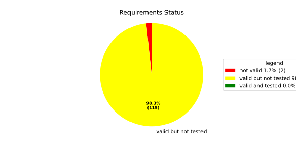
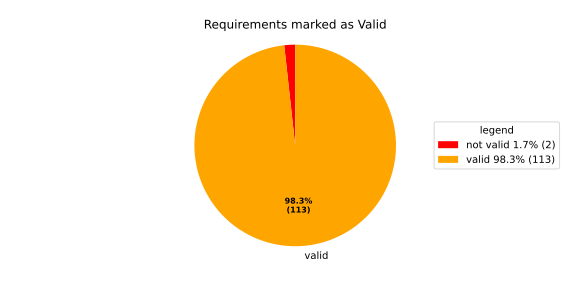
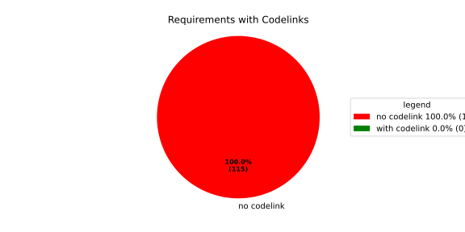

Verification Statistics#
Overview#

In Detail#


No needs passed the filters
Failed Tests
Hint: This table should be empty. Before a PR can be merged all tests have to be successful.
No needs passed the filters
Skipped / Disabled Tests
No needs passed the filters
All passed Tests#
No needs passed the filters
Details About Testcases#
No needs passed the filters
No needs passed the filters
Test Log Files#
tests-report/tests/integration/process_simple_rep_failure/process_simple_rep_failure/test.log
exec ${PAGER:-/usr/bin/less} "$0" || exit 1
Executing tests from //tests/integration/process_simple_rep_failure:process_simple_rep_failure
-----------------------------------------------------------------------------
============================= test session starts ==============================
platform linux -- Python 3.12.12, pytest-9.0.3, pluggy-1.5.0
rootdir: /home/runner/.bazel/sandbox/processwrapper-sandbox/906/execroot/_main/bazel-out/k8-fastbuild/bin/tests/integration/process_simple_rep_failure/process_simple_rep_failure.runfiles/score_itf+
configfile: pytest.ini
collected 1 item
../score_itf+::test_recovery_action_simple_rep_failure
-------------------------------- live log setup --------------------------------
[2026-06-18 13:53:50.537] [INFO] [score.itf.plugins.docker] Executing custom image bootstrap command: tests/utils/environments/x86_64-linux/x86_64-linux.sh
[2026-06-18 13:53:55.450] [DEBUG] [docker.utils.config] Trying paths: ['/home/runner/.docker/config.json', '/home/runner/.dockercfg']
[2026-06-18 13:53:55.451] [DEBUG] [docker.utils.config] Found file at path: /home/runner/.docker/config.json
[2026-06-18 13:53:55.451] [DEBUG] [docker.auth] Found 'auths' section
[2026-06-18 13:53:55.451] [DEBUG] [docker.auth] Found entry (registry='https://index.docker.io/v1/', username='githubactions')
[2026-06-18 13:53:55.463] [DEBUG] [urllib3.connectionpool] http://localhost:None "GET /version HTTP/1.1" 200 823
[2026-06-18 13:53:55.490] [DEBUG] [urllib3.connectionpool] http://localhost:None "POST /v1.48/containers/create HTTP/1.1" 201 88
[2026-06-18 13:53:55.494] [DEBUG] [urllib3.connectionpool] http://localhost:None "GET /v1.48/containers/abc682819b1e1491f43f99efc5d6abd95baf2f15fdd1ac66d06202bf5434f3e0/json HTTP/1.1" 200 None
[2026-06-18 13:53:55.771] [DEBUG] [urllib3.connectionpool] http://localhost:None "POST /v1.48/containers/abc682819b1e1491f43f99efc5d6abd95baf2f15fdd1ac66d06202bf5434f3e0/start HTTP/1.1" 204 0
[2026-06-18 13:53:55.772] [DEBUG] [docker.utils.config] Trying paths: ['/home/runner/.docker/config.json', '/home/runner/.dockercfg']
[2026-06-18 13:53:55.772] [DEBUG] [docker.utils.config] Found file at path: /home/runner/.docker/config.json
[2026-06-18 13:53:55.772] [DEBUG] [docker.auth] Found 'auths' section
[2026-06-18 13:53:55.793] [DEBUG] [docker.auth] Found entry (registry='https://index.docker.io/v1/', username='githubactions')
[2026-06-18 13:53:55.828] [DEBUG] [urllib3.connectionpool] http://localhost:None "GET /version HTTP/1.1" 200 823
[2026-06-18 13:53:56.049] [INFO] [tests.utils.testing_utils.setup_test] Test case setup finished
-------------------------------- live log call ---------------------------------
[2026-06-18 13:53:56.192] [INFO] [launch_manager] 2026/06/18 13:53:56.836188 2320916 000 ECU1 LM LM log debug verbose 1 Launch Manager Started !!!!
[2026-06-18 13:53:56.195] [INFO] [launch_manager] 2026/06/18 13:53:56.836188 2320920 000 ECU1 LM LM log debug verbose 1 Loading LCM Configurations...
[2026-06-18 13:53:56.195] [INFO] [launch_manager] 2026/06/18 13:53:56.836188 2320921 000 ECU1 LM LM log debug verbose 1 ECUCFG_ENV_VAR_ROOTFOLDER set successfully
[2026-06-18 13:53:56.195] [INFO] [launch_manager] 2026/06/18 13:53:56.836188 2320922 000 ECU1 LM LM log debug verbose 5 FlatBufferParser::getModeGroupPgName: MainPG ( IdentifierHash: 18079021346025578134 )
[2026-06-18 13:53:56.195] [INFO] [launch_manager] 2026/06/18 13:53:56.836188 2320923 000 ECU1 LM LM log debug verbose 5 FlatBufferParser::getModeGroupPgStateName: MainPG/Startup ( IdentifierHash: 10504605499600661529 )
[2026-06-18 13:53:56.195] [INFO] [launch_manager] 2026/06/18 13:53:56.836188 2320923 000 ECU1 LM LM log debug verbose 5
[2026-06-18 13:53:56.196] [INFO] [launch_manager] FlatBufferParser::getModeGroupPgStateName: MainPG/run_target_app_does_report_krunning_in_time ( IdentifierHash: 11934981641920773349 )
[2026-06-18 13:53:56.196] [INFO] [launch_manager] 2026/06/18 13:53:56.836189 2320924 000 ECU1 LM LM log debug verbose 5
[2026-06-18 13:53:56.196] [INFO] [launch_manager] FlatBufferParser::getModeGroupPgStateName: MainPG/run_target_app_does_not_report_krunning_in_time ( IdentifierHash: 7672161913816744053 )
[2026-06-18 13:53:56.196] [INFO] [launch_manager] 2026/06/18 13:53:56.836189 2320925 000 ECU1 LM LM log debug verbose 5 FlatBufferParser::getModeGroupPgStateName: MainPG/Off ( IdentifierHash: 15281793077830264047 )
[2026-06-18 13:53:56.196] [INFO] [launch_manager] 2026/06/18 13:53:56.836189 2320926 000 ECU1 LM LM log debug verbose 5 FlatBufferParser::getModeGroupPgStateName: MainPG/fallback_run_target ( IdentifierHash: 4059409696722237352 )
[2026-06-18 13:53:56.196] [INFO] [launch_manager] 2026/06/18 13:53:56.836189 2320927 000 ECU1 LM LM log debug verbose 4
[2026-06-18 13:53:56.196] [INFO] [launch_manager] parseProcessConfigurations: Process index: 0 executable_path_: /tmp/tests/process_simple_rep_failure/control_client_mock
[2026-06-18 13:53:56.196] [INFO] [launch_manager] 2026/06/18 13:53:56.836189 2320928 000 ECU1 LM LM log debug verbose 3 Process control_client_mock is Reporting execution state
[2026-06-18 13:53:56.196] [INFO] [launch_manager] 2026/06/18 13:53:56.836189 2320928 000 ECU1 LM LM log debug verbose 1
[2026-06-18 13:53:56.196] [INFO] [launch_manager] Process is STATE_MANAGEMENT function Cluster Affiliation
[2026-06-18 13:53:56.196] [INFO] [launch_manager] 2026/06/18 13:53:56.836189 2320929 000 ECU1 LM LM log debug verbose 3
[2026-06-18 13:53:56.196] [INFO] [launch_manager] Process control_client_mock is Self terminating
[2026-06-18 13:53:56.196] [INFO] [launch_manager] 2026/06/18 13:53:56.836189 2320930 000 ECU1 LM LM log debug verbose 4
[2026-06-18 13:53:56.203] [INFO] [launch_manager] ParseProcessProcessGroup: id:::pg_name_: MainPG , pg_state_name_: MainPG/Startup
[2026-06-18 13:53:56.205] [INFO] [launch_manager] 2026/06/18 13:53:56.836189 2320931 000 ECU1 LM LM log debug verbose 4 ParseProcessProcessGroup: id:::pg_name_: MainPG , pg_state_name_: MainPG/run_target_app_does_report_krunning_in_time
[2026-06-18 13:53:56.205] [INFO] [launch_manager] 2026/06/18 13:53:56.836189 2320931 000 ECU1 LM LM log debug verbose 4 ParseProcessProcessGroup: id:::pg_name_: MainPG , pg_state_name_: MainPG/run_target_app_does_not_report_krunning_in_time
[2026-06-18 13:53:56.205] [INFO] [launch_manager] 2026/06/18 13:53:56.836189 2320932 000 ECU1 LM LM log debug verbose 4
[2026-06-18 13:53:56.205] [INFO] [launch_manager] ParseProcessProcessGroup: id:::pg_name_: MainPG , pg_state_name_: MainPG/fallback_run_target
[2026-06-18 13:53:56.205] [INFO] [launch_manager] 2026/06/18 13:53:56.836189 2320933 000 ECU1 LM LM log debug verbose 4
[2026-06-18 13:53:56.205] [INFO] [launch_manager] parseProcessConfigurations: Process index: 1 executable_path_: /tmp/tests/process_simple_rep_failure/process_simple_reporting
[2026-06-18 13:53:56.206] [INFO] [launch_manager] 2026/06/18 13:53:56.836189 2320933 000 ECU1 LM LM log debug verbose 3 Process component_does_report_krunning_in_time is Reporting execution state
[2026-06-18 13:53:56.207] [INFO] [launch_manager] 2026/06/18 13:53:56.836189 2320934 000 ECU1 LM LM log debug verbose 1 Process is NOT associated with any function Cluster Affiliation
[2026-06-18 13:53:56.208] [INFO] [launch_manager] 2026/06/18 13:53:56.836190 2320934 000 ECU1 LM LM log debug verbose 3 Process component_does_report_krunning_in_time is Self terminating
[2026-06-18 13:53:56.208] [INFO] [launch_manager] 2026/06/18 13:53:56.836190 2320935 000 ECU1 LM LM log debug verbose 4
[2026-06-18 13:53:56.213] [INFO] [launch_manager] ParseProcessProcessGroup: id:::pg_name_: MainPG , pg_state_name_: MainPG/run_target_app_does_report_krunning_in_time
[2026-06-18 13:53:56.213] [INFO] [launch_manager] 2026/06/18 13:53:56.836190 2320936 000 ECU1 LM LM log debug verbose 4 parseProcessConfigurations: Process index: 2 executable_path_: /tmp/tests/process_simple_rep_failure/process_simple_reporting
[2026-06-18 13:53:56.213] [INFO] [launch_manager] 2026/06/18 13:53:56.836190 2320936 000 ECU1 LM LM log debug verbose 3
[2026-06-18 13:53:56.213] [INFO] [launch_manager] Process component_does_not_report_krunning_in_time is Reporting execution state
[2026-06-18 13:53:56.213] [INFO] [launch_manager] 2026/06/18 13:53:56.836190 2320937 000 ECU1 LM LM log debug verbose 1 Process is NOT associated with any function Cluster Affiliation
[2026-06-18 13:53:56.214] [INFO] [launch_manager] 2026/06/18 13:53:56.836190 2320938 000 ECU1 LM LM log debug verbose 3
[2026-06-18 13:53:56.214] [INFO] [launch_manager] Process component_does_not_report_krunning_in_time is Self terminating
[2026-06-18 13:53:56.214] [INFO] [launch_manager] 2026/06/18 13:53:56.836190 2320938 000 ECU1 LM LM log debug verbose 4 ParseProcessProcessGroup: id:::pg_name_: MainPG , pg_state_name_: MainPG/run_target_app_does_not_report_krunning_in_time
[2026-06-18 13:53:56.214] [INFO] [launch_manager] 2026/06/18 13:53:56.836190 2320939 000 ECU1 LM LM log debug verbose 4
[2026-06-18 13:53:56.214] [INFO] [launch_manager] parseProcessConfigurations: Process index: 3 executable_path_: /tmp/tests/process_simple_rep_failure/verification_process
[2026-06-18 13:53:56.214] [INFO] [launch_manager] 2026/06/18 13:53:56.836190 2320940 000 ECU1 LM LM log debug verbose 3 Process verification_component is NOT Reporting execution state
[2026-06-18 13:53:56.214] [INFO] [launch_manager] 2026/06/18 13:53:56.836190 2320940 000 ECU1 LM LM log debug verbose 1 Process is NOT associated with any function Cluster Affiliation
[2026-06-18 13:53:56.214] [INFO] [launch_manager] 2026/06/18 13:53:56.836190 2320941 000 ECU1 LM LM log debug verbose 3 Process verification_component is Self terminating
[2026-06-18 13:53:56.214] [INFO] [launch_manager] 2026/06/18 13:53:56.836190 2320942 000 ECU1 LM LM log debug verbose 4 ParseProcessProcessGroup: id:::pg_name_: MainPG , pg_state_name_: MainPG/fallback_run_target
[2026-06-18 13:53:56.214] [INFO] [launch_manager] 2026/06/18 13:53:56.836190 2320942 000 ECU1 LM LM log debug verbose 3
[2026-06-18 13:53:56.214] [INFO] [launch_manager] Loading SWCL Nr. 0 Succeeded
[2026-06-18 13:53:56.214] [INFO] [launch_manager] 2026/06/18 13:53:56.836190 2320943 000 ECU1 LM LM log debug verbose 2 1 process group(s)
[2026-06-18 13:53:56.214] [INFO] [launch_manager] 2026/06/18 13:53:56.836190 2320943 000 ECU1 LM LM log debug verbose 3
[2026-06-18 13:53:56.214] [INFO] [launch_manager] Creating graph with 4 nodes
[2026-06-18 13:53:56.215] [INFO] [launch_manager] 2026/06/18 13:53:56.836191 2320944 000 ECU1 LM LM log debug verbose 1 Process groups initialized successfully
[2026-06-18 13:53:56.215] [INFO] [launch_manager] 2026/06/18 13:53:56.836191 2320944 000 ECU1 LM LM log debug verbose 1
[2026-06-18 13:53:56.215] [INFO] [launch_manager] Process Group initialization done
[2026-06-18 13:53:56.215] [INFO] [launch_manager] 2026/06/18 13:53:56.836191 2320945 000 ECU1 LM LM log debug verbose 3 Creating Safe Process Map with 4 entries
[2026-06-18 13:53:56.215] [INFO] [launch_manager] 2026/06/18 13:53:56.836191 2320946 000 ECU1 LM LM log debug verbose 2 Creating job queue with capacity 1024
[2026-06-18 13:53:56.215] [INFO] [launch_manager] 2026/06/18 13:53:56.836191 2320946 000 ECU1 LM LM log debug verbose 1 Creating worker threads...
[2026-06-18 13:53:56.215] [INFO] [launch_manager] 2026/06/18 13:53:56.836192 2320961 000 ECU1 LM LM log debug verbose 7 Process group index 0 (with name MainPG ) has 4 processes
[2026-06-18 13:53:56.215] [INFO] [launch_manager] 2026/06/18 13:53:56.836192 2320962 000 ECU1 LM LM log debug verbose 2 Creating process node with id: 0
[2026-06-18 13:53:56.215] [INFO] [launch_manager] 2026/06/18 13:53:56.836192 2320962 000 ECU1 LM LM log debug verbose 5 Process 0 has 0 start dependencies
[2026-06-18 13:53:56.215] [INFO] [launch_manager] 2026/06/18 13:53:56.836192 2320962 000 ECU1 LM LM log debug verbose 2 Creating process node with id: 1
[2026-06-18 13:53:56.215] [INFO] [launch_manager] 2026/06/18 13:53:56.836192 2320962 000 ECU1 LM LM log debug verbose 5 Process 1 has 0 start dependencies
[2026-06-18 13:53:56.215] [INFO] [launch_manager] 2026/06/18 13:53:56.836192 2320962 000 ECU1 LM LM log debug verbose 2 Creating process node with id: 2
[2026-06-18 13:53:56.215] [INFO] [launch_manager] 2026/06/18 13:53:56.836192 2320963 000 ECU1 LM LM log debug verbose 5 Process 2 has 0 start dependencies
[2026-06-18 13:53:56.216] [INFO] [launch_manager] 2026/06/18 13:53:56.836192 2320963 000 ECU1 LM LM log debug verbose 2 Creating process node with id: 3
[2026-06-18 13:53:56.216] [INFO] [launch_manager] 2026/06/18 13:53:56.836192 2320963 000 ECU1 LM LM log debug verbose 5 Process 3 has 0 start dependencies
[2026-06-18 13:53:56.216] [INFO] [launch_manager] 2026/06/18 13:53:56.836192 2320963 000 ECU1 LM LM log debug verbose 3 Created 4 process nodes
[2026-06-18 13:53:56.216] [INFO] [launch_manager] 2026/06/18 13:53:56.836192 2320963 000 ECU1 LM LM log debug verbose 2 Creating successor lists for process group MainPG
[2026-06-18 13:53:56.216] [INFO] [launch_manager] 2026/06/18 13:53:56.836192 2320963 000 ECU1 LM LM log debug verbose 1 Graphs initialized
[2026-06-18 13:53:56.216] [INFO] [launch_manager] 2026/06/18 13:53:56.836193 2320965 000 ECU1 LM Fcty log info verbose 2 Factory for FlatCfg MachineConfig: Loading of HM Machine Configuration succeeded.
[2026-06-18 13:53:56.216] [INFO] [launch_manager] 2026/06/18 13:53:56.836193 2320966 000 ECU1 LM Fcty log debug verbose 3 Factory for FlatCfg MachineConfig: Alive Supervision buffer size: 100
[2026-06-18 13:53:56.216] [INFO] [launch_manager] 2026/06/18 13:53:56.836193 2320966 000 ECU1 LM Fcty log debug verbose 3 Factory for FlatCfg MachineConfig: Monitor buffer size: 512
[2026-06-18 13:53:56.216] [INFO] [launch_manager] 2026/06/18 13:53:56.836193 2320966 000 ECU1 LM Fcty log debug verbose 4 Factory for FlatCfg MachineConfig: Periodicity: 50000000 ns
[2026-06-18 13:53:56.216] [INFO] [launch_manager] 2026/06/18 13:53:56.836193 2320966 000 ECU1 LM Fcty log debug verbose 3 Factory for FlatCfg MachineConfig: Configured watchdogs: 0
[2026-06-18 13:53:56.216] [INFO] [launch_manager] 2026/06/18 13:53:56.836193 2320966 000 ECU1 LM Fcty log warn verbose 2 Factory for FlatCfg MachineConfig: No watchdog configured
[2026-06-18 13:53:56.216] [INFO] [launch_manager] 2026/06/18 13:53:56.836193 2320967 000 ECU1 LM Fcty log debug verbose 2 Software Cluster Handler starts constructing workers: MainCluster
[2026-06-18 13:53:56.216] [INFO] [launch_manager] 2026/06/18 13:53:56.836193 2320967 000 ECU1 LM Fcty log debug verbose 3 Factory for FlatCfg AR24-11: Successfully created Process States: control_client_mock
[2026-06-18 13:53:56.216] [INFO] [launch_manager] 2026/06/18 13:53:56.836193 2320967 000 ECU1 LM Fcty log debug verbose 3 Factory for FlatCfg AR24-11: Number of constructed Process States: 1
[2026-06-18 13:53:56.216] [INFO] [launch_manager] 2026/06/18 13:53:56.836193 2320968 000 ECU1 LM Fcty log debug verbose 3 Factory for FlatCfg AR24-11: Successfully created Monitor interface IPC with path: lifecycle_health_control_client_mock
[2026-06-18 13:53:56.216] [INFO] [launch_manager] 2026/06/18 13:53:56.836193 2320969 000 ECU1 LM Fcty log debug verbose 3 Factory for FlatCfg AR24-11: Number of constructed Monitor interface IPCs: 1
[2026-06-18 13:53:56.216] [INFO] [launch_manager] 2026/06/18 13:53:56.836193 2320969 000 ECU1 LM Fcty log debug verbose 3 Factory for FlatCfg AR24-11: Successfully created MonitorInterface: /lifecycle_health_control_client_mock
[2026-06-18 13:53:56.217] [INFO] [launch_manager] 2026/06/18 13:53:56.836193 2320969 000 ECU1 LM Fcty log debug verbose 3 Factory for FlatCfg AR24-11: Number of constructed Monitor interfaces: 1
[2026-06-18 13:53:56.217] [INFO] [launch_manager] 2026/06/18 13:53:56.836193 2320969 000 ECU1 LM Fcty log debug verbose 3 Factory for FlatCfg AR24-11: Successfully created supervision checkpoint: control_client_mock_checkpoint
[2026-06-18 13:53:56.217] [INFO] [launch_manager] 2026/06/18 13:53:56.836193 2320969 000 ECU1 LM Fcty log debug verbose 3 Factory for FlatCfg AR24-11: Number of constructed supervision checkpoints: 1
[2026-06-18 13:53:56.217] [INFO] [launch_manager] 2026/06/18 13:53:56.836193 2320970 000 ECU1 LM Fcty log debug verbose 3 Factory for FlatCfg AR24-11: Successfully created alive supervision worker object: control_client_mock_alive_supervision
[2026-06-18 13:53:56.217] [INFO] [launch_manager] 2026/06/18 13:53:56.836193 2320970 000 ECU1 LM Fcty log debug verbose 3 Factory for FlatCfg AR24-11: Number of constructed alive supervisions: 1
[2026-06-18 13:53:56.217] [INFO] [launch_manager] 2026/06/18 13:53:56.836193 2320970 000 ECU1 LM Fcty log info verbose 2 Phm Daemon: The (configured) periodicity in [ns] is set to: 50000000
[2026-06-18 13:53:56.217] [INFO] [launch_manager] 2026/06/18 13:53:56.836193 2320971 000 ECU1 LM Fcty log debug verbose 2 Phm Daemon: The accuracy of the monotonic system clock in [ns] is: 1
[2026-06-18 13:53:56.217] [INFO] [launch_manager] 2026/06/18 13:53:56.836193 2320971 000 ECU1 LM Fcty log debug verbose 3 HealthMonitor: Initialization took 0 ms
[2026-06-18 13:53:56.217] [INFO] [launch_manager] 2026/06/18 13:53:56.836193 2320971 000 ECU1 LM LM log info verbose 1 LCM started successfully
[2026-06-18 13:53:56.217] [INFO] [launch_manager] 2026/06/18 13:53:56.836193 2320972 000 ECU1 LM LM log debug verbose 3 clock() at run(): 37.979000 ms
[2026-06-18 13:53:56.217] [INFO] [launch_manager] 2026/06/18 13:53:56.836193 2320973 000 ECU1 LM LM log debug verbose 1 =============STARTING MAINPG STARTUP STATE============
[2026-06-18 13:53:56.217] [INFO] [launch_manager] 2026/06/18 13:53:56.836193 2320973 000 ECU1 LM LM log debug verbose 9 Graph::setState changes from kSuccess to kInTransition for PG 0 ( MainPG )
[2026-06-18 13:53:56.217] [INFO] [launch_manager] 2026/06/18 13:53:56.836193 2320973 000 ECU1 LM LM log debug verbose 2 Stop Dependencies: 0
[2026-06-18 13:53:56.217] [INFO] [launch_manager] 2026/06/18 13:53:56.836193 2320973 000 ECU1 LM LM log debug verbose 2 Stop Dependencies: 0
[2026-06-18 13:53:56.217] [INFO] [launch_manager] 2026/06/18 13:53:56.836193 2320973 000 ECU1 LM LM log debug verbose 2 Stop Dependencies: 0
[2026-06-18 13:53:56.217] [INFO] [launch_manager] 2026/06/18 13:53:56.836193 2320974 000 ECU1 LM LM log debug verbose 2 Stop Dependencies: 0
[2026-06-18 13:53:56.218] [INFO] [launch_manager] 2026/06/18 13:53:56.836193 2320974 000 ECU1 LM LM log debug verbose 2 Start Dependencies: 0
[2026-06-18 13:53:56.218] [INFO] [launch_manager] 2026/06/18 13:53:56.836194 2320974 000 ECU1 LM LM log debug verbose 2 Start Dependencies: 0
[2026-06-18 13:53:56.218] [INFO] [launch_manager] 2026/06/18 13:53:56.836194 2320974 000 ECU1 LM LM log debug verbose 2 Start Dependencies: 0
[2026-06-18 13:53:56.218] [INFO] [launch_manager] 2026/06/18 13:53:56.836194 2320974 000 ECU1 LM LM log debug verbose 2 Start Dependencies: 0
[2026-06-18 13:53:56.218] [INFO] [launch_manager] 2026/06/18 13:53:56.836194 2320975 000 ECU1 LM LM log debug verbose 6 Starting process 0 ( control_client_mock ) from executable /tmp/tests/process_simple_rep_failure/control_client_mock
[2026-06-18 13:53:56.218] [INFO] [launch_manager] 2026/06/18 13:53:56.836194 2320976 000 ECU1 LM LM log debug verbose 3 Initialize the control client for control_client_mock process
[2026-06-18 13:53:56.218] [INFO] [launch_manager] 2026/06/18 13:53:56.836194 2320976 000 ECU1 LM LM log debug verbose 1 ControlClientChannel initialized
[2026-06-18 13:53:56.218] [INFO] [launch_manager] 2026/06/18 13:53:56.836194 2320982 000 ECU1 LM LM log debug verbose 4 startProcess pid 67 received for process: control_client_mock
[2026-06-18 13:53:56.218] [INFO] [launch_manager] 2026/06/18 13:53:56.836194 2320982 000 ECU1 LM LM log debug verbose 1 ControlClientChannel obtained from sync.
[2026-06-18 13:53:56.218] [INFO] [launch_manager] [==========] Running 1 test from 1 test suite.
[2026-06-18 13:53:56.218] [INFO] [launch_manager] [----------] Global test environment set-up.
[2026-06-18 13:53:56.218] [INFO] [launch_manager] [----------] 1 test from RecoveryActionSimpleRepFailure
[2026-06-18 13:53:56.218] [INFO] [launch_manager] [ RUN ] RecoveryActionSimpleRepFailure.ControlClientMock
[2026-06-18 13:53:56.218] [INFO] [launch_manager] [ STEP ] Report running from ControlClientMock
[2026-06-18 13:53:56.218] [INFO] [launch_manager] [ END STEP ] Report running from ControlClientMock
[2026-06-18 13:53:56.218] [INFO] [launch_manager] [ STEP ] Activate RunTarget run_target_app_does_report_krunning_in_time
[2026-06-18 13:53:56.218] [INFO] [launch_manager] 2026/06/18 13:53:56.836208 2321124 000 ECU1 LM LM log debug verbose 1 Request sent. Waiting for acknowledgment...
[2026-06-18 13:53:56.248] [INFO] [launch_manager] 2026/06/18 13:53:56.836210 2321140 000 ECU1 LM LM log debug verbose 8 ProcessGroupManager::ControlClientHandler: got request kSetStateRequest ( 16 ) re state MainPG/run_target_app_does_report_krunning_in_time of PG MainPG
[2026-06-18 13:53:56.249] [INFO] [launch_manager] 2026/06/18 13:53:56.836210 2321141 000 ECU1 LM LM log debug verbose 6 Pending state for process group MainPG changed from to MainPG/run_target_app_does_report_krunning_in_time
[2026-06-18 13:53:56.249] [INFO] [launch_manager] 2026/06/18 13:53:56.836210 2321141 000 ECU1 LM LM log debug verbose 9 Graph::setState changes from kInTransition to kCancelled for PG 0 ( MainPG )
[2026-06-18 13:53:56.249] [INFO] [launch_manager] 2026/06/18 13:53:56.836210 2321141 000 ECU1 LM LM log debug verbose 1 Control Client handler nudged
[2026-06-18 13:53:56.249] [INFO] [launch_manager] 2026/06/18 13:53:56.836210 2321142 000 ECU1 LM LM log debug verbose 1 Request acknowledged.
[2026-06-18 13:53:56.249] [INFO] [launch_manager] 2026/06/18 13:53:56.836210 2321142 000 ECU1 LM LM log debug verbose 1 Request acknowledged.
[2026-06-18 13:53:56.249] [INFO] [launch_manager] 2026/06/18 13:53:56.836210 2321144 000 ECU1 LM LM log debug verbose 8 Got kRunning for pid 67 ( control_client_mock ) process 0 of group MainPG
[2026-06-18 13:53:56.249] [INFO] [launch_manager] 2026/06/18 13:53:56.836211 2321144 000 ECU1 LM LM log debug verbose 7 startProcess for MainPG process 0 ( control_client_mock ) done
[2026-06-18 13:53:56.249] [INFO] [launch_manager] 2026/06/18 13:53:56.836211 2321144 000 ECU1 LM LM log debug verbose 1 Control Client handler nudged
[2026-06-18 13:53:56.249] [INFO] [launch_manager] 2026/06/18 13:53:56.836211 2321145 000 ECU1 LM LM log fatal verbose 3 clock() at failed initial state transition: 39.645000 ms
[2026-06-18 13:53:56.249] [INFO] [launch_manager] 2026/06/18 13:53:56.836211 2321145 000 ECU1 LM LM log debug verbose 9 Graph::setState changes from kCancelled to kUndefinedState for PG 0 ( MainPG )
[2026-06-18 13:53:56.249] [INFO] [launch_manager] 2026/06/18 13:53:56.836211 2321145 000 ECU1 LM LM log debug verbose 1 Control Client handler nudged
[2026-06-18 13:53:56.249] [INFO] [launch_manager] 2026/06/18 13:53:56.836212 2321163 000 ECU1 LM LM log debug verbose 6 Pending state for process group MainPG changed from MainPG/run_target_app_does_report_krunning_in_time to
[2026-06-18 13:53:56.249] [INFO] [launch_manager] 2026/06/18 13:53:56.836212 2321163 000 ECU1 LM LM log debug verbose 4 Start transition to MainPG/run_target_app_does_report_krunning_in_time for PG MainPG
[2026-06-18 13:53:56.249] [INFO] [launch_manager] 2026/06/18 13:53:56.836212 2321163 000 ECU1 LM LM log debug verbose 9 Graph::setState changes from kUndefinedState to kInTransition for PG 0 ( MainPG )
[2026-06-18 13:53:56.249] [INFO] [launch_manager] 2026/06/18 13:53:56.836212 2321164 000 ECU1 LM LM log debug verbose 2 Stop Dependencies: 0
[2026-06-18 13:53:56.249] [INFO] [launch_manager] 2026/06/18 13:53:56.836213 2321164 000 ECU1 LM LM log debug verbose 2 Stop Dependencies: 0
[2026-06-18 13:53:56.250] [INFO] [launch_manager] 2026/06/18 13:53:56.836213 2321164 000 ECU1 LM LM log debug verbose 2 Stop Dependencies: 0
[2026-06-18 13:53:56.250] [INFO] [launch_manager] 2026/06/18 13:53:56.836213 2321164 000 ECU1 LM LM log debug verbose 2 Stop Dependencies: 0
[2026-06-18 13:53:56.250] [INFO] [launch_manager] 2026/06/18 13:53:56.836213 2321165 000 ECU1 LM LM log debug verbose 2 Start Dependencies: 0
[2026-06-18 13:53:56.250] [INFO] [launch_manager] 2026/06/18 13:53:56.836213 2321165 000 ECU1 LM LM log debug verbose 2 Start Dependencies: 0
[2026-06-18 13:53:56.250] [INFO] [launch_manager] 2026/06/18 13:53:56.836213 2321165 000 ECU1 LM LM log debug verbose 2 Start Dependencies: 0
[2026-06-18 13:53:56.250] [INFO] [launch_manager] 2026/06/18 13:53:56.836213 2321165 000 ECU1 LM LM log debug verbose 2 Start Dependencies: 0
[2026-06-18 13:53:56.250] [INFO] [launch_manager] 2026/06/18 13:53:56.836213 2321166 000 ECU1 LM LM log debug verbose 6 Starting process 1 ( component_does_report_krunning_in_time ) from executable /tmp/tests/process_simple_rep_failure/process_simple_reporting
[2026-06-18 13:53:56.250] [INFO] [launch_manager] 2026/06/18 13:53:56.836213 2321173 000 ECU1 LM LM log debug verbose 4 startProcess pid 69 received for process: component_does_report_krunning_in_time
[2026-06-18 13:53:56.250] [INFO] [launch_manager] [==========] Running 1 test from 1 test suite.
[2026-06-18 13:53:56.250] [INFO] [launch_manager] [----------] Global test environment set-up.
[2026-06-18 13:53:56.250] [INFO] [launch_manager] [----------] 1 test from ProcessSimpleRepFailure
[2026-06-18 13:53:56.250] [INFO] [launch_manager] [ RUN ] ProcessSimpleRepFailure.ProcessSimpleReporting
[2026-06-18 13:53:56.250] [INFO] [launch_manager] [ STEP ] Check args
[2026-06-18 13:53:56.251] [INFO] [launch_manager] [ END STEP ] Check args
[2026-06-18 13:53:56.251] [INFO] [launch_manager] [ STEP ] Report running from ProcessSimpleReporting
[2026-06-18 13:53:56.251] [INFO] [launch_manager] 2026/06/18 13:53:56.836244 2321475 000 ECU1 LM Sprv log debug verbose 6 Process with Id control_client_mock changed state PG MainPG/Startup PS 1
[2026-06-18 13:53:56.251] [INFO] [launch_manager] 2026/06/18 13:53:56.836244 2321481 000 ECU1 LM Sprv log debug verbose 6 Process with Id control_client_mock changed state PG MainPG/Startup PS 2
[2026-06-18 13:53:56.251] [INFO] [launch_manager] 2026/06/18 13:53:56.836244 2321481 000 ECU1 LM Sprv log debug verbose 6 Process with Id component_does_report_krunning_in_time changed state PG MainPG/run_target_app_does_report_krunning_in_time PS 1
[2026-06-18 13:53:56.251] [INFO] [launch_manager] 2026/06/18 13:53:56.836244 2321481 000 ECU1 LM Sprv log info verbose 3 Alive Supervision ( control_client_mock_alive_supervision ) switched to OK.
[2026-06-18 13:53:56.313] [DEBUG] [tests.utils.testing_utils.run_until_file_deployed] Waiting for /tmp/tests/test_end
[2026-06-18 13:53:56.718] [INFO] [launch_manager] [ END STEP ] Report running from ProcessSimpleReporting
[2026-06-18 13:53:56.718] [INFO] [launch_manager] [ OK ] ProcessSimpleRepFailure.ProcessSimpleReporting (502 ms)
[2026-06-18 13:53:56.718] [INFO] [launch_manager] [----------] 1 test from ProcessSimpleRepFailure (502 ms total)
[2026-06-18 13:53:56.718] [INFO] [launch_manager] [----------] Global test environment tear-down
[2026-06-18 13:53:56.719] [INFO] [launch_manager] [==========] 1 test from 1 test suite ran. (502 ms total)
[2026-06-18 13:53:56.719] [INFO] [launch_manager] [ PASSED ] 1 test.
[2026-06-18 13:53:56.720] [INFO] [launch_manager] 2026/06/18 13:53:56.836720 2326235 000 ECU1 LM LM log debug verbose 8 Got kRunning for pid 69 ( component_does_report_krunning_in_time ) process 1 of group MainPG
[2026-06-18 13:53:56.721] [INFO] [launch_manager] 2026/06/18 13:53:56.836720 2326250 000 ECU1 LM LM log debug verbose 12
[2026-06-18 13:53:56.721] [INFO] [launch_manager] Child process 1 of MainPG pid 69 ( component_does_report_krunning_in_time ) for node True terminated with status 0
[2026-06-18 13:53:56.722] [INFO] [launch_manager] 2026/06/18 13:53:56.836721 2326251 000 ECU1 LM LM log debug verbose 7 startProcess for MainPG process 1 ( component_does_report_krunning_in_time ) done
[2026-06-18 13:53:56.722] [INFO] [launch_manager] 2026/06/18 13:53:56.836721 2326252 000 ECU1 LM LM log debug verbose 9 Graph::setState changes from kInTransition to kSuccess for PG 0 ( MainPG )
[2026-06-18 13:53:56.722] [INFO] [launch_manager] 2026/06/18 13:53:56.836721 2326253 000 ECU1 LM LM log info verbose 7
[2026-06-18 13:53:56.722] [INFO] [launch_manager] Completed the request for PG MainPG to State MainPG/run_target_app_does_report_krunning_in_time in 511 ms
[2026-06-18 13:53:56.722] [INFO] [launch_manager] 2026/06/18 13:53:56.836722 2326254 000 ECU1 LM LM log debug verbose 1 Control Client handler nudged
[2026-06-18 13:53:56.723] [INFO] [launch_manager] 2026/06/18 13:53:56.836723 2326272 000 ECU1 LM LM log debug verbose 8 ProcessGroupManager::ControlClientHandler: Sending kSetStateSuccess ( 20 ) re state MainPG/run_target_app_does_report_krunning_in_time of PG MainPG
[2026-06-18 13:53:56.724] [INFO] [launch_manager] 2026/06/18 13:53:56.836723 2326272 000 ECU1 LM LM log debug verbose 1 Response sent.
[2026-06-18 13:53:56.744] [INFO] [launch_manager] 2026/06/18 13:53:56.836743 2326473 000 ECU1 LM Sprv log debug verbose 6 Process with Id component_does_report_krunning_in_time changed state PG MainPG/run_target_app_does_report_krunning_in_time PS 2
[2026-06-18 13:53:56.744] [INFO] [launch_manager] 2026/06/18 13:53:56.836743 2326473 000 ECU1 LM Sprv log debug verbose 6 Process with Id component_does_report_krunning_in_time changed state PG MainPG/run_target_app_does_report_krunning_in_time PS 4
[2026-06-18 13:53:56.821] [INFO] [launch_manager] 2026/06/18 13:53:56.836809 2327131 000 ECU1 LM LM log debug verbose 1
[2026-06-18 13:53:56.821] [INFO] [launch_manager] Response retrieved.
[2026-06-18 13:53:56.821] [INFO] [launch_manager] [ END STEP ] Activate RunTarget run_target_app_does_report_krunning_in_time
[2026-06-18 13:53:56.909] [DEBUG] [tests.utils.testing_utils.run_until_file_deployed] Waiting for /tmp/tests/test_end
[2026-06-18 13:53:57.540] [DEBUG] [tests.utils.testing_utils.run_until_file_deployed] Waiting for /tmp/tests/test_end
[2026-06-18 13:53:57.810] [INFO] [launch_manager] [ STEP ] Verify fallback run target has not been activated
[2026-06-18 13:53:57.810] [INFO] [launch_manager] [ END STEP ] Verify fallback run target has not been activated
[2026-06-18 13:53:57.811] [INFO] [launch_manager] [ STEP ] Activate RunTarget run_target_app_does_not_report_krunning_in_time
[2026-06-18 13:53:57.811] [INFO] [launch_manager] 2026/06/18 13:53:57.837810 2337137 000 ECU1 LM LM log debug verbose 1 Request sent. Waiting for acknowledgment...
[2026-06-18 13:53:57.811] [INFO] [launch_manager] 2026/06/18 13:53:57.837811 2337144 000 ECU1 LM LM log debug verbose 8 ProcessGroupManager::ControlClientHandler: got request kSetStateRequest ( 16 ) re state MainPG/run_target_app_does_not_report_krunning_in_time of PG MainPG
[2026-06-18 13:53:57.811] [INFO] [launch_manager] 2026/06/18 13:53:57.837811 2337145 000 ECU1 LM LM log debug verbose 6 Pending state for process group MainPG changed from to MainPG/run_target_app_does_not_report_krunning_in_time
[2026-06-18 13:53:57.811] [INFO] [launch_manager] 2026/06/18 13:53:57.837811 2337145 000 ECU1 LM LM log debug verbose 1 Request acknowledged.
[2026-06-18 13:53:57.811] [INFO] [launch_manager] 2026/06/18 13:53:57.837811 2337145 000 ECU1 LM LM log debug verbose 6 Pending state for process group MainPG changed from MainPG/run_target_app_does_not_report_krunning_in_time to
[2026-06-18 13:53:57.811] [INFO] [launch_manager] 2026/06/18 13:53:57.837811 2337145 000 ECU1 LM LM log debug verbose 4 Start transition to MainPG/run_target_app_does_not_report_krunning_in_time for PG MainPG
[2026-06-18 13:53:57.811] [INFO] [launch_manager] 2026/06/18 13:53:57.837811 2337146 000 ECU1 LM LM log debug verbose 9 Graph::setState changes from kSuccess to kInTransition for PG 0 ( MainPG )
[2026-06-18 13:53:57.811] [INFO] [launch_manager] 2026/06/18 13:53:57.837811 2337146 000 ECU1 LM LM log debug verbose 2 Stop Dependencies: 0
[2026-06-18 13:53:57.811] [INFO] [launch_manager] 2026/06/18 13:53:57.837811 2337146 000 ECU1 LM LM log debug verbose 2 Stop Dependencies: 0
[2026-06-18 13:53:57.811] [INFO] [launch_manager] 2026/06/18 13:53:57.837811 2337146 000 ECU1 LM LM log debug verbose 2 Stop Dependencies: 0
[2026-06-18 13:53:57.812] [INFO] [launch_manager] 2026/06/18 13:53:57.837811 2337146 000 ECU1 LM LM log debug verbose 2 Stop Dependencies: 0
[2026-06-18 13:53:57.812] [INFO] [launch_manager] 2026/06/18 13:53:57.837811 2337147 000 ECU1 LM LM log debug verbose 2 Start Dependencies: 0
[2026-06-18 13:53:57.812] [INFO] [launch_manager] 2026/06/18 13:53:57.837811 2337147 000 ECU1 LM LM log debug verbose 2 Start Dependencies: 0
[2026-06-18 13:53:57.812] [INFO] [launch_manager] 2026/06/18 13:53:57.837811 2337147 000 ECU1 LM LM log debug verbose 2 Start Dependencies: 0
[2026-06-18 13:53:57.812] [INFO] [launch_manager] 2026/06/18 13:53:57.837811 2337147 000 ECU1 LM LM log debug verbose 2 Start Dependencies: 0
[2026-06-18 13:53:57.812] [INFO] [launch_manager] 2026/06/18 13:53:57.837811 2337148 000 ECU1 LM LM log debug verbose 6 Starting process 2 ( component_does_not_report_krunning_in_time ) from executable /tmp/tests/process_simple_rep_failure/process_simple_reporting
[2026-06-18 13:53:57.812] [INFO] [launch_manager] 2026/06/18 13:53:57.837811 2337151 000 ECU1 LM LM log debug verbose 1 Request acknowledged.
[2026-06-18 13:53:57.812] [INFO] [launch_manager] 2026/06/18 13:53:57.837812 2337156 000 ECU1 LM LM log debug verbose 4 startProcess pid 86 received for process: component_does_not_report_krunning_in_time
[2026-06-18 13:53:57.813] [INFO] [launch_manager] [==========] Running 1 test from 1 test suite.
[2026-06-18 13:53:57.814] [INFO] [launch_manager] [----------] Global test environment set-up.
[2026-06-18 13:53:57.814] [INFO] [launch_manager] [----------] 1 test from ProcessSimpleRepFailure
[2026-06-18 13:53:57.814] [INFO] [launch_manager] [ RUN ] ProcessSimpleRepFailure.ProcessSimpleReporting
[2026-06-18 13:53:57.814] [INFO] [launch_manager] [ STEP ] Check args
[2026-06-18 13:53:57.814] [INFO] [launch_manager] [ END STEP ] Check args
[2026-06-18 13:53:57.814] [INFO] [launch_manager] [ STEP ] Report running from ProcessSimpleReporting
[2026-06-18 13:53:57.844] [INFO] [launch_manager] 2026/06/18 13:53:57.837843 2337473 000 ECU1 LM Sprv log debug verbose 6 Process with Id component_does_not_report_krunning_in_time changed state PG MainPG/run_target_app_does_not_report_krunning_in_time PS 1
[2026-06-18 13:53:58.107] [DEBUG] [tests.utils.testing_utils.run_until_file_deployed] Waiting for /tmp/tests/test_end
[2026-06-18 13:53:58.740] [DEBUG] [tests.utils.testing_utils.run_until_file_deployed] Waiting for /tmp/tests/test_end
[2026-06-18 13:53:58.941] [INFO] [launch_manager] 2026/06/18 13:53:58.838940 2348439 000 ECU1 LM LM log error verbose 1 Semaphore timedWait or post failed: Unable to wait or post on semaphores within the specified timeout.
[2026-06-18 13:53:58.941] [INFO] [launch_manager] 2026/06/18 13:53:58.838940 2348440 000 ECU1 LM LM log warn verbose 5 Got kRunning timeout for process 2 ( component_does_not_report_krunning_in_time )
[2026-06-18 13:53:58.941] [INFO] [launch_manager] 2026/06/18 13:53:58.838940 2348440 000 ECU1 LM LM log debug verbose 5 terminating process 2 ( component_does_not_report_krunning_in_time )
[2026-06-18 13:53:58.941] [INFO] [launch_manager] 2026/06/18 13:53:58.838940 2348441 000 ECU1 LM LM log debug verbose 9 Requesting termination of process 2 of MainPG pid 86 ( component_does_not_report_krunning_in_time )
[2026-06-18 13:53:58.943] [INFO] [launch_manager] 2026/06/18 13:53:58.838940 2348441 000 ECU1 LM LM log debug verbose 2 Request termination received for 86
[2026-06-18 13:53:58.944] [INFO] [launch_manager] 2026/06/18 13:53:58.838943 2348473 000 ECU1 LM Sprv log debug verbose 6 Process with Id component_does_not_report_krunning_in_time changed state PG MainPG/run_target_app_does_not_report_krunning_in_time PS 3
[2026-06-18 13:53:59.311] [DEBUG] [tests.utils.testing_utils.run_until_file_deployed] Waiting for /tmp/tests/test_end
[2026-06-18 13:53:59.912] [DEBUG] [tests.utils.testing_utils.run_until_file_deployed] Waiting for /tmp/tests/test_end
[2026-06-18 13:54:00.000] [INFO] [launch_manager] 2026/06/18 13:54:00.840000 2359039 000 ECU1 LM LM log warn verbose 5
[2026-06-18 13:54:00.001] [INFO] [launch_manager] Process 2 ( component_does_not_report_krunning_in_time ) did not respond to SIGTERM, sending SIGKILL
[2026-06-18 13:54:00.003] [INFO] [launch_manager] 2026/06/18 13:54:00.840001 2359045 000 ECU1 LM LM log debug verbose 2
[2026-06-18 13:54:00.003] [INFO] [launch_manager] Forced termination received for pid 86
[2026-06-18 13:54:00.003] [INFO] [launch_manager] 2026/06/18 13:54:00.840001 2359049 000 ECU1 LM LM log debug verbose 12 Child process 2 of MainPG pid 86 ( component_does_not_report_krunning_in_time ) for node True terminated with status 9
[2026-06-18 13:54:00.004] [INFO] [launch_manager] 2026/06/18 13:54:00.840001 2359050 000 ECU1 LM LM log warn verbose 7 unexpected termination of process 2 pid 86 ( component_does_not_report_krunning_in_time )
[2026-06-18 13:54:00.004] [INFO] [launch_manager] 2026/06/18 13:54:00.840001 2359050 000 ECU1 LM LM log debug verbose 9 Graph::setState changes from kInTransition to kAborting for PG 0 ( MainPG )
[2026-06-18 13:54:00.004] [INFO] [launch_manager] 2026/06/18 13:54:00.840003 2359070 000 ECU1 LM LM log debug verbose 7
[2026-06-18 13:54:00.004] [INFO] [launch_manager] terminateProcess for MainPG process 2 ( component_does_not_report_krunning_in_time ) done
[2026-06-18 13:54:00.004] [INFO] [launch_manager] 2026/06/18 13:54:00.840004 2359077 000 ECU1 LM LM log debug verbose 7 startProcess for MainPG process 2 ( component_does_not_report_krunning_in_time ) done
[2026-06-18 13:54:00.004] [INFO] [launch_manager] 2026/06/18 13:54:00.840004 2359078 000 ECU1 LM LM log debug verbose 9 Graph::setState changes from kAborting to kUndefinedState for PG 0 ( MainPG )
[2026-06-18 13:54:00.004] [INFO] [launch_manager] 2026/06/18 13:54:00.840004 2359079 000 ECU1 LM LM log debug verbose 1 Control Client handler nudged
[2026-06-18 13:54:00.006] [INFO] [launch_manager] 2026/06/18 13:54:00.840006 2359100 000 ECU1 LM LM log debug verbose 8
[2026-06-18 13:54:00.007] [INFO] [launch_manager] ProcessGroupManager::ControlClientHandler: Sending kFailedUnexpectedTerminationOnEnter ( 23 ) re state MainPG/run_target_app_does_not_report_krunning_in_time of PG MainPG
[2026-06-18 13:54:00.007] [INFO] [launch_manager] 2026/06/18 13:54:00.840006 2359101 000 ECU1 LM LM log debug verbose 1
[2026-06-18 13:54:00.008] [INFO] [launch_manager] Response sent.
[2026-06-18 13:54:00.008] [INFO] [launch_manager] 2026/06/18 13:54:00.840006 2359102 000 ECU1 LM LM log warn verbose 3 Problem discovered in PG MainPG Activating Recovery state.
[2026-06-18 13:54:00.008] [INFO] [launch_manager] 2026/06/18 13:54:00.840006 2359103 000 ECU1 LM LM log debug verbose 9 Graph::setState changes from kUndefinedState to kInTransition for PG 0 ( MainPG )
[2026-06-18 13:54:00.008] [INFO] [launch_manager] 2026/06/18 13:54:00.840006 2359103 000 ECU1 LM LM log debug verbose 2 Stop Dependencies: 0
[2026-06-18 13:54:00.008] [INFO] [launch_manager] 2026/06/18 13:54:00.840007 2359104 000 ECU1 LM LM log debug verbose 2 Stop Dependencies: 0
[2026-06-18 13:54:00.008] [INFO] [launch_manager] 2026/06/18 13:54:00.840007 2359104 000 ECU1 LM LM log debug verbose 2
[2026-06-18 13:54:00.009] [INFO] [launch_manager] Stop Dependencies: 0
[2026-06-18 13:54:00.009] [INFO] [launch_manager] 2026/06/18 13:54:00.840007 2359105 000 ECU1 LM LM log debug verbose 2
[2026-06-18 13:54:00.009] [INFO] [launch_manager] Stop Dependencies: 0
[2026-06-18 13:54:00.009] [INFO] [launch_manager] 2026/06/18 13:54:00.840007 2359106 000 ECU1 LM LM log debug verbose 2 Start Dependencies: 0
[2026-06-18 13:54:00.009] [INFO] [launch_manager] 2026/06/18 13:54:00.840007 2359106 000 ECU1 LM LM log debug verbose 2 Start Dependencies: 0
[2026-06-18 13:54:00.009] [INFO] [launch_manager] 2026/06/18 13:54:00.840007 2359107 000 ECU1 LM LM log debug verbose 2
[2026-06-18 13:54:00.009] [INFO] [launch_manager] Start Dependencies: 0
[2026-06-18 13:54:00.009] [INFO] [launch_manager] 2026/06/18 13:54:00.840007 2359108 000 ECU1 LM LM log debug verbose 2
[2026-06-18 13:54:00.009] [INFO] [launch_manager] Start Dependencies: 0
[2026-06-18 13:54:00.009] [INFO] [launch_manager] 2026/06/18 13:54:00.840007 2359111 000 ECU1 LM LM log debug verbose 6 Starting process 3 ( verification_component ) from executable /tmp/tests/process_simple_rep_failure/verification_process
[2026-06-18 13:54:00.016] [INFO] [launch_manager] 2026/06/18 13:54:00.840011 2359150 000 ECU1 LM LM log debug verbose 4 startProcess pid 111 received for process: verification_component
[2026-06-18 13:54:00.016] [INFO] [launch_manager] 2026/06/18 13:54:00.840011 2359151 000 ECU1 LM LM log debug verbose 8 Considered kRunning for Non Reporting Process pid 111 ( verification_component ) process 3 of group MainPG
[2026-06-18 13:54:00.017] [INFO] [launch_manager] 2026/06/18 13:54:00.840011 2359151 000 ECU1 LM LM log debug verbose 7 startProcess for MainPG process 3 ( verification_component ) done
[2026-06-18 13:54:00.017] [INFO] [launch_manager] 2026/06/18 13:54:00.840011 2359152 000 ECU1 LM LM log debug verbose 9 Graph::setState changes from kInTransition to kSuccess for PG 0 ( MainPG )
[2026-06-18 13:54:00.017] [INFO] [launch_manager] 2026/06/18 13:54:00.840011 2359152 000 ECU1 LM LM log info verbose 7 Completed the request for PG MainPG to State MainPG/fallback_run_target in 4 ms
[2026-06-18 13:54:00.017] [INFO] [launch_manager] 2026/06/18 13:54:00.840011 2359152 000 ECU1 LM LM log debug verbose 1 Control Client handler nudged
[2026-06-18 13:54:00.017] [INFO] [launch_manager] 2026/06/18 13:54:00.840012 2359155 000 ECU1 LM LM log debug verbose 12 Child process 3 of MainPG pid 111 ( verification_component ) for node True terminated with status 0
[2026-06-18 13:54:00.017] [INFO] [launch_manager] 2026/06/18 13:54:00.840012 2359161 000 ECU1 LM LM log debug verbose 8 ProcessGroupManager::ControlClientHandler: Sending kSetStateSuccess ( 20 ) re state MainPG/fallback_run_target of PG MainPG
[2026-06-18 13:54:00.017] [INFO] [launch_manager] 2026/06/18 13:54:00.840012 2359162 000 ECU1 LM LM log debug verbose 1 Failed to send response: response is not empty.
[2026-06-18 13:54:00.017] [INFO] [launch_manager] 2026/06/18 13:54:00.840012 2359162 000 ECU1 LM LM log debug verbose 1 Control Client handler nudged
[2026-06-18 13:54:00.017] [INFO] [launch_manager] 2026/06/18 13:54:00.840012 2359162 000 ECU1 LM LM log debug verbose 8 ProcessGroupManager::ControlClientHandler: Sending kSetStateSuccess ( 20 ) re state MainPG/fallback_run_target of PG MainPG
[2026-06-18 13:54:00.017] [INFO] [launch_manager] 2026/06/18 13:54:00.840012 2359162 000 ECU1 LM LM log debug verbose 1 Failed to send response: response is not empty.
[2026-06-18 13:54:00.017] [INFO] [launch_manager] 2026/06/18 13:54:00.840012 2359163 000 ECU1 LM LM log debug verbose 1 Control Client handler nudged
[2026-06-18 13:54:00.018] [INFO] [launch_manager] 2026/06/18 13:54:00.840012 2359163 000 ECU1 LM LM log debug verbose 8 ProcessGroupManager::ControlClientHandler: Sending kSetStateSuccess ( 20 ) re state MainPG/fallback_run_target of PG MainPG
[2026-06-18 13:54:00.018] [INFO] [launch_manager] 2026/06/18 13:54:00.840012 2359163 000 ECU1 LM LM log debug verbose 1 Failed to send response: response is not empty.
[2026-06-18 13:54:00.018] [INFO] [launch_manager] 2026/06/18 13:54:00.840012 2359163 000 ECU1 LM LM log debug verbose 1 Control Client handler nudged
[2026-06-18 13:54:00.018] [INFO] [launch_manager] 2026/06/18 13:54:00.840012 2359163 000 ECU1 LM LM log debug verbose 8 ProcessGroupManager::ControlClientHandler: Sending kSetStateSuccess ( 20 ) re state MainPG/fallback_run_target of PG MainPG
[2026-06-18 13:54:00.018] [INFO] [launch_manager] 2026/06/18 13:54:00.840012 2359164 000 ECU1 LM LM log debug verbose 1 Failed to send response: response is not empty.
[2026-06-18 13:54:00.018] [INFO] [launch_manager] 2026/06/18 13:54:00.840012 2359164 000 ECU1 LM LM log debug verbose 1 Control Client handler nudged
[2026-06-18 13:54:00.018] [INFO] [launch_manager] 2026/06/18 13:54:00.840013 2359164 000 ECU1 LM LM log debug verbose 8 ProcessGroupManager::ControlClientHandler: Sending kSetStateSuccess ( 20 ) re state MainPG/fallback_run_target of PG MainPG
[2026-06-18 13:54:00.018] [INFO] [launch_manager] 2026/06/18 13:54:00.840013 2359164 000 ECU1 LM LM log debug verbose 1 Failed to send response: response is not empty.
[2026-06-18 13:54:00.018] [INFO] [launch_manager] 2026/06/18 13:54:00.840013 2359164 000 ECU1 LM LM log debug verbose 1 Control Client handler nudged
[2026-06-18 13:54:00.018] [INFO] [launch_manager] 2026/06/18 13:54:00.840013 2359165 000 ECU1 LM LM log debug verbose 8 ProcessGroupManager::ControlClientHandler: Sending kSetStateSuccess ( 20 ) re state MainPG/fallback_run_target of PG MainPG
[2026-06-18 13:54:00.018] [INFO] [launch_manager] 2026/06/18 13:54:00.840013 2359165 000 ECU1 LM LM log debug verbose 1 Failed to send response: response is not empty.
[2026-06-18 13:54:00.018] [INFO] [launch_manager] 2026/06/18 13:54:00.840013 2359165 000 ECU1 LM LM log debug verbose 1 Control Client handler nudged
[2026-06-18 13:54:00.018] [INFO] [launch_manager] 2026/06/18 13:54:00.840013 2359165 000 ECU1 LM LM log debug verbose 8 ProcessGroupManager::ControlClientHandler: Sending kSetStateSuccess ( 20 ) re state MainPG/fallback_run_target of PG MainPG
[2026-06-18 13:54:00.019] [INFO] [launch_manager] 2026/06/18 13:54:00.840013 2359165 000 ECU1 LM LM log debug verbose 1 Failed to send response: response is not empty.
[2026-06-18 13:54:00.019] [INFO] [launch_manager] 2026/06/18 13:54:00.840013 2359165 000 ECU1 LM LM log debug verbose 1 Control Client handler nudged
[2026-06-18 13:54:00.019] [INFO] [launch_manager] 2026/06/18 13:54:00.840013 2359166 000 ECU1 LM LM log debug verbose 8 ProcessGroupManager::ControlClientHandler: Sending kSetStateSuccess ( 20 ) re state MainPG/fallback_run_target of PG MainPG
[2026-06-18 13:54:00.019] [INFO] [launch_manager] 2026/06/18 13:54:00.840013 2359166 000 ECU1 LM LM log debug verbose 1 Failed to send response: response is not empty.
[2026-06-18 13:54:00.019] [INFO] [launch_manager] 2026/06/18 13:54:00.840013 2359166 000 ECU1 LM LM log debug verbose 1 Control Client handler nudged
[2026-06-18 13:54:00.019] [INFO] [launch_manager] 2026/06/18 13:54:00.840013 2359166 000 ECU1 LM LM log debug verbose 8 ProcessGroupManager::ControlClientHandler: Sending kSetStateSuccess ( 20 ) re state MainPG/fallback_run_target of PG MainPG
[2026-06-18 13:54:00.019] [INFO] [launch_manager] 2026/06/18 13:54:00.840013 2359166 000 ECU1 LM LM log debug verbose 1 Failed to send response: response is not empty.
[2026-06-18 13:54:00.019] [INFO] [launch_manager] 2026/06/18 13:54:00.840013 2359166 000 ECU1 LM LM log debug verbose 1 Control Client handler nudged
[2026-06-18 13:54:00.019] [INFO] [launch_manager] 2026/06/18 13:54:00.840013 2359167 000 ECU1 LM LM log debug verbose 8 ProcessGroupManager::ControlClientHandler: Sending kSetStateSuccess ( 20 ) re state MainPG/fallback_run_target of PG MainPG
[2026-06-18 13:54:00.019] [INFO] [launch_manager] 2026/06/18 13:54:00.840013 2359167 000 ECU1 LM LM log debug verbose 1 Failed to send response: response is not empty.
[2026-06-18 13:54:00.019] [INFO] [launch_manager] 2026/06/18 13:54:00.840013 2359167 000 ECU1 LM LM log debug verbose 1 Control Client handler nudged
[2026-06-18 13:54:00.019] [INFO] [launch_manager] 2026/06/18 13:54:00.840013 2359167 000 ECU1 LM LM log debug verbose 8 ProcessGroupManager::ControlClientHandler: Sending kSetStateSuccess ( 20 ) re state MainPG/fallback_run_target of PG MainPG
[2026-06-18 13:54:00.019] [INFO] [launch_manager] 2026/06/18 13:54:00.840013 2359167 000 ECU1 LM LM log debug verbose 1 Failed to send response: response is not empty.
[2026-06-18 13:54:00.020] [INFO] [launch_manager] 2026/06/18 13:54:00.840013 2359167 000 ECU1 LM LM log debug verbose 1 Control Client handler nudged
[2026-06-18 13:54:00.020] [INFO] [launch_manager] 2026/06/18 13:54:00.840013 2359168 000 ECU1 LM LM log debug verbose 8 ProcessGroupManager::ControlClientHandler: Sending kSetStateSuccess ( 20 ) re state MainPG/fallback_run_target of PG MainPG
[2026-06-18 13:54:00.020] [INFO] [launch_manager] 2026/06/18 13:54:00.840013 2359168 000 ECU1 LM LM log debug verbose 1 Failed to send response: response is not empty.
[2026-06-18 13:54:00.020] [INFO] [launch_manager] 2026/06/18 13:54:00.840013 2359168 000 ECU1 LM LM log debug verbose 1 Control Client handler nudged
[2026-06-18 13:54:00.020] [INFO] [launch_manager] 2026/06/18 13:54:00.840013 2359168 000 ECU1 LM LM log debug verbose 8 ProcessGroupManager::ControlClientHandler: Sending kSetStateSuccess ( 20 ) re state MainPG/fallback_run_target of PG MainPG
[2026-06-18 13:54:00.020] [INFO] [launch_manager] 2026/06/18 13:54:00.840013 2359168 000 ECU1 LM LM log debug verbose 1 Failed to send response: response is not empty.
[2026-06-18 13:54:00.020] [INFO] [launch_manager] 2026/06/18 13:54:00.840013 2359169 000 ECU1 LM LM log debug verbose 1 Control Client handler nudged
[2026-06-18 13:54:00.020] [INFO] [launch_manager] 2026/06/18 13:54:00.840013 2359169 000 ECU1 LM LM log debug verbose 8 ProcessGroupManager::ControlClientHandler: Sending kSetStateSuccess ( 20 ) re state MainPG/fallback_run_target of PG MainPG
[2026-06-18 13:54:00.020] [INFO] [launch_manager] 2026/06/18 13:54:00.840013 2359169 000 ECU1 LM LM log debug verbose 1 Failed to send response: response is not empty.
[2026-06-18 13:54:00.020] [INFO] [launch_manager] 2026/06/18 13:54:00.840013 2359169 000 ECU1 LM LM log debug verbose 1 Control Client handler nudged
[2026-06-18 13:54:00.020] [INFO] [launch_manager] 2026/06/18 13:54:00.840013 2359169 000 ECU1 LM LM log debug verbose 8 ProcessGroupManager::ControlClientHandler: Sending kSetStateSuccess ( 20 ) re state MainPG/fallback_run_target of PG MainPG
[2026-06-18 13:54:00.020] [INFO] [launch_manager] 2026/06/18 13:54:00.840013 2359169 000 ECU1 LM LM log debug verbose 1 Failed to send response: response is not empty.
[2026-06-18 13:54:00.021] [INFO] [launch_manager] 2026/06/18 13:54:00.840013 2359171 000 ECU1 LM LM log debug verbose 1 Control Client handler nudged
[2026-06-18 13:54:00.021] [INFO] [launch_manager] 2026/06/18 13:54:00.840013 2359172 000 ECU1 LM LM log debug verbose 8 ProcessGroupManager::ControlClientHandler: Sending kSetStateSuccess ( 20 ) re state MainPG/fallback_run_target of PG MainPG
[2026-06-18 13:54:00.021] [INFO] [launch_manager] 2026/06/18 13:54:00.840013 2359172 000 ECU1 LM LM log debug verbose 1 Failed to send response: response is not empty.
[2026-06-18 13:54:00.021] [INFO] [launch_manager] 2026/06/18 13:54:00.840013 2359173 000 ECU1 LM LM log debug verbose 1 Control Client handler nudged
[2026-06-18 13:54:00.021] [INFO] [launch_manager] 2026/06/18 13:54:00.840013 2359174 000 ECU1 LM LM log debug verbose 8 ProcessGroupManager::ControlClientHandler: Sending kSetStateSuccess ( 20 ) re state MainPG/fallback_run_target of PG MainPG
[2026-06-18 13:54:00.021] [INFO] [launch_manager] 2026/06/18 13:54:00.840014 2359174 000 ECU1 LM LM log debug verbose 1 Failed to send response: response is not empty.
[2026-06-18 13:54:00.021] [INFO] [launch_manager] 2026/06/18 13:54:00.840014 2359175 000 ECU1 LM LM log debug verbose 1 Control Client handler nudged
[2026-06-18 13:54:00.021] [INFO] [launch_manager] 2026/06/18 13:54:00.840014 2359176 000 ECU1 LM LM log debug verbose 8 ProcessGroupManager::ControlClientHandler: Sending kSetStateSuccess ( 20 ) re state MainPG/fallback_run_target of PG MainPG
[2026-06-18 13:54:00.021] [INFO] [launch_manager] 2026/06/18 13:54:00.840014 2359176 000 ECU1 LM LM log debug verbose 1 Failed to send response: response is not empty.
[2026-06-18 13:54:00.021] [INFO] [launch_manager] 2026/06/18 13:54:00.840014 2359177 000 ECU1 LM LM log debug verbose 1 Control Client handler nudged
[2026-06-18 13:54:00.021] [INFO] [launch_manager] 2026/06/18 13:54:00.840014 2359178 000 ECU1 LM LM log debug verbose 8 ProcessGroupManager::ControlClientHandler: Sending kSetStateSuccess ( 20 ) re state MainPG/fallback_run_target of PG MainPG
[2026-06-18 13:54:00.021] [INFO] [launch_manager] 2026/06/18 13:54:00.840014 2359178 000 ECU1 LM LM log debug verbose 1 Failed to send response: response is not empty.
[2026-06-18 13:54:00.021] [INFO] [launch_manager] 2026/06/18 13:54:00.840014 2359179 000 ECU1 LM LM log debug verbose 1 Control Client handler nudged
[2026-06-18 13:54:00.022] [INFO] [launch_manager] 2026/06/18 13:54:00.840014 2359180 000 ECU1 LM LM log debug verbose 8 ProcessGroupManager::ControlClientHandler: Sending kSetStateSuccess ( 20 ) re state MainPG/fallback_run_target of PG MainPG
[2026-06-18 13:54:00.022] [INFO] [launch_manager] 2026/06/18 13:54:00.840014 2359181 000 ECU1 LM LM log debug verbose 1 Failed to send response: response is not empty.
[2026-06-18 13:54:00.022] [INFO] [launch_manager] 2026/06/18 13:54:00.840014 2359182 000 ECU1 LM LM log debug verbose 1 Control Client handler nudged
[2026-06-18 13:54:00.022] [INFO] [launch_manager] 2026/06/18 13:54:00.840014 2359183 000 ECU1 LM LM log debug verbose 8 ProcessGroupManager::ControlClientHandler: Sending kSetStateSuccess ( 20 ) re state MainPG/fallback_run_target of PG MainPG
[2026-06-18 13:54:00.022] [INFO] [launch_manager] 2026/06/18 13:54:00.840014 2359183 000 ECU1 LM LM log debug verbose 1 Failed to send response: response is not empty.
[2026-06-18 13:54:00.022] [INFO] [launch_manager] 2026/06/18 13:54:00.840015 2359184 000 ECU1 LM LM log debug verbose 1 Control Client handler nudged
[2026-06-18 13:54:00.022] [INFO] [launch_manager] 2026/06/18 13:54:00.840015 2359185 000 ECU1 LM LM log debug verbose 8 ProcessGroupManager::ControlClientHandler: Sending kSetStateSuccess ( 20 ) re state MainPG/fallback_run_target of PG MainPG
[2026-06-18 13:54:00.022] [INFO] [launch_manager] 2026/06/18 13:54:00.840015 2359186 000 ECU1 LM LM log debug verbose 1 Failed to send response: response is not empty.
[2026-06-18 13:54:00.022] [INFO] [launch_manager] 2026/06/18 13:54:00.840015 2359186 000 ECU1 LM LM log debug verbose 1 Control Client handler nudged
[2026-06-18 13:54:00.022] [INFO] [launch_manager] 2026/06/18 13:54:00.840015 2359187 000 ECU1 LM LM log debug verbose 8 ProcessGroupManager::ControlClientHandler: Sending kSetStateSuccess ( 20 ) re state MainPG/fallback_run_target of PG MainPG
[2026-06-18 13:54:00.022] [INFO] [launch_manager] 2026/06/18 13:54:00.840015 2359188 000 ECU1 LM LM log debug verbose 1 Failed to send response: response is not empty.
[2026-06-18 13:54:00.027] [INFO] [launch_manager] 2026/06/18 13:54:00.840015 2359188 000 ECU1 LM LM log debug verbose 1 Control Client handler nudged
[2026-06-18 13:54:00.027] [INFO] [launch_manager] 2026/06/18 13:54:00.840015 2359189 000 ECU1 LM LM log debug verbose 8 ProcessGroupManager::ControlClientHandler: Sending kSetStateSuccess ( 20 ) re state MainPG/fallback_run_target of PG MainPG
[2026-06-18 13:54:00.027] [INFO] [launch_manager] 2026/06/18 13:54:00.840015 2359190 000 ECU1 LM LM log debug verbose 1 Failed to send response: response is not empty.
[2026-06-18 13:54:00.027] [INFO] [launch_manager] 2026/06/18 13:54:00.840015 2359191 000 ECU1 LM LM log debug verbose 1 Control Client handler nudged
[2026-06-18 13:54:00.027] [INFO] [launch_manager] 2026/06/18 13:54:00.840015 2359192 000 ECU1 LM LM log debug verbose 8 ProcessGroupManager::ControlClientHandler: Sending kSetStateSuccess ( 20 ) re state MainPG/fallback_run_target of PG MainPG
[2026-06-18 13:54:00.028] [INFO] [launch_manager] 2026/06/18 13:54:00.840015 2359193 000 ECU1 LM LM log debug verbose 1
[2026-06-18 13:54:00.028] [INFO] [launch_manager] Failed to send response: response is not empty.
[2026-06-18 13:54:00.028] [INFO] [launch_manager] 2026/06/18 13:54:00.840015 2359193 000 ECU1 LM LM log debug verbose 1
[2026-06-18 13:54:00.028] [INFO] [launch_manager] Control Client handler nudged
[2026-06-18 13:54:00.028] [INFO] [launch_manager] 2026/06/18 13:54:00.840016 2359194 000 ECU1 LM LM log debug verbose 8
[2026-06-18 13:54:00.028] [INFO] [launch_manager] ProcessGroupManager::ControlClientHandler: Sending kSetStateSuccess ( 20 ) re state MainPG/fallback_run_target of PG MainPG
[2026-06-18 13:54:00.028] [INFO] [launch_manager] 2026/06/18 13:54:00.840016 2359196 000 ECU1 LM LM log debug verbose 1 Failed to send response: response is not empty.
[2026-06-18 13:54:00.028] [INFO] [launch_manager] 2026/06/18 13:54:00.840016 2359200 000 ECU1 LM LM log debug verbose 1
[2026-06-18 13:54:00.028] [INFO] [launch_manager] Control Client handler nudged
[2026-06-18 13:54:00.029] [INFO] [launch_manager] 2026/06/18 13:54:00.840016 2359201 000 ECU1 LM LM log debug verbose 8
[2026-06-18 13:54:00.029] [INFO] [launch_manager] ProcessGroupManager::ControlClientHandler: Sending kSetStateSuccess ( 20 ) re state MainPG/fallback_run_target of PG MainPG
[2026-06-18 13:54:00.029] [INFO] [launch_manager] 2026/06/18 13:54:00.840016 2359202 000 ECU1 LM LM log debug verbose 1
[2026-06-18 13:54:00.029] [INFO] [launch_manager] Failed to send response: response is not empty.
[2026-06-18 13:54:00.029] [INFO] [launch_manager] 2026/06/18 13:54:00.840016 2359203 000 ECU1 LM LM log debug verbose 1
[2026-06-18 13:54:00.029] [INFO] [launch_manager] Control Client handler nudged
[2026-06-18 13:54:00.029] [INFO] [launch_manager] 2026/06/18 13:54:00.840017 2359204 000 ECU1 LM LM log debug verbose 8 2026/06/18 13:54:00.840017 2359204 000 ECU1 LM LM log debug verbose 1 Response retrieved.
[2026-06-18 13:54:00.029] [INFO] [launch_manager] ProcessGroupManager::ControlClientHandler: Sending kSetStateSuccess ( 20 ) re state MainPG/fallback_run_target of PG MainPG
[2026-06-18 13:54:00.029] [INFO] [launch_manager] 2026/06/18 13:54:00.840017 2359205 000 ECU1 LM LM log debug verbose 1
[2026-06-18 13:54:00.029] [INFO] [launch_manager] Response sent.
[2026-06-18 13:54:00.030] [INFO] [launch_manager] [ END STEP ] Activate RunTarget run_target_app_does_not_report_krunning_in_time
[2026-06-18 13:54:00.044] [INFO] [launch_manager] 2026/06/18 13:54:00.840043 2359473 000 ECU1 LM Sprv log debug verbose 6 Process with Id component_does_not_report_krunning_in_time changed state PG MainPG/run_target_app_does_not_report_krunning_in_time PS 4
[2026-06-18 13:54:00.117] [INFO] [launch_manager] 2026/06/18 13:54:00.840117 2360207 000 ECU1 LM LM log debug verbose 1 Response retrieved.
[2026-06-18 13:54:00.521] [DEBUG] [tests.utils.testing_utils.run_until_file_deployed] Waiting for /tmp/tests/test_end
[2026-06-18 13:54:01.017] [INFO] [launch_manager] [ STEP ] Verify fallback run target was activated
[2026-06-18 13:54:01.022] [INFO] [launch_manager] [ END STEP ] Verify fallback run target was activated
[2026-06-18 13:54:01.022] [INFO] [launch_manager] [ STEP ] Activate RunTarget Off
[2026-06-18 13:54:01.022] [INFO] [launch_manager] 2026/06/18 13:54:01.841019 2369232 000 ECU1 LM LM log debug verbose 1 Request sent. Waiting for acknowledgment...
[2026-06-18 13:54:01.032] [INFO] [launch_manager] 2026/06/18 13:54:01.841022 2369258 000 ECU1 LM LM log debug verbose 8 ProcessGroupManager::ControlClientHandler: got request kSetStateRequest ( 16 ) re state MainPG/Off of PG MainPG
[2026-06-18 13:54:01.032] [INFO] [launch_manager] 2026/06/18 13:54:01.841022 2369258 000 ECU1 LM LM log debug verbose 6 Pending state for process group MainPG changed from to MainPG/Off
[2026-06-18 13:54:01.032] [INFO] [launch_manager] 2026/06/18 13:54:01.841022 2369259 000 ECU1 LM LM log debug verbose 1 Request acknowledged.
[2026-06-18 13:54:01.032] [INFO] [launch_manager] 2026/06/18 13:54:01.841022 2369259 000 ECU1 LM LM log debug verbose 6 Pending state for process group MainPG changed from MainPG/Off to
[2026-06-18 13:54:01.033] [INFO] [launch_manager] 2026/06/18 13:54:01.841022 2369259 000 ECU1 LM LM log debug verbose 4 Start transition to MainPG/Off for PG MainPG
[2026-06-18 13:54:01.033] [INFO] [launch_manager] 2026/06/18 13:54:01.841022 2369260 000 ECU1 LM LM log debug verbose 9 Graph::setState changes from kSuccess to kInTransition for PG 0 ( MainPG )
[2026-06-18 13:54:01.033] [INFO] [launch_manager] 2026/06/18 13:54:01.841022 2369260 000 ECU1 LM LM log debug verbose 2 Stop Dependencies: 0
[2026-06-18 13:54:01.033] [INFO] [launch_manager] 2026/06/18 13:54:01.841022 2369260 000 ECU1 LM LM log debug verbose 2 Stop Dependencies: 0
[2026-06-18 13:54:01.033] [INFO] [launch_manager] 2026/06/18 13:54:01.841022 2369260 000 ECU1 LM LM log debug verbose 2 Stop Dependencies: 0
[2026-06-18 13:54:01.033] [INFO] [launch_manager] 2026/06/18 13:54:01.841022 2369261 000 ECU1 LM LM log debug verbose 2 Stop Dependencies: 0
[2026-06-18 13:54:01.033] [INFO] [launch_manager] 2026/06/18 13:54:01.841022 2369261 000 ECU1 LM LM log debug verbose 5 terminating process 0 ( control_client_mock )
[2026-06-18 13:54:01.033] [INFO] [launch_manager] 2026/06/18 13:54:01.841022 2369262 000 ECU1 LM LM log debug verbose 9 2026/06/18 13:54:01.841022 2369264 000 ECU1 LM LM log debug verbose 1 Request acknowledged.
[2026-06-18 13:54:01.033] [INFO] [launch_manager] [ END STEP ] Activate RunTarget Off
[2026-06-18 13:54:01.033] [INFO] [launch_manager] Requesting termination of process 0 of MainPG pid 67 ( control_client_mock )
[2026-06-18 13:54:01.033] [INFO] [launch_manager] 2026/06/18 13:54:01.841023 2369264 000 ECU1 LM LM log debug verbose 2 Request termination received for 67
[2026-06-18 13:54:01.033] [INFO] [launch_manager] [ OK ] RecoveryActionSimpleRepFailure.ControlClientMock (4828 ms)
[2026-06-18 13:54:01.033] [INFO] [launch_manager] [----------] 1 test from RecoveryActionSimpleRepFailure (4828 ms total)
[2026-06-18 13:54:01.033] [INFO] [launch_manager] [----------] Global test environment tear-down
[2026-06-18 13:54:01.033] [INFO] [launch_manager] [==========] 1 test from 1 test suite ran. (4829 ms total)
[2026-06-18 13:54:01.033] [INFO] [launch_manager] [ PASSED ] 1 test.
[2026-06-18 13:54:01.034] [INFO] [launch_manager] 2026/06/18 13:54:01.841031 2369350 000 ECU1 LM LM log debug verbose 12 Child process 0 of MainPG pid 67 ( control_client_mock ) for node True terminated with status 0
[2026-06-18 13:54:01.034] [INFO] [launch_manager] 2026/06/18 13:54:01.841033 2369369 000 ECU1 LM LM log debug verbose 5 Queuing jobs after regular termination of process wait 0 ( control_client_mock )
[2026-06-18 13:54:01.034] [INFO] [launch_manager] 2026/06/18 13:54:01.841033 2369370 000 ECU1 LM LM log debug verbose 7 terminateProcess for MainPG process 0 ( control_client_mock ) done
[2026-06-18 13:54:01.034] [INFO] [launch_manager] 2026/06/18 13:54:01.841033 2369371 000 ECU1 LM LM log debug verbose 2 Start Dependencies: 0
[2026-06-18 13:54:01.034] [INFO] [launch_manager] 2026/06/18 13:54:01.841033 2369372 000 ECU1 LM LM log debug verbose 2 Start Dependencies: 0
[2026-06-18 13:54:01.034] [INFO] [launch_manager] 2026/06/18 13:54:01.841033 2369372 000 ECU1 LM LM log debug verbose 2 Start Dependencies: 0
[2026-06-18 13:54:01.034] [INFO] [launch_manager] 2026/06/18 13:54:01.841033 2369373 000 ECU1 LM LM log debug verbose 2 Start Dependencies: 0
[2026-06-18 13:54:01.034] [INFO] [launch_manager] 2026/06/18 13:54:01.841033 2369373 000 ECU1 LM LM log debug verbose 9
[2026-06-18 13:54:01.035] [INFO] [launch_manager] Graph::setState changes from kInTransition to kSuccess for PG 0 ( MainPG )
[2026-06-18 13:54:01.035] [INFO] [launch_manager] 2026/06/18 13:54:01.841034 2369375 000 ECU1 LM LM log info verbose 7 Completed the request for PG MainPG to State MainPG/Off in 11 ms
[2026-06-18 13:54:01.035] [INFO] [launch_manager] 2026/06/18 13:54:01.841034 2369376 000 ECU1 LM LM log debug verbose 1 Control Client handler nudged
[2026-06-18 13:54:01.046] [INFO] [launch_manager] 2026/06/18 13:54:01.841043 2369473 000 ECU1 LM Sprv log debug verbose 6 Process with Id control_client_mock changed state PG MainPG/Off PS 3
[2026-06-18 13:54:01.046] [INFO] [launch_manager] 2026/06/18 13:54:01.841043 2369473 000 ECU1 LM Sprv log debug verbose 6 Process with Id control_client_mock changed state PG MainPG/Off PS 4
[2026-06-18 13:54:01.046] [INFO] [launch_manager] 2026/06/18 13:54:01.841043 2369473 000 ECU1 LM Sprv log debug verbose 3 Alive Supervision ( control_client_mock_alive_supervision ) switched to DEACTIVATED.
[2026-06-18 13:54:01.242] [INFO] [launch_manager] 2026/06/18 13:54:01.841241 2371451 000 ECU1 LM LM log debug verbose 1 Cancel all process group transitions
[2026-06-18 13:54:01.242] [INFO] [launch_manager] 2026/06/18 13:54:01.841241 2371451 000 ECU1 LM LM log debug verbose 9 Graph::setState changes from kSuccess to kUndefinedState for PG 0 ( MainPG )
[2026-06-18 13:54:01.242] [INFO] [launch_manager] 2026/06/18 13:54:01.841241 2371451 000 ECU1 LM LM log debug verbose 1 Wait for process group cancellations
[2026-06-18 13:54:01.242] [INFO] [launch_manager] 2026/06/18 13:54:01.841241 2371451 000 ECU1 LM LM log debug verbose 1 Start transitioning process groups to Off state
[2026-06-18 13:54:01.242] [INFO] [launch_manager] 2026/06/18 13:54:01.841241 2371452 000 ECU1 LM LM log debug verbose 9 Graph::setState changes from kUndefinedState to kInTransition for PG 0 ( MainPG )
[2026-06-18 13:54:01.242] [INFO] [launch_manager] 2026/06/18 13:54:01.841241 2371452 000 ECU1 LM LM log debug verbose 2 Stop Dependencies: 0
[2026-06-18 13:54:01.242] [INFO] [launch_manager] 2026/06/18 13:54:01.841241 2371452 000 ECU1 LM LM log debug verbose 2 Stop Dependencies: 0
[2026-06-18 13:54:01.243] [INFO] [launch_manager] 2026/06/18 13:54:01.841241 2371452 000 ECU1 LM LM log debug verbose 2 Stop Dependencies: 0
[2026-06-18 13:54:01.243] [INFO] [launch_manager] 2026/06/18 13:54:01.841241 2371452 000 ECU1 LM LM log debug verbose 2 Stop Dependencies: 0
[2026-06-18 13:54:01.243] [INFO] [launch_manager] 2026/06/18 13:54:01.841241 2371453 000 ECU1 LM LM log debug verbose 2 Start Dependencies: 0
[2026-06-18 13:54:01.243] [INFO] [launch_manager] 2026/06/18 13:54:01.841241 2371453 000 ECU1 LM LM log debug verbose 2 Start Dependencies: 0
[2026-06-18 13:54:01.243] [INFO] [launch_manager] 2026/06/18 13:54:01.841241 2371453 000 ECU1 LM LM log debug verbose 2 Start Dependencies: 0
[2026-06-18 13:54:01.243] [INFO] [launch_manager] 2026/06/18 13:54:01.841241 2371453 000 ECU1 LM LM log debug verbose 2 Start Dependencies: 0
[2026-06-18 13:54:01.243] [INFO] [launch_manager] 2026/06/18 13:54:01.841241 2371453 000 ECU1 LM LM log debug verbose 9 Graph::setState changes from kInTransition to kSuccess for PG 0 ( MainPG )
[2026-06-18 13:54:01.243] [INFO] [launch_manager] 2026/06/18 13:54:01.841241 2371454 000 ECU1 LM LM log info verbose 7 Completed the request for PG MainPG to State MainPG/Off in 0 ms
[2026-06-18 13:54:01.243] [INFO] [launch_manager] 2026/06/18 13:54:01.841242 2371454 000 ECU1 LM LM log debug verbose 1 Control Client handler nudged
[2026-06-18 13:54:01.243] [INFO] [launch_manager] 2026/06/18 13:54:01.841242 2371454 000 ECU1 LM LM log debug verbose 1 Wait for all process groups to complete the transition
[2026-06-18 13:54:01.339] [INFO] [launch_manager] 2026/06/18 13:54:01.841336 2372401 000 ECU1 LM LM log debug verbose 1 LCM run successfully
[2026-06-18 13:54:01.344] [INFO] [launch_manager] 2026/06/18 13:54:01.841343 2372473 000 ECU1 LM Fcty log info verbose 1 Phm Daemon: Received termination request - shutting down
[2026-06-18 13:54:01.359] [INFO] [launch_manager] 2026/06/18 13:54:01.841358 2372620 000 ECU1 LM LM log debug verbose 1 Graph destroyed
[2026-06-18 13:54:01.359] [INFO] [launch_manager] 2026/06/18 13:54:01.841358 2372621 000 ECU1 LM LM log info verbose 2 Launch Manager completed with exit code value: 0
PASSED [100%]
- generated xml file: /home/runner/.bazel/sandbox/processwrapper-sandbox/906/execroot/_main/bazel-out/k8-fastbuild/testlogs/tests/integration/process_simple_rep_failure/process_simple_rep_failure/test.xml -
============================== 1 passed in 11.61s ==============================
tests-report/tests/integration/process_complex_rep_failure/process_complex_rep_failure/test.log
exec ${PAGER:-/usr/bin/less} "$0" || exit 1
Executing tests from //tests/integration/process_complex_rep_failure:process_complex_rep_failure
-----------------------------------------------------------------------------
============================= test session starts ==============================
platform linux -- Python 3.12.12, pytest-9.0.3, pluggy-1.5.0
rootdir: /home/runner/.bazel/sandbox/processwrapper-sandbox/934/execroot/_main/bazel-out/k8-fastbuild/bin/tests/integration/process_complex_rep_failure/process_complex_rep_failure.runfiles/score_itf+
configfile: pytest.ini
collected 1 item
../score_itf+::test_recovery_action_complex_rep_failure
-------------------------------- live log setup --------------------------------
[2026-06-18 13:53:59.900] [INFO] [score.itf.plugins.docker] Executing custom image bootstrap command: tests/utils/environments/x86_64-linux/x86_64-linux.sh
[2026-06-18 13:54:00.090] [DEBUG] [docker.utils.config] Trying paths: ['/home/runner/.docker/config.json', '/home/runner/.dockercfg']
[2026-06-18 13:54:00.091] [DEBUG] [docker.utils.config] Found file at path: /home/runner/.docker/config.json
[2026-06-18 13:54:00.091] [DEBUG] [docker.auth] Found 'auths' section
[2026-06-18 13:54:00.091] [DEBUG] [docker.auth] Found entry (registry='https://index.docker.io/v1/', username='githubactions')
[2026-06-18 13:54:00.106] [DEBUG] [urllib3.connectionpool] http://localhost:None "GET /version HTTP/1.1" 200 823
[2026-06-18 13:54:00.183] [DEBUG] [urllib3.connectionpool] http://localhost:None "POST /v1.48/containers/create HTTP/1.1" 201 88
[2026-06-18 13:54:00.220] [DEBUG] [urllib3.connectionpool] http://localhost:None "GET /v1.48/containers/ac168287668e975aa588e54141987309c69d4dd3ee462bd8c98c7fd4a5467192/json HTTP/1.1" 200 None
[2026-06-18 13:54:00.406] [DEBUG] [urllib3.connectionpool] http://localhost:None "POST /v1.48/containers/ac168287668e975aa588e54141987309c69d4dd3ee462bd8c98c7fd4a5467192/start HTTP/1.1" 204 0
[2026-06-18 13:54:00.407] [DEBUG] [docker.utils.config] Trying paths: ['/home/runner/.docker/config.json', '/home/runner/.dockercfg']
[2026-06-18 13:54:00.407] [DEBUG] [docker.utils.config] Found file at path: /home/runner/.docker/config.json
[2026-06-18 13:54:00.407] [DEBUG] [docker.auth] Found 'auths' section
[2026-06-18 13:54:00.407] [DEBUG] [docker.auth] Found entry (registry='https://index.docker.io/v1/', username='githubactions')
[2026-06-18 13:54:00.417] [DEBUG] [urllib3.connectionpool] http://localhost:None "GET /version HTTP/1.1" 200 823
[2026-06-18 13:54:00.886] [INFO] [tests.utils.testing_utils.setup_test] Test case setup finished
-------------------------------- live log call ---------------------------------
[2026-06-18 13:54:01.051] [INFO] [launch_manager] 2026/06/18 13:54:01.841022 2369263 000 ECU1 LM LM log debug verbose 1 Launch Manager Started !!!!
[2026-06-18 13:54:01.051] [INFO] [launch_manager] 2026/06/18 13:54:01.841023 2369266 000 ECU1 LM LM log debug verbose 1 Loading LCM Configurations...
[2026-06-18 13:54:01.051] [INFO] [launch_manager] 2026/06/18 13:54:01.841023 2369266 000 ECU1 LM LM log debug verbose 1 ECUCFG_ENV_VAR_ROOTFOLDER set successfully
[2026-06-18 13:54:01.051] [INFO] [launch_manager] 2026/06/18 13:54:01.841023 2369267 000 ECU1 LM LM log debug verbose 5 FlatBufferParser::getModeGroupPgName: MainPG ( IdentifierHash: 18079021346025578134 )
[2026-06-18 13:54:01.051] [INFO] [launch_manager] 2026/06/18 13:54:01.841023 2369267 000 ECU1 LM LM log debug verbose 5 FlatBufferParser::getModeGroupPgStateName: MainPG/Startup ( IdentifierHash: 10504605499600661529 )
[2026-06-18 13:54:01.051] [INFO] [launch_manager] 2026/06/18 13:54:01.841023 2369267 000 ECU1 LM LM log debug verbose 5 FlatBufferParser::getModeGroupPgStateName: MainPG/run_target_app_does_report_krunning_in_time ( IdentifierHash: 11934981641920773349 )
[2026-06-18 13:54:01.051] [INFO] [launch_manager] 2026/06/18 13:54:01.841023 2369267 000 ECU1 LM LM log debug verbose 5 FlatBufferParser::getModeGroupPgStateName: MainPG/run_target_app_does_not_report_krunning_in_time ( IdentifierHash: 7672161913816744053 )
[2026-06-18 13:54:01.051] [INFO] [launch_manager] 2026/06/18 13:54:01.841023 2369268 000 ECU1 LM LM log debug verbose 5 FlatBufferParser::getModeGroupPgStateName: MainPG/Off ( IdentifierHash: 15281793077830264047 )
[2026-06-18 13:54:01.051] [INFO] [launch_manager] 2026/06/18 13:54:01.841023 2369268 000 ECU1 LM LM log debug verbose 5 FlatBufferParser::getModeGroupPgStateName: MainPG/fallback_run_target ( IdentifierHash: 4059409696722237352 )
[2026-06-18 13:54:01.051] [INFO] [launch_manager] 2026/06/18 13:54:01.841023 2369269 000 ECU1 LM LM log debug verbose 4 parseProcessConfigurations: Process index: 0 executable_path_: /tmp/tests/process_complex_rep_failure/control_client_mock
[2026-06-18 13:54:01.051] [INFO] [launch_manager] 2026/06/18 13:54:01.841023 2369269 000 ECU1 LM LM log debug verbose 3 Process control_client_mock is Reporting execution state
[2026-06-18 13:54:01.052] [INFO] [launch_manager] 2026/06/18 13:54:01.841023 2369269 000 ECU1 LM LM log debug verbose 1 Process is STATE_MANAGEMENT function Cluster Affiliation
[2026-06-18 13:54:01.052] [INFO] [launch_manager] 2026/06/18 13:54:01.841023 2369269 000 ECU1 LM LM log debug verbose 3 Process control_client_mock is Self terminating
[2026-06-18 13:54:01.054] [INFO] [launch_manager] 2026/06/18 13:54:01.841023 2369269 000 ECU1 LM LM log debug verbose 4 ParseProcessProcessGroup: id:::pg_name_: MainPG , pg_state_name_: MainPG/Startup
[2026-06-18 13:54:01.054] [INFO] [launch_manager] 2026/06/18 13:54:01.841023 2369270 000 ECU1 LM LM log debug verbose 4 ParseProcessProcessGroup: id:::pg_name_: MainPG , pg_state_name_: MainPG/run_target_app_does_report_krunning_in_time
[2026-06-18 13:54:01.054] [INFO] [launch_manager] 2026/06/18 13:54:01.841023 2369270 000 ECU1 LM LM log debug verbose 4 ParseProcessProcessGroup: id:::pg_name_: MainPG , pg_state_name_: MainPG/run_target_app_does_not_report_krunning_in_time
[2026-06-18 13:54:01.054] [INFO] [launch_manager] 2026/06/18 13:54:01.841023 2369270 000 ECU1 LM LM log debug verbose 4 ParseProcessProcessGroup: id:::pg_name_: MainPG , pg_state_name_: MainPG/fallback_run_target
[2026-06-18 13:54:01.054] [INFO] [launch_manager] 2026/06/18 13:54:01.841023 2369271 000 ECU1 LM LM log debug verbose 4 parseProcessConfigurations: Process index: 1 executable_path_: /tmp/tests/process_complex_rep_failure/complex_reporting_process
[2026-06-18 13:54:01.054] [INFO] [launch_manager] 2026/06/18 13:54:01.841023 2369271 000 ECU1 LM LM log debug verbose 3 Process component_does_report_krunning_in_time is Reporting execution state
[2026-06-18 13:54:01.054] [INFO] [launch_manager] 2026/06/18 13:54:01.841023 2369271 000 ECU1 LM LM log debug verbose 1 Process is NOT associated with any function Cluster Affiliation
[2026-06-18 13:54:01.054] [INFO] [launch_manager] 2026/06/18 13:54:01.841023 2369271 000 ECU1 LM LM log debug verbose 3 Process component_does_report_krunning_in_time is Self terminating
[2026-06-18 13:54:01.054] [INFO] [launch_manager] 2026/06/18 13:54:01.841023 2369271 000 ECU1 LM LM log debug verbose 4 ParseProcessProcessGroup: id:::pg_name_: MainPG , pg_state_name_: MainPG/run_target_app_does_report_krunning_in_time
[2026-06-18 13:54:01.054] [INFO] [launch_manager] 2026/06/18 13:54:01.841023 2369272 000 ECU1 LM LM log debug verbose 4 parseProcessConfigurations: Process index: 2 executable_path_: /tmp/tests/process_complex_rep_failure/complex_reporting_process
[2026-06-18 13:54:01.054] [INFO] [launch_manager] 2026/06/18 13:54:01.841023 2369272 000 ECU1 LM LM log debug verbose 3 Process component_does_not_report_krunning_in_time is Reporting execution state
[2026-06-18 13:54:01.054] [INFO] [launch_manager] 2026/06/18 13:54:01.841023 2369272 000 ECU1 LM LM log debug verbose 1 Process is NOT associated with any function Cluster Affiliation
[2026-06-18 13:54:01.054] [INFO] [launch_manager] 2026/06/18 13:54:01.841023 2369272 000 ECU1 LM LM log debug verbose 3 Process component_does_not_report_krunning_in_time is Self terminating
[2026-06-18 13:54:01.054] [INFO] [launch_manager] 2026/06/18 13:54:01.841023 2369272 000 ECU1 LM LM log debug verbose 4 ParseProcessProcessGroup: id:::pg_name_: MainPG , pg_state_name_: MainPG/run_target_app_does_not_report_krunning_in_time
[2026-06-18 13:54:01.054] [INFO] [launch_manager] 2026/06/18 13:54:01.841023 2369273 000 ECU1 LM LM log debug verbose 4 parseProcessConfigurations: Process index: 3 executable_path_: /tmp/tests/process_complex_rep_failure/verification_process
[2026-06-18 13:54:01.054] [INFO] [launch_manager] 2026/06/18 13:54:01.841023 2369273 000 ECU1 LM LM log debug verbose 3 Process verification_component is NOT Reporting execution state
[2026-06-18 13:54:01.054] [INFO] [launch_manager] 2026/06/18 13:54:01.841023 2369273 000 ECU1 LM LM log debug verbose 1 Process is NOT associated with any function Cluster Affiliation
[2026-06-18 13:54:01.054] [INFO] [launch_manager] 2026/06/18 13:54:01.841023 2369273 000 ECU1 LM LM log debug verbose 3 Process verification_component is Self terminating
[2026-06-18 13:54:01.055] [INFO] [launch_manager] 2026/06/18 13:54:01.841023 2369274 000 ECU1 LM LM log debug verbose 4 ParseProcessProcessGroup: id:::pg_name_: MainPG , pg_state_name_: MainPG/fallback_run_target
[2026-06-18 13:54:01.055] [INFO] [launch_manager] 2026/06/18 13:54:01.841023 2369274 000 ECU1 LM LM log debug verbose 3 Loading SWCL Nr. 0 Succeeded
[2026-06-18 13:54:01.055] [INFO] [launch_manager] 2026/06/18 13:54:01.841024 2369274 000 ECU1 LM LM log debug verbose 2 1 process group(s)
[2026-06-18 13:54:01.055] [INFO] [launch_manager] 2026/06/18 13:54:01.841024 2369274 000 ECU1 LM LM log debug verbose 3 Creating graph with 4 nodes
[2026-06-18 13:54:01.055] [INFO] [launch_manager] 2026/06/18 13:54:01.841024 2369274 000 ECU1 LM LM log debug verbose 1 Process groups initialized successfully
[2026-06-18 13:54:01.055] [INFO] [launch_manager] 2026/06/18 13:54:01.841024 2369274 000 ECU1 LM LM log debug verbose 1 Process Group initialization done
[2026-06-18 13:54:01.055] [INFO] [launch_manager] 2026/06/18 13:54:01.841024 2369275 000 ECU1 LM LM log debug verbose 3 Creating Safe Process Map with 4 entries
[2026-06-18 13:54:01.056] [INFO] [launch_manager] 2026/06/18 13:54:01.841024 2369275 000 ECU1 LM LM log debug verbose 2 Creating job queue with capacity 1024
[2026-06-18 13:54:01.057] [INFO] [launch_manager] 2026/06/18 13:54:01.841024 2369275 000 ECU1 LM LM log debug verbose 1 Creating worker threads...
[2026-06-18 13:54:01.057] [INFO] [launch_manager] 2026/06/18 13:54:01.841025 2369288 000 ECU1 LM LM log debug verbose 7 Process group index 0 (with name MainPG ) has 4 processes
[2026-06-18 13:54:01.057] [INFO] [launch_manager] 2026/06/18 13:54:01.841025 2369289 000 ECU1 LM LM log debug verbose 2 Creating process node with id: 0
[2026-06-18 13:54:01.057] [INFO] [launch_manager] 2026/06/18 13:54:01.841025 2369289 000 ECU1 LM LM log debug verbose 5 Process 0 has 0 start dependencies
[2026-06-18 13:54:01.057] [INFO] [launch_manager] 2026/06/18 13:54:01.841025 2369290 000 ECU1 LM LM log debug verbose 2 Creating process node with id: 1
[2026-06-18 13:54:01.057] [INFO] [launch_manager] 2026/06/18 13:54:01.841025 2369290 000 ECU1 LM LM log debug verbose 5 Process 1 has 0 start dependencies
[2026-06-18 13:54:01.062] [INFO] [launch_manager] 2026/06/18 13:54:01.841025 2369290 000 ECU1 LM LM log debug verbose 2 Creating process node with id: 2
[2026-06-18 13:54:01.062] [INFO] [launch_manager] 2026/06/18 13:54:01.841025 2369290 000 ECU1 LM LM log debug verbose 5 Process 2 has 0 start dependencies
[2026-06-18 13:54:01.062] [INFO] [launch_manager] 2026/06/18 13:54:01.841025 2369291 000 ECU1 LM LM log debug verbose 2 Creating process node with id: 3
[2026-06-18 13:54:01.062] [INFO] [launch_manager] 2026/06/18 13:54:01.841025 2369291 000 ECU1 LM LM log debug verbose 5 Process 3 has 0 start dependencies
[2026-06-18 13:54:01.062] [INFO] [launch_manager] 2026/06/18 13:54:01.841025 2369291 000 ECU1 LM LM log debug verbose 3 Created 4 process nodes
[2026-06-18 13:54:01.062] [INFO] [launch_manager] 2026/06/18 13:54:01.841025 2369291 000 ECU1 LM LM log debug verbose 2 Creating successor lists for process group MainPG
[2026-06-18 13:54:01.062] [INFO] [launch_manager] 2026/06/18 13:54:01.841025 2369291 000 ECU1 LM LM log debug verbose 1 Graphs initialized
[2026-06-18 13:54:01.062] [INFO] [launch_manager] 2026/06/18 13:54:01.841025 2369293 000 ECU1 LM Fcty log info verbose 2 Factory for FlatCfg MachineConfig: Loading of HM Machine Configuration succeeded.
[2026-06-18 13:54:01.062] [INFO] [launch_manager] 2026/06/18 13:54:01.841025 2369294 000 ECU1 LM Fcty log debug verbose 3 Factory for FlatCfg MachineConfig: Alive Supervision buffer size: 100
[2026-06-18 13:54:01.062] [INFO] [launch_manager] 2026/06/18 13:54:01.841026 2369294 000 ECU1 LM Fcty log debug verbose 3 Factory for FlatCfg MachineConfig: Monitor buffer size: 512
[2026-06-18 13:54:01.063] [INFO] [launch_manager] 2026/06/18 13:54:01.841026 2369294 000 ECU1 LM Fcty log debug verbose 4 Factory for FlatCfg MachineConfig: Periodicity: 50000000 ns
[2026-06-18 13:54:01.063] [INFO] [launch_manager] 2026/06/18 13:54:01.841026 2369294 000 ECU1 LM Fcty log debug verbose 3 Factory for FlatCfg MachineConfig: Configured watchdogs: 0
[2026-06-18 13:54:01.063] [INFO] [launch_manager] 2026/06/18 13:54:01.841026 2369294 000 ECU1 LM Fcty log warn verbose 2 Factory for FlatCfg MachineConfig: No watchdog configured
[2026-06-18 13:54:01.063] [INFO] [launch_manager] 2026/06/18 13:54:01.841026 2369295 000 ECU1 LM Fcty log debug verbose 2 Software Cluster Handler starts constructing workers: MainCluster
[2026-06-18 13:54:01.063] [INFO] [launch_manager] 2026/06/18 13:54:01.841026 2369295 000 ECU1 LM Fcty log debug verbose 3 Factory for FlatCfg AR24-11: Successfully created Process States: control_client_mock
[2026-06-18 13:54:01.063] [INFO] [launch_manager] 2026/06/18 13:54:01.841026 2369296 000 ECU1 LM Fcty log debug verbose 3 Factory for FlatCfg AR24-11: Number of constructed Process States: 1
[2026-06-18 13:54:01.063] [INFO] [launch_manager] 2026/06/18 13:54:01.841026 2369297 000 ECU1 LM Fcty log debug verbose 3 Factory for FlatCfg AR24-11: Successfully created Monitor interface IPC with path: lifecycle_health_control_client_mock
[2026-06-18 13:54:01.063] [INFO] [launch_manager] 2026/06/18 13:54:01.841026 2369297 000 ECU1 LM Fcty log debug verbose 3 Factory for FlatCfg AR24-11: Number of constructed Monitor interface IPCs: 1
[2026-06-18 13:54:01.063] [INFO] [launch_manager] 2026/06/18 13:54:01.841026 2369297 000 ECU1 LM Fcty log debug verbose 3 Factory for FlatCfg AR24-11: Successfully created MonitorInterface: /lifecycle_health_control_client_mock
[2026-06-18 13:54:01.063] [INFO] [launch_manager] 2026/06/18 13:54:01.841026 2369297 000 ECU1 LM Fcty log debug verbose 3 Factory for FlatCfg AR24-11: Number of constructed Monitor interfaces: 1
[2026-06-18 13:54:01.063] [INFO] [launch_manager] 2026/06/18 13:54:01.841026 2369298 000 ECU1 LM Fcty log debug verbose 3 Factory for FlatCfg AR24-11: Successfully created supervision checkpoint: control_client_mock_checkpoint
[2026-06-18 13:54:01.063] [INFO] [launch_manager] 2026/06/18 13:54:01.841026 2369298 000 ECU1 LM Fcty log debug verbose 3 Factory for FlatCfg AR24-11: Number of constructed supervision checkpoints: 1
[2026-06-18 13:54:01.063] [INFO] [launch_manager] 2026/06/18 13:54:01.841026 2369298 000 ECU1 LM Fcty log debug verbose 3 Factory for FlatCfg AR24-11: Successfully created alive supervision worker object: control_client_mock_alive_supervision
[2026-06-18 13:54:01.063] [INFO] [launch_manager] 2026/06/18 13:54:01.841026 2369298 000 ECU1 LM Fcty log debug verbose 3 Factory for FlatCfg AR24-11: Number of constructed alive supervisions: 1
[2026-06-18 13:54:01.063] [INFO] [launch_manager] 2026/06/18 13:54:01.841026 2369299 000 ECU1 LM Fcty log info verbose 2 Phm Daemon: The (configured) periodicity in [ns] is set to: 50000000
[2026-06-18 13:54:01.063] [INFO] [launch_manager] 2026/06/18 13:54:01.841026 2369299 000 ECU1 LM Fcty log debug verbose 2 Phm Daemon: The accuracy of the monotonic system clock in [ns] is: 1
[2026-06-18 13:54:01.063] [INFO] [launch_manager] 2026/06/18 13:54:01.841026 2369299 000 ECU1 LM Fcty log debug verbose 3 HealthMonitor: Initialization took 0 ms
[2026-06-18 13:54:01.063] [INFO] [launch_manager] 2026/06/18 13:54:01.841026 2369300 000 ECU1 LM LM log info verbose 1 LCM started successfully
[2026-06-18 13:54:01.063] [INFO] [launch_manager] 2026/06/18 13:54:01.841026 2369300 000 ECU1 LM LM log debug verbose 3 clock() at run(): 37.608000 ms
[2026-06-18 13:54:01.064] [INFO] [launch_manager] 2026/06/18 13:54:01.841026 2369301 000 ECU1 LM LM log debug verbose 1 =============STARTING MAINPG STARTUP STATE============
[2026-06-18 13:54:01.064] [INFO] [launch_manager] 2026/06/18 13:54:01.841026 2369301 000 ECU1 LM LM log debug verbose 9 Graph::setState changes from kSuccess to kInTransition for PG 0 ( MainPG )
[2026-06-18 13:54:01.064] [INFO] [launch_manager] 2026/06/18 13:54:01.841026 2369302 000 ECU1 LM LM log debug verbose 2 Stop Dependencies: 0
[2026-06-18 13:54:01.064] [INFO] [launch_manager] 2026/06/18 13:54:01.841026 2369302 000 ECU1 LM LM log debug verbose 2 Stop Dependencies: 0
[2026-06-18 13:54:01.064] [INFO] [launch_manager] 2026/06/18 13:54:01.841026 2369302 000 ECU1 LM LM log debug verbose 2 Stop Dependencies: 0
[2026-06-18 13:54:01.064] [INFO] [launch_manager] 2026/06/18 13:54:01.841026 2369302 000 ECU1 LM LM log debug verbose 2 Stop Dependencies: 0
[2026-06-18 13:54:01.064] [INFO] [launch_manager] 2026/06/18 13:54:01.841026 2369302 000 ECU1 LM LM log debug verbose 2 Start Dependencies: 0
[2026-06-18 13:54:01.064] [INFO] [launch_manager] 2026/06/18 13:54:01.841026 2369302 000 ECU1 LM LM log debug verbose 2 Start Dependencies: 0
[2026-06-18 13:54:01.064] [INFO] [launch_manager] 2026/06/18 13:54:01.841026 2369303 000 ECU1 LM LM log debug verbose 2 Start Dependencies: 0
[2026-06-18 13:54:01.064] [INFO] [launch_manager] 2026/06/18 13:54:01.841026 2369303 000 ECU1 LM LM log debug verbose 2 Start Dependencies: 0
[2026-06-18 13:54:01.064] [INFO] [launch_manager] 2026/06/18 13:54:01.841026 2369304 000 ECU1 LM LM log debug verbose 6 Starting process 0 ( control_client_mock ) from executable /tmp/tests/process_complex_rep_failure/control_client_mock
[2026-06-18 13:54:01.064] [INFO] [launch_manager] 2026/06/18 13:54:01.841027 2369305 000 ECU1 LM LM log debug verbose 3 Initialize the control client for control_client_mock process
[2026-06-18 13:54:01.064] [INFO] [launch_manager] 2026/06/18 13:54:01.841027 2369305 000 ECU1 LM LM log debug verbose 1 ControlClientChannel initialized
[2026-06-18 13:54:01.064] [INFO] [launch_manager] 2026/06/18 13:54:01.841027 2369311 000 ECU1 LM LM log debug verbose 4 startProcess pid 67 received for process: control_client_mock
[2026-06-18 13:54:01.064] [INFO] [launch_manager] 2026/06/18 13:54:01.841027 2369311 000 ECU1 LM LM log debug verbose 1 ControlClientChannel obtained from sync.
[2026-06-18 13:54:01.064] [INFO] [launch_manager] [==========] Running 1 test from 1 test suite.
[2026-06-18 13:54:01.064] [INFO] [launch_manager] [----------] Global test environment set-up.
[2026-06-18 13:54:01.064] [INFO] [launch_manager] [----------] 1 test from RecoveryActionComplexRepFailure
[2026-06-18 13:54:01.064] [INFO] [launch_manager] [ RUN ] RecoveryActionComplexRepFailure.ControlClientMock
[2026-06-18 13:54:01.065] [INFO] [launch_manager] [ STEP ] Report running from ControlClientMock
[2026-06-18 13:54:01.065] [INFO] [launch_manager] [ END STEP ] Report running from ControlClientMock
[2026-06-18 13:54:01.065] [INFO] [launch_manager] [ STEP ] Activate RunTarget run_target_app_does_report_krunning_in_time
[2026-06-18 13:54:01.065] [INFO] [launch_manager] 2026/06/18 13:54:01.841035 2369386 000 ECU1 LM LM log debug verbose 1 Request sent. Waiting for acknowledgment...
[2026-06-18 13:54:01.065] [INFO] [launch_manager] 2026/06/18 13:54:01.841036 2369399 000 ECU1 LM LM log debug verbose 8 Got kRunning for pid 67 ( control_client_mock ) process 0 of group MainPG
[2026-06-18 13:54:01.065] [INFO] [launch_manager] 2026/06/18 13:54:01.841036 2369399 000 ECU1 LM LM log debug verbose 7 startProcess for MainPG process 0 ( control_client_mock ) done
[2026-06-18 13:54:01.065] [INFO] [launch_manager] 2026/06/18 13:54:01.841036 2369400 000 ECU1 LM LM log debug verbose 1 Control Client handler nudged
[2026-06-18 13:54:01.065] [INFO] [launch_manager] 2026/06/18 13:54:01.841036 2369400 000 ECU1 LM LM log debug verbose 3 clock() at successful initial state transition: 39.055000 ms
[2026-06-18 13:54:01.065] [INFO] [launch_manager] 2026/06/18 13:54:01.841036 2369400 000 ECU1 LM LM log debug verbose 9 Graph::setState changes from kInTransition to kSuccess for PG 0 ( MainPG )
[2026-06-18 13:54:01.065] [INFO] [launch_manager] 2026/06/18 13:54:01.841036 2369401 000 ECU1 LM LM log info verbose 7 Completed the request for PG MainPG to State MainPG/Startup in 9 ms
[2026-06-18 13:54:01.065] [INFO] [launch_manager] 2026/06/18 13:54:01.841036 2369401 000 ECU1 LM LM log debug verbose 1 Control Client handler nudged
[2026-06-18 13:54:01.068] [INFO] [launch_manager] 2026/06/18 13:54:01.841037 2369407 000 ECU1 LM LM log debug verbose 8 ProcessGroupManager::ControlClientHandler: got request kSetStateRequest ( 16 ) re state MainPG/run_target_app_does_report_krunning_in_time of PG MainPG
[2026-06-18 13:54:01.068] [INFO] [launch_manager] 2026/06/18 13:54:01.841037 2369408 000 ECU1 LM LM log debug verbose 6 Pending state for process group MainPG changed from to MainPG/run_target_app_does_report_krunning_in_time
[2026-06-18 13:54:01.068] [INFO] [launch_manager] 2026/06/18 13:54:01.841037 2369408 000 ECU1 LM LM log debug verbose 1 Request acknowledged.
[2026-06-18 13:54:01.068] [INFO] [launch_manager] 2026/06/18 13:54:01.841037 2369408 000 ECU1 LM LM log debug verbose 6 Pending state for process group MainPG changed from MainPG/run_target_app_does_report_krunning_in_time to
[2026-06-18 13:54:01.068] [INFO] [launch_manager] 2026/06/18 13:54:01.841037 2369409 000 ECU1 LM LM log debug verbose 4 Start transition to MainPG/run_target_app_does_report_krunning_in_time for PG MainPG
[2026-06-18 13:54:01.068] [INFO] [launch_manager] 2026/06/18 13:54:01.841037 2369409 000 ECU1 LM LM log debug verbose 9 Graph::setState changes from kSuccess to kInTransition for PG 0 ( MainPG )
[2026-06-18 13:54:01.068] [INFO] [launch_manager] 2026/06/18 13:54:01.841037 2369409 000 ECU1 LM LM log debug verbose 2 2026/06/18 13:54:01.841037 2369410 000 ECU1 LM LM log debug verbose 1 Request acknowledged.
[2026-06-18 13:54:01.068] [INFO] [launch_manager] Stop Dependencies: 0
[2026-06-18 13:54:01.068] [INFO] [launch_manager] 2026/06/18 13:54:01.841037 2369410 000 ECU1 LM LM log debug verbose 2 Stop Dependencies: 0
[2026-06-18 13:54:01.068] [INFO] [launch_manager] 2026/06/18 13:54:01.841037 2369410 000 ECU1 LM LM log debug verbose 2 Stop Dependencies: 0
[2026-06-18 13:54:01.068] [INFO] [launch_manager] 2026/06/18 13:54:01.841037 2369411 000 ECU1 LM LM log debug verbose 2 Stop Dependencies: 0
[2026-06-18 13:54:01.068] [INFO] [launch_manager] 2026/06/18 13:54:01.841037 2369411 000 ECU1 LM LM log debug verbose 2 Start Dependencies: 0
[2026-06-18 13:54:01.068] [INFO] [launch_manager] 2026/06/18 13:54:01.841037 2369411 000 ECU1 LM LM log debug verbose 2 Start Dependencies: 0
[2026-06-18 13:54:01.068] [INFO] [launch_manager] 2026/06/18 13:54:01.841037 2369411 000 ECU1 LM LM log debug verbose 2 Start Dependencies: 0
[2026-06-18 13:54:01.068] [INFO] [launch_manager] 2026/06/18 13:54:01.841037 2369412 000 ECU1 LM LM log debug verbose 2 Start Dependencies: 0
[2026-06-18 13:54:01.068] [INFO] [launch_manager] 2026/06/18 13:54:01.841037 2369412 000 ECU1 LM LM log debug verbose 6 Starting process 1 ( component_does_report_krunning_in_time ) from executable /tmp/tests/process_complex_rep_failure/complex_reporting_process
[2026-06-18 13:54:01.068] [INFO] [launch_manager] 2026/06/18 13:54:01.841038 2369418 000 ECU1 LM LM log debug verbose 4 startProcess pid 69 received for process: component_does_report_krunning_in_time
[2026-06-18 13:54:01.077] [INFO] [launch_manager] 2026/06/18 13:54:01.841076 2369801 000 ECU1 LM Sprv log debug verbose 6 Process with Id control_client_mock changed state PG MainPG/Startup PS 1
[2026-06-18 13:54:01.078] [INFO] [launch_manager] 2026/06/18 13:54:01.841076 2369802 000 ECU1 LM Sprv log debug verbose 6 Process with Id control_client_mock changed state PG MainPG/Startup PS 2
[2026-06-18 13:54:01.078] [INFO] [launch_manager] 2026/06/18 13:54:01.841076 2369802 000 ECU1 LM Sprv log debug verbose 6 Process with Id component_does_report_krunning_in_time changed state PG MainPG/run_target_app_does_report_krunning_in_time PS 1
[2026-06-18 13:54:01.078] [INFO] [launch_manager] 2026/06/18 13:54:01.841076 2369803 000 ECU1 LM Sprv log info verbose 3 Alive Supervision ( control_client_mock_alive_supervision ) switched to OK.
[2026-06-18 13:54:01.155] [INFO] [launch_manager] [==========] Running 1 test from 1 test suite.
[2026-06-18 13:54:01.156] [INFO] [launch_manager] [----------] Global test environment set-up.
[2026-06-18 13:54:01.156] [INFO] [launch_manager] [----------] 1 test from ComplexReportingProcess
[2026-06-18 13:54:01.156] [INFO] [launch_manager] [ RUN ] ComplexReportingProcess.ReportsRunning
[2026-06-18 13:54:01.156] [INFO] [launch_manager] [ STEP ] Check args
[2026-06-18 13:54:01.156] [INFO] [launch_manager] [ END STEP ] Check args
[2026-06-18 13:54:01.157] [INFO] [launch_manager] [ STEP ] Report running from ProcessComplexReporting
[2026-06-18 13:54:01.203] [DEBUG] [tests.utils.testing_utils.run_until_file_deployed] Waiting for /tmp/tests/test_end
[2026-06-18 13:54:01.656] [INFO] [launch_manager] 2026/06/18 13:54:01.841656 2375597 000 ECU1 LM DFLT log info verbose 1 Initializing LifeCycleManager
[2026-06-18 13:54:01.656] [INFO] [launch_manager] 2026/06/18 13:54:01.841656 2375598 000 ECU1 LM DFLT log info verbose 1 LifeCycleManager started
[2026-06-18 13:54:01.657] [INFO] [launch_manager] 2026/06/18 13:54:01.841656 2375598 000 ECU1 LM DFLT log info verbose 1 Running Application
[2026-06-18 13:54:01.657] [INFO] [launch_manager] 2026/06/18 13:54:01.841656 2375599 000 ECU1 LM DFLT log info verbose 1 Reporting kRunning to Launch Manager
[2026-06-18 13:54:01.657] [INFO] [launch_manager] 2026/06/18 13:54:01.841656 2375599 000 ECU1 LM DFLT log info verbose 1 Signal handler started
[2026-06-18 13:54:01.660] [INFO] [launch_manager] 2026/06/18 13:54:01.841659 2375630 000 ECU1 LM DFLT log info verbose 1 Shutting down Application
[2026-06-18 13:54:01.660] [INFO] [launch_manager] 2026/06/18 13:54:01.841659 2375631 000 ECU1 LM DFLT log info verbose 4 Application /tmp/tests/process_complex_rep_failure/complex_reporting_process run finished with 0
[2026-06-18 13:54:01.660] [INFO] [launch_manager] 2026/06/18 13:54:01.841659 2375632 000 ECU1 LM DFLT log info verbose 1 Signal SIGTERM received, requesting to stop the app
[2026-06-18 13:54:01.661] [INFO] [launch_manager] [ END STEP ] Report running from ProcessComplexReporting
[2026-06-18 13:54:01.661] [INFO] [launch_manager] [ OK ] ComplexReportingProcess.ReportsRunning (504 ms)
[2026-06-18 13:54:01.661] [INFO] [launch_manager] [----------] 1 test from ComplexReportingProcess (504 ms total)
[2026-06-18 13:54:01.661] [INFO] [launch_manager] [----------] Global test environment tear-down
[2026-06-18 13:54:01.661] [INFO] [launch_manager] [==========] 1 test from 1 test suite ran. (504 ms total)
[2026-06-18 13:54:01.661] [INFO] [launch_manager] [ PASSED ] 1 test.
[2026-06-18 13:54:01.661] [INFO] [launch_manager] 2026/06/18 13:54:01.841660 2375638 000 ECU1 LM LM log debug verbose 8 Got kRunning for pid 69 ( component_does_report_krunning_in_time ) process 1 of group MainPG
[2026-06-18 13:54:01.661] [INFO] [launch_manager] 2026/06/18 13:54:01.841660 2375639 000 ECU1 LM LM log debug verbose 7 startProcess for MainPG process 1 ( component_does_report_krunning_in_time ) done
[2026-06-18 13:54:01.661] [INFO] [launch_manager] 2026/06/18 13:54:01.841660 2375639 000 ECU1 LM LM log debug verbose 9 Graph::setState changes from kInTransition to kSuccess for PG 0 ( MainPG )
[2026-06-18 13:54:01.661] [INFO] [launch_manager] 2026/06/18 13:54:01.841660 2375639 000 ECU1 LM LM log info verbose 7 Completed the request for PG MainPG to State MainPG/run_target_app_does_report_krunning_in_time in 623 ms
[2026-06-18 13:54:01.661] [INFO] [launch_manager] 2026/06/18 13:54:01.841660 2375639 000 ECU1 LM LM log debug verbose 1 Control Client handler nudged
[2026-06-18 13:54:01.661] [INFO] [launch_manager] 2026/06/18 13:54:01.841660 2375644 000 ECU1 LM LM log debug verbose 12
[2026-06-18 13:54:01.661] [INFO] [launch_manager] Child process 1 of MainPG pid 69 ( component_does_report_krunning_in_time ) for node True terminated with status 0
[2026-06-18 13:54:01.664] [INFO] [launch_manager] 2026/06/18 13:54:01.841662 2375658 000 ECU1 LM LM log debug verbose 8
[2026-06-18 13:54:01.664] [INFO] [launch_manager] ProcessGroupManager::ControlClientHandler: Sending kSetStateSuccess ( 20 ) re state MainPG/run_target_app_does_report_krunning_in_time of PG MainPG
[2026-06-18 13:54:01.664] [INFO] [launch_manager] 2026/06/18 13:54:01.841662 2375660 000 ECU1 LM LM log debug verbose 1
[2026-06-18 13:54:01.665] [INFO] [launch_manager] Response sent.
[2026-06-18 13:54:01.676] [INFO] [launch_manager] 2026/06/18 13:54:01.841676 2375801 000 ECU1 LM Sprv log debug verbose 6 Process with Id component_does_report_krunning_in_time changed state PG MainPG/run_target_app_does_report_krunning_in_time PS 2
[2026-06-18 13:54:01.677] [INFO] [launch_manager] 2026/06/18 13:54:01.841676 2375802 000 ECU1 LM Sprv log debug verbose 6 Process with Id component_does_report_krunning_in_time changed state PG MainPG/run_target_app_does_report_krunning_in_time PS 4
[2026-06-18 13:54:01.737] [INFO] [launch_manager] 2026/06/18 13:54:01.841731 2376347 000 ECU1 LM LM log debug verbose 1 Response retrieved.
[2026-06-18 13:54:01.738] [INFO] [launch_manager] [ END STEP ] Activate RunTarget run_target_app_does_report_krunning_in_time
[2026-06-18 13:54:01.800] [DEBUG] [tests.utils.testing_utils.run_until_file_deployed] Waiting for /tmp/tests/test_end
[2026-06-18 13:54:02.406] [DEBUG] [tests.utils.testing_utils.run_until_file_deployed] Waiting for /tmp/tests/test_end
[2026-06-18 13:54:02.731] [INFO] [launch_manager] [ STEP ] Verify fallback run target has not been activated
[2026-06-18 13:54:02.732] [INFO] [launch_manager] [ END STEP ] Verify fallback run target has not been activated
[2026-06-18 13:54:02.732] [INFO] [launch_manager] [ STEP ] Activate RunTarget run_target_app_does_not_report_krunning_in_time
[2026-06-18 13:54:02.732] [INFO] [launch_manager] 2026/06/18 13:54:02.842731 2386349 000 ECU1 LM LM log debug verbose 1 Request sent. Waiting for acknowledgment...
[2026-06-18 13:54:02.733] [INFO] [launch_manager] 2026/06/18 13:54:02.842733 2386367 000 ECU1 LM LM log debug verbose 8 ProcessGroupManager::ControlClientHandler: got request kSetStateRequest ( 16 ) re state MainPG/run_target_app_does_not_report_krunning_in_time of PG MainPG
[2026-06-18 13:54:02.733] [INFO] [launch_manager] 2026/06/18 13:54:02.842733 2386367 000 ECU1 LM LM log debug verbose 6 Pending state for process group MainPG changed from to MainPG/run_target_app_does_not_report_krunning_in_time
[2026-06-18 13:54:02.734] [INFO] [launch_manager] 2026/06/18 13:54:02.842733 2386367 000 ECU1 LM LM log debug verbose 1 Request acknowledged.
[2026-06-18 13:54:02.734] [INFO] [launch_manager] 2026/06/18 13:54:02.842733 2386368 000 ECU1 LM LM log debug verbose 6 Pending state for process group MainPG changed from MainPG/run_target_app_does_not_report_krunning_in_time to
[2026-06-18 13:54:02.734] [INFO] [launch_manager] 2026/06/18 13:54:02.842733 2386368 000 ECU1 LM LM log debug verbose 4 Start transition to MainPG/run_target_app_does_not_report_krunning_in_time for PG MainPG
[2026-06-18 13:54:02.734] [INFO] [launch_manager] 2026/06/18 13:54:02.842733 2386368 000 ECU1 LM LM log debug verbose 9 Graph::setState changes from kSuccess to kInTransition for PG 0 ( MainPG )
[2026-06-18 13:54:02.734] [INFO] [launch_manager] 2026/06/18 13:54:02.842733 2386368 000 ECU1 LM LM log debug verbose 2 Stop Dependencies: 0
[2026-06-18 13:54:02.734] [INFO] [launch_manager] 2026/06/18 13:54:02.842733 2386369 000 ECU1 LM LM log debug verbose 2 Stop Dependencies: 0
[2026-06-18 13:54:02.734] [INFO] [launch_manager] 2026/06/18 13:54:02.842733 2386369 000 ECU1 LM LM log debug verbose 2 Stop Dependencies: 0
[2026-06-18 13:54:02.734] [INFO] [launch_manager] 2026/06/18 13:54:02.842733 2386369 000 ECU1 LM LM log debug verbose 2 Stop Dependencies: 0
[2026-06-18 13:54:02.734] [INFO] [launch_manager] 2026/06/18 13:54:02.842733 2386369 000 ECU1 LM LM log debug verbose 2 Start Dependencies: 0
[2026-06-18 13:54:02.734] [INFO] [launch_manager] 2026/06/18 13:54:02.842733 2386370 000 ECU1 LM LM log debug verbose 2 Start Dependencies: 0
[2026-06-18 13:54:02.734] [INFO] [launch_manager] 2026/06/18 13:54:02.842733 2386370 000 ECU1 LM LM log debug verbose 2 Start Dependencies: 0
[2026-06-18 13:54:02.734] [INFO] [launch_manager] 2026/06/18 13:54:02.842733 2386370 000 ECU1 LM LM log debug verbose 2 Start Dependencies: 0
[2026-06-18 13:54:02.735] [INFO] [launch_manager] 2026/06/18 13:54:02.842733 2386371 000 ECU1 LM LM log debug verbose 6 Starting process 2 ( component_does_not_report_krunning_in_time ) from executable /tmp/tests/process_complex_rep_failure/complex_reporting_process
[2026-06-18 13:54:02.735] [INFO] [launch_manager] 2026/06/18 13:54:02.842733 2386372 000 ECU1 LM LM log debug verbose 1 Request acknowledged.
[2026-06-18 13:54:02.735] [INFO] [launch_manager] 2026/06/18 13:54:02.842734 2386377 000 ECU1 LM LM log debug verbose 4
[2026-06-18 13:54:02.735] [INFO] [launch_manager] startProcess pid 88 received for process: component_does_not_report_krunning_in_time
[2026-06-18 13:54:02.737] [INFO] [launch_manager] [==========] Running 1 test from 1 test suite.
[2026-06-18 13:54:02.737] [INFO] [launch_manager] [----------] Global test environment set-up.
[2026-06-18 13:54:02.737] [INFO] [launch_manager] [----------] 1 test from ComplexReportingProcess
[2026-06-18 13:54:02.737] [INFO] [launch_manager] [ RUN ] ComplexReportingProcess.ReportsRunning
[2026-06-18 13:54:02.738] [INFO] [launch_manager] [ STEP ] Check args
[2026-06-18 13:54:02.738] [INFO] [launch_manager] [ END STEP ] Check args
[2026-06-18 13:54:02.738] [INFO] [launch_manager] [ STEP ] Report running from ProcessComplexReporting
[2026-06-18 13:54:02.777] [INFO] [launch_manager] 2026/06/18 13:54:02.842776 2386801 000 ECU1 LM Sprv log debug verbose 6 Process with Id component_does_not_report_krunning_in_time changed state PG MainPG/run_target_app_does_not_report_krunning_in_time PS 1
[2026-06-18 13:54:02.993] [DEBUG] [tests.utils.testing_utils.run_until_file_deployed] Waiting for /tmp/tests/test_end
[2026-06-18 13:54:03.548] [DEBUG] [tests.utils.testing_utils.run_until_file_deployed] Waiting for /tmp/tests/test_end
[2026-06-18 13:54:03.788] [INFO] [launch_manager] 2026/06/18 13:54:03.843788 2396915 000 ECU1 LM LM log error verbose 1 Semaphore timedWait or post failed: Unable to wait or post on semaphores within the specified timeout.
[2026-06-18 13:54:03.788] [INFO] [launch_manager] 2026/06/18 13:54:03.843788 2396915 000 ECU1 LM LM log warn verbose 5 Got kRunning timeout for process 2 ( component_does_not_report_krunning_in_time )
[2026-06-18 13:54:03.788] [INFO] [launch_manager] 2026/06/18 13:54:03.843788 2396916 000 ECU1 LM LM log debug verbose 5 terminating process 2 ( component_does_not_report_krunning_in_time )
[2026-06-18 13:54:03.788] [INFO] [launch_manager] 2026/06/18 13:54:03.843788 2396916 000 ECU1 LM LM log debug verbose 9 Requesting termination of process 2 of MainPG pid 88 ( component_does_not_report_krunning_in_time )
[2026-06-18 13:54:03.788] [INFO] [launch_manager] 2026/06/18 13:54:03.843788 2396916 000 ECU1 LM LM log debug verbose 2 Request termination received for 88
[2026-06-18 13:54:03.827] [INFO] [launch_manager] 2026/06/18 13:54:03.843826 2397301 000 ECU1 LM Sprv log debug verbose 6 Process with Id component_does_not_report_krunning_in_time changed state PG MainPG/run_target_app_does_not_report_krunning_in_time PS 3
[2026-06-18 13:54:04.117] [DEBUG] [tests.utils.testing_utils.run_until_file_deployed] Waiting for /tmp/tests/test_end
[2026-06-18 13:54:04.237] [INFO] [launch_manager] 2026/06/18 13:54:04.844236 2401402 000 ECU1 LM DFLT log info verbose 1 Initializing LifeCycleManager
[2026-06-18 13:54:04.237] [INFO] [launch_manager] 2026/06/18 13:54:04.844236 2401403 000 ECU1 LM DFLT log info verbose 1 LifeCycleManager started
[2026-06-18 13:54:04.237] [INFO] [launch_manager] 2026/06/18 13:54:04.844236 2401403 000 ECU1 LM DFLT log info verbose 1 Running Application
[2026-06-18 13:54:04.238] [INFO] [launch_manager] 2026/06/18 13:54:04.844236 2401404 000 ECU1 LM DFLT log info verbose 1 Reporting kRunning to Launch Manager
[2026-06-18 13:54:04.238] [INFO] [launch_manager] 2026/06/18 13:54:04.844237 2401405 000 ECU1 LM DFLT log info verbose 1 Signal handler started
[2026-06-18 13:54:04.663] [DEBUG] [tests.utils.testing_utils.run_until_file_deployed] Waiting for /tmp/tests/test_end
[2026-06-18 13:54:04.830] [INFO] [launch_manager] 2026/06/18 13:54:04.844830 2407337 000 ECU1 LM LM log warn verbose 5 Process 2 ( component_does_not_report_krunning_in_time ) did not respond to SIGTERM, sending SIGKILL
[2026-06-18 13:54:04.830] [INFO] [launch_manager] 2026/06/18 13:54:04.844830 2407337 000 ECU1 LM LM log debug verbose 2 Forced termination received for pid 88
[2026-06-18 13:54:04.831] [INFO] [launch_manager] 2026/06/18 13:54:04.844830 2407343 000 ECU1 LM LM log debug verbose 12 Child process 2 of MainPG pid 88 ( component_does_not_report_krunning_in_time ) for node True terminated with status 9
[2026-06-18 13:54:04.831] [INFO] [launch_manager] 2026/06/18 13:54:04.844830 2407344 000 ECU1 LM LM log warn verbose 7 unexpected termination of process 2 pid 88 ( component_does_not_report_krunning_in_time )
[2026-06-18 13:54:04.831] [INFO] [launch_manager] 2026/06/18 13:54:04.844830 2407344 000 ECU1 LM LM log debug verbose 9 Graph::setState changes from kInTransition to kAborting for PG 0 ( MainPG )
[2026-06-18 13:54:04.832] [INFO] [launch_manager] 2026/06/18 13:54:04.844832 2407359 000 ECU1 LM LM log debug verbose 7 terminateProcess for MainPG process 2 ( component_does_not_report_krunning_in_time ) done
[2026-06-18 13:54:04.832] [INFO] [launch_manager] 2026/06/18 13:54:04.844832 2407360 000 ECU1 LM LM log debug verbose 7 startProcess for MainPG process 2 ( component_does_not_report_krunning_in_time ) done
[2026-06-18 13:54:04.832] [INFO] [launch_manager] 2026/06/18 13:54:04.844832 2407360 000 ECU1 LM LM log debug verbose 9 Graph::setState changes from kAborting to kUndefinedState for PG 0 ( MainPG )
[2026-06-18 13:54:04.833] [INFO] [launch_manager] 2026/06/18 13:54:04.844832 2407361 000 ECU1 LM LM log debug verbose 1
[2026-06-18 13:54:04.833] [INFO] [launch_manager] Control Client handler nudged
[2026-06-18 13:54:04.833] [INFO] [launch_manager] 2026/06/18 13:54:04.844833 2407368 000 ECU1 LM LM log debug verbose 8 ProcessGroupManager::ControlClientHandler: Sending kFailedUnexpectedTerminationOnEnter ( 23 ) re state MainPG/run_target_app_does_not_report_krunning_in_time of PG MainPG
[2026-06-18 13:54:04.833] [INFO] [launch_manager] 2026/06/18 13:54:04.844833 2407369 000 ECU1 LM LM log debug verbose 1 Response sent.
[2026-06-18 13:54:04.833] [INFO] [launch_manager] 2026/06/18 13:54:04.844833 2407369 000 ECU1 LM LM log warn verbose 3
[2026-06-18 13:54:04.833] [INFO] [launch_manager] Problem discovered in PG MainPG Activating Recovery state.
[2026-06-18 13:54:04.833] [INFO] [launch_manager] 2026/06/18 13:54:04.844833 2407370 000 ECU1 LM LM log debug verbose 9 Graph::setState changes from kUndefinedState to kInTransition for PG 0 ( MainPG )
[2026-06-18 13:54:04.834] [INFO] [launch_manager] 2026/06/18 13:54:04.844833 2407371 000 ECU1 LM LM log debug verbose 2 Stop Dependencies: 0
[2026-06-18 13:54:04.834] [INFO] [launch_manager] 2026/06/18 13:54:04.844833 2407371 000 ECU1 LM LM log debug verbose 2
[2026-06-18 13:54:04.834] [INFO] [launch_manager] Stop Dependencies: 0
[2026-06-18 13:54:04.834] [INFO] [launch_manager] 2026/06/18 13:54:04.844833 2407372 000 ECU1 LM LM log debug verbose 2
[2026-06-18 13:54:04.834] [INFO] [launch_manager] Stop Dependencies: 0
[2026-06-18 13:54:04.834] [INFO] [launch_manager] 2026/06/18 13:54:04.844833 2407372 000 ECU1 LM LM log debug verbose 2
[2026-06-18 13:54:04.834] [INFO] [launch_manager] Stop Dependencies: 0
[2026-06-18 13:54:04.834] [INFO] [launch_manager] 2026/06/18 13:54:04.844833 2407373 000 ECU1 LM LM log debug verbose 2 Start Dependencies: 0
[2026-06-18 13:54:04.834] [INFO] [launch_manager] 2026/06/18 13:54:04.844833 2407373 000 ECU1 LM LM log debug verbose 2 Start Dependencies: 0
[2026-06-18 13:54:04.834] [INFO] [launch_manager] 2026/06/18 13:54:04.844833 2407373 000 ECU1 LM LM log debug verbose 2 Start Dependencies: 0
[2026-06-18 13:54:04.834] [INFO] [launch_manager] 2026/06/18 13:54:04.844833 2407374 000 ECU1 LM LM log debug verbose 2 Start Dependencies: 0
[2026-06-18 13:54:04.834] [INFO] [launch_manager] 2026/06/18 13:54:04.844834 2407374 000 ECU1 LM LM log debug verbose 6 Starting process 3 ( verification_component ) from executable /tmp/tests/process_complex_rep_failure/verification_process
[2026-06-18 13:54:04.835] [INFO] [launch_manager] 2026/06/18 13:54:04.844834 2407381 000 ECU1 LM LM log debug verbose 4 startProcess pid 114 received for process: verification_component
[2026-06-18 13:54:04.835] [INFO] [launch_manager] 2026/06/18 13:54:04.844834 2407381 000 ECU1 LM LM log debug verbose 8 Considered kRunning for Non Reporting Process pid 114 ( verification_component ) process 3 of group MainPG
[2026-06-18 13:54:04.835] [INFO] [launch_manager] 2026/06/18 13:54:04.844834 2407381 000 ECU1 LM LM log debug verbose 7 startProcess for MainPG process 3 ( verification_component ) done
[2026-06-18 13:54:04.835] [INFO] [launch_manager] 2026/06/18 13:54:04.844834 2407382 000 ECU1 LM LM log debug verbose 9 Graph::setState changes from kInTransition to kSuccess for PG 0 ( MainPG )
[2026-06-18 13:54:04.835] [INFO] [launch_manager] 2026/06/18 13:54:04.844834 2407382 000 ECU1 LM LM log info verbose 7 Completed the request for PG MainPG to State MainPG/fallback_run_target in 1 ms
[2026-06-18 13:54:04.835] [INFO] [launch_manager] 2026/06/18 13:54:04.844834 2407382 000 ECU1 LM LM log debug verbose 1 Control Client handler nudged
[2026-06-18 13:54:04.835] [INFO] [launch_manager] 2026/06/18 13:54:04.844835 2407390 000 ECU1 LM LM log debug verbose 1 Response retrieved.
[2026-06-18 13:54:04.835] [INFO] [launch_manager] [ END STEP ] Activate RunTarget run_target_app_does_not_report_krunning_in_time
[2026-06-18 13:54:04.836] [INFO] [launch_manager] 2026/06/18 13:54:04.844836 2407398 000 ECU1 LM LM log debug verbose 12 Child process 3 of MainPG pid 114 ( verification_component ) for node True terminated with status 0
[2026-06-18 13:54:04.836] [INFO] [launch_manager] 2026/06/18 13:54:04.844836 2407401 000 ECU1 LM LM log debug verbose 8 ProcessGroupManager::ControlClientHandler: Sending kSetStateSuccess ( 20 ) re state MainPG/fallback_run_target of PG MainPG
[2026-06-18 13:54:04.836] [INFO] [launch_manager] 2026/06/18 13:54:04.844836 2407402 000 ECU1 LM LM log debug verbose 1 Response sent.
[2026-06-18 13:54:04.876] [INFO] [launch_manager] 2026/06/18 13:54:04.844876 2407801 000 ECU1 LM Sprv log debug verbose 6 Process with Id component_does_not_report_krunning_in_time changed state PG MainPG/run_target_app_does_not_report_krunning_in_time PS 4
[2026-06-18 13:54:04.936] [INFO] [launch_manager] 2026/06/18 13:54:04.844935 2408392 000 ECU1 LM LM log debug verbose 1 Response retrieved.
[2026-06-18 13:54:05.230] [DEBUG] [tests.utils.testing_utils.run_until_file_deployed] Waiting for /tmp/tests/test_end
[2026-06-18 13:54:05.779] [DEBUG] [tests.utils.testing_utils.run_until_file_deployed] Waiting for /tmp/tests/test_end
[2026-06-18 13:54:05.836] [INFO] [launch_manager] [ STEP ] Verify fallback run target was activated
[2026-06-18 13:54:05.836] [INFO] [launch_manager] [ END STEP ] Verify fallback run target was activated
[2026-06-18 13:54:05.836] [INFO] [launch_manager] [ STEP ] Activate RunTarget Off
[2026-06-18 13:54:05.836] [INFO] [launch_manager] 2026/06/18 13:54:05.845835 2417393 000 ECU1 LM LM log debug verbose 1 Request sent. Waiting for acknowledgment...
[2026-06-18 13:54:05.838] [INFO] [launch_manager] 2026/06/18 13:54:05.845838 2417415 000 ECU1 LM LM log debug verbose 8 ProcessGroupManager::ControlClientHandler: got request kSetStateRequest ( 16 ) re state MainPG/Off of PG MainPG
[2026-06-18 13:54:05.838] [INFO] [launch_manager] 2026/06/18 13:54:05.845838 2417416 000 ECU1 LM LM log debug verbose 6 Pending state for process group MainPG changed from to MainPG/Off
[2026-06-18 13:54:05.838] [INFO] [launch_manager] 2026/06/18 13:54:05.845838 2417416 000 ECU1 LM LM log debug verbose 1 Request acknowledged.
[2026-06-18 13:54:05.838] [INFO] [launch_manager] 2026/06/18 13:54:05.845838 2417416 000 ECU1 LM LM log debug verbose 6 Pending state for process group MainPG changed from MainPG/Off to
[2026-06-18 13:54:05.838] [INFO] [launch_manager] 2026/06/18 13:54:05.845838 2417417 000 ECU1 LM LM log debug verbose 4 Start transition to MainPG/Off for PG MainPG
[2026-06-18 13:54:05.838] [INFO] [launch_manager] 2026/06/18 13:54:05.845838 2417417 000 ECU1 LM LM log debug verbose 9 Graph::setState changes from kSuccess to kInTransition for PG 0 ( MainPG )
[2026-06-18 13:54:05.838] [INFO] [launch_manager] 2026/06/18 13:54:05.845838 2417417 000 ECU1 LM LM log debug verbose 2 Stop Dependencies: 0
[2026-06-18 13:54:05.838] [INFO] [launch_manager] 2026/06/18 13:54:05.845838 2417417 000 ECU1 LM LM log debug verbose 2 Stop Dependencies: 0
[2026-06-18 13:54:05.838] [INFO] [launch_manager] 2026/06/18 13:54:05.845838 2417417 000 ECU1 LM LM log debug verbose 2 Stop Dependencies: 0
[2026-06-18 13:54:05.839] [INFO] [launch_manager] 2026/06/18 13:54:05.845838 2417418 000 ECU1 LM LM log debug verbose 2 Stop Dependencies: 0
[2026-06-18 13:54:05.839] [INFO] [launch_manager] 2026/06/18 13:54:05.845838 2417418 000 ECU1 LM LM log debug verbose 5 terminating process 0 ( control_client_mock )
[2026-06-18 13:54:05.839] [INFO] [launch_manager] 2026/06/18 13:54:05.845838 2417419 000 ECU1 LM LM log debug verbose 9 Requesting termination of process 0 of MainPG pid 67 ( control_client_mock )
[2026-06-18 13:54:05.839] [INFO] [launch_manager] 2026/06/18 13:54:05.845838 2417419 000 ECU1 LM LM log debug verbose 2 Request termination received for 67
[2026-06-18 13:54:05.839] [INFO] [launch_manager] 2026/06/18 13:54:05.845839 2417426 000 ECU1 LM LM log debug verbose 1 Request acknowledged.
[2026-06-18 13:54:05.839] [INFO] [launch_manager] [ END STEP ] Activate RunTarget Off
[2026-06-18 13:54:05.876] [INFO] [launch_manager] 2026/06/18 13:54:05.845876 2417801 000 ECU1 LM Sprv log debug verbose 6 Process with Id control_client_mock changed state PG MainPG/Off PS 3
[2026-06-18 13:54:05.877] [INFO] [launch_manager] 2026/06/18 13:54:05.845876 2417802 000 ECU1 LM Sprv log debug verbose 3 Alive Supervision ( control_client_mock_alive_supervision ) switched to DEACTIVATED.
[2026-06-18 13:54:05.937] [INFO] [launch_manager] [ OK ] RecoveryActionComplexRepFailure.ControlClientMock (4907 ms)
[2026-06-18 13:54:05.937] [INFO] [launch_manager] [----------] 1 test from RecoveryActionComplexRepFailure (4907 ms total)
[2026-06-18 13:54:05.937] [INFO] [launch_manager] [----------] Global test environment tear-down
[2026-06-18 13:54:05.937] [INFO] [launch_manager] [==========] 1 test from 1 test suite ran. (4907 ms total)
[2026-06-18 13:54:05.938] [INFO] [launch_manager] [ PASSED ] 1 test.
[2026-06-18 13:54:05.938] [INFO] [launch_manager] 2026/06/18 13:54:05.845938 2418415 000 ECU1 LM LM log debug verbose 12 Child process 0 of MainPG pid 67 ( control_client_mock ) for node True terminated with status 0
[2026-06-18 13:54:05.939] [INFO] [launch_manager] 2026/06/18 13:54:05.845939 2418431 000 ECU1 LM LM log debug verbose 5 Queuing jobs after regular termination of process wait 0 ( control_client_mock )
[2026-06-18 13:54:05.940] [INFO] [launch_manager] 2026/06/18 13:54:05.845939 2418431 000 ECU1 LM LM log debug verbose 7 terminateProcess for MainPG process 0 ( control_client_mock ) done
[2026-06-18 13:54:05.940] [INFO] [launch_manager] 2026/06/18 13:54:05.845939 2418431 000 ECU1 LM LM log debug verbose 2 Start Dependencies: 0
[2026-06-18 13:54:05.940] [INFO] [launch_manager] 2026/06/18 13:54:05.845939 2418432 000 ECU1 LM LM log debug verbose 2 Start Dependencies: 0
[2026-06-18 13:54:05.940] [INFO] [launch_manager] 2026/06/18 13:54:05.845939 2418432 000 ECU1 LM LM log debug verbose 2 Start Dependencies: 0
[2026-06-18 13:54:05.940] [INFO] [launch_manager] 2026/06/18 13:54:05.845939 2418432 000 ECU1 LM LM log debug verbose 2 Start Dependencies: 0
[2026-06-18 13:54:05.940] [INFO] [launch_manager] 2026/06/18 13:54:05.845939 2418432 000 ECU1 LM LM log debug verbose 9
[2026-06-18 13:54:05.940] [INFO] [launch_manager] Graph::setState changes from kInTransition to kSuccess for PG 0 ( MainPG )
[2026-06-18 13:54:05.940] [INFO] [launch_manager] 2026/06/18 13:54:05.845939 2418433 000 ECU1 LM LM log info verbose 7 Completed the request for PG MainPG to State MainPG/Off in 101 ms
[2026-06-18 13:54:05.940] [INFO] [launch_manager] 2026/06/18 13:54:05.845939 2418434 000 ECU1 LM LM log debug verbose 1 Control Client handler nudged
[2026-06-18 13:54:05.976] [INFO] [launch_manager] 2026/06/18 13:54:05.845976 2418801 000 ECU1 LM Sprv log debug verbose 6 Process with Id control_client_mock changed state PG MainPG/Off PS 4
[2026-06-18 13:54:06.474] [INFO] [launch_manager] 2026/06/18 13:54:06.846473 2423772 000 ECU1 LM LM log debug verbose 1 Cancel all process group transitions
[2026-06-18 13:54:06.474] [INFO] [launch_manager] 2026/06/18 13:54:06.846473 2423773 000 ECU1 LM LM log debug verbose 9 Graph::setState changes from kSuccess to kUndefinedState for PG 0 ( MainPG )
[2026-06-18 13:54:06.474] [INFO] [launch_manager] 2026/06/18 13:54:06.846473 2423773 000 ECU1 LM LM log debug verbose 1 Wait for process group cancellations
[2026-06-18 13:54:06.474] [INFO] [launch_manager] 2026/06/18 13:54:06.846473 2423773 000 ECU1 LM LM log debug verbose 1 Start transitioning process groups to Off state
[2026-06-18 13:54:06.474] [INFO] [launch_manager] 2026/06/18 13:54:06.846473 2423773 000 ECU1 LM LM log debug verbose 9 Graph::setState changes from kUndefinedState to kInTransition for PG 0 ( MainPG )
[2026-06-18 13:54:06.474] [INFO] [launch_manager] 2026/06/18 13:54:06.846473 2423773 000 ECU1 LM LM log debug verbose 2 Stop Dependencies: 0
[2026-06-18 13:54:06.474] [INFO] [launch_manager] 2026/06/18 13:54:06.846473 2423774 000 ECU1 LM LM log debug verbose 2 Stop Dependencies: 0
[2026-06-18 13:54:06.475] [INFO] [launch_manager] 2026/06/18 13:54:06.846473 2423774 000 ECU1 LM LM log debug verbose 2 Stop Dependencies: 0
[2026-06-18 13:54:06.475] [INFO] [launch_manager] 2026/06/18 13:54:06.846474 2423774 000 ECU1 LM LM log debug verbose 2 Stop Dependencies: 0
[2026-06-18 13:54:06.475] [INFO] [launch_manager] 2026/06/18 13:54:06.846474 2423774 000 ECU1 LM LM log debug verbose 2 Start Dependencies: 0
[2026-06-18 13:54:06.475] [INFO] [launch_manager] 2026/06/18 13:54:06.846474 2423774 000 ECU1 LM LM log debug verbose 2 Start Dependencies: 0
[2026-06-18 13:54:06.475] [INFO] [launch_manager] 2026/06/18 13:54:06.846474 2423774 000 ECU1 LM LM log debug verbose 2 Start Dependencies: 0
[2026-06-18 13:54:06.475] [INFO] [launch_manager] 2026/06/18 13:54:06.846474 2423775 000 ECU1 LM LM log debug verbose 2 Start Dependencies: 0
[2026-06-18 13:54:06.475] [INFO] [launch_manager] 2026/06/18 13:54:06.846474 2423775 000 ECU1 LM LM log debug verbose 9 Graph::setState changes from kInTransition to kSuccess for PG 0 ( MainPG )
[2026-06-18 13:54:06.475] [INFO] [launch_manager] 2026/06/18 13:54:06.846474 2423775 000 ECU1 LM LM log info verbose 7 Completed the request for PG MainPG to State MainPG/Off in 0 ms
[2026-06-18 13:54:06.475] [INFO] [launch_manager] 2026/06/18 13:54:06.846474 2423775 000 ECU1 LM LM log debug verbose 1 Control Client handler nudged
[2026-06-18 13:54:06.475] [INFO] [launch_manager] 2026/06/18 13:54:06.846474 2423776 000 ECU1 LM LM log debug verbose 1 Wait for all process groups to complete the transition
[2026-06-18 13:54:06.539] [INFO] [launch_manager] 2026/06/18 13:54:06.846539 2424426 000 ECU1 LM LM log debug verbose 1 LCM run successfully
[2026-06-18 13:54:06.576] [INFO] [launch_manager] 2026/06/18 13:54:06.846576 2424801 000 ECU1 LM Fcty log info verbose 1 Phm Daemon: Received termination request - shutting down
[2026-06-18 13:54:06.579] [INFO] [launch_manager] 2026/06/18 13:54:06.846579 2424824 000 ECU1 LM LM log debug verbose 1 Graph destroyed
[2026-06-18 13:54:06.579] [INFO] [launch_manager] 2026/06/18 13:54:06.846579 2424825 000 ECU1 LM LM log info verbose 2 Launch Manager completed with exit code value: 0
PASSED [100%]
- generated xml file: /home/runner/.bazel/sandbox/processwrapper-sandbox/934/execroot/_main/bazel-out/k8-fastbuild/testlogs/tests/integration/process_complex_rep_failure/process_complex_rep_failure/test.xml -
============================== 1 passed in 7.31s ===============================
tests-report/tests/integration/switch_run_target/switch_run_target/test.log
exec ${PAGER:-/usr/bin/less} "$0" || exit 1
Executing tests from //tests/integration/switch_run_target:switch_run_target
-----------------------------------------------------------------------------
============================= test session starts ==============================
platform linux -- Python 3.12.12, pytest-9.0.3, pluggy-1.5.0
rootdir: /home/runner/.bazel/sandbox/processwrapper-sandbox/946/execroot/_main/bazel-out/k8-fastbuild/bin/tests/integration/switch_run_target/switch_run_target.runfiles/score_itf+
configfile: pytest.ini
collected 1 item
../score_itf+::test_switch_run_target
-------------------------------- live log setup --------------------------------
[2026-06-18 13:54:07.300] [INFO] [score.itf.plugins.docker] Executing custom image bootstrap command: tests/utils/environments/x86_64-linux/x86_64-linux.sh
[2026-06-18 13:54:07.414] [DEBUG] [docker.utils.config] Trying paths: ['/home/runner/.docker/config.json', '/home/runner/.dockercfg']
[2026-06-18 13:54:07.414] [DEBUG] [docker.utils.config] Found file at path: /home/runner/.docker/config.json
[2026-06-18 13:54:07.414] [DEBUG] [docker.auth] Found 'auths' section
[2026-06-18 13:54:07.414] [DEBUG] [docker.auth] Found entry (registry='https://index.docker.io/v1/', username='githubactions')
[2026-06-18 13:54:07.422] [DEBUG] [urllib3.connectionpool] http://localhost:None "GET /version HTTP/1.1" 200 823
[2026-06-18 13:54:07.440] [DEBUG] [urllib3.connectionpool] http://localhost:None "POST /v1.48/containers/create HTTP/1.1" 201 88
[2026-06-18 13:54:07.441] [DEBUG] [urllib3.connectionpool] http://localhost:None "GET /v1.48/containers/bc878ab1f606d0b8831baa166b5d609f8478316e290891fc52b1e94cae7335f8/json HTTP/1.1" 200 None
[2026-06-18 13:54:07.548] [DEBUG] [urllib3.connectionpool] http://localhost:None "POST /v1.48/containers/bc878ab1f606d0b8831baa166b5d609f8478316e290891fc52b1e94cae7335f8/start HTTP/1.1" 204 0
[2026-06-18 13:54:07.549] [DEBUG] [docker.utils.config] Trying paths: ['/home/runner/.docker/config.json', '/home/runner/.dockercfg']
[2026-06-18 13:54:07.549] [DEBUG] [docker.utils.config] Found file at path: /home/runner/.docker/config.json
[2026-06-18 13:54:07.549] [DEBUG] [docker.auth] Found 'auths' section
[2026-06-18 13:54:07.549] [DEBUG] [docker.auth] Found entry (registry='https://index.docker.io/v1/', username='githubactions')
[2026-06-18 13:54:07.556] [DEBUG] [urllib3.connectionpool] http://localhost:None "GET /version HTTP/1.1" 200 823
[2026-06-18 13:54:07.748] [INFO] [tests.utils.testing_utils.setup_test] Test case setup finished
-------------------------------- live log call ---------------------------------
[2026-06-18 13:54:07.854] [INFO] [launch_manager] 2026/06/18 13:54:07.847851 2437554 000 ECU1 LM LM log debug verbose 1 Launch Manager Started !!!!
[2026-06-18 13:54:07.854] [INFO] [launch_manager] 2026/06/18 13:54:07.847852 2437557 000 ECU1 LM LM log debug verbose 1 Loading LCM Configurations...
[2026-06-18 13:54:07.854] [INFO] [launch_manager] 2026/06/18 13:54:07.847852 2437557 000 ECU1 LM LM log debug verbose 1 ECUCFG_ENV_VAR_ROOTFOLDER set successfully
[2026-06-18 13:54:07.855] [INFO] [launch_manager] 2026/06/18 13:54:07.847852 2437558 000 ECU1 LM LM log debug verbose 5 FlatBufferParser::getModeGroupPgName: MainPG ( IdentifierHash: 18079021346025578134 )
[2026-06-18 13:54:07.855] [INFO] [launch_manager] 2026/06/18 13:54:07.847852 2437558 000 ECU1 LM LM log debug verbose 5 FlatBufferParser::getModeGroupPgStateName: MainPG/Startup ( IdentifierHash: 10504605499600661529 )
[2026-06-18 13:54:07.855] [INFO] [launch_manager] 2026/06/18 13:54:07.847852 2437558 000 ECU1 LM LM log debug verbose 5 FlatBufferParser::getModeGroupPgStateName: MainPG/run_target_a ( IdentifierHash: 4535707649935996147 )
[2026-06-18 13:54:07.855] [INFO] [launch_manager] 2026/06/18 13:54:07.847852 2437559 000 ECU1 LM LM log debug verbose 5 FlatBufferParser::getModeGroupPgStateName: MainPG/run_target_c ( IdentifierHash: 6199163020077258462 )
[2026-06-18 13:54:07.855] [INFO] [launch_manager] 2026/06/18 13:54:07.847852 2437559 000 ECU1 LM LM log debug verbose 5 FlatBufferParser::getModeGroupPgStateName: MainPG/Off ( IdentifierHash: 15281793077830264047 )
[2026-06-18 13:54:07.855] [INFO] [launch_manager] 2026/06/18 13:54:07.847852 2437559 000 ECU1 LM LM log debug verbose 5 FlatBufferParser::getModeGroupPgStateName: MainPG/fallback_run_target ( IdentifierHash: 4059409696722237352 )
[2026-06-18 13:54:07.855] [INFO] [launch_manager] 2026/06/18 13:54:07.847852 2437561 000 ECU1 LM LM log debug verbose 4 parseProcessConfigurations: Process index: 0 executable_path_: /tmp/tests/switch_run_target/control_client_mock
[2026-06-18 13:54:07.857] [INFO] [launch_manager] 2026/06/18 13:54:07.847852 2437562 000 ECU1 LM LM log debug verbose 3 Process component_initial is Reporting execution state
[2026-06-18 13:54:07.858] [INFO] [launch_manager] 2026/06/18 13:54:07.847852 2437562 000 ECU1 LM LM log debug verbose 1 Process is STATE_MANAGEMENT function Cluster Affiliation
[2026-06-18 13:54:07.859] [INFO] [launch_manager] 2026/06/18 13:54:07.847852 2437563 000 ECU1 LM LM log debug verbose 3 Process component_initial is NOT Self terminating
[2026-06-18 13:54:07.859] [INFO] [launch_manager] 2026/06/18 13:54:07.847853 2437564 000 ECU1 LM LM log debug verbose 4 ParseProcessProcessGroup: id:::pg_name_: MainPG , pg_state_name_: MainPG/Startup
[2026-06-18 13:54:07.859] [INFO] [launch_manager] 2026/06/18 13:54:07.847853 2437565 000 ECU1 LM LM log debug verbose 4 ParseProcessProcessGroup: id:::pg_name_: MainPG , pg_state_name_: MainPG/run_target_a
[2026-06-18 13:54:07.859] [INFO] [launch_manager] 2026/06/18 13:54:07.847853 2437566 000 ECU1 LM LM log debug verbose 4 parseProcessConfigurations: Process index: 1 executable_path_: /tmp/tests/switch_run_target/component_a
[2026-06-18 13:54:07.860] [INFO] [launch_manager] 2026/06/18 13:54:07.847853 2437567 000 ECU1 LM LM log debug verbose 3 Process component_a is Reporting execution state
[2026-06-18 13:54:07.860] [INFO] [launch_manager] 2026/06/18 13:54:07.847853 2437567 000 ECU1 LM LM log debug verbose 1 Process is NOT associated with any function Cluster Affiliation
[2026-06-18 13:54:07.865] [INFO] [launch_manager] 2026/06/18 13:54:07.847853 2437568 000 ECU1 LM LM log debug verbose 3 Process component_a is NOT Self terminating
[2026-06-18 13:54:07.865] [INFO] [launch_manager] 2026/06/18 13:54:07.847853 2437568 000 ECU1 LM LM log debug verbose 4 ParseProcessExecutionDependency: target process path: component_b ID: component_b
[2026-06-18 13:54:07.865] [INFO] [launch_manager] 2026/06/18 13:54:07.847853 2437569 000 ECU1 LM LM log debug verbose 4 ParseProcessProcessGroup: id:::pg_name_: MainPG , pg_state_name_: MainPG/run_target_a
[2026-06-18 13:54:07.865] [INFO] [launch_manager] 2026/06/18 13:54:07.847853 2437570 000 ECU1 LM LM log debug verbose 4 parseProcessConfigurations: Process index: 2 executable_path_: /tmp/tests/switch_run_target/component_b
[2026-06-18 13:54:07.865] [INFO] [launch_manager] 2026/06/18 13:54:07.847853 2437570 000 ECU1 LM LM log debug verbose 3 Process component_b is Reporting execution state
[2026-06-18 13:54:07.865] [INFO] [launch_manager] 2026/06/18 13:54:07.847853 2437571 000 ECU1 LM LM log debug verbose 1
[2026-06-18 13:54:07.865] [INFO] [launch_manager] Process is NOT associated with any function Cluster Affiliation
[2026-06-18 13:54:07.865] [INFO] [launch_manager] 2026/06/18 13:54:07.847853 2437571 000 ECU1 LM LM log debug verbose 3 Process component_b is NOT Self terminating
[2026-06-18 13:54:07.865] [INFO] [launch_manager] 2026/06/18 13:54:07.847853 2437572 000 ECU1 LM LM log debug verbose 4 ParseProcessProcessGroup: id:::pg_name_: MainPG , pg_state_name_: MainPG/run_target_a
[2026-06-18 13:54:07.866] [INFO] [launch_manager] 2026/06/18 13:54:07.847853 2437572 000 ECU1 LM LM log debug verbose 4 parseProcessConfigurations: Process index: 3 executable_path_: /tmp/tests/switch_run_target/reporting_process
[2026-06-18 13:54:07.866] [INFO] [launch_manager] 2026/06/18 13:54:07.847853 2437572 000 ECU1 LM LM log debug verbose 3 Process component_e is Reporting execution state
[2026-06-18 13:54:07.866] [INFO] [launch_manager] 2026/06/18 13:54:07.847853 2437572 000 ECU1 LM LM log debug verbose 1 Process is NOT associated with any function Cluster Affiliation
[2026-06-18 13:54:07.866] [INFO] [launch_manager] 2026/06/18 13:54:07.847853 2437573 000 ECU1 LM LM log debug verbose 3 Process component_e is NOT Self terminating
[2026-06-18 13:54:07.866] [INFO] [launch_manager] 2026/06/18 13:54:07.847853 2437573 000 ECU1 LM LM log debug verbose 4 parseProcessConfigurations: Process index: 4 executable_path_: /tmp/tests/switch_run_target/component_d
[2026-06-18 13:54:07.866] [INFO] [launch_manager] 2026/06/18 13:54:07.847853 2437573 000 ECU1 LM LM log debug verbose 3 Process component_d is Reporting execution state
[2026-06-18 13:54:07.866] [INFO] [launch_manager] 2026/06/18 13:54:07.847853 2437573 000 ECU1 LM LM log debug verbose 1 Process is NOT associated with any function Cluster Affiliation
[2026-06-18 13:54:07.866] [INFO] [launch_manager] 2026/06/18 13:54:07.847853 2437573 000 ECU1 LM LM log debug verbose 3 Process component_d is NOT Self terminating
[2026-06-18 13:54:07.866] [INFO] [launch_manager] 2026/06/18 13:54:07.847853 2437573 000 ECU1 LM LM log debug verbose 4 ParseProcessProcessGroup: id:::pg_name_: MainPG , pg_state_name_: MainPG/run_target_a
[2026-06-18 13:54:07.866] [INFO] [launch_manager] 2026/06/18 13:54:07.847853 2437574 000 ECU1 LM LM log debug verbose 4 ParseProcessProcessGroup: id:::pg_name_: MainPG , pg_state_name_: MainPG/run_target_c
[2026-06-18 13:54:07.866] [INFO] [launch_manager] 2026/06/18 13:54:07.847854 2437574 000 ECU1 LM LM log debug verbose 3 Loading SWCL Nr. 0 Succeeded
[2026-06-18 13:54:07.866] [INFO] [launch_manager] 2026/06/18 13:54:07.847854 2437574 000 ECU1 LM LM log debug verbose 2 1 process group(s)
[2026-06-18 13:54:07.866] [INFO] [launch_manager] 2026/06/18 13:54:07.847854 2437574 000 ECU1 LM LM log debug verbose 3 Creating graph with 4 nodes
[2026-06-18 13:54:07.866] [INFO] [launch_manager] 2026/06/18 13:54:07.847854 2437574 000 ECU1 LM LM log debug verbose 1 Process groups initialized successfully
[2026-06-18 13:54:07.866] [INFO] [launch_manager] 2026/06/18 13:54:07.847854 2437574 000 ECU1 LM LM log debug verbose 1 Process Group initialization done
[2026-06-18 13:54:07.866] [INFO] [launch_manager] 2026/06/18 13:54:07.847854 2437575 000 ECU1 LM LM log debug verbose 3 Creating Safe Process Map with 4 entries
[2026-06-18 13:54:07.866] [INFO] [launch_manager] 2026/06/18 13:54:07.847854 2437575 000 ECU1 LM LM log debug verbose 2 Creating job queue with capacity 1024
[2026-06-18 13:54:07.866] [INFO] [launch_manager] 2026/06/18 13:54:07.847854 2437575 000 ECU1 LM LM log debug verbose 1 Creating worker threads...
[2026-06-18 13:54:07.867] [INFO] [launch_manager] 2026/06/18 13:54:07.847855 2437587 000 ECU1 LM LM log debug verbose 7
[2026-06-18 13:54:07.867] [INFO] [launch_manager] Process group index 0 (with name MainPG ) has 4 processes
[2026-06-18 13:54:07.867] [INFO] [launch_manager] 2026/06/18 13:54:07.847855 2437588 000 ECU1 LM LM log debug verbose 2
[2026-06-18 13:54:07.867] [INFO] [launch_manager] Creating process node with id: 0
[2026-06-18 13:54:07.867] [INFO] [launch_manager] 2026/06/18 13:54:07.847855 2437589 000 ECU1 LM LM log debug verbose 5
[2026-06-18 13:54:07.867] [INFO] [launch_manager] Process 0 has 0 start dependencies
[2026-06-18 13:54:07.867] [INFO] [launch_manager] 2026/06/18 13:54:07.847855 2437590 000 ECU1 LM LM log debug verbose 2 Creating process node with id: 1
[2026-06-18 13:54:07.867] [INFO] [launch_manager] 2026/06/18 13:54:07.847855 2437591 000 ECU1 LM LM log debug verbose 5
[2026-06-18 13:54:07.867] [INFO] [launch_manager] Process 1 has 1 start dependencies
[2026-06-18 13:54:07.867] [INFO] [launch_manager] 2026/06/18 13:54:07.847855 2437592 000 ECU1 LM LM log debug verbose 2 Creating process node with id: 2
[2026-06-18 13:54:07.867] [INFO] [launch_manager] 2026/06/18 13:54:07.847855 2437592 000 ECU1 LM LM log debug verbose 5 Process 2 has 0 start dependencies
[2026-06-18 13:54:07.867] [INFO] [launch_manager] 2026/06/18 13:54:07.847855 2437593 000 ECU1 LM LM log debug verbose 2
[2026-06-18 13:54:07.867] [INFO] [launch_manager] Creating process node with id: 3
[2026-06-18 13:54:07.867] [INFO] [launch_manager] 2026/06/18 13:54:07.847856 2437594 000 ECU1 LM LM log debug verbose 5
[2026-06-18 13:54:07.868] [INFO] [launch_manager] Process 3 has 0 start dependencies
[2026-06-18 13:54:07.868] [INFO] [launch_manager] 2026/06/18 13:54:07.847856 2437595 000 ECU1 LM LM log debug verbose 3
[2026-06-18 13:54:07.868] [INFO] [launch_manager] Created 4 process nodes
[2026-06-18 13:54:07.868] [INFO] [launch_manager] 2026/06/18 13:54:07.847856 2437596 000 ECU1 LM LM log debug verbose 2
[2026-06-18 13:54:07.868] [INFO] [launch_manager] Creating successor lists for process group MainPG
[2026-06-18 13:54:07.868] [INFO] [launch_manager] 2026/06/18 13:54:07.847856 2437596 000 ECU1 LM LM log debug verbose 4
[2026-06-18 13:54:07.868] [INFO] [launch_manager] Adding kRunning successor for process 2 : 1
[2026-06-18 13:54:07.868] [INFO] [launch_manager] 2026/06/18 13:54:07.847856 2437597 000 ECU1 LM LM log debug verbose 4
[2026-06-18 13:54:07.868] [INFO] [launch_manager] Added successor node dependency: 2 -> 1
[2026-06-18 13:54:07.869] [INFO] [launch_manager] 2026/06/18 13:54:07.847856 2437598 000 ECU1 LM LM log debug verbose 1
[2026-06-18 13:54:07.869] [INFO] [launch_manager] Graphs initialized
[2026-06-18 13:54:07.869] [INFO] [launch_manager] 2026/06/18 13:54:07.847856 2437601 000 ECU1 LM Fcty log info verbose 2
[2026-06-18 13:54:07.869] [INFO] [launch_manager] Factory for FlatCfg MachineConfig: Loading of HM Machine Configuration succeeded.
[2026-06-18 13:54:07.869] [INFO] [launch_manager] 2026/06/18 13:54:07.847856 2437602 000 ECU1 LM Fcty log debug verbose 3
[2026-06-18 13:54:07.869] [INFO] [launch_manager] Factory for FlatCfg MachineConfig: Alive Supervision buffer size: 100
[2026-06-18 13:54:07.869] [INFO] [launch_manager] 2026/06/18 13:54:07.847856 2437603 000 ECU1 LM Fcty log debug verbose 3
[2026-06-18 13:54:07.869] [INFO] [launch_manager] Factory for FlatCfg MachineConfig: Monitor buffer size: 512
[2026-06-18 13:54:07.869] [INFO] [launch_manager] 2026/06/18 13:54:07.847856 2437604 000 ECU1 LM Fcty log debug verbose 4
[2026-06-18 13:54:07.869] [INFO] [launch_manager] Factory for FlatCfg MachineConfig: Periodicity: 50000000 ns
[2026-06-18 13:54:07.870] [INFO] [launch_manager] 2026/06/18 13:54:07.847857 2437604 000 ECU1 LM Fcty log debug verbose 3
[2026-06-18 13:54:07.870] [INFO] [launch_manager] Factory for FlatCfg MachineConfig: Configured watchdogs: 0
[2026-06-18 13:54:07.870] [INFO] [launch_manager] 2026/06/18 13:54:07.847857 2437605 000 ECU1 LM Fcty log warn verbose 2
[2026-06-18 13:54:07.870] [INFO] [launch_manager] Factory for FlatCfg MachineConfig: No watchdog configured
[2026-06-18 13:54:07.870] [INFO] [launch_manager] 2026/06/18 13:54:07.847857 2437606 000 ECU1 LM Fcty log debug verbose 2
[2026-06-18 13:54:07.870] [INFO] [launch_manager] Software Cluster Handler starts constructing workers: MainCluster
[2026-06-18 13:54:07.870] [INFO] [launch_manager] 2026/06/18 13:54:07.847857 2437607 000 ECU1 LM Fcty log debug verbose 3
[2026-06-18 13:54:07.870] [INFO] [launch_manager] Factory for FlatCfg AR24-11: Successfully created Process States: component_initial
[2026-06-18 13:54:07.870] [INFO] [launch_manager] 2026/06/18 13:54:07.847857 2437608 000 ECU1 LM Fcty log debug verbose 3
[2026-06-18 13:54:07.870] [INFO] [launch_manager] Factory for FlatCfg AR24-11: Number of constructed Process States: 1
[2026-06-18 13:54:07.870] [INFO] [launch_manager] 2026/06/18 13:54:07.847857 2437609 000 ECU1 LM Fcty log debug verbose 3
[2026-06-18 13:54:07.871] [INFO] [launch_manager] Factory for FlatCfg AR24-11: Successfully created Monitor interface IPC with path: lifecycle_health_component_initial
[2026-06-18 13:54:07.871] [INFO] [launch_manager] 2026/06/18 13:54:07.847857 2437610 000 ECU1 LM Fcty log debug verbose 3
[2026-06-18 13:54:07.871] [INFO] [launch_manager] Factory for FlatCfg AR24-11: Number of constructed Monitor interface IPCs: 1
[2026-06-18 13:54:07.871] [INFO] [launch_manager] 2026/06/18 13:54:07.847857 2437611 000 ECU1 LM Fcty log debug verbose 3
[2026-06-18 13:54:07.871] [INFO] [launch_manager] Factory for FlatCfg AR24-11: Successfully created MonitorInterface: /lifecycle_health_component_initial
[2026-06-18 13:54:07.871] [INFO] [launch_manager] 2026/06/18 13:54:07.847857 2437613 000 ECU1 LM Fcty log debug verbose 3
[2026-06-18 13:54:07.871] [INFO] [launch_manager] Factory for FlatCfg AR24-11: Number of constructed Monitor interfaces: 1
[2026-06-18 13:54:07.871] [INFO] [launch_manager] 2026/06/18 13:54:07.847857 2437613 000 ECU1 LM Fcty log debug verbose 3
[2026-06-18 13:54:07.871] [INFO] [launch_manager] Factory for FlatCfg AR24-11: Successfully created supervision checkpoint: component_initial_checkpoint
[2026-06-18 13:54:07.871] [INFO] [launch_manager] 2026/06/18 13:54:07.847858 2437614 000 ECU1 LM Fcty log debug verbose 3
[2026-06-18 13:54:07.871] [INFO] [launch_manager] Factory for FlatCfg AR24-11: Number of constructed supervision checkpoints: 1
[2026-06-18 13:54:07.871] [INFO] [launch_manager] 2026/06/18 13:54:07.847858 2437615 000 ECU1 LM Fcty log debug verbose 3
[2026-06-18 13:54:07.871] [INFO] [launch_manager] Factory for FlatCfg AR24-11: Successfully created alive supervision worker object: component_initial_alive_supervision
[2026-06-18 13:54:07.871] [INFO] [launch_manager] 2026/06/18 13:54:07.847858 2437616 000 ECU1 LM Fcty log debug verbose 3
[2026-06-18 13:54:07.872] [INFO] [launch_manager] Factory for FlatCfg AR24-11: Number of constructed alive supervisions: 1
[2026-06-18 13:54:07.872] [INFO] [launch_manager] 2026/06/18 13:54:07.847858 2437617 000 ECU1 LM Fcty log info verbose 2
[2026-06-18 13:54:07.872] [INFO] [launch_manager] Phm Daemon: The (configured) periodicity in [ns] is set to: 50000000
[2026-06-18 13:54:07.872] [INFO] [launch_manager] 2026/06/18 13:54:07.847858 2437618 000 ECU1 LM Fcty log debug verbose 2 Phm Daemon: The accuracy of the monotonic system clock in [ns] is: 1
[2026-06-18 13:54:07.872] [INFO] [launch_manager] 2026/06/18 13:54:07.847858 2437619 000 ECU1 LM Fcty log debug verbose 3
[2026-06-18 13:54:07.872] [INFO] [launch_manager] HealthMonitor: Initialization took 1 ms
[2026-06-18 13:54:07.872] [INFO] [launch_manager] 2026/06/18 13:54:07.847858 2437620 000 ECU1 LM LM log info verbose 1 LCM started successfully
[2026-06-18 13:54:07.872] [INFO] [launch_manager] 2026/06/18 13:54:07.847858 2437621 000 ECU1 LM LM log debug verbose 3 clock() at run(): 37.677000 ms
[2026-06-18 13:54:07.872] [INFO] [launch_manager] 2026/06/18 13:54:07.847858 2437622 000 ECU1 LM LM log debug verbose 1
[2026-06-18 13:54:07.872] [INFO] [launch_manager] =============STARTING MAINPG STARTUP STATE============
[2026-06-18 13:54:07.872] [INFO] [launch_manager] 2026/06/18 13:54:07.847859 2437626 000 ECU1 LM LM log debug verbose 9
[2026-06-18 13:54:07.873] [INFO] [launch_manager] Graph::setState changes from kSuccess to kInTransition for PG 0 ( MainPG )
[2026-06-18 13:54:07.873] [INFO] [launch_manager] 2026/06/18 13:54:07.847859 2437627 000 ECU1 LM LM log debug verbose 2
[2026-06-18 13:54:07.873] [INFO] [launch_manager] Stop Dependencies: 0
[2026-06-18 13:54:07.873] [INFO] [launch_manager] 2026/06/18 13:54:07.847859 2437628 000 ECU1 LM LM log debug verbose 2
[2026-06-18 13:54:07.873] [INFO] [launch_manager] Stop Dependencies: 0
[2026-06-18 13:54:07.873] [INFO] [launch_manager] 2026/06/18 13:54:07.847859 2437629 000 ECU1 LM LM log debug verbose 2 Stop Dependencies: 0
[2026-06-18 13:54:07.873] [INFO] [launch_manager] 2026/06/18 13:54:07.847859 2437630 000 ECU1 LM LM log debug verbose 2
[2026-06-18 13:54:07.873] [INFO] [launch_manager] Stop Dependencies: 0
[2026-06-18 13:54:07.873] [INFO] [launch_manager] 2026/06/18 13:54:07.847859 2437631 000 ECU1 LM LM log debug verbose 2
[2026-06-18 13:54:07.873] [INFO] [launch_manager] Start Dependencies: 0
[2026-06-18 13:54:07.874] [INFO] [launch_manager] 2026/06/18 13:54:07.847859 2437632 000 ECU1 LM LM log debug verbose 2
[2026-06-18 13:54:07.874] [INFO] [launch_manager] Start Dependencies: 1
[2026-06-18 13:54:07.874] [INFO] [launch_manager] 2026/06/18 13:54:07.847859 2437632 000 ECU1 LM LM log debug verbose 2
[2026-06-18 13:54:07.874] [INFO] [launch_manager] Start Dependencies: 0
[2026-06-18 13:54:07.874] [INFO] [launch_manager] 2026/06/18 13:54:07.847859 2437633 000 ECU1 LM LM log debug verbose 2
[2026-06-18 13:54:07.874] [INFO] [launch_manager] Start Dependencies: 0
[2026-06-18 13:54:07.874] [INFO] [launch_manager] 2026/06/18 13:54:07.847860 2437635 000 ECU1 LM LM log debug verbose 6 Starting process 0 ( component_initial ) from executable /tmp/tests/switch_run_target/control_client_mock
[2026-06-18 13:54:07.874] [INFO] [launch_manager] 2026/06/18 13:54:07.847860 2437636 000 ECU1 LM LM log debug verbose 3
[2026-06-18 13:54:07.874] [INFO] [launch_manager] Initialize the control client for component_initial process
[2026-06-18 13:54:07.874] [INFO] [launch_manager] 2026/06/18 13:54:07.847860 2437637 000 ECU1 LM LM log debug verbose 1 ControlClientChannel initialized
[2026-06-18 13:54:07.874] [INFO] [launch_manager] 2026/06/18 13:54:07.847860 2437644 000 ECU1 LM LM log debug verbose 4
[2026-06-18 13:54:07.875] [INFO] [launch_manager] startProcess pid 70 received for process: component_initial
[2026-06-18 13:54:07.875] [INFO] [launch_manager] 2026/06/18 13:54:07.847861 2437651 000 ECU1 LM LM log debug verbose 1 ControlClientChannel obtained from sync.
[2026-06-18 13:54:07.875] [INFO] [launch_manager] [==========] Running 1 test from 1 test suite.
[2026-06-18 13:54:07.875] [INFO] [launch_manager] [----------] Global test environment set-up.
[2026-06-18 13:54:07.875] [INFO] [launch_manager] [----------] 1 test from SwitchRunTarget
[2026-06-18 13:54:07.875] [INFO] [launch_manager] [ RUN ] SwitchRunTarget.ControlClientMock
[2026-06-18 13:54:07.875] [INFO] [launch_manager] [ STEP ] Report running
[2026-06-18 13:54:07.875] [INFO] [launch_manager] [ END STEP ] Report running
[2026-06-18 13:54:07.875] [INFO] [launch_manager] [ STEP ] Activate run target A
[2026-06-18 13:54:07.875] [INFO] [launch_manager] 2026/06/18 13:54:07.847867 2437706 000 ECU1 LM LM log debug verbose 1 Request sent. Waiting for acknowledgment...
[2026-06-18 13:54:07.875] [INFO] [launch_manager] 2026/06/18 13:54:07.847868 2437715 000 ECU1 LM LM log debug verbose 8
[2026-06-18 13:54:07.875] [INFO] [launch_manager] Got kRunning for pid 70 ( component_initial ) process 0 of group MainPG
[2026-06-18 13:54:07.875] [INFO] [launch_manager] 2026/06/18 13:54:07.847868 2437716 000 ECU1 LM LM log debug verbose 7
[2026-06-18 13:54:07.876] [INFO] [launch_manager] startProcess for MainPG process 0 ( component_initial ) done
[2026-06-18 13:54:07.876] [INFO] [launch_manager] 2026/06/18 13:54:07.847868 2437717 000 ECU1 LM LM log debug verbose 1
[2026-06-18 13:54:07.876] [INFO] [launch_manager] Control Client handler nudged
[2026-06-18 13:54:07.876] [INFO] [launch_manager] 2026/06/18 13:54:07.847868 2437719 000 ECU1 LM LM log debug verbose 8
[2026-06-18 13:54:07.876] [INFO] [launch_manager] ProcessGroupManager::ControlClientHandler: got request kSetStateRequest ( 16 ) re state MainPG/run_target_a of PG MainPG
[2026-06-18 13:54:07.876] [INFO] [launch_manager] 2026/06/18 13:54:07.847868 2437721 000 ECU1 LM LM log debug verbose 3
[2026-06-18 13:54:07.876] [INFO] [launch_manager] clock() at successful initial state transition: 39.396000 ms
[2026-06-18 13:54:07.876] [INFO] [launch_manager] 2026/06/18 13:54:07.847868 2437723 000 ECU1 LM LM log debug verbose 9
[2026-06-18 13:54:07.876] [INFO] [launch_manager] Graph::setState changes from kInTransition to kSuccess for PG 0 ( MainPG )
[2026-06-18 13:54:07.876] [INFO] [launch_manager] 2026/06/18 13:54:07.847869 2437725 000 ECU1 LM LM log info verbose 7
[2026-06-18 13:54:07.876] [INFO] [launch_manager] Completed the request for PG MainPG to State MainPG/Startup in 9 ms
[2026-06-18 13:54:07.876] [INFO] [launch_manager] 2026/06/18 13:54:07.847869 2437726 000 ECU1 LM LM log debug verbose 1
[2026-06-18 13:54:07.876] [INFO] [launch_manager] Control Client handler nudged
[2026-06-18 13:54:07.876] [INFO] [launch_manager] 2026/06/18 13:54:07.847869 2437727 000 ECU1 LM LM log debug verbose 6
[2026-06-18 13:54:07.877] [INFO] [launch_manager] Pending state for process group MainPG changed from to MainPG/run_target_a
[2026-06-18 13:54:07.877] [INFO] [launch_manager] 2026/06/18 13:54:07.847869 2437729 000 ECU1 LM LM log debug verbose 9
[2026-06-18 13:54:07.877] [INFO] [launch_manager] Graph::setState changes from kSuccess to kUndefinedState for PG 0 ( MainPG )
[2026-06-18 13:54:07.877] [INFO] [launch_manager] 2026/06/18 13:54:07.847869 2437731 000 ECU1 LM LM log debug verbose 1
[2026-06-18 13:54:07.877] [INFO] [launch_manager] 2026/06/18 13:54:07.847869 2437732 000 ECU1 LM LM log debug verbose 1 Request acknowledged.
[2026-06-18 13:54:07.877] [INFO] [launch_manager] 2026/06/18 13:54:07.847869 2437732 000 ECU1 LM LM log debug verbose 6
[2026-06-18 13:54:07.877] [INFO] [launch_manager] Request acknowledged.
[2026-06-18 13:54:07.877] [INFO] [launch_manager] Pending state for process group MainPG changed from MainPG/run_target_a to
[2026-06-18 13:54:07.877] [INFO] [launch_manager] 2026/06/18 13:54:07.847869 2437734 000 ECU1 LM LM log debug verbose 4 Start transition to MainPG/run_target_a for PG MainPG
[2026-06-18 13:54:07.877] [INFO] [launch_manager] 2026/06/18 13:54:07.847869 2437734 000 ECU1 LM LM log debug verbose 9 Graph::setState changes from kUndefinedState to kInTransition for PG 0 ( MainPG )
[2026-06-18 13:54:07.878] [INFO] [launch_manager] 2026/06/18 13:54:07.847870 2437734 000 ECU1 LM LM log debug verbose 2
[2026-06-18 13:54:07.878] [INFO] [launch_manager] Stop Dependencies: 0
[2026-06-18 13:54:07.878] [INFO] [launch_manager] 2026/06/18 13:54:07.847870 2437736 000 ECU1 LM LM log debug verbose 2
[2026-06-18 13:54:07.878] [INFO] [launch_manager] Stop Dependencies: 0
[2026-06-18 13:54:07.878] [INFO] [launch_manager] 2026/06/18 13:54:07.847870 2437737 000 ECU1 LM LM log debug verbose 2
[2026-06-18 13:54:07.878] [INFO] [launch_manager] Stop Dependencies: 0
[2026-06-18 13:54:07.878] [INFO] [launch_manager] 2026/06/18 13:54:07.847870 2437738 000 ECU1 LM LM log debug verbose 2 Stop Dependencies: 0
[2026-06-18 13:54:07.878] [INFO] [launch_manager] 2026/06/18 13:54:07.847870 2437739 000 ECU1 LM LM log debug verbose 2 Start Dependencies: 0
[2026-06-18 13:54:07.878] [INFO] [launch_manager] 2026/06/18 13:54:07.847870 2437739 000 ECU1 LM LM log debug verbose 2 Start Dependencies: 1
[2026-06-18 13:54:07.878] [INFO] [launch_manager] 2026/06/18 13:54:07.847870 2437740 000 ECU1 LM LM log debug verbose 2
[2026-06-18 13:54:07.878] [INFO] [launch_manager] Start Dependencies: 0
[2026-06-18 13:54:07.878] [INFO] [launch_manager] 2026/06/18 13:54:07.847870 2437741 000 ECU1 LM LM log debug verbose 2
[2026-06-18 13:54:07.879] [INFO] [launch_manager] Start Dependencies: 0
[2026-06-18 13:54:07.879] [INFO] [launch_manager] 2026/06/18 13:54:07.847870 2437744 000 ECU1 LM LM log debug verbose 6 Starting process 2 ( component_b ) from executable /tmp/tests/switch_run_target/component_b
[2026-06-18 13:54:07.879] [INFO] [launch_manager] 2026/06/18 13:54:07.847871 2437748 000 ECU1 LM LM log debug verbose 4 startProcess pid 72 received for process: component_b
[2026-06-18 13:54:07.879] [INFO] [launch_manager] 2026/06/18 13:54:07.847872 2437761 000 ECU1 LM LM log debug verbose 6 Starting process 3 ( component_d ) from executable /tmp/tests/switch_run_target/component_d
[2026-06-18 13:54:07.879] [INFO] [launch_manager] 2026/06/18 13:54:07.847873 2437766 000 ECU1 LM LM log debug verbose 4 startProcess pid 73 received for process: component_d
[2026-06-18 13:54:07.879] [INFO] [launch_manager] [==========] Running 1 test from 1 test suite.
[2026-06-18 13:54:07.879] [INFO] [launch_manager] [----------] Global test environment set-up.
[2026-06-18 13:54:07.879] [INFO] [launch_manager] [----------] 1 test from ComponentB
[2026-06-18 13:54:07.879] [INFO] [launch_manager] [ RUN ] ComponentB.RunAndVerify
[2026-06-18 13:54:07.879] [INFO] [launch_manager] [ STEP ] Verify startup order
[2026-06-18 13:54:07.879] [INFO] [launch_manager] [ END STEP ] Verify startup order
[2026-06-18 13:54:07.879] [INFO] [launch_manager] [ STEP ] Report running
[2026-06-18 13:54:07.879] [INFO] [launch_manager] [==========] Running 1 test from 1 test suite.
[2026-06-18 13:54:07.879] [INFO] [launch_manager] [----------] Global test environment set-up.
[2026-06-18 13:54:07.879] [INFO] [launch_manager] [----------] 1 test from ComponentD
[2026-06-18 13:54:07.880] [INFO] [launch_manager] [ RUN ] ComponentD.RunAndVerify
[2026-06-18 13:54:07.880] [INFO] [launch_manager] [ STEP ] Report running
[2026-06-18 13:54:07.880] [INFO] [launch_manager] [ END STEP ] Report running
[2026-06-18 13:54:07.880] [INFO] [launch_manager] [ END STEP ] Report running
[2026-06-18 13:54:07.880] [INFO] [launch_manager] 2026/06/18 13:54:07.847878 2437816 000 ECU1 LM LM log debug verbose 8 Got kRunning for pid 72 ( component_b ) process 2 of group MainPG
[2026-06-18 13:54:07.880] [INFO] [launch_manager] 2026/06/18 13:54:07.847878 2437817 000 ECU1 LM LM log debug verbose 7 startProcess for MainPG process 2 ( component_b ) done
[2026-06-18 13:54:07.880] [INFO] [launch_manager] 2026/06/18 13:54:07.847878 2437817 000 ECU1 LM LM log debug verbose 6 Starting process 1 ( component_a ) from executable /tmp/tests/switch_run_target/component_a
[2026-06-18 13:54:07.880] [INFO] [launch_manager] 2026/06/18 13:54:07.847878 2437822 000 ECU1 LM LM log debug verbose 4 startProcess pid 74 received for process: component_a
[2026-06-18 13:54:07.881] [INFO] [launch_manager] 2026/06/18 13:54:07.847881 2437844 000 ECU1 LM LM log debug verbose 8 Got kRunning for pid 73 ( component_d ) process 3 of group MainPG
[2026-06-18 13:54:07.881] [INFO] [launch_manager] 2026/06/18 13:54:07.847881 2437845 000 ECU1 LM LM log debug verbose 7 startProcess for MainPG process 3 ( component_d ) done
[2026-06-18 13:54:07.881] [INFO] [launch_manager] [==========] Running 1 test from 1 test suite.
[2026-06-18 13:54:07.881] [INFO] [launch_manager] [----------] Global test environment set-up.
[2026-06-18 13:54:07.881] [INFO] [launch_manager] [----------] 1 test from ComponentA
[2026-06-18 13:54:07.881] [INFO] [launch_manager] [ RUN ] ComponentA.RunAndVerify
[2026-06-18 13:54:07.881] [INFO] [launch_manager] [ STEP ] Report running
[2026-06-18 13:54:07.883] [INFO] [launch_manager] [ END STEP ] Report running
[2026-06-18 13:54:07.884] [INFO] [launch_manager] [ STEP ] Verify startup order
[2026-06-18 13:54:07.884] [INFO] [launch_manager] [ END STEP ] Verify startup order
[2026-06-18 13:54:07.885] [INFO] [launch_manager] 2026/06/18 13:54:07.847885 2437887 000 ECU1 LM LM log debug verbose 8
[2026-06-18 13:54:07.885] [INFO] [launch_manager] Got kRunning for pid 74 ( component_a ) process 1 of group MainPG
[2026-06-18 13:54:07.885] [INFO] [launch_manager] 2026/06/18 13:54:07.847885 2437889 000 ECU1 LM LM log debug verbose 7 startProcess for MainPG process 1 ( component_a ) done
[2026-06-18 13:54:07.885] [INFO] [launch_manager] 2026/06/18 13:54:07.847885 2437891 000 ECU1 LM LM log debug verbose 9
[2026-06-18 13:54:07.885] [INFO] [launch_manager] Graph::setState changes from kInTransition to kSuccess for PG 0 ( MainPG )
[2026-06-18 13:54:07.886] [INFO] [launch_manager] 2026/06/18 13:54:07.847885 2437891 000 ECU1 LM LM log info verbose 7
[2026-06-18 13:54:07.886] [INFO] [launch_manager] Completed the request for PG MainPG to State MainPG/run_target_a in 16 ms
[2026-06-18 13:54:07.886] [INFO] [launch_manager] 2026/06/18 13:54:07.847885 2437892 000 ECU1 LM LM log debug verbose 1 Control Client handler nudged
[2026-06-18 13:54:07.888] [INFO] [launch_manager] 2026/06/18 13:54:07.847888 2437916 000 ECU1 LM LM log debug verbose 8 ProcessGroupManager::ControlClientHandler: Sending kSetStateSuccess ( 20 ) re state MainPG/run_target_a of PG MainPG
[2026-06-18 13:54:07.888] [INFO] [launch_manager] 2026/06/18 13:54:07.847888 2437916 000 ECU1 LM LM log debug verbose 1 Response sent.
[2026-06-18 13:54:07.909] [INFO] [launch_manager] 2026/06/18 13:54:07.847908 2438124 000 ECU1 LM Sprv log debug verbose 6 Process with Id component_initial changed state PG MainPG/Startup PS 1
[2026-06-18 13:54:07.909] [INFO] [launch_manager] 2026/06/18 13:54:07.847909 2438124 000 ECU1 LM Sprv log debug verbose 6 Process with Id component_initial changed state PG MainPG/Startup PS 2
[2026-06-18 13:54:07.909] [INFO] [launch_manager] 2026/06/18 13:54:07.847909 2438125 000 ECU1 LM Sprv log debug verbose 6 Process with Id component_b changed state PG MainPG/run_target_a PS 1
[2026-06-18 13:54:07.909] [INFO] [launch_manager] 2026/06/18 13:54:07.847909 2438125 000 ECU1 LM Sprv log debug verbose 6 Process with Id component_d changed state PG MainPG/run_target_a PS 1
[2026-06-18 13:54:07.909] [INFO] [launch_manager] 2026/06/18 13:54:07.847909 2438125 000 ECU1 LM Sprv log debug verbose 6 Process with Id component_b changed state PG MainPG/run_target_a PS 2
[2026-06-18 13:54:07.909] [INFO] [launch_manager] 2026/06/18 13:54:07.847909 2438125 000 ECU1 LM Sprv log debug verbose 6 Process with Id component_a changed state PG MainPG/run_target_a PS 1
[2026-06-18 13:54:07.909] [INFO] [launch_manager] 2026/06/18 13:54:07.847909 2438125 000 ECU1 LM Sprv log debug verbose 6 Process with Id component_d changed state PG MainPG/run_target_a PS 2
[2026-06-18 13:54:07.909] [INFO] [launch_manager] 2026/06/18 13:54:07.847909 2438126 000 ECU1 LM Sprv log debug verbose 6 Process with Id component_a changed state PG MainPG/run_target_a PS 2
[2026-06-18 13:54:07.910] [INFO] [launch_manager] 2026/06/18 13:54:07.847909 2438126 000 ECU1 LM Sprv log info verbose 3 Alive Supervision ( component_initial_alive_supervision ) switched to OK.
[2026-06-18 13:54:07.917] [DEBUG] [tests.utils.testing_utils.run_until_file_deployed] Waiting for /tmp/tests/test_end
[2026-06-18 13:54:07.964] [INFO] [launch_manager] 2026/06/18 13:54:07.847964 2438680 000 ECU1 LM LM log debug verbose 1 Response retrieved.
[2026-06-18 13:54:07.965] [INFO] [launch_manager] [ END STEP ] Activate run target A
[2026-06-18 13:54:07.965] [INFO] [launch_manager] [ STEP ] Verify running processes
[2026-06-18 13:54:07.965] [INFO] [launch_manager] [ END STEP ] Verify running processes
[2026-06-18 13:54:07.965] [INFO] [launch_manager] [ STEP ] Activate RunTarget Startup
[2026-06-18 13:54:07.965] [INFO] [launch_manager] 2026/06/18 13:54:07.847964 2438682 000 ECU1 LM LM log debug verbose 1 Request sent. Waiting for acknowledgment...
[2026-06-18 13:54:07.965] [INFO] [launch_manager] 2026/06/18 13:54:07.847965 2438688 000 ECU1 LM LM log debug verbose 8 ProcessGroupManager::ControlClientHandler: got request kSetStateRequest ( 16 ) re state MainPG/Startup of PG MainPG
[2026-06-18 13:54:07.965] [INFO] [launch_manager] 2026/06/18 13:54:07.847965 2438688 000 ECU1 LM LM log debug verbose 6 Pending state for process group MainPG changed from to MainPG/Startup
[2026-06-18 13:54:07.965] [INFO] [launch_manager] 2026/06/18 13:54:07.847965 2438689 000 ECU1 LM LM log debug verbose 1 Request acknowledged.
[2026-06-18 13:54:07.965] [INFO] [launch_manager] 2026/06/18 13:54:07.847965 2438689 000 ECU1 LM LM log debug verbose 6 Pending state for process group MainPG changed from MainPG/Startup to
[2026-06-18 13:54:07.966] [INFO] [launch_manager] 2026/06/18 13:54:07.847965 2438690 000 ECU1 LM LM log debug verbose 4 Start transition to MainPG/Startup for PG MainPG
[2026-06-18 13:54:07.966] [INFO] [launch_manager] 2026/06/18 13:54:07.847965 2438690 000 ECU1 LM LM log debug verbose 9 Graph::setState changes from kSuccess to kInTransition for PG 0 ( MainPG )
[2026-06-18 13:54:07.966] [INFO] [launch_manager] 2026/06/18 13:54:07.847965 2438691 000 ECU1 LM LM log debug verbose 2 Stop Dependencies: 0
[2026-06-18 13:54:07.966] [INFO] [launch_manager] 2026/06/18 13:54:07.847965 2438691 000 ECU1 LM LM log debug verbose 2 Stop Dependencies: 0
[2026-06-18 13:54:07.966] [INFO] [launch_manager] 2026/06/18 13:54:07.847965 2438691 000 ECU1 LM LM log debug verbose 2 Stop Dependencies: 1
[2026-06-18 13:54:07.966] [INFO] [launch_manager] 2026/06/18 13:54:07.847965 2438691 000 ECU1 LM LM log debug verbose 2 Stop Dependencies: 0
[2026-06-18 13:54:07.966] [INFO] [launch_manager] 2026/06/18 13:54:07.847965 2438692 000 ECU1 LM LM log debug verbose 5 terminating process 1 ( component_a )
[2026-06-18 13:54:07.966] [INFO] [launch_manager] 2026/06/18 13:54:07.847965 2438694 000 ECU1 LM LM log debug verbose 1 2026/06/18 13:54:07.847965 2438694 000 ECU1 LM LM log debug verbose 9 Requesting termination of process 1 of MainPG pid 74 ( component_a )
[2026-06-18 13:54:07.967] [INFO] [launch_manager] 2026/06/18 13:54:07.847966 2438694 000 ECU1 LM LM log debug verbose 2 Request termination received for 74
[2026-06-18 13:54:07.967] [INFO] [launch_manager] [ STEP ] Verify termination order
[2026-06-18 13:54:07.967] [INFO] [launch_manager] [ END STEP ] Verify termination order
[2026-06-18 13:54:07.967] [INFO] [launch_manager] Request acknowledged.
[2026-06-18 13:54:07.967] [INFO] [launch_manager] 2026/06/18 13:54:07.847966 2438696 000 ECU1 LM LM log debug verbose 5 terminating process 3 ( component_d )
[2026-06-18 13:54:07.967] [INFO] [launch_manager] 2026/06/18 13:54:07.847966 2438697 000 ECU1 LM LM log debug verbose 9 [ OK ] ComponentA.RunAndVerify (84 ms)
[2026-06-18 13:54:07.967] [INFO] [launch_manager] Requesting termination of process 3 of MainPG pid 73 ( component_d )
[2026-06-18 13:54:07.967] [INFO] [launch_manager] [----------] 1 test from ComponentA (84 ms total)
[2026-06-18 13:54:07.967] [INFO] [launch_manager] [----------] Global test environment tear-down
[2026-06-18 13:54:07.967] [INFO] [launch_manager] 2026/06/18 13:54:07.847966 2438697 000 ECU1 LM LM log debug verbose 2 Request termination received for 73
[2026-06-18 13:54:07.967] [INFO] [launch_manager] [ OK ] ComponentD.RunAndVerify (90 ms)
[2026-06-18 13:54:07.967] [INFO] [launch_manager] [==========] 1 test from 1 test suite ran. (85 ms total)
[2026-06-18 13:54:07.967] [INFO] [launch_manager] [ PASSED ] 1 test.
[2026-06-18 13:54:07.967] [INFO] [launch_manager] [----------] 1 test from ComponentD (90 ms total)
[2026-06-18 13:54:07.968] [INFO] [launch_manager] [----------] Global test environment tear-down
[2026-06-18 13:54:07.968] [INFO] [launch_manager] 2026/06/18 13:54:07.847967 2438705 000 ECU1 LM LM log debug verbose 12 [==========] 1 test from 1 test suite ran. (91 ms total)
[2026-06-18 13:54:07.968] [INFO] [launch_manager] [ PASSED ] 1 test.
[2026-06-18 13:54:07.968] [INFO] [launch_manager] Child process 1 of MainPG pid 74 ( component_a ) for node True terminated with status 0
[2026-06-18 13:54:07.968] [INFO] [launch_manager] 2026/06/18 13:54:07.847967 2438709 000 ECU1 LM LM log debug verbose 12 Child process 3 of MainPG pid 73 ( component_d ) for node True terminated with status 0
[2026-06-18 13:54:07.968] [INFO] [launch_manager] 2026/06/18 13:54:07.847968 2438715 000 ECU1 LM LM log debug verbose 5 Queuing jobs after regular termination of process wait 1 ( component_a )
[2026-06-18 13:54:07.968] [INFO] [launch_manager] 2026/06/18 13:54:07.847968 2438716 000 ECU1 LM LM log debug verbose 7 terminateProcess for MainPG process 1 ( component_a ) done
[2026-06-18 13:54:07.968] [INFO] [launch_manager] 2026/06/18 13:54:07.847968 2438716 000 ECU1 LM LM log debug verbose 5 terminating process 2 ( component_b )
[2026-06-18 13:54:07.968] [INFO] [launch_manager] 2026/06/18 13:54:07.847968 2438716 000 ECU1 LM LM log debug verbose 9 Requesting termination of process 2 of MainPG pid 72 ( component_b )
[2026-06-18 13:54:07.968] [INFO] [launch_manager] 2026/06/18 13:54:07.847968 2438717 000 ECU1 LM LM log debug verbose 2 Request termination received for 72
[2026-06-18 13:54:07.968] [INFO] [launch_manager] [ STEP ] Verify termination order
[2026-06-18 13:54:07.968] [INFO] [launch_manager] [ END STEP ] Verify termination order
[2026-06-18 13:54:07.968] [INFO] [launch_manager] 2026/06/18 13:54:07.847968 2438718 000 ECU1 LM LM log debug verbose 5 Queuing jobs after regular termination of process wait 3 ( component_d )
[2026-06-18 13:54:07.968] [INFO] [launch_manager] 2026/06/18 13:54:07.847968 2438718 000 ECU1 LM LM log debug verbose 7 terminateProcess for MainPG process 3 ( component_d ) done
[2026-06-18 13:54:07.969] [INFO] [launch_manager] [ OK ] ComponentB.RunAndVerify (95 ms)
[2026-06-18 13:54:07.969] [INFO] [launch_manager] [----------] 1 test from ComponentB (95 ms total)
[2026-06-18 13:54:07.969] [INFO] [launch_manager] [----------] Global test environment tear-down
[2026-06-18 13:54:07.969] [INFO] [launch_manager] [==========] 1 test from 1 test suite ran. (95 ms total)
[2026-06-18 13:54:07.969] [INFO] [launch_manager] [ PASSED ] 1 test.
[2026-06-18 13:54:07.969] [INFO] [launch_manager] 2026/06/18 13:54:07.847969 2438727 000 ECU1 LM LM log debug verbose 12
[2026-06-18 13:54:07.969] [INFO] [launch_manager] Child process 2 of MainPG pid 72 ( component_b ) for node True terminated with status 0
[2026-06-18 13:54:07.970] [INFO] [launch_manager] 2026/06/18 13:54:07.847970 2438738 000 ECU1 LM LM log debug verbose 5 Queuing jobs after regular termination of process wait 2 ( component_b )
[2026-06-18 13:54:07.971] [INFO] [launch_manager] 2026/06/18 13:54:07.847970 2438738 000 ECU1 LM LM log debug verbose 7 terminateProcess for MainPG process 2 ( component_b ) done
[2026-06-18 13:54:07.971] [INFO] [launch_manager] 2026/06/18 13:54:07.847970 2438739 000 ECU1 LM LM log debug verbose 2 Start Dependencies: 0
[2026-06-18 13:54:07.971] [INFO] [launch_manager] 2026/06/18 13:54:07.847970 2438739 000 ECU1 LM LM log debug verbose 2 Start Dependencies: 1
[2026-06-18 13:54:07.971] [INFO] [launch_manager] 2026/06/18 13:54:07.847970 2438739 000 ECU1 LM LM log debug verbose 2 Start Dependencies: 0
[2026-06-18 13:54:07.971] [INFO] [launch_manager] 2026/06/18 13:54:07.847970 2438739 000 ECU1 LM LM log debug verbose 2 Start Dependencies: 0
[2026-06-18 13:54:07.971] [INFO] [launch_manager] 2026/06/18 13:54:07.847970 2438739 000 ECU1 LM LM log debug verbose 9 Graph::setState changes from kInTransition to kSuccess for PG 0 ( MainPG )
[2026-06-18 13:54:07.971] [INFO] [launch_manager] 2026/06/18 13:54:07.847970 2438740 000 ECU1 LM LM log info verbose 7 Completed the request for PG MainPG to State MainPG/Startup in 5 ms
[2026-06-18 13:54:07.971] [INFO] [launch_manager] 2026/06/18 13:54:07.847970 2438740 000 ECU1 LM LM log debug verbose 1 Control Client handler nudged
[2026-06-18 13:54:07.972] [INFO] [launch_manager] 2026/06/18 13:54:07.847972 2438754 000 ECU1 LM LM log debug verbose 8 ProcessGroupManager::ControlClientHandler: Sending kSetStateSuccess ( 20 ) re state MainPG/Startup of PG MainPG
[2026-06-18 13:54:07.972] [INFO] [launch_manager] 2026/06/18 13:54:07.847972 2438754 000 ECU1 LM LM log debug verbose 1 Response sent.
[2026-06-18 13:54:08.009] [INFO] [launch_manager] 2026/06/18 13:54:08.848008 2439124 000 ECU1 LM Sprv log debug verbose 6 Process with Id component_a changed state PG MainPG/Startup PS 3
[2026-06-18 13:54:08.009] [INFO] [launch_manager] 2026/06/18 13:54:08.848009 2439124 000 ECU1 LM Sprv log debug verbose 6 Process with Id component_d changed state PG MainPG/Startup PS 3
[2026-06-18 13:54:08.009] [INFO] [launch_manager] 2026/06/18 13:54:08.848009 2439124 000 ECU1 LM Sprv log debug verbose 6 Process with Id component_a changed state PG MainPG/Startup PS 4
[2026-06-18 13:54:08.009] [INFO] [launch_manager] 2026/06/18 13:54:08.848009 2439125 000 ECU1 LM Sprv log debug verbose 6 Process with Id component_d changed state PG MainPG/Startup PS 4
[2026-06-18 13:54:08.009] [INFO] [launch_manager] 2026/06/18 13:54:08.848009 2439125 000 ECU1 LM Sprv log debug verbose 6 Process with Id component_b changed state PG MainPG/Startup PS 3
[2026-06-18 13:54:08.009] [INFO] [launch_manager] 2026/06/18 13:54:08.848009 2439125 000 ECU1 LM Sprv log debug verbose 6 Process with Id component_b changed state PG MainPG/Startup PS 4
[2026-06-18 13:54:08.065] [INFO] [launch_manager] 2026/06/18 13:54:08.848064 2439682 000 ECU1 LM LM log debug verbose 1 Response retrieved.
[2026-06-18 13:54:08.065] [INFO] [launch_manager] [ END STEP ] Activate RunTarget Startup
[2026-06-18 13:54:08.065] [INFO] [launch_manager] [ STEP ] Activate RunTarget Off
[2026-06-18 13:54:08.065] [INFO] [launch_manager] 2026/06/18 13:54:08.848064 2439683 000 ECU1 LM LM log debug verbose 1 Request sent. Waiting for acknowledgment...
[2026-06-18 13:54:08.065] [INFO] [launch_manager] 2026/06/18 13:54:08.848064 2439684 000 ECU1 LM LM log debug verbose 8 ProcessGroupManager::ControlClientHandler: got request kSetStateRequest ( 16 ) re state MainPG/Off of PG MainPG
[2026-06-18 13:54:08.065] [INFO] [launch_manager] 2026/06/18 13:54:08.848065 2439684 000 ECU1 LM LM log debug verbose 6 Pending state for process group MainPG changed from to MainPG/Off
[2026-06-18 13:54:08.065] [INFO] [launch_manager] 2026/06/18 13:54:08.848065 2439685 000 ECU1 LM LM log debug verbose 1 Request acknowledged.
[2026-06-18 13:54:08.065] [INFO] [launch_manager] 2026/06/18 13:54:08.848065 2439685 000 ECU1 LM LM log debug verbose 6 Pending state for process group MainPG changed from MainPG/Off to
[2026-06-18 13:54:08.065] [INFO] [launch_manager] 2026/06/18 13:54:08.848065 2439685 000 ECU1 LM LM log debug verbose 4 Start transition to MainPG/Off for PG MainPG
[2026-06-18 13:54:08.065] [INFO] [launch_manager] 2026/06/18 13:54:08.848065 2439685 000 ECU1 LM LM log debug verbose 9 Graph::setState changes from kSuccess to kInTransition for PG 0 ( MainPG )
[2026-06-18 13:54:08.065] [INFO] [launch_manager] 2026/06/18 13:54:08.848065 2439685 000 ECU1 LM LM log debug verbose 2 Stop Dependencies: 0
[2026-06-18 13:54:08.065] [INFO] [launch_manager] 2026/06/18 13:54:08.848065 2439686 000 ECU1 LM LM log debug verbose 2 Stop Dependencies: 0
[2026-06-18 13:54:08.065] [INFO] [launch_manager] 2026/06/18 13:54:08.848065 2439686 000 ECU1 LM LM log debug verbose 2 Stop Dependencies: 0
[2026-06-18 13:54:08.065] [INFO] [launch_manager] 2026/06/18 13:54:08.848065 2439686 000 ECU1 LM LM log debug verbose 2 Stop Dependencies: 0
[2026-06-18 13:54:08.065] [INFO] [launch_manager] 2026/06/18 13:54:08.848065 2439687 000 ECU1 LM LM log debug verbose 5 terminating process 0 ( component_initial )
[2026-06-18 13:54:08.066] [INFO] [launch_manager] 2026/06/18 13:54:08.848065 2439688 000 ECU1 LM LM log debug verbose 9 Requesting termination of process 0 of MainPG pid 70 ( component_initial )
[2026-06-18 13:54:08.066] [INFO] [launch_manager] 2026/06/18 13:54:08.848065 2439688 000 ECU1 LM LM log debug verbose 2 Request termination received for 70
[2026-06-18 13:54:08.066] [INFO] [launch_manager] 2026/06/18 13:54:08.848066 2439695 000 ECU1 LM LM log debug verbose 1 Request acknowledged.
[2026-06-18 13:54:08.066] [INFO] [launch_manager] [ END STEP ] Activate RunTarget Off
[2026-06-18 13:54:08.109] [INFO] [launch_manager] 2026/06/18 13:54:08.848108 2440124 000 ECU1 LM Sprv log debug verbose 6 Process with Id component_initial changed state PG MainPG/Off PS 3
[2026-06-18 13:54:08.109] [INFO] [launch_manager] 2026/06/18 13:54:08.848109 2440124 000 ECU1 LM Sprv log debug verbose 3 Alive Supervision ( component_initial_alive_supervision ) switched to DEACTIVATED.
[2026-06-18 13:54:08.165] [INFO] [launch_manager] [ OK ] SwitchRunTarget.ControlClientMock (301 ms)
[2026-06-18 13:54:08.165] [INFO] [launch_manager] [----------] 1 test from SwitchRunTarget (301 ms total)
[2026-06-18 13:54:08.165] [INFO] [launch_manager] [----------] Global test environment tear-down
[2026-06-18 13:54:08.165] [INFO] [launch_manager] [==========] 1 test from 1 test suite ran. (302 ms total)
[2026-06-18 13:54:08.165] [INFO] [launch_manager] [ PASSED ] 1 test.
[2026-06-18 13:54:08.166] [INFO] [launch_manager] 2026/06/18 13:54:08.848166 2440695 000 ECU1 LM LM log debug verbose 12 Child process 0 of MainPG pid 70 ( component_initial ) for node True terminated with status 0
[2026-06-18 13:54:08.166] [INFO] [launch_manager] 2026/06/18 13:54:08.848166 2440699 000 ECU1 LM LM log debug verbose 5 Queuing jobs after regular termination of process wait 0 ( component_initial )
[2026-06-18 13:54:08.166] [INFO] [launch_manager] 2026/06/18 13:54:08.848166 2440699 000 ECU1 LM LM log debug verbose 7 terminateProcess for MainPG process 0 ( component_initial ) done
[2026-06-18 13:54:08.166] [INFO] [launch_manager] 2026/06/18 13:54:08.848166 2440699 000 ECU1 LM LM log debug verbose 2 Start Dependencies: 0
[2026-06-18 13:54:08.166] [INFO] [launch_manager] 2026/06/18 13:54:08.848166 2440699 000 ECU1 LM LM log debug verbose 2 Start Dependencies: 1
[2026-06-18 13:54:08.166] [INFO] [launch_manager] 2026/06/18 13:54:08.848166 2440700 000 ECU1 LM LM log debug verbose 2 Start Dependencies: 0
[2026-06-18 13:54:08.167] [INFO] [launch_manager] 2026/06/18 13:54:08.848166 2440700 000 ECU1 LM LM log debug verbose 2 Start Dependencies: 0
[2026-06-18 13:54:08.167] [INFO] [launch_manager] 2026/06/18 13:54:08.848166 2440700 000 ECU1 LM LM log debug verbose 9 Graph::setState changes from kInTransition to kSuccess for PG 0 ( MainPG )
[2026-06-18 13:54:08.167] [INFO] [launch_manager] 2026/06/18 13:54:08.848166 2440701 000 ECU1 LM LM log info verbose 7 Completed the request for PG MainPG to State MainPG/Off in 101 ms
[2026-06-18 13:54:08.167] [INFO] [launch_manager] 2026/06/18 13:54:08.848166 2440701 000 ECU1 LM LM log debug verbose 1 Control Client handler nudged
[2026-06-18 13:54:08.209] [INFO] [launch_manager] 2026/06/18 13:54:08.848208 2441124 000 ECU1 LM Sprv log debug verbose 6 Process with Id component_initial changed state PG MainPG/Off PS 4
[2026-06-18 13:54:08.582] [INFO] [launch_manager] 2026/06/18 13:54:08.848581 2444853 000 ECU1 LM LM log debug verbose 1 Cancel all process group transitions
[2026-06-18 13:54:08.582] [INFO] [launch_manager] 2026/06/18 13:54:08.848581 2444853 000 ECU1 LM LM log debug verbose 9 Graph::setState changes from kSuccess to kUndefinedState for PG 0 ( MainPG )
[2026-06-18 13:54:08.582] [INFO] [launch_manager] 2026/06/18 13:54:08.848581 2444854 000 ECU1 LM LM log debug verbose 1 Wait for process group cancellations
[2026-06-18 13:54:08.582] [INFO] [launch_manager] 2026/06/18 13:54:08.848581 2444854 000 ECU1 LM LM log debug verbose 1 Start transitioning process groups to Off state
[2026-06-18 13:54:08.582] [INFO] [launch_manager] 2026/06/18 13:54:08.848582 2444854 000 ECU1 LM LM log debug verbose 9 Graph::setState changes from kUndefinedState to kInTransition for PG 0 ( MainPG )
[2026-06-18 13:54:08.582] [INFO] [launch_manager] 2026/06/18 13:54:08.848582 2444854 000 ECU1 LM LM log debug verbose 2 Stop Dependencies: 0
[2026-06-18 13:54:08.582] [INFO] [launch_manager] 2026/06/18 13:54:08.848582 2444854 000 ECU1 LM LM log debug verbose 2 Stop Dependencies: 0
[2026-06-18 13:54:08.582] [INFO] [launch_manager] 2026/06/18 13:54:08.848582 2444854 000 ECU1 LM LM log debug verbose 2 Stop Dependencies: 0
[2026-06-18 13:54:08.583] [INFO] [launch_manager] 2026/06/18 13:54:08.848582 2444855 000 ECU1 LM LM log debug verbose 2 Stop Dependencies: 0
[2026-06-18 13:54:08.583] [INFO] [launch_manager] 2026/06/18 13:54:08.848582 2444855 000 ECU1 LM LM log debug verbose 2 Start Dependencies: 0
[2026-06-18 13:54:08.583] [INFO] [launch_manager] 2026/06/18 13:54:08.848582 2444855 000 ECU1 LM LM log debug verbose 2 Start Dependencies: 1
[2026-06-18 13:54:08.583] [INFO] [launch_manager] 2026/06/18 13:54:08.848582 2444855 000 ECU1 LM LM log debug verbose 2 Start Dependencies: 0
[2026-06-18 13:54:08.583] [INFO] [launch_manager] 2026/06/18 13:54:08.848582 2444855 000 ECU1 LM LM log debug verbose 2 Start Dependencies: 0
[2026-06-18 13:54:08.583] [INFO] [launch_manager] 2026/06/18 13:54:08.848582 2444855 000 ECU1 LM LM log debug verbose 9 Graph::setState changes from kInTransition to kSuccess for PG 0 ( MainPG )
[2026-06-18 13:54:08.583] [INFO] [launch_manager] 2026/06/18 13:54:08.848582 2444855 000 ECU1 LM LM log info verbose 7 Completed the request for PG MainPG to State MainPG/Off in 0 ms
[2026-06-18 13:54:08.583] [INFO] [launch_manager] 2026/06/18 13:54:08.848582 2444856 000 ECU1 LM LM log debug verbose 1 Control Client handler nudged
[2026-06-18 13:54:08.583] [INFO] [launch_manager] 2026/06/18 13:54:08.848582 2444856 000 ECU1 LM LM log debug verbose 1 Wait for all process groups to complete the transition
[2026-06-18 13:54:08.667] [INFO] [launch_manager] 2026/06/18 13:54:08.848666 2445702 000 ECU1 LM LM log debug verbose 1 LCM run successfully
[2026-06-18 13:54:08.709] [INFO] [launch_manager] 2026/06/18 13:54:08.848708 2446124 000 ECU1 LM Fcty log info verbose 1 Phm Daemon: Received termination request - shutting down
[2026-06-18 13:54:08.710] [INFO] [launch_manager] 2026/06/18 13:54:08.848710 2446137 000 ECU1 LM LM log debug verbose 1 Graph destroyed
[2026-06-18 13:54:08.710] [INFO] [launch_manager] 2026/06/18 13:54:08.848710 2446138 000 ECU1 LM LM log info verbose 2 Launch Manager completed with exit code value: 0
PASSED [100%]
- generated xml file: /home/runner/.bazel/sandbox/processwrapper-sandbox/946/execroot/_main/bazel-out/k8-fastbuild/testlogs/tests/integration/switch_run_target/switch_run_target/test.xml -
============================== 1 passed in 2.03s ===============================
tests-report/tests/integration/complex_monitoring/complex_monitoring/test.log
exec ${PAGER:-/usr/bin/less} "$0" || exit 1
Executing tests from //tests/integration/complex_monitoring:complex_monitoring
-----------------------------------------------------------------------------
============================= test session starts ==============================
platform linux -- Python 3.12.12, pytest-9.0.3, pluggy-1.5.0
rootdir: /home/runner/.bazel/sandbox/processwrapper-sandbox/937/execroot/_main/bazel-out/k8-fastbuild/bin/tests/integration/complex_monitoring/complex_monitoring.runfiles/score_itf+
configfile: pytest.ini
collected 1 item
../score_itf+::test_complex_monitoring
-------------------------------- live log setup --------------------------------
[2026-06-18 13:54:02.591] [INFO] [score.itf.plugins.docker] Executing custom image bootstrap command: tests/utils/environments/x86_64-linux/x86_64-linux.sh
[2026-06-18 13:54:02.836] [DEBUG] [docker.utils.config] Trying paths: ['/home/runner/.docker/config.json', '/home/runner/.dockercfg']
[2026-06-18 13:54:02.836] [DEBUG] [docker.utils.config] Found file at path: /home/runner/.docker/config.json
[2026-06-18 13:54:02.837] [DEBUG] [docker.auth] Found 'auths' section
[2026-06-18 13:54:02.837] [DEBUG] [docker.auth] Found entry (registry='https://index.docker.io/v1/', username='githubactions')
[2026-06-18 13:54:02.845] [DEBUG] [urllib3.connectionpool] http://localhost:None "GET /version HTTP/1.1" 200 823
[2026-06-18 13:54:02.867] [DEBUG] [urllib3.connectionpool] http://localhost:None "POST /v1.48/containers/create HTTP/1.1" 201 88
[2026-06-18 13:54:02.869] [DEBUG] [urllib3.connectionpool] http://localhost:None "GET /v1.48/containers/15fa29816e9bbfc5fa1d03f20b6a8eaede7322ef098a14d7453b1bf03987a2f4/json HTTP/1.1" 200 None
[2026-06-18 13:54:03.008] [DEBUG] [urllib3.connectionpool] http://localhost:None "POST /v1.48/containers/15fa29816e9bbfc5fa1d03f20b6a8eaede7322ef098a14d7453b1bf03987a2f4/start HTTP/1.1" 204 0
[2026-06-18 13:54:03.009] [DEBUG] [docker.utils.config] Trying paths: ['/home/runner/.docker/config.json', '/home/runner/.dockercfg']
[2026-06-18 13:54:03.009] [DEBUG] [docker.utils.config] Found file at path: /home/runner/.docker/config.json
[2026-06-18 13:54:03.009] [DEBUG] [docker.auth] Found 'auths' section
[2026-06-18 13:54:03.009] [DEBUG] [docker.auth] Found entry (registry='https://index.docker.io/v1/', username='githubactions')
[2026-06-18 13:54:03.016] [DEBUG] [urllib3.connectionpool] http://localhost:None "GET /version HTTP/1.1" 200 823
[2026-06-18 13:54:03.182] [INFO] [tests.utils.testing_utils.setup_test] Test case setup finished
-------------------------------- live log call ---------------------------------
[2026-06-18 13:54:03.283] [INFO] [launch_manager] 2026/06/18 13:54:03.843281 2391846 000 ECU1 LM LM log debug verbose 1 Launch Manager Started !!!!
[2026-06-18 13:54:03.283] [INFO] [launch_manager] 2026/06/18 13:54:03.843281 2391849 000 ECU1 LM LM log debug verbose 1 Loading LCM Configurations...
[2026-06-18 13:54:03.283] [INFO] [launch_manager] 2026/06/18 13:54:03.843281 2391849 000 ECU1 LM LM log debug verbose 1 ECUCFG_ENV_VAR_ROOTFOLDER set successfully
[2026-06-18 13:54:03.284] [INFO] [launch_manager] 2026/06/18 13:54:03.843281 2391850 000 ECU1 LM LM log debug verbose 5
[2026-06-18 13:54:03.285] [INFO] [launch_manager] FlatBufferParser::getModeGroupPgName: MainPG ( IdentifierHash: 18079021346025578134 )
[2026-06-18 13:54:03.285] [INFO] [launch_manager] 2026/06/18 13:54:03.843281 2391851 000 ECU1 LM LM log debug verbose 5
[2026-06-18 13:54:03.286] [INFO] [launch_manager] FlatBufferParser::getModeGroupPgStateName: MainPG/Startup ( IdentifierHash: 10504605499600661529 )
[2026-06-18 13:54:03.287] [INFO] [launch_manager] 2026/06/18 13:54:03.843281 2391852 000 ECU1 LM LM log debug verbose 5 FlatBufferParser::getModeGroupPgStateName: MainPG/run_target_complex_monitoring ( IdentifierHash: 581828208140588256 )
[2026-06-18 13:54:03.287] [INFO] [launch_manager] 2026/06/18 13:54:03.843281 2391852 000 ECU1 LM LM log debug verbose 5 FlatBufferParser::getModeGroupPgStateName: MainPG/Off ( IdentifierHash: 15281793077830264047 )
[2026-06-18 13:54:03.287] [INFO] [launch_manager] 2026/06/18 13:54:03.843281 2391852 000 ECU1 LM LM log debug verbose 5 FlatBufferParser::getModeGroupPgStateName: MainPG/fallback_run_target ( IdentifierHash: 4059409696722237352 )
[2026-06-18 13:54:03.287] [INFO] [launch_manager] 2026/06/18 13:54:03.843281 2391853 000 ECU1 LM LM log debug verbose 4 parseProcessConfigurations: Process index: 0 executable_path_: /tmp/tests/complex_monitoring/control_client_mock
[2026-06-18 13:54:03.287] [INFO] [launch_manager] 2026/06/18 13:54:03.843281 2391853 000 ECU1 LM LM log debug verbose 3 Process control_client_mock is Reporting execution state
[2026-06-18 13:54:03.287] [INFO] [launch_manager] 2026/06/18 13:54:03.843281 2391854 000 ECU1 LM LM log debug verbose 1 Process is STATE_MANAGEMENT function Cluster Affiliation
[2026-06-18 13:54:03.287] [INFO] [launch_manager] 2026/06/18 13:54:03.843281 2391854 000 ECU1 LM LM log debug verbose 3 Process control_client_mock is NOT Self terminating
[2026-06-18 13:54:03.287] [INFO] [launch_manager] 2026/06/18 13:54:03.843282 2391854 000 ECU1 LM LM log debug verbose 4 ParseProcessProcessGroup: id:::pg_name_: MainPG , pg_state_name_: MainPG/Startup
[2026-06-18 13:54:03.287] [INFO] [launch_manager] 2026/06/18 13:54:03.843282 2391854 000 ECU1 LM LM log debug verbose 4 ParseProcessProcessGroup: id:::pg_name_: MainPG , pg_state_name_: MainPG/run_target_complex_monitoring
[2026-06-18 13:54:03.287] [INFO] [launch_manager] 2026/06/18 13:54:03.843282 2391855 000 ECU1 LM LM log debug verbose 4 ParseProcessProcessGroup: id:::pg_name_: MainPG , pg_state_name_: MainPG/fallback_run_target
[2026-06-18 13:54:03.287] [INFO] [launch_manager] 2026/06/18 13:54:03.843282 2391855 000 ECU1 LM LM log debug verbose 4 parseProcessConfigurations: Process index: 1 executable_path_: /tmp/tests/complex_monitoring/component_complex_monitoring
[2026-06-18 13:54:03.287] [INFO] [launch_manager] 2026/06/18 13:54:03.843282 2391855 000 ECU1 LM LM log debug verbose 3 Process component_complex_monitoring is Reporting execution state
[2026-06-18 13:54:03.288] [INFO] [launch_manager] 2026/06/18 13:54:03.843282 2391855 000 ECU1 LM LM log debug verbose 1 Process is NOT associated with any function Cluster Affiliation
[2026-06-18 13:54:03.288] [INFO] [launch_manager] 2026/06/18 13:54:03.843282 2391856 000 ECU1 LM LM log debug verbose 3 Process component_complex_monitoring is NOT Self terminating
[2026-06-18 13:54:03.288] [INFO] [launch_manager] 2026/06/18 13:54:03.843282 2391856 000 ECU1 LM LM log debug verbose 4 ParseProcessProcessGroup: id:::pg_name_: MainPG , pg_state_name_: MainPG/run_target_complex_monitoring
[2026-06-18 13:54:03.288] [INFO] [launch_manager] 2026/06/18 13:54:03.843282 2391856 000 ECU1 LM LM log debug verbose 4 parseProcessConfigurations: Process index: 2 executable_path_: /tmp/tests/complex_monitoring/verification_process
[2026-06-18 13:54:03.288] [INFO] [launch_manager] 2026/06/18 13:54:03.843282 2391856 000 ECU1 LM LM log debug verbose 3 Process verification_component is NOT Reporting execution state
[2026-06-18 13:54:03.288] [INFO] [launch_manager] 2026/06/18 13:54:03.843282 2391857 000 ECU1 LM LM log debug verbose 1 Process is NOT associated with any function Cluster Affiliation
[2026-06-18 13:54:03.288] [INFO] [launch_manager] 2026/06/18 13:54:03.843282 2391857 000 ECU1 LM LM log debug verbose 3 Process verification_component is Self terminating
[2026-06-18 13:54:03.288] [INFO] [launch_manager] 2026/06/18 13:54:03.843282 2391857 000 ECU1 LM LM log debug verbose 4 ParseProcessProcessGroup: id:::pg_name_: MainPG , pg_state_name_: MainPG/fallback_run_target
[2026-06-18 13:54:03.288] [INFO] [launch_manager] 2026/06/18 13:54:03.843282 2391857 000 ECU1 LM LM log debug verbose 3 Loading SWCL Nr. 0 Succeeded
[2026-06-18 13:54:03.288] [INFO] [launch_manager] 2026/06/18 13:54:03.843282 2391858 000 ECU1 LM LM log debug verbose 2 1 process group(s)
[2026-06-18 13:54:03.288] [INFO] [launch_manager] 2026/06/18 13:54:03.843282 2391858 000 ECU1 LM LM log debug verbose 3 Creating graph with 3 nodes
[2026-06-18 13:54:03.288] [INFO] [launch_manager] 2026/06/18 13:54:03.843282 2391858 000 ECU1 LM LM log debug verbose 1 Process groups initialized successfully
[2026-06-18 13:54:03.288] [INFO] [launch_manager] 2026/06/18 13:54:03.843282 2391858 000 ECU1 LM LM log debug verbose 1 Process Group initialization done
[2026-06-18 13:54:03.289] [INFO] [launch_manager] 2026/06/18 13:54:03.843282 2391858 000 ECU1 LM LM log debug verbose 3 Creating Safe Process Map with 3 entries
[2026-06-18 13:54:03.289] [INFO] [launch_manager] 2026/06/18 13:54:03.843282 2391859 000 ECU1 LM LM log debug verbose 2 Creating job queue with capacity 1024
[2026-06-18 13:54:03.289] [INFO] [launch_manager] 2026/06/18 13:54:03.843282 2391859 000 ECU1 LM LM log debug verbose 1 Creating worker threads...
[2026-06-18 13:54:03.289] [INFO] [launch_manager] 2026/06/18 13:54:03.843284 2391874 000 ECU1 LM LM log debug verbose 7 Process group index 0 (with name MainPG ) has 3 processes
[2026-06-18 13:54:03.289] [INFO] [launch_manager] 2026/06/18 13:54:03.843284 2391874 000 ECU1 LM LM log debug verbose 2 Creating process node with id: 0
[2026-06-18 13:54:03.289] [INFO] [launch_manager] 2026/06/18 13:54:03.843284 2391875 000 ECU1 LM LM log debug verbose 5 Process 0 has 0 start dependencies
[2026-06-18 13:54:03.289] [INFO] [launch_manager] 2026/06/18 13:54:03.843284 2391875 000 ECU1 LM LM log debug verbose 2 Creating process node with id: 1
[2026-06-18 13:54:03.289] [INFO] [launch_manager] 2026/06/18 13:54:03.843284 2391875 000 ECU1 LM LM log debug verbose 5
[2026-06-18 13:54:03.289] [INFO] [launch_manager] Process 1 has 0 start dependencies
[2026-06-18 13:54:03.289] [INFO] [launch_manager] 2026/06/18 13:54:03.843284 2391876 000 ECU1 LM LM log debug verbose 2 Creating process node with id: 2
[2026-06-18 13:54:03.290] [INFO] [launch_manager] 2026/06/18 13:54:03.843284 2391876 000 ECU1 LM LM log debug verbose 5 Process 2 has 0 start dependencies
[2026-06-18 13:54:03.290] [INFO] [launch_manager] 2026/06/18 13:54:03.843284 2391876 000 ECU1 LM LM log debug verbose 3 Created 3 process nodes
[2026-06-18 13:54:03.290] [INFO] [launch_manager] 2026/06/18 13:54:03.843284 2391876 000 ECU1 LM LM log debug verbose 2 Creating successor lists for process group MainPG
[2026-06-18 13:54:03.290] [INFO] [launch_manager] 2026/06/18 13:54:03.843284 2391877 000 ECU1 LM LM log debug verbose 1 Graphs initialized
[2026-06-18 13:54:03.290] [INFO] [launch_manager] 2026/06/18 13:54:03.843284 2391878 000 ECU1 LM Fcty log info verbose 2 Factory for FlatCfg MachineConfig: Loading of HM Machine Configuration succeeded.
[2026-06-18 13:54:03.290] [INFO] [launch_manager] 2026/06/18 13:54:03.843284 2391879 000 ECU1 LM Fcty log debug verbose 3 Factory for FlatCfg MachineConfig: Alive Supervision buffer size: 100
[2026-06-18 13:54:03.290] [INFO] [launch_manager] 2026/06/18 13:54:03.843284 2391879 000 ECU1 LM Fcty log debug verbose 3 Factory for FlatCfg MachineConfig: Monitor buffer size: 512
[2026-06-18 13:54:03.290] [INFO] [launch_manager] 2026/06/18 13:54:03.843284 2391879 000 ECU1 LM Fcty log debug verbose 4 Factory for FlatCfg MachineConfig: Periodicity: 50000000 ns
[2026-06-18 13:54:03.290] [INFO] [launch_manager] 2026/06/18 13:54:03.843284 2391879 000 ECU1 LM Fcty log debug verbose 3 Factory for FlatCfg MachineConfig: Configured watchdogs: 0
[2026-06-18 13:54:03.290] [INFO] [launch_manager] 2026/06/18 13:54:03.843284 2391881 000 ECU1 LM Fcty log warn verbose 2 Factory for FlatCfg MachineConfig: No watchdog configured
[2026-06-18 13:54:03.290] [INFO] [launch_manager] 2026/06/18 13:54:03.843284 2391882 000 ECU1 LM Fcty log debug verbose 2
[2026-06-18 13:54:03.290] [INFO] [launch_manager] Software Cluster Handler starts constructing workers: MainCluster
[2026-06-18 13:54:03.290] [INFO] [launch_manager] 2026/06/18 13:54:03.843285 2391884 000 ECU1 LM Fcty log debug verbose 3
[2026-06-18 13:54:03.290] [INFO] [launch_manager] Factory for FlatCfg AR24-11: Successfully created Process States: control_client_mock
[2026-06-18 13:54:03.291] [INFO] [launch_manager] 2026/06/18 13:54:03.843285 2391886 000 ECU1 LM Fcty log debug verbose 3 Factory for FlatCfg AR24-11: Successfully created Process States: component_complex_monitoring
[2026-06-18 13:54:03.291] [INFO] [launch_manager] 2026/06/18 13:54:03.843285 2391886 000 ECU1 LM Fcty log debug verbose 3 Factory for FlatCfg AR24-11: Number of constructed Process States: 2
[2026-06-18 13:54:03.291] [INFO] [launch_manager] 2026/06/18 13:54:03.843285 2391887 000 ECU1 LM Fcty log debug verbose 3 Factory for FlatCfg AR24-11: Successfully created Monitor interface IPC with path: lifecycle_health_control_client_mock
[2026-06-18 13:54:03.291] [INFO] [launch_manager] 2026/06/18 13:54:03.843285 2391892 000 ECU1 LM Fcty log debug verbose 3 Factory for FlatCfg AR24-11: Successfully created Monitor interface IPC with path: lifecycle_health_component_complex_monitoring
[2026-06-18 13:54:03.291] [INFO] [launch_manager] 2026/06/18 13:54:03.843285 2391893 000 ECU1 LM Fcty log debug verbose 3 Factory for FlatCfg AR24-11: Number of constructed Monitor interface IPCs: 2
[2026-06-18 13:54:03.291] [INFO] [launch_manager] 2026/06/18 13:54:03.843285 2391893 000 ECU1 LM Fcty log debug verbose 3 Factory for FlatCfg AR24-11: Successfully created MonitorInterface: /lifecycle_health_control_client_mock
[2026-06-18 13:54:03.291] [INFO] [launch_manager] 2026/06/18 13:54:03.843285 2391893 000 ECU1 LM Fcty log debug verbose 3 Factory for FlatCfg AR24-11: Successfully created MonitorInterface: /lifecycle_health_component_complex_monitoring
[2026-06-18 13:54:03.291] [INFO] [launch_manager] 2026/06/18 13:54:03.843285 2391893 000 ECU1 LM Fcty log debug verbose 3 Factory for FlatCfg AR24-11: Number of constructed Monitor interfaces: 2
[2026-06-18 13:54:03.291] [INFO] [launch_manager] 2026/06/18 13:54:03.843285 2391894 000 ECU1 LM Fcty log debug verbose 3 Factory for FlatCfg AR24-11: Successfully created supervision checkpoint: control_client_mock_checkpoint
[2026-06-18 13:54:03.291] [INFO] [launch_manager] 2026/06/18 13:54:03.843286 2391894 000 ECU1 LM Fcty log debug verbose 3 Factory for FlatCfg AR24-11: Successfully created supervision checkpoint: component_complex_monitoring_checkpoint
[2026-06-18 13:54:03.292] [INFO] [launch_manager] 2026/06/18 13:54:03.843286 2391894 000 ECU1 LM Fcty log debug verbose 3 Factory for FlatCfg AR24-11: Number of constructed supervision checkpoints: 2
[2026-06-18 13:54:03.292] [INFO] [launch_manager] 2026/06/18 13:54:03.843286 2391894 000 ECU1 LM Fcty log debug verbose 3 Factory for FlatCfg AR24-11: Successfully created alive supervision worker object: control_client_mock_alive_supervision
[2026-06-18 13:54:03.292] [INFO] [launch_manager] 2026/06/18 13:54:03.843286 2391895 000 ECU1 LM Fcty log debug verbose 3 Factory for FlatCfg AR24-11: Successfully created alive supervision worker object: component_complex_monitoring_alive_supervision
[2026-06-18 13:54:03.292] [INFO] [launch_manager] 2026/06/18 13:54:03.843286 2391895 000 ECU1 LM Fcty log debug verbose 3 Factory for FlatCfg AR24-11: Number of constructed alive supervisions: 2
[2026-06-18 13:54:03.292] [INFO] [launch_manager] 2026/06/18 13:54:03.843286 2391895 000 ECU1 LM Fcty log info verbose 2 Phm Daemon: The (configured) periodicity in [ns] is set to: 50000000
[2026-06-18 13:54:03.292] [INFO] [launch_manager] 2026/06/18 13:54:03.843286 2391896 000 ECU1 LM Fcty log debug verbose 2 Phm Daemon: The accuracy of the monotonic system clock in [ns] is: 1
[2026-06-18 13:54:03.292] [INFO] [launch_manager] 2026/06/18 13:54:03.843286 2391897 000 ECU1 LM Fcty log debug verbose 3 HealthMonitor: Initialization took 1 ms
[2026-06-18 13:54:03.292] [INFO] [launch_manager] 2026/06/18 13:54:03.843286 2391897 000 ECU1 LM LM log info verbose 1
[2026-06-18 13:54:03.292] [INFO] [launch_manager] LCM started successfully
[2026-06-18 13:54:03.292] [INFO] [launch_manager] 2026/06/18 13:54:03.843286 2391899 000 ECU1 LM LM log debug verbose 3
[2026-06-18 13:54:03.292] [INFO] [launch_manager] clock() at run(): 38.978000 ms
[2026-06-18 13:54:03.293] [INFO] [launch_manager] 2026/06/18 13:54:03.843286 2391900 000 ECU1 LM LM log debug verbose 1
[2026-06-18 13:54:03.293] [INFO] [launch_manager] =============STARTING MAINPG STARTUP STATE============
[2026-06-18 13:54:03.293] [INFO] [launch_manager] 2026/06/18 13:54:03.843286 2391902 000 ECU1 LM LM log debug verbose 9 Graph::setState changes from kSuccess to kInTransition for PG 0 ( MainPG )
[2026-06-18 13:54:03.293] [INFO] [launch_manager] 2026/06/18 13:54:03.843286 2391902 000 ECU1 LM LM log debug verbose 2 Stop Dependencies: 0
[2026-06-18 13:54:03.293] [INFO] [launch_manager] 2026/06/18 13:54:03.843286 2391903 000 ECU1 LM LM log debug verbose 2 Stop Dependencies: 0
[2026-06-18 13:54:03.293] [INFO] [launch_manager] 2026/06/18 13:54:03.843286 2391903 000 ECU1 LM LM log debug verbose 2 Stop Dependencies: 0
[2026-06-18 13:54:03.293] [INFO] [launch_manager] 2026/06/18 13:54:03.843287 2391904 000 ECU1 LM LM log debug verbose 2
[2026-06-18 13:54:03.293] [INFO] [launch_manager] Start Dependencies: 0
[2026-06-18 13:54:03.293] [INFO] [launch_manager] 2026/06/18 13:54:03.843287 2391905 000 ECU1 LM LM log debug verbose 2 Start Dependencies: 0
[2026-06-18 13:54:03.293] [INFO] [launch_manager] 2026/06/18 13:54:03.843287 2391905 000 ECU1 LM LM log debug verbose 2 Start Dependencies: 0
[2026-06-18 13:54:03.293] [INFO] [launch_manager] 2026/06/18 13:54:03.843287 2391906 000 ECU1 LM LM log debug verbose 6 Starting process 0 ( control_client_mock ) from executable /tmp/tests/complex_monitoring/control_client_mock
[2026-06-18 13:54:03.293] [INFO] [launch_manager] 2026/06/18 13:54:03.843287 2391908 000 ECU1 LM LM log debug verbose 3 Initialize the control client for control_client_mock process
[2026-06-18 13:54:03.293] [INFO] [launch_manager] 2026/06/18 13:54:03.843287 2391909 000 ECU1 LM LM log debug verbose 1
[2026-06-18 13:54:03.294] [INFO] [launch_manager] ControlClientChannel initialized
[2026-06-18 13:54:03.294] [INFO] [launch_manager] 2026/06/18 13:54:03.843288 2391918 000 ECU1 LM LM log debug verbose 4 startProcess pid 68 received for process: control_client_mock
[2026-06-18 13:54:03.294] [INFO] [launch_manager] 2026/06/18 13:54:03.843288 2391919 000 ECU1 LM LM log debug verbose 1
[2026-06-18 13:54:03.294] [INFO] [launch_manager] ControlClientChannel obtained from sync.
[2026-06-18 13:54:03.294] [INFO] [launch_manager] [==========] Running 1 test from 1 test suite.
[2026-06-18 13:54:03.294] [INFO] [launch_manager] [----------] Global test environment set-up.
[2026-06-18 13:54:03.294] [INFO] [launch_manager] [----------] 1 test from ComplexMonitoring
[2026-06-18 13:54:03.294] [INFO] [launch_manager] [ RUN ] ComplexMonitoring.ControlClientMock
[2026-06-18 13:54:03.294] [INFO] [launch_manager] [ STEP ] Report running
[2026-06-18 13:54:03.296] [INFO] [launch_manager] [ END STEP ] Report running
[2026-06-18 13:54:03.296] [INFO] [launch_manager] [ STEP ] Launch monitored process
[2026-06-18 13:54:03.296] [INFO] [launch_manager] 2026/06/18 13:54:03.843296 2391997 000 ECU1 LM LM log debug verbose 1
[2026-06-18 13:54:03.296] [INFO] [launch_manager] Request sent. Waiting for acknowledgment...
[2026-06-18 13:54:03.297] [INFO] [launch_manager] 2026/06/18 13:54:03.843297 2392010 000 ECU1 LM LM log debug verbose 8 ProcessGroupManager::ControlClientHandler: got request kSetStateRequest ( 16 ) re state MainPG/run_target_complex_monitoring of PG MainPG
[2026-06-18 13:54:03.298] [INFO] [launch_manager] 2026/06/18 13:54:03.843297 2392011 000 ECU1 LM LM log debug verbose 6
[2026-06-18 13:54:03.298] [INFO] [launch_manager] Pending state for process group MainPG changed from to MainPG/run_target_complex_monitoring
[2026-06-18 13:54:03.298] [INFO] [launch_manager] 2026/06/18 13:54:03.843297 2392012 000 ECU1 LM LM log debug verbose 9 Graph::setState changes from kInTransition to kCancelled for PG 0 ( MainPG )
[2026-06-18 13:54:03.298] [INFO] [launch_manager] 2026/06/18 13:54:03.843297 2392012 000 ECU1 LM LM log debug verbose 1 Control Client handler nudged
[2026-06-18 13:54:03.298] [INFO] [launch_manager] 2026/06/18 13:54:03.843297 2392012 000 ECU1 LM LM log debug verbose 8 Got kRunning for pid 68 ( control_client_mock ) process 0 of group MainPG
[2026-06-18 13:54:03.298] [INFO] [launch_manager] 2026/06/18 13:54:03.843297 2392014 000 ECU1 LM LM log debug verbose 1 Request acknowledged.
[2026-06-18 13:54:03.298] [INFO] [launch_manager] 2026/06/18 13:54:03.843297 2392013 000 ECU1 LM LM log debug verbose 1 Request acknowledged.
[2026-06-18 13:54:03.299] [INFO] [launch_manager] 2026/06/18 13:54:03.843298 2392015 000 ECU1 LM LM log debug verbose 7 startProcess for MainPG process 0 ( control_client_mock ) done
[2026-06-18 13:54:03.299] [INFO] [launch_manager] 2026/06/18 13:54:03.843298 2392017 000 ECU1 LM LM log debug verbose 1 Control Client handler nudged
[2026-06-18 13:54:03.299] [INFO] [launch_manager] 2026/06/18 13:54:03.843298 2392019 000 ECU1 LM LM log fatal verbose 3 clock() at failed initial state transition: 40.956000 ms
[2026-06-18 13:54:03.299] [INFO] [launch_manager] 2026/06/18 13:54:03.843298 2392019 000 ECU1 LM LM log debug verbose 9 Graph::setState changes from kCancelled to kUndefinedState for PG 0 ( MainPG )
[2026-06-18 13:54:03.299] [INFO] [launch_manager] 2026/06/18 13:54:03.843298 2392019 000 ECU1 LM LM log debug verbose 1
[2026-06-18 13:54:03.299] [INFO] [launch_manager] Control Client handler nudged
[2026-06-18 13:54:03.301] [INFO] [launch_manager] 2026/06/18 13:54:03.843300 2392036 000 ECU1 LM LM log debug verbose 6 Pending state for process group MainPG changed from MainPG/run_target_complex_monitoring to
[2026-06-18 13:54:03.301] [INFO] [launch_manager] 2026/06/18 13:54:03.843300 2392036 000 ECU1 LM LM log debug verbose 4 Start transition to MainPG/run_target_complex_monitoring for PG MainPG
[2026-06-18 13:54:03.301] [INFO] [launch_manager] 2026/06/18 13:54:03.843300 2392036 000 ECU1 LM LM log debug verbose 9 Graph::setState changes from kUndefinedState to kInTransition for PG 0 ( MainPG )
[2026-06-18 13:54:03.302] [INFO] [launch_manager] 2026/06/18 13:54:03.843300 2392036 000 ECU1 LM LM log debug verbose 2 Stop Dependencies: 0
[2026-06-18 13:54:03.302] [INFO] [launch_manager] 2026/06/18 13:54:03.843300 2392036 000 ECU1 LM LM log debug verbose 2 Stop Dependencies: 0
[2026-06-18 13:54:03.302] [INFO] [launch_manager] 2026/06/18 13:54:03.843300 2392036 000 ECU1 LM LM log debug verbose 2 Stop Dependencies: 0
[2026-06-18 13:54:03.302] [INFO] [launch_manager] 2026/06/18 13:54:03.843300 2392037 000 ECU1 LM LM log debug verbose 2 Start Dependencies: 0
[2026-06-18 13:54:03.302] [INFO] [launch_manager] 2026/06/18 13:54:03.843300 2392037 000 ECU1 LM LM log debug verbose 2 Start Dependencies: 0
[2026-06-18 13:54:03.302] [INFO] [launch_manager] 2026/06/18 13:54:03.843300 2392037 000 ECU1 LM LM log debug verbose 2 Start Dependencies: 0
[2026-06-18 13:54:03.302] [INFO] [launch_manager] 2026/06/18 13:54:03.843300 2392038 000 ECU1 LM LM log debug verbose 6 Starting process 1 ( component_complex_monitoring ) from executable /tmp/tests/complex_monitoring/component_complex_monitoring
[2026-06-18 13:54:03.302] [INFO] [launch_manager] 2026/06/18 13:54:03.843301 2392044 000 ECU1 LM LM log debug verbose 4 startProcess pid 70 received for process: component_complex_monitoring
[2026-06-18 13:54:03.303] [INFO] [launch_manager] [==========] Running 1 test from 1 test suite.
[2026-06-18 13:54:03.303] [INFO] [launch_manager] [----------] Global test environment set-up.
[2026-06-18 13:54:03.303] [INFO] [launch_manager] [----------] 1 test from ComplexMonitoring
[2026-06-18 13:54:03.304] [INFO] [launch_manager] [ RUN ] ComplexMonitoring.ComponentComplexMonitoring
[2026-06-18 13:54:03.304] [INFO] [launch_manager] [2026/06/18 13:54:03.3030778][70][HMON][DEBUG] ScoreSupervisorAPIClient: Creating with IDENTIFIER=component_complex_monitoring
[2026-06-18 13:54:03.304] [INFO] [launch_manager] [ STEP ] Report running
[2026-06-18 13:54:03.304] [INFO] [launch_manager] [2026/06/18 13:54:03.3040039][70][HMON][INFO] Monitoring thread started.
[2026-06-18 13:54:03.306] [INFO] [launch_manager] [ END STEP ] Report running
[2026-06-18 13:54:03.306] [INFO] [launch_manager] [ STEP ] Send heartbeats for 1 second
[2026-06-18 13:54:03.308] [INFO] [launch_manager] 2026/06/18 13:54:03.843307 2392113 000 ECU1 LM LM log debug verbose 8
[2026-06-18 13:54:03.308] [INFO] [launch_manager] Got kRunning for pid 70 ( component_complex_monitoring ) process 1 of group MainPG
[2026-06-18 13:54:03.308] [INFO] [launch_manager] 2026/06/18 13:54:03.843308 2392116 000 ECU1 LM LM log debug verbose 7 startProcess for MainPG process 1 ( component_complex_monitoring ) done
[2026-06-18 13:54:03.308] [INFO] [launch_manager] 2026/06/18 13:54:03.843308 2392116 000 ECU1 LM LM log debug verbose 9 Graph::setState changes from kInTransition to kSuccess for PG 0 ( MainPG )
[2026-06-18 13:54:03.308] [INFO] [launch_manager] 2026/06/18 13:54:03.843308 2392117 000 ECU1 LM LM log info verbose 7 Completed the request for PG MainPG to State MainPG/run_target_complex_monitoring in 10 ms
[2026-06-18 13:54:03.308] [INFO] [launch_manager] 2026/06/18 13:54:03.843308 2392117 000 ECU1 LM LM log debug verbose 1 Control Client handler nudged
[2026-06-18 13:54:03.309] [INFO] [launch_manager] 2026/06/18 13:54:03.843309 2392131 000 ECU1 LM LM log debug verbose 8 ProcessGroupManager::ControlClientHandler: Sending kSetStateSuccess ( 20 ) re state MainPG/run_target_complex_monitoring of PG MainPG
[2026-06-18 13:54:03.309] [INFO] [launch_manager] 2026/06/18 13:54:03.843309 2392131 000 ECU1 LM LM log debug verbose 1 Response sent.
[2026-06-18 13:54:03.333] [DEBUG] [tests.utils.testing_utils.run_until_file_deployed] Waiting for /tmp/tests/test_end
[2026-06-18 13:54:03.336] [INFO] [launch_manager] 2026/06/18 13:54:03.843336 2392399 000 ECU1 LM Sprv log debug verbose 6 Process with Id control_client_mock changed state PG MainPG/Startup PS 1
[2026-06-18 13:54:03.336] [INFO] [launch_manager] 2026/06/18 13:54:03.843336 2392399 000 ECU1 LM Sprv log debug verbose 6 Process with Id control_client_mock changed state PG MainPG/Startup PS 2
[2026-06-18 13:54:03.336] [INFO] [launch_manager] 2026/06/18 13:54:03.843336 2392399 000 ECU1 LM Sprv log debug verbose 6 Process with Id component_complex_monitoring changed state PG MainPG/run_target_complex_monitoring PS 1
[2026-06-18 13:54:03.337] [INFO] [launch_manager] 2026/06/18 13:54:03.843336 2392400 000 ECU1 LM Sprv log debug verbose 6 Process with Id component_complex_monitoring changed state PG MainPG/run_target_complex_monitoring PS 2
[2026-06-18 13:54:03.337] [INFO] [launch_manager] 2026/06/18 13:54:03.843336 2392400 000 ECU1 LM Sprv log info verbose 3 Alive Supervision ( control_client_mock_alive_supervision ) switched to OK.
[2026-06-18 13:54:03.337] [INFO] [launch_manager] 2026/06/18 13:54:03.843336 2392400 000 ECU1 LM Sprv log info verbose 3 Alive Supervision ( component_complex_monitoring_alive_supervision ) switched to OK.
[2026-06-18 13:54:03.394] [INFO] [launch_manager] 2026/06/18 13:54:03.843393 2392972 000 ECU1 LM LM log debug verbose 1 Response retrieved.
[2026-06-18 13:54:03.394] [INFO] [launch_manager] [ END STEP ] Launch monitored process
[2026-06-18 13:54:03.884] [DEBUG] [tests.utils.testing_utils.run_until_file_deployed] Waiting for /tmp/tests/test_end
[2026-06-18 13:54:04.358] [INFO] [launch_manager] [ END STEP ] Send heartbeats for 1 second
[2026-06-18 13:54:04.406] [INFO] [launch_manager] [2026/06/18 13:54:04.4066116][70][HMON][INFO] Monitoring thread exiting.
[2026-06-18 13:54:04.407] [INFO] [launch_manager] [ OK ] ComplexMonitoring.ComponentComplexMonitoring (1103 ms)
[2026-06-18 13:54:04.408] [INFO] [launch_manager] [----------] 1 test from ComplexMonitoring (1103 ms total)
[2026-06-18 13:54:04.408] [INFO] [launch_manager] [----------] Global test environment tear-down
[2026-06-18 13:54:04.409] [INFO] [launch_manager] [==========] 1 test from 1 test suite ran. (1103 ms total)
[2026-06-18 13:54:04.409] [INFO] [launch_manager] [ PASSED ] 1 test.
[2026-06-18 13:54:04.442] [DEBUG] [tests.utils.testing_utils.run_until_file_deployed] Waiting for /tmp/tests/test_end
[2026-06-18 13:54:04.536] [INFO] [launch_manager] 2026/06/18 13:54:04.844536 2404399 000 ECU1 LM Sprv log warn verbose 13 Alive Supervision ( component_complex_monitoring_alive_supervision ) switched to EXPIRED , due to 0 reported alive indication(s) (expected >= 1 ). Failed supervision cycles: 0 / 0
[2026-06-18 13:54:04.537] [INFO] [launch_manager] 2026/06/18 13:54:04.844536 2404399 000 ECU1 LM Sprv log debug verbose 3 Recovery request enqueued successfully for alive supervision component_complex_monitoring_alive_supervision failure
[2026-06-18 13:54:04.573] [INFO] [launch_manager] 2026/06/18 13:54:04.844572 2404762 000 ECU1 LM LM log debug verbose 4 recoveryActionHandler: Processing recovery request for PG component_complex_monitoring to state MainPG/fallback_run_target
[2026-06-18 13:54:04.573] [INFO] [launch_manager] 2026/06/18 13:54:04.844572 2404762 000 ECU1 LM LM log debug verbose 6
[2026-06-18 13:54:04.573] [INFO] [launch_manager] Pending state for process group MainPG changed from to MainPG/fallback_run_target
[2026-06-18 13:54:04.676] [INFO] [launch_manager] 2026/06/18 13:54:04.844676 2405795 000 ECU1 LM LM log debug verbose 6 Pending state for process group MainPG changed from MainPG/fallback_run_target to
[2026-06-18 13:54:04.676] [INFO] [launch_manager] 2026/06/18 13:54:04.844676 2405795 000 ECU1 LM LM log debug verbose 4 Start transition to MainPG/fallback_run_target for PG MainPG
[2026-06-18 13:54:04.676] [INFO] [launch_manager] 2026/06/18 13:54:04.844676 2405796 000 ECU1 LM LM log debug verbose 9 Graph::setState changes from kSuccess to kInTransition for PG 0 ( MainPG )
[2026-06-18 13:54:04.676] [INFO] [launch_manager] 2026/06/18 13:54:04.844676 2405796 000 ECU1 LM LM log debug verbose 2 Stop Dependencies: 0
[2026-06-18 13:54:04.676] [INFO] [launch_manager] 2026/06/18 13:54:04.844676 2405796 000 ECU1 LM LM log debug verbose 2 Stop Dependencies: 0
[2026-06-18 13:54:04.676] [INFO] [launch_manager] 2026/06/18 13:54:04.844676 2405796 000 ECU1 LM LM log debug verbose 2 Stop Dependencies: 0
[2026-06-18 13:54:04.676] [INFO] [launch_manager] 2026/06/18 13:54:04.844676 2405797 000 ECU1 LM LM log debug verbose 5 terminating process 1 ( component_complex_monitoring )
[2026-06-18 13:54:04.677] [INFO] [launch_manager] 2026/06/18 13:54:04.844676 2405798 000 ECU1 LM LM log debug verbose 9 Requesting termination of process 1 of MainPG pid 70 ( component_complex_monitoring )
[2026-06-18 13:54:04.677] [INFO] [launch_manager] 2026/06/18 13:54:04.844676 2405798 000 ECU1 LM LM log debug verbose 2 Request termination received for 70
[2026-06-18 13:54:04.686] [INFO] [launch_manager] 2026/06/18 13:54:04.844686 2405898 000 ECU1 LM Sprv log debug verbose 6 Process with Id component_complex_monitoring changed state PG MainPG/fallback_run_target PS 3
[2026-06-18 13:54:04.686] [INFO] [launch_manager] 2026/06/18 13:54:04.844686 2405898 000 ECU1 LM Sprv log debug verbose 3 Alive Supervision ( component_complex_monitoring_alive_supervision ) switched to DEACTIVATED.
[2026-06-18 13:54:04.883] [INFO] [launch_manager] 2026/06/18 13:54:04.844882 2407864 000 ECU1 LM LM log warn verbose 5 Process 1 ( component_complex_monitoring ) did not respond to SIGTERM, sending SIGKILL
[2026-06-18 13:54:04.883] [INFO] [launch_manager] 2026/06/18 13:54:04.844883 2407864 000 ECU1 LM LM log debug verbose 2 Forced termination received for pid 70
[2026-06-18 13:54:04.883] [INFO] [launch_manager] 2026/06/18 13:54:04.844883 2407870 000 ECU1 LM LM log debug verbose 12 Child process 1 of MainPG pid 70 ( component_complex_monitoring ) for node True terminated with status 9
[2026-06-18 13:54:04.885] [INFO] [launch_manager] 2026/06/18 13:54:04.844885 2407885 000 ECU1 LM LM log debug verbose 7 terminateProcess for MainPG process 1 ( component_complex_monitoring ) done
[2026-06-18 13:54:04.885] [INFO] [launch_manager] 2026/06/18 13:54:04.844885 2407886 000 ECU1 LM LM log debug verbose 2 Start Dependencies: 0
[2026-06-18 13:54:04.885] [INFO] [launch_manager] 2026/06/18 13:54:04.844885 2407886 000 ECU1 LM LM log debug verbose 2 Start Dependencies: 0
[2026-06-18 13:54:04.885] [INFO] [launch_manager] 2026/06/18 13:54:04.844885 2407886 000 ECU1 LM LM log debug verbose 2 Start Dependencies: 0
[2026-06-18 13:54:04.885] [INFO] [launch_manager] 2026/06/18 13:54:04.844885 2407887 000 ECU1 LM LM log debug verbose 6 Starting process 2 ( verification_component ) from executable /tmp/tests/complex_monitoring/verification_process
[2026-06-18 13:54:04.886] [INFO] [launch_manager] 2026/06/18 13:54:04.844885 2407893 000 ECU1 LM LM log debug verbose 4 startProcess pid 90 received for process: verification_component
[2026-06-18 13:54:04.886] [INFO] [launch_manager] 2026/06/18 13:54:04.844885 2407893 000 ECU1 LM LM log debug verbose 8 Considered kRunning for Non Reporting Process pid 90 ( verification_component ) process 2 of group MainPG
[2026-06-18 13:54:04.886] [INFO] [launch_manager] 2026/06/18 13:54:04.844885 2407894 000 ECU1 LM LM log debug verbose 7 startProcess for MainPG process 2 ( verification_component ) done
[2026-06-18 13:54:04.886] [INFO] [launch_manager] 2026/06/18 13:54:04.844886 2407894 000 ECU1 LM LM log debug verbose 9 Graph::setState changes from kInTransition to kSuccess for PG 0 ( MainPG )
[2026-06-18 13:54:04.886] [INFO] [launch_manager] 2026/06/18 13:54:04.844886 2407894 000 ECU1 LM LM log info verbose 7 Completed the request for PG MainPG to State MainPG/fallback_run_target in 313 ms
[2026-06-18 13:54:04.886] [INFO] [launch_manager] 2026/06/18 13:54:04.844886 2407894 000 ECU1 LM LM log debug verbose 1 Control Client handler nudged
[2026-06-18 13:54:04.886] [INFO] [launch_manager] 2026/06/18 13:54:04.844886 2407898 000 ECU1 LM Sprv log debug verbose 6
[2026-06-18 13:54:04.886] [INFO] [launch_manager] Process with Id component_complex_monitoring changed state PG MainPG/fallback_run_target PS 4
[2026-06-18 13:54:04.887] [INFO] [launch_manager] 2026/06/18 13:54:04.844887 2407905 000 ECU1 LM LM log debug verbose 8 ProcessGroupManager::ControlClientHandler: Sending kSetStateSuccess ( 20 ) re state MainPG/fallback_run_target of PG MainPG
[2026-06-18 13:54:04.887] [INFO] [launch_manager] 2026/06/18 13:54:04.844887 2407906 000 ECU1 LM LM log debug verbose 1
[2026-06-18 13:54:04.887] [INFO] [launch_manager] Response sent.
[2026-06-18 13:54:04.887] [INFO] [launch_manager] 2026/06/18 13:54:04.844887 2407911 000 ECU1 LM LM log debug verbose 12 Child process 2 of MainPG pid 90 ( verification_component ) for node True terminated with status 0
[2026-06-18 13:54:04.895] [INFO] [launch_manager] 2026/06/18 13:54:04.844895 2407987 000 ECU1 LM LM log debug verbose 1 Response retrieved.
[2026-06-18 13:54:04.987] [DEBUG] [tests.utils.testing_utils.run_until_file_deployed] Waiting for /tmp/tests/test_end
[2026-06-18 13:54:05.394] [INFO] [launch_manager] [ STEP ] Verify state changed to fallback run target
[2026-06-18 13:54:05.394] [INFO] [launch_manager] [ END STEP ] Verify state changed to fallback run target
[2026-06-18 13:54:05.394] [INFO] [launch_manager] [ STEP ] Activate Off run target
[2026-06-18 13:54:05.394] [INFO] [launch_manager] 2026/06/18 13:54:05.845394 2412975 000 ECU1 LM LM log debug verbose 1 Request sent. Waiting for acknowledgment...
[2026-06-18 13:54:05.395] [INFO] [launch_manager] 2026/06/18 13:54:05.845394 2412982 000 ECU1 LM LM log debug verbose 8 ProcessGroupManager::ControlClientHandler: got request kSetStateRequest ( 16 ) re state MainPG/Off of PG MainPG
[2026-06-18 13:54:05.395] [INFO] [launch_manager] 2026/06/18 13:54:05.845394 2412983 000 ECU1 LM LM log debug verbose 6 Pending state for process group MainPG changed from to MainPG/Off
[2026-06-18 13:54:05.395] [INFO] [launch_manager] 2026/06/18 13:54:05.845394 2412983 000 ECU1 LM LM log debug verbose 1 Request acknowledged.
[2026-06-18 13:54:05.395] [INFO] [launch_manager] 2026/06/18 13:54:05.845394 2412983 000 ECU1 LM LM log debug verbose 6 Pending state for process group MainPG changed from MainPG/Off to
[2026-06-18 13:54:05.395] [INFO] [launch_manager] 2026/06/18 13:54:05.845394 2412984 000 ECU1 LM LM log debug verbose 4 Start transition to MainPG/Off for PG MainPG
[2026-06-18 13:54:05.395] [INFO] [launch_manager] 2026/06/18 13:54:05.845394 2412984 000 ECU1 LM LM log debug verbose 9 Graph::setState changes from kSuccess to kInTransition for PG 0 ( MainPG )
[2026-06-18 13:54:05.395] [INFO] [launch_manager] 2026/06/18 13:54:05.845395 2412984 000 ECU1 LM LM log debug verbose 2 Stop Dependencies: 0
[2026-06-18 13:54:05.395] [INFO] [launch_manager] 2026/06/18 13:54:05.845395 2412984 000 ECU1 LM LM log debug verbose 2 Stop Dependencies: 0
[2026-06-18 13:54:05.396] [INFO] [launch_manager] 2026/06/18 13:54:05.845395 2412984 000 ECU1 LM LM log debug verbose 2 Stop Dependencies: 0
[2026-06-18 13:54:05.396] [INFO] [launch_manager] 2026/06/18 13:54:05.845395 2412986 000 ECU1 LM LM log debug verbose 5 terminating process 0 ( control_client_mock )
[2026-06-18 13:54:05.396] [INFO] [launch_manager] 2026/06/18 13:54:05.845395 2412986 000 ECU1 LM LM log debug verbose 9 Requesting termination of process 0 of MainPG pid 68 ( control_client_mock )
[2026-06-18 13:54:05.396] [INFO] [launch_manager] 2026/06/18 13:54:05.845395 2412986 000 ECU1 LM LM log debug verbose 2 Request termination received for 68
[2026-06-18 13:54:05.397] [INFO] [launch_manager] 2026/06/18 13:54:05.845396 2412999 000 ECU1 LM LM log debug verbose 1 Request acknowledged.
[2026-06-18 13:54:05.397] [INFO] [launch_manager] [ END STEP ] Activate Off run target
[2026-06-18 13:54:05.398] [INFO] [launch_manager] [ OK ] ComplexMonitoring.ControlClientMock (2104 ms)
[2026-06-18 13:54:05.398] [INFO] [launch_manager] [----------] 1 test from ComplexMonitoring (2104 ms total)
[2026-06-18 13:54:05.398] [INFO] [launch_manager] [----------] Global test environment tear-down
[2026-06-18 13:54:05.398] [INFO] [launch_manager] [==========] 1 test from 1 test suite ran. (2105 ms total)
[2026-06-18 13:54:05.398] [INFO] [launch_manager] [ PASSED ] 1 test.
[2026-06-18 13:54:05.399] [INFO] [launch_manager] 2026/06/18 13:54:05.845399 2413024 000 ECU1 LM LM log debug verbose 12 Child process 0 of MainPG pid 68 ( control_client_mock ) for node True terminated with status 0
[2026-06-18 13:54:05.399] [INFO] [launch_manager] 2026/06/18 13:54:05.845399 2413028 000 ECU1 LM LM log debug verbose 5 Queuing jobs after regular termination of process wait 0 ( control_client_mock )
[2026-06-18 13:54:05.399] [INFO] [launch_manager] 2026/06/18 13:54:05.845399 2413029 000 ECU1 LM LM log debug verbose 7 terminateProcess for MainPG process 0 ( control_client_mock ) done
[2026-06-18 13:54:05.399] [INFO] [launch_manager] 2026/06/18 13:54:05.845399 2413029 000 ECU1 LM LM log debug verbose 2 Start Dependencies: 0
[2026-06-18 13:54:05.400] [INFO] [launch_manager] 2026/06/18 13:54:05.845399 2413029 000 ECU1 LM LM log debug verbose 2 Start Dependencies: 0
[2026-06-18 13:54:05.400] [INFO] [launch_manager] 2026/06/18 13:54:05.845399 2413030 000 ECU1 LM LM log debug verbose 2 Start Dependencies: 0
[2026-06-18 13:54:05.400] [INFO] [launch_manager] 2026/06/18 13:54:05.845399 2413030 000 ECU1 LM LM log debug verbose 9 Graph::setState changes from kInTransition to kSuccess for PG 0 ( MainPG )
[2026-06-18 13:54:05.400] [INFO] [launch_manager] 2026/06/18 13:54:05.845399 2413031 000 ECU1 LM LM log info verbose 7 Completed the request for PG MainPG to State MainPG/Off in 4 ms
[2026-06-18 13:54:05.400] [INFO] [launch_manager] 2026/06/18 13:54:05.845399 2413031 000 ECU1 LM LM log debug verbose 1 Control Client handler nudged
[2026-06-18 13:54:05.436] [INFO] [launch_manager] 2026/06/18 13:54:05.845436 2413398 000 ECU1 LM Sprv log debug verbose 6 Process with Id control_client_mock changed state PG MainPG/Off PS 3
[2026-06-18 13:54:05.436] [INFO] [launch_manager] 2026/06/18 13:54:05.845436 2413399 000 ECU1 LM Sprv log debug verbose 6 Process with Id control_client_mock changed state PG MainPG/Off PS 4
[2026-06-18 13:54:05.436] [INFO] [launch_manager] 2026/06/18 13:54:05.845436 2413399 000 ECU1 LM Sprv log debug verbose 3 Alive Supervision ( control_client_mock_alive_supervision ) switched to DEACTIVATED.
[2026-06-18 13:54:05.612] [INFO] [launch_manager] 2026/06/18 13:54:05.845611 2415153 000 ECU1 LM LM log debug verbose 1 Cancel all process group transitions
[2026-06-18 13:54:05.612] [INFO] [launch_manager] 2026/06/18 13:54:05.845611 2415154 000 ECU1 LM LM log debug verbose 9 Graph::setState changes from kSuccess to kUndefinedState for PG 0 ( MainPG )
[2026-06-18 13:54:05.612] [INFO] [launch_manager] 2026/06/18 13:54:05.845612 2415154 000 ECU1 LM LM log debug verbose 1 Wait for process group cancellations
[2026-06-18 13:54:05.612] [INFO] [launch_manager] 2026/06/18 13:54:05.845612 2415154 000 ECU1 LM LM log debug verbose 1 Start transitioning process groups to Off state
[2026-06-18 13:54:05.612] [INFO] [launch_manager] 2026/06/18 13:54:05.845612 2415154 000 ECU1 LM LM log debug verbose 9 Graph::setState changes from kUndefinedState to kInTransition for PG 0 ( MainPG )
[2026-06-18 13:54:05.612] [INFO] [launch_manager] 2026/06/18 13:54:05.845612 2415155 000 ECU1 LM LM log debug verbose 2 Stop Dependencies: 0
[2026-06-18 13:54:05.612] [INFO] [launch_manager] 2026/06/18 13:54:05.845612 2415155 000 ECU1 LM LM log debug verbose 2 Stop Dependencies: 0
[2026-06-18 13:54:05.612] [INFO] [launch_manager] 2026/06/18 13:54:05.845612 2415155 000 ECU1 LM LM log debug verbose 2 Stop Dependencies: 0
[2026-06-18 13:54:05.612] [INFO] [launch_manager] 2026/06/18 13:54:05.845612 2415155 000 ECU1 LM LM log debug verbose 2 Start Dependencies: 0
[2026-06-18 13:54:05.612] [INFO] [launch_manager] 2026/06/18 13:54:05.845612 2415156 000 ECU1 LM LM log debug verbose 2 Start Dependencies: 0
[2026-06-18 13:54:05.612] [INFO] [launch_manager] 2026/06/18 13:54:05.845612 2415156 000 ECU1 LM LM log debug verbose 2 Start Dependencies: 0
[2026-06-18 13:54:05.612] [INFO] [launch_manager] 2026/06/18 13:54:05.845612 2415156 000 ECU1 LM LM log debug verbose 9 Graph::setState changes from kInTransition to kSuccess for PG 0 ( MainPG )
[2026-06-18 13:54:05.613] [INFO] [launch_manager] 2026/06/18 13:54:05.845612 2415156 000 ECU1 LM LM log info verbose 7 Completed the request for PG MainPG to State MainPG/Off in 0 ms
[2026-06-18 13:54:05.613] [INFO] [launch_manager] 2026/06/18 13:54:05.845612 2415157 000 ECU1 LM LM log debug verbose 1 Control Client handler nudged
[2026-06-18 13:54:05.613] [INFO] [launch_manager] 2026/06/18 13:54:05.845612 2415157 000 ECU1 LM LM log debug verbose 1 Wait for all process groups to complete the transition
[2026-06-18 13:54:05.699] [INFO] [launch_manager] 2026/06/18 13:54:05.845699 2416028 000 ECU1 LM LM log debug verbose 1 LCM run successfully
[2026-06-18 13:54:05.737] [INFO] [launch_manager] 2026/06/18 13:54:05.845736 2416400 000 ECU1 LM Fcty log info verbose 1 Phm Daemon: Received termination request - shutting down
[2026-06-18 13:54:05.739] [INFO] [launch_manager] 2026/06/18 13:54:05.845738 2416417 000 ECU1 LM LM log debug verbose 1 Graph destroyed
[2026-06-18 13:54:05.739] [INFO] [launch_manager] 2026/06/18 13:54:05.845738 2416418 000 ECU1 LM LM log info verbose 2 Launch Manager completed with exit code value: 0
PASSED [100%]
- generated xml file: /home/runner/.bazel/sandbox/processwrapper-sandbox/937/execroot/_main/bazel-out/k8-fastbuild/testlogs/tests/integration/complex_monitoring/complex_monitoring/test.xml -
============================== 1 passed in 3.81s ===============================
tests-report/tests/integration/process_crash_monitoring/process_crash_monitoring/test.log
exec ${PAGER:-/usr/bin/less} "$0" || exit 1
Executing tests from //tests/integration/process_crash_monitoring:process_crash_monitoring
-----------------------------------------------------------------------------
============================= test session starts ==============================
platform linux -- Python 3.12.12, pytest-9.0.3, pluggy-1.5.0
rootdir: /home/runner/.bazel/sandbox/processwrapper-sandbox/945/execroot/_main/bazel-out/k8-fastbuild/bin/tests/integration/process_crash_monitoring/process_crash_monitoring.runfiles/score_itf+
configfile: pytest.ini
collected 1 item
../score_itf+::test_process_crash_monitoring
-------------------------------- live log setup --------------------------------
[2026-06-18 13:54:05.063] [INFO] [score.itf.plugins.docker] Executing custom image bootstrap command: tests/utils/environments/x86_64-linux/x86_64-linux.sh
[2026-06-18 13:54:05.164] [DEBUG] [docker.utils.config] Trying paths: ['/home/runner/.docker/config.json', '/home/runner/.dockercfg']
[2026-06-18 13:54:05.164] [DEBUG] [docker.utils.config] Found file at path: /home/runner/.docker/config.json
[2026-06-18 13:54:05.164] [DEBUG] [docker.auth] Found 'auths' section
[2026-06-18 13:54:05.164] [DEBUG] [docker.auth] Found entry (registry='https://index.docker.io/v1/', username='githubactions')
[2026-06-18 13:54:05.174] [DEBUG] [urllib3.connectionpool] http://localhost:None "GET /version HTTP/1.1" 200 823
[2026-06-18 13:54:05.208] [DEBUG] [urllib3.connectionpool] http://localhost:None "POST /v1.48/containers/create HTTP/1.1" 201 88
[2026-06-18 13:54:05.210] [DEBUG] [urllib3.connectionpool] http://localhost:None "GET /v1.48/containers/bd0728cd52645255beb18f2a84dad8ac52ab735206817928d69cf3b2ed61564e/json HTTP/1.1" 200 None
[2026-06-18 13:54:05.310] [DEBUG] [urllib3.connectionpool] http://localhost:None "POST /v1.48/containers/bd0728cd52645255beb18f2a84dad8ac52ab735206817928d69cf3b2ed61564e/start HTTP/1.1" 204 0
[2026-06-18 13:54:05.310] [DEBUG] [docker.utils.config] Trying paths: ['/home/runner/.docker/config.json', '/home/runner/.dockercfg']
[2026-06-18 13:54:05.311] [DEBUG] [docker.utils.config] Found file at path: /home/runner/.docker/config.json
[2026-06-18 13:54:05.311] [DEBUG] [docker.auth] Found 'auths' section
[2026-06-18 13:54:05.311] [DEBUG] [docker.auth] Found entry (registry='https://index.docker.io/v1/', username='githubactions')
[2026-06-18 13:54:05.317] [DEBUG] [urllib3.connectionpool] http://localhost:None "GET /version HTTP/1.1" 200 823
[2026-06-18 13:54:05.459] [INFO] [tests.utils.testing_utils.setup_test] Test case setup finished
-------------------------------- live log call ---------------------------------
[2026-06-18 13:54:05.549] [INFO] [launch_manager] 2026/06/18 13:54:05.845547 2414512 000 ECU1 LM LM log debug verbose 1
[2026-06-18 13:54:05.549] [INFO] [launch_manager] Launch Manager Started !!!!
[2026-06-18 13:54:05.549] [INFO] [launch_manager] 2026/06/18 13:54:05.845548 2414515 000 ECU1 LM LM log debug verbose 1 Loading LCM Configurations...
[2026-06-18 13:54:05.549] [INFO] [launch_manager] 2026/06/18 13:54:05.845548 2414516 000 ECU1 LM LM log debug verbose 1 ECUCFG_ENV_VAR_ROOTFOLDER set successfully
[2026-06-18 13:54:05.549] [INFO] [launch_manager] 2026/06/18 13:54:05.845548 2414516 000 ECU1 LM LM log debug verbose 5 FlatBufferParser::getModeGroupPgName: MainPG ( IdentifierHash: 18079021346025578134 )
[2026-06-18 13:54:05.550] [INFO] [launch_manager] 2026/06/18 13:54:05.845548 2414517 000 ECU1 LM LM log debug verbose 5 FlatBufferParser::getModeGroupPgStateName: MainPG/Startup ( IdentifierHash: 10504605499600661529 )
[2026-06-18 13:54:05.550] [INFO] [launch_manager] 2026/06/18 13:54:05.845548 2414517 000 ECU1 LM LM log debug verbose 5 FlatBufferParser::getModeGroupPgStateName: MainPG/run_target_crashing_app_on_runtime ( IdentifierHash: 2790219684262892047 )
[2026-06-18 13:54:05.551] [INFO] [launch_manager] 2026/06/18 13:54:05.845548 2414517 000 ECU1 LM LM log debug verbose 5 FlatBufferParser::getModeGroupPgStateName: MainPG/Off ( IdentifierHash: 15281793077830264047 )
[2026-06-18 13:54:05.551] [INFO] [launch_manager] 2026/06/18 13:54:05.845548 2414517 000 ECU1 LM LM log debug verbose 5 FlatBufferParser::getModeGroupPgStateName: MainPG/fallback_run_target ( IdentifierHash: 4059409696722237352 )
[2026-06-18 13:54:05.551] [INFO] [launch_manager] 2026/06/18 13:54:05.845548 2414518 000 ECU1 LM LM log debug verbose 4 parseProcessConfigurations: Process index: 0 executable_path_: /tmp/tests/process_crash_monitoring/control_client_mock
[2026-06-18 13:54:05.551] [INFO] [launch_manager] 2026/06/18 13:54:05.845548 2414518 000 ECU1 LM LM log debug verbose 3 Process control_client_mock is Reporting execution state
[2026-06-18 13:54:05.551] [INFO] [launch_manager] 2026/06/18 13:54:05.845548 2414518 000 ECU1 LM LM log debug verbose 1 Process is STATE_MANAGEMENT function Cluster Affiliation
[2026-06-18 13:54:05.551] [INFO] [launch_manager] 2026/06/18 13:54:05.845548 2414518 000 ECU1 LM LM log debug verbose 3 Process control_client_mock is NOT Self terminating
[2026-06-18 13:54:05.551] [INFO] [launch_manager] 2026/06/18 13:54:05.845548 2414518 000 ECU1 LM LM log debug verbose 4 ParseProcessProcessGroup: id:::pg_name_: MainPG , pg_state_name_: MainPG/Startup
[2026-06-18 13:54:05.551] [INFO] [launch_manager] 2026/06/18 13:54:05.845548 2414519 000 ECU1 LM LM log debug verbose 4 ParseProcessProcessGroup: id:::pg_name_: MainPG , pg_state_name_: MainPG/run_target_crashing_app_on_runtime
[2026-06-18 13:54:05.551] [INFO] [launch_manager] 2026/06/18 13:54:05.845548 2414519 000 ECU1 LM LM log debug verbose 4 ParseProcessProcessGroup: id:::pg_name_: MainPG , pg_state_name_: MainPG/fallback_run_target
[2026-06-18 13:54:05.551] [INFO] [launch_manager] 2026/06/18 13:54:05.845548 2414519 000 ECU1 LM LM log debug verbose 4 parseProcessConfigurations: Process index: 1 executable_path_: /tmp/tests/process_crash_monitoring/process_crashing_on_runtime
[2026-06-18 13:54:05.551] [INFO] [launch_manager] 2026/06/18 13:54:05.845548 2414519 000 ECU1 LM LM log debug verbose 3 Process component_crashing_on_runtime is Reporting execution state
[2026-06-18 13:54:05.552] [INFO] [launch_manager] 2026/06/18 13:54:05.845548 2414519 000 ECU1 LM LM log debug verbose 1 Process is NOT associated with any function Cluster Affiliation
[2026-06-18 13:54:05.552] [INFO] [launch_manager] 2026/06/18 13:54:05.845548 2414521 000 ECU1 LM LM log debug verbose 3 Process component_crashing_on_runtime is NOT Self terminating
[2026-06-18 13:54:05.552] [INFO] [launch_manager] 2026/06/18 13:54:05.845548 2414521 000 ECU1 LM LM log debug verbose 4 ParseProcessProcessGroup: id:::pg_name_: MainPG , pg_state_name_: MainPG/run_target_crashing_app_on_runtime
[2026-06-18 13:54:05.552] [INFO] [launch_manager] 2026/06/18 13:54:05.845548 2414522 000 ECU1 LM LM log debug verbose 4 parseProcessConfigurations: Process index: 2 executable_path_: /tmp/tests/process_crash_monitoring/verification_process
[2026-06-18 13:54:05.552] [INFO] [launch_manager] 2026/06/18 13:54:05.845548 2414523 000 ECU1 LM LM log debug verbose 3 Process verification_component is NOT Reporting execution state
[2026-06-18 13:54:05.552] [INFO] [launch_manager] 2026/06/18 13:54:05.845548 2414523 000 ECU1 LM LM log debug verbose 1 Process is NOT associated with any function Cluster Affiliation
[2026-06-18 13:54:05.552] [INFO] [launch_manager] 2026/06/18 13:54:05.845548 2414523 000 ECU1 LM LM log debug verbose 3 Process verification_component is Self terminating
[2026-06-18 13:54:05.552] [INFO] [launch_manager] 2026/06/18 13:54:05.845548 2414523 000 ECU1 LM LM log debug verbose 4 ParseProcessProcessGroup: id:::pg_name_: MainPG , pg_state_name_: MainPG/fallback_run_target
[2026-06-18 13:54:05.552] [INFO] [launch_manager] 2026/06/18 13:54:05.845548 2414523 000 ECU1 LM LM log debug verbose 3 Loading SWCL Nr. 0 Succeeded
[2026-06-18 13:54:05.554] [INFO] [launch_manager] 2026/06/18 13:54:05.845548 2414524 000 ECU1 LM LM log debug verbose 2 1 process group(s)
[2026-06-18 13:54:05.554] [INFO] [launch_manager] 2026/06/18 13:54:05.845548 2414524 000 ECU1 LM LM log debug verbose 3 Creating graph with 3 nodes
[2026-06-18 13:54:05.554] [INFO] [launch_manager] 2026/06/18 13:54:05.845549 2414524 000 ECU1 LM LM log debug verbose 1 Process groups initialized successfully
[2026-06-18 13:54:05.554] [INFO] [launch_manager] 2026/06/18 13:54:05.845549 2414524 000 ECU1 LM LM log debug verbose 1 Process Group initialization done
[2026-06-18 13:54:05.554] [INFO] [launch_manager] 2026/06/18 13:54:05.845549 2414524 000 ECU1 LM LM log debug verbose 3 Creating Safe Process Map with 3 entries
[2026-06-18 13:54:05.555] [INFO] [launch_manager] 2026/06/18 13:54:05.845549 2414525 000 ECU1 LM LM log debug verbose 2 Creating job queue with capacity 1024
[2026-06-18 13:54:05.555] [INFO] [launch_manager] 2026/06/18 13:54:05.845549 2414525 000 ECU1 LM LM log debug verbose 1 Creating worker threads...
[2026-06-18 13:54:05.555] [INFO] [launch_manager] 2026/06/18 13:54:05.845550 2414539 000 ECU1 LM LM log debug verbose 7
[2026-06-18 13:54:05.555] [INFO] [launch_manager] Process group index 0 (with name MainPG ) has 3 processes
[2026-06-18 13:54:05.555] [INFO] [launch_manager] 2026/06/18 13:54:05.845550 2414540 000 ECU1 LM LM log debug verbose 2 Creating process node with id: 0
[2026-06-18 13:54:05.555] [INFO] [launch_manager] 2026/06/18 13:54:05.845550 2414540 000 ECU1 LM LM log debug verbose 5 Process 0 has 0 start dependencies
[2026-06-18 13:54:05.555] [INFO] [launch_manager] 2026/06/18 13:54:05.845550 2414540 000 ECU1 LM LM log debug verbose 2 Creating process node with id: 1
[2026-06-18 13:54:05.555] [INFO] [launch_manager] 2026/06/18 13:54:05.845550 2414540 000 ECU1 LM LM log debug verbose 5 Process 1 has 0 start dependencies
[2026-06-18 13:54:05.555] [INFO] [launch_manager] 2026/06/18 13:54:05.845550 2414541 000 ECU1 LM LM log debug verbose 2 Creating process node with id: 2
[2026-06-18 13:54:05.555] [INFO] [launch_manager] 2026/06/18 13:54:05.845550 2414541 000 ECU1 LM LM log debug verbose 5 Process 2 has 0 start dependencies
[2026-06-18 13:54:05.555] [INFO] [launch_manager] 2026/06/18 13:54:05.845550 2414541 000 ECU1 LM LM log debug verbose 3 Created 3 process nodes
[2026-06-18 13:54:05.556] [INFO] [launch_manager] 2026/06/18 13:54:05.845550 2414541 000 ECU1 LM LM log debug verbose 2 Creating successor lists for process group MainPG
[2026-06-18 13:54:05.556] [INFO] [launch_manager] 2026/06/18 13:54:05.845550 2414541 000 ECU1 LM LM log debug verbose 1 Graphs initialized
[2026-06-18 13:54:05.556] [INFO] [launch_manager] 2026/06/18 13:54:05.845551 2414545 000 ECU1 LM Fcty log info verbose 2 Factory for FlatCfg MachineConfig: Loading of HM Machine Configuration succeeded.
[2026-06-18 13:54:05.556] [INFO] [launch_manager] 2026/06/18 13:54:05.845551 2414545 000 ECU1 LM Fcty log debug verbose 3 Factory for FlatCfg MachineConfig: Alive Supervision buffer size: 100
[2026-06-18 13:54:05.556] [INFO] [launch_manager] 2026/06/18 13:54:05.845551 2414545 000 ECU1 LM Fcty log debug verbose 3 Factory for FlatCfg MachineConfig: Monitor buffer size: 512
[2026-06-18 13:54:05.556] [INFO] [launch_manager] 2026/06/18 13:54:05.845551 2414546 000 ECU1 LM Fcty log debug verbose 4 Factory for FlatCfg MachineConfig: Periodicity: 50000000 ns
[2026-06-18 13:54:05.556] [INFO] [launch_manager] 2026/06/18 13:54:05.845551 2414546 000 ECU1 LM Fcty log debug verbose 3 Factory for FlatCfg MachineConfig: Configured watchdogs: 0
[2026-06-18 13:54:05.556] [INFO] [launch_manager] 2026/06/18 13:54:05.845551 2414546 000 ECU1 LM Fcty log warn verbose 2 Factory for FlatCfg MachineConfig: No watchdog configured
[2026-06-18 13:54:05.556] [INFO] [launch_manager] 2026/06/18 13:54:05.845551 2414547 000 ECU1 LM Fcty log debug verbose 2 Software Cluster Handler starts constructing workers: MainCluster
[2026-06-18 13:54:05.556] [INFO] [launch_manager] 2026/06/18 13:54:05.845551 2414547 000 ECU1 LM Fcty log debug verbose 3 Factory for FlatCfg AR24-11: Successfully created Process States: control_client_mock
[2026-06-18 13:54:05.556] [INFO] [launch_manager] 2026/06/18 13:54:05.845551 2414547 000 ECU1 LM Fcty log debug verbose 3 Factory for FlatCfg AR24-11: Number of constructed Process States: 1
[2026-06-18 13:54:05.556] [INFO] [launch_manager] 2026/06/18 13:54:05.845551 2414548 000 ECU1 LM Fcty log debug verbose 3 Factory for FlatCfg AR24-11: Successfully created Monitor interface IPC with path: lifecycle_health_control_client_mock
[2026-06-18 13:54:05.557] [INFO] [launch_manager] 2026/06/18 13:54:05.845551 2414549 000 ECU1 LM Fcty log debug verbose 3 Factory for FlatCfg AR24-11: Number of constructed Monitor interface IPCs: 1
[2026-06-18 13:54:05.557] [INFO] [launch_manager] 2026/06/18 13:54:05.845551 2414549 000 ECU1 LM Fcty log debug verbose 3 Factory for FlatCfg AR24-11: Successfully created MonitorInterface: /lifecycle_health_control_client_mock
[2026-06-18 13:54:05.557] [INFO] [launch_manager] 2026/06/18 13:54:05.845551 2414549 000 ECU1 LM Fcty log debug verbose 3 Factory for FlatCfg AR24-11: Number of constructed Monitor interfaces: 1
[2026-06-18 13:54:05.557] [INFO] [launch_manager] 2026/06/18 13:54:05.845551 2414549 000 ECU1 LM Fcty log debug verbose 3 Factory for FlatCfg AR24-11: Successfully created supervision checkpoint: control_client_mock_checkpoint
[2026-06-18 13:54:05.557] [INFO] [launch_manager] 2026/06/18 13:54:05.845551 2414550 000 ECU1 LM Fcty log debug verbose 3 Factory for FlatCfg AR24-11: Number of constructed supervision checkpoints: 1
[2026-06-18 13:54:05.557] [INFO] [launch_manager] 2026/06/18 13:54:05.845551 2414550 000 ECU1 LM Fcty log debug verbose 3 Factory for FlatCfg AR24-11: Successfully created alive supervision worker object: control_client_mock_alive_supervision
[2026-06-18 13:54:05.557] [INFO] [launch_manager] 2026/06/18 13:54:05.845551 2414550 000 ECU1 LM Fcty log debug verbose 3 Factory for FlatCfg AR24-11: Number of constructed alive supervisions: 1
[2026-06-18 13:54:05.557] [INFO] [launch_manager] 2026/06/18 13:54:05.845551 2414551 000 ECU1 LM Fcty log info verbose 2 Phm Daemon: The (configured) periodicity in [ns] is set to: 50000000
[2026-06-18 13:54:05.557] [INFO] [launch_manager] 2026/06/18 13:54:05.845551 2414551 000 ECU1 LM Fcty log debug verbose 2 Phm Daemon: The accuracy of the monotonic system clock in [ns] is: 1
[2026-06-18 13:54:05.557] [INFO] [launch_manager] 2026/06/18 13:54:05.845551 2414551 000 ECU1 LM Fcty log debug verbose 3 HealthMonitor: Initialization took 0 ms
[2026-06-18 13:54:05.557] [INFO] [launch_manager] 2026/06/18 13:54:05.845551 2414552 000 ECU1 LM LM log info verbose 1 LCM started successfully
[2026-06-18 13:54:05.557] [INFO] [launch_manager] 2026/06/18 13:54:05.845551 2414552 000 ECU1 LM LM log debug verbose 3 clock() at run(): 33.392000 ms
[2026-06-18 13:54:05.557] [INFO] [launch_manager] 2026/06/18 13:54:05.845551 2414553 000 ECU1 LM LM log debug verbose 1 =============STARTING MAINPG STARTUP STATE============
[2026-06-18 13:54:05.558] [INFO] [launch_manager] 2026/06/18 13:54:05.845551 2414553 000 ECU1 LM LM log debug verbose 9 Graph::setState changes from kSuccess to kInTransition for PG 0 ( MainPG )
[2026-06-18 13:54:05.558] [INFO] [launch_manager] 2026/06/18 13:54:05.845551 2414554 000 ECU1 LM LM log debug verbose 2 Stop Dependencies: 0
[2026-06-18 13:54:05.558] [INFO] [launch_manager] 2026/06/18 13:54:05.845551 2414554 000 ECU1 LM LM log debug verbose 2 Stop Dependencies: 0
[2026-06-18 13:54:05.558] [INFO] [launch_manager] 2026/06/18 13:54:05.845552 2414554 000 ECU1 LM LM log debug verbose 2 Stop Dependencies: 0
[2026-06-18 13:54:05.558] [INFO] [launch_manager] 2026/06/18 13:54:05.845552 2414554 000 ECU1 LM LM log debug verbose 2 Start Dependencies: 0
[2026-06-18 13:54:05.558] [INFO] [launch_manager] 2026/06/18 13:54:05.845552 2414554 000 ECU1 LM LM log debug verbose 2 Start Dependencies: 0
[2026-06-18 13:54:05.558] [INFO] [launch_manager] 2026/06/18 13:54:05.845552 2414554 000 ECU1 LM LM log debug verbose 2 Start Dependencies: 0
[2026-06-18 13:54:05.558] [INFO] [launch_manager] 2026/06/18 13:54:05.845552 2414557 000 ECU1 LM LM log debug verbose 6
[2026-06-18 13:54:05.558] [INFO] [launch_manager] Starting process 0 ( control_client_mock ) from executable /tmp/tests/process_crash_monitoring/control_client_mock
[2026-06-18 13:54:05.558] [INFO] [launch_manager] 2026/06/18 13:54:05.845552 2414558 000 ECU1 LM LM log debug verbose 3 Initialize the control client for control_client_mock process
[2026-06-18 13:54:05.558] [INFO] [launch_manager] 2026/06/18 13:54:05.845552 2414558 000 ECU1 LM LM log debug verbose 1 ControlClientChannel initialized
[2026-06-18 13:54:05.558] [INFO] [launch_manager] 2026/06/18 13:54:05.845553 2414567 000 ECU1 LM LM log debug verbose 4
[2026-06-18 13:54:05.558] [INFO] [launch_manager] startProcess pid 68 received for process: control_client_mock
[2026-06-18 13:54:05.558] [INFO] [launch_manager] 2026/06/18 13:54:05.845553 2414569 000 ECU1 LM LM log debug verbose 1
[2026-06-18 13:54:05.559] [INFO] [launch_manager] ControlClientChannel obtained from sync.
[2026-06-18 13:54:05.559] [INFO] [launch_manager] [==========] Running 1 test from 1 test suite.
[2026-06-18 13:54:05.559] [INFO] [launch_manager] [----------] Global test environment set-up.
[2026-06-18 13:54:05.559] [INFO] [launch_manager] [----------] 1 test from ProcessCrashMonitoring
[2026-06-18 13:54:05.559] [INFO] [launch_manager] [ RUN ] ProcessCrashMonitoring.ControlClientMock
[2026-06-18 13:54:05.559] [INFO] [launch_manager] [ STEP ] Report running
[2026-06-18 13:54:05.559] [INFO] [launch_manager] [ END STEP ] Report running
[2026-06-18 13:54:05.559] [INFO] [launch_manager] [ STEP ] Start crashing process
[2026-06-18 13:54:05.559] [INFO] [launch_manager] 2026/06/18 13:54:05.845559 2414627 000 ECU1 LM LM log debug verbose 1 Request sent. Waiting for acknowledgment...
[2026-06-18 13:54:05.559] [INFO] [launch_manager] 2026/06/18 13:54:05.845559 2414630 000 ECU1 LM LM log debug verbose 8 ProcessGroupManager::ControlClientHandler: got request kSetStateRequest ( 16 ) re state MainPG/run_target_crashing_app_on_runtime of PG MainPG
[2026-06-18 13:54:05.559] [INFO] [launch_manager] 2026/06/18 13:54:05.845559 2414631 000 ECU1 LM LM log debug verbose 6 Pending state for process group MainPG changed from to MainPG/run_target_crashing_app_on_runtime
[2026-06-18 13:54:05.559] [INFO] [launch_manager] 2026/06/18 13:54:05.845559 2414631 000 ECU1 LM LM log debug verbose 9 Graph::setState changes from kInTransition to kCancelled for PG 0 ( MainPG )
[2026-06-18 13:54:05.560] [INFO] [launch_manager] 2026/06/18 13:54:05.845559 2414631 000 ECU1 LM LM log debug verbose 1 Control Client handler nudged
[2026-06-18 13:54:05.560] [INFO] [launch_manager] 2026/06/18 13:54:05.845559 2414632 000 ECU1 LM LM log debug verbose 1 Request acknowledged.
[2026-06-18 13:54:05.560] [INFO] [launch_manager] 2026/06/18 13:54:05.845559 2414632 000 ECU1 LM LM log debug verbose 1 Request acknowledged.
[2026-06-18 13:54:05.560] [INFO] [launch_manager] 2026/06/18 13:54:05.845559 2414633 000 ECU1 LM LM log debug verbose 8 Got kRunning for pid 68 ( control_client_mock ) process 0 of group MainPG
[2026-06-18 13:54:05.560] [INFO] [launch_manager] 2026/06/18 13:54:05.845559 2414634 000 ECU1 LM LM log debug verbose 7 startProcess for MainPG process 0 ( control_client_mock ) done
[2026-06-18 13:54:05.560] [INFO] [launch_manager] 2026/06/18 13:54:05.845560 2414634 000 ECU1 LM LM log debug verbose 1 Control Client handler nudged
[2026-06-18 13:54:05.560] [INFO] [launch_manager] 2026/06/18 13:54:05.845560 2414634 000 ECU1 LM LM log fatal verbose 3 clock() at failed initial state transition: 34.790000 ms
[2026-06-18 13:54:05.560] [INFO] [launch_manager] 2026/06/18 13:54:05.845560 2414635 000 ECU1 LM LM log debug verbose 9 Graph::setState changes from kCancelled to kUndefinedState for PG 0 ( MainPG )
[2026-06-18 13:54:05.560] [INFO] [launch_manager] 2026/06/18 13:54:05.845560 2414635 000 ECU1 LM LM log debug verbose 1 Control Client handler nudged
[2026-06-18 13:54:05.562] [INFO] [launch_manager] 2026/06/18 13:54:05.845561 2414653 000 ECU1 LM LM log debug verbose 6 Pending state for process group MainPG changed from MainPG/run_target_crashing_app_on_runtime to
[2026-06-18 13:54:05.562] [INFO] [launch_manager] 2026/06/18 13:54:05.845561 2414653 000 ECU1 LM LM log debug verbose 4 Start transition to MainPG/run_target_crashing_app_on_runtime for PG MainPG
[2026-06-18 13:54:05.563] [INFO] [launch_manager] 2026/06/18 13:54:05.845561 2414653 000 ECU1 LM LM log debug verbose 9 Graph::setState changes from kUndefinedState to kInTransition for PG 0 ( MainPG )
[2026-06-18 13:54:05.563] [INFO] [launch_manager] 2026/06/18 13:54:05.845561 2414653 000 ECU1 LM LM log debug verbose 2 Stop Dependencies: 0
[2026-06-18 13:54:05.563] [INFO] [launch_manager] 2026/06/18 13:54:05.845561 2414654 000 ECU1 LM LM log debug verbose 2 Stop Dependencies: 0
[2026-06-18 13:54:05.563] [INFO] [launch_manager] 2026/06/18 13:54:05.845561 2414654 000 ECU1 LM LM log debug verbose 2 Stop Dependencies: 0
[2026-06-18 13:54:05.563] [INFO] [launch_manager] 2026/06/18 13:54:05.845562 2414654 000 ECU1 LM LM log debug verbose 2 Start Dependencies: 0
[2026-06-18 13:54:05.564] [INFO] [launch_manager] 2026/06/18 13:54:05.845562 2414654 000 ECU1 LM LM log debug verbose 2 Start Dependencies: 0
[2026-06-18 13:54:05.564] [INFO] [launch_manager] 2026/06/18 13:54:05.845562 2414654 000 ECU1 LM LM log debug verbose 2 Start Dependencies: 0
[2026-06-18 13:54:05.564] [INFO] [launch_manager] 2026/06/18 13:54:05.845562 2414655 000 ECU1 LM LM log debug verbose 6 Starting process 1 ( component_crashing_on_runtime ) from executable /tmp/tests/process_crash_monitoring/process_crashing_on_runtime
[2026-06-18 13:54:05.564] [INFO] [launch_manager] 2026/06/18 13:54:05.845562 2414660 000 ECU1 LM LM log debug verbose 4 startProcess pid 70 received for process: component_crashing_on_runtime
[2026-06-18 13:54:05.564] [INFO] [launch_manager] [==========] Running 1 test from 1 test suite.
[2026-06-18 13:54:05.564] [INFO] [launch_manager] [----------] Global test environment set-up.
[2026-06-18 13:54:05.564] [INFO] [launch_manager] [----------] 1 test from ProcessCrashMonitoring
[2026-06-18 13:54:05.564] [INFO] [launch_manager] [ RUN ] ProcessCrashMonitoring.CrashingProcess
[2026-06-18 13:54:05.564] [INFO] [launch_manager] [ STEP ] Report running
[2026-06-18 13:54:05.567] [INFO] [launch_manager] [ END STEP ] Report running
[2026-06-18 13:54:05.567] [INFO] [launch_manager] [ OK ] ProcessCrashMonitoring.CrashingProcess (2 ms)
[2026-06-18 13:54:05.567] [INFO] [launch_manager] [----------] 1 test from ProcessCrashMonitoring (2 ms total)
[2026-06-18 13:54:05.567] [INFO] [launch_manager] [----------] Global test environment tear-down
[2026-06-18 13:54:05.567] [INFO] [launch_manager] [==========] 1 test from 1 test suite ran. (2 ms total)
[2026-06-18 13:54:05.567] [INFO] [launch_manager] [ PASSED ] 1 test.
[2026-06-18 13:54:05.569] [INFO] [launch_manager] 2026/06/18 13:54:05.845568 2414723 000 ECU1 LM LM log debug verbose 8 Got kRunning for pid 70 ( component_crashing_on_runtime ) process 1 of group MainPG
[2026-06-18 13:54:05.569] [INFO] [launch_manager] 2026/06/18 13:54:05.845568 2414723 000 ECU1 LM LM log debug verbose 7 startProcess for MainPG process 1 ( component_crashing_on_runtime ) done
[2026-06-18 13:54:05.569] [INFO] [launch_manager] 2026/06/18 13:54:05.845568 2414724 000 ECU1 LM LM log debug verbose 9 Graph::setState changes from kInTransition to kSuccess for PG 0 ( MainPG )
[2026-06-18 13:54:05.569] [INFO] [launch_manager] 2026/06/18 13:54:05.845569 2414724 000 ECU1 LM LM log info verbose 7 Completed the request for PG MainPG to State MainPG/run_target_crashing_app_on_runtime in 9 ms
[2026-06-18 13:54:05.569] [INFO] [launch_manager] 2026/06/18 13:54:05.845569 2414724 000 ECU1 LM LM log debug verbose 1 Control Client handler nudged
[2026-06-18 13:54:05.570] [INFO] [launch_manager] 2026/06/18 13:54:05.845570 2414734 000 ECU1 LM LM log debug verbose 8 ProcessGroupManager::ControlClientHandler: Sending kSetStateSuccess ( 20 ) re state MainPG/run_target_crashing_app_on_runtime of PG MainPG
[2026-06-18 13:54:05.570] [INFO] [launch_manager] 2026/06/18 13:54:05.845570 2414734 000 ECU1 LM LM log debug verbose 1 Response sent.
[2026-06-18 13:54:05.598] [DEBUG] [tests.utils.testing_utils.run_until_file_deployed] Waiting for /tmp/tests/test_end
[2026-06-18 13:54:05.602] [INFO] [launch_manager] 2026/06/18 13:54:05.845601 2415053 000 ECU1 LM Sprv log debug verbose 6 Process with Id control_client_mock changed state PG MainPG/Startup PS 1
[2026-06-18 13:54:05.602] [INFO] [launch_manager] 2026/06/18 13:54:05.845601 2415053 000 ECU1 LM Sprv log debug verbose 6 Process with Id control_client_mock changed state PG MainPG/Startup PS 2
[2026-06-18 13:54:05.602] [INFO] [launch_manager] 2026/06/18 13:54:05.845601 2415053 000 ECU1 LM Sprv log debug verbose 6 Process with Id component_crashing_on_runtime changed state PG MainPG/run_target_crashing_app_on_runtime PS 1
[2026-06-18 13:54:05.602] [INFO] [launch_manager] 2026/06/18 13:54:05.845601 2415054 000 ECU1 LM Sprv log debug verbose 6 Process with Id component_crashing_on_runtime changed state PG MainPG/run_target_crashing_app_on_runtime PS 2
[2026-06-18 13:54:05.602] [INFO] [launch_manager] 2026/06/18 13:54:05.845602 2415054 000 ECU1 LM Sprv log info verbose 3 Alive Supervision ( control_client_mock_alive_supervision ) switched to OK.
[2026-06-18 13:54:05.656] [INFO] [launch_manager] 2026/06/18 13:54:05.845656 2415597 000 ECU1 LM LM log debug verbose 1 Response retrieved.
[2026-06-18 13:54:05.656] [INFO] [launch_manager] [ END STEP ] Start crashing process
[2026-06-18 13:54:06.156] [DEBUG] [tests.utils.testing_utils.run_until_file_deployed] Waiting for /tmp/tests/test_end
[2026-06-18 13:54:06.568] [INFO] [launch_manager] Process crashing...
[2026-06-18 13:54:06.647] [INFO] [launch_manager] 2026/06/18 13:54:06.846646 2425504 000 ECU1 LM LM log debug verbose 12 Child process 1 of MainPG pid 70 ( component_crashing_on_runtime ) for node True terminated with status 134
[2026-06-18 13:54:06.647] [INFO] [launch_manager] 2026/06/18 13:54:06.846647 2425504 000 ECU1 LM LM log warn verbose 7 unexpected termination of process 1 pid 70 ( component_crashing_on_runtime )
[2026-06-18 13:54:06.647] [INFO] [launch_manager] 2026/06/18 13:54:06.846647 2425504 000 ECU1 LM LM log debug verbose 9 Graph::setState changes from kSuccess to kUndefinedState for PG 0 ( MainPG )
[2026-06-18 13:54:06.652] [INFO] [launch_manager] 2026/06/18 13:54:06.846651 2425552 000 ECU1 LM Sprv log debug verbose 6 Process with Id component_crashing_on_runtime changed state PG MainPG/run_target_crashing_app_on_runtime PS 4
[2026-06-18 13:54:06.707] [DEBUG] [tests.utils.testing_utils.run_until_file_deployed] Waiting for /tmp/tests/test_end
[2026-06-18 13:54:06.730] [INFO] [launch_manager] 2026/06/18 13:54:06.846729 2426334 000 ECU1 LM LM log warn verbose 3 Problem discovered in PG MainPG Activating Recovery state.
[2026-06-18 13:54:06.730] [INFO] [launch_manager] 2026/06/18 13:54:06.846730 2426334 000 ECU1 LM LM log debug verbose 9 Graph::setState changes from kUndefinedState to kInTransition for PG 0 ( MainPG )
[2026-06-18 13:54:06.730] [INFO] [launch_manager] 2026/06/18 13:54:06.846730 2426335 000 ECU1 LM LM log debug verbose 2 Stop Dependencies: 0
[2026-06-18 13:54:06.730] [INFO] [launch_manager] 2026/06/18 13:54:06.846730 2426335 000 ECU1 LM LM log debug verbose 2 Stop Dependencies: 0
[2026-06-18 13:54:06.730] [INFO] [launch_manager] 2026/06/18 13:54:06.846730 2426335 000 ECU1 LM LM log debug verbose 2 Stop Dependencies: 0
[2026-06-18 13:54:06.731] [INFO] [launch_manager] 2026/06/18 13:54:06.846730 2426335 000 ECU1 LM LM log debug verbose 2 Start Dependencies: 0
[2026-06-18 13:54:06.731] [INFO] [launch_manager] 2026/06/18 13:54:06.846730 2426335 000 ECU1 LM LM log debug verbose 2 Start Dependencies: 0
[2026-06-18 13:54:06.731] [INFO] [launch_manager] 2026/06/18 13:54:06.846730 2426336 000 ECU1 LM LM log debug verbose 2 Start Dependencies: 0
[2026-06-18 13:54:06.731] [INFO] [launch_manager] 2026/06/18 13:54:06.846730 2426337 000 ECU1 LM LM log debug verbose 6 Starting process 2 ( verification_component ) from executable /tmp/tests/process_crash_monitoring/verification_process
[2026-06-18 13:54:06.731] [INFO] [launch_manager] 2026/06/18 13:54:06.846731 2426344 000 ECU1 LM LM log debug verbose 4 startProcess pid 87 received for process: verification_component
[2026-06-18 13:54:06.731] [INFO] [launch_manager] 2026/06/18 13:54:06.846731 2426345 000 ECU1 LM LM log debug verbose 8 Considered kRunning for Non Reporting Process pid 87 ( verification_component ) process 2 of group MainPG
[2026-06-18 13:54:06.731] [INFO] [launch_manager] 2026/06/18 13:54:06.846731 2426352 000 ECU1 LM LM log debug verbose 7
[2026-06-18 13:54:06.732] [INFO] [launch_manager] startProcess for MainPG process 2 ( verification_component ) done
[2026-06-18 13:54:06.732] [INFO] [launch_manager] 2026/06/18 13:54:06.846732 2426357 000 ECU1 LM LM log debug verbose 9
[2026-06-18 13:54:06.732] [INFO] [launch_manager] Graph::setState changes from kInTransition to kSuccess for PG 0 ( MainPG )
[2026-06-18 13:54:06.733] [INFO] [launch_manager] 2026/06/18 13:54:06.846732 2426363 000 ECU1 LM LM log info verbose 7
[2026-06-18 13:54:06.733] [INFO] [launch_manager] Completed the request for PG MainPG to State MainPG/fallback_run_target in 2 ms
[2026-06-18 13:54:06.733] [INFO] [launch_manager] 2026/06/18 13:54:06.846733 2426368 000 ECU1 LM LM log debug verbose 1 Control Client handler nudged
[2026-06-18 13:54:06.733] [INFO] [launch_manager] 2026/06/18 13:54:06.846733 2426370 000 ECU1 LM LM log debug verbose 12 Child process 2 of MainPG pid 87 ( verification_component ) for node True terminated with status 0
[2026-06-18 13:54:06.734] [INFO] [launch_manager] 2026/06/18 13:54:06.846734 2426379 000 ECU1 LM LM log debug verbose 8 ProcessGroupManager::ControlClientHandler: Sending kSetStateSuccess ( 20 ) re state MainPG/fallback_run_target of PG MainPG
[2026-06-18 13:54:06.734] [INFO] [launch_manager] 2026/06/18 13:54:06.846734 2426379 000 ECU1 LM LM log debug verbose 1 Response sent.
[2026-06-18 13:54:06.757] [INFO] [launch_manager] 2026/06/18 13:54:06.846757 2426607 000 ECU1 LM LM log debug verbose 1 Response retrieved.
[2026-06-18 13:54:07.263] [DEBUG] [tests.utils.testing_utils.run_until_file_deployed] Waiting for /tmp/tests/test_end
[2026-06-18 13:54:07.656] [INFO] [launch_manager] [ STEP ] Verify state changed to fallback run target
[2026-06-18 13:54:07.656] [INFO] [launch_manager] [ END STEP ] Verify state changed to fallback run target
[2026-06-18 13:54:07.657] [INFO] [launch_manager] [ STEP ] Activate RunTarget Off
[2026-06-18 13:54:07.657] [INFO] [launch_manager] 2026/06/18 13:54:07.847656 2435600 000 ECU1 LM LM log debug verbose 1 Request sent. Waiting for acknowledgment...
[2026-06-18 13:54:07.658] [INFO] [launch_manager] 2026/06/18 13:54:07.847658 2435618 000 ECU1 LM LM log debug verbose 8
[2026-06-18 13:54:07.659] [INFO] [launch_manager] ProcessGroupManager::ControlClientHandler: got request kSetStateRequest ( 16 ) re state MainPG/Off of PG MainPG
[2026-06-18 13:54:07.659] [INFO] [launch_manager] 2026/06/18 13:54:07.847658 2435619 000 ECU1 LM LM log debug verbose 6 Pending state for process group MainPG changed from to MainPG/Off
[2026-06-18 13:54:07.659] [INFO] [launch_manager] 2026/06/18 13:54:07.847658 2435619 000 ECU1 LM LM log debug verbose 1 Request acknowledged.
[2026-06-18 13:54:07.659] [INFO] [launch_manager] 2026/06/18 13:54:07.847658 2435619 000 ECU1 LM LM log debug verbose 6 Pending state for process group MainPG changed from MainPG/Off to
[2026-06-18 13:54:07.659] [INFO] [launch_manager] 2026/06/18 13:54:07.847658 2435619 000 ECU1 LM LM log debug verbose 4 Start transition to MainPG/Off for PG MainPG
[2026-06-18 13:54:07.659] [INFO] [launch_manager] 2026/06/18 13:54:07.847658 2435622 000 ECU1 LM LM log debug verbose 9 2026/06/18 13:54:07.847658 2435623 000 ECU1 LM LM log debug verbose 1 Request acknowledged.
[2026-06-18 13:54:07.659] [INFO] [launch_manager] [ END STEP ] Activate RunTarget Off
[2026-06-18 13:54:07.660] [INFO] [launch_manager] Graph::setState changes from kSuccess to kInTransition for PG 0 ( MainPG )
[2026-06-18 13:54:07.660] [INFO] [launch_manager] 2026/06/18 13:54:07.847659 2435628 000 ECU1 LM LM log debug verbose 2 Stop Dependencies: 0
[2026-06-18 13:54:07.660] [INFO] [launch_manager] 2026/06/18 13:54:07.847659 2435629 000 ECU1 LM LM log debug verbose 2 Stop Dependencies: 0
[2026-06-18 13:54:07.660] [INFO] [launch_manager] 2026/06/18 13:54:07.847659 2435629 000 ECU1 LM LM log debug verbose 2 Stop Dependencies: 0
[2026-06-18 13:54:07.660] [INFO] [launch_manager] 2026/06/18 13:54:07.847659 2435630 000 ECU1 LM LM log debug verbose 5 terminating process 0 ( control_client_mock )
[2026-06-18 13:54:07.660] [INFO] [launch_manager] 2026/06/18 13:54:07.847659 2435630 000 ECU1 LM LM log debug verbose 9 Requesting termination of process 0 of MainPG pid 68 ( control_client_mock )
[2026-06-18 13:54:07.660] [INFO] [launch_manager] 2026/06/18 13:54:07.847659 2435631 000 ECU1 LM LM log debug verbose 2 Request termination received for 68
[2026-06-18 13:54:07.663] [INFO] [launch_manager] [ OK ] ProcessCrashMonitoring.ControlClientMock (2107 ms)
[2026-06-18 13:54:07.663] [INFO] [launch_manager] [----------] 1 test from ProcessCrashMonitoring (2107 ms total)
[2026-06-18 13:54:07.663] [INFO] [launch_manager] [----------] Global test environment tear-down
[2026-06-18 13:54:07.664] [INFO] [launch_manager] [==========] 1 test from 1 test suite ran. (2108 ms total)
[2026-06-18 13:54:07.664] [INFO] [launch_manager] [ PASSED ] 1 test.
[2026-06-18 13:54:07.664] [INFO] [launch_manager] 2026/06/18 13:54:07.847663 2435674 000 ECU1 LM LM log debug verbose 12 Child process 0 of MainPG pid 68 ( control_client_mock ) for node True terminated with status 0
[2026-06-18 13:54:07.666] [INFO] [launch_manager] 2026/06/18 13:54:07.847665 2435694 000 ECU1 LM LM log debug verbose 5 Queuing jobs after regular termination of process wait 0 ( control_client_mock )
[2026-06-18 13:54:07.666] [INFO] [launch_manager] 2026/06/18 13:54:07.847666 2435694 000 ECU1 LM LM log debug verbose 7 terminateProcess for MainPG process 0 ( control_client_mock ) done
[2026-06-18 13:54:07.666] [INFO] [launch_manager] 2026/06/18 13:54:07.847666 2435694 000 ECU1 LM LM log debug verbose 2 Start Dependencies: 0
[2026-06-18 13:54:07.666] [INFO] [launch_manager] 2026/06/18 13:54:07.847666 2435694 000 ECU1 LM LM log debug verbose 2 Start Dependencies: 0
[2026-06-18 13:54:07.666] [INFO] [launch_manager] 2026/06/18 13:54:07.847666 2435695 000 ECU1 LM LM log debug verbose 2 Start Dependencies: 0
[2026-06-18 13:54:07.666] [INFO] [launch_manager] 2026/06/18 13:54:07.847666 2435695 000 ECU1 LM LM log debug verbose 9 Graph::setState changes from kInTransition to kSuccess for PG 0 ( MainPG )
[2026-06-18 13:54:07.666] [INFO] [launch_manager] 2026/06/18 13:54:07.847666 2435695 000 ECU1 LM LM log info verbose 7 Completed the request for PG MainPG to State MainPG/Off in 7 ms
[2026-06-18 13:54:07.666] [INFO] [launch_manager] 2026/06/18 13:54:07.847666 2435695 000 ECU1 LM LM log debug verbose 1 Control Client handler nudged
[2026-06-18 13:54:07.702] [INFO] [launch_manager] 2026/06/18 13:54:07.847701 2436053 000 ECU1 LM Sprv log debug verbose 6 Process with Id control_client_mock changed state PG MainPG/Off PS 3
[2026-06-18 13:54:07.703] [INFO] [launch_manager] 2026/06/18 13:54:07.847701 2436053 000 ECU1 LM Sprv log debug verbose 6 Process with Id control_client_mock changed state PG MainPG/Off PS 4
[2026-06-18 13:54:07.703] [INFO] [launch_manager] 2026/06/18 13:54:07.847701 2436053 000 ECU1 LM Sprv log debug verbose 3 Alive Supervision ( control_client_mock_alive_supervision ) switched to DEACTIVATED.
[2026-06-18 13:54:07.884] [INFO] [launch_manager] 2026/06/18 13:54:07.847883 2437870 000 ECU1 LM LM log debug verbose 1
[2026-06-18 13:54:07.885] [INFO] [launch_manager] Cancel all process group transitions
[2026-06-18 13:54:07.885] [INFO] [launch_manager] 2026/06/18 13:54:07.847883 2437874 000 ECU1 LM LM log debug verbose 9 Graph::setState changes from kSuccess to kUndefinedState for PG 0 ( MainPG )
[2026-06-18 13:54:07.885] [INFO] [launch_manager] 2026/06/18 13:54:07.847884 2437874 000 ECU1 LM LM log debug verbose 1 Wait for process group cancellations
[2026-06-18 13:54:07.885] [INFO] [launch_manager] 2026/06/18 13:54:07.847884 2437874 000 ECU1 LM LM log debug verbose 1 Start transitioning process groups to Off state
[2026-06-18 13:54:07.885] [INFO] [launch_manager] 2026/06/18 13:54:07.847884 2437875 000 ECU1 LM LM log debug verbose 9 Graph::setState changes from kUndefinedState to kInTransition for PG 0 ( MainPG )
[2026-06-18 13:54:07.886] [INFO] [launch_manager] 2026/06/18 13:54:07.847884 2437875 000 ECU1 LM LM log debug verbose 2 Stop Dependencies: 0
[2026-06-18 13:54:07.886] [INFO] [launch_manager] 2026/06/18 13:54:07.847884 2437875 000 ECU1 LM LM log debug verbose 2 Stop Dependencies: 0
[2026-06-18 13:54:07.886] [INFO] [launch_manager] 2026/06/18 13:54:07.847884 2437875 000 ECU1 LM LM log debug verbose 2 Stop Dependencies: 0
[2026-06-18 13:54:07.886] [INFO] [launch_manager] 2026/06/18 13:54:07.847884 2437875 000 ECU1 LM LM log debug verbose 2 Start Dependencies: 0
[2026-06-18 13:54:07.886] [INFO] [launch_manager] 2026/06/18 13:54:07.847884 2437875 000 ECU1 LM LM log debug verbose 2 Start Dependencies: 0
[2026-06-18 13:54:07.886] [INFO] [launch_manager] 2026/06/18 13:54:07.847884 2437876 000 ECU1 LM LM log debug verbose 2 Start Dependencies: 0
[2026-06-18 13:54:07.886] [INFO] [launch_manager] 2026/06/18 13:54:07.847884 2437876 000 ECU1 LM LM log debug verbose 9 Graph::setState changes from kInTransition to kSuccess for PG 0 ( MainPG )
[2026-06-18 13:54:07.887] [INFO] [launch_manager] 2026/06/18 13:54:07.847884 2437876 000 ECU1 LM LM log info verbose 7 Completed the request for PG MainPG to State MainPG/Off in 0 ms
[2026-06-18 13:54:07.887] [INFO] [launch_manager] 2026/06/18 13:54:07.847884 2437876 000 ECU1 LM LM log debug verbose 1 Control Client handler nudged
[2026-06-18 13:54:07.887] [INFO] [launch_manager] 2026/06/18 13:54:07.847884 2437876 000 ECU1 LM LM log debug verbose 1 Wait for all process groups to complete the transition
[2026-06-18 13:54:07.965] [INFO] [launch_manager] 2026/06/18 13:54:07.847964 2438683 000 ECU1 LM LM log debug verbose 1 LCM run successfully
[2026-06-18 13:54:08.002] [INFO] [launch_manager] 2026/06/18 13:54:08.848001 2439052 000 ECU1 LM Fcty log info verbose 1 Phm Daemon: Received termination request - shutting down
[2026-06-18 13:54:08.003] [INFO] [launch_manager] 2026/06/18 13:54:08.848003 2439064 000 ECU1 LM LM log debug verbose 1 Graph destroyed
[2026-06-18 13:54:08.003] [INFO] [launch_manager] 2026/06/18 13:54:08.848003 2439064 000 ECU1 LM LM log info verbose 2 Launch Manager completed with exit code value: 0
PASSED [100%]
- generated xml file: /home/runner/.bazel/sandbox/processwrapper-sandbox/945/execroot/_main/bazel-out/k8-fastbuild/testlogs/tests/integration/process_crash_monitoring/process_crash_monitoring/test.xml -
============================== 1 passed in 3.58s ===============================
tests-report/tests/integration/incorrect_config_non_reporting/incorrect_config_non_reporting/test.log
exec ${PAGER:-/usr/bin/less} "$0" || exit 1
Executing tests from //tests/integration/incorrect_config_non_reporting:incorrect_config_non_reporting
-----------------------------------------------------------------------------
============================= test session starts ==============================
platform linux -- Python 3.12.12, pytest-9.0.3, pluggy-1.5.0
rootdir: /home/runner/.bazel/sandbox/processwrapper-sandbox/935/execroot/_main/bazel-out/k8-fastbuild/bin/tests/integration/incorrect_config_non_reporting/incorrect_config_non_reporting.runfiles/score_itf+
configfile: pytest.ini
collected 1 item
../score_itf+::test_incorrect_config_non_reporting
-------------------------------- live log setup --------------------------------
[2026-06-18 13:54:01.969] [INFO] [score.itf.plugins.docker] Executing custom image bootstrap command: tests/utils/environments/x86_64-linux/x86_64-linux.sh
[2026-06-18 13:54:02.272] [DEBUG] [docker.utils.config] Trying paths: ['/home/runner/.docker/config.json', '/home/runner/.dockercfg']
[2026-06-18 13:54:02.272] [DEBUG] [docker.utils.config] Found file at path: /home/runner/.docker/config.json
[2026-06-18 13:54:02.272] [DEBUG] [docker.auth] Found 'auths' section
[2026-06-18 13:54:02.272] [DEBUG] [docker.auth] Found entry (registry='https://index.docker.io/v1/', username='githubactions')
[2026-06-18 13:54:02.334] [DEBUG] [urllib3.connectionpool] http://localhost:None "GET /version HTTP/1.1" 200 823
[2026-06-18 13:54:02.385] [DEBUG] [urllib3.connectionpool] http://localhost:None "POST /v1.48/containers/create HTTP/1.1" 201 88
[2026-06-18 13:54:02.392] [DEBUG] [urllib3.connectionpool] http://localhost:None "GET /v1.48/containers/5b624ec3a3e9eba73d70ea9fe8073d8a6f09f4b810f2cebf7996c47afd60a4d8/json HTTP/1.1" 200 None
[2026-06-18 13:54:02.538] [DEBUG] [urllib3.connectionpool] http://localhost:None "POST /v1.48/containers/5b624ec3a3e9eba73d70ea9fe8073d8a6f09f4b810f2cebf7996c47afd60a4d8/start HTTP/1.1" 204 0
[2026-06-18 13:54:02.539] [DEBUG] [docker.utils.config] Trying paths: ['/home/runner/.docker/config.json', '/home/runner/.dockercfg']
[2026-06-18 13:54:02.539] [DEBUG] [docker.utils.config] Found file at path: /home/runner/.docker/config.json
[2026-06-18 13:54:02.539] [DEBUG] [docker.auth] Found 'auths' section
[2026-06-18 13:54:02.539] [DEBUG] [docker.auth] Found entry (registry='https://index.docker.io/v1/', username='githubactions')
[2026-06-18 13:54:02.548] [DEBUG] [urllib3.connectionpool] http://localhost:None "GET /version HTTP/1.1" 200 823
[2026-06-18 13:54:02.743] [INFO] [tests.utils.testing_utils.setup_test] Test case setup finished
-------------------------------- live log call ---------------------------------
[2026-06-18 13:54:02.864] [INFO] [launch_manager] 2026/06/18 13:54:02.842860 2387642 000 ECU1 LM LM log debug verbose 1
[2026-06-18 13:54:02.864] [INFO] [launch_manager] Launch Manager Started !!!!
[2026-06-18 13:54:02.865] [INFO] [launch_manager] 2026/06/18 13:54:02.842861 2387646 000 ECU1 LM LM log debug verbose 1
[2026-06-18 13:54:02.866] [INFO] [launch_manager] Loading LCM Configurations...
[2026-06-18 13:54:02.866] [INFO] [launch_manager] 2026/06/18 13:54:02.842861 2387648 000 ECU1 LM LM log debug verbose 1
[2026-06-18 13:54:02.866] [INFO] [launch_manager] ECUCFG_ENV_VAR_ROOTFOLDER set successfully
[2026-06-18 13:54:02.867] [INFO] [launch_manager] 2026/06/18 13:54:02.842861 2387651 000 ECU1 LM LM log debug verbose 5
[2026-06-18 13:54:02.868] [INFO] [launch_manager] FlatBufferParser::getModeGroupPgName: MainPG ( IdentifierHash: 18079021346025578134 )
[2026-06-18 13:54:02.872] [INFO] [launch_manager] 2026/06/18 13:54:02.842861 2387652 000 ECU1 LM LM log debug verbose 5
[2026-06-18 13:54:02.872] [INFO] [launch_manager] FlatBufferParser::getModeGroupPgStateName: MainPG/Startup ( IdentifierHash: 10504605499600661529 )
[2026-06-18 13:54:02.872] [INFO] [launch_manager] 2026/06/18 13:54:02.842862 2387655 000 ECU1 LM LM log debug verbose 5 FlatBufferParser::getModeGroupPgStateName: MainPG/Off ( IdentifierHash: 15281793077830264047 )
[2026-06-18 13:54:02.872] [INFO] [launch_manager] 2026/06/18 13:54:02.842862 2387655 000 ECU1 LM LM log debug verbose 5 FlatBufferParser::getModeGroupPgStateName: MainPG/fallback_run_target ( IdentifierHash: 4059409696722237352 )
[2026-06-18 13:54:02.872] [INFO] [launch_manager] 2026/06/18 13:54:02.842862 2387656 000 ECU1 LM LM log debug verbose 4 parseProcessConfigurations: Process index: 0 executable_path_: /tmp/tests/incorrect_config_non_reporting/non_reporting_process
[2026-06-18 13:54:02.872] [INFO] [launch_manager] 2026/06/18 13:54:02.842862 2387656 000 ECU1 LM LM log debug verbose 3 Process non_reporting_process is NOT Reporting execution state
[2026-06-18 13:54:02.872] [INFO] [launch_manager] 2026/06/18 13:54:02.842862 2387656 000 ECU1 LM LM log debug verbose 1 Process is NOT associated with any function Cluster Affiliation
[2026-06-18 13:54:02.872] [INFO] [launch_manager] 2026/06/18 13:54:02.842862 2387656 000 ECU1 LM LM log debug verbose 3 Process non_reporting_process is Self terminating
[2026-06-18 13:54:02.872] [INFO] [launch_manager] 2026/06/18 13:54:02.842862 2387656 000 ECU1 LM LM log debug verbose 4 ParseProcessProcessGroup: id:::pg_name_: MainPG , pg_state_name_: MainPG/Startup
[2026-06-18 13:54:02.872] [INFO] [launch_manager] 2026/06/18 13:54:02.842862 2387657 000 ECU1 LM LM log debug verbose 3 Loading SWCL Nr. 0 Succeeded
[2026-06-18 13:54:02.872] [INFO] [launch_manager] 2026/06/18 13:54:02.842862 2387657 000 ECU1 LM LM log debug verbose 2 1 process group(s)
[2026-06-18 13:54:02.872] [INFO] [launch_manager] 2026/06/18 13:54:02.842862 2387657 000 ECU1 LM LM log debug verbose 3 Creating graph with 1 nodes
[2026-06-18 13:54:02.872] [INFO] [launch_manager] 2026/06/18 13:54:02.842862 2387657 000 ECU1 LM LM log debug verbose 1 Process groups initialized successfully
[2026-06-18 13:54:02.872] [INFO] [launch_manager] 2026/06/18 13:54:02.842862 2387657 000 ECU1 LM LM log debug verbose 1 Process Group initialization done
[2026-06-18 13:54:02.873] [INFO] [launch_manager] 2026/06/18 13:54:02.842862 2387658 000 ECU1 LM LM log debug verbose 3 Creating Safe Process Map with 1 entries
[2026-06-18 13:54:02.873] [INFO] [launch_manager] 2026/06/18 13:54:02.842862 2387658 000 ECU1 LM LM log debug verbose 2 Creating job queue with capacity 1024
[2026-06-18 13:54:02.873] [INFO] [launch_manager] 2026/06/18 13:54:02.842862 2387658 000 ECU1 LM LM log debug verbose 1 Creating worker threads...
[2026-06-18 13:54:02.875] [INFO] [launch_manager] 2026/06/18 13:54:02.842863 2387670 000 ECU1 LM LM log debug verbose 7 Process group index 0 (with name MainPG ) has 1 processes
[2026-06-18 13:54:02.875] [INFO] [launch_manager] 2026/06/18 13:54:02.842863 2387670 000 ECU1 LM LM log debug verbose 2 Creating process node with id: 0
[2026-06-18 13:54:02.875] [INFO] [launch_manager] 2026/06/18 13:54:02.842863 2387670 000 ECU1 LM LM log debug verbose 5 Process 0 has 0 start dependencies
[2026-06-18 13:54:02.875] [INFO] [launch_manager] 2026/06/18 13:54:02.842863 2387670 000 ECU1 LM LM log debug verbose 3 Created 1 process nodes
[2026-06-18 13:54:02.875] [INFO] [launch_manager] 2026/06/18 13:54:02.842863 2387671 000 ECU1 LM LM log debug verbose 2 Creating successor lists for process group MainPG
[2026-06-18 13:54:02.876] [INFO] [launch_manager] 2026/06/18 13:54:02.842863 2387671 000 ECU1 LM LM log debug verbose 1 Graphs initialized
[2026-06-18 13:54:02.876] [INFO] [launch_manager] 2026/06/18 13:54:02.842863 2387672 000 ECU1 LM Fcty log info verbose 2 Factory for FlatCfg MachineConfig: Loading of HM Machine Configuration succeeded.
[2026-06-18 13:54:02.876] [INFO] [launch_manager] 2026/06/18 13:54:02.842863 2387673 000 ECU1 LM Fcty log debug verbose 3 Factory for FlatCfg MachineConfig: Alive Supervision buffer size: 100
[2026-06-18 13:54:02.876] [INFO] [launch_manager] 2026/06/18 13:54:02.842863 2387673 000 ECU1 LM Fcty log debug verbose 3 Factory for FlatCfg MachineConfig: Monitor buffer size: 512
[2026-06-18 13:54:02.876] [INFO] [launch_manager] 2026/06/18 13:54:02.842863 2387673 000 ECU1 LM Fcty log debug verbose 4 Factory for FlatCfg MachineConfig: Periodicity: 50000000 ns
[2026-06-18 13:54:02.876] [INFO] [launch_manager] 2026/06/18 13:54:02.842863 2387673 000 ECU1 LM Fcty log debug verbose 3 Factory for FlatCfg MachineConfig: Configured watchdogs: 0
[2026-06-18 13:54:02.876] [INFO] [launch_manager] 2026/06/18 13:54:02.842863 2387673 000 ECU1 LM Fcty log warn verbose 2 Factory for FlatCfg MachineConfig: No watchdog configured
[2026-06-18 13:54:02.876] [INFO] [launch_manager] 2026/06/18 13:54:02.842864 2387674 000 ECU1 LM Fcty log debug verbose 2 Software Cluster Handler starts constructing workers: MainCluster
[2026-06-18 13:54:02.876] [INFO] [launch_manager] 2026/06/18 13:54:02.842864 2387674 000 ECU1 LM Fcty log debug verbose 3 Factory for FlatCfg AR24-11: Number of constructed Process States: 0
[2026-06-18 13:54:02.876] [INFO] [launch_manager] 2026/06/18 13:54:02.842864 2387674 000 ECU1 LM Fcty log debug verbose 3 Factory for FlatCfg AR24-11: Number of constructed Monitor interface IPCs: 0
[2026-06-18 13:54:02.876] [INFO] [launch_manager] 2026/06/18 13:54:02.842864 2387675 000 ECU1 LM Fcty log debug verbose 3 Factory for FlatCfg AR24-11: Number of constructed Monitor interfaces: 0
[2026-06-18 13:54:02.876] [INFO] [launch_manager] 2026/06/18 13:54:02.842864 2387675 000 ECU1 LM Fcty log debug verbose 3 Factory for FlatCfg AR24-11: Number of constructed supervision checkpoints: 0
[2026-06-18 13:54:02.877] [INFO] [launch_manager] 2026/06/18 13:54:02.842864 2387675 000 ECU1 LM Fcty log debug verbose 3 Factory for FlatCfg AR24-11: Number of constructed alive supervisions: 0
[2026-06-18 13:54:02.877] [INFO] [launch_manager] 2026/06/18 13:54:02.842864 2387675 000 ECU1 LM Fcty log info verbose 2 Phm Daemon: The (configured) periodicity in [ns] is set to: 50000000
[2026-06-18 13:54:02.877] [INFO] [launch_manager] 2026/06/18 13:54:02.842864 2387675 000 ECU1 LM Fcty log debug verbose 2 Phm Daemon: The accuracy of the monotonic system clock in [ns] is: 1
[2026-06-18 13:54:02.877] [INFO] [launch_manager] 2026/06/18 13:54:02.842864 2387676 000 ECU1 LM Fcty log debug verbose 3 HealthMonitor: Initialization took 0 ms
[2026-06-18 13:54:02.877] [INFO] [launch_manager] 2026/06/18 13:54:02.842864 2387682 000 ECU1 LM LM log info verbose 1
[2026-06-18 13:54:02.877] [INFO] [launch_manager] LCM started successfully
[2026-06-18 13:54:02.877] [INFO] [launch_manager] 2026/06/18 13:54:02.842865 2387691 000 ECU1 LM LM log debug verbose 3
[2026-06-18 13:54:02.877] [INFO] [launch_manager] clock() at run(): 36.969000 ms
[2026-06-18 13:54:02.877] [INFO] [launch_manager] 2026/06/18 13:54:02.842866 2387698 000 ECU1 LM LM log debug verbose 1 =============STARTING MAINPG STARTUP STATE============
[2026-06-18 13:54:02.878] [INFO] [launch_manager] 2026/06/18 13:54:02.842866 2387699 000 ECU1 LM LM log debug verbose 9
[2026-06-18 13:54:02.878] [INFO] [launch_manager] Graph::setState changes from kSuccess to kInTransition for PG 0 ( MainPG )
[2026-06-18 13:54:02.878] [INFO] [launch_manager] 2026/06/18 13:54:02.842867 2387705 000 ECU1 LM LM log debug verbose 2
[2026-06-18 13:54:02.878] [INFO] [launch_manager] Stop Dependencies: 0
[2026-06-18 13:54:02.878] [INFO] [launch_manager] 2026/06/18 13:54:02.842867 2387708 000 ECU1 LM LM log debug verbose 2 Start Dependencies: 0
[2026-06-18 13:54:02.879] [INFO] [launch_manager] 2026/06/18 13:54:02.842867 2387711 000 ECU1 LM LM log debug verbose 6
[2026-06-18 13:54:02.879] [INFO] [launch_manager] Starting process 0 ( non_reporting_process ) from executable /tmp/tests/incorrect_config_non_reporting/non_reporting_process
[2026-06-18 13:54:02.879] [INFO] [launch_manager] 2026/06/18 13:54:02.842868 2387717 000 ECU1 LM LM log debug verbose 4
[2026-06-18 13:54:02.879] [INFO] [launch_manager] startProcess pid 67 received for process: non_reporting_process
[2026-06-18 13:54:02.879] [INFO] [launch_manager] 2026/06/18 13:54:02.842868 2387721 000 ECU1 LM LM log debug verbose 8
[2026-06-18 13:54:02.879] [INFO] [launch_manager] Considered kRunning for Non Reporting Process pid 67 ( non_reporting_process ) process 0 of group MainPG
[2026-06-18 13:54:02.879] [INFO] [launch_manager] 2026/06/18 13:54:02.842868 2387723 000 ECU1 LM LM log debug verbose 7 startProcess for MainPG process 0 ( non_reporting_process ) done
[2026-06-18 13:54:02.879] [INFO] [launch_manager] 2026/06/18 13:54:02.842868 2387724 000 ECU1 LM LM log debug verbose 1
[2026-06-18 13:54:02.879] [INFO] [launch_manager] Control Client handler nudged
[2026-06-18 13:54:02.879] [INFO] [launch_manager] 2026/06/18 13:54:02.842869 2387726 000 ECU1 LM LM log debug verbose 3 clock() at successful initial state transition: 38.264000 ms
[2026-06-18 13:54:02.879] [INFO] [launch_manager] 2026/06/18 13:54:02.842869 2387728 000 ECU1 LM LM log debug verbose 9
[2026-06-18 13:54:02.880] [INFO] [launch_manager] Graph::setState changes from kInTransition to kSuccess for PG 0 ( MainPG )
[2026-06-18 13:54:02.880] [INFO] [launch_manager] 2026/06/18 13:54:02.842870 2387739 000 ECU1 LM LM log info verbose 7 Completed the request for PG MainPG to State MainPG/Startup in 3 ms
[2026-06-18 13:54:02.880] [INFO] [launch_manager] 2026/06/18 13:54:02.842870 2387740 000 ECU1 LM LM log debug verbose 1
[2026-06-18 13:54:02.880] [INFO] [launch_manager] Control Client handler nudged
[2026-06-18 13:54:02.880] [INFO] [launch_manager] [==========] Running 1 test from 1 test suite.
[2026-06-18 13:54:02.880] [INFO] [launch_manager] [----------] Global test environment set-up.
[2026-06-18 13:54:02.880] [INFO] [launch_manager] [----------] 1 test from NonReporting
[2026-06-18 13:54:02.880] [INFO] [launch_manager] [ RUN ] NonReporting.Process
[2026-06-18 13:54:02.880] [INFO] [launch_manager] 2026/06/18 13:54:02.842874 2387776 000 ECU1 LM LM log error verbose 3 [Lifecycle client] FD 3 is invalid for kRunning report
[2026-06-18 13:54:02.880] [INFO] [launch_manager] [ OK ] NonReporting.Process (1 ms)
[2026-06-18 13:54:02.880] [INFO] [launch_manager] [----------] 1 test from NonReporting (2 ms total)
[2026-06-18 13:54:02.880] [INFO] [launch_manager] [----------] Global test environment tear-down
[2026-06-18 13:54:02.880] [INFO] [launch_manager] [==========] 1 test from 1 test suite ran. (2 ms total)
[2026-06-18 13:54:02.880] [INFO] [launch_manager] [ PASSED ] 1 test.
[2026-06-18 13:54:02.981] [INFO] [launch_manager] 2026/06/18 13:54:02.842967 2388705 000 ECU1 LM LM log debug verbose 12 Child process 0 of MainPG pid 67 ( non_reporting_process ) for node True terminated with status 0
[2026-06-18 13:54:03.093] [INFO] [launch_manager] 2026/06/18 13:54:03.843093 2389968 000 ECU1 LM LM log debug verbose 1 Cancel all process group transitions
[2026-06-18 13:54:03.094] [INFO] [launch_manager] 2026/06/18 13:54:03.843093 2389968 000 ECU1 LM LM log debug verbose 9 Graph::setState changes from kSuccess to kUndefinedState for PG 0 ( MainPG )
[2026-06-18 13:54:03.094] [INFO] [launch_manager] 2026/06/18 13:54:03.843093 2389969 000 ECU1 LM LM log debug verbose 1 Wait for process group cancellations
[2026-06-18 13:54:03.094] [INFO] [launch_manager] 2026/06/18 13:54:03.843093 2389969 000 ECU1 LM LM log debug verbose 1 Start transitioning process groups to Off state
[2026-06-18 13:54:03.094] [INFO] [launch_manager] 2026/06/18 13:54:03.843093 2389969 000 ECU1 LM LM log debug verbose 9 Graph::setState changes from kUndefinedState to kInTransition for PG 0 ( MainPG )
[2026-06-18 13:54:03.094] [INFO] [launch_manager] 2026/06/18 13:54:03.843093 2389969 000 ECU1 LM LM log debug verbose 2 Stop Dependencies: 0
[2026-06-18 13:54:03.094] [INFO] [launch_manager] 2026/06/18 13:54:03.843093 2389969 000 ECU1 LM LM log debug verbose 2 Start Dependencies: 0
[2026-06-18 13:54:03.094] [INFO] [launch_manager] 2026/06/18 13:54:03.843093 2389970 000 ECU1 LM LM log debug verbose 9 Graph::setState changes from kInTransition to kSuccess for PG 0 ( MainPG )
[2026-06-18 13:54:03.094] [INFO] [launch_manager] 2026/06/18 13:54:03.843093 2389970 000 ECU1 LM LM log info verbose 7 Completed the request for PG MainPG to State MainPG/Off in 0 ms
[2026-06-18 13:54:03.094] [INFO] [launch_manager] 2026/06/18 13:54:03.843093 2389970 000 ECU1 LM LM log debug verbose 1 Control Client handler nudged
[2026-06-18 13:54:03.094] [INFO] [launch_manager] 2026/06/18 13:54:03.843093 2389970 000 ECU1 LM LM log debug verbose 1 Wait for all process groups to complete the transition
[2026-06-18 13:54:03.167] [INFO] [launch_manager] 2026/06/18 13:54:03.843167 2390709 000 ECU1 LM LM log debug verbose 1 LCM run successfully
[2026-06-18 13:54:03.215] [INFO] [launch_manager] 2026/06/18 13:54:03.843214 2391180 000 ECU1 LM Fcty log info verbose 1 Phm Daemon: Received termination request - shutting down
[2026-06-18 13:54:03.216] [INFO] [launch_manager] 2026/06/18 13:54:03.843216 2391198 000 ECU1 LM LM log debug verbose 1 Graph destroyed
[2026-06-18 13:54:03.216] [INFO] [launch_manager] 2026/06/18 13:54:03.843216 2391198 000 ECU1 LM LM log info verbose 2 Launch Manager completed with exit code value: 0
PASSED [100%]
- generated xml file: /home/runner/.bazel/sandbox/processwrapper-sandbox/935/execroot/_main/bazel-out/k8-fastbuild/testlogs/tests/integration/incorrect_config_non_reporting/incorrect_config_non_reporting/test.xml -
============================== 1 passed in 1.79s ===============================
tests-report/tests/integration/process_launch_args/process_launch_args/test.log
exec ${PAGER:-/usr/bin/less} "$0" || exit 1
Executing tests from //tests/integration/process_launch_args:process_launch_args
-----------------------------------------------------------------------------
============================= test session starts ==============================
platform linux -- Python 3.12.12, pytest-9.0.3, pluggy-1.5.0
rootdir: /home/runner/.bazel/sandbox/processwrapper-sandbox/907/execroot/_main/bazel-out/k8-fastbuild/bin/tests/integration/process_launch_args/process_launch_args.runfiles/score_itf+
configfile: pytest.ini
collected 1 item
../score_itf+::test_process_launch_args
-------------------------------- live log setup --------------------------------
[2026-06-18 13:53:50.688] [INFO] [score.itf.plugins.docker] Executing custom image bootstrap command: tests/utils/environments/x86_64-linux/x86_64-linux.sh
[2026-06-18 13:53:55.452] [DEBUG] [docker.utils.config] Trying paths: ['/home/runner/.docker/config.json', '/home/runner/.dockercfg']
[2026-06-18 13:53:55.452] [DEBUG] [docker.utils.config] Found file at path: /home/runner/.docker/config.json
[2026-06-18 13:53:55.453] [DEBUG] [docker.auth] Found 'auths' section
[2026-06-18 13:53:55.453] [DEBUG] [docker.auth] Found entry (registry='https://index.docker.io/v1/', username='githubactions')
[2026-06-18 13:53:55.465] [DEBUG] [urllib3.connectionpool] http://localhost:None "GET /version HTTP/1.1" 200 823
[2026-06-18 13:53:55.490] [DEBUG] [urllib3.connectionpool] http://localhost:None "POST /v1.48/containers/create HTTP/1.1" 201 88
[2026-06-18 13:53:55.493] [DEBUG] [urllib3.connectionpool] http://localhost:None "GET /v1.48/containers/436915ea8220db95ac160dc905635153c876f3d2861ba22b6f77664e6d60e63d/json HTTP/1.1" 200 None
[2026-06-18 13:53:55.757] [DEBUG] [urllib3.connectionpool] http://localhost:None "POST /v1.48/containers/436915ea8220db95ac160dc905635153c876f3d2861ba22b6f77664e6d60e63d/start HTTP/1.1" 204 0
[2026-06-18 13:53:55.763] [DEBUG] [docker.utils.config] Trying paths: ['/home/runner/.docker/config.json', '/home/runner/.dockercfg']
[2026-06-18 13:53:55.763] [DEBUG] [docker.utils.config] Found file at path: /home/runner/.docker/config.json
[2026-06-18 13:53:55.763] [DEBUG] [docker.auth] Found 'auths' section
[2026-06-18 13:53:55.763] [DEBUG] [docker.auth] Found entry (registry='https://index.docker.io/v1/', username='githubactions')
[2026-06-18 13:53:55.799] [DEBUG] [urllib3.connectionpool] http://localhost:None "GET /version HTTP/1.1" 200 823
[2026-06-18 13:53:56.002] [INFO] [tests.utils.testing_utils.setup_test] Test case setup finished
-------------------------------- live log call ---------------------------------
[2026-06-18 13:53:56.134] [INFO] [launch_manager] 2026/06/18 13:53:56.836130 2320340 000 ECU1 LM LM log debug verbose 1 Launch Manager Started !!!!
[2026-06-18 13:53:56.134] [INFO] [launch_manager] 2026/06/18 13:53:56.836130 2320344 000 ECU1 LM LM log debug verbose 1 Loading LCM Configurations...
[2026-06-18 13:53:56.134] [INFO] [launch_manager] 2026/06/18 13:53:56.836131 2320344 000 ECU1 LM LM log debug verbose 1 ECUCFG_ENV_VAR_ROOTFOLDER set successfully
[2026-06-18 13:53:56.134] [INFO] [launch_manager] 2026/06/18 13:53:56.836131 2320346 000 ECU1 LM LM log debug verbose 5 FlatBufferParser::getModeGroupPgName: MainPG ( IdentifierHash: 18079021346025578134 )
[2026-06-18 13:53:56.134] [INFO] [launch_manager] 2026/06/18 13:53:56.836131 2320347 000 ECU1 LM LM log debug verbose 5 FlatBufferParser::getModeGroupPgStateName: MainPG/Startup ( IdentifierHash: 10504605499600661529 )
[2026-06-18 13:53:56.135] [INFO] [launch_manager] 2026/06/18 13:53:56.836131 2320347 000 ECU1 LM LM log debug verbose 5 FlatBufferParser::getModeGroupPgStateName: MainPG/fallback_run_target ( IdentifierHash: 4059409696722237352 )
[2026-06-18 13:53:56.135] [INFO] [launch_manager] 2026/06/18 13:53:56.836131 2320348 000 ECU1 LM LM log debug verbose 4 parseProcessConfigurations: Process index: 0 executable_path_: /tmp/tests/process_launch_args/process_initial
[2026-06-18 13:53:56.135] [INFO] [launch_manager] 2026/06/18 13:53:56.836131 2320349 000 ECU1 LM LM log debug verbose 3 Process component_initial is Reporting execution state
[2026-06-18 13:53:56.135] [INFO] [launch_manager] 2026/06/18 13:53:56.836131 2320349 000 ECU1 LM LM log debug verbose 1 Process is NOT associated with any function Cluster Affiliation
[2026-06-18 13:53:56.135] [INFO] [launch_manager] 2026/06/18 13:53:56.836131 2320350 000 ECU1 LM LM log debug verbose 3
[2026-06-18 13:53:56.135] [INFO] [launch_manager] Process component_initial is Self terminating
[2026-06-18 13:53:56.135] [INFO] [launch_manager] 2026/06/18 13:53:56.836131 2320351 000 ECU1 LM LM log debug verbose 4 ParseProcessProcessGroup: id:::pg_name_: MainPG , pg_state_name_: MainPG/Startup
[2026-06-18 13:53:56.135] [INFO] [launch_manager] 2026/06/18 13:53:56.836131 2320351 000 ECU1 LM LM log debug verbose 3 Loading SWCL Nr. 0 Succeeded
[2026-06-18 13:53:56.135] [INFO] [launch_manager] 2026/06/18 13:53:56.836131 2320352 000 ECU1 LM LM log debug verbose 2 1 process group(s)
[2026-06-18 13:53:56.135] [INFO] [launch_manager] 2026/06/18 13:53:56.836131 2320352 000 ECU1 LM LM log debug verbose 3 Creating graph with 1 nodes
[2026-06-18 13:53:56.136] [INFO] [launch_manager] 2026/06/18 13:53:56.836131 2320353 000 ECU1 LM LM log debug verbose 1 Process groups initialized successfully
[2026-06-18 13:53:56.136] [INFO] [launch_manager] 2026/06/18 13:53:56.836131 2320353 000 ECU1 LM LM log debug verbose 1 Process Group initialization done
[2026-06-18 13:53:56.136] [INFO] [launch_manager] 2026/06/18 13:53:56.836131 2320354 000 ECU1 LM LM log debug verbose 3 Creating Safe Process Map with 1 entries
[2026-06-18 13:53:56.136] [INFO] [launch_manager] 2026/06/18 13:53:56.836132 2320354 000 ECU1 LM LM log debug verbose 2 Creating job queue with capacity 1024
[2026-06-18 13:53:56.136] [INFO] [launch_manager] 2026/06/18 13:53:56.836132 2320355 000 ECU1 LM LM log debug verbose 1 Creating worker threads...
[2026-06-18 13:53:56.136] [INFO] [launch_manager] 2026/06/18 13:53:56.836133 2320368 000 ECU1 LM LM log debug verbose 7
[2026-06-18 13:53:56.136] [INFO] [launch_manager] Process group index 0 (with name MainPG ) has 1 processes
[2026-06-18 13:53:56.136] [INFO] [launch_manager] 2026/06/18 13:53:56.836133 2320369 000 ECU1 LM LM log debug verbose 2
[2026-06-18 13:53:56.136] [INFO] [launch_manager] Creating process node with id: 0
[2026-06-18 13:53:56.136] [INFO] [launch_manager] 2026/06/18 13:53:56.836133 2320370 000 ECU1 LM LM log debug verbose 5 Process 0 has 0 start dependencies
[2026-06-18 13:53:56.136] [INFO] [launch_manager] 2026/06/18 13:53:56.836133 2320370 000 ECU1 LM LM log debug verbose 3 Created 1 process nodes
[2026-06-18 13:53:56.136] [INFO] [launch_manager] 2026/06/18 13:53:56.836133 2320370 000 ECU1 LM LM log debug verbose 2
[2026-06-18 13:53:56.136] [INFO] [launch_manager] Creating successor lists for process group MainPG
[2026-06-18 13:53:56.137] [INFO] [launch_manager] 2026/06/18 13:53:56.836133 2320372 000 ECU1 LM LM log debug verbose 1
[2026-06-18 13:53:56.137] [INFO] [launch_manager] Graphs initialized
[2026-06-18 13:53:56.137] [INFO] [launch_manager] 2026/06/18 13:53:56.836134 2320375 000 ECU1 LM Fcty log info verbose 2 Factory for FlatCfg MachineConfig: Loading of HM Machine Configuration succeeded.
[2026-06-18 13:53:56.137] [INFO] [launch_manager] 2026/06/18 13:53:56.836134 2320376 000 ECU1 LM Fcty log debug verbose 3 Factory for FlatCfg MachineConfig: Alive Supervision buffer size: 100
[2026-06-18 13:53:56.137] [INFO] [launch_manager] 2026/06/18 13:53:56.836134 2320376 000 ECU1 LM Fcty log debug verbose 3 Factory for FlatCfg MachineConfig: Monitor buffer size: 512
[2026-06-18 13:53:56.137] [INFO] [launch_manager] 2026/06/18 13:53:56.836134 2320376 000 ECU1 LM Fcty log debug verbose 4 Factory for FlatCfg MachineConfig: Periodicity: 50000000 ns
[2026-06-18 13:53:56.137] [INFO] [launch_manager] 2026/06/18 13:53:56.836134 2320377 000 ECU1 LM Fcty log debug verbose 3
[2026-06-18 13:53:56.137] [INFO] [launch_manager] Factory for FlatCfg MachineConfig: Configured watchdogs: 0
[2026-06-18 13:53:56.137] [INFO] [launch_manager] 2026/06/18 13:53:56.836134 2320378 000 ECU1 LM Fcty log warn verbose 2 Factory for FlatCfg MachineConfig: No watchdog configured
[2026-06-18 13:53:56.137] [INFO] [launch_manager] 2026/06/18 13:53:56.836134 2320379 000 ECU1 LM Fcty log debug verbose 2
[2026-06-18 13:53:56.142] [INFO] [launch_manager] Software Cluster Handler starts constructing workers: MainCluster
[2026-06-18 13:53:56.142] [INFO] [launch_manager] 2026/06/18 13:53:56.836135 2320384 000 ECU1 LM Fcty log debug verbose 3 Factory for FlatCfg AR24-11: Number of constructed Process States: 0
[2026-06-18 13:53:56.143] [INFO] [launch_manager] 2026/06/18 13:53:56.836135 2320384 000 ECU1 LM Fcty log debug verbose 3 Factory for FlatCfg AR24-11: Number of constructed Monitor interface IPCs: 0
[2026-06-18 13:53:56.143] [INFO] [launch_manager] 2026/06/18 13:53:56.836135 2320384 000 ECU1 LM Fcty log debug verbose 3 Factory for FlatCfg AR24-11: Number of constructed Monitor interfaces: 0
[2026-06-18 13:53:56.143] [INFO] [launch_manager] 2026/06/18 13:53:56.836135 2320385 000 ECU1 LM Fcty log debug verbose 3 Factory for FlatCfg AR24-11: Number of constructed supervision checkpoints: 0
[2026-06-18 13:53:56.143] [INFO] [launch_manager] 2026/06/18 13:53:56.836135 2320385 000 ECU1 LM Fcty log debug verbose 3 Factory for FlatCfg AR24-11: Number of constructed alive supervisions: 0
[2026-06-18 13:53:56.143] [INFO] [launch_manager] 2026/06/18 13:53:56.836135 2320385 000 ECU1 LM Fcty log info verbose 2 Phm Daemon: The (configured) periodicity in [ns] is set to: 50000000
[2026-06-18 13:53:56.143] [INFO] [launch_manager] 2026/06/18 13:53:56.836135 2320385 000 ECU1 LM Fcty log debug verbose 2 Phm Daemon: The accuracy of the monotonic system clock in [ns] is: 1
[2026-06-18 13:53:56.143] [INFO] [launch_manager] 2026/06/18 13:53:56.836135 2320386 000 ECU1 LM Fcty log debug verbose 3 HealthMonitor: Initialization took 1 ms
[2026-06-18 13:53:56.144] [INFO] [launch_manager] 2026/06/18 13:53:56.836135 2320386 000 ECU1 LM LM log info verbose 1 LCM started successfully
[2026-06-18 13:53:56.144] [INFO] [launch_manager] 2026/06/18 13:53:56.836135 2320387 000 ECU1 LM LM log debug verbose 3 clock() at run(): 38.913000 ms
[2026-06-18 13:53:56.144] [INFO] [launch_manager] 2026/06/18 13:53:56.836135 2320387 000 ECU1 LM LM log debug verbose 1 =============STARTING MAINPG STARTUP STATE============
[2026-06-18 13:53:56.144] [INFO] [launch_manager] 2026/06/18 13:53:56.836135 2320388 000 ECU1 LM LM log debug verbose 9 Graph::setState changes from kSuccess to kInTransition for PG 0 ( MainPG )
[2026-06-18 13:53:56.144] [INFO] [launch_manager] 2026/06/18 13:53:56.836135 2320388 000 ECU1 LM LM log debug verbose 2 Stop Dependencies: 0
[2026-06-18 13:53:56.144] [INFO] [launch_manager] 2026/06/18 13:53:56.836135 2320388 000 ECU1 LM LM log debug verbose 2 Start Dependencies: 0
[2026-06-18 13:53:56.144] [INFO] [launch_manager] 2026/06/18 13:53:56.836135 2320389 000 ECU1 LM LM log debug verbose 6 Starting process 0 ( component_initial ) from executable /tmp/tests/process_launch_args/process_initial
[2026-06-18 13:53:56.144] [INFO] [launch_manager] 2026/06/18 13:53:56.836137 2320412 000 ECU1 LM LM log debug verbose 4 startProcess pid 69 received for process: component_initial
[2026-06-18 13:53:56.144] [INFO] [launch_manager] [==========] Running 1 test from 1 test suite.
[2026-06-18 13:53:56.145] [INFO] [launch_manager] [----------] Global test environment set-up.
[2026-06-18 13:53:56.145] [INFO] [launch_manager] [----------] 1 test from ProcessLaunchArgs
[2026-06-18 13:53:56.145] [INFO] [launch_manager] [ RUN ] ProcessLaunchArgs.ProcessInitial
[2026-06-18 13:53:56.145] [INFO] [launch_manager] [ STEP ] Report running
[2026-06-18 13:53:56.147] [INFO] [launch_manager] [ END STEP ] Report running
[2026-06-18 13:53:56.147] [INFO] [launch_manager] [ STEP ] Check args
[2026-06-18 13:53:56.147] [INFO] [launch_manager] [ END STEP ] Check args
[2026-06-18 13:53:56.147] [INFO] [launch_manager] [ OK ] ProcessLaunchArgs.ProcessInitial (2 ms)
[2026-06-18 13:53:56.147] [INFO] [launch_manager] [----------] 1 test from ProcessLaunchArgs (2 ms total)
[2026-06-18 13:53:56.147] [INFO] [launch_manager] [----------] Global test environment tear-down
[2026-06-18 13:53:56.147] [INFO] [launch_manager] [==========] 1 test from 1 test suite ran. (2 ms total)
[2026-06-18 13:53:56.148] [INFO] [launch_manager] [ PASSED ] 1 test.
[2026-06-18 13:53:56.148] [INFO] [launch_manager] 2026/06/18 13:53:56.836146 2320500 000 ECU1 LM LM log debug verbose 8 Got kRunning for pid 69 ( component_initial ) process 0 of group MainPG
[2026-06-18 13:53:56.148] [INFO] [launch_manager] 2026/06/18 13:53:56.836146 2320501 000 ECU1 LM LM log debug verbose 7 startProcess for MainPG process 0 ( component_initial ) done
[2026-06-18 13:53:56.148] [INFO] [launch_manager] 2026/06/18 13:53:56.836146 2320501 000 ECU1 LM LM log debug verbose 1 Control Client handler nudged
[2026-06-18 13:53:56.148] [INFO] [launch_manager] 2026/06/18 13:53:56.836146 2320501 000 ECU1 LM LM log debug verbose 3 clock() at successful initial state transition: 40.240000 ms
[2026-06-18 13:53:56.148] [INFO] [launch_manager] 2026/06/18 13:53:56.836146 2320501 000 ECU1 LM LM log debug verbose 9 Graph::setState changes from kInTransition to kSuccess for PG 0 ( MainPG )
[2026-06-18 13:53:56.148] [INFO] [launch_manager] 2026/06/18 13:53:56.836146 2320502 000 ECU1 LM LM log info verbose 7 Completed the request for PG MainPG to State MainPG/Startup in 11 ms
[2026-06-18 13:53:56.148] [INFO] [launch_manager] 2026/06/18 13:53:56.836146 2320502 000 ECU1 LM LM log debug verbose 1 Control Client handler nudged
[2026-06-18 13:53:56.185] [INFO] [launch_manager] 2026/06/18 13:53:56.836185 2320887 000 ECU1 LM Sprv log debug verbose 6 Process with Id component_initial changed state PG MainPG/Startup PS 1
[2026-06-18 13:53:56.185] [INFO] [launch_manager] 2026/06/18 13:53:56.836185 2320888 000 ECU1 LM Sprv log debug verbose 6 Process with Id component_initial changed state PG MainPG/Startup PS 2
[2026-06-18 13:53:56.251] [INFO] [launch_manager] 2026/06/18 13:53:56.836250 2321542 000 ECU1 LM LM log debug verbose 12 Child process 0 of MainPG pid 69 ( component_initial ) for node True terminated with status 0
[2026-06-18 13:53:56.285] [INFO] [launch_manager] 2026/06/18 13:53:56.836285 2321887 000 ECU1 LM Sprv log debug verbose 6 Process with Id component_initial changed state PG MainPG/Startup PS 4
[2026-06-18 13:53:56.379] [INFO] [launch_manager] 2026/06/18 13:53:56.836379 2322825 000 ECU1 LM LM log debug verbose 1 Cancel all process group transitions
[2026-06-18 13:53:56.379] [INFO] [launch_manager] 2026/06/18 13:53:56.836379 2322826 000 ECU1 LM LM log debug verbose 9 Graph::setState changes from kSuccess to kUndefinedState for PG 0 ( MainPG )
[2026-06-18 13:53:56.379] [INFO] [launch_manager] 2026/06/18 13:53:56.836379 2322826 000 ECU1 LM LM log debug verbose 1 Wait for process group cancellations
[2026-06-18 13:53:56.379] [INFO] [launch_manager] 2026/06/18 13:53:56.836379 2322826 000 ECU1 LM LM log debug verbose 1 Start transitioning process groups to Off state
[2026-06-18 13:53:56.379] [INFO] [launch_manager] 2026/06/18 13:53:56.836379 2322826 000 ECU1 LM LM log debug verbose 9 Graph::setState changes from kUndefinedState to kInTransition for PG 0 ( MainPG )
[2026-06-18 13:53:56.380] [INFO] [launch_manager] 2026/06/18 13:53:56.836379 2322827 000 ECU1 LM LM log debug verbose 2 Stop Dependencies: 0
[2026-06-18 13:53:56.380] [INFO] [launch_manager] 2026/06/18 13:53:56.836379 2322827 000 ECU1 LM LM log debug verbose 2 Start Dependencies: 0
[2026-06-18 13:53:56.380] [INFO] [launch_manager] 2026/06/18 13:53:56.836379 2322827 000 ECU1 LM LM log debug verbose 9 Graph::setState changes from kInTransition to kSuccess for PG 0 ( MainPG )
[2026-06-18 13:53:56.380] [INFO] [launch_manager] 2026/06/18 13:53:56.836379 2322827 000 ECU1 LM LM log info verbose 7 Completed the request for PG MainPG to State Off in 0 ms
[2026-06-18 13:53:56.380] [INFO] [launch_manager] 2026/06/18 13:53:56.836379 2322828 000 ECU1 LM LM log debug verbose 1 Control Client handler nudged
[2026-06-18 13:53:56.380] [INFO] [launch_manager] 2026/06/18 13:53:56.836379 2322828 000 ECU1 LM LM log debug verbose 1 Wait for all process groups to complete the transition
[2026-06-18 13:53:56.451] [INFO] [launch_manager] 2026/06/18 13:53:56.836451 2323545 000 ECU1 LM LM log debug verbose 1 LCM run successfully
[2026-06-18 13:53:56.487] [INFO] [launch_manager] 2026/06/18 13:53:56.836485 2323887 000 ECU1 LM Fcty log info verbose 1 Phm Daemon: Received termination request - shutting down
[2026-06-18 13:53:56.488] [INFO] [launch_manager] 2026/06/18 13:53:56.836486 2323903 000 ECU1 LM LM log debug verbose 1 Graph destroyed
[2026-06-18 13:53:56.488] [INFO] [launch_manager] 2026/06/18 13:53:56.836486 2323903 000 ECU1 LM LM log info verbose 2 Launch Manager completed with exit code value: 0
PASSED [100%]
- generated xml file: /home/runner/.bazel/sandbox/processwrapper-sandbox/907/execroot/_main/bazel-out/k8-fastbuild/testlogs/tests/integration/process_launch_args/process_launch_args/test.xml -
============================== 1 passed in 6.63s ===============================
tests-report/tests/integration/crash_on_startup/crash_on_startup/test.log
exec ${PAGER:-/usr/bin/less} "$0" || exit 1
Executing tests from //tests/integration/crash_on_startup:crash_on_startup
-----------------------------------------------------------------------------
============================= test session starts ==============================
platform linux -- Python 3.12.12, pytest-9.0.3, pluggy-1.5.0
rootdir: /home/runner/.bazel/sandbox/processwrapper-sandbox/914/execroot/_main/bazel-out/k8-fastbuild/bin/tests/integration/crash_on_startup/crash_on_startup.runfiles/score_itf+
configfile: pytest.ini
collected 1 item
../score_itf+::test_crash_on_startup
-------------------------------- live log setup --------------------------------
[2026-06-18 13:53:54.721] [INFO] [score.itf.plugins.docker] Executing custom image bootstrap command: tests/utils/environments/x86_64-linux/x86_64-linux.sh
[2026-06-18 13:53:55.451] [DEBUG] [docker.utils.config] Trying paths: ['/home/runner/.docker/config.json', '/home/runner/.dockercfg']
[2026-06-18 13:53:55.451] [DEBUG] [docker.utils.config] Found file at path: /home/runner/.docker/config.json
[2026-06-18 13:53:55.452] [DEBUG] [docker.auth] Found 'auths' section
[2026-06-18 13:53:55.452] [DEBUG] [docker.auth] Found entry (registry='https://index.docker.io/v1/', username='githubactions')
[2026-06-18 13:53:55.463] [DEBUG] [urllib3.connectionpool] http://localhost:None "GET /version HTTP/1.1" 200 823
[2026-06-18 13:53:55.488] [DEBUG] [urllib3.connectionpool] http://localhost:None "POST /v1.48/containers/create HTTP/1.1" 201 88
[2026-06-18 13:53:55.491] [DEBUG] [urllib3.connectionpool] http://localhost:None "GET /v1.48/containers/e0330ff5e54eb6f2ab2ccdf274f179b18742d4b04b7ad7ac58ff0ccbe7027b71/json HTTP/1.1" 200 None
[2026-06-18 13:53:55.751] [DEBUG] [urllib3.connectionpool] http://localhost:None "POST /v1.48/containers/e0330ff5e54eb6f2ab2ccdf274f179b18742d4b04b7ad7ac58ff0ccbe7027b71/start HTTP/1.1" 204 0
[2026-06-18 13:53:55.752] [DEBUG] [docker.utils.config] Trying paths: ['/home/runner/.docker/config.json', '/home/runner/.dockercfg']
[2026-06-18 13:53:55.752] [DEBUG] [docker.utils.config] Found file at path: /home/runner/.docker/config.json
[2026-06-18 13:53:55.752] [DEBUG] [docker.auth] Found 'auths' section
[2026-06-18 13:53:55.753] [DEBUG] [docker.auth] Found entry (registry='https://index.docker.io/v1/', username='githubactions')
[2026-06-18 13:53:55.764] [DEBUG] [urllib3.connectionpool] http://localhost:None "GET /version HTTP/1.1" 200 823
[2026-06-18 13:53:56.003] [INFO] [tests.utils.testing_utils.setup_test] Test case setup finished
-------------------------------- live log call ---------------------------------
[2026-06-18 13:53:56.126] [INFO] [launch_manager] 2026/06/18 13:53:56.836122 2320257 000 ECU1 LM LM log debug verbose 1 Launch Manager Started !!!!
[2026-06-18 13:53:56.126] [INFO] [launch_manager] 2026/06/18 13:53:56.836122 2320260 000 ECU1 LM LM log debug verbose 1 Loading LCM Configurations...
[2026-06-18 13:53:56.126] [INFO] [launch_manager] 2026/06/18 13:53:56.836122 2320261 000 ECU1 LM LM log debug verbose 1 ECUCFG_ENV_VAR_ROOTFOLDER set successfully
[2026-06-18 13:53:56.126] [INFO] [launch_manager] 2026/06/18 13:53:56.836122 2320263 000 ECU1 LM LM log debug verbose 5 FlatBufferParser::getModeGroupPgName: MainPG ( IdentifierHash: 18079021346025578134 )
[2026-06-18 13:53:56.126] [INFO] [launch_manager] 2026/06/18 13:53:56.836122 2320263 000 ECU1 LM LM log debug verbose 5 FlatBufferParser::getModeGroupPgStateName: MainPG/Startup ( IdentifierHash: 10504605499600661529 )
[2026-06-18 13:53:56.126] [INFO] [launch_manager] 2026/06/18 13:53:56.836122 2320264 000 ECU1 LM LM log debug verbose 5 FlatBufferParser::getModeGroupPgStateName: MainPG/run_target_crash_on_startup_twice ( IdentifierHash: 16083544560338850016 )
[2026-06-18 13:53:56.126] [INFO] [launch_manager] 2026/06/18 13:53:56.836123 2320265 000 ECU1 LM LM log debug verbose 5 FlatBufferParser::getModeGroupPgStateName: MainPG/run_target_crash_on_startup_always ( IdentifierHash: 12093248490838190123 )
[2026-06-18 13:53:56.126] [INFO] [launch_manager] 2026/06/18 13:53:56.836123 2320265 000 ECU1 LM LM log debug verbose 5 FlatBufferParser::getModeGroupPgStateName: MainPG/Off ( IdentifierHash: 15281793077830264047 )
[2026-06-18 13:53:56.126] [INFO] [launch_manager] 2026/06/18 13:53:56.836123 2320265 000 ECU1 LM LM log debug verbose 5 FlatBufferParser::getModeGroupPgStateName: MainPG/fallback_run_target ( IdentifierHash: 4059409696722237352 )
[2026-06-18 13:53:56.126] [INFO] [launch_manager] 2026/06/18 13:53:56.836123 2320266 000 ECU1 LM LM log debug verbose 4 parseProcessConfigurations: Process index: 0 executable_path_: /tmp/tests/crash_on_startup/control_client_mock
[2026-06-18 13:53:56.126] [INFO] [launch_manager] 2026/06/18 13:53:56.836123 2320266 000 ECU1 LM LM log debug verbose 3 Process control_client_mock is Reporting execution state
[2026-06-18 13:53:56.126] [INFO] [launch_manager] 2026/06/18 13:53:56.836123 2320266 000 ECU1 LM LM log debug verbose 1 Process is STATE_MANAGEMENT function Cluster Affiliation
[2026-06-18 13:53:56.127] [INFO] [launch_manager] 2026/06/18 13:53:56.836123 2320266 000 ECU1 LM LM log debug verbose 3 Process control_client_mock is NOT Self terminating
[2026-06-18 13:53:56.127] [INFO] [launch_manager] 2026/06/18 13:53:56.836123 2320267 000 ECU1 LM LM log debug verbose 4 ParseProcessProcessGroup: id:::pg_name_: MainPG , pg_state_name_: MainPG/Startup
[2026-06-18 13:53:56.127] [INFO] [launch_manager] 2026/06/18 13:53:56.836123 2320267 000 ECU1 LM LM log debug verbose 4 ParseProcessProcessGroup: id:::pg_name_: MainPG , pg_state_name_: MainPG/run_target_crash_on_startup_twice
[2026-06-18 13:53:56.127] [INFO] [launch_manager] 2026/06/18 13:53:56.836123 2320267 000 ECU1 LM LM log debug verbose 4 ParseProcessProcessGroup: id:::pg_name_: MainPG , pg_state_name_: MainPG/run_target_crash_on_startup_always
[2026-06-18 13:53:56.127] [INFO] [launch_manager] 2026/06/18 13:53:56.836123 2320267 000 ECU1 LM LM log debug verbose 4 ParseProcessProcessGroup: id:::pg_name_: MainPG , pg_state_name_: MainPG/fallback_run_target
[2026-06-18 13:53:56.127] [INFO] [launch_manager] 2026/06/18 13:53:56.836123 2320268 000 ECU1 LM LM log debug verbose 4 parseProcessConfigurations: Process index: 1 executable_path_: /tmp/tests/crash_on_startup/process_crashing_on_startup_twice
[2026-06-18 13:53:56.127] [INFO] [launch_manager] 2026/06/18 13:53:56.836123 2320268 000 ECU1 LM LM log debug verbose 3 Process process_crashing_on_startup_twice is Reporting execution state
[2026-06-18 13:53:56.127] [INFO] [launch_manager] 2026/06/18 13:53:56.836123 2320268 000 ECU1 LM LM log debug verbose 1 Process is NOT associated with any function Cluster Affiliation
[2026-06-18 13:53:56.127] [INFO] [launch_manager] 2026/06/18 13:53:56.836123 2320268 000 ECU1 LM LM log debug verbose 3 Process process_crashing_on_startup_twice is NOT Self terminating
[2026-06-18 13:53:56.127] [INFO] [launch_manager] 2026/06/18 13:53:56.836123 2320269 000 ECU1 LM LM log debug verbose 4 ParseProcessProcessGroup: id:::pg_name_: MainPG , pg_state_name_: MainPG/run_target_crash_on_startup_twice
[2026-06-18 13:53:56.127] [INFO] [launch_manager] 2026/06/18 13:53:56.836123 2320269 000 ECU1 LM LM log debug verbose 4 parseProcessConfigurations: Process index: 2 executable_path_: /tmp/tests/crash_on_startup/process_crashing_on_startup_always
[2026-06-18 13:53:56.127] [INFO] [launch_manager] 2026/06/18 13:53:56.836123 2320269 000 ECU1 LM LM log debug verbose 3 Process process_crashing_on_startup_always is Reporting execution state
[2026-06-18 13:53:56.127] [INFO] [launch_manager] 2026/06/18 13:53:56.836123 2320269 000 ECU1 LM LM log debug verbose 1 Process is NOT associated with any function Cluster Affiliation
[2026-06-18 13:53:56.128] [INFO] [launch_manager] 2026/06/18 13:53:56.836123 2320270 000 ECU1 LM LM log debug verbose 3 Process process_crashing_on_startup_always is NOT Self terminating
[2026-06-18 13:53:56.128] [INFO] [launch_manager] 2026/06/18 13:53:56.836123 2320271 000 ECU1 LM LM log debug verbose 4 ParseProcessProcessGroup: id:::pg_name_: MainPG , pg_state_name_: MainPG/run_target_crash_on_startup_always
[2026-06-18 13:53:56.128] [INFO] [launch_manager] 2026/06/18 13:53:56.836123 2320272 000 ECU1 LM LM log debug verbose 4 parseProcessConfigurations: Process index: 3 executable_path_: /tmp/tests/crash_on_startup/verification_process
[2026-06-18 13:53:56.128] [INFO] [launch_manager] 2026/06/18 13:53:56.836123 2320272 000 ECU1 LM LM log debug verbose 3 Process verification_component is NOT Reporting execution state
[2026-06-18 13:53:56.129] [INFO] [launch_manager] 2026/06/18 13:53:56.836123 2320273 000 ECU1 LM LM log debug verbose 1 Process is NOT associated with any function Cluster Affiliation
[2026-06-18 13:53:56.129] [INFO] [launch_manager] 2026/06/18 13:53:56.836123 2320273 000 ECU1 LM LM log debug verbose 3 Process verification_component is Self terminating
[2026-06-18 13:53:56.129] [INFO] [launch_manager] 2026/06/18 13:53:56.836123 2320274 000 ECU1 LM LM log debug verbose 4 ParseProcessProcessGroup: id:::pg_name_: MainPG , pg_state_name_: MainPG/fallback_run_target
[2026-06-18 13:53:56.129] [INFO] [launch_manager] 2026/06/18 13:53:56.836123 2320274 000 ECU1 LM LM log debug verbose 3 Loading SWCL Nr. 0 Succeeded
[2026-06-18 13:53:56.129] [INFO] [launch_manager] 2026/06/18 13:53:56.836124 2320274 000 ECU1 LM LM log debug verbose 2 1 process group(s)
[2026-06-18 13:53:56.129] [INFO] [launch_manager] 2026/06/18 13:53:56.836124 2320274 000 ECU1 LM LM log debug verbose 3 Creating graph with 4 nodes
[2026-06-18 13:53:56.129] [INFO] [launch_manager] 2026/06/18 13:53:56.836124 2320274 000 ECU1 LM LM log debug verbose 1 Process groups initialized successfully
[2026-06-18 13:53:56.129] [INFO] [launch_manager] 2026/06/18 13:53:56.836124 2320274 000 ECU1 LM LM log debug verbose 1 Process Group initialization done
[2026-06-18 13:53:56.129] [INFO] [launch_manager] 2026/06/18 13:53:56.836124 2320275 000 ECU1 LM LM log debug verbose 3 Creating Safe Process Map with 4 entries
[2026-06-18 13:53:56.129] [INFO] [launch_manager] 2026/06/18 13:53:56.836124 2320275 000 ECU1 LM LM log debug verbose 2 Creating job queue with capacity 1024
[2026-06-18 13:53:56.129] [INFO] [launch_manager] 2026/06/18 13:53:56.836124 2320275 000 ECU1 LM LM log debug verbose 1 Creating worker threads...
[2026-06-18 13:53:56.129] [INFO] [launch_manager] 2026/06/18 13:53:56.836125 2320289 000 ECU1 LM LM log debug verbose 7 Process group index 0 (with name MainPG ) has 4 processes
[2026-06-18 13:53:56.129] [INFO] [launch_manager] 2026/06/18 13:53:56.836125 2320289 000 ECU1 LM LM log debug verbose 2 Creating process node with id: 0
[2026-06-18 13:53:56.129] [INFO] [launch_manager] 2026/06/18 13:53:56.836125 2320289 000 ECU1 LM LM log debug verbose 5 Process 0 has 0 start dependencies
[2026-06-18 13:53:56.129] [INFO] [launch_manager] 2026/06/18 13:53:56.836125 2320289 000 ECU1 LM LM log debug verbose 2 Creating process node with id: 1
[2026-06-18 13:53:56.129] [INFO] [launch_manager] 2026/06/18 13:53:56.836125 2320290 000 ECU1 LM LM log debug verbose 5 Process 1 has 0 start dependencies
[2026-06-18 13:53:56.134] [INFO] [launch_manager] 2026/06/18 13:53:56.836125 2320290 000 ECU1 LM LM log debug verbose 2 Creating process node with id: 2
[2026-06-18 13:53:56.134] [INFO] [launch_manager] 2026/06/18 13:53:56.836125 2320290 000 ECU1 LM LM log debug verbose 5 Process 2 has 0 start dependencies
[2026-06-18 13:53:56.134] [INFO] [launch_manager] 2026/06/18 13:53:56.836125 2320290 000 ECU1 LM LM log debug verbose 2 Creating process node with id: 3
[2026-06-18 13:53:56.134] [INFO] [launch_manager] 2026/06/18 13:53:56.836125 2320291 000 ECU1 LM LM log debug verbose 5 Process 3 has 0 start dependencies
[2026-06-18 13:53:56.134] [INFO] [launch_manager] 2026/06/18 13:53:56.836125 2320291 000 ECU1 LM LM log debug verbose 3 Created 4 process nodes
[2026-06-18 13:53:56.134] [INFO] [launch_manager] 2026/06/18 13:53:56.836125 2320291 000 ECU1 LM LM log debug verbose 2 Creating successor lists for process group MainPG
[2026-06-18 13:53:56.134] [INFO] [launch_manager] 2026/06/18 13:53:56.836125 2320291 000 ECU1 LM LM log debug verbose 1 Graphs initialized
[2026-06-18 13:53:56.140] [INFO] [launch_manager] 2026/06/18 13:53:56.836125 2320293 000 ECU1 LM Fcty log info verbose 2 Factory for FlatCfg MachineConfig: Loading of HM Machine Configuration succeeded.
[2026-06-18 13:53:56.140] [INFO] [launch_manager] 2026/06/18 13:53:56.836125 2320293 000 ECU1 LM Fcty log debug verbose 3 Factory for FlatCfg MachineConfig: Alive Supervision buffer size: 100
[2026-06-18 13:53:56.140] [INFO] [launch_manager] 2026/06/18 13:53:56.836125 2320294 000 ECU1 LM Fcty log debug verbose 3 Factory for FlatCfg MachineConfig: Monitor buffer size: 512
[2026-06-18 13:53:56.140] [INFO] [launch_manager] 2026/06/18 13:53:56.836125 2320294 000 ECU1 LM Fcty log debug verbose 4 Factory for FlatCfg MachineConfig: Periodicity: 50000000 ns
[2026-06-18 13:53:56.141] [INFO] [launch_manager] 2026/06/18 13:53:56.836126 2320294 000 ECU1 LM Fcty log debug verbose 3 Factory for FlatCfg MachineConfig: Configured watchdogs: 0
[2026-06-18 13:53:56.141] [INFO] [launch_manager] 2026/06/18 13:53:56.836126 2320294 000 ECU1 LM Fcty log warn verbose 2 Factory for FlatCfg MachineConfig: No watchdog configured
[2026-06-18 13:53:56.141] [INFO] [launch_manager] 2026/06/18 13:53:56.836126 2320295 000 ECU1 LM Fcty log debug verbose 2 Software Cluster Handler starts constructing workers: MainCluster
[2026-06-18 13:53:56.141] [INFO] [launch_manager] 2026/06/18 13:53:56.836126 2320295 000 ECU1 LM Fcty log debug verbose 3 Factory for FlatCfg AR24-11: Successfully created Process States: control_client_mock
[2026-06-18 13:53:56.141] [INFO] [launch_manager] 2026/06/18 13:53:56.836126 2320295 000 ECU1 LM Fcty log debug verbose 3 Factory for FlatCfg AR24-11: Number of constructed Process States: 1
[2026-06-18 13:53:56.141] [INFO] [launch_manager] 2026/06/18 13:53:56.836126 2320296 000 ECU1 LM Fcty log debug verbose 3 Factory for FlatCfg AR24-11: Successfully created Monitor interface IPC with path: lifecycle_health_control_client_mock
[2026-06-18 13:53:56.141] [INFO] [launch_manager] 2026/06/18 13:53:56.836126 2320297 000 ECU1 LM Fcty log debug verbose 3 Factory for FlatCfg AR24-11: Number of constructed Monitor interface IPCs: 1
[2026-06-18 13:53:56.145] [INFO] [launch_manager] 2026/06/18 13:53:56.836126 2320297 000 ECU1 LM Fcty log debug verbose 3 Factory for FlatCfg AR24-11: Successfully created MonitorInterface: /lifecycle_health_control_client_mock
[2026-06-18 13:53:56.145] [INFO] [launch_manager] 2026/06/18 13:53:56.836126 2320297 000 ECU1 LM Fcty log debug verbose 3 Factory for FlatCfg AR24-11: Number of constructed Monitor interfaces: 1
[2026-06-18 13:53:56.145] [INFO] [launch_manager] 2026/06/18 13:53:56.836126 2320297 000 ECU1 LM Fcty log debug verbose 3 Factory for FlatCfg AR24-11: Successfully created supervision checkpoint: control_client_mock_checkpoint
[2026-06-18 13:53:56.145] [INFO] [launch_manager] 2026/06/18 13:53:56.836126 2320297 000 ECU1 LM Fcty log debug verbose 3 Factory for FlatCfg AR24-11: Number of constructed supervision checkpoints: 1
[2026-06-18 13:53:56.145] [INFO] [launch_manager] 2026/06/18 13:53:56.836126 2320298 000 ECU1 LM Fcty log debug verbose 3 Factory for FlatCfg AR24-11: Successfully created alive supervision worker object: control_client_mock_alive_supervision
[2026-06-18 13:53:56.145] [INFO] [launch_manager] 2026/06/18 13:53:56.836126 2320298 000 ECU1 LM Fcty log debug verbose 3 Factory for FlatCfg AR24-11: Number of constructed alive supervisions: 1
[2026-06-18 13:53:56.145] [INFO] [launch_manager] 2026/06/18 13:53:56.836126 2320298 000 ECU1 LM Fcty log info verbose 2 Phm Daemon: The (configured) periodicity in [ns] is set to: 50000000
[2026-06-18 13:53:56.145] [INFO] [launch_manager] 2026/06/18 13:53:56.836126 2320298 000 ECU1 LM Fcty log debug verbose 2 Phm Daemon: The accuracy of the monotonic system clock in [ns] is: 1
[2026-06-18 13:53:56.145] [INFO] [launch_manager] 2026/06/18 13:53:56.836126 2320298 000 ECU1 LM Fcty log debug verbose 3 HealthMonitor: Initialization took 0 ms
[2026-06-18 13:53:56.145] [INFO] [launch_manager] 2026/06/18 13:53:56.836128 2320320 000 ECU1 LM LM log info verbose 1 LCM started successfully
[2026-06-18 13:53:56.146] [INFO] [launch_manager] 2026/06/18 13:53:56.836128 2320321 000 ECU1 LM LM log debug verbose 3 clock() at run(): 38.121000 ms
[2026-06-18 13:53:56.146] [INFO] [launch_manager] 2026/06/18 13:53:56.836128 2320321 000 ECU1 LM LM log debug verbose 1 =============STARTING MAINPG STARTUP STATE============
[2026-06-18 13:53:56.146] [INFO] [launch_manager] 2026/06/18 13:53:56.836128 2320322 000 ECU1 LM LM log debug verbose 9 Graph::setState changes from kSuccess to kInTransition for PG 0 ( MainPG )
[2026-06-18 13:53:56.146] [INFO] [launch_manager] 2026/06/18 13:53:56.836128 2320322 000 ECU1 LM LM log debug verbose 2 Stop Dependencies: 0
[2026-06-18 13:53:56.146] [INFO] [launch_manager] 2026/06/18 13:53:56.836128 2320322 000 ECU1 LM LM log debug verbose 2 Stop Dependencies: 0
[2026-06-18 13:53:56.146] [INFO] [launch_manager] 2026/06/18 13:53:56.836128 2320322 000 ECU1 LM LM log debug verbose 2 Stop Dependencies: 0
[2026-06-18 13:53:56.146] [INFO] [launch_manager] 2026/06/18 13:53:56.836128 2320322 000 ECU1 LM LM log debug verbose 2 Stop Dependencies: 0
[2026-06-18 13:53:56.146] [INFO] [launch_manager] 2026/06/18 13:53:56.836128 2320323 000 ECU1 LM LM log debug verbose 2 Start Dependencies: 0
[2026-06-18 13:53:56.146] [INFO] [launch_manager] 2026/06/18 13:53:56.836128 2320323 000 ECU1 LM LM log debug verbose 2 Start Dependencies: 0
[2026-06-18 13:53:56.147] [INFO] [launch_manager] 2026/06/18 13:53:56.836128 2320323 000 ECU1 LM LM log debug verbose 2 Start Dependencies: 0
[2026-06-18 13:53:56.147] [INFO] [launch_manager] 2026/06/18 13:53:56.836128 2320323 000 ECU1 LM LM log debug verbose 2 Start Dependencies: 0
[2026-06-18 13:53:56.147] [INFO] [launch_manager] 2026/06/18 13:53:56.836128 2320324 000 ECU1 LM LM log debug verbose 6 Starting process 0 ( control_client_mock ) from executable /tmp/tests/crash_on_startup/control_client_mock
[2026-06-18 13:53:56.147] [INFO] [launch_manager] 2026/06/18 13:53:56.836129 2320324 000 ECU1 LM LM log debug verbose 3 Initialize the control client for control_client_mock process
[2026-06-18 13:53:56.147] [INFO] [launch_manager] 2026/06/18 13:53:56.836129 2320325 000 ECU1 LM LM log debug verbose 1 ControlClientChannel initialized
[2026-06-18 13:53:56.147] [INFO] [launch_manager] 2026/06/18 13:53:56.836129 2320329 000 ECU1 LM LM log debug verbose 4 startProcess pid 68 received for process: control_client_mock
[2026-06-18 13:53:56.148] [INFO] [launch_manager] 2026/06/18 13:53:56.836129 2320330 000 ECU1 LM LM log debug verbose 1 ControlClientChannel obtained from sync.
[2026-06-18 13:53:56.148] [INFO] [launch_manager] [==========] Running 1 test from 1 test suite.
[2026-06-18 13:53:56.148] [INFO] [launch_manager] [----------] Global test environment set-up.
[2026-06-18 13:53:56.148] [INFO] [launch_manager] [----------] 1 test from CrashOnStartup
[2026-06-18 13:53:56.148] [INFO] [launch_manager] [ RUN ] CrashOnStartup.ControlClientMock
[2026-06-18 13:53:56.148] [INFO] [launch_manager] [ STEP ] Report running
[2026-06-18 13:53:56.148] [INFO] [launch_manager] [ END STEP ] Report running
[2026-06-18 13:53:56.148] [INFO] [launch_manager] [ STEP ] Launch process crashing on startup twice
[2026-06-18 13:53:56.148] [INFO] [launch_manager] 2026/06/18 13:53:56.836136 2320404 000 ECU1 LM LM log debug verbose 1 Request sent. Waiting for acknowledgment...
[2026-06-18 13:53:56.148] [INFO] [launch_manager] 2026/06/18 13:53:56.836137 2320414 000 ECU1 LM LM log debug verbose 8 Got kRunning for pid 68 ( control_client_mock ) process 0 of group MainPG
[2026-06-18 13:53:56.148] [INFO] [launch_manager] 2026/06/18 13:53:56.836138 2320414 000 ECU1 LM LM log debug verbose 7 startProcess for MainPG process 0 ( control_client_mock ) done
[2026-06-18 13:53:56.148] [INFO] [launch_manager] 2026/06/18 13:53:56.836138 2320414 000 ECU1 LM LM log debug verbose 1 Control Client handler nudged
[2026-06-18 13:53:56.148] [INFO] [launch_manager] 2026/06/18 13:53:56.836138 2320415 000 ECU1 LM LM log debug verbose 3 clock() at successful initial state transition: 39.346000 ms
[2026-06-18 13:53:56.148] [INFO] [launch_manager] 2026/06/18 13:53:56.836138 2320415 000 ECU1 LM LM log debug verbose 9 Graph::setState changes from kInTransition to kSuccess for PG 0 ( MainPG )
[2026-06-18 13:53:56.148] [INFO] [launch_manager] 2026/06/18 13:53:56.836138 2320415 000 ECU1 LM LM log info verbose 7 Completed the request for PG MainPG to State MainPG/Startup in 9 ms
[2026-06-18 13:53:56.148] [INFO] [launch_manager] 2026/06/18 13:53:56.836138 2320415 000 ECU1 LM LM log debug verbose 1 Control Client handler nudged
[2026-06-18 13:53:56.148] [INFO] [launch_manager] 2026/06/18 13:53:56.836138 2320417 000 ECU1 LM LM log debug verbose 8 ProcessGroupManager::ControlClientHandler: got request kSetStateRequest ( 16 ) re state MainPG/run_target_crash_on_startup_twice of PG MainPG
[2026-06-18 13:53:56.148] [INFO] [launch_manager] 2026/06/18 13:53:56.836138 2320417 000 ECU1 LM LM log debug verbose 6 Pending state for process group MainPG changed from to MainPG/run_target_crash_on_startup_twice
[2026-06-18 13:53:56.149] [INFO] [launch_manager] 2026/06/18 13:53:56.836138 2320417 000 ECU1 LM LM log debug verbose 1 Request acknowledged.
[2026-06-18 13:53:56.149] [INFO] [launch_manager] 2026/06/18 13:53:56.836138 2320417 000 ECU1 LM LM log debug verbose 6 Pending state for process group MainPG changed from MainPG/run_target_crash_on_startup_twice to
[2026-06-18 13:53:56.149] [INFO] [launch_manager] 2026/06/18 13:53:56.836138 2320417 000 ECU1 LM LM log debug verbose 4 Start transition to MainPG/run_target_crash_on_startup_twice for PG MainPG
[2026-06-18 13:53:56.149] [INFO] [launch_manager] 2026/06/18 13:53:56.836138 2320418 000 ECU1 LM LM log debug verbose 9 Graph::setState changes from kSuccess to kInTransition for PG 0 ( MainPG )
[2026-06-18 13:53:56.149] [INFO] [launch_manager] 2026/06/18 13:53:56.836138 2320418 000 ECU1 LM LM log debug verbose 2 Stop Dependencies: 0
[2026-06-18 13:53:56.149] [INFO] [launch_manager] 2026/06/18 13:53:56.836138 2320418 000 ECU1 LM LM log debug verbose 2 Stop Dependencies: 0
[2026-06-18 13:53:56.149] [INFO] [launch_manager] 2026/06/18 13:53:56.836138 2320418 000 ECU1 LM LM log debug verbose 2 Stop Dependencies: 0
[2026-06-18 13:53:56.149] [INFO] [launch_manager] 2026/06/18 13:53:56.836138 2320418 000 ECU1 LM LM log debug verbose 2 Stop Dependencies: 0
[2026-06-18 13:53:56.149] [INFO] [launch_manager] 2026/06/18 13:53:56.836138 2320418 000 ECU1 LM LM log debug verbose 2 Start Dependencies: 0
[2026-06-18 13:53:56.149] [INFO] [launch_manager] 2026/06/18 13:53:56.836138 2320418 000 ECU1 LM LM log debug verbose 2 Start Dependencies: 0
[2026-06-18 13:53:56.149] [INFO] [launch_manager] 2026/06/18 13:53:56.836138 2320419 000 ECU1 LM LM log debug verbose 2 Start Dependencies: 0
[2026-06-18 13:53:56.149] [INFO] [launch_manager] 2026/06/18 13:53:56.836138 2320419 000 ECU1 LM LM log debug verbose 2 Start Dependencies: 0
[2026-06-18 13:53:56.149] [INFO] [launch_manager] 2026/06/18 13:53:56.836138 2320419 000 ECU1 LM LM log debug verbose 1 Request acknowledged.
[2026-06-18 13:53:56.149] [INFO] [launch_manager] 2026/06/18 13:53:56.836138 2320424 000 ECU1 LM LM log debug verbose 6 Starting process 1 ( process_crashing_on_startup_twice ) from executable /tmp/tests/crash_on_startup/process_crashing_on_startup_twice
[2026-06-18 13:53:56.149] [INFO] [launch_manager] 2026/06/18 13:53:56.836139 2320431 000 ECU1 LM LM log debug verbose 4 startProcess pid 70 received for process: process_crashing_on_startup_twice
[2026-06-18 13:53:56.149] [INFO] [launch_manager] Process crashing on startup...
[2026-06-18 13:53:56.179] [INFO] [launch_manager] 2026/06/18 13:53:56.836178 2320823 000 ECU1 LM Sprv log debug verbose 6 Process with Id control_client_mock changed state PG MainPG/Startup PS 1
[2026-06-18 13:53:56.184] [INFO] [launch_manager] 2026/06/18 13:53:56.836178 2320824 000 ECU1 LM Sprv log debug verbose 6 Process with Id control_client_mock changed state PG MainPG/Startup PS 2
[2026-06-18 13:53:56.184] [INFO] [launch_manager] 2026/06/18 13:53:56.836178 2320824 000 ECU1 LM Sprv log debug verbose 6 Process with Id process_crashing_on_startup_twice changed state PG MainPG/run_target_crash_on_startup_twice PS 1
[2026-06-18 13:53:56.184] [INFO] [launch_manager] 2026/06/18 13:53:56.836179 2320824 000 ECU1 LM Sprv log info verbose 3 Alive Supervision ( control_client_mock_alive_supervision ) switched to OK.
[2026-06-18 13:53:56.256] [DEBUG] [tests.utils.testing_utils.run_until_file_deployed] Waiting for /tmp/tests/test_end
[2026-06-18 13:53:56.275] [INFO] [launch_manager] 2026/06/18 13:53:56.836275 2321786 000 ECU1 LM LM log debug verbose 12 Child process 1 of MainPG pid 70 ( process_crashing_on_startup_twice ) for node True terminated with status 134
[2026-06-18 13:53:56.276] [INFO] [launch_manager] 2026/06/18 13:53:56.836275 2321789 000 ECU1 LM LM log warn verbose 7 unexpected termination of process 1 pid 70 ( process_crashing_on_startup_twice )
[2026-06-18 13:53:56.276] [INFO] [launch_manager] 2026/06/18 13:53:56.836276 2321800 000 ECU1 LM Sprv log debug verbose 6 Process with Id process_crashing_on_startup_twice changed state PG MainPG/run_target_crash_on_startup_twice PS 4
[2026-06-18 13:53:56.398] [INFO] [launch_manager] 2026/06/18 13:53:56.836397 2323010 000 ECU1 LM LM log warn verbose 5 Got kRunning timeout for process 1 ( process_crashing_on_startup_twice )
[2026-06-18 13:53:56.398] [INFO] [launch_manager] 2026/06/18 13:53:56.836397 2323011 000 ECU1 LM LM log debug verbose 5 terminating process 1 ( process_crashing_on_startup_twice )
[2026-06-18 13:53:56.398] [INFO] [launch_manager] 2026/06/18 13:53:56.836397 2323011 000 ECU1 LM LM log debug verbose 7 terminateProcess for MainPG process 1 ( process_crashing_on_startup_twice ) done
[2026-06-18 13:53:56.398] [INFO] [launch_manager] 2026/06/18 13:53:56.836398 2323020 000 ECU1 LM LM log debug verbose 4
[2026-06-18 13:53:56.399] [INFO] [launch_manager] startProcess pid 77 received for process: process_crashing_on_startup_twice
[2026-06-18 13:53:56.400] [INFO] [launch_manager] Process crashing on startup...
[2026-06-18 13:53:56.427] [INFO] [launch_manager] 2026/06/18 13:53:56.836426 2323301 000 ECU1 LM Sprv log debug verbose 6 Process with Id process_crashing_on_startup_twice changed state PG MainPG/run_target_crash_on_startup_twice PS 1
[2026-06-18 13:53:56.504] [INFO] [launch_manager] 2026/06/18 13:53:56.836504 2324075 000 ECU1 LM LM log debug verbose 12 Child process 1 of MainPG pid 77 ( process_crashing_on_startup_twice ) for node True terminated with status 134
[2026-06-18 13:53:56.505] [INFO] [launch_manager] 2026/06/18 13:53:56.836504 2324076 000 ECU1 LM LM log warn verbose 7 unexpected termination of process 1 pid 77 ( process_crashing_on_startup_twice )
[2026-06-18 13:53:56.526] [INFO] [launch_manager] 2026/06/18 13:53:56.836526 2324301 000 ECU1 LM Sprv log debug verbose 6 Process with Id process_crashing_on_startup_twice changed state PG MainPG/run_target_crash_on_startup_twice PS 4
[2026-06-18 13:53:56.611] [INFO] [launch_manager] 2026/06/18 13:53:56.836611 2325145 000 ECU1 LM LM log warn verbose 5
[2026-06-18 13:53:56.611] [INFO] [launch_manager] Got kRunning timeout for process 1 ( process_crashing_on_startup_twice )
[2026-06-18 13:53:56.611] [INFO] [launch_manager] 2026/06/18 13:53:56.836611 2325149 000 ECU1 LM LM log debug verbose 5
[2026-06-18 13:53:56.611] [INFO] [launch_manager] terminating process 1 ( process_crashing_on_startup_twice )
[2026-06-18 13:53:56.611] [INFO] [launch_manager] 2026/06/18 13:53:56.836611 2325152 000 ECU1 LM LM log debug verbose 7
[2026-06-18 13:53:56.612] [INFO] [launch_manager] terminateProcess for MainPG process 1 ( process_crashing_on_startup_twice ) done
[2026-06-18 13:53:56.614] [INFO] [launch_manager] 2026/06/18 13:53:56.836613 2325174 000 ECU1 LM LM log debug verbose 4
[2026-06-18 13:53:56.614] [INFO] [launch_manager] startProcess pid 78 received for process: process_crashing_on_startup_twice
[2026-06-18 13:53:56.615] [INFO] [launch_manager] Process starting successfully...
[2026-06-18 13:53:56.615] [INFO] [launch_manager] [==========] Running 1 test from 1 test suite.
[2026-06-18 13:53:56.615] [INFO] [launch_manager] [----------] Global test environment set-up.
[2026-06-18 13:53:56.615] [INFO] [launch_manager] [----------] 1 test from CrashOnStartup
[2026-06-18 13:53:56.615] [INFO] [launch_manager] [ RUN ] CrashOnStartup.ProcessCrashingOnStartupTwice
[2026-06-18 13:53:56.615] [INFO] [launch_manager] [ STEP ] Report running
[2026-06-18 13:53:56.618] [INFO] [launch_manager] [ END STEP ] Report running
[2026-06-18 13:53:56.618] [INFO] [launch_manager] [ OK ] CrashOnStartup.ProcessCrashingOnStartupTwice (2 ms)
[2026-06-18 13:53:56.618] [INFO] [launch_manager] [----------] 1 test from CrashOnStartup (2 ms total)
[2026-06-18 13:53:56.618] [INFO] [launch_manager] [----------] Global test environment tear-down
[2026-06-18 13:53:56.619] [INFO] [launch_manager] 2026/06/18 13:53:56.836618 2325218 000 ECU1 LM LM log debug verbose 8
[2026-06-18 13:53:56.619] [INFO] [launch_manager] Got kRunning for pid 78 ( process_crashing_on_startup_twice ) process 1 of group MainPG
[2026-06-18 13:53:56.619] [INFO] [launch_manager] 2026/06/18 13:53:56.836618 2325222 000 ECU1 LM LM log debug verbose 7
[2026-06-18 13:53:56.619] [INFO] [launch_manager] startProcess for MainPG process 1 ( process_crashing_on_startup_twice ) done
[2026-06-18 13:53:56.619] [INFO] [launch_manager] 2026/06/18 13:53:56.836619 2325224 000 ECU1 LM LM log debug verbose 9
[2026-06-18 13:53:56.619] [INFO] [launch_manager] Graph::setState changes from kInTransition to kSuccess for PG 0 ( MainPG )
[2026-06-18 13:53:56.619] [INFO] [launch_manager] 2026/06/18 13:53:56.836619 2325226 000 ECU1 LM LM log info verbose 7
[2026-06-18 13:53:56.619] [INFO] [launch_manager] Completed the request for PG MainPG to State MainPG/run_target_crash_on_startup_twice in 480 ms
[2026-06-18 13:53:56.619] [INFO] [launch_manager] 2026/06/18 13:53:56.836619 2325229 000 ECU1 LM LM log debug verbose 1
[2026-06-18 13:53:56.619] [INFO] [launch_manager] Control Client handler nudged
[2026-06-18 13:53:56.620] [INFO] [launch_manager] [==========] 1 test from 1 test suite ran. (3 ms total)
[2026-06-18 13:53:56.621] [INFO] [launch_manager] [ PASSED ] 1 test.
[2026-06-18 13:53:56.621] [INFO] [launch_manager] 2026/06/18 13:53:56.836620 2325238 000 ECU1 LM LM log debug verbose 8
[2026-06-18 13:53:56.621] [INFO] [launch_manager] ProcessGroupManager::ControlClientHandler: Sending kSetStateSuccess ( 20 ) re state MainPG/run_target_crash_on_startup_twice of PG MainPG
[2026-06-18 13:53:56.621] [INFO] [launch_manager] 2026/06/18 13:53:56.836620 2325240 000 ECU1 LM LM log debug verbose 1
[2026-06-18 13:53:56.622] [INFO] [launch_manager] Response sent.
[2026-06-18 13:53:56.626] [INFO] [launch_manager] 2026/06/18 13:53:56.836626 2325300 000 ECU1 LM Sprv log debug verbose 6 Process with Id process_crashing_on_startup_twice changed state PG MainPG/run_target_crash_on_startup_twice PS 1
[2026-06-18 13:53:56.627] [INFO] [launch_manager] 2026/06/18 13:53:56.836626 2325301 000 ECU1 LM Sprv log debug verbose 6 Process with Id process_crashing_on_startup_twice changed state PG MainPG/run_target_crash_on_startup_twice PS 2
[2026-06-18 13:53:56.635] [INFO] [launch_manager] 2026/06/18 13:53:56.836635 2325391 000 ECU1 LM LM log debug verbose 1 Response retrieved.
[2026-06-18 13:53:56.636] [INFO] [launch_manager] [ END STEP ] Launch process crashing on startup twice
[2026-06-18 13:53:56.636] [INFO] [launch_manager] [ STEP ] Verify fallback run target was not activated, i.e. process eventually started successfully
[2026-06-18 13:53:56.636] [INFO] [launch_manager] [ END STEP ] Verify fallback run target was not activated, i.e. process eventually started successfully
[2026-06-18 13:53:56.636] [INFO] [launch_manager] [ STEP ] Attempt to launch process crashing on startup always
[2026-06-18 13:53:56.636] [INFO] [launch_manager] 2026/06/18 13:53:56.836636 2325396 000 ECU1 LM LM log debug verbose 1 Request sent. Waiting for acknowledgment...
[2026-06-18 13:53:56.637] [INFO] [launch_manager] 2026/06/18 13:53:56.836637 2325410 000 ECU1 LM LM log debug verbose 8 ProcessGroupManager::ControlClientHandler: got request kSetStateRequest ( 16 ) re state MainPG/run_target_crash_on_startup_always of PG MainPG
[2026-06-18 13:53:56.638] [INFO] [launch_manager] 2026/06/18 13:53:56.836637 2325410 000 ECU1 LM LM log debug verbose 6 Pending state for process group MainPG changed from to MainPG/run_target_crash_on_startup_always
[2026-06-18 13:53:56.638] [INFO] [launch_manager] 2026/06/18 13:53:56.836637 2325410 000 ECU1 LM LM log debug verbose 1 Request acknowledged.
[2026-06-18 13:53:56.638] [INFO] [launch_manager] 2026/06/18 13:53:56.836637 2325411 000 ECU1 LM LM log debug verbose 6 Pending state for process group MainPG changed from MainPG/run_target_crash_on_startup_always to
[2026-06-18 13:53:56.638] [INFO] [launch_manager] 2026/06/18 13:53:56.836637 2325411 000 ECU1 LM LM log debug verbose 4 Start transition to MainPG/run_target_crash_on_startup_always for PG MainPG
[2026-06-18 13:53:56.638] [INFO] [launch_manager] 2026/06/18 13:53:56.836637 2325411 000 ECU1 LM LM log debug verbose 9 Graph::setState changes from kSuccess to kInTransition for PG 0 ( MainPG )
[2026-06-18 13:53:56.638] [INFO] [launch_manager] 2026/06/18 13:53:56.836637 2325412 000 ECU1 LM LM log debug verbose 2 Stop Dependencies: 0
[2026-06-18 13:53:56.638] [INFO] [launch_manager] 2026/06/18 13:53:56.836637 2325412 000 ECU1 LM LM log debug verbose 2 Stop Dependencies: 0
[2026-06-18 13:53:56.638] [INFO] [launch_manager] 2026/06/18 13:53:56.836637 2325412 000 ECU1 LM LM log debug verbose 2 Stop Dependencies: 0
[2026-06-18 13:53:56.638] [INFO] [launch_manager] 2026/06/18 13:53:56.836637 2325412 000 ECU1 LM LM log debug verbose 2 Stop Dependencies: 0
[2026-06-18 13:53:56.638] [INFO] [launch_manager] 2026/06/18 13:53:56.836638 2325418 000 ECU1 LM LM log debug verbose 1 Request acknowledged.
[2026-06-18 13:53:56.639] [INFO] [launch_manager] 2026/06/18 13:53:56.836639 2325425 000 ECU1 LM LM log debug verbose 5
[2026-06-18 13:53:56.639] [INFO] [launch_manager] terminating process 1 ( process_crashing_on_startup_twice )
[2026-06-18 13:53:56.639] [INFO] [launch_manager] 2026/06/18 13:53:56.836639 2325431 000 ECU1 LM LM log debug verbose 9
[2026-06-18 13:53:56.640] [INFO] [launch_manager] Requesting termination of process 1 of MainPG pid 78 ( process_crashing_on_startup_twice )
[2026-06-18 13:53:56.640] [INFO] [launch_manager] 2026/06/18 13:53:56.836640 2325437 000 ECU1 LM LM log debug verbose 2
[2026-06-18 13:53:56.640] [INFO] [launch_manager] Request termination received for 78
[2026-06-18 13:53:56.641] [INFO] [launch_manager] 2026/06/18 13:53:56.836641 2325448 000 ECU1 LM LM log debug verbose 12 Child process 1 of MainPG pid 78 ( process_crashing_on_startup_twice ) for node True terminated with status 0
[2026-06-18 13:53:56.643] [INFO] [launch_manager] 2026/06/18 13:53:56.836643 2325464 000 ECU1 LM LM log debug verbose 5
[2026-06-18 13:53:56.643] [INFO] [launch_manager] Queuing jobs after regular termination of process wait 1 ( process_crashing_on_startup_twice )
[2026-06-18 13:53:56.643] [INFO] [launch_manager] 2026/06/18 13:53:56.836643 2325470 000 ECU1 LM LM log debug verbose 7
[2026-06-18 13:53:56.644] [INFO] [launch_manager] terminateProcess for MainPG process 1 ( process_crashing_on_startup_twice ) done
[2026-06-18 13:53:56.644] [INFO] [launch_manager] 2026/06/18 13:53:56.836644 2325476 000 ECU1 LM LM log debug verbose 2
[2026-06-18 13:53:56.644] [INFO] [launch_manager] Start Dependencies: 0
[2026-06-18 13:53:56.644] [INFO] [launch_manager] 2026/06/18 13:53:56.836644 2325482 000 ECU1 LM LM log debug verbose 2
[2026-06-18 13:53:56.645] [INFO] [launch_manager] Start Dependencies: 0
[2026-06-18 13:53:56.645] [INFO] [launch_manager] 2026/06/18 13:53:56.836645 2325488 000 ECU1 LM LM log debug verbose 2
[2026-06-18 13:53:56.645] [INFO] [launch_manager] Start Dependencies: 0
[2026-06-18 13:53:56.646] [INFO] [launch_manager] 2026/06/18 13:53:56.836645 2325494 000 ECU1 LM LM log debug verbose 2
[2026-06-18 13:53:56.646] [INFO] [launch_manager] Start Dependencies: 0
[2026-06-18 13:53:56.646] [INFO] [launch_manager] 2026/06/18 13:53:56.836646 2325499 000 ECU1 LM LM log debug verbose 6
[2026-06-18 13:53:56.646] [INFO] [launch_manager] Starting process 2 ( process_crashing_on_startup_always ) from executable /tmp/tests/crash_on_startup/process_crashing_on_startup_always
[2026-06-18 13:53:56.647] [INFO] [launch_manager] 2026/06/18 13:53:56.836647 2325512 000 ECU1 LM LM log debug verbose 4
[2026-06-18 13:53:56.649] [INFO] [launch_manager] startProcess pid 79 received for process: process_crashing_on_startup_always
[2026-06-18 13:53:56.650] [INFO] [launch_manager] Process crashing on startup (always)...
[2026-06-18 13:53:56.677] [INFO] [launch_manager] 2026/06/18 13:53:56.836676 2325801 000 ECU1 LM Sprv log debug verbose 6 Process with Id process_crashing_on_startup_twice changed state PG MainPG/run_target_crash_on_startup_always PS 3
[2026-06-18 13:53:56.677] [INFO] [launch_manager] 2026/06/18 13:53:56.836676 2325801 000 ECU1 LM Sprv log debug verbose 6 Process with Id process_crashing_on_startup_twice changed state PG MainPG/run_target_crash_on_startup_always PS 4
[2026-06-18 13:53:56.677] [INFO] [launch_manager] 2026/06/18 13:53:56.836676 2325801 000 ECU1 LM Sprv log debug verbose 6 Process with Id process_crashing_on_startup_always changed state PG MainPG/run_target_crash_on_startup_always PS 1
[2026-06-18 13:53:56.775] [INFO] [launch_manager] 2026/06/18 13:53:56.836775 2326790 000 ECU1 LM LM log debug verbose 12 Child process 2 of MainPG pid 79 ( process_crashing_on_startup_always ) for node True terminated with status 134
[2026-06-18 13:53:56.776] [INFO] [launch_manager] 2026/06/18 13:53:56.836775 2326790 000 ECU1 LM LM log warn verbose 7 unexpected termination of process 2 pid 79 ( process_crashing_on_startup_always )
[2026-06-18 13:53:56.776] [INFO] [launch_manager] 2026/06/18 13:53:56.836776 2326800 000 ECU1 LM Sprv log debug verbose 6 Process with Id process_crashing_on_startup_always changed state PG MainPG/run_target_crash_on_startup_always PS 4
[2026-06-18 13:53:56.828] [DEBUG] [tests.utils.testing_utils.run_until_file_deployed] Waiting for /tmp/tests/test_end
[2026-06-18 13:53:56.882] [INFO] [launch_manager] 2026/06/18 13:53:56.836881 2327854 000 ECU1 LM LM log warn verbose 5 Got kRunning timeout for process 2 ( process_crashing_on_startup_always )
[2026-06-18 13:53:56.882] [INFO] [launch_manager] 2026/06/18 13:53:56.836882 2327854 000 ECU1 LM LM log debug verbose 5 terminating process 2 ( process_crashing_on_startup_always )
[2026-06-18 13:53:56.882] [INFO] [launch_manager] 2026/06/18 13:53:56.836882 2327854 000 ECU1 LM LM log debug verbose 7 terminateProcess for MainPG process 2 ( process_crashing_on_startup_always ) done
[2026-06-18 13:53:56.882] [INFO] [launch_manager] 2026/06/18 13:53:56.836882 2327861 000 ECU1 LM LM log debug verbose 4 startProcess pid 86 received for process: process_crashing_on_startup_always
[2026-06-18 13:53:56.884] [INFO] [launch_manager] Process crashing on startup (always)...
[2026-06-18 13:53:56.927] [INFO] [launch_manager] 2026/06/18 13:53:56.836926 2328301 000 ECU1 LM Sprv log debug verbose 6 Process with Id process_crashing_on_startup_always changed state PG MainPG/run_target_crash_on_startup_always PS 1
[2026-06-18 13:53:56.993] [INFO] [launch_manager] 2026/06/18 13:53:56.836993 2328965 000 ECU1 LM LM log debug verbose 12
[2026-06-18 13:53:56.993] [INFO] [launch_manager] Child process 2 of MainPG pid 86 ( process_crashing_on_startup_always ) for node True terminated with status 134
[2026-06-18 13:53:56.994] [INFO] [launch_manager] 2026/06/18 13:53:56.836993 2328974 000 ECU1 LM LM log warn verbose 7
[2026-06-18 13:53:56.994] [INFO] [launch_manager] unexpected termination of process 2 pid 86 ( process_crashing_on_startup_always )
[2026-06-18 13:53:57.027] [INFO] [launch_manager] 2026/06/18 13:53:57.837026 2329301 000 ECU1 LM Sprv log debug verbose 6 Process with Id process_crashing_on_startup_always changed state PG MainPG/run_target_crash_on_startup_always PS 4
[2026-06-18 13:53:57.101] [INFO] [launch_manager] 2026/06/18 13:53:57.837101 2330047 000 ECU1 LM LM log warn verbose 5 Got kRunning timeout for process 2 ( process_crashing_on_startup_always )
[2026-06-18 13:53:57.101] [INFO] [launch_manager] 2026/06/18 13:53:57.837101 2330047 000 ECU1 LM LM log debug verbose 5 terminating process 2 ( process_crashing_on_startup_always )
[2026-06-18 13:53:57.102] [INFO] [launch_manager] 2026/06/18 13:53:57.837101 2330047 000 ECU1 LM LM log debug verbose 7 terminateProcess for MainPG process 2 ( process_crashing_on_startup_always ) done
[2026-06-18 13:53:57.102] [INFO] [launch_manager] 2026/06/18 13:53:57.837102 2330054 000 ECU1 LM LM log debug verbose 4 startProcess pid 87 received for process: process_crashing_on_startup_always
[2026-06-18 13:53:57.107] [INFO] [launch_manager] Process crashing on startup (always)...
[2026-06-18 13:53:57.127] [INFO] [launch_manager] 2026/06/18 13:53:57.837127 2330304 000 ECU1 LM Sprv log debug verbose 6 Process with Id process_crashing_on_startup_always changed state PG MainPG/run_target_crash_on_startup_always PS 1
[2026-06-18 13:53:57.250] [INFO] [launch_manager] 2026/06/18 13:53:57.837249 2331533 000 ECU1 LM LM log debug verbose 12 Child process 2 of MainPG pid 87 ( process_crashing_on_startup_always ) for node True terminated with status 134
[2026-06-18 13:53:57.252] [INFO] [launch_manager] 2026/06/18 13:53:57.837249 2331533 000 ECU1 LM LM log warn verbose 7 unexpected termination of process 2 pid 87 ( process_crashing_on_startup_always )
[2026-06-18 13:53:57.343] [INFO] [launch_manager] 2026/06/18 13:53:57.837276 2331801 000 ECU1 LM Sprv log debug verbose 6
[2026-06-18 13:53:57.344] [INFO] [launch_manager] Process with Id process_crashing_on_startup_always changed state PG MainPG/run_target_crash_on_startup_always PS 4
[2026-06-18 13:53:57.359] [INFO] [launch_manager] 2026/06/18 13:53:57.837358 2332623 000 ECU1 LM LM log warn verbose 5 Got kRunning timeout for process 2 ( process_crashing_on_startup_always )
[2026-06-18 13:53:57.359] [INFO] [launch_manager] 2026/06/18 13:53:57.837358 2332624 000 ECU1 LM LM log debug verbose 5 terminating process 2 ( process_crashing_on_startup_always )
[2026-06-18 13:53:57.361] [INFO] [launch_manager] 2026/06/18 13:53:57.837359 2332624 000 ECU1 LM LM log debug verbose 7 terminateProcess for MainPG process 2 ( process_crashing_on_startup_always ) done
[2026-06-18 13:53:57.361] [INFO] [launch_manager] 2026/06/18 13:53:57.837359 2332624 000 ECU1 LM LM log debug verbose 9 Graph::setState changes from kInTransition to kAborting for PG 0 ( MainPG )
[2026-06-18 13:53:57.361] [INFO] [launch_manager] 2026/06/18 13:53:57.837359 2332625 000 ECU1 LM LM log debug verbose 7 startProcess for MainPG process 2 ( process_crashing_on_startup_always ) done
[2026-06-18 13:53:57.361] [INFO] [launch_manager] 2026/06/18 13:53:57.837359 2332625 000 ECU1 LM LM log debug verbose 9 Graph::setState changes from kAborting to kUndefinedState for PG 0 ( MainPG )
[2026-06-18 13:53:57.361] [INFO] [launch_manager] 2026/06/18 13:53:57.837359 2332625 000 ECU1 LM LM log debug verbose 1 Control Client handler nudged
[2026-06-18 13:53:57.361] [INFO] [launch_manager] 2026/06/18 13:53:57.837360 2332644 000 ECU1 LM LM log debug verbose 8 ProcessGroupManager::ControlClientHandler: Sending kFailedUnexpectedTerminationOnEnter ( 23 ) re state MainPG/run_target_crash_on_startup_always of PG MainPG
[2026-06-18 13:53:57.361] [INFO] [launch_manager] 2026/06/18 13:53:57.837361 2332644 000 ECU1 LM LM log debug verbose 1 Response sent.
[2026-06-18 13:53:57.362] [INFO] [launch_manager] 2026/06/18 13:53:57.837361 2332644 000 ECU1 LM LM log warn verbose 3 Problem discovered in PG MainPG Activating Recovery state.
[2026-06-18 13:53:57.362] [INFO] [launch_manager] 2026/06/18 13:53:57.837361 2332645 000 ECU1 LM LM log debug verbose 9 Graph::setState changes from kUndefinedState to kInTransition for PG 0 ( MainPG )
[2026-06-18 13:53:57.362] [INFO] [launch_manager] 2026/06/18 13:53:57.837361 2332645 000 ECU1 LM LM log debug verbose 2 Stop Dependencies: 0
[2026-06-18 13:53:57.362] [INFO] [launch_manager] 2026/06/18 13:53:57.837361 2332645 000 ECU1 LM LM log debug verbose 2 Stop Dependencies: 0
[2026-06-18 13:53:57.362] [INFO] [launch_manager] 2026/06/18 13:53:57.837361 2332645 000 ECU1 LM LM log debug verbose 2 Stop Dependencies: 0
[2026-06-18 13:53:57.363] [INFO] [launch_manager] 2026/06/18 13:53:57.837361 2332645 000 ECU1 LM LM log debug verbose 2 Stop Dependencies: 0
[2026-06-18 13:53:57.364] [INFO] [launch_manager] 2026/06/18 13:53:57.837361 2332646 000 ECU1 LM LM log debug verbose 2 Start Dependencies: 0
[2026-06-18 13:53:57.364] [INFO] [launch_manager] 2026/06/18 13:53:57.837361 2332646 000 ECU1 LM LM log debug verbose 2 Start Dependencies: 0
[2026-06-18 13:53:57.364] [INFO] [launch_manager] 2026/06/18 13:53:57.837361 2332646 000 ECU1 LM LM log debug verbose 2 Start Dependencies: 0
[2026-06-18 13:53:57.364] [INFO] [launch_manager] 2026/06/18 13:53:57.837361 2332646 000 ECU1 LM LM log debug verbose 2 Start Dependencies: 0
[2026-06-18 13:53:57.365] [INFO] [launch_manager] 2026/06/18 13:53:57.837361 2332647 000 ECU1 LM LM log debug verbose 6 Starting process 3 ( verification_component ) from executable /tmp/tests/crash_on_startup/verification_process
[2026-06-18 13:53:57.365] [INFO] [launch_manager] 2026/06/18 13:53:57.837362 2332654 000 ECU1 LM LM log debug verbose 4 startProcess pid 88 received for process: verification_component
[2026-06-18 13:53:57.365] [INFO] [launch_manager] 2026/06/18 13:53:57.837362 2332654 000 ECU1 LM LM log debug verbose 8 Considered kRunning for Non Reporting Process pid 88 ( verification_component ) process 3 of group MainPG
[2026-06-18 13:53:57.367] [INFO] [launch_manager] 2026/06/18 13:53:57.837362 2332655 000 ECU1 LM LM log debug verbose 7 startProcess for MainPG process 3 ( verification_component ) done
[2026-06-18 13:53:57.368] [INFO] [launch_manager] 2026/06/18 13:53:57.837362 2332655 000 ECU1 LM LM log debug verbose 9 Graph::setState changes from kInTransition to kSuccess for PG 0 ( MainPG )
[2026-06-18 13:53:57.368] [INFO] [launch_manager] 2026/06/18 13:53:57.837362 2332655 000 ECU1 LM LM log info verbose 7 Completed the request for PG MainPG to State MainPG/fallback_run_target in 1 ms
[2026-06-18 13:53:57.368] [INFO] [launch_manager] 2026/06/18 13:53:57.837362 2332656 000 ECU1 LM LM log debug verbose 1 Control Client handler nudged
[2026-06-18 13:53:57.368] [INFO] [launch_manager] 2026/06/18 13:53:57.837363 2332668 000 ECU1 LM LM log debug verbose 8 ProcessGroupManager::ControlClientHandler: Sending kSetStateSuccess ( 20 ) re state MainPG/fallback_run_target of PG MainPG
[2026-06-18 13:53:57.368] [INFO] [launch_manager] 2026/06/18 13:53:57.837363 2332668 000 ECU1 LM LM log debug verbose 1 Failed to send response: response is not empty.
[2026-06-18 13:53:57.368] [INFO] [launch_manager] 2026/06/18 13:53:57.837363 2332668 000 ECU1 LM LM log debug verbose 1 Control Client handler nudged
[2026-06-18 13:53:57.368] [INFO] [launch_manager] 2026/06/18 13:53:57.837363 2332669 000 ECU1 LM LM log debug verbose 8 ProcessGroupManager::ControlClientHandler: Sending kSetStateSuccess ( 20 ) re state MainPG/fallback_run_target of PG MainPG
[2026-06-18 13:53:57.368] [INFO] [launch_manager] 2026/06/18 13:53:57.837363 2332669 000 ECU1 LM LM log debug verbose 1 Failed to send response: response is not empty.
[2026-06-18 13:53:57.368] [INFO] [launch_manager] 2026/06/18 13:53:57.837363 2332669 000 ECU1 LM LM log debug verbose 1 Control Client handler nudged
[2026-06-18 13:53:57.368] [INFO] [launch_manager] 2026/06/18 13:53:57.837363 2332669 000 ECU1 LM LM log debug verbose 8 ProcessGroupManager::ControlClientHandler: Sending kSetStateSuccess ( 20 ) re state MainPG/fallback_run_target of PG MainPG
[2026-06-18 13:53:57.368] [INFO] [launch_manager] 2026/06/18 13:53:57.837363 2332670 000 ECU1 LM LM log debug verbose 1 Failed to send response: response is not empty.
[2026-06-18 13:53:57.368] [INFO] [launch_manager] 2026/06/18 13:53:57.837363 2332670 000 ECU1 LM LM log debug verbose 1 Control Client handler nudged
[2026-06-18 13:53:57.368] [INFO] [launch_manager] 2026/06/18 13:53:57.837363 2332670 000 ECU1 LM LM log debug verbose 8 ProcessGroupManager::ControlClientHandler: Sending kSetStateSuccess ( 20 ) re state MainPG/fallback_run_target of PG MainPG
[2026-06-18 13:53:57.369] [INFO] [launch_manager] 2026/06/18 13:53:57.837363 2332670 000 ECU1 LM LM log debug verbose 1 Failed to send response: response is not empty.
[2026-06-18 13:53:57.369] [INFO] [launch_manager] 2026/06/18 13:53:57.837363 2332671 000 ECU1 LM LM log debug verbose 1 Control Client handler nudged
[2026-06-18 13:53:57.369] [INFO] [launch_manager] 2026/06/18 13:53:57.837363 2332671 000 ECU1 LM LM log debug verbose 8 ProcessGroupManager::ControlClientHandler: Sending kSetStateSuccess ( 20 ) re state MainPG/fallback_run_target of PG MainPG
[2026-06-18 13:53:57.369] [INFO] [launch_manager] 2026/06/18 13:53:57.837363 2332671 000 ECU1 LM LM log debug verbose 1 Failed to send response: response is not empty.
[2026-06-18 13:53:57.369] [INFO] [launch_manager] 2026/06/18 13:53:57.837363 2332671 000 ECU1 LM LM log debug verbose 1 Control Client handler nudged
[2026-06-18 13:53:57.369] [INFO] [launch_manager] 2026/06/18 13:53:57.837363 2332672 000 ECU1 LM LM log debug verbose 8 ProcessGroupManager::ControlClientHandler: Sending kSetStateSuccess ( 20 ) re state MainPG/fallback_run_target of PG MainPG
[2026-06-18 13:53:57.369] [INFO] [launch_manager] 2026/06/18 13:53:57.837363 2332672 000 ECU1 LM LM log debug verbose 1 Failed to send response: response is not empty.
[2026-06-18 13:53:57.369] [INFO] [launch_manager] 2026/06/18 13:53:57.837363 2332672 000 ECU1 LM LM log debug verbose 1 Control Client handler nudged
[2026-06-18 13:53:57.369] [INFO] [launch_manager] 2026/06/18 13:53:57.837363 2332672 000 ECU1 LM LM log debug verbose 8 ProcessGroupManager::ControlClientHandler: Sending kSetStateSuccess ( 20 ) re state MainPG/fallback_run_target of PG MainPG
[2026-06-18 13:53:57.369] [INFO] [launch_manager] 2026/06/18 13:53:57.837363 2332672 000 ECU1 LM LM log debug verbose 1 Failed to send response: response is not empty.
[2026-06-18 13:53:57.369] [INFO] [launch_manager] 2026/06/18 13:53:57.837363 2332673 000 ECU1 LM LM log debug verbose 1 Control Client handler nudged
[2026-06-18 13:53:57.369] [INFO] [launch_manager] 2026/06/18 13:53:57.837363 2332673 000 ECU1 LM LM log debug verbose 8 ProcessGroupManager::ControlClientHandler: Sending kSetStateSuccess ( 20 ) re state MainPG/fallback_run_target of PG MainPG
[2026-06-18 13:53:57.382] [INFO] [launch_manager] 2026/06/18 13:53:57.837363 2332673 000 ECU1 LM LM log debug verbose 1 Failed to send response: response is not empty.
[2026-06-18 13:53:57.384] [INFO] [launch_manager] 2026/06/18 13:53:57.837363 2332673 000 ECU1 LM LM log debug verbose 1 Control Client handler nudged
[2026-06-18 13:53:57.386] [INFO] [launch_manager] 2026/06/18 13:53:57.837363 2332674 000 ECU1 LM LM log debug verbose 8 ProcessGroupManager::ControlClientHandler: Sending kSetStateSuccess ( 20 ) re state MainPG/fallback_run_target of PG MainPG
[2026-06-18 13:53:57.387] [INFO] [launch_manager] 2026/06/18 13:53:57.837363 2332674 000 ECU1 LM LM log debug verbose 1 Failed to send response: response is not empty.
[2026-06-18 13:53:57.388] [INFO] [launch_manager] 2026/06/18 13:53:57.837364 2332674 000 ECU1 LM LM log debug verbose 1 Control Client handler nudged
[2026-06-18 13:53:57.389] [INFO] [launch_manager] 2026/06/18 13:53:57.837364 2332674 000 ECU1 LM LM log debug verbose 8 ProcessGroupManager::ControlClientHandler: Sending kSetStateSuccess ( 20 ) re state MainPG/fallback_run_target of PG MainPG
[2026-06-18 13:53:57.390] [INFO] [launch_manager] 2026/06/18 13:53:57.837364 2332674 000 ECU1 LM LM log debug verbose 1 Failed to send response: response is not empty.
[2026-06-18 13:53:57.390] [INFO] [launch_manager] 2026/06/18 13:53:57.837364 2332675 000 ECU1 LM LM log debug verbose 1 Control Client handler nudged
[2026-06-18 13:53:57.391] [INFO] [launch_manager] 2026/06/18 13:53:57.837364 2332675 000 ECU1 LM LM log debug verbose 8 ProcessGroupManager::ControlClientHandler: Sending kSetStateSuccess ( 20 ) re state MainPG/fallback_run_target of PG MainPG
[2026-06-18 13:53:57.393] [INFO] [launch_manager] 2026/06/18 13:53:57.837364 2332675 000 ECU1 LM LM log debug verbose 1 Failed to send response: response is not empty.
[2026-06-18 13:53:57.397] [INFO] [launch_manager] 2026/06/18 13:53:57.837364 2332675 000 ECU1 LM LM log debug verbose 1 Control Client handler nudged
[2026-06-18 13:53:57.399] [INFO] [launch_manager] 2026/06/18 13:53:57.837364 2332676 000 ECU1 LM LM log debug verbose 8 ProcessGroupManager::ControlClientHandler: Sending kSetStateSuccess ( 20 ) re state MainPG/fallback_run_target of PG MainPG
[2026-06-18 13:53:57.399] [INFO] [launch_manager] 2026/06/18 13:53:57.837364 2332676 000 ECU1 LM LM log debug verbose 1 Failed to send response: response is not empty.
[2026-06-18 13:53:57.403] [INFO] [launch_manager] 2026/06/18 13:53:57.837364 2332676 000 ECU1 LM LM log debug verbose 1 Control Client handler nudged
[2026-06-18 13:53:57.404] [INFO] [launch_manager] 2026/06/18 13:53:57.837364 2332676 000 ECU1 LM LM log debug verbose 8 ProcessGroupManager::ControlClientHandler: Sending kSetStateSuccess ( 20 ) re state MainPG/fallback_run_target of PG MainPG
[2026-06-18 13:53:57.404] [INFO] [launch_manager] 2026/06/18 13:53:57.837364 2332677 000 ECU1 LM LM log debug verbose 1 Failed to send response: response is not empty.
[2026-06-18 13:53:57.404] [INFO] [launch_manager] 2026/06/18 13:53:57.837364 2332677 000 ECU1 LM LM log debug verbose 1 Control Client handler nudged
[2026-06-18 13:53:57.404] [INFO] [launch_manager] 2026/06/18 13:53:57.837364 2332677 000 ECU1 LM LM log debug verbose 8 ProcessGroupManager::ControlClientHandler: Sending kSetStateSuccess ( 20 ) re state MainPG/fallback_run_target of PG MainPG
[2026-06-18 13:53:57.404] [INFO] [launch_manager] 2026/06/18 13:53:57.837364 2332677 000 ECU1 LM LM log debug verbose 1 Failed to send response: response is not empty.
[2026-06-18 13:53:57.404] [INFO] [launch_manager] 2026/06/18 13:53:57.837364 2332677 000 ECU1 LM LM log debug verbose 1 Control Client handler nudged
[2026-06-18 13:53:57.404] [INFO] [launch_manager] 2026/06/18 13:53:57.837364 2332678 000 ECU1 LM LM log debug verbose 8 ProcessGroupManager::ControlClientHandler: Sending kSetStateSuccess ( 20 ) re state MainPG/fallback_run_target of PG MainPG
[2026-06-18 13:53:57.406] [INFO] [launch_manager] 2026/06/18 13:53:57.837364 2332678 000 ECU1 LM LM log debug verbose 1 Failed to send response: response is not empty.
[2026-06-18 13:53:57.406] [INFO] [launch_manager] 2026/06/18 13:53:57.837364 2332678 000 ECU1 LM LM log debug verbose 1 Control Client handler nudged
[2026-06-18 13:53:57.406] [INFO] [launch_manager] 2026/06/18 13:53:57.837364 2332678 000 ECU1 LM LM log debug verbose 8 ProcessGroupManager::ControlClientHandler: Sending kSetStateSuccess ( 20 ) re state MainPG/fallback_run_target of PG MainPG
[2026-06-18 13:53:57.406] [INFO] [launch_manager] 2026/06/18 13:53:57.837364 2332679 000 ECU1 LM LM log debug verbose 1 Failed to send response: response is not empty.
[2026-06-18 13:53:57.407] [INFO] [launch_manager] 2026/06/18 13:53:57.837364 2332679 000 ECU1 LM LM log debug verbose 1 Control Client handler nudged
[2026-06-18 13:53:57.407] [INFO] [launch_manager] 2026/06/18 13:53:57.837364 2332679 000 ECU1 LM LM log debug verbose 8 ProcessGroupManager::ControlClientHandler: Sending kSetStateSuccess ( 20 ) re state MainPG/fallback_run_target of PG MainPG
[2026-06-18 13:53:57.407] [INFO] [launch_manager] 2026/06/18 13:53:57.837364 2332679 000 ECU1 LM LM log debug verbose 1 Failed to send response: response is not empty.
[2026-06-18 13:53:57.407] [INFO] [launch_manager] 2026/06/18 13:53:57.837365 2332685 000 ECU1 LM LM log debug verbose 12 Child process 3 of MainPG pid 88 ( verification_component ) for node True terminated with status 0
[2026-06-18 13:53:57.407] [INFO] [launch_manager] 2026/06/18 13:53:57.837365 2332685 000 ECU1 LM LM log debug verbose 1 Control Client handler nudged
[2026-06-18 13:53:57.407] [INFO] [launch_manager] 2026/06/18 13:53:57.837365 2332686 000 ECU1 LM LM log debug verbose 8 ProcessGroupManager::ControlClientHandler: Sending kSetStateSuccess ( 20 ) re state MainPG/fallback_run_target of PG MainPG
[2026-06-18 13:53:57.407] [INFO] [launch_manager] 2026/06/18 13:53:57.837365 2332686 000 ECU1 LM LM log debug verbose 1 Failed to send response: response is not empty.
[2026-06-18 13:53:57.408] [INFO] [launch_manager] 2026/06/18 13:53:57.837365 2332686 000 ECU1 LM LM log debug verbose 1 Control Client handler nudged
[2026-06-18 13:53:57.408] [INFO] [launch_manager] 2026/06/18 13:53:57.837365 2332686 000 ECU1 LM LM log debug verbose 8 ProcessGroupManager::ControlClientHandler: Sending kSetStateSuccess ( 20 ) re state MainPG/fallback_run_target of PG MainPG
[2026-06-18 13:53:57.408] [INFO] [launch_manager] 2026/06/18 13:53:57.837365 2332686 000 ECU1 LM LM log debug verbose 1 Failed to send response: response is not empty.
[2026-06-18 13:53:57.408] [INFO] [launch_manager] 2026/06/18 13:53:57.837365 2332687 000 ECU1 LM LM log debug verbose 1 Control Client handler nudged
[2026-06-18 13:53:57.408] [INFO] [launch_manager] 2026/06/18 13:53:57.837365 2332687 000 ECU1 LM LM log debug verbose 8 ProcessGroupManager::ControlClientHandler: Sending kSetStateSuccess ( 20 ) re state MainPG/fallback_run_target of PG MainPG
[2026-06-18 13:53:57.408] [INFO] [launch_manager] 2026/06/18 13:53:57.837365 2332687 000 ECU1 LM LM log debug verbose 1 Failed to send response: response is not empty.
[2026-06-18 13:53:57.408] [INFO] [launch_manager] 2026/06/18 13:53:57.837365 2332687 000 ECU1 LM LM log debug verbose 1 Control Client handler nudged
[2026-06-18 13:53:57.412] [INFO] [launch_manager] 2026/06/18 13:53:57.837365 2332688 000 ECU1 LM LM log debug verbose 8 ProcessGroupManager::ControlClientHandler: Sending kSetStateSuccess ( 20 ) re state MainPG/fallback_run_target of PG MainPG
[2026-06-18 13:53:57.412] [INFO] [launch_manager] 2026/06/18 13:53:57.837365 2332688 000 ECU1 LM LM log debug verbose 1 Failed to send response: response is not empty.
[2026-06-18 13:53:57.412] [INFO] [launch_manager] 2026/06/18 13:53:57.837365 2332688 000 ECU1 LM LM log debug verbose 1 Control Client handler nudged
[2026-06-18 13:53:57.412] [INFO] [launch_manager] 2026/06/18 13:53:57.837365 2332688 000 ECU1 LM LM log debug verbose 8 ProcessGroupManager::ControlClientHandler: Sending kSetStateSuccess ( 20 ) re state MainPG/fallback_run_target of PG MainPG
[2026-06-18 13:53:57.413] [INFO] [launch_manager] 2026/06/18 13:53:57.837365 2332689 000 ECU1 LM LM log debug verbose 1 Failed to send response: response is not empty.
[2026-06-18 13:53:57.413] [INFO] [launch_manager] 2026/06/18 13:53:57.837365 2332689 000 ECU1 LM LM log debug verbose 1 Control Client handler nudged
[2026-06-18 13:53:57.413] [INFO] [launch_manager] 2026/06/18 13:53:57.837365 2332689 000 ECU1 LM LM log debug verbose 8 ProcessGroupManager::ControlClientHandler: Sending kSetStateSuccess ( 20 ) re state MainPG/fallback_run_target of PG MainPG
[2026-06-18 13:53:57.413] [INFO] [launch_manager] 2026/06/18 13:53:57.837365 2332689 000 ECU1 LM LM log debug verbose 1 Failed to send response: response is not empty.
[2026-06-18 13:53:57.413] [INFO] [launch_manager] 2026/06/18 13:53:57.837365 2332690 000 ECU1 LM LM log debug verbose 1 Control Client handler nudged
[2026-06-18 13:53:57.413] [INFO] [launch_manager] 2026/06/18 13:53:57.837365 2332690 000 ECU1 LM LM log debug verbose 8 ProcessGroupManager::ControlClientHandler: Sending kSetStateSuccess ( 20 ) re state MainPG/fallback_run_target of PG MainPG
[2026-06-18 13:53:57.413] [INFO] [launch_manager] 2026/06/18 13:53:57.837365 2332690 000 ECU1 LM LM log debug verbose 1 Failed to send response: response is not empty.
[2026-06-18 13:53:57.413] [INFO] [launch_manager] 2026/06/18 13:53:57.837365 2332690 000 ECU1 LM LM log debug verbose 1 Control Client handler nudged
[2026-06-18 13:53:57.413] [INFO] [launch_manager] 2026/06/18 13:53:57.837365 2332691 000 ECU1 LM LM log debug verbose 8 ProcessGroupManager::ControlClientHandler: Sending kSetStateSuccess ( 20 ) re state MainPG/fallback_run_target of PG MainPG
[2026-06-18 13:53:57.413] [INFO] [launch_manager] 2026/06/18 13:53:57.837365 2332691 000 ECU1 LM LM log debug verbose 1 Failed to send response: response is not empty.
[2026-06-18 13:53:57.414] [INFO] [launch_manager] 2026/06/18 13:53:57.837365 2332691 000 ECU1 LM LM log debug verbose 1 Control Client handler nudged
[2026-06-18 13:53:57.414] [INFO] [launch_manager] 2026/06/18 13:53:57.837365 2332691 000 ECU1 LM LM log debug verbose 8 ProcessGroupManager::ControlClientHandler: Sending kSetStateSuccess ( 20 ) re state MainPG/fallback_run_target of PG MainPG
[2026-06-18 13:53:57.414] [INFO] [launch_manager] 2026/06/18 13:53:57.837365 2332692 000 ECU1 LM LM log debug verbose 1 Failed to send response: response is not empty.
[2026-06-18 13:53:57.414] [INFO] [launch_manager] 2026/06/18 13:53:57.837365 2332692 000 ECU1 LM LM log debug verbose 1 Control Client handler nudged
[2026-06-18 13:53:57.414] [INFO] [launch_manager] 2026/06/18 13:53:57.837365 2332692 000 ECU1 LM LM log debug verbose 8 ProcessGroupManager::ControlClientHandler: Sending kSetStateSuccess ( 20 ) re state MainPG/fallback_run_target of PG MainPG
[2026-06-18 13:53:57.414] [INFO] [launch_manager] 2026/06/18 13:53:57.837365 2332692 000 ECU1 LM LM log debug verbose 1 Failed to send response: response is not empty.
[2026-06-18 13:53:57.414] [INFO] [launch_manager] 2026/06/18 13:53:57.837365 2332692 000 ECU1 LM LM log debug verbose 1 Control Client handler nudged
[2026-06-18 13:53:57.414] [INFO] [launch_manager] 2026/06/18 13:53:57.837365 2332693 000 ECU1 LM LM log debug verbose 8 ProcessGroupManager::ControlClientHandler: Sending kSetStateSuccess ( 20 ) re state MainPG/fallback_run_target of PG MainPG
[2026-06-18 13:53:57.414] [INFO] [launch_manager] 2026/06/18 13:53:57.837365 2332693 000 ECU1 LM LM log debug verbose 1 Failed to send response: response is not empty.
[2026-06-18 13:53:57.414] [INFO] [launch_manager] 2026/06/18 13:53:57.837365 2332693 000 ECU1 LM LM log debug verbose 1 Control Client handler nudged
[2026-06-18 13:53:57.414] [INFO] [launch_manager] 2026/06/18 13:53:57.837365 2332693 000 ECU1 LM LM log debug verbose 8 ProcessGroupManager::ControlClientHandler: Sending kSetStateSuccess ( 20 ) re state MainPG/fallback_run_target of PG MainPG
[2026-06-18 13:53:57.414] [INFO] [launch_manager] 2026/06/18 13:53:57.837365 2332694 000 ECU1 LM LM log debug verbose 1 Failed to send response: response is not empty.
[2026-06-18 13:53:57.414] [INFO] [launch_manager] 2026/06/18 13:53:57.837365 2332694 000 ECU1 LM LM log debug verbose 1 Control Client handler nudged
[2026-06-18 13:53:57.415] [INFO] [launch_manager] 2026/06/18 13:53:57.837366 2332694 000 ECU1 LM LM log debug verbose 8 ProcessGroupManager::ControlClientHandler: Sending kSetStateSuccess ( 20 ) re state MainPG/fallback_run_target of PG MainPG
[2026-06-18 13:53:57.415] [INFO] [launch_manager] 2026/06/18 13:53:57.837366 2332694 000 ECU1 LM LM log debug verbose 1 Failed to send response: response is not empty.
[2026-06-18 13:53:57.415] [INFO] [launch_manager] 2026/06/18 13:53:57.837366 2332694 000 ECU1 LM LM log debug verbose 1 Control Client handler nudged
[2026-06-18 13:53:57.415] [INFO] [launch_manager] 2026/06/18 13:53:57.837366 2332695 000 ECU1 LM LM log debug verbose 8 ProcessGroupManager::ControlClientHandler: Sending kSetStateSuccess ( 20 ) re state MainPG/fallback_run_target of PG MainPG
[2026-06-18 13:53:57.415] [INFO] [launch_manager] 2026/06/18 13:53:57.837366 2332695 000 ECU1 LM LM log debug verbose 1 Failed to send response: response is not empty.
[2026-06-18 13:53:57.415] [INFO] [launch_manager] 2026/06/18 13:53:57.837366 2332695 000 ECU1 LM LM log debug verbose 1 Control Client handler nudged
[2026-06-18 13:53:57.415] [INFO] [launch_manager] 2026/06/18 13:53:57.837366 2332695 000 ECU1 LM LM log debug verbose 8 ProcessGroupManager::ControlClientHandler: Sending kSetStateSuccess ( 20 ) re state MainPG/fallback_run_target of PG MainPG
[2026-06-18 13:53:57.415] [INFO] [launch_manager] 2026/06/18 13:53:57.837366 2332696 000 ECU1 LM LM log debug verbose 1 Failed to send response: response is not empty.
[2026-06-18 13:53:57.428] [INFO] [launch_manager] 2026/06/18 13:53:57.837366 2332696 000 ECU1 LM LM log debug verbose 1 Control Client handler nudged
[2026-06-18 13:53:57.428] [INFO] [launch_manager] 2026/06/18 13:53:57.837366 2332696 000 ECU1 LM LM log debug verbose 8 ProcessGroupManager::ControlClientHandler: Sending kSetStateSuccess ( 20 ) re state MainPG/fallback_run_target of PG MainPG
[2026-06-18 13:53:57.428] [INFO] [launch_manager] 2026/06/18 13:53:57.837366 2332696 000 ECU1 LM LM log debug verbose 1 Failed to send response: response is not empty.
[2026-06-18 13:53:57.428] [INFO] [launch_manager] 2026/06/18 13:53:57.837366 2332696 000 ECU1 LM LM log debug verbose 1 Control Client handler nudged
[2026-06-18 13:53:57.428] [INFO] [launch_manager] 2026/06/18 13:53:57.837366 2332697 000 ECU1 LM LM log debug verbose 8 ProcessGroupManager::ControlClientHandler: Sending kSetStateSuccess ( 20 ) re state MainPG/fallback_run_target of PG MainPG
[2026-06-18 13:53:57.428] [INFO] [launch_manager] 2026/06/18 13:53:57.837366 2332697 000 ECU1 LM LM log debug verbose 1 Failed to send response: response is not empty.
[2026-06-18 13:53:57.428] [INFO] [launch_manager] 2026/06/18 13:53:57.837366 2332697 000 ECU1 LM LM log debug verbose 1 Control Client handler nudged
[2026-06-18 13:53:57.428] [INFO] [launch_manager] 2026/06/18 13:53:57.837366 2332697 000 ECU1 LM LM log debug verbose 8 ProcessGroupManager::ControlClientHandler: Sending kSetStateSuccess ( 20 ) re state MainPG/fallback_run_target of PG MainPG
[2026-06-18 13:53:57.428] [INFO] [launch_manager] 2026/06/18 13:53:57.837366 2332698 000 ECU1 LM LM log debug verbose 1 Failed to send response: response is not empty.
[2026-06-18 13:53:57.429] [INFO] [launch_manager] 2026/06/18 13:53:57.837366 2332698 000 ECU1 LM LM log debug verbose 1 Control Client handler nudged
[2026-06-18 13:53:57.429] [INFO] [launch_manager] 2026/06/18 13:53:57.837366 2332698 000 ECU1 LM LM log debug verbose 8 ProcessGroupManager::ControlClientHandler: Sending kSetStateSuccess ( 20 ) re state MainPG/fallback_run_target of PG MainPG
[2026-06-18 13:53:57.429] [INFO] [launch_manager] 2026/06/18 13:53:57.837366 2332698 000 ECU1 LM LM log debug verbose 1 Failed to send response: response is not empty.
[2026-06-18 13:53:57.429] [INFO] [launch_manager] 2026/06/18 13:53:57.837366 2332699 000 ECU1 LM LM log debug verbose 1 Control Client handler nudged
[2026-06-18 13:53:57.429] [INFO] [launch_manager] 2026/06/18 13:53:57.837366 2332699 000 ECU1 LM LM log debug verbose 8 ProcessGroupManager::ControlClientHandler: Sending kSetStateSuccess ( 20 ) re state MainPG/fallback_run_target of PG MainPG
[2026-06-18 13:53:57.429] [INFO] [launch_manager] 2026/06/18 13:53:57.837366 2332699 000 ECU1 LM LM log debug verbose 1 Failed to send response: response is not empty.
[2026-06-18 13:53:57.429] [INFO] [launch_manager] 2026/06/18 13:53:57.837366 2332699 000 ECU1 LM LM log debug verbose 1 Control Client handler nudged
[2026-06-18 13:53:57.429] [INFO] [launch_manager] 2026/06/18 13:53:57.837366 2332700 000 ECU1 LM LM log debug verbose 8 ProcessGroupManager::ControlClientHandler: Sending kSetStateSuccess ( 20 ) re state MainPG/fallback_run_target of PG MainPG
[2026-06-18 13:53:57.430] [INFO] [launch_manager] 2026/06/18 13:53:57.837366 2332700 000 ECU1 LM LM log debug verbose 1 Failed to send response: response is not empty.
[2026-06-18 13:53:57.430] [INFO] [launch_manager] 2026/06/18 13:53:57.837366 2332700 000 ECU1 LM LM log debug verbose 1 Control Client handler nudged
[2026-06-18 13:53:57.430] [INFO] [launch_manager] 2026/06/18 13:53:57.837366 2332700 000 ECU1 LM LM log debug verbose 8 ProcessGroupManager::ControlClientHandler: Sending kSetStateSuccess ( 20 ) re state MainPG/fallback_run_target of PG MainPG
[2026-06-18 13:53:57.430] [INFO] [launch_manager] 2026/06/18 13:53:57.837366 2332701 000 ECU1 LM LM log debug verbose 1 Failed to send response: response is not empty.
[2026-06-18 13:53:57.430] [INFO] [launch_manager] 2026/06/18 13:53:57.837366 2332701 000 ECU1 LM LM log debug verbose 1 Control Client handler nudged
[2026-06-18 13:53:57.430] [INFO] [launch_manager] 2026/06/18 13:53:57.837366 2332701 000 ECU1 LM LM log debug verbose 8 ProcessGroupManager::ControlClientHandler: Sending kSetStateSuccess ( 20 ) re state MainPG/fallback_run_target of PG MainPG
[2026-06-18 13:53:57.430] [INFO] [launch_manager] 2026/06/18 13:53:57.837366 2332701 000 ECU1 LM LM log debug verbose 1 Failed to send response: response is not empty.
[2026-06-18 13:53:57.430] [INFO] [launch_manager] 2026/06/18 13:53:57.837366 2332702 000 ECU1 LM LM log debug verbose 1 Control Client handler nudged
[2026-06-18 13:53:57.431] [INFO] [launch_manager] 2026/06/18 13:53:57.837366 2332702 000 ECU1 LM LM log debug verbose 8 ProcessGroupManager::ControlClientHandler: Sending kSetStateSuccess ( 20 ) re state MainPG/fallback_run_target of PG MainPG
[2026-06-18 13:53:57.431] [INFO] [launch_manager] 2026/06/18 13:53:57.837366 2332702 000 ECU1 LM LM log debug verbose 1 Failed to send response: response is not empty.
[2026-06-18 13:53:57.431] [INFO] [launch_manager] 2026/06/18 13:53:57.837366 2332702 000 ECU1 LM LM log debug verbose 1 Control Client handler nudged
[2026-06-18 13:53:57.431] [INFO] [launch_manager] 2026/06/18 13:53:57.837366 2332703 000 ECU1 LM LM log debug verbose 8 ProcessGroupManager::ControlClientHandler: Sending kSetStateSuccess ( 20 ) re state MainPG/fallback_run_target of PG MainPG
[2026-06-18 13:53:57.431] [INFO] [launch_manager] 2026/06/18 13:53:57.837366 2332703 000 ECU1 LM LM log debug verbose 1 Failed to send response: response is not empty.
[2026-06-18 13:53:57.431] [INFO] [launch_manager] 2026/06/18 13:53:57.837366 2332703 000 ECU1 LM LM log debug verbose 1 Control Client handler nudged
[2026-06-18 13:53:57.431] [INFO] [launch_manager] 2026/06/18 13:53:57.837366 2332703 000 ECU1 LM LM log debug verbose 8 ProcessGroupManager::ControlClientHandler: Sending kSetStateSuccess ( 20 ) re state MainPG/fallback_run_target of PG MainPG
[2026-06-18 13:53:57.436] [INFO] [launch_manager] 2026/06/18 13:53:57.837366 2332703 000 ECU1 LM LM log debug verbose 1 Failed to send response: response is not empty.
[2026-06-18 13:53:57.436] [INFO] [launch_manager] 2026/06/18 13:53:57.837366 2332704 000 ECU1 LM LM log debug verbose 1 Control Client handler nudged
[2026-06-18 13:53:57.436] [INFO] [launch_manager] 2026/06/18 13:53:57.837367 2332704 000 ECU1 LM LM log debug verbose 8 ProcessGroupManager::ControlClientHandler: Sending kSetStateSuccess ( 20 ) re state MainPG/fallback_run_target of PG MainPG
[2026-06-18 13:53:57.437] [INFO] [launch_manager] 2026/06/18 13:53:57.837367 2332704 000 ECU1 LM LM log debug verbose 1 Failed to send response: response is not empty.
[2026-06-18 13:53:57.437] [INFO] [launch_manager] 2026/06/18 13:53:57.837367 2332704 000 ECU1 LM LM log debug verbose 1 Control Client handler nudged
[2026-06-18 13:53:57.437] [INFO] [launch_manager] 2026/06/18 13:53:57.837367 2332705 000 ECU1 LM LM log debug verbose 8 ProcessGroupManager::ControlClientHandler: Sending kSetStateSuccess ( 20 ) re state MainPG/fallback_run_target of PG MainPG
[2026-06-18 13:53:57.437] [INFO] [launch_manager] 2026/06/18 13:53:57.837367 2332705 000 ECU1 LM LM log debug verbose 1 Failed to send response: response is not empty.
[2026-06-18 13:53:57.437] [INFO] [launch_manager] 2026/06/18 13:53:57.837367 2332705 000 ECU1 LM LM log debug verbose 1 Control Client handler nudged
[2026-06-18 13:53:57.437] [INFO] [launch_manager] 2026/06/18 13:53:57.837367 2332705 000 ECU1 LM LM log debug verbose 8 ProcessGroupManager::ControlClientHandler: Sending kSetStateSuccess ( 20 ) re state MainPG/fallback_run_target of PG MainPG
[2026-06-18 13:53:57.437] [INFO] [launch_manager] 2026/06/18 13:53:57.837367 2332706 000 ECU1 LM LM log debug verbose 1 Failed to send response: response is not empty.
[2026-06-18 13:53:57.437] [INFO] [launch_manager] 2026/06/18 13:53:57.837367 2332706 000 ECU1 LM LM log debug verbose 1 Control Client handler nudged
[2026-06-18 13:53:57.437] [INFO] [launch_manager] 2026/06/18 13:53:57.837367 2332706 000 ECU1 LM LM log debug verbose 8 ProcessGroupManager::ControlClientHandler: Sending kSetStateSuccess ( 20 ) re state MainPG/fallback_run_target of PG MainPG
[2026-06-18 13:53:57.437] [INFO] [launch_manager] 2026/06/18 13:53:57.837367 2332706 000 ECU1 LM LM log debug verbose 1 Failed to send response: response is not empty.
[2026-06-18 13:53:57.437] [INFO] [launch_manager] 2026/06/18 13:53:57.837367 2332706 000 ECU1 LM LM log debug verbose 1 Control Client handler nudged
[2026-06-18 13:53:57.437] [INFO] [launch_manager] 2026/06/18 13:53:57.837367 2332707 000 ECU1 LM LM log debug verbose 8 ProcessGroupManager::ControlClientHandler: Sending kSetStateSuccess ( 20 ) re state MainPG/fallback_run_target of PG MainPG
[2026-06-18 13:53:57.437] [INFO] [launch_manager] 2026/06/18 13:53:57.837367 2332707 000 ECU1 LM LM log debug verbose 1 Failed to send response: response is not empty.
[2026-06-18 13:53:57.437] [INFO] [launch_manager] 2026/06/18 13:53:57.837367 2332707 000 ECU1 LM LM log debug verbose 1 Control Client handler nudged
[2026-06-18 13:53:57.438] [INFO] [launch_manager] 2026/06/18 13:53:57.837367 2332707 000 ECU1 LM LM log debug verbose 8 ProcessGroupManager::ControlClientHandler: Sending kSetStateSuccess ( 20 ) re state MainPG/fallback_run_target of PG MainPG
[2026-06-18 13:53:57.438] [INFO] [launch_manager] 2026/06/18 13:53:57.837367 2332708 000 ECU1 LM LM log debug verbose 1 Failed to send response: response is not empty.
[2026-06-18 13:53:57.438] [INFO] [launch_manager] 2026/06/18 13:53:57.837367 2332708 000 ECU1 LM LM log debug verbose 1 Control Client handler nudged
[2026-06-18 13:53:57.438] [INFO] [launch_manager] 2026/06/18 13:53:57.837367 2332708 000 ECU1 LM LM log debug verbose 8 ProcessGroupManager::ControlClientHandler: Sending kSetStateSuccess ( 20 ) re state MainPG/fallback_run_target of PG MainPG
[2026-06-18 13:53:57.438] [INFO] [launch_manager] 2026/06/18 13:53:57.837367 2332708 000 ECU1 LM LM log debug verbose 1 Failed to send response: response is not empty.
[2026-06-18 13:53:57.438] [INFO] [launch_manager] 2026/06/18 13:53:57.837367 2332709 000 ECU1 LM LM log debug verbose 1 Control Client handler nudged
[2026-06-18 13:53:57.438] [INFO] [launch_manager] 2026/06/18 13:53:57.837367 2332709 000 ECU1 LM LM log debug verbose 8 ProcessGroupManager::ControlClientHandler: Sending kSetStateSuccess ( 20 ) re state MainPG/fallback_run_target of PG MainPG
[2026-06-18 13:53:57.438] [INFO] [launch_manager] 2026/06/18 13:53:57.837367 2332709 000 ECU1 LM LM log debug verbose 1 Failed to send response: response is not empty.
[2026-06-18 13:53:57.438] [INFO] [launch_manager] 2026/06/18 13:53:57.837367 2332709 000 ECU1 LM LM log debug verbose 1 Control Client handler nudged
[2026-06-18 13:53:57.442] [INFO] [launch_manager] 2026/06/18 13:53:57.837367 2332710 000 ECU1 LM LM log debug verbose 8 ProcessGroupManager::ControlClientHandler: Sending kSetStateSuccess ( 20 ) re state MainPG/fallback_run_target of PG MainPG
[2026-06-18 13:53:57.442] [INFO] [launch_manager] 2026/06/18 13:53:57.837367 2332710 000 ECU1 LM LM log debug verbose 1 Failed to send response: response is not empty.
[2026-06-18 13:53:57.442] [INFO] [launch_manager] 2026/06/18 13:53:57.837367 2332710 000 ECU1 LM LM log debug verbose 1 Control Client handler nudged
[2026-06-18 13:53:57.442] [INFO] [launch_manager] 2026/06/18 13:53:57.837367 2332711 000 ECU1 LM LM log debug verbose 8 ProcessGroupManager::ControlClientHandler: Sending kSetStateSuccess ( 20 ) re state MainPG/fallback_run_target of PG MainPG
[2026-06-18 13:53:57.443] [INFO] [launch_manager] 2026/06/18 13:53:57.837367 2332711 000 ECU1 LM LM log debug verbose 1 Failed to send response: response is not empty.
[2026-06-18 13:53:57.443] [INFO] [launch_manager] 2026/06/18 13:53:57.837367 2332711 000 ECU1 LM LM log debug verbose 1 Control Client handler nudged
[2026-06-18 13:53:57.443] [INFO] [launch_manager] 2026/06/18 13:53:57.837367 2332711 000 ECU1 LM LM log debug verbose 8 ProcessGroupManager::ControlClientHandler: Sending kSetStateSuccess ( 20 ) re state MainPG/fallback_run_target of PG MainPG
[2026-06-18 13:53:57.443] [INFO] [launch_manager] 2026/06/18 13:53:57.837367 2332712 000 ECU1 LM LM log debug verbose 1 Failed to send response: response is not empty.
[2026-06-18 13:53:57.443] [INFO] [launch_manager] 2026/06/18 13:53:57.837367 2332712 000 ECU1 LM LM log debug verbose 1 Control Client handler nudged
[2026-06-18 13:53:57.443] [INFO] [launch_manager] 2026/06/18 13:53:57.837367 2332712 000 ECU1 LM LM log debug verbose 8 ProcessGroupManager::ControlClientHandler: Sending kSetStateSuccess ( 20 ) re state MainPG/fallback_run_target of PG MainPG
[2026-06-18 13:53:57.443] [INFO] [launch_manager] 2026/06/18 13:53:57.837367 2332712 000 ECU1 LM LM log debug verbose 1 Failed to send response: response is not empty.
[2026-06-18 13:53:57.443] [INFO] [launch_manager] 2026/06/18 13:53:57.837367 2332712 000 ECU1 LM LM log debug verbose 1 Control Client handler nudged
[2026-06-18 13:53:57.447] [INFO] [launch_manager] 2026/06/18 13:53:57.837367 2332713 000 ECU1 LM LM log debug verbose 8 ProcessGroupManager::ControlClientHandler: Sending kSetStateSuccess ( 20 ) re state MainPG/fallback_run_target of PG MainPG
[2026-06-18 13:53:57.447] [INFO] [launch_manager] 2026/06/18 13:53:57.837367 2332713 000 ECU1 LM LM log debug verbose 1 Failed to send response: response is not empty.
[2026-06-18 13:53:57.447] [INFO] [launch_manager] 2026/06/18 13:53:57.837367 2332713 000 ECU1 LM LM log debug verbose 1 Control Client handler nudged
[2026-06-18 13:53:57.448] [INFO] [launch_manager] 2026/06/18 13:53:57.837367 2332713 000 ECU1 LM LM log debug verbose 8 ProcessGroupManager::ControlClientHandler: Sending kSetStateSuccess ( 20 ) re state MainPG/fallback_run_target of PG MainPG
[2026-06-18 13:53:57.448] [INFO] [launch_manager] 2026/06/18 13:53:57.837367 2332714 000 ECU1 LM LM log debug verbose 1 Failed to send response: response is not empty.
[2026-06-18 13:53:57.448] [INFO] [launch_manager] 2026/06/18 13:53:57.837368 2332714 000 ECU1 LM LM log debug verbose 1 Control Client handler nudged
[2026-06-18 13:53:57.448] [INFO] [launch_manager] 2026/06/18 13:53:57.837368 2332714 000 ECU1 LM LM log debug verbose 8 ProcessGroupManager::ControlClientHandler: Sending kSetStateSuccess ( 20 ) re state MainPG/fallback_run_target of PG MainPG
[2026-06-18 13:53:57.448] [INFO] [launch_manager] 2026/06/18 13:53:57.837368 2332714 000 ECU1 LM LM log debug verbose 1 Failed to send response: response is not empty.
[2026-06-18 13:53:57.448] [INFO] [launch_manager] 2026/06/18 13:53:57.837368 2332715 000 ECU1 LM LM log debug verbose 1 Control Client handler nudged
[2026-06-18 13:53:57.448] [INFO] [launch_manager] 2026/06/18 13:53:57.837368 2332715 000 ECU1 LM LM log debug verbose 8 ProcessGroupManager::ControlClientHandler: Sending kSetStateSuccess ( 20 ) re state MainPG/fallback_run_target of PG MainPG
[2026-06-18 13:53:57.448] [INFO] [launch_manager] 2026/06/18 13:53:57.837368 2332715 000 ECU1 LM LM log debug verbose 1 Failed to send response: response is not empty.
[2026-06-18 13:53:57.448] [INFO] [launch_manager] 2026/06/18 13:53:57.837368 2332715 000 ECU1 LM LM log debug verbose 1 Control Client handler nudged
[2026-06-18 13:53:57.448] [INFO] [launch_manager] 2026/06/18 13:53:57.837368 2332715 000 ECU1 LM LM log debug verbose 8 ProcessGroupManager::ControlClientHandler: Sending kSetStateSuccess ( 20 ) re state MainPG/fallback_run_target of PG MainPG
[2026-06-18 13:53:57.448] [INFO] [launch_manager] 2026/06/18 13:53:57.837368 2332716 000 ECU1 LM LM log debug verbose 1 Failed to send response: response is not empty.
[2026-06-18 13:53:57.448] [INFO] [launch_manager] 2026/06/18 13:53:57.837368 2332716 000 ECU1 LM LM log debug verbose 1 Control Client handler nudged
[2026-06-18 13:53:57.448] [INFO] [launch_manager] 2026/06/18 13:53:57.837368 2332716 000 ECU1 LM LM log debug verbose 8 ProcessGroupManager::ControlClientHandler: Sending kSetStateSuccess ( 20 ) re state MainPG/fallback_run_target of PG MainPG
[2026-06-18 13:53:57.448] [INFO] [launch_manager] 2026/06/18 13:53:57.837368 2332716 000 ECU1 LM LM log debug verbose 1 Failed to send response: response is not empty.
[2026-06-18 13:53:57.449] [INFO] [launch_manager] 2026/06/18 13:53:57.837368 2332716 000 ECU1 LM LM log debug verbose 1 Control Client handler nudged
[2026-06-18 13:53:57.449] [INFO] [launch_manager] 2026/06/18 13:53:57.837368 2332717 000 ECU1 LM LM log debug verbose 8 ProcessGroupManager::ControlClientHandler: Sending kSetStateSuccess ( 20 ) re state MainPG/fallback_run_target of PG MainPG
[2026-06-18 13:53:57.449] [INFO] [launch_manager] 2026/06/18 13:53:57.837368 2332717 000 ECU1 LM LM log debug verbose 1 Failed to send response: response is not empty.
[2026-06-18 13:53:57.449] [INFO] [launch_manager] 2026/06/18 13:53:57.837368 2332717 000 ECU1 LM LM log debug verbose 1 Control Client handler nudged
[2026-06-18 13:53:57.449] [INFO] [launch_manager] 2026/06/18 13:53:57.837368 2332717 000 ECU1 LM LM log debug verbose 8 ProcessGroupManager::ControlClientHandler: Sending kSetStateSuccess ( 20 ) re state MainPG/fallback_run_target of PG MainPG
[2026-06-18 13:53:57.449] [INFO] [launch_manager] 2026/06/18 13:53:57.837368 2332717 000 ECU1 LM LM log debug verbose 1 Failed to send response: response is not empty.
[2026-06-18 13:53:57.449] [INFO] [launch_manager] 2026/06/18 13:53:57.837368 2332717 000 ECU1 LM LM log debug verbose 1 Control Client handler nudged
[2026-06-18 13:53:57.449] [INFO] [launch_manager] 2026/06/18 13:53:57.837368 2332718 000 ECU1 LM LM log debug verbose 8 ProcessGroupManager::ControlClientHandler: Sending kSetStateSuccess ( 20 ) re state MainPG/fallback_run_target of PG MainPG
[2026-06-18 13:53:57.449] [INFO] [launch_manager] 2026/06/18 13:53:57.837368 2332718 000 ECU1 LM LM log debug verbose 1 Failed to send response: response is not empty.
[2026-06-18 13:53:57.449] [INFO] [launch_manager] 2026/06/18 13:53:57.837368 2332718 000 ECU1 LM LM log debug verbose 1 Control Client handler nudged
[2026-06-18 13:53:57.449] [INFO] [launch_manager] 2026/06/18 13:53:57.837368 2332718 000 ECU1 LM LM log debug verbose 8 ProcessGroupManager::ControlClientHandler: Sending kSetStateSuccess ( 20 ) re state MainPG/fallback_run_target of PG MainPG
[2026-06-18 13:53:57.449] [INFO] [launch_manager] 2026/06/18 13:53:57.837368 2332718 000 ECU1 LM LM log debug verbose 1 Failed to send response: response is not empty.
[2026-06-18 13:53:57.449] [INFO] [launch_manager] 2026/06/18 13:53:57.837368 2332719 000 ECU1 LM LM log debug verbose 1 Control Client handler nudged
[2026-06-18 13:53:57.449] [INFO] [launch_manager] 2026/06/18 13:53:57.837368 2332719 000 ECU1 LM LM log debug verbose 8 ProcessGroupManager::ControlClientHandler: Sending kSetStateSuccess ( 20 ) re state MainPG/fallback_run_target of PG MainPG
[2026-06-18 13:53:57.449] [INFO] [launch_manager] 2026/06/18 13:53:57.837368 2332719 000 ECU1 LM LM log debug verbose 1 Failed to send response: response is not empty.
[2026-06-18 13:53:57.449] [INFO] [launch_manager] 2026/06/18 13:53:57.837368 2332719 000 ECU1 LM LM log debug verbose 1 Control Client handler nudged
[2026-06-18 13:53:57.449] [INFO] [launch_manager] 2026/06/18 13:53:57.837368 2332719 000 ECU1 LM LM log debug verbose 8 ProcessGroupManager::ControlClientHandler: Sending kSetStateSuccess ( 20 ) re state MainPG/fallback_run_target of PG MainPG
[2026-06-18 13:53:57.449] [INFO] [launch_manager] 2026/06/18 13:53:57.837368 2332720 000 ECU1 LM LM log debug verbose 1 Failed to send response: response is not empty.
[2026-06-18 13:53:57.449] [INFO] [launch_manager] 2026/06/18 13:53:57.837368 2332720 000 ECU1 LM LM log debug verbose 1 Control Client handler nudged
[2026-06-18 13:53:57.450] [INFO] [launch_manager] 2026/06/18 13:53:57.837368 2332720 000 ECU1 LM LM log debug verbose 8 ProcessGroupManager::ControlClientHandler: Sending kSetStateSuccess ( 20 ) re state MainPG/fallback_run_target of PG MainPG
[2026-06-18 13:53:57.450] [INFO] [launch_manager] 2026/06/18 13:53:57.837368 2332720 000 ECU1 LM LM log debug verbose 1 Failed to send response: response is not empty.
[2026-06-18 13:53:57.450] [INFO] [launch_manager] 2026/06/18 13:53:57.837368 2332720 000 ECU1 LM LM log debug verbose 1 Control Client handler nudged
[2026-06-18 13:53:57.450] [INFO] [launch_manager] 2026/06/18 13:53:57.837368 2332721 000 ECU1 LM LM log debug verbose 8 ProcessGroupManager::ControlClientHandler: Sending kSetStateSuccess ( 20 ) re state MainPG/fallback_run_target of PG MainPG
[2026-06-18 13:53:57.450] [INFO] [launch_manager] 2026/06/18 13:53:57.837368 2332721 000 ECU1 LM LM log debug verbose 1 Failed to send response: response is not empty.
[2026-06-18 13:53:57.450] [INFO] [launch_manager] 2026/06/18 13:53:57.837368 2332721 000 ECU1 LM LM log debug verbose 1 Control Client handler nudged
[2026-06-18 13:53:57.450] [INFO] [launch_manager] 2026/06/18 13:53:57.837368 2332721 000 ECU1 LM LM log debug verbose 8 ProcessGroupManager::ControlClientHandler: Sending kSetStateSuccess ( 20 ) re state MainPG/fallback_run_target of PG MainPG
[2026-06-18 13:53:57.450] [INFO] [launch_manager] 2026/06/18 13:53:57.837368 2332722 000 ECU1 LM LM log debug verbose 1 Failed to send response: response is not empty.
[2026-06-18 13:53:57.450] [INFO] [launch_manager] 2026/06/18 13:53:57.837368 2332722 000 ECU1 LM LM log debug verbose 1 Control Client handler nudged
[2026-06-18 13:53:57.450] [INFO] [launch_manager] 2026/06/18 13:53:57.837368 2332722 000 ECU1 LM LM log debug verbose 8 ProcessGroupManager::ControlClientHandler: Sending kSetStateSuccess ( 20 ) re state MainPG/fallback_run_target of PG MainPG
[2026-06-18 13:53:57.450] [INFO] [launch_manager] 2026/06/18 13:53:57.837368 2332722 000 ECU1 LM LM log debug verbose 1 Failed to send response: response is not empty.
[2026-06-18 13:53:57.460] [INFO] [launch_manager] 2026/06/18 13:53:57.837368 2332722 000 ECU1 LM LM log debug verbose 1 Control Client handler nudged
[2026-06-18 13:53:57.460] [INFO] [launch_manager] 2026/06/18 13:53:57.837368 2332722 000 ECU1 LM LM log debug verbose 8 ProcessGroupManager::ControlClientHandler: Sending kSetStateSuccess ( 20 ) re state MainPG/fallback_run_target of PG MainPG
[2026-06-18 13:53:57.461] [INFO] [launch_manager] 2026/06/18 13:53:57.837368 2332723 000 ECU1 LM LM log debug verbose 1 Failed to send response: response is not empty.
[2026-06-18 13:53:57.461] [INFO] [launch_manager] 2026/06/18 13:53:57.837368 2332723 000 ECU1 LM LM log debug verbose 1 Control Client handler nudged
[2026-06-18 13:53:57.461] [INFO] [launch_manager] 2026/06/18 13:53:57.837368 2332723 000 ECU1 LM LM log debug verbose 8 ProcessGroupManager::ControlClientHandler: Sending kSetStateSuccess ( 20 ) re state MainPG/fallback_run_target of PG MainPG
[2026-06-18 13:53:57.461] [INFO] [launch_manager] 2026/06/18 13:53:57.837368 2332723 000 ECU1 LM LM log debug verbose 1 Failed to send response: response is not empty.
[2026-06-18 13:53:57.461] [INFO] [launch_manager] 2026/06/18 13:53:57.837368 2332723 000 ECU1 LM LM log debug verbose 1 Control Client handler nudged
[2026-06-18 13:53:57.461] [INFO] [launch_manager] 2026/06/18 13:53:57.837368 2332724 000 ECU1 LM LM log debug verbose 8 ProcessGroupManager::ControlClientHandler: Sending kSetStateSuccess ( 20 ) re state MainPG/fallback_run_target of PG MainPG
[2026-06-18 13:53:57.461] [INFO] [launch_manager] 2026/06/18 13:53:57.837368 2332724 000 ECU1 LM LM log debug verbose 1 Failed to send response: response is not empty.
[2026-06-18 13:53:57.461] [INFO] [launch_manager] 2026/06/18 13:53:57.837369 2332724 000 ECU1 LM LM log debug verbose 1 Control Client handler nudged
[2026-06-18 13:53:57.461] [INFO] [launch_manager] 2026/06/18 13:53:57.837369 2332724 000 ECU1 LM LM log debug verbose 8 ProcessGroupManager::ControlClientHandler: Sending kSetStateSuccess ( 20 ) re state MainPG/fallback_run_target of PG MainPG
[2026-06-18 13:53:57.461] [INFO] [launch_manager] 2026/06/18 13:53:57.837369 2332724 000 ECU1 LM LM log debug verbose 1 Failed to send response: response is not empty.
[2026-06-18 13:53:57.461] [INFO] [launch_manager] 2026/06/18 13:53:57.837369 2332724 000 ECU1 LM LM log debug verbose 1 Control Client handler nudged
[2026-06-18 13:53:57.461] [INFO] [launch_manager] 2026/06/18 13:53:57.837369 2332725 000 ECU1 LM LM log debug verbose 8 ProcessGroupManager::ControlClientHandler: Sending kSetStateSuccess ( 20 ) re state MainPG/fallback_run_target of PG MainPG
[2026-06-18 13:53:57.461] [INFO] [launch_manager] 2026/06/18 13:53:57.837369 2332725 000 ECU1 LM LM log debug verbose 1 Failed to send response: response is not empty.
[2026-06-18 13:53:57.461] [INFO] [launch_manager] 2026/06/18 13:53:57.837369 2332725 000 ECU1 LM LM log debug verbose 1 Control Client handler nudged
[2026-06-18 13:53:57.461] [INFO] [launch_manager] 2026/06/18 13:53:57.837369 2332725 000 ECU1 LM LM log debug verbose 8 ProcessGroupManager::ControlClientHandler: Sending kSetStateSuccess ( 20 ) re state MainPG/fallback_run_target of PG MainPG
[2026-06-18 13:53:57.461] [INFO] [launch_manager] 2026/06/18 13:53:57.837369 2332725 000 ECU1 LM LM log debug verbose 1 Failed to send response: response is not empty.
[2026-06-18 13:53:57.462] [INFO] [launch_manager] 2026/06/18 13:53:57.837369 2332726 000 ECU1 LM LM log debug verbose 1 Control Client handler nudged
[2026-06-18 13:53:57.462] [INFO] [launch_manager] 2026/06/18 13:53:57.837369 2332726 000 ECU1 LM LM log debug verbose 8 ProcessGroupManager::ControlClientHandler: Sending kSetStateSuccess ( 20 ) re state MainPG/fallback_run_target of PG MainPG
[2026-06-18 13:53:57.462] [INFO] [launch_manager] 2026/06/18 13:53:57.837369 2332726 000 ECU1 LM LM log debug verbose 1 Failed to send response: response is not empty.
[2026-06-18 13:53:57.462] [INFO] [launch_manager] 2026/06/18 13:53:57.837369 2332726 000 ECU1 LM LM log debug verbose 1 Control Client handler nudged
[2026-06-18 13:53:57.462] [INFO] [launch_manager] 2026/06/18 13:53:57.837369 2332726 000 ECU1 LM LM log debug verbose 8 ProcessGroupManager::ControlClientHandler: Sending kSetStateSuccess ( 20 ) re state MainPG/fallback_run_target of PG MainPG
[2026-06-18 13:53:57.462] [INFO] [launch_manager] 2026/06/18 13:53:57.837369 2332727 000 ECU1 LM LM log debug verbose 1 Failed to send response: response is not empty.
[2026-06-18 13:53:57.462] [INFO] [launch_manager] 2026/06/18 13:53:57.837369 2332727 000 ECU1 LM LM log debug verbose 1 Control Client handler nudged
[2026-06-18 13:53:57.462] [INFO] [launch_manager] 2026/06/18 13:53:57.837369 2332727 000 ECU1 LM LM log debug verbose 8 ProcessGroupManager::ControlClientHandler: Sending kSetStateSuccess ( 20 ) re state MainPG/fallback_run_target of PG MainPG
[2026-06-18 13:53:57.462] [INFO] [launch_manager] 2026/06/18 13:53:57.837369 2332727 000 ECU1 LM LM log debug verbose 1 Failed to send response: response is not empty.
[2026-06-18 13:53:57.462] [INFO] [launch_manager] 2026/06/18 13:53:57.837369 2332727 000 ECU1 LM LM log debug verbose 1 Control Client handler nudged
[2026-06-18 13:53:57.466] [INFO] [launch_manager] 2026/06/18 13:53:57.837369 2332728 000 ECU1 LM LM log debug verbose 8 ProcessGroupManager::ControlClientHandler: Sending kSetStateSuccess ( 20 ) re state MainPG/fallback_run_target of PG MainPG
[2026-06-18 13:53:57.466] [INFO] [launch_manager] 2026/06/18 13:53:57.837369 2332728 000 ECU1 LM LM log debug verbose 1 Failed to send response: response is not empty.
[2026-06-18 13:53:57.466] [INFO] [launch_manager] 2026/06/18 13:53:57.837369 2332728 000 ECU1 LM LM log debug verbose 1 Control Client handler nudged
[2026-06-18 13:53:57.466] [INFO] [launch_manager] 2026/06/18 13:53:57.837369 2332728 000 ECU1 LM LM log debug verbose 8 ProcessGroupManager::ControlClientHandler: Sending kSetStateSuccess ( 20 ) re state MainPG/fallback_run_target of PG MainPG
[2026-06-18 13:53:57.467] [INFO] [launch_manager] 2026/06/18 13:53:57.837369 2332728 000 ECU1 LM LM log debug verbose 1 Failed to send response: response is not empty.
[2026-06-18 13:53:57.467] [INFO] [launch_manager] 2026/06/18 13:53:57.837369 2332728 000 ECU1 LM LM log debug verbose 1 Control Client handler nudged
[2026-06-18 13:53:57.467] [INFO] [launch_manager] 2026/06/18 13:53:57.837369 2332729 000 ECU1 LM LM log debug verbose 8 ProcessGroupManager::ControlClientHandler: Sending kSetStateSuccess ( 20 ) re state MainPG/fallback_run_target of PG MainPG
[2026-06-18 13:53:57.467] [INFO] [launch_manager] 2026/06/18 13:53:57.837369 2332729 000 ECU1 LM LM log debug verbose 1 Failed to send response: response is not empty.
[2026-06-18 13:53:57.467] [INFO] [launch_manager] 2026/06/18 13:53:57.837369 2332729 000 ECU1 LM LM log debug verbose 1 Control Client handler nudged
[2026-06-18 13:53:57.467] [INFO] [launch_manager] 2026/06/18 13:53:57.837369 2332729 000 ECU1 LM LM log debug verbose 8 ProcessGroupManager::ControlClientHandler: Sending kSetStateSuccess ( 20 ) re state MainPG/fallback_run_target of PG MainPG
[2026-06-18 13:53:57.467] [INFO] [launch_manager] 2026/06/18 13:53:57.837369 2332729 000 ECU1 LM LM log debug verbose 1 Failed to send response: response is not empty.
[2026-06-18 13:53:57.467] [INFO] [launch_manager] 2026/06/18 13:53:57.837369 2332729 000 ECU1 LM LM log debug verbose 1 Control Client handler nudged
[2026-06-18 13:53:57.467] [INFO] [launch_manager] 2026/06/18 13:53:57.837369 2332730 000 ECU1 LM LM log debug verbose 8 ProcessGroupManager::ControlClientHandler: Sending kSetStateSuccess ( 20 ) re state MainPG/fallback_run_target of PG MainPG
[2026-06-18 13:53:57.467] [INFO] [launch_manager] 2026/06/18 13:53:57.837369 2332730 000 ECU1 LM LM log debug verbose 1 Failed to send response: response is not empty.
[2026-06-18 13:53:57.467] [INFO] [launch_manager] 2026/06/18 13:53:57.837369 2332730 000 ECU1 LM LM log debug verbose 1 Control Client handler nudged
[2026-06-18 13:53:57.470] [INFO] [launch_manager] 2026/06/18 13:53:57.837369 2332730 000 ECU1 LM LM log debug verbose 8 ProcessGroupManager::ControlClientHandler: Sending kSetStateSuccess ( 20 ) re state MainPG/fallback_run_target of PG MainPG
[2026-06-18 13:53:57.470] [INFO] [launch_manager] 2026/06/18 13:53:57.837369 2332731 000 ECU1 LM LM log debug verbose 1 Failed to send response: response is not empty.
[2026-06-18 13:53:57.470] [INFO] [launch_manager] 2026/06/18 13:53:57.837369 2332731 000 ECU1 LM LM log debug verbose 1 Control Client handler nudged
[2026-06-18 13:53:57.470] [INFO] [launch_manager] 2026/06/18 13:53:57.837369 2332732 000 ECU1 LM LM log debug verbose 8 ProcessGroupManager::ControlClientHandler: Sending kSetStateSuccess ( 20 ) re state MainPG/fallback_run_target of PG MainPG
[2026-06-18 13:53:57.470] [INFO] [launch_manager] 2026/06/18 13:53:57.837369 2332732 000 ECU1 LM LM log debug verbose 1 Failed to send response: response is not empty.
[2026-06-18 13:53:57.471] [INFO] [launch_manager] 2026/06/18 13:53:57.837369 2332732 000 ECU1 LM LM log debug verbose 1 Control Client handler nudged
[2026-06-18 13:53:57.471] [INFO] [launch_manager] 2026/06/18 13:53:57.837369 2332732 000 ECU1 LM LM log debug verbose 8 ProcessGroupManager::ControlClientHandler: Sending kSetStateSuccess ( 20 ) re state MainPG/fallback_run_target of PG MainPG
[2026-06-18 13:53:57.471] [INFO] [launch_manager] 2026/06/18 13:53:57.837369 2332732 000 ECU1 LM LM log debug verbose 1 Failed to send response: response is not empty.
[2026-06-18 13:53:57.471] [INFO] [launch_manager] 2026/06/18 13:53:57.837369 2332733 000 ECU1 LM LM log debug verbose 1 Control Client handler nudged
[2026-06-18 13:53:57.471] [INFO] [launch_manager] 2026/06/18 13:53:57.837369 2332733 000 ECU1 LM LM log debug verbose 8 ProcessGroupManager::ControlClientHandler: Sending kSetStateSuccess ( 20 ) re state MainPG/fallback_run_target of PG MainPG
[2026-06-18 13:53:57.471] [INFO] [launch_manager] 2026/06/18 13:53:57.837369 2332733 000 ECU1 LM LM log debug verbose 1 Failed to send response: response is not empty.
[2026-06-18 13:53:57.471] [INFO] [launch_manager] 2026/06/18 13:53:57.837369 2332733 000 ECU1 LM LM log debug verbose 1 Control Client handler nudged
[2026-06-18 13:53:57.471] [INFO] [launch_manager] 2026/06/18 13:53:57.837369 2332733 000 ECU1 LM LM log debug verbose 8 ProcessGroupManager::ControlClientHandler: Sending kSetStateSuccess ( 20 ) re state MainPG/fallback_run_target of PG MainPG
[2026-06-18 13:53:57.471] [INFO] [launch_manager] 2026/06/18 13:53:57.837369 2332733 000 ECU1 LM LM log debug verbose 1 Failed to send response: response is not empty.
[2026-06-18 13:53:57.471] [INFO] [launch_manager] 2026/06/18 13:53:57.837369 2332734 000 ECU1 LM LM log debug verbose 1 Control Client handler nudged
[2026-06-18 13:53:57.471] [INFO] [launch_manager] 2026/06/18 13:53:57.837370 2332734 000 ECU1 LM LM log debug verbose 8 ProcessGroupManager::ControlClientHandler: Sending kSetStateSuccess ( 20 ) re state MainPG/fallback_run_target of PG MainPG
[2026-06-18 13:53:57.471] [INFO] [launch_manager] 2026/06/18 13:53:57.837370 2332734 000 ECU1 LM LM log debug verbose 1 Failed to send response: response is not empty.
[2026-06-18 13:53:57.471] [INFO] [launch_manager] 2026/06/18 13:53:57.837370 2332734 000 ECU1 LM LM log debug verbose 1 Control Client handler nudged
[2026-06-18 13:53:57.471] [INFO] [launch_manager] 2026/06/18 13:53:57.837370 2332734 000 ECU1 LM LM log debug verbose 8 ProcessGroupManager::ControlClientHandler: Sending kSetStateSuccess ( 20 ) re state MainPG/fallback_run_target of PG MainPG
[2026-06-18 13:53:57.471] [INFO] [launch_manager] 2026/06/18 13:53:57.837370 2332735 000 ECU1 LM LM log debug verbose 1 Failed to send response: response is not empty.
[2026-06-18 13:53:57.471] [INFO] [launch_manager] 2026/06/18 13:53:57.837370 2332735 000 ECU1 LM LM log debug verbose 1 Control Client handler nudged
[2026-06-18 13:53:57.471] [INFO] [launch_manager] 2026/06/18 13:53:57.837370 2332735 000 ECU1 LM LM log debug verbose 8 ProcessGroupManager::ControlClientHandler: Sending kSetStateSuccess ( 20 ) re state MainPG/fallback_run_target of PG MainPG
[2026-06-18 13:53:57.471] [INFO] [launch_manager] 2026/06/18 13:53:57.837370 2332735 000 ECU1 LM LM log debug verbose 1 Failed to send response: response is not empty.
[2026-06-18 13:53:57.471] [INFO] [launch_manager] 2026/06/18 13:53:57.837370 2332735 000 ECU1 LM LM log debug verbose 1 Control Client handler nudged
[2026-06-18 13:53:57.471] [INFO] [launch_manager] 2026/06/18 13:53:57.837370 2332736 000 ECU1 LM LM log debug verbose 8 ProcessGroupManager::ControlClientHandler: Sending kSetStateSuccess ( 20 ) re state MainPG/fallback_run_target of PG MainPG
[2026-06-18 13:53:57.471] [INFO] [launch_manager] 2026/06/18 13:53:57.837370 2332736 000 ECU1 LM LM log debug verbose 1 Failed to send response: response is not empty.
[2026-06-18 13:53:57.472] [INFO] [launch_manager] 2026/06/18 13:53:57.837370 2332736 000 ECU1 LM LM log debug verbose 1 Control Client handler nudged
[2026-06-18 13:53:57.472] [INFO] [launch_manager] 2026/06/18 13:53:57.837370 2332736 000 ECU1 LM LM log debug verbose 8 ProcessGroupManager::ControlClientHandler: Sending kSetStateSuccess ( 20 ) re state MainPG/fallback_run_target of PG MainPG
[2026-06-18 13:53:57.472] [INFO] [launch_manager] 2026/06/18 13:53:57.837370 2332736 000 ECU1 LM LM log debug verbose 1 Failed to send response: response is not empty.
[2026-06-18 13:53:57.472] [INFO] [launch_manager] 2026/06/18 13:53:57.837370 2332737 000 ECU1 LM LM log debug verbose 1 Control Client handler nudged
[2026-06-18 13:53:57.472] [INFO] [launch_manager] 2026/06/18 13:53:57.837370 2332737 000 ECU1 LM LM log debug verbose 8 ProcessGroupManager::ControlClientHandler: Sending kSetStateSuccess ( 20 ) re state MainPG/fallback_run_target of PG MainPG
[2026-06-18 13:53:57.472] [INFO] [launch_manager] 2026/06/18 13:53:57.837370 2332737 000 ECU1 LM LM log debug verbose 1 Failed to send response: response is not empty.
[2026-06-18 13:53:57.472] [INFO] [launch_manager] 2026/06/18 13:53:57.837370 2332737 000 ECU1 LM LM log debug verbose 1 Control Client handler nudged
[2026-06-18 13:53:57.472] [INFO] [launch_manager] 2026/06/18 13:53:57.837370 2332737 000 ECU1 LM LM log debug verbose 8 ProcessGroupManager::ControlClientHandler: Sending kSetStateSuccess ( 20 ) re state MainPG/fallback_run_target of PG MainPG
[2026-06-18 13:53:57.472] [INFO] [launch_manager] 2026/06/18 13:53:57.837370 2332737 000 ECU1 LM LM log debug verbose 1 Failed to send response: response is not empty.
[2026-06-18 13:53:57.472] [INFO] [launch_manager] 2026/06/18 13:53:57.837370 2332738 000 ECU1 LM LM log debug verbose 1 Control Client handler nudged
[2026-06-18 13:53:57.472] [INFO] [launch_manager] 2026/06/18 13:53:57.837370 2332738 000 ECU1 LM LM log debug verbose 8 ProcessGroupManager::ControlClientHandler: Sending kSetStateSuccess ( 20 ) re state MainPG/fallback_run_target of PG MainPG
[2026-06-18 13:53:57.472] [INFO] [launch_manager] 2026/06/18 13:53:57.837370 2332738 000 ECU1 LM LM log debug verbose 1 Failed to send response: response is not empty.
[2026-06-18 13:53:57.474] [INFO] [launch_manager] 2026/06/18 13:53:57.837370 2332738 000 ECU1 LM LM log debug verbose 1 Control Client handler nudged
[2026-06-18 13:53:57.474] [INFO] [launch_manager] 2026/06/18 13:53:57.837370 2332738 000 ECU1 LM LM log debug verbose 8 ProcessGroupManager::ControlClientHandler: Sending kSetStateSuccess ( 20 ) re state MainPG/fallback_run_target of PG MainPG
[2026-06-18 13:53:57.474] [INFO] [launch_manager] 2026/06/18 13:53:57.837370 2332738 000 ECU1 LM LM log debug verbose 1 Failed to send response: response is not empty.
[2026-06-18 13:53:57.474] [INFO] [launch_manager] 2026/06/18 13:53:57.837370 2332739 000 ECU1 LM LM log debug verbose 1 Control Client handler nudged
[2026-06-18 13:53:57.474] [INFO] [launch_manager] 2026/06/18 13:53:57.837370 2332739 000 ECU1 LM LM log debug verbose 8 ProcessGroupManager::ControlClientHandler: Sending kSetStateSuccess ( 20 ) re state MainPG/fallback_run_target of PG MainPG
[2026-06-18 13:53:57.474] [INFO] [launch_manager] 2026/06/18 13:53:57.837370 2332739 000 ECU1 LM LM log debug verbose 1 Failed to send response: response is not empty.
[2026-06-18 13:53:57.475] [INFO] [launch_manager] 2026/06/18 13:53:57.837370 2332739 000 ECU1 LM LM log debug verbose 1 Control Client handler nudged
[2026-06-18 13:53:57.475] [INFO] [launch_manager] 2026/06/18 13:53:57.837370 2332739 000 ECU1 LM LM log debug verbose 8 ProcessGroupManager::ControlClientHandler: Sending kSetStateSuccess ( 20 ) re state MainPG/fallback_run_target of PG MainPG
[2026-06-18 13:53:57.475] [INFO] [launch_manager] 2026/06/18 13:53:57.837370 2332741 000 ECU1 LM LM log debug verbose 1
[2026-06-18 13:53:57.475] [INFO] [launch_manager] Failed to send response: response is not empty.
[2026-06-18 13:53:57.475] [INFO] [launch_manager] 2026/06/18 13:53:57.837370 2332742 000 ECU1 LM LM log debug verbose 1
[2026-06-18 13:53:57.475] [INFO] [launch_manager] Control Client handler nudged
[2026-06-18 13:53:57.475] [INFO] [launch_manager] 2026/06/18 13:53:57.837370 2332742 000 ECU1 LM LM log debug verbose 8 ProcessGroupManager::ControlClientHandler: Sending kSetStateSuccess ( 20 ) re state MainPG/fallback_run_target of PG MainPG
[2026-06-18 13:53:57.475] [INFO] [launch_manager] 2026/06/18 13:53:57.837370 2332743 000 ECU1 LM LM log debug verbose 1
[2026-06-18 13:53:57.475] [INFO] [launch_manager] Failed to send response: response is not empty.
[2026-06-18 13:53:57.475] [INFO] [launch_manager] 2026/06/18 13:53:57.837370 2332743 000 ECU1 LM LM log debug verbose 1 Control Client handler nudged
[2026-06-18 13:53:57.475] [INFO] [launch_manager] 2026/06/18 13:53:57.837371 2332744 000 ECU1 LM LM log debug verbose 8 ProcessGroupManager::ControlClientHandler: Sending kSetStateSuccess ( 20 ) re state MainPG/fallback_run_target of PG MainPG
[2026-06-18 13:53:57.475] [INFO] [launch_manager] 2026/06/18 13:53:57.837371 2332745 000 ECU1 LM LM log debug verbose 1
[2026-06-18 13:53:57.475] [INFO] [launch_manager] Failed to send response: response is not empty.
[2026-06-18 13:53:57.475] [INFO] [launch_manager] 2026/06/18 13:53:57.837371 2332745 000 ECU1 LM LM log debug verbose 1 Control Client handler nudged
[2026-06-18 13:53:57.475] [INFO] [launch_manager] 2026/06/18 13:53:57.837371 2332746 000 ECU1 LM LM log debug verbose 8 ProcessGroupManager::ControlClientHandler: Sending kSetStateSuccess ( 20 ) re state MainPG/fallback_run_target of PG MainPG
[2026-06-18 13:53:57.476] [INFO] [launch_manager] 2026/06/18 13:53:57.837371 2332746 000 ECU1 LM LM log debug verbose 1 Failed to send response: response is not empty.
[2026-06-18 13:53:57.476] [INFO] [launch_manager] 2026/06/18 13:53:57.837371 2332747 000 ECU1 LM LM log debug verbose 1
[2026-06-18 13:53:57.476] [INFO] [launch_manager] Control Client handler nudged
[2026-06-18 13:53:57.476] [INFO] [launch_manager] 2026/06/18 13:53:57.837371 2332747 000 ECU1 LM LM log debug verbose 8 ProcessGroupManager::ControlClientHandler: Sending kSetStateSuccess ( 20 ) re state MainPG/fallback_run_target of PG MainPG
[2026-06-18 13:53:57.476] [INFO] [launch_manager] 2026/06/18 13:53:57.837371 2332748 000 ECU1 LM LM log debug verbose 1 Failed to send response: response is not empty.
[2026-06-18 13:53:57.476] [INFO] [launch_manager] 2026/06/18 13:53:57.837371 2332748 000 ECU1 LM LM log debug verbose 1
[2026-06-18 13:53:57.476] [INFO] [launch_manager] Control Client handler nudged
[2026-06-18 13:53:57.476] [INFO] [launch_manager] 2026/06/18 13:53:57.837371 2332749 000 ECU1 LM LM log debug verbose 8
[2026-06-18 13:53:57.476] [INFO] [launch_manager] ProcessGroupManager::ControlClientHandler: Sending kSetStateSuccess ( 20 ) re state MainPG/fallback_run_target of PG MainPG
[2026-06-18 13:53:57.476] [INFO] [launch_manager] 2026/06/18 13:53:57.837371 2332750 000 ECU1 LM LM log debug verbose 1
[2026-06-18 13:53:57.476] [INFO] [launch_manager] Failed to send response: response is not empty.
[2026-06-18 13:53:57.476] [INFO] [launch_manager] 2026/06/18 13:53:57.837371 2332750 000 ECU1 LM LM log debug verbose 1 Control Client handler nudged
[2026-06-18 13:53:57.476] [INFO] [launch_manager] 2026/06/18 13:53:57.837371 2332750 000 ECU1 LM LM log debug verbose 8 ProcessGroupManager::ControlClientHandler: Sending kSetStateSuccess ( 20 ) re state MainPG/fallback_run_target of PG MainPG
[2026-06-18 13:53:57.476] [INFO] [launch_manager] 2026/06/18 13:53:57.837371 2332751 000 ECU1 LM LM log debug verbose 1 Failed to send response: response is not empty.
[2026-06-18 13:53:57.476] [INFO] [launch_manager] 2026/06/18 13:53:57.837371 2332751 000 ECU1 LM LM log debug verbose 1 Control Client handler nudged
[2026-06-18 13:53:57.476] [INFO] [launch_manager] 2026/06/18 13:53:57.837371 2332752 000 ECU1 LM LM log debug verbose 8 ProcessGroupManager::ControlClientHandler: Sending kSetStateSuccess ( 20 ) re state MainPG/fallback_run_target of PG MainPG
[2026-06-18 13:53:57.476] [INFO] [launch_manager] 2026/06/18 13:53:57.837371 2332752 000 ECU1 LM LM log debug verbose 1 Failed to send response: response is not empty.
[2026-06-18 13:53:57.477] [INFO] [launch_manager] 2026/06/18 13:53:57.837371 2332752 000 ECU1 LM LM log debug verbose 1 Control Client handler nudged
[2026-06-18 13:53:57.477] [INFO] [launch_manager] 2026/06/18 13:53:57.837371 2332753 000 ECU1 LM LM log debug verbose 8
[2026-06-18 13:53:57.477] [INFO] [launch_manager] ProcessGroupManager::ControlClientHandler: Sending kSetStateSuccess ( 20 ) re state MainPG/fallback_run_target of PG MainPG
[2026-06-18 13:53:57.477] [INFO] [launch_manager] 2026/06/18 13:53:57.837371 2332753 000 ECU1 LM LM log debug verbose 1
[2026-06-18 13:53:57.477] [INFO] [launch_manager] Failed to send response: response is not empty.
[2026-06-18 13:53:57.477] [INFO] [launch_manager] 2026/06/18 13:53:57.837372 2332754 000 ECU1 LM LM log debug verbose 1
[2026-06-18 13:53:57.477] [INFO] [launch_manager] Control Client handler nudged
[2026-06-18 13:53:57.477] [INFO] [launch_manager] 2026/06/18 13:53:57.837372 2332755 000 ECU1 LM LM log debug verbose 8
[2026-06-18 13:53:57.477] [INFO] [launch_manager] ProcessGroupManager::ControlClientHandler: Sending kSetStateSuccess ( 20 ) re state MainPG/fallback_run_target of PG MainPG
[2026-06-18 13:53:57.478] [INFO] [launch_manager] 2026/06/18 13:53:57.837372 2332756 000 ECU1 LM LM log debug verbose 1 Failed to send response: response is not empty.
[2026-06-18 13:53:57.478] [INFO] [launch_manager] 2026/06/18 13:53:57.837372 2332756 000 ECU1 LM LM log debug verbose 1
[2026-06-18 13:53:57.478] [INFO] [launch_manager] Control Client handler nudged
[2026-06-18 13:53:57.478] [INFO] [launch_manager] 2026/06/18 13:53:57.837372 2332757 000 ECU1 LM LM log debug verbose 8
[2026-06-18 13:53:57.479] [INFO] [launch_manager] ProcessGroupManager::ControlClientHandler: Sending kSetStateSuccess ( 20 ) re state MainPG/fallback_run_target of PG MainPG
[2026-06-18 13:53:57.479] [INFO] [launch_manager] 2026/06/18 13:53:57.837372 2332758 000 ECU1 LM LM log debug verbose 1
[2026-06-18 13:53:57.479] [INFO] [launch_manager] Failed to send response: response is not empty.
[2026-06-18 13:53:57.479] [INFO] [launch_manager] 2026/06/18 13:53:57.837372 2332759 000 ECU1 LM LM log debug verbose 1
[2026-06-18 13:53:57.479] [INFO] [launch_manager] Control Client handler nudged
[2026-06-18 13:53:57.479] [INFO] [launch_manager] 2026/06/18 13:53:57.837372 2332759 000 ECU1 LM LM log debug verbose 8
[2026-06-18 13:53:57.479] [INFO] [launch_manager] ProcessGroupManager::ControlClientHandler: Sending kSetStateSuccess ( 20 ) re state MainPG/fallback_run_target of PG MainPG
[2026-06-18 13:53:57.479] [INFO] [launch_manager] 2026/06/18 13:53:57.837372 2332760 000 ECU1 LM LM log debug verbose 1
[2026-06-18 13:53:57.481] [INFO] [launch_manager] Failed to send response: response is not empty.
[2026-06-18 13:53:57.481] [INFO] [launch_manager] 2026/06/18 13:53:57.837372 2332761 000 ECU1 LM LM log debug verbose 1
[2026-06-18 13:53:57.481] [INFO] [launch_manager] Control Client handler nudged
[2026-06-18 13:53:57.481] [INFO] [launch_manager] 2026/06/18 13:53:57.837372 2332762 000 ECU1 LM LM log debug verbose 8
[2026-06-18 13:53:57.482] [INFO] [launch_manager] ProcessGroupManager::ControlClientHandler: Sending kSetStateSuccess ( 20 ) re state MainPG/fallback_run_target of PG MainPG
[2026-06-18 13:53:57.482] [INFO] [launch_manager] 2026/06/18 13:53:57.837372 2332763 000 ECU1 LM LM log debug verbose 1
[2026-06-18 13:53:57.482] [INFO] [launch_manager] Failed to send response: response is not empty.
[2026-06-18 13:53:57.482] [INFO] [launch_manager] 2026/06/18 13:53:57.837372 2332763 000 ECU1 LM LM log debug verbose 1
[2026-06-18 13:53:57.482] [INFO] [launch_manager] Control Client handler nudged
[2026-06-18 13:53:57.482] [INFO] [launch_manager] 2026/06/18 13:53:57.837373 2332764 000 ECU1 LM LM log debug verbose 8
[2026-06-18 13:53:57.482] [INFO] [launch_manager] ProcessGroupManager::ControlClientHandler: Sending kSetStateSuccess ( 20 ) re state MainPG/fallback_run_target of PG MainPG
[2026-06-18 13:53:57.482] [INFO] [launch_manager] 2026/06/18 13:53:57.837373 2332765 000 ECU1 LM LM log debug verbose 1
[2026-06-18 13:53:57.482] [INFO] [launch_manager] Failed to send response: response is not empty.
[2026-06-18 13:53:57.482] [INFO] [launch_manager] 2026/06/18 13:53:57.837373 2332766 000 ECU1 LM LM log debug verbose 1
[2026-06-18 13:53:57.483] [INFO] [launch_manager] Control Client handler nudged
[2026-06-18 13:53:57.483] [INFO] [launch_manager] 2026/06/18 13:53:57.837373 2332766 000 ECU1 LM LM log debug verbose 8 ProcessGroupManager::ControlClientHandler: Sending kSetStateSuccess ( 20 ) re state MainPG/fallback_run_target of PG MainPG
[2026-06-18 13:53:57.483] [INFO] [launch_manager] 2026/06/18 13:53:57.837373 2332767 000 ECU1 LM LM log debug verbose 1
[2026-06-18 13:53:57.483] [INFO] [launch_manager] Failed to send response: response is not empty.
[2026-06-18 13:53:57.484] [INFO] [launch_manager] 2026/06/18 13:53:57.837373 2332768 000 ECU1 LM LM log debug verbose 1
[2026-06-18 13:53:57.484] [INFO] [launch_manager] Control Client handler nudged
[2026-06-18 13:53:57.484] [INFO] [launch_manager] 2026/06/18 13:53:57.837373 2332768 000 ECU1 LM LM log debug verbose 8 ProcessGroupManager::ControlClientHandler: Sending kSetStateSuccess ( 20 ) re state MainPG/fallback_run_target of PG MainPG
[2026-06-18 13:53:57.484] [INFO] [launch_manager] 2026/06/18 13:53:57.837373 2332769 000 ECU1 LM LM log debug verbose 1 Failed to send response: response is not empty.
[2026-06-18 13:53:57.484] [INFO] [launch_manager] 2026/06/18 13:53:57.837373 2332770 000 ECU1 LM LM log debug verbose 1 Control Client handler nudged
[2026-06-18 13:53:57.484] [INFO] [launch_manager] 2026/06/18 13:53:57.837373 2332770 000 ECU1 LM LM log debug verbose 8 ProcessGroupManager::ControlClientHandler: Sending kSetStateSuccess ( 20 ) re state MainPG/fallback_run_target of PG MainPG
[2026-06-18 13:53:57.484] [INFO] [launch_manager] 2026/06/18 13:53:57.837373 2332771 000 ECU1 LM LM log debug verbose 1
[2026-06-18 13:53:57.484] [INFO] [launch_manager] Failed to send response: response is not empty.
[2026-06-18 13:53:57.484] [INFO] [launch_manager] 2026/06/18 13:53:57.837373 2332772 000 ECU1 LM LM log debug verbose 1
[2026-06-18 13:53:57.485] [INFO] [launch_manager] Control Client handler nudged
[2026-06-18 13:53:57.485] [INFO] [launch_manager] 2026/06/18 13:53:57.837373 2332773 000 ECU1 LM LM log debug verbose 8
[2026-06-18 13:53:57.487] [INFO] [launch_manager] ProcessGroupManager::ControlClientHandler: Sending kSetStateSuccess ( 20 ) re state MainPG/fallback_run_target of PG MainPG
[2026-06-18 13:53:57.487] [INFO] [launch_manager] 2026/06/18 13:53:57.837373 2332773 000 ECU1 LM LM log debug verbose 1 Failed to send response: response is not empty.
[2026-06-18 13:53:57.487] [INFO] [launch_manager] 2026/06/18 13:53:57.837374 2332774 000 ECU1 LM LM log debug verbose 1
[2026-06-18 13:53:57.487] [INFO] [launch_manager] Control Client handler nudged
[2026-06-18 13:53:57.488] [INFO] [launch_manager] 2026/06/18 13:53:57.837374 2332775 000 ECU1 LM LM log debug verbose 8
[2026-06-18 13:53:57.488] [INFO] [launch_manager] ProcessGroupManager::ControlClientHandler: Sending kSetStateSuccess ( 20 ) re state MainPG/fallback_run_target of PG MainPG
[2026-06-18 13:53:57.488] [INFO] [launch_manager] 2026/06/18 13:53:57.837374 2332776 000 ECU1 LM LM log debug verbose 1
[2026-06-18 13:53:57.488] [INFO] [launch_manager] Failed to send response: response is not empty.
[2026-06-18 13:53:57.488] [INFO] [launch_manager] 2026/06/18 13:53:57.837374 2332776 000 ECU1 LM LM log debug verbose 1
[2026-06-18 13:53:57.488] [INFO] [launch_manager] Control Client handler nudged
[2026-06-18 13:53:57.488] [INFO] [launch_manager] 2026/06/18 13:53:57.837374 2332777 000 ECU1 LM LM log debug verbose 8
[2026-06-18 13:53:57.488] [INFO] [launch_manager] ProcessGroupManager::ControlClientHandler: Sending kSetStateSuccess ( 20 ) re state MainPG/fallback_run_target of PG MainPG
[2026-06-18 13:53:57.488] [INFO] [launch_manager] 2026/06/18 13:53:57.837374 2332778 000 ECU1 LM LM log debug verbose 1
[2026-06-18 13:53:57.488] [INFO] [launch_manager] Failed to send response: response is not empty.
[2026-06-18 13:53:57.488] [INFO] [launch_manager] 2026/06/18 13:53:57.837374 2332778 000 ECU1 LM LM log debug verbose 1 Control Client handler nudged
[2026-06-18 13:53:57.488] [INFO] [launch_manager] 2026/06/18 13:53:57.837374 2332779 000 ECU1 LM LM log debug verbose 8 ProcessGroupManager::ControlClientHandler: Sending kSetStateSuccess ( 20 ) re state MainPG/fallback_run_target of PG MainPG
[2026-06-18 13:53:57.488] [INFO] [launch_manager] 2026/06/18 13:53:57.837374 2332780 000 ECU1 LM LM log debug verbose 1 Failed to send response: response is not empty.
[2026-06-18 13:53:57.488] [INFO] [launch_manager] 2026/06/18 13:53:57.837374 2332781 000 ECU1 LM LM log debug verbose 1 Control Client handler nudged
[2026-06-18 13:53:57.489] [INFO] [launch_manager] 2026/06/18 13:53:57.837374 2332782 000 ECU1 LM LM log debug verbose 8 ProcessGroupManager::ControlClientHandler: Sending kSetStateSuccess ( 20 ) re state MainPG/fallback_run_target of PG MainPG
[2026-06-18 13:53:57.489] [INFO] [launch_manager] 2026/06/18 13:53:57.837374 2332783 000 ECU1 LM LM log debug verbose 1 Failed to send response: response is not empty.
[2026-06-18 13:53:57.489] [INFO] [launch_manager] 2026/06/18 13:53:57.837374 2332784 000 ECU1 LM LM log debug verbose 1 Control Client handler nudged
[2026-06-18 13:53:57.489] [INFO] [launch_manager] 2026/06/18 13:53:57.837375 2332784 000 ECU1 LM LM log debug verbose 8 ProcessGroupManager::ControlClientHandler: Sending kSetStateSuccess ( 20 ) re state MainPG/fallback_run_target of PG MainPG
[2026-06-18 13:53:57.489] [INFO] [launch_manager] 2026/06/18 13:53:57.837375 2332785 000 ECU1 LM LM log debug verbose 1 Failed to send response: response is not empty.
[2026-06-18 13:53:57.489] [INFO] [launch_manager] 2026/06/18 13:53:57.837375 2332786 000 ECU1 LM LM log debug verbose 1 Control Client handler nudged
[2026-06-18 13:53:57.489] [INFO] [launch_manager] 2026/06/18 13:53:57.837375 2332786 000 ECU1 LM LM log debug verbose 8 ProcessGroupManager::ControlClientHandler: Sending kSetStateSuccess ( 20 ) re state MainPG/fallback_run_target of PG MainPG
[2026-06-18 13:53:57.489] [INFO] [launch_manager] 2026/06/18 13:53:57.837375 2332787 000 ECU1 LM LM log debug verbose 1 Failed to send response: response is not empty.
[2026-06-18 13:53:57.489] [INFO] [launch_manager] 2026/06/18 13:53:57.837375 2332788 000 ECU1 LM LM log debug verbose 1 Control Client handler nudged
[2026-06-18 13:53:57.489] [INFO] [launch_manager] 2026/06/18 13:53:57.837375 2332789 000 ECU1 LM LM log debug verbose 8 ProcessGroupManager::ControlClientHandler: Sending kSetStateSuccess ( 20 ) re state MainPG/fallback_run_target of PG MainPG
[2026-06-18 13:53:57.489] [INFO] [launch_manager] 2026/06/18 13:53:57.837375 2332790 000 ECU1 LM LM log debug verbose 1 Failed to send response: response is not empty.
[2026-06-18 13:53:57.489] [INFO] [launch_manager] 2026/06/18 13:53:57.837375 2332790 000 ECU1 LM LM log debug verbose 1 Control Client handler nudged
[2026-06-18 13:53:57.489] [INFO] [launch_manager] 2026/06/18 13:53:57.837375 2332791 000 ECU1 LM LM log debug verbose 8 ProcessGroupManager::ControlClientHandler: Sending kSetStateSuccess ( 20 ) re state MainPG/fallback_run_target of PG MainPG
[2026-06-18 13:53:57.489] [INFO] [launch_manager] 2026/06/18 13:53:57.837375 2332792 000 ECU1 LM LM log debug verbose 1 Failed to send response: response is not empty.
[2026-06-18 13:53:57.489] [INFO] [launch_manager] 2026/06/18 13:53:57.837375 2332793 000 ECU1 LM LM log debug verbose 1 Control Client handler nudged
[2026-06-18 13:53:57.489] [INFO] [launch_manager] 2026/06/18 13:53:57.837375 2332793 000 ECU1 LM LM log debug verbose 8 ProcessGroupManager::ControlClientHandler: Sending kSetStateSuccess ( 20 ) re state MainPG/fallback_run_target of PG MainPG
[2026-06-18 13:53:57.489] [INFO] [launch_manager] 2026/06/18 13:53:57.837376 2332794 000 ECU1 LM LM log debug verbose 1 Failed to send response: response is not empty.
[2026-06-18 13:53:57.489] [INFO] [launch_manager] 2026/06/18 13:53:57.837376 2332794 000 ECU1 LM LM log debug verbose 1 Control Client handler nudged
[2026-06-18 13:53:57.489] [INFO] [launch_manager] 2026/06/18 13:53:57.837376 2332795 000 ECU1 LM LM log debug verbose 8 ProcessGroupManager::ControlClientHandler: Sending kSetStateSuccess ( 20 ) re state MainPG/fallback_run_target of PG MainPG
[2026-06-18 13:53:57.489] [INFO] [launch_manager] 2026/06/18 13:53:57.837376 2332796 000 ECU1 LM LM log debug verbose 1 Failed to send response: response is not empty.
[2026-06-18 13:53:57.489] [INFO] [launch_manager] 2026/06/18 13:53:57.837376 2332796 000 ECU1 LM LM log debug verbose 1 Control Client handler nudged
[2026-06-18 13:53:57.490] [INFO] [launch_manager] 2026/06/18 13:53:57.837376 2332797 000 ECU1 LM LM log debug verbose 8 ProcessGroupManager::ControlClientHandler: Sending kSetStateSuccess ( 20 ) re state MainPG/fallback_run_target of PG MainPG
[2026-06-18 13:53:57.490] [INFO] [launch_manager] 2026/06/18 13:53:57.837376 2332798 000 ECU1 LM LM log debug verbose 1 Failed to send response: response is not empty.
[2026-06-18 13:53:57.490] [INFO] [launch_manager] 2026/06/18 13:53:57.837376 2332798 000 ECU1 LM LM log debug verbose 1 Control Client handler nudged
[2026-06-18 13:53:57.490] [INFO] [launch_manager] 2026/06/18 13:53:57.837376 2332799 000 ECU1 LM LM log debug verbose 8 ProcessGroupManager::ControlClientHandler: Sending kSetStateSuccess ( 20 ) re state MainPG/fallback_run_target of PG MainPG
[2026-06-18 13:53:57.490] [INFO] [launch_manager] 2026/06/18 13:53:57.837376 2332800 000 ECU1 LM LM log debug verbose 1 Failed to send response: response is not empty.
[2026-06-18 13:53:57.490] [INFO] [launch_manager] 2026/06/18 13:53:57.837376 2332800 000 ECU1 LM LM log debug verbose 1 Control Client handler nudged
[2026-06-18 13:53:57.490] [INFO] [launch_manager] 2026/06/18 13:53:57.837376 2332801 000 ECU1 LM LM log debug verbose 8 ProcessGroupManager::ControlClientHandler: Sending kSetStateSuccess ( 20 ) re state MainPG/fallback_run_target of PG MainPG
[2026-06-18 13:53:57.490] [INFO] [launch_manager] 2026/06/18 13:53:57.837376 2332802 000 ECU1 LM LM log debug verbose 1 Failed to send response: response is not empty.
[2026-06-18 13:53:57.491] [INFO] [launch_manager] 2026/06/18 13:53:57.837376 2332802 000 ECU1 LM LM log debug verbose 1 Control Client handler nudged
[2026-06-18 13:53:57.491] [INFO] [launch_manager] 2026/06/18 13:53:57.837376 2332803 000 ECU1 LM LM log debug verbose 8 ProcessGroupManager::ControlClientHandler: Sending kSetStateSuccess ( 20 ) re state MainPG/fallback_run_target of PG MainPG
[2026-06-18 13:53:57.491] [INFO] [launch_manager] 2026/06/18 13:53:57.837376 2332804 000 ECU1 LM LM log debug verbose 1 Failed to send response: response is not empty.
[2026-06-18 13:53:57.491] [INFO] [launch_manager] 2026/06/18 13:53:57.837377 2332804 000 ECU1 LM LM log debug verbose 1 Control Client handler nudged
[2026-06-18 13:53:57.491] [INFO] [launch_manager] 2026/06/18 13:53:57.837377 2332805 000 ECU1 LM LM log debug verbose 8 ProcessGroupManager::ControlClientHandler: Sending kSetStateSuccess ( 20 ) re state MainPG/fallback_run_target of PG MainPG
[2026-06-18 13:53:57.491] [INFO] [launch_manager] 2026/06/18 13:53:57.837377 2332806 000 ECU1 LM LM log debug verbose 1 Failed to send response: response is not empty.
[2026-06-18 13:53:57.492] [INFO] [launch_manager] 2026/06/18 13:53:57.837377 2332806 000 ECU1 LM LM log debug verbose 1 Control Client handler nudged
[2026-06-18 13:53:57.492] [INFO] [launch_manager] 2026/06/18 13:53:57.837377 2332807 000 ECU1 LM LM log debug verbose 8 ProcessGroupManager::ControlClientHandler: Sending kSetStateSuccess ( 20 ) re state MainPG/fallback_run_target of PG MainPG
[2026-06-18 13:53:57.492] [INFO] [launch_manager] 2026/06/18 13:53:57.837377 2332808 000 ECU1 LM LM log debug verbose 1 Failed to send response: response is not empty.
[2026-06-18 13:53:57.492] [INFO] [launch_manager] 2026/06/18 13:53:57.837377 2332808 000 ECU1 LM LM log debug verbose 1 Control Client handler nudged
[2026-06-18 13:53:57.492] [INFO] [launch_manager] 2026/06/18 13:53:57.837377 2332809 000 ECU1 LM LM log debug verbose 8 ProcessGroupManager::ControlClientHandler: Sending kSetStateSuccess ( 20 ) re state MainPG/fallback_run_target of PG MainPG
[2026-06-18 13:53:57.492] [INFO] [launch_manager] 2026/06/18 13:53:57.837377 2332809 000 ECU1 LM LM log debug verbose 1 Failed to send response: response is not empty.
[2026-06-18 13:53:57.492] [INFO] [launch_manager] 2026/06/18 13:53:57.837377 2332810 000 ECU1 LM LM log debug verbose 1
[2026-06-18 13:53:57.492] [INFO] [launch_manager] Control Client handler nudged
[2026-06-18 13:53:57.492] [INFO] [launch_manager] 2026/06/18 13:53:57.837377 2332811 000 ECU1 LM LM log debug verbose 8
[2026-06-18 13:53:57.493] [INFO] [launch_manager] ProcessGroupManager::ControlClientHandler: Sending kSetStateSuccess ( 20 ) re state MainPG/fallback_run_target of PG MainPG
[2026-06-18 13:53:57.494] [INFO] [launch_manager] 2026/06/18 13:53:57.837377 2332812 000 ECU1 LM LM log debug verbose 1
[2026-06-18 13:53:57.494] [INFO] [launch_manager] Failed to send response: response is not empty.
[2026-06-18 13:53:57.494] [INFO] [launch_manager] 2026/06/18 13:53:57.837377 2332813 000 ECU1 LM LM log debug verbose 1
[2026-06-18 13:53:57.494] [INFO] [launch_manager] Control Client handler nudged
[2026-06-18 13:53:57.494] [INFO] [launch_manager] 2026/06/18 13:53:57.837378 2332815 000 ECU1 LM LM log debug verbose 8
[2026-06-18 13:53:57.494] [INFO] [launch_manager] ProcessGroupManager::ControlClientHandler: Sending kSetStateSuccess ( 20 ) re state MainPG/fallback_run_target of PG MainPG
[2026-06-18 13:53:57.494] [INFO] [launch_manager] 2026/06/18 13:53:57.837378 2332816 000 ECU1 LM LM log debug verbose 1 Failed to send response: response is not empty.
[2026-06-18 13:53:57.494] [INFO] [launch_manager] 2026/06/18 13:53:57.837378 2332816 000 ECU1 LM LM log debug verbose 1 Control Client handler nudged
[2026-06-18 13:53:57.494] [INFO] [launch_manager] 2026/06/18 13:53:57.837378 2332818 000 ECU1 LM LM log debug verbose 8 ProcessGroupManager::ControlClientHandler: Sending kSetStateSuccess ( 20 ) re state MainPG/fallback_run_target of PG MainPG
[2026-06-18 13:53:57.495] [INFO] [launch_manager] 2026/06/18 13:53:57.837378 2332819 000 ECU1 LM LM log debug verbose 1 Failed to send response: response is not empty.
[2026-06-18 13:53:57.495] [INFO] [launch_manager] 2026/06/18 13:53:57.837378 2332820 000 ECU1 LM LM log debug verbose 1 Control Client handler nudged
[2026-06-18 13:53:57.495] [INFO] [launch_manager] 2026/06/18 13:53:57.837378 2332821 000 ECU1 LM LM log debug verbose 8 ProcessGroupManager::ControlClientHandler: Sending kSetStateSuccess ( 20 ) re state MainPG/fallback_run_target of PG MainPG
[2026-06-18 13:53:57.495] [INFO] [launch_manager] 2026/06/18 13:53:57.837378 2332821 000 ECU1 LM LM log debug verbose 1 Failed to send response: response is not empty.
[2026-06-18 13:53:57.495] [INFO] [launch_manager] 2026/06/18 13:53:57.837378 2332822 000 ECU1 LM LM log debug verbose 1 Control Client handler nudged
[2026-06-18 13:53:57.495] [INFO] [launch_manager] 2026/06/18 13:53:57.837378 2332823 000 ECU1 LM LM log debug verbose 8 ProcessGroupManager::ControlClientHandler: Sending kSetStateSuccess ( 20 ) re state MainPG/fallback_run_target of PG MainPG
[2026-06-18 13:53:57.496] [INFO] [launch_manager] 2026/06/18 13:53:57.837379 2332824 000 ECU1 LM LM log debug verbose 1 Failed to send response: response is not empty.
[2026-06-18 13:53:57.496] [INFO] [launch_manager] 2026/06/18 13:53:57.837379 2332825 000 ECU1 LM LM log debug verbose 1 Control Client handler nudged
[2026-06-18 13:53:57.496] [INFO] [launch_manager] 2026/06/18 13:53:57.837379 2332826 000 ECU1 LM LM log debug verbose 8 ProcessGroupManager::ControlClientHandler: Sending kSetStateSuccess ( 20 ) re state MainPG/fallback_run_target of PG MainPG
[2026-06-18 13:53:57.496] [INFO] [launch_manager] 2026/06/18 13:53:57.837379 2332826 000 ECU1 LM LM log debug verbose 1 Failed to send response: response is not empty.
[2026-06-18 13:53:57.496] [INFO] [launch_manager] 2026/06/18 13:53:57.837379 2332827 000 ECU1 LM LM log debug verbose 1 Control Client handler nudged
[2026-06-18 13:53:57.496] [INFO] [launch_manager] 2026/06/18 13:53:57.837379 2332828 000 ECU1 LM LM log debug verbose 8 ProcessGroupManager::ControlClientHandler: Sending kSetStateSuccess ( 20 ) re state MainPG/fallback_run_target of PG MainPG
[2026-06-18 13:53:57.496] [INFO] [launch_manager] 2026/06/18 13:53:57.837379 2332829 000 ECU1 LM LM log debug verbose 1 Failed to send response: response is not empty.
[2026-06-18 13:53:57.496] [INFO] [launch_manager] 2026/06/18 13:53:57.837379 2332830 000 ECU1 LM LM log debug verbose 1 Control Client handler nudged
[2026-06-18 13:53:57.496] [INFO] [launch_manager] 2026/06/18 13:53:57.837379 2332830 000 ECU1 LM LM log debug verbose 8 ProcessGroupManager::ControlClientHandler: Sending kSetStateSuccess ( 20 ) re state MainPG/fallback_run_target of PG MainPG
[2026-06-18 13:53:57.496] [INFO] [launch_manager] 2026/06/18 13:53:57.837379 2332831 000 ECU1 LM LM log debug verbose 1 Failed to send response: response is not empty.
[2026-06-18 13:53:57.496] [INFO] [launch_manager] 2026/06/18 13:53:57.837379 2332831 000 ECU1 LM LM log debug verbose 1 Control Client handler nudged
[2026-06-18 13:53:57.497] [INFO] [launch_manager] 2026/06/18 13:53:57.837379 2332831 000 ECU1 LM LM log debug verbose 8 ProcessGroupManager::ControlClientHandler: Sending kSetStateSuccess ( 20 ) re state MainPG/fallback_run_target of PG MainPG
[2026-06-18 13:53:57.497] [INFO] [launch_manager] 2026/06/18 13:53:57.837379 2332831 000 ECU1 LM LM log debug verbose 1 Failed to send response: response is not empty.
[2026-06-18 13:53:57.497] [INFO] [launch_manager] 2026/06/18 13:53:57.837379 2332831 000 ECU1 LM LM log debug verbose 1 Control Client handler nudged
[2026-06-18 13:53:57.498] [INFO] [launch_manager] 2026/06/18 13:53:57.837379 2332832 000 ECU1 LM LM log debug verbose 8 ProcessGroupManager::ControlClientHandler: Sending kSetStateSuccess ( 20 ) re state MainPG/fallback_run_target of PG MainPG
[2026-06-18 13:53:57.498] [INFO] [launch_manager] 2026/06/18 13:53:57.837379 2332832 000 ECU1 LM LM log debug verbose 1 Failed to send response: response is not empty.
[2026-06-18 13:53:57.498] [INFO] [launch_manager] 2026/06/18 13:53:57.837379 2332832 000 ECU1 LM LM log debug verbose 1 Control Client handler nudged
[2026-06-18 13:53:57.498] [INFO] [launch_manager] 2026/06/18 13:53:57.837379 2332832 000 ECU1 LM LM log debug verbose 8 ProcessGroupManager::ControlClientHandler: Sending kSetStateSuccess ( 20 ) re state MainPG/fallback_run_target of PG MainPG
[2026-06-18 13:53:57.498] [INFO] [launch_manager] 2026/06/18 13:53:57.837379 2332832 000 ECU1 LM LM log debug verbose 1 Failed to send response: response is not empty.
[2026-06-18 13:53:57.498] [INFO] [launch_manager] 2026/06/18 13:53:57.837379 2332833 000 ECU1 LM LM log debug verbose 1 Control Client handler nudged
[2026-06-18 13:53:57.498] [INFO] [launch_manager] 2026/06/18 13:53:57.837379 2332833 000 ECU1 LM LM log debug verbose 8 ProcessGroupManager::ControlClientHandler: Sending kSetStateSuccess ( 20 ) re state MainPG/fallback_run_target of PG MainPG
[2026-06-18 13:53:57.500] [INFO] [launch_manager] 2026/06/18 13:53:57.837379 2332833 000 ECU1 LM LM log debug verbose 1 Failed to send response: response is not empty.
[2026-06-18 13:53:57.500] [INFO] [launch_manager] 2026/06/18 13:53:57.837379 2332833 000 ECU1 LM LM log debug verbose 1 Control Client handler nudged
[2026-06-18 13:53:57.500] [INFO] [launch_manager] 2026/06/18 13:53:57.837379 2332833 000 ECU1 LM LM log debug verbose 8 ProcessGroupManager::ControlClientHandler: Sending kSetStateSuccess ( 20 ) re state MainPG/fallback_run_target of PG MainPG
[2026-06-18 13:53:57.500] [INFO] [launch_manager] 2026/06/18 13:53:57.837380 2332834 000 ECU1 LM LM log debug verbose 1 Failed to send response: response is not empty.
[2026-06-18 13:53:57.500] [INFO] [launch_manager] 2026/06/18 13:53:57.837380 2332835 000 ECU1 LM LM log debug verbose 1 Control Client handler nudged
[2026-06-18 13:53:57.500] [INFO] [launch_manager] 2026/06/18 13:53:57.837380 2332836 000 ECU1 LM LM log debug verbose 8 ProcessGroupManager::ControlClientHandler: Sending kSetStateSuccess ( 20 ) re state MainPG/fallback_run_target of PG MainPG
[2026-06-18 13:53:57.501] [INFO] [launch_manager] 2026/06/18 13:53:57.837380 2332837 000 ECU1 LM LM log debug verbose 1 Failed to send response: response is not empty.
[2026-06-18 13:53:57.501] [INFO] [launch_manager] 2026/06/18 13:53:57.837380 2332838 000 ECU1 LM LM log debug verbose 1 Control Client handler nudged
[2026-06-18 13:53:57.501] [INFO] [launch_manager] 2026/06/18 13:53:57.837380 2332838 000 ECU1 LM LM log debug verbose 8 ProcessGroupManager::ControlClientHandler: Sending kSetStateSuccess ( 20 ) re state MainPG/fallback_run_target of PG MainPG
[2026-06-18 13:53:57.501] [INFO] [launch_manager] 2026/06/18 13:53:57.837380 2332839 000 ECU1 LM LM log debug verbose 1 Failed to send response: response is not empty.
[2026-06-18 13:53:57.501] [INFO] [launch_manager] 2026/06/18 13:53:57.837380 2332840 000 ECU1 LM LM log debug verbose 1 Control Client handler nudged
[2026-06-18 13:53:57.501] [INFO] [launch_manager] 2026/06/18 13:53:57.837380 2332841 000 ECU1 LM LM log debug verbose 8 ProcessGroupManager::ControlClientHandler: Sending kSetStateSuccess ( 20 ) re state MainPG/fallback_run_target of PG MainPG
[2026-06-18 13:53:57.501] [INFO] [launch_manager] 2026/06/18 13:53:57.837380 2332842 000 ECU1 LM LM log debug verbose 1 Failed to send response: response is not empty.
[2026-06-18 13:53:57.501] [INFO] [launch_manager] 2026/06/18 13:53:57.837380 2332843 000 ECU1 LM LM log debug verbose 1 Control Client handler nudged
[2026-06-18 13:53:57.501] [INFO] [launch_manager] 2026/06/18 13:53:57.837381 2332844 000 ECU1 LM LM log debug verbose 8 ProcessGroupManager::ControlClientHandler: Sending kSetStateSuccess ( 20 ) re state MainPG/fallback_run_target of PG MainPG
[2026-06-18 13:53:57.501] [INFO] [launch_manager] 2026/06/18 13:53:57.837381 2332845 000 ECU1 LM LM log debug verbose 1 Failed to send response: response is not empty.
[2026-06-18 13:53:57.501] [INFO] [launch_manager] 2026/06/18 13:53:57.837381 2332846 000 ECU1 LM LM log debug verbose 1 Control Client handler nudged
[2026-06-18 13:53:57.502] [INFO] [launch_manager] 2026/06/18 13:53:57.837381 2332847 000 ECU1 LM LM log debug verbose 8 ProcessGroupManager::ControlClientHandler: Sending kSetStateSuccess ( 20 ) re state MainPG/fallback_run_target of PG MainPG
[2026-06-18 13:53:57.502] [INFO] [launch_manager] 2026/06/18 13:53:57.837381 2332848 000 ECU1 LM LM log debug verbose 1 Failed to send response: response is not empty.
[2026-06-18 13:53:57.502] [INFO] [launch_manager] 2026/06/18 13:53:57.837381 2332849 000 ECU1 LM LM log debug verbose 1 Control Client handler nudged
[2026-06-18 13:53:57.502] [INFO] [launch_manager] 2026/06/18 13:53:57.837381 2332851 000 ECU1 LM LM log debug verbose 8 ProcessGroupManager::ControlClientHandler: Sending kSetStateSuccess ( 20 ) re state MainPG/fallback_run_target of PG MainPG
[2026-06-18 13:53:57.502] [INFO] [launch_manager] 2026/06/18 13:53:57.837381 2332852 000 ECU1 LM LM log debug verbose 1 Failed to send response: response is not empty.
[2026-06-18 13:53:57.502] [INFO] [launch_manager] 2026/06/18 13:53:57.837381 2332853 000 ECU1 LM LM log debug verbose 1 Control Client handler nudged
[2026-06-18 13:53:57.502] [INFO] [launch_manager] 2026/06/18 13:53:57.837382 2332854 000 ECU1 LM LM log debug verbose 8 ProcessGroupManager::ControlClientHandler: Sending kSetStateSuccess ( 20 ) re state MainPG/fallback_run_target of PG MainPG
[2026-06-18 13:53:57.503] [INFO] [launch_manager] 2026/06/18 13:53:57.837382 2332855 000 ECU1 LM LM log debug verbose 1 Failed to send response: response is not empty.
[2026-06-18 13:53:57.503] [INFO] [launch_manager] 2026/06/18 13:53:57.837382 2332856 000 ECU1 LM LM log debug verbose 1 Control Client handler nudged
[2026-06-18 13:53:57.503] [INFO] [launch_manager] 2026/06/18 13:53:57.837382 2332857 000 ECU1 LM LM log debug verbose 8 ProcessGroupManager::ControlClientHandler: Sending kSetStateSuccess ( 20 ) re state MainPG/fallback_run_target of PG MainPG
[2026-06-18 13:53:57.503] [INFO] [launch_manager] 2026/06/18 13:53:57.837382 2332858 000 ECU1 LM LM log debug verbose 1 Failed to send response: response is not empty.
[2026-06-18 13:53:57.503] [INFO] [launch_manager] 2026/06/18 13:53:57.837382 2332859 000 ECU1 LM LM log debug verbose 1 Control Client handler nudged
[2026-06-18 13:53:57.503] [INFO] [launch_manager] 2026/06/18 13:53:57.837382 2332860 000 ECU1 LM LM log debug verbose 8 ProcessGroupManager::ControlClientHandler: Sending kSetStateSuccess ( 20 ) re state MainPG/fallback_run_target of PG MainPG
[2026-06-18 13:53:57.503] [INFO] [launch_manager] 2026/06/18 13:53:57.837382 2332861 000 ECU1 LM LM log debug verbose 1 Failed to send response: response is not empty.
[2026-06-18 13:53:57.503] [INFO] [launch_manager] 2026/06/18 13:53:57.837382 2332862 000 ECU1 LM LM log debug verbose 1 Control Client handler nudged
[2026-06-18 13:53:57.503] [INFO] [launch_manager] 2026/06/18 13:53:57.837382 2332863 000 ECU1 LM LM log debug verbose 8 ProcessGroupManager::ControlClientHandler: Sending kSetStateSuccess ( 20 ) re state MainPG/fallback_run_target of PG MainPG
[2026-06-18 13:53:57.503] [INFO] [launch_manager] 2026/06/18 13:53:57.837382 2332864 000 ECU1 LM LM log debug verbose 1 Failed to send response: response is not empty.
[2026-06-18 13:53:57.503] [INFO] [launch_manager] 2026/06/18 13:53:57.837383 2332864 000 ECU1 LM LM log debug verbose 1 Control Client handler nudged
[2026-06-18 13:53:57.507] [INFO] [launch_manager] 2026/06/18 13:53:57.837383 2332865 000 ECU1 LM LM log debug verbose 8 ProcessGroupManager::ControlClientHandler: Sending kSetStateSuccess ( 20 ) re state MainPG/fallback_run_target of PG MainPG
[2026-06-18 13:53:57.507] [DEBUG] [tests.utils.testing_utils.run_until_file_deployed] Waiting for /tmp/tests/test_end
[2026-06-18 13:53:57.507] [INFO] [launch_manager] 2026/06/18 13:53:57.837383 2332866 000 ECU1 LM LM log debug verbose 1 Failed to send response: response is not empty.
[2026-06-18 13:53:57.508] [INFO] [launch_manager] 2026/06/18 13:53:57.837383 2332867 000 ECU1 LM LM log debug verbose 1 Control Client handler nudged
[2026-06-18 13:53:57.508] [INFO] [launch_manager] 2026/06/18 13:53:57.837383 2332868 000 ECU1 LM LM log debug verbose 8 ProcessGroupManager::ControlClientHandler: Sending kSetStateSuccess ( 20 ) re state MainPG/fallback_run_target of PG MainPG
[2026-06-18 13:53:57.508] [INFO] [launch_manager] 2026/06/18 13:53:57.837383 2332868 000 ECU1 LM LM log debug verbose 1 Failed to send response: response is not empty.
[2026-06-18 13:53:57.508] [INFO] [launch_manager] 2026/06/18 13:53:57.837383 2332869 000 ECU1 LM LM log debug verbose 1 Control Client handler nudged
[2026-06-18 13:53:57.508] [INFO] [launch_manager] 2026/06/18 13:53:57.837383 2332870 000 ECU1 LM LM log debug verbose 8 ProcessGroupManager::ControlClientHandler: Sending kSetStateSuccess ( 20 ) re state MainPG/fallback_run_target of PG MainPG
[2026-06-18 13:53:57.508] [INFO] [launch_manager] 2026/06/18 13:53:57.837383 2332871 000 ECU1 LM LM log debug verbose 1 Failed to send response: response is not empty.
[2026-06-18 13:53:57.508] [INFO] [launch_manager] 2026/06/18 13:53:57.837383 2332872 000 ECU1 LM LM log debug verbose 1 Control Client handler nudged
[2026-06-18 13:53:57.508] [INFO] [launch_manager] 2026/06/18 13:53:57.837383 2332872 000 ECU1 LM LM log debug verbose 8 ProcessGroupManager::ControlClientHandler: Sending kSetStateSuccess ( 20 ) re state MainPG/fallback_run_target of PG MainPG
[2026-06-18 13:53:57.508] [INFO] [launch_manager] 2026/06/18 13:53:57.837383 2332873 000 ECU1 LM LM log debug verbose 1 Failed to send response: response is not empty.
[2026-06-18 13:53:57.508] [INFO] [launch_manager] 2026/06/18 13:53:57.837383 2332874 000 ECU1 LM LM log debug verbose 1 Control Client handler nudged
[2026-06-18 13:53:57.508] [INFO] [launch_manager] 2026/06/18 13:53:57.837384 2332875 000 ECU1 LM LM log debug verbose 8 ProcessGroupManager::ControlClientHandler: Sending kSetStateSuccess ( 20 ) re state MainPG/fallback_run_target of PG MainPG
[2026-06-18 13:53:57.509] [INFO] [launch_manager] 2026/06/18 13:53:57.837384 2332876 000 ECU1 LM LM log debug verbose 1 Failed to send response: response is not empty.
[2026-06-18 13:53:57.509] [INFO] [launch_manager] 2026/06/18 13:53:57.837384 2332876 000 ECU1 LM LM log debug verbose 1 Control Client handler nudged
[2026-06-18 13:53:57.509] [INFO] [launch_manager] 2026/06/18 13:53:57.837384 2332877 000 ECU1 LM LM log debug verbose 8 ProcessGroupManager::ControlClientHandler: Sending kSetStateSuccess ( 20 ) re state MainPG/fallback_run_target of PG MainPG
[2026-06-18 13:53:57.509] [INFO] [launch_manager] 2026/06/18 13:53:57.837384 2332878 000 ECU1 LM LM log debug verbose 1 Failed to send response: response is not empty.
[2026-06-18 13:53:57.509] [INFO] [launch_manager] 2026/06/18 13:53:57.837384 2332878 000 ECU1 LM LM log debug verbose 1 Control Client handler nudged
[2026-06-18 13:53:57.509] [INFO] [launch_manager] 2026/06/18 13:53:57.837384 2332879 000 ECU1 LM LM log debug verbose 8 ProcessGroupManager::ControlClientHandler: Sending kSetStateSuccess ( 20 ) re state MainPG/fallback_run_target of PG MainPG
[2026-06-18 13:53:57.510] [INFO] [launch_manager] 2026/06/18 13:53:57.837384 2332880 000 ECU1 LM LM log debug verbose 1 Failed to send response: response is not empty.
[2026-06-18 13:53:57.510] [INFO] [launch_manager] 2026/06/18 13:53:57.837384 2332881 000 ECU1 LM LM log debug verbose 1 Control Client handler nudged
[2026-06-18 13:53:57.510] [INFO] [launch_manager] 2026/06/18 13:53:57.837384 2332882 000 ECU1 LM LM log debug verbose 8 ProcessGroupManager::ControlClientHandler: Sending kSetStateSuccess ( 20 ) re state MainPG/fallback_run_target of PG MainPG
[2026-06-18 13:53:57.510] [INFO] [launch_manager] 2026/06/18 13:53:57.837384 2332883 000 ECU1 LM LM log debug verbose 1 Failed to send response: response is not empty.
[2026-06-18 13:53:57.510] [INFO] [launch_manager] 2026/06/18 13:53:57.837384 2332883 000 ECU1 LM LM log debug verbose 1 Control Client handler nudged
[2026-06-18 13:53:57.510] [INFO] [launch_manager] 2026/06/18 13:53:57.837385 2332884 000 ECU1 LM LM log debug verbose 8 ProcessGroupManager::ControlClientHandler: Sending kSetStateSuccess ( 20 ) re state MainPG/fallback_run_target of PG MainPG
[2026-06-18 13:53:57.510] [INFO] [launch_manager] 2026/06/18 13:53:57.837385 2332885 000 ECU1 LM LM log debug verbose 1 Failed to send response: response is not empty.
[2026-06-18 13:53:57.510] [INFO] [launch_manager] 2026/06/18 13:53:57.837385 2332885 000 ECU1 LM LM log debug verbose 1 Control Client handler nudged
[2026-06-18 13:53:57.510] [INFO] [launch_manager] 2026/06/18 13:53:57.837385 2332886 000 ECU1 LM LM log debug verbose 8 ProcessGroupManager::ControlClientHandler: Sending kSetStateSuccess ( 20 ) re state MainPG/fallback_run_target of PG MainPG
[2026-06-18 13:53:57.510] [INFO] [launch_manager] 2026/06/18 13:53:57.837385 2332887 000 ECU1 LM LM log debug verbose 1 Failed to send response: response is not empty.
[2026-06-18 13:53:57.510] [INFO] [launch_manager] 2026/06/18 13:53:57.837385 2332888 000 ECU1 LM LM log debug verbose 1 Control Client handler nudged
[2026-06-18 13:53:57.511] [INFO] [launch_manager] 2026/06/18 13:53:57.837385 2332888 000 ECU1 LM LM log debug verbose 8 ProcessGroupManager::ControlClientHandler: Sending kSetStateSuccess ( 20 ) re state MainPG/fallback_run_target of PG MainPG
[2026-06-18 13:53:57.511] [INFO] [launch_manager] 2026/06/18 13:53:57.837385 2332889 000 ECU1 LM LM log debug verbose 1 Failed to send response: response is not empty.
[2026-06-18 13:53:57.511] [INFO] [launch_manager] 2026/06/18 13:53:57.837385 2332890 000 ECU1 LM LM log debug verbose 1 Control Client handler nudged
[2026-06-18 13:53:57.511] [INFO] [launch_manager] 2026/06/18 13:53:57.837385 2332891 000 ECU1 LM LM log debug verbose 8 ProcessGroupManager::ControlClientHandler: Sending kSetStateSuccess ( 20 ) re state MainPG/fallback_run_target of PG MainPG
[2026-06-18 13:53:57.511] [INFO] [launch_manager] 2026/06/18 13:53:57.837385 2332891 000 ECU1 LM LM log debug verbose 1 Failed to send response: response is not empty.
[2026-06-18 13:53:57.511] [INFO] [launch_manager] 2026/06/18 13:53:57.837385 2332892 000 ECU1 LM LM log debug verbose 1 Control Client handler nudged
[2026-06-18 13:53:57.512] [INFO] [launch_manager] 2026/06/18 13:53:57.837385 2332893 000 ECU1 LM LM log debug verbose 8 ProcessGroupManager::ControlClientHandler: Sending kSetStateSuccess ( 20 ) re state MainPG/fallback_run_target of PG MainPG
[2026-06-18 13:53:57.512] [INFO] [launch_manager] 2026/06/18 13:53:57.837385 2332894 000 ECU1 LM LM log debug verbose 1 Failed to send response: response is not empty.
[2026-06-18 13:53:57.512] [INFO] [launch_manager] 2026/06/18 13:53:57.837386 2332894 000 ECU1 LM LM log debug verbose 1 Control Client handler nudged
[2026-06-18 13:53:57.512] [INFO] [launch_manager] 2026/06/18 13:53:57.837386 2332895 000 ECU1 LM LM log debug verbose 8 ProcessGroupManager::ControlClientHandler: Sending kSetStateSuccess ( 20 ) re state MainPG/fallback_run_target of PG MainPG
[2026-06-18 13:53:57.512] [INFO] [launch_manager] 2026/06/18 13:53:57.837386 2332896 000 ECU1 LM LM log debug verbose 1 Failed to send response: response is not empty.
[2026-06-18 13:53:57.512] [INFO] [launch_manager] 2026/06/18 13:53:57.837386 2332897 000 ECU1 LM LM log debug verbose 1 Control Client handler nudged
[2026-06-18 13:53:57.512] [INFO] [launch_manager] 2026/06/18 13:53:57.837386 2332898 000 ECU1 LM LM log debug verbose 8 ProcessGroupManager::ControlClientHandler: Sending kSetStateSuccess ( 20 ) re state MainPG/fallback_run_target of PG MainPG
[2026-06-18 13:53:57.512] [INFO] [launch_manager] 2026/06/18 13:53:57.837386 2332898 000 ECU1 LM LM log debug verbose 1 Failed to send response: response is not empty.
[2026-06-18 13:53:57.512] [INFO] [launch_manager] 2026/06/18 13:53:57.837386 2332899 000 ECU1 LM LM log debug verbose 1 Control Client handler nudged
[2026-06-18 13:53:57.512] [INFO] [launch_manager] 2026/06/18 13:53:57.837386 2332900 000 ECU1 LM LM log debug verbose 8 ProcessGroupManager::ControlClientHandler: Sending kSetStateSuccess ( 20 ) re state MainPG/fallback_run_target of PG MainPG
[2026-06-18 13:53:57.512] [INFO] [launch_manager] 2026/06/18 13:53:57.837386 2332901 000 ECU1 LM LM log debug verbose 1 Failed to send response: response is not empty.
[2026-06-18 13:53:57.514] [INFO] [launch_manager] 2026/06/18 13:53:57.837386 2332902 000 ECU1 LM LM log debug verbose 1 Control Client handler nudged
[2026-06-18 13:53:57.514] [INFO] [launch_manager] 2026/06/18 13:53:57.837386 2332903 000 ECU1 LM LM log debug verbose 8 ProcessGroupManager::ControlClientHandler: Sending kSetStateSuccess ( 20 ) re state MainPG/fallback_run_target of PG MainPG
[2026-06-18 13:53:57.514] [INFO] [launch_manager] 2026/06/18 13:53:57.837386 2332903 000 ECU1 LM LM log debug verbose 1 Failed to send response: response is not empty.
[2026-06-18 13:53:57.514] [INFO] [launch_manager] 2026/06/18 13:53:57.837387 2332904 000 ECU1 LM LM log debug verbose 1 Control Client handler nudged
[2026-06-18 13:53:57.514] [INFO] [launch_manager] 2026/06/18 13:53:57.837387 2332906 000 ECU1 LM LM log debug verbose 8 ProcessGroupManager::ControlClientHandler: Sending kSetStateSuccess ( 20 ) re state MainPG/fallback_run_target of PG MainPG
[2026-06-18 13:53:57.514] [INFO] [launch_manager] 2026/06/18 13:53:57.837387 2332907 000 ECU1 LM LM log debug verbose 1 Failed to send response: response is not empty.
[2026-06-18 13:53:57.514] [INFO] [launch_manager] 2026/06/18 13:53:57.837387 2332908 000 ECU1 LM LM log debug verbose 1 Control Client handler nudged
[2026-06-18 13:53:57.514] [INFO] [launch_manager] 2026/06/18 13:53:57.837387 2332909 000 ECU1 LM LM log debug verbose 8 ProcessGroupManager::ControlClientHandler: Sending kSetStateSuccess ( 20 ) re state MainPG/fallback_run_target of PG MainPG
[2026-06-18 13:53:57.514] [INFO] [launch_manager] 2026/06/18 13:53:57.837387 2332910 000 ECU1 LM LM log debug verbose 1 Failed to send response: response is not empty.
[2026-06-18 13:53:57.514] [INFO] [launch_manager] 2026/06/18 13:53:57.837387 2332911 000 ECU1 LM LM log debug verbose 1 Control Client handler nudged
[2026-06-18 13:53:57.514] [INFO] [launch_manager] 2026/06/18 13:53:57.837387 2332912 000 ECU1 LM LM log debug verbose 8 ProcessGroupManager::ControlClientHandler: Sending kSetStateSuccess ( 20 ) re state MainPG/fallback_run_target of PG MainPG
[2026-06-18 13:53:57.515] [INFO] [launch_manager] 2026/06/18 13:53:57.837387 2332912 000 ECU1 LM LM log debug verbose 1 Failed to send response: response is not empty.
[2026-06-18 13:53:57.515] [INFO] [launch_manager] 2026/06/18 13:53:57.837387 2332913 000 ECU1 LM LM log debug verbose 1 Control Client handler nudged
[2026-06-18 13:53:57.515] [INFO] [launch_manager] 2026/06/18 13:53:57.837388 2332914 000 ECU1 LM LM log debug verbose 8 ProcessGroupManager::ControlClientHandler: Sending kSetStateSuccess ( 20 ) re state MainPG/fallback_run_target of PG MainPG
[2026-06-18 13:53:57.515] [INFO] [launch_manager] 2026/06/18 13:53:57.837388 2332915 000 ECU1 LM LM log debug verbose 1 Failed to send response: response is not empty.
[2026-06-18 13:53:57.515] [INFO] [launch_manager] 2026/06/18 13:53:57.837388 2332915 000 ECU1 LM LM log debug verbose 1 Control Client handler nudged
[2026-06-18 13:53:57.515] [INFO] [launch_manager] 2026/06/18 13:53:57.837388 2332916 000 ECU1 LM LM log debug verbose 8 ProcessGroupManager::ControlClientHandler: Sending kSetStateSuccess ( 20 ) re state MainPG/fallback_run_target of PG MainPG
[2026-06-18 13:53:57.515] [INFO] [launch_manager] 2026/06/18 13:53:57.837388 2332917 000 ECU1 LM LM log debug verbose 1 Failed to send response: response is not empty.
[2026-06-18 13:53:57.515] [INFO] [launch_manager] 2026/06/18 13:53:57.837388 2332918 000 ECU1 LM LM log debug verbose 1 Control Client handler nudged
[2026-06-18 13:53:57.515] [INFO] [launch_manager] 2026/06/18 13:53:57.837388 2332919 000 ECU1 LM LM log debug verbose 8 ProcessGroupManager::ControlClientHandler: Sending kSetStateSuccess ( 20 ) re state MainPG/fallback_run_target of PG MainPG
[2026-06-18 13:53:57.515] [INFO] [launch_manager] 2026/06/18 13:53:57.837388 2332919 000 ECU1 LM LM log debug verbose 1 Failed to send response: response is not empty.
[2026-06-18 13:53:57.515] [INFO] [launch_manager] 2026/06/18 13:53:57.837388 2332920 000 ECU1 LM LM log debug verbose 1 Control Client handler nudged
[2026-06-18 13:53:57.515] [INFO] [launch_manager] 2026/06/18 13:53:57.837388 2332921 000 ECU1 LM LM log debug verbose 8 ProcessGroupManager::ControlClientHandler: Sending kSetStateSuccess ( 20 ) re state MainPG/fallback_run_target of PG MainPG
[2026-06-18 13:53:57.516] [INFO] [launch_manager] 2026/06/18 13:53:57.837388 2332922 000 ECU1 LM LM log debug verbose 1 Failed to send response: response is not empty.
[2026-06-18 13:53:57.516] [INFO] [launch_manager] 2026/06/18 13:53:57.837388 2332922 000 ECU1 LM LM log debug verbose 1 Control Client handler nudged
[2026-06-18 13:53:57.516] [INFO] [launch_manager] 2026/06/18 13:53:57.837388 2332923 000 ECU1 LM LM log debug verbose 8 ProcessGroupManager::ControlClientHandler: Sending kSetStateSuccess ( 20 ) re state MainPG/fallback_run_target of PG MainPG
[2026-06-18 13:53:57.516] [INFO] [launch_manager] 2026/06/18 13:53:57.837389 2332924 000 ECU1 LM LM log debug verbose 1 Failed to send response: response is not empty.
[2026-06-18 13:53:57.516] [INFO] [launch_manager] 2026/06/18 13:53:57.837389 2332925 000 ECU1 LM LM log debug verbose 1 Control Client handler nudged
[2026-06-18 13:53:57.516] [INFO] [launch_manager] 2026/06/18 13:53:57.837389 2332925 000 ECU1 LM LM log debug verbose 8 ProcessGroupManager::ControlClientHandler: Sending kSetStateSuccess ( 20 ) re state MainPG/fallback_run_target of PG MainPG
[2026-06-18 13:53:57.517] [INFO] [launch_manager] 2026/06/18 13:53:57.837389 2332926 000 ECU1 LM LM log debug verbose 1 Failed to send response: response is not empty.
[2026-06-18 13:53:57.517] [INFO] [launch_manager] 2026/06/18 13:53:57.837389 2332927 000 ECU1 LM LM log debug verbose 1 Control Client handler nudged
[2026-06-18 13:53:57.517] [INFO] [launch_manager] 2026/06/18 13:53:57.837389 2332928 000 ECU1 LM LM log debug verbose 8 ProcessGroupManager::ControlClientHandler: Sending kSetStateSuccess ( 20 ) re state MainPG/fallback_run_target of PG MainPG
[2026-06-18 13:53:57.517] [INFO] [launch_manager] 2026/06/18 13:53:57.837389 2332928 000 ECU1 LM LM log debug verbose 1 Failed to send response: response is not empty.
[2026-06-18 13:53:57.517] [INFO] [launch_manager] 2026/06/18 13:53:57.837389 2332929 000 ECU1 LM LM log debug verbose 1 Control Client handler nudged
[2026-06-18 13:53:57.517] [INFO] [launch_manager] 2026/06/18 13:53:57.837389 2332930 000 ECU1 LM LM log debug verbose 8 ProcessGroupManager::ControlClientHandler: Sending kSetStateSuccess ( 20 ) re state MainPG/fallback_run_target of PG MainPG
[2026-06-18 13:53:57.517] [INFO] [launch_manager] 2026/06/18 13:53:57.837389 2332931 000 ECU1 LM LM log debug verbose 1 Failed to send response: response is not empty.
[2026-06-18 13:53:57.517] [INFO] [launch_manager] 2026/06/18 13:53:57.837389 2332932 000 ECU1 LM LM log debug verbose 1 Control Client handler nudged
[2026-06-18 13:53:57.517] [INFO] [launch_manager] 2026/06/18 13:53:57.837389 2332933 000 ECU1 LM LM log debug verbose 8 ProcessGroupManager::ControlClientHandler: Sending kSetStateSuccess ( 20 ) re state MainPG/fallback_run_target of PG MainPG
[2026-06-18 13:53:57.517] [INFO] [launch_manager] 2026/06/18 13:53:57.837390 2332934 000 ECU1 LM LM log debug verbose 1 Failed to send response: response is not empty.
[2026-06-18 13:53:57.517] [INFO] [launch_manager] 2026/06/18 13:53:57.837390 2332935 000 ECU1 LM LM log debug verbose 1 Control Client handler nudged
[2026-06-18 13:53:57.517] [INFO] [launch_manager] 2026/06/18 13:53:57.837390 2332936 000 ECU1 LM LM log debug verbose 8 ProcessGroupManager::ControlClientHandler: Sending kSetStateSuccess ( 20 ) re state MainPG/fallback_run_target of PG MainPG
[2026-06-18 13:53:57.518] [INFO] [launch_manager] 2026/06/18 13:53:57.837390 2332937 000 ECU1 LM LM log debug verbose 1 Failed to send response: response is not empty.
[2026-06-18 13:53:57.518] [INFO] [launch_manager] 2026/06/18 13:53:57.837390 2332938 000 ECU1 LM LM log debug verbose 1 Control Client handler nudged
[2026-06-18 13:53:57.518] [INFO] [launch_manager] 2026/06/18 13:53:57.837390 2332940 000 ECU1 LM LM log debug verbose 8 ProcessGroupManager::ControlClientHandler: Sending kSetStateSuccess ( 20 ) re state MainPG/fallback_run_target of PG MainPG
[2026-06-18 13:53:57.518] [INFO] [launch_manager] 2026/06/18 13:53:57.837390 2332941 000 ECU1 LM LM log debug verbose 1 Failed to send response: response is not empty.
[2026-06-18 13:53:57.518] [INFO] [launch_manager] 2026/06/18 13:53:57.837390 2332942 000 ECU1 LM LM log debug verbose 1 Control Client handler nudged
[2026-06-18 13:53:57.518] [INFO] [launch_manager] 2026/06/18 13:53:57.837390 2332943 000 ECU1 LM LM log debug verbose 8 ProcessGroupManager::ControlClientHandler: Sending kSetStateSuccess ( 20 ) re state MainPG/fallback_run_target of PG MainPG
[2026-06-18 13:53:57.519] [INFO] [launch_manager] 2026/06/18 13:53:57.837391 2332944 000 ECU1 LM LM log debug verbose 1 Failed to send response: response is not empty.
[2026-06-18 13:53:57.519] [INFO] [launch_manager] 2026/06/18 13:53:57.837391 2332945 000 ECU1 LM LM log debug verbose 1 Control Client handler nudged
[2026-06-18 13:53:57.519] [INFO] [launch_manager] 2026/06/18 13:53:57.837391 2332946 000 ECU1 LM LM log debug verbose 8 ProcessGroupManager::ControlClientHandler: Sending kSetStateSuccess ( 20 ) re state MainPG/fallback_run_target of PG MainPG
[2026-06-18 13:53:57.519] [INFO] [launch_manager] 2026/06/18 13:53:57.837391 2332947 000 ECU1 LM LM log debug verbose 1 Failed to send response: response is not empty.
[2026-06-18 13:53:57.519] [INFO] [launch_manager] 2026/06/18 13:53:57.837391 2332948 000 ECU1 LM LM log debug verbose 1 Control Client handler nudged
[2026-06-18 13:53:57.519] [INFO] [launch_manager] 2026/06/18 13:53:57.837391 2332949 000 ECU1 LM LM log debug verbose 8 ProcessGroupManager::ControlClientHandler: Sending kSetStateSuccess ( 20 ) re state MainPG/fallback_run_target of PG MainPG
[2026-06-18 13:53:57.519] [INFO] [launch_manager] 2026/06/18 13:53:57.837391 2332951 000 ECU1 LM LM log debug verbose 1 Failed to send response: response is not empty.
[2026-06-18 13:53:57.519] [INFO] [launch_manager] 2026/06/18 13:53:57.837391 2332952 000 ECU1 LM LM log debug verbose 1 Control Client handler nudged
[2026-06-18 13:53:57.519] [INFO] [launch_manager] 2026/06/18 13:53:57.837391 2332952 000 ECU1 LM LM log debug verbose 8 ProcessGroupManager::ControlClientHandler: Sending kSetStateSuccess ( 20 ) re state MainPG/fallback_run_target of PG MainPG
[2026-06-18 13:53:57.519] [INFO] [launch_manager] 2026/06/18 13:53:57.837391 2332953 000 ECU1 LM LM log debug verbose 1 Failed to send response: response is not empty.
[2026-06-18 13:53:57.519] [INFO] [launch_manager] 2026/06/18 13:53:57.837392 2332954 000 ECU1 LM LM log debug verbose 1 Control Client handler nudged
[2026-06-18 13:53:57.520] [INFO] [launch_manager] 2026/06/18 13:53:57.837392 2332955 000 ECU1 LM LM log debug verbose 8 ProcessGroupManager::ControlClientHandler: Sending kSetStateSuccess ( 20 ) re state MainPG/fallback_run_target of PG MainPG
[2026-06-18 13:53:57.520] [INFO] [launch_manager] 2026/06/18 13:53:57.837392 2332956 000 ECU1 LM LM log debug verbose 1 Failed to send response: response is not empty.
[2026-06-18 13:53:57.520] [INFO] [launch_manager] 2026/06/18 13:53:57.837392 2332956 000 ECU1 LM LM log debug verbose 1 Control Client handler nudged
[2026-06-18 13:53:57.520] [INFO] [launch_manager] 2026/06/18 13:53:57.837392 2332957 000 ECU1 LM LM log debug verbose 8 ProcessGroupManager::ControlClientHandler: Sending kSetStateSuccess ( 20 ) re state MainPG/fallback_run_target of PG MainPG
[2026-06-18 13:53:57.520] [INFO] [launch_manager] 2026/06/18 13:53:57.837392 2332958 000 ECU1 LM LM log debug verbose 1 Failed to send response: response is not empty.
[2026-06-18 13:53:57.521] [INFO] [launch_manager] 2026/06/18 13:53:57.837392 2332959 000 ECU1 LM LM log debug verbose 1 Control Client handler nudged
[2026-06-18 13:53:57.521] [INFO] [launch_manager] 2026/06/18 13:53:57.837392 2332960 000 ECU1 LM LM log debug verbose 8 ProcessGroupManager::ControlClientHandler: Sending kSetStateSuccess ( 20 ) re state MainPG/fallback_run_target of PG MainPG
[2026-06-18 13:53:57.521] [INFO] [launch_manager] 2026/06/18 13:53:57.837392 2332961 000 ECU1 LM LM log debug verbose 1 Failed to send response: response is not empty.
[2026-06-18 13:53:57.521] [INFO] [launch_manager] 2026/06/18 13:53:57.837392 2332961 000 ECU1 LM LM log debug verbose 1 Control Client handler nudged
[2026-06-18 13:53:57.521] [INFO] [launch_manager] 2026/06/18 13:53:57.837392 2332962 000 ECU1 LM LM log debug verbose 8 ProcessGroupManager::ControlClientHandler: Sending kSetStateSuccess ( 20 ) re state MainPG/fallback_run_target of PG MainPG
[2026-06-18 13:53:57.521] [INFO] [launch_manager] 2026/06/18 13:53:57.837392 2332963 000 ECU1 LM LM log debug verbose 1 Failed to send response: response is not empty.
[2026-06-18 13:53:57.521] [INFO] [launch_manager] 2026/06/18 13:53:57.837392 2332964 000 ECU1 LM LM log debug verbose 1 Control Client handler nudged
[2026-06-18 13:53:57.521] [INFO] [launch_manager] 2026/06/18 13:53:57.837393 2332964 000 ECU1 LM LM log debug verbose 8 ProcessGroupManager::ControlClientHandler: Sending kSetStateSuccess ( 20 ) re state MainPG/fallback_run_target of PG MainPG
[2026-06-18 13:53:57.521] [INFO] [launch_manager] 2026/06/18 13:53:57.837393 2332965 000 ECU1 LM LM log debug verbose 1 Failed to send response: response is not empty.
[2026-06-18 13:53:57.521] [INFO] [launch_manager] 2026/06/18 13:53:57.837393 2332966 000 ECU1 LM LM log debug verbose 1 Control Client handler nudged
[2026-06-18 13:53:57.521] [INFO] [launch_manager] 2026/06/18 13:53:57.837393 2332967 000 ECU1 LM LM log debug verbose 8 ProcessGroupManager::ControlClientHandler: Sending kSetStateSuccess ( 20 ) re state MainPG/fallback_run_target of PG MainPG
[2026-06-18 13:53:57.522] [INFO] [launch_manager] 2026/06/18 13:53:57.837393 2332967 000 ECU1 LM LM log debug verbose 1 Failed to send response: response is not empty.
[2026-06-18 13:53:57.522] [INFO] [launch_manager] 2026/06/18 13:53:57.837393 2332968 000 ECU1 LM LM log debug verbose 1 Control Client handler nudged
[2026-06-18 13:53:57.522] [INFO] [launch_manager] 2026/06/18 13:53:57.837393 2332969 000 ECU1 LM LM log debug verbose 8 ProcessGroupManager::ControlClientHandler: Sending kSetStateSuccess ( 20 ) re state MainPG/fallback_run_target of PG MainPG
[2026-06-18 13:53:57.522] [INFO] [launch_manager] 2026/06/18 13:53:57.837393 2332970 000 ECU1 LM LM log debug verbose 1 Failed to send response: response is not empty.
[2026-06-18 13:53:57.522] [INFO] [launch_manager] 2026/06/18 13:53:57.837393 2332971 000 ECU1 LM LM log debug verbose 1 Control Client handler nudged
[2026-06-18 13:53:57.523] [INFO] [launch_manager] 2026/06/18 13:53:57.837393 2332972 000 ECU1 LM LM log debug verbose 8 ProcessGroupManager::ControlClientHandler: Sending kSetStateSuccess ( 20 ) re state MainPG/fallback_run_target of PG MainPG
[2026-06-18 13:53:57.523] [INFO] [launch_manager] 2026/06/18 13:53:57.837393 2332972 000 ECU1 LM LM log debug verbose 1 Failed to send response: response is not empty.
[2026-06-18 13:53:57.523] [INFO] [launch_manager] 2026/06/18 13:53:57.837393 2332973 000 ECU1 LM LM log debug verbose 1 Control Client handler nudged
[2026-06-18 13:53:57.523] [INFO] [launch_manager] 2026/06/18 13:53:57.837393 2332974 000 ECU1 LM LM log debug verbose 8 ProcessGroupManager::ControlClientHandler: Sending kSetStateSuccess ( 20 ) re state MainPG/fallback_run_target of PG MainPG
[2026-06-18 13:53:57.523] [INFO] [launch_manager] 2026/06/18 13:53:57.837394 2332974 000 ECU1 LM LM log debug verbose 1 Failed to send response: response is not empty.
[2026-06-18 13:53:57.523] [INFO] [launch_manager] 2026/06/18 13:53:57.837394 2332975 000 ECU1 LM LM log debug verbose 1 Control Client handler nudged
[2026-06-18 13:53:57.523] [INFO] [launch_manager] 2026/06/18 13:53:57.837394 2332976 000 ECU1 LM LM log debug verbose 8 ProcessGroupManager::ControlClientHandler: Sending kSetStateSuccess ( 20 ) re state MainPG/fallback_run_target of PG MainPG
[2026-06-18 13:53:57.523] [INFO] [launch_manager] 2026/06/18 13:53:57.837394 2332977 000 ECU1 LM LM log debug verbose 1 Failed to send response: response is not empty.
[2026-06-18 13:53:57.523] [INFO] [launch_manager] 2026/06/18 13:53:57.837394 2332977 000 ECU1 LM LM log debug verbose 1 Control Client handler nudged
[2026-06-18 13:53:57.523] [INFO] [launch_manager] 2026/06/18 13:53:57.837394 2332978 000 ECU1 LM LM log debug verbose 8 ProcessGroupManager::ControlClientHandler: Sending kSetStateSuccess ( 20 ) re state MainPG/fallback_run_target of PG MainPG
[2026-06-18 13:53:57.524] [INFO] [launch_manager] 2026/06/18 13:53:57.837394 2332979 000 ECU1 LM LM log debug verbose 1 Failed to send response: response is not empty.
[2026-06-18 13:53:57.524] [INFO] [launch_manager] 2026/06/18 13:53:57.837394 2332980 000 ECU1 LM LM log debug verbose 1 Control Client handler nudged
[2026-06-18 13:53:57.524] [INFO] [launch_manager] 2026/06/18 13:53:57.837394 2332981 000 ECU1 LM LM log debug verbose 8 ProcessGroupManager::ControlClientHandler: Sending kSetStateSuccess ( 20 ) re state MainPG/fallback_run_target of PG MainPG
[2026-06-18 13:53:57.524] [INFO] [launch_manager] 2026/06/18 13:53:57.837394 2332981 000 ECU1 LM LM log debug verbose 1 Failed to send response: response is not empty.
[2026-06-18 13:53:57.524] [INFO] [launch_manager] 2026/06/18 13:53:57.837394 2332982 000 ECU1 LM LM log debug verbose 1 Control Client handler nudged
[2026-06-18 13:53:57.524] [INFO] [launch_manager] 2026/06/18 13:53:57.837394 2332983 000 ECU1 LM LM log debug verbose 8 ProcessGroupManager::ControlClientHandler: Sending kSetStateSuccess ( 20 ) re state MainPG/fallback_run_target of PG MainPG
[2026-06-18 13:53:57.525] [INFO] [launch_manager] 2026/06/18 13:53:57.837394 2332984 000 ECU1 LM LM log debug verbose 1 Failed to send response: response is not empty.
[2026-06-18 13:53:57.525] [INFO] [launch_manager] 2026/06/18 13:53:57.837395 2332985 000 ECU1 LM LM log debug verbose 1 Control Client handler nudged
[2026-06-18 13:53:57.525] [INFO] [launch_manager] 2026/06/18 13:53:57.837395 2332986 000 ECU1 LM LM log debug verbose 8 ProcessGroupManager::ControlClientHandler: Sending kSetStateSuccess ( 20 ) re state MainPG/fallback_run_target of PG MainPG
[2026-06-18 13:53:57.525] [INFO] [launch_manager] 2026/06/18 13:53:57.837395 2332986 000 ECU1 LM LM log debug verbose 1 Failed to send response: response is not empty.
[2026-06-18 13:53:57.525] [INFO] [launch_manager] 2026/06/18 13:53:57.837395 2332987 000 ECU1 LM LM log debug verbose 1 Control Client handler nudged
[2026-06-18 13:53:57.525] [INFO] [launch_manager] 2026/06/18 13:53:57.837395 2332988 000 ECU1 LM LM log debug verbose 8 ProcessGroupManager::ControlClientHandler: Sending kSetStateSuccess ( 20 ) re state MainPG/fallback_run_target of PG MainPG
[2026-06-18 13:53:57.525] [INFO] [launch_manager] 2026/06/18 13:53:57.837395 2332989 000 ECU1 LM LM log debug verbose 1 Failed to send response: response is not empty.
[2026-06-18 13:53:57.525] [INFO] [launch_manager] 2026/06/18 13:53:57.837395 2332989 000 ECU1 LM LM log debug verbose 1 Control Client handler nudged
[2026-06-18 13:53:57.525] [INFO] [launch_manager] 2026/06/18 13:53:57.837395 2332990 000 ECU1 LM LM log debug verbose 8 ProcessGroupManager::ControlClientHandler: Sending kSetStateSuccess ( 20 ) re state MainPG/fallback_run_target of PG MainPG
[2026-06-18 13:53:57.525] [INFO] [launch_manager] 2026/06/18 13:53:57.837395 2332991 000 ECU1 LM LM log debug verbose 1 Failed to send response: response is not empty.
[2026-06-18 13:53:57.525] [INFO] [launch_manager] 2026/06/18 13:53:57.837395 2332992 000 ECU1 LM LM log debug verbose 1 Control Client handler nudged
[2026-06-18 13:53:57.525] [INFO] [launch_manager] 2026/06/18 13:53:57.837395 2332993 000 ECU1 LM LM log debug verbose 8 ProcessGroupManager::ControlClientHandler: Sending kSetStateSuccess ( 20 ) re state MainPG/fallback_run_target of PG MainPG
[2026-06-18 13:53:57.526] [INFO] [launch_manager] 2026/06/18 13:53:57.837395 2332993 000 ECU1 LM LM log debug verbose 1 Failed to send response: response is not empty.
[2026-06-18 13:53:57.526] [INFO] [launch_manager] 2026/06/18 13:53:57.837396 2332994 000 ECU1 LM LM log debug verbose 1 Control Client handler nudged
[2026-06-18 13:53:57.526] [INFO] [launch_manager] 2026/06/18 13:53:57.837396 2332995 000 ECU1 LM LM log debug verbose 8 ProcessGroupManager::ControlClientHandler: Sending kSetStateSuccess ( 20 ) re state MainPG/fallback_run_target of PG MainPG
[2026-06-18 13:53:57.526] [INFO] [launch_manager] 2026/06/18 13:53:57.837396 2332996 000 ECU1 LM LM log debug verbose 1 Failed to send response: response is not empty.
[2026-06-18 13:53:57.526] [INFO] [launch_manager] 2026/06/18 13:53:57.837396 2332996 000 ECU1 LM LM log debug verbose 1 Control Client handler nudged
[2026-06-18 13:53:57.526] [INFO] [launch_manager] 2026/06/18 13:53:57.837396 2332997 000 ECU1 LM LM log debug verbose 8 ProcessGroupManager::ControlClientHandler: Sending kSetStateSuccess ( 20 ) re state MainPG/fallback_run_target of PG MainPG
[2026-06-18 13:53:57.527] [INFO] [launch_manager] 2026/06/18 13:53:57.837396 2332998 000 ECU1 LM LM log debug verbose 1 Failed to send response: response is not empty.
[2026-06-18 13:53:57.527] [INFO] [launch_manager] 2026/06/18 13:53:57.837396 2332999 000 ECU1 LM LM log debug verbose 1 Control Client handler nudged
[2026-06-18 13:53:57.527] [INFO] [launch_manager] 2026/06/18 13:53:57.837396 2333000 000 ECU1 LM LM log debug verbose 8 ProcessGroupManager::ControlClientHandler: Sending kSetStateSuccess ( 20 ) re state MainPG/fallback_run_target of PG MainPG
[2026-06-18 13:53:57.527] [INFO] [launch_manager] 2026/06/18 13:53:57.837396 2333000 000 ECU1 LM LM log debug verbose 1 Failed to send response: response is not empty.
[2026-06-18 13:53:57.527] [INFO] [launch_manager] 2026/06/18 13:53:57.837396 2333001 000 ECU1 LM LM log debug verbose 1 Control Client handler nudged
[2026-06-18 13:53:57.527] [INFO] [launch_manager] 2026/06/18 13:53:57.837396 2333002 000 ECU1 LM LM log debug verbose 8 ProcessGroupManager::ControlClientHandler: Sending kSetStateSuccess ( 20 ) re state MainPG/fallback_run_target of PG MainPG
[2026-06-18 13:53:57.527] [INFO] [launch_manager] 2026/06/18 13:53:57.837396 2333003 000 ECU1 LM LM log debug verbose 1 Failed to send response: response is not empty.
[2026-06-18 13:53:57.527] [INFO] [launch_manager] 2026/06/18 13:53:57.837397 2333004 000 ECU1 LM LM log debug verbose 1 Control Client handler nudged
[2026-06-18 13:53:57.527] [INFO] [launch_manager] 2026/06/18 13:53:57.837397 2333005 000 ECU1 LM LM log debug verbose 8 ProcessGroupManager::ControlClientHandler: Sending kSetStateSuccess ( 20 ) re state MainPG/fallback_run_target of PG MainPG
[2026-06-18 13:53:57.528] [INFO] [launch_manager] 2026/06/18 13:53:57.837397 2333006 000 ECU1 LM LM log debug verbose 1 Failed to send response: response is not empty.
[2026-06-18 13:53:57.528] [INFO] [launch_manager] 2026/06/18 13:53:57.837397 2333007 000 ECU1 LM LM log debug verbose 1 Control Client handler nudged
[2026-06-18 13:53:57.528] [INFO] [launch_manager] 2026/06/18 13:53:57.837397 2333008 000 ECU1 LM LM log debug verbose 8 ProcessGroupManager::ControlClientHandler: Sending kSetStateSuccess ( 20 ) re state MainPG/fallback_run_targ
[2026-06-18 13:53:57.529] [INFO] [launch_manager] et of PG MainPG
[2026-06-18 13:53:57.529] [INFO] [launch_manager] 2026/06/18 13:53:57.837397 2333009 000 ECU1 LM LM log debug verbose 1 Failed to send response: response is not empty.
[2026-06-18 13:53:57.529] [INFO] [launch_manager] 2026/06/18 13:53:57.837397 2333010 000 ECU1 LM LM log debug verbose 1 Control Client handler nudged
[2026-06-18 13:53:57.529] [INFO] [launch_manager] 2026/06/18 13:53:57.837397 2333011 000 ECU1 LM LM log debug verbose 8 ProcessGroupManager::ControlClientHandler: Sending kSetStateSuccess ( 20 ) re state MainPG/fallback_run_target of PG MainPG
[2026-06-18 13:53:57.530] [INFO] [launch_manager] 2026/06/18 13:53:57.837398 2333020 000 ECU1 LM LM log debug verbose 1 Failed to send response: response is not empty.
[2026-06-18 13:53:57.530] [INFO] [launch_manager] 2026/06/18 13:53:57.837398 2333021 000 ECU1 LM LM log debug verbose 1 Control Client handler nudged
[2026-06-18 13:53:57.530] [INFO] [launch_manager] 2026/06/18 13:53:57.837398 2333022 000 ECU1 LM LM log debug verbose 8 ProcessGroupManager::ControlClientHandler: Sending kSetStateSuccess ( 20 ) re state MainPG/fallback_run_target of PG MainPG
[2026-06-18 13:53:57.530] [INFO] [launch_manager] 2026/06/18 13:53:57.837398 2333023 000 ECU1 LM LM log debug verbose 1 Failed to send response: response is not empty.
[2026-06-18 13:53:57.530] [INFO] [launch_manager] 2026/06/18 13:53:57.837399 2333024 000 ECU1 LM LM log debug verbose 1 Control Client handler nudged
[2026-06-18 13:53:57.530] [INFO] [launch_manager] 2026/06/18 13:53:57.837399 2333026 000 ECU1 LM LM log debug verbose 8 ProcessGroupManager::ControlClientHandler: Sending kSetStateSuccess ( 20 ) re state MainPG/fallback_run_target of PG MainPG
[2026-06-18 13:53:57.530] [INFO] [launch_manager] 2026/06/18 13:53:57.837399 2333027 000 ECU1 LM LM log debug verbose 1 Failed to send response: response is not empty.
[2026-06-18 13:53:57.530] [INFO] [launch_manager] 2026/06/18 13:53:57.837399 2333028 000 ECU1 LM LM log debug verbose 1 Control Client handler nudged
[2026-06-18 13:53:57.530] [INFO] [launch_manager] 2026/06/18 13:53:57.837399 2333029 000 ECU1 LM LM log debug verbose 8 ProcessGroupManager::ControlClientHandler: Sending kSetStateSuccess ( 20 ) re state MainPG/fallback_run_target of PG MainPG
[2026-06-18 13:53:57.530] [INFO] [launch_manager] 2026/06/18 13:53:57.837399 2333030 000 ECU1 LM LM log debug verbose 1 Failed to send response: response is not empty.
[2026-06-18 13:53:57.530] [INFO] [launch_manager] 2026/06/18 13:53:57.837399 2333031 000 ECU1 LM LM log debug verbose 1 Control Client handler nudged
[2026-06-18 13:53:57.531] [INFO] [launch_manager] 2026/06/18 13:53:57.837399 2333032 000 ECU1 LM LM log debug verbose 8 ProcessGroupManager::ControlClientHandler: Sending kSetStateSuccess ( 20 ) re state MainPG/fallback_run_target of PG MainPG
[2026-06-18 13:53:57.531] [INFO] [launch_manager] 2026/06/18 13:53:57.837399 2333033 000 ECU1 LM LM log debug verbose 1 Failed to send response: response is not empty.
[2026-06-18 13:53:57.532] [INFO] [launch_manager] 2026/06/18 13:53:57.837400 2333034 000 ECU1 LM LM log debug verbose 1 Control Client handler nudged
[2026-06-18 13:53:57.532] [INFO] [launch_manager] 2026/06/18 13:53:57.837400 2333035 000 ECU1 LM LM log debug verbose 8 ProcessGroupManager::ControlClientHandler: Sending kSetStateSuccess ( 20 ) re state MainPG/fallback_run_target of PG MainPG
[2026-06-18 13:53:57.532] [INFO] [launch_manager] 2026/06/18 13:53:57.837400 2333036 000 ECU1 LM LM log debug verbose 1 Failed to send response: response is not empty.
[2026-06-18 13:53:57.532] [INFO] [launch_manager] 2026/06/18 13:53:57.837400 2333036 000 ECU1 LM LM log debug verbose 1 Control Client handler nudged
[2026-06-18 13:53:57.532] [INFO] [launch_manager] 2026/06/18 13:53:57.837400 2333037 000 ECU1 LM LM log debug verbose 8 ProcessGroupManager::ControlClientHandler: Sending kSetStateSuccess ( 20 ) re state MainPG/fallback_run_target of PG MainPG
[2026-06-18 13:53:57.532] [INFO] [launch_manager] 2026/06/18 13:53:57.837400 2333038 000 ECU1 LM LM log debug verbose 1 Failed to send response: response is not empty.
[2026-06-18 13:53:57.532] [INFO] [launch_manager] 2026/06/18 13:53:57.837400 2333039 000 ECU1 LM LM log debug verbose 1 Control Client handler nudged
[2026-06-18 13:53:57.532] [INFO] [launch_manager] 2026/06/18 13:53:57.837400 2333040 000 ECU1 LM LM log debug verbose 8 ProcessGroupManager::ControlClientHandler: Sending kSetStateSuccess ( 20 ) re state MainPG/fallback_run_target of PG MainPG
[2026-06-18 13:53:57.532] [INFO] [launch_manager] 2026/06/18 13:53:57.837400 2333041 000 ECU1 LM LM log debug verbose 1 Failed to send response: response is not empty.
[2026-06-18 13:53:57.533] [INFO] [launch_manager] 2026/06/18 13:53:57.837400 2333042 000 ECU1 LM LM log debug verbose 1 Control Client handler nudged
[2026-06-18 13:53:57.533] [INFO] [launch_manager] 2026/06/18 13:53:57.837400 2333043 000 ECU1 LM LM log debug verbose 8 ProcessGroupManager::ControlClientHandler: Sending kSetStateSuccess ( 20 ) re state MainPG/fallback_run_target of PG MainPG
[2026-06-18 13:53:57.534] [INFO] [launch_manager] 2026/06/18 13:53:57.837400 2333043 000 ECU1 LM LM log debug verbose 1 Failed to send response: response is not empty.
[2026-06-18 13:53:57.534] [INFO] [launch_manager] 2026/06/18 13:53:57.837401 2333044 000 ECU1 LM LM log debug verbose 1 Control Client handler nudged
[2026-06-18 13:53:57.534] [INFO] [launch_manager] 2026/06/18 13:53:57.837401 2333045 000 ECU1 LM LM log debug verbose 8 ProcessGroupManager::ControlClientHandler: Sending kSetStateSuccess ( 20 ) re state MainPG/fallback_run_target of PG MainPG
[2026-06-18 13:53:57.534] [INFO] [launch_manager] 2026/06/18 13:53:57.837401 2333046 000 ECU1 LM LM log debug verbose 1 Failed to send response: response is not empty.
[2026-06-18 13:53:57.534] [INFO] [launch_manager] 2026/06/18 13:53:57.837401 2333047 000 ECU1 LM LM log debug verbose 1 Control Client handler nudged
[2026-06-18 13:53:57.534] [INFO] [launch_manager] 2026/06/18 13:53:57.837401 2333048 000 ECU1 LM LM log debug verbose 8 ProcessGroupManager::ControlClientHandler: Sending kSetStateSuccess ( 20 ) re state MainPG/fallback_run_target of PG MainPG
[2026-06-18 13:53:57.534] [INFO] [launch_manager] 2026/06/18 13:53:57.837401 2333049 000 ECU1 LM LM log debug verbose 1 Failed to send response: response is not empty.
[2026-06-18 13:53:57.534] [INFO] [launch_manager] 2026/06/18 13:53:57.837401 2333050 000 ECU1 LM LM log debug verbose 1 Control Client handler nudged
[2026-06-18 13:53:57.534] [INFO] [launch_manager] 2026/06/18 13:53:57.837401 2333051 000 ECU1 LM LM log debug verbose 8 ProcessGroupManager::ControlClientHandler: Sending kSetStateSuccess ( 20 ) re state MainPG/fallback_run_target of PG MainPG
[2026-06-18 13:53:57.534] [INFO] [launch_manager] 2026/06/18 13:53:57.837401 2333052 000 ECU1 LM LM log debug verbose 1 Failed to send response: response is not empty.
[2026-06-18 13:53:57.534] [INFO] [launch_manager] 2026/06/18 13:53:57.837401 2333053 000 ECU1 LM LM log debug verbose 1 Control Client handler nudged
[2026-06-18 13:53:57.534] [INFO] [launch_manager] 2026/06/18 13:53:57.837402 2333054 000 ECU1 LM LM log debug verbose 8 ProcessGroupManager::ControlClientHandler: Sending kSetStateSuccess ( 20 ) re state MainPG/fallback_run_target of PG MainPG
[2026-06-18 13:53:57.538] [INFO] [launch_manager] 2026/06/18 13:53:57.837402 2333055 000 ECU1 LM LM log debug verbose 1 Failed to send response: response is not empty.
[2026-06-18 13:53:57.538] [INFO] [launch_manager] 2026/06/18 13:53:57.837402 2333056 000 ECU1 LM LM log debug verbose 1 Control Client handler nudged
[2026-06-18 13:53:57.538] [INFO] [launch_manager] 2026/06/18 13:53:57.837402 2333057 000 ECU1 LM LM log debug verbose 8 ProcessGroupManager::ControlClientHandler: Sending kSetStateSuccess ( 20 ) re state MainPG/fallback_run_target of PG MainPG
[2026-06-18 13:53:57.538] [INFO] [launch_manager] 2026/06/18 13:53:57.837402 2333058 000 ECU1 LM LM log debug verbose 1 Failed to send response: response is not empty.
[2026-06-18 13:53:57.538] [INFO] [launch_manager] 2026/06/18 13:53:57.837402 2333059 000 ECU1 LM LM log debug verbose 1 Control Client handler nudged
[2026-06-18 13:53:57.538] [INFO] [launch_manager] 2026/06/18 13:53:57.837402 2333061 000 ECU1 LM LM log debug verbose 8 ProcessGroupManager::ControlClientHandler: Sending kSetStateSuccess ( 20 ) re state MainPG/fallback_run_target of PG MainPG
[2026-06-18 13:53:57.538] [INFO] [launch_manager] 2026/06/18 13:53:57.837402 2333062 000 ECU1 LM LM log debug verbose 1 Failed to send response: response is not empty.
[2026-06-18 13:53:57.538] [INFO] [launch_manager] 2026/06/18 13:53:57.837402 2333064 000 ECU1 LM LM log debug verbose 1 Control Client handler nudged
[2026-06-18 13:53:57.540] [INFO] [launch_manager] 2026/06/18 13:53:57.837403 2333065 000 ECU1 LM LM log debug verbose 8 ProcessGroupManager::ControlClientHandler: Sending kSetStateSuccess ( 20 ) re state MainPG/fallback_run_target of PG MainPG
[2026-06-18 13:53:57.540] [INFO] [launch_manager] 2026/06/18 13:53:57.837403 2333066 000 ECU1 LM LM log debug verbose 1 Failed to send response: response is not empty.
[2026-06-18 13:53:57.540] [INFO] [launch_manager] 2026/06/18 13:53:57.837403 2333067 000 ECU1 LM LM log debug verbose 1 Control Client handler nudged
[2026-06-18 13:53:57.540] [INFO] [launch_manager] 2026/06/18 13:53:57.837403 2333070 000 ECU1 LM LM log debug verbose 8 ProcessGroupManager::ControlClientHandler: Sending kSetStateSuccess ( 20 ) re state MainPG/fallback_run_target of PG MainPG
[2026-06-18 13:53:57.540] [INFO] [launch_manager] 2026/06/18 13:53:57.837403 2333071 000 ECU1 LM LM log debug verbose 1 Failed to send response: response is not empty.
[2026-06-18 13:53:57.540] [INFO] [launch_manager] 2026/06/18 13:53:57.837403 2333072 000 ECU1 LM LM log debug verbose 1 Control Client handler nudged
[2026-06-18 13:53:57.540] [INFO] [launch_manager] 2026/06/18 13:53:57.837403 2333073 000 ECU1 LM LM log debug verbose 8 ProcessGroupManager::ControlClientHandler: Sending kSetStateSuccess ( 20 ) re state MainPG/fallback_run_target of PG MainPG
[2026-06-18 13:53:57.540] [INFO] [launch_manager] 2026/06/18 13:53:57.837404 2333074 000 ECU1 LM LM log debug verbose 1 Failed to send response: response is not empty.
[2026-06-18 13:53:57.540] [INFO] [launch_manager] 2026/06/18 13:53:57.837404 2333075 000 ECU1 LM LM log debug verbose 1 Control Client handler nudged
[2026-06-18 13:53:57.540] [INFO] [launch_manager] 2026/06/18 13:53:57.837404 2333076 000 ECU1 LM LM log debug verbose 8 ProcessGroupManager::ControlClientHandler: Sending kSetStateSuccess ( 20 ) re state MainPG/fallback_run_target of PG MainPG
[2026-06-18 13:53:57.540] [INFO] [launch_manager] 2026/06/18 13:53:57.837404 2333077 000 ECU1 LM LM log debug verbose 1 Failed to send response: response is not empty.
[2026-06-18 13:53:57.540] [INFO] [launch_manager] 2026/06/18 13:53:57.837404 2333078 000 ECU1 LM LM log debug verbose 1 Control Client handler nudged
[2026-06-18 13:53:57.541] [INFO] [launch_manager] 2026/06/18 13:53:57.837404 2333079 000 ECU1 LM LM log debug verbose 8 ProcessGroupManager::ControlClientHandler: Sending kSetStateSuccess ( 20 ) re state MainPG/fallback_run_target of PG MainPG
[2026-06-18 13:53:57.541] [INFO] [launch_manager] 2026/06/18 13:53:57.837404 2333082 000 ECU1 LM LM log debug verbose 1 Failed to send response: response is not empty.
[2026-06-18 13:53:57.541] [INFO] [launch_manager] 2026/06/18 13:53:57.837404 2333083 000 ECU1 LM LM log debug verbose 1 Control Client handler nudged
[2026-06-18 13:53:57.541] [INFO] [launch_manager] 2026/06/18 13:53:57.837404 2333084 000 ECU1 LM LM log debug verbose 8 ProcessGroupManager::ControlClientHandler: Sending kSetStateSuccess ( 20 ) re state MainPG/fallback_run_target of PG MainPG
[2026-06-18 13:53:57.541] [INFO] [launch_manager] 2026/06/18 13:53:57.837405 2333085 000 ECU1 LM LM log debug verbose 1 Failed to send response: response is not empty.
[2026-06-18 13:53:57.541] [INFO] [launch_manager] 2026/06/18 13:53:57.837405 2333085 000 ECU1 LM LM log debug verbose 1 Control Client handler nudged
[2026-06-18 13:53:57.541] [INFO] [launch_manager] 2026/06/18 13:53:57.837405 2333086 000 ECU1 LM LM log debug verbose 8 ProcessGroupManager::ControlClientHandler: Sending kSetStateSuccess ( 20 ) re state MainPG/fallback_run_target of PG MainPG
[2026-06-18 13:53:57.541] [INFO] [launch_manager] 2026/06/18 13:53:57.837405 2333087 000 ECU1 LM LM log debug verbose 1 Failed to send response: response is not empty.
[2026-06-18 13:53:57.541] [INFO] [launch_manager] 2026/06/18 13:53:57.837405 2333088 000 ECU1 LM LM log debug verbose 1 Control Client handler nudged
[2026-06-18 13:53:57.541] [INFO] [launch_manager] 2026/06/18 13:53:57.837405 2333089 000 ECU1 LM LM log debug verbose 8 ProcessGroupManager::ControlClientHandler: Sending kSetStateSuccess ( 20 ) re state MainPG/fallback_run_target of PG MainPG
[2026-06-18 13:53:57.542] [INFO] [launch_manager] 2026/06/18 13:53:57.837405 2333090 000 ECU1 LM LM log debug verbose 1 Failed to send response: response is not empty.
[2026-06-18 13:53:57.542] [INFO] [launch_manager] 2026/06/18 13:53:57.837405 2333091 000 ECU1 LM LM log debug verbose 1 Control Client handler nudged
[2026-06-18 13:53:57.542] [INFO] [launch_manager] 2026/06/18 13:53:57.837405 2333092 000 ECU1 LM LM log debug verbose 8 ProcessGroupManager::ControlClientHandler: Sending kSetStateSuccess ( 20 ) re state MainPG/fallback_run_target of PG MainPG
[2026-06-18 13:53:57.542] [INFO] [launch_manager] 2026/06/18 13:53:57.837405 2333093 000 ECU1 LM LM log debug verbose 1 Failed to send response: response is not empty.
[2026-06-18 13:53:57.542] [INFO] [launch_manager] 2026/06/18 13:53:57.837406 2333096 000 ECU1 LM LM log debug verbose 1 Control Client handler nudged
[2026-06-18 13:53:57.543] [INFO] [launch_manager] 2026/06/18 13:53:57.837406 2333097 000 ECU1 LM LM log debug verbose 8 ProcessGroupManager::ControlClientHandler: Sending kSetStateSuccess ( 20 ) re state MainPG/fallback_run_target of PG MainPG
[2026-06-18 13:53:57.543] [INFO] [launch_manager] 2026/06/18 13:53:57.837406 2333097 000 ECU1 LM LM log debug verbose 1 Failed to send response: response is not empty.
[2026-06-18 13:53:57.543] [INFO] [launch_manager] 2026/06/18 13:53:57.837406 2333097 000 ECU1 LM LM log debug verbose 1 Control Client handler nudged
[2026-06-18 13:53:57.543] [INFO] [launch_manager] 2026/06/18 13:53:57.837406 2333097 000 ECU1 LM LM log debug verbose 8 ProcessGroupManager::ControlClientHandler: Sending kSetStateSuccess ( 20 ) re state MainPG/fallback_run_target of PG MainPG
[2026-06-18 13:53:57.543] [INFO] [launch_manager] 2026/06/18 13:53:57.837406 2333098 000 ECU1 LM LM log debug verbose 1 Failed to send response: response is not empty.
[2026-06-18 13:53:57.543] [INFO] [launch_manager] 2026/06/18 13:53:57.837406 2333099 000 ECU1 LM LM log debug verbose 1 Control Client handler nudged
[2026-06-18 13:53:57.543] [INFO] [launch_manager] 2026/06/18 13:53:57.837406 2333099 000 ECU1 LM LM log debug verbose 8 ProcessGroupManager::ControlClientHandler: Sending kSetStateSuccess ( 20 ) re state MainPG/fallback_run_target of PG MainPG
[2026-06-18 13:53:57.543] [INFO] [launch_manager] 2026/06/18 13:53:57.837406 2333100 000 ECU1 LM LM log debug verbose 1 Failed to send response: response is not empty.
[2026-06-18 13:53:57.543] [INFO] [launch_manager] 2026/06/18 13:53:57.837406 2333100 000 ECU1 LM LM log debug verbose 1 Control Client handler nudged
[2026-06-18 13:53:57.544] [INFO] [launch_manager] 2026/06/18 13:53:57.837406 2333101 000 ECU1 LM LM log debug verbose 8 ProcessGroupManager::ControlClientHandler: Sending kSetStateSuccess ( 20 ) re state MainPG/fallback_run_target of PG MainPG
[2026-06-18 13:53:57.544] [INFO] [launch_manager] 2026/06/18 13:53:57.837406 2333102 000 ECU1 LM LM log debug verbose 1 Failed to send response: response is not empty.
[2026-06-18 13:53:57.544] [INFO] [launch_manager] 2026/06/18 13:53:57.837406 2333103 000 ECU1 LM LM log debug verbose 1 Control Client handler nudged
[2026-06-18 13:53:57.544] [INFO] [launch_manager] 2026/06/18 13:53:57.837407 2333104 000 ECU1 LM LM log debug verbose 8 ProcessGroupManager::ControlClientHandler: Sending kSetStateSuccess ( 20 ) re state MainPG/fallback_run_target of PG MainPG
[2026-06-18 13:53:57.545] [INFO] [launch_manager] 2026/06/18 13:53:57.837407 2333105 000 ECU1 LM LM log debug verbose 1 Failed to send response: response is not empty.
[2026-06-18 13:53:57.545] [INFO] [launch_manager] 2026/06/18 13:53:57.837407 2333105 000 ECU1 LM LM log debug verbose 1 Control Client handler nudged
[2026-06-18 13:53:57.545] [INFO] [launch_manager] 2026/06/18 13:53:57.837407 2333106 000 ECU1 LM LM log debug verbose 8 ProcessGroupManager::ControlClientHandler: Sending kSetStateSuccess ( 20 ) re state MainPG/fallback_run_target of PG MainPG
[2026-06-18 13:53:57.545] [INFO] [launch_manager] 2026/06/18 13:53:57.837407 2333106 000 ECU1 LM LM log debug verbose 1 Failed to send response: response is not empty.
[2026-06-18 13:53:57.545] [INFO] [launch_manager] 2026/06/18 13:53:57.837407 2333106 000 ECU1 LM LM log debug verbose 1 Control Client handler nudged
[2026-06-18 13:53:57.545] [INFO] [launch_manager] 2026/06/18 13:53:57.837407 2333107 000 ECU1 LM LM log debug verbose 8 ProcessGroupManager::ControlClientHandler: Sending kSetStateSuccess ( 20 ) re state MainPG/fallback_run_target of PG MainPG
[2026-06-18 13:53:57.545] [INFO] [launch_manager] 2026/06/18 13:53:57.837407 2333107 000 ECU1 LM LM log debug verbose 1 Failed to send response: response is not empty.
[2026-06-18 13:53:57.545] [INFO] [launch_manager] 2026/06/18 13:53:57.837407 2333107 000 ECU1 LM LM log debug verbose 1 Control Client handler nudged
[2026-06-18 13:53:57.545] [INFO] [launch_manager] 2026/06/18 13:53:57.837407 2333109 000 ECU1 LM LM log debug verbose 8 ProcessGroupManager::ControlClientHandler: Sending kSetStateSuccess ( 20 ) re state MainPG/fallback_run_target of PG MainPG
[2026-06-18 13:53:57.545] [INFO] [launch_manager] 2026/06/18 13:53:57.837407 2333109 000 ECU1 LM LM log debug verbose 1 Failed to send response: response is not empty.
[2026-06-18 13:53:57.545] [INFO] [launch_manager] 2026/06/18 13:53:57.837407 2333109 000 ECU1 LM LM log debug verbose 1 Control Client handler nudged
[2026-06-18 13:53:57.545] [INFO] [launch_manager] 2026/06/18 13:53:57.837407 2333109 000 ECU1 LM LM log debug verbose 8 ProcessGroupManager::ControlClientHandler: Sending kSetStateSuccess ( 20 ) re state MainPG/fallback_run_target of PG MainPG
[2026-06-18 13:53:57.545] [INFO] [launch_manager] 2026/06/18 13:53:57.837407 2333110 000 ECU1 LM LM log debug verbose 1 Failed to send response: response is not empty.
[2026-06-18 13:53:57.545] [INFO] [launch_manager] 2026/06/18 13:53:57.837407 2333111 000 ECU1 LM LM log debug verbose 1 Control Client handler nudged
[2026-06-18 13:53:57.545] [INFO] [launch_manager] 2026/06/18 13:53:57.837407 2333112 000 ECU1 LM LM log debug verbose 8 ProcessGroupManager::ControlClientHandler: Sending kSetStateSuccess ( 20 ) re state MainPG/fallback_run_target of PG MainPG
[2026-06-18 13:53:57.545] [INFO] [launch_manager] 2026/06/18 13:53:57.837407 2333113 000 ECU1 LM LM log debug verbose 1 Failed to send response: response is not empty.
[2026-06-18 13:53:57.546] [INFO] [launch_manager] 2026/06/18 13:53:57.837407 2333114 000 ECU1 LM LM log debug verbose 1 Control Client handler nudged
[2026-06-18 13:53:57.546] [INFO] [launch_manager] 2026/06/18 13:53:57.837408 2333116 000 ECU1 LM LM log debug verbose 8 ProcessGroupManager::ControlClientHandler: Sending kSetStateSuccess ( 20 ) re state MainPG/fallback_run_target of PG MainPG
[2026-06-18 13:53:57.546] [INFO] [launch_manager] 2026/06/18 13:53:57.837408 2333117 000 ECU1 LM LM log debug verbose 1 Failed to send response: response is not empty.
[2026-06-18 13:53:57.546] [INFO] [launch_manager] 2026/06/18 13:53:57.837408 2333118 000 ECU1 LM LM log debug verbose 1 Control Client handler nudged
[2026-06-18 13:53:57.546] [INFO] [launch_manager] 2026/06/18 13:53:57.837408 2333119 000 ECU1 LM LM log debug verbose 8 ProcessGroupManager::ControlClientHandler: Sending kSetStateSuccess ( 20 ) re state MainPG/fallback_run_target of PG MainPG
[2026-06-18 13:53:57.546] [INFO] [launch_manager] 2026/06/18 13:53:57.837408 2333120 000 ECU1 LM LM log debug verbose 1 Failed to send response: response is not empty.
[2026-06-18 13:53:57.546] [INFO] [launch_manager] 2026/06/18 13:53:57.837408 2333121 000 ECU1 LM LM log debug verbose 1 Control Client handler nudged
[2026-06-18 13:53:57.546] [INFO] [launch_manager] 2026/06/18 13:53:57.837408 2333122 000 ECU1 LM LM log debug verbose 8 ProcessGroupManager::ControlClientHandler: Sending kSetStateSuccess ( 20 ) re state MainPG/fallback_run_target of PG MainPG
[2026-06-18 13:53:57.546] [INFO] [launch_manager] 2026/06/18 13:53:57.837409 2333124 000 ECU1 LM LM log debug verbose 1 Failed to send response: response is not empty.
[2026-06-18 13:53:57.546] [INFO] [launch_manager] 2026/06/18 13:53:57.837409 2333125 000 ECU1 LM LM log debug verbose 1 Control Client handler nudged
[2026-06-18 13:53:57.547] [INFO] [launch_manager] 2026/06/18 13:53:57.837409 2333126 000 ECU1 LM LM log debug verbose 8 ProcessGroupManager::ControlClientHandler: Sending kSetStateSuccess ( 20 ) re state MainPG/fallback_run_target of PG MainPG
[2026-06-18 13:53:57.547] [INFO] [launch_manager] 2026/06/18 13:53:57.837409 2333127 000 ECU1 LM LM log debug verbose 1 Failed to send response: response is not empty.
[2026-06-18 13:53:57.547] [INFO] [launch_manager] 2026/06/18 13:53:57.837409 2333129 000 ECU1 LM LM log debug verbose 1 Control Client handler nudged
[2026-06-18 13:53:57.547] [INFO] [launch_manager] 2026/06/18 13:53:57.837409 2333130 000 ECU1 LM LM log debug verbose 8 ProcessGroupManager::ControlClientHandler: Sending kSetStateSuccess ( 20 ) re state MainPG/fallback_run_target of PG MainPG
[2026-06-18 13:53:57.547] [INFO] [launch_manager] 2026/06/18 13:53:57.837409 2333131 000 ECU1 LM LM log debug verbose 1 Failed to send response: response is not empty.
[2026-06-18 13:53:57.547] [INFO] [launch_manager] 2026/06/18 13:53:57.837409 2333132 000 ECU1 LM LM log debug verbose 1 Control Client handler nudged
[2026-06-18 13:53:57.547] [INFO] [launch_manager] 2026/06/18 13:53:57.837409 2333134 000 ECU1 LM LM log debug verbose 8 ProcessGroupManager::ControlClientHandler: Sending kSetStateSuccess ( 20 ) re state MainPG/fallback_run_target of PG MainPG
[2026-06-18 13:53:57.547] [INFO] [launch_manager] 2026/06/18 13:53:57.837410 2333135 000 ECU1 LM LM log debug verbose 1 Failed to send response: response is not empty.
[2026-06-18 13:53:57.547] [INFO] [launch_manager] 2026/06/18 13:53:57.837410 2333136 000 ECU1 LM LM log debug verbose 1 Control Client handler nudged
[2026-06-18 13:53:57.547] [INFO] [launch_manager] 2026/06/18 13:53:57.837410 2333137 000 ECU1 LM LM log debug verbose 8 ProcessGroupManager::ControlClientHandler: Sending kSetStateSuccess ( 20 ) re state MainPG/fallback_run_target of PG MainPG
[2026-06-18 13:53:57.547] [INFO] [launch_manager] 2026/06/18 13:53:57.837410 2333139 000 ECU1 LM LM log debug verbose 1 Failed to send response: response is not empty.
[2026-06-18 13:53:57.547] [INFO] [launch_manager] 2026/06/18 13:53:57.837410 2333140 000 ECU1 LM LM log debug verbose 1 Control Client handler nudged
[2026-06-18 13:53:57.548] [INFO] [launch_manager] 2026/06/18 13:53:57.837410 2333141 000 ECU1 LM LM log debug verbose 8 ProcessGroupManager::ControlClientHandler: Sending kSetStateSuccess ( 20 ) re state MainPG/fallback_run_target of PG MainPG
[2026-06-18 13:53:57.548] [INFO] [launch_manager] 2026/06/18 13:53:57.837410 2333143 000 ECU1 LM LM log debug verbose 1 Failed to send response: response is not empty.
[2026-06-18 13:53:57.548] [INFO] [launch_manager] 2026/06/18 13:53:57.837410 2333144 000 ECU1 LM LM log debug verbose 1 Control Client handler nudged
[2026-06-18 13:53:57.548] [INFO] [launch_manager] 2026/06/18 13:53:57.837411 2333145 000 ECU1 LM LM log debug verbose 8 ProcessGroupManager::ControlClientHandler: Sending kSetStateSuccess ( 20 ) re state MainPG/fallback_run_target of PG MainPG
[2026-06-18 13:53:57.548] [INFO] [launch_manager] 2026/06/18 13:53:57.837411 2333146 000 ECU1 LM LM log debug verbose 1 Failed to send response: response is not empty.
[2026-06-18 13:53:57.548] [INFO] [launch_manager] 2026/06/18 13:53:57.837411 2333148 000 ECU1 LM LM log debug verbose 1 Control Client handler nudged
[2026-06-18 13:53:57.548] [INFO] [launch_manager] 2026/06/18 13:53:57.837411 2333149 000 ECU1 LM LM log debug verbose 8 ProcessGroupManager::ControlClientHandler: Sending kSetStateSuccess ( 20 ) re state MainPG/fallback_run_target of PG MainPG
[2026-06-18 13:53:57.548] [INFO] [launch_manager] 2026/06/18 13:53:57.837411 2333149 000 ECU1 LM LM log debug verbose 1 Failed to send response: response is not empty.
[2026-06-18 13:53:57.548] [INFO] [launch_manager] 2026/06/18 13:53:57.837411 2333151 000 ECU1 LM LM log debug verbose 1 Control Client handler nudged
[2026-06-18 13:53:57.548] [INFO] [launch_manager] 2026/06/18 13:53:57.837411 2333153 000 ECU1 LM LM log debug verbose 8 ProcessGroupManager::ControlClientHandler: Sending kSetStateSuccess ( 20 ) re state MainPG/fallback_run_target of PG MainPG
[2026-06-18 13:53:57.548] [INFO] [launch_manager] 2026/06/18 13:53:57.837412 2333154 000 ECU1 LM LM log debug verbose 1 Failed to send response: response is not empty.
[2026-06-18 13:53:57.548] [INFO] [launch_manager] 2026/06/18 13:53:57.837412 2333155 000 ECU1 LM LM log debug verbose 1 Control Client handler nudged
[2026-06-18 13:53:57.548] [INFO] [launch_manager] 2026/06/18 13:53:57.837412 2333156 000 ECU1 LM LM log debug verbose 8 ProcessGroupManager::ControlClientHandler: Sending kSetStateSuccess ( 20 ) re state MainPG/fallback_run_target of PG MainPG
[2026-06-18 13:53:57.548] [INFO] [launch_manager] 2026/06/18 13:53:57.837412 2333156 000 ECU1 LM LM log debug verbose 1 Failed to send response: response is not empty.
[2026-06-18 13:53:57.548] [INFO] [launch_manager] 2026/06/18 13:53:57.837412 2333157 000 ECU1 LM LM log debug verbose 1 Control Client handler nudged
[2026-06-18 13:53:57.548] [INFO] [launch_manager] 2026/06/18 13:53:57.837412 2333158 000 ECU1 LM LM log debug verbose 8 ProcessGroupManager::ControlClientHandler: Sending kSetStateSuccess ( 20 ) re state MainPG/fallback_run_target of PG MainPG
[2026-06-18 13:53:57.549] [INFO] [launch_manager] 2026/06/18 13:53:57.837412 2333159 000 ECU1 LM LM log debug verbose 1 Failed to send response: response is not empty.
[2026-06-18 13:53:57.549] [INFO] [launch_manager] 2026/06/18 13:53:57.837412 2333159 000 ECU1 LM LM log debug verbose 1 Control Client handler nudged
[2026-06-18 13:53:57.549] [INFO] [launch_manager] 2026/06/18 13:53:57.837413 2333164 000 ECU1 LM LM log debug verbose 8 ProcessGroupManager::ControlClientHandler: Sending kSetStateSuccess ( 20 ) re state MainPG/fallback_run_target of PG MainPG
[2026-06-18 13:53:57.549] [INFO] [launch_manager] 2026/06/18 13:53:57.837413 2333165 000 ECU1 LM LM log debug verbose 1 Failed to send response: response is not empty.
[2026-06-18 13:53:57.549] [INFO] [launch_manager] 2026/06/18 13:53:57.837413 2333166 000 ECU1 LM LM log debug verbose 1 Control Client handler nudged
[2026-06-18 13:53:57.549] [INFO] [launch_manager] 2026/06/18 13:53:57.837413 2333167 000 ECU1 LM LM log debug verbose 8 ProcessGroupManager::ControlClientHandler: Sending kSetStateSuccess ( 20 ) re state MainPG/fallback_run_target of PG MainPG
[2026-06-18 13:53:57.549] [INFO] [launch_manager] 2026/06/18 13:53:57.837413 2333167 000 ECU1 LM LM log debug verbose 1 Failed to send response: response is not empty.
[2026-06-18 13:53:57.549] [INFO] [launch_manager] 2026/06/18 13:53:57.837413 2333168 000 ECU1 LM LM log debug verbose 1 Control Client handler nudged
[2026-06-18 13:53:57.549] [INFO] [launch_manager] 2026/06/18 13:53:57.837413 2333169 000 ECU1 LM LM log debug verbose 8 ProcessGroupManager::ControlClientHandler: Sending kSetStateSuccess ( 20 ) re state MainPG/fallback_run_target of PG MainPG
[2026-06-18 13:53:57.549] [INFO] [launch_manager] 2026/06/18 13:53:57.837413 2333170 000 ECU1 LM LM log debug verbose 1 Failed to send response: response is not empty.
[2026-06-18 13:53:57.549] [INFO] [launch_manager] 2026/06/18 13:53:57.837413 2333171 000 ECU1 LM LM log debug verbose 1 Control Client handler nudged
[2026-06-18 13:53:57.549] [INFO] [launch_manager] 2026/06/18 13:53:57.837413 2333171 000 ECU1 LM LM log debug verbose 8 ProcessGroupManager::ControlClientHandler: Sending kSetStateSuccess ( 20 ) re state MainPG/fallback_run_target of PG MainPG
[2026-06-18 13:53:57.549] [INFO] [launch_manager] 2026/06/18 13:53:57.837413 2333172 000 ECU1 LM LM log debug verbose 1 Failed to send response: response is not empty.
[2026-06-18 13:53:57.549] [INFO] [launch_manager] 2026/06/18 13:53:57.837413 2333173 000 ECU1 LM LM log debug verbose 1 Control Client handler nudged
[2026-06-18 13:53:57.549] [INFO] [launch_manager] 2026/06/18 13:53:57.837413 2333173 000 ECU1 LM LM log debug verbose 8 ProcessGroupManager::ControlClientHandler: Sending kSetStateSuccess ( 20 ) re state MainPG/fallback_run_target of PG MainPG
[2026-06-18 13:53:57.549] [INFO] [launch_manager] 2026/06/18 13:53:57.837414 2333174 000 ECU1 LM LM log debug verbose 1 Failed to send response: response is not empty.
[2026-06-18 13:53:57.549] [INFO] [launch_manager] 2026/06/18 13:53:57.837414 2333174 000 ECU1 LM LM log debug verbose 1 Control Client handler nudged
[2026-06-18 13:53:57.549] [INFO] [launch_manager] 2026/06/18 13:53:57.837414 2333175 000 ECU1 LM LM log debug verbose 8 ProcessGroupManager::ControlClientHandler: Sending kSetStateSuccess ( 20 ) re state MainPG/fallback_run_target of PG MainPG
[2026-06-18 13:53:57.549] [INFO] [launch_manager] 2026/06/18 13:53:57.837414 2333176 000 ECU1 LM LM log debug verbose 1 Failed to send response: response is not empty.
[2026-06-18 13:53:57.549] [INFO] [launch_manager] 2026/06/18 13:53:57.837414 2333176 000 ECU1 LM LM log debug verbose 1 Control Client handler nudged
[2026-06-18 13:53:57.550] [INFO] [launch_manager] 2026/06/18 13:53:57.837414 2333177 000 ECU1 LM LM log debug verbose 8 ProcessGroupManager::ControlClientHandler: Sending kSetStateSuccess ( 20 ) re state MainPG/fallback_run_target of PG MainPG
[2026-06-18 13:53:57.550] [INFO] [launch_manager] 2026/06/18 13:53:57.837414 2333178 000 ECU1 LM LM log debug verbose 1 Failed to send response: response is not empty.
[2026-06-18 13:53:57.550] [INFO] [launch_manager] 2026/06/18 13:53:57.837414 2333179 000 ECU1 LM LM log debug verbose 1 Control Client handler nudged
[2026-06-18 13:53:57.550] [INFO] [launch_manager] 2026/06/18 13:53:57.837414 2333181 000 ECU1 LM LM log debug verbose 8 ProcessGroupManager::ControlClientHandler: Sending kSetStateSuccess ( 20 ) re state MainPG/fallback_run_target of PG MainPG
[2026-06-18 13:53:57.550] [INFO] [launch_manager] 2026/06/18 13:53:57.837414 2333182 000 ECU1 LM LM log debug verbose 1 Failed to send response: response is not empty.
[2026-06-18 13:53:57.550] [INFO] [launch_manager] 2026/06/18 13:53:57.837414 2333182 000 ECU1 LM LM log debug verbose 1 Control Client handler nudged
[2026-06-18 13:53:57.550] [INFO] [launch_manager] 2026/06/18 13:53:57.837414 2333184 000 ECU1 LM LM log debug verbose 8 ProcessGroupManager::ControlClientHandler: Sending kSetStateSuccess ( 20 ) re state MainPG/fallback_run_target of PG MainPG
[2026-06-18 13:53:57.550] [INFO] [launch_manager] 2026/06/18 13:53:57.837415 2333185 000 ECU1 LM LM log debug verbose 1 Failed to send response: response is not empty.
[2026-06-18 13:53:57.550] [INFO] [launch_manager] 2026/06/18 13:53:57.837415 2333186 000 ECU1 LM LM log debug verbose 1 Control Client handler nudged
[2026-06-18 13:53:57.550] [INFO] [launch_manager] 2026/06/18 13:53:57.837415 2333187 000 ECU1 LM LM log debug verbose 8 ProcessGroupManager::ControlClientHandler: Sending kSetStateSuccess ( 20 ) re state MainPG/fallback_run_target of PG MainPG
[2026-06-18 13:53:57.550] [INFO] [launch_manager] 2026/06/18 13:53:57.837415 2333189 000 ECU1 LM LM log debug verbose 1 Failed to send response: response is not empty.
[2026-06-18 13:53:57.550] [INFO] [launch_manager] 2026/06/18 13:53:57.837415 2333190 000 ECU1 LM LM log debug verbose 1 Control Client handler nudged
[2026-06-18 13:53:57.550] [INFO] [launch_manager] 2026/06/18 13:53:57.837415 2333191 000 ECU1 LM LM log debug verbose 8 ProcessGroupManager::ControlClientHandler: Sending kSetStateSuccess ( 20 ) re state MainPG/fallback_run_target of PG MainPG
[2026-06-18 13:53:57.550] [INFO] [launch_manager] 2026/06/18 13:53:57.837415 2333192 000 ECU1 LM LM log debug verbose 1 Failed to send response: response is not empty.
[2026-06-18 13:53:57.550] [INFO] [launch_manager] 2026/06/18 13:53:57.837415 2333193 000 ECU1 LM LM log debug verbose 1 Control Client handler nudged
[2026-06-18 13:53:57.550] [INFO] [launch_manager] 2026/06/18 13:53:57.837416 2333194 000 ECU1 LM LM log debug verbose 8 ProcessGroupManager::ControlClientHandler: Sending kSetStateSuccess ( 20 ) re state MainPG/fallback_run_target of PG MainPG
[2026-06-18 13:53:57.550] [INFO] [launch_manager] 2026/06/18 13:53:57.837416 2333195 000 ECU1 LM LM log debug verbose 1 Failed to send response: response is not empty.
[2026-06-18 13:53:57.550] [INFO] [launch_manager] 2026/06/18 13:53:57.837416 2333196 000 ECU1 LM LM log debug verbose 1 Control Client handler nudged
[2026-06-18 13:53:57.550] [INFO] [launch_manager] 2026/06/18 13:53:57.837416 2333202 000 ECU1 LM LM log debug verbose 8 ProcessGroupManager::ControlClientHandler: Sending kSetStateSuccess ( 20 ) re state MainPG/fallback_run_target of PG MainPG
[2026-06-18 13:53:57.550] [INFO] [launch_manager] 2026/06/18 13:53:57.837417 2333204 000 ECU1 LM LM log debug verbose 1 Failed to send response: response is not empty.
[2026-06-18 13:53:57.550] [INFO] [launch_manager] 2026/06/18 13:53:57.837417 2333206 000 ECU1 LM LM log debug verbose 1 Control Client handler nudged
[2026-06-18 13:53:57.551] [INFO] [launch_manager] 2026/06/18 13:53:57.837417 2333207 000 ECU1 LM LM log debug verbose 8 ProcessGroupManager::ControlClientHandler: Sending kSetStateSuccess ( 20 ) re state MainPG/fallback_run_target of PG MainPG
[2026-06-18 13:53:57.551] [INFO] [launch_manager] 2026/06/18 13:53:57.837417 2333208 000 ECU1 LM LM log debug verbose 1 Failed to send response: response is not empty.
[2026-06-18 13:53:57.551] [INFO] [launch_manager] 2026/06/18 13:53:57.837417 2333209 000 ECU1 LM LM log debug verbose 1 Control Client handler nudged
[2026-06-18 13:53:57.551] [INFO] [launch_manager] 2026/06/18 13:53:57.837417 2333211 000 ECU1 LM LM log debug verbose 8 ProcessGroupManager::ControlClientHandler: Sending kSetStateSuccess ( 20 ) re state MainPG/fallback_run_target of PG MainPG
[2026-06-18 13:53:57.551] [INFO] [launch_manager] 2026/06/18 13:53:57.837417 2333212 000 ECU1 LM LM log debug verbose 1 Failed to send response: response is not empty.
[2026-06-18 13:53:57.551] [INFO] [launch_manager] 2026/06/18 13:53:57.837417 2333212 000 ECU1 LM LM log debug verbose 1 Control Client handler nudged
[2026-06-18 13:53:57.551] [INFO] [launch_manager] 2026/06/18 13:53:57.837417 2333213 000 ECU1 LM LM log debug verbose 8 ProcessGroupManager::ControlClientHandler: Sending kSetStateSuccess ( 20 ) re state MainPG/fallback_run_target of PG MainPG
[2026-06-18 13:53:57.551] [INFO] [launch_manager] 2026/06/18 13:53:57.837418 2333214 000 ECU1 LM LM log debug verbose 1 Failed to send response: response is not empty.
[2026-06-18 13:53:57.551] [INFO] [launch_manager] 2026/06/18 13:53:57.837418 2333215 000 ECU1 LM LM log debug verbose 1 Control Client handler nudged
[2026-06-18 13:53:57.551] [INFO] [launch_manager] 2026/06/18 13:53:57.837418 2333216 000 ECU1 LM LM log debug verbose 8 ProcessGroupManager::ControlClientHandler: Sending kSetStateSuccess ( 20 ) re state MainPG/fallback_run_target of PG MainPG
[2026-06-18 13:53:57.551] [INFO] [launch_manager] 2026/06/18 13:53:57.837418 2333217 000 ECU1 LM LM log debug verbose 1 Failed to send response: response is not empty.
[2026-06-18 13:53:57.551] [INFO] [launch_manager] 2026/06/18 13:53:57.837418 2333218 000 ECU1 LM LM log debug verbose 1 Control Client handler nudged
[2026-06-18 13:53:57.551] [INFO] [launch_manager] 2026/06/18 13:53:57.837418 2333219 000 ECU1 LM LM log debug verbose 8 ProcessGroupManager::ControlClientHandler: Sending kSetStateSuccess ( 20 ) re state MainPG/fallback_run_target of PG MainPG
[2026-06-18 13:53:57.551] [INFO] [launch_manager] 2026/06/18 13:53:57.837418 2333219 000 ECU1 LM LM log debug verbose 1 Failed to send response: response is not empty.
[2026-06-18 13:53:57.551] [INFO] [launch_manager] 2026/06/18 13:53:57.837418 2333220 000 ECU1 LM LM log debug verbose 1 Control Client handler nudged
[2026-06-18 13:53:57.551] [INFO] [launch_manager] 2026/06/18 13:53:57.837418 2333220 000 ECU1 LM LM log debug verbose 8 ProcessGroupManager::ControlClientHandler: Sending kSetStateSuccess ( 20 ) re state MainPG/fallback_run_target of PG MainPG
[2026-06-18 13:53:57.551] [INFO] [launch_manager] 2026/06/18 13:53:57.837418 2333221 000 ECU1 LM LM log debug verbose 1 Failed to send response: response is not empty.
[2026-06-18 13:53:57.551] [INFO] [launch_manager] 2026/06/18 13:53:57.837418 2333222 000 ECU1 LM LM log debug verbose 1 Control Client handler nudged
[2026-06-18 13:53:57.551] [INFO] [launch_manager] 2026/06/18 13:53:57.837418 2333223 000 ECU1 LM LM log debug verbose 8 ProcessGroupManager::ControlClientHandler: Sending kSetStateSuccess ( 20 ) re state MainPG/fallback_run_target of PG MainPG
[2026-06-18 13:53:57.552] [INFO] [launch_manager] 2026/06/18 13:53:57.837418 2333224 000 ECU1 LM LM log debug verbose 1 Failed to send response: response is not empty.
[2026-06-18 13:53:57.552] [INFO] [launch_manager] 2026/06/18 13:53:57.837419 2333224 000 ECU1 LM LM log debug verbose 1 Control Client handler nudged
[2026-06-18 13:53:57.552] [INFO] [launch_manager] 2026/06/18 13:53:57.837419 2333225 000 ECU1 LM LM log debug verbose 8 ProcessGroupManager::ControlClientHandler: Sending kSetStateSuccess ( 20 ) re state MainPG/fallback_run_target of PG MainPG
[2026-06-18 13:53:57.552] [INFO] [launch_manager] 2026/06/18 13:53:57.837419 2333226 000 ECU1 LM LM log debug verbose 1 Failed to send response: response is not empty.
[2026-06-18 13:53:57.552] [INFO] [launch_manager] 2026/06/18 13:53:57.837419 2333227 000 ECU1 LM LM log debug verbose 1 Control Client handler nudged
[2026-06-18 13:53:57.552] [INFO] [launch_manager] 2026/06/18 13:53:57.837419 2333228 000 ECU1 LM LM log debug verbose 8 ProcessGroupManager::ControlClientHandler: Sending kSetStateSuccess ( 20 ) re state MainPG/fallback_run_target of PG MainPG
[2026-06-18 13:53:57.552] [INFO] [launch_manager] 2026/06/18 13:53:57.837419 2333228 000 ECU1 LM LM log debug verbose 1 Failed to send response: response is not empty.
[2026-06-18 13:53:57.552] [INFO] [launch_manager] 2026/06/18 13:53:57.837419 2333229 000 ECU1 LM LM log debug verbose 1 Control Client handler nudged
[2026-06-18 13:53:57.552] [INFO] [launch_manager] 2026/06/18 13:53:57.837419 2333230 000 ECU1 LM LM log debug verbose 8 ProcessGroupManager::ControlClientHandler: Sending kSetStateSuccess ( 20 ) re state MainPG/fallback_run_target of PG MainPG
[2026-06-18 13:53:57.552] [INFO] [launch_manager] 2026/06/18 13:53:57.837419 2333231 000 ECU1 LM LM log debug verbose 1 Failed to send response: response is not empty.
[2026-06-18 13:53:57.552] [INFO] [launch_manager] 2026/06/18 13:53:57.837419 2333232 000 ECU1 LM LM log debug verbose 1 Control Client handler nudged
[2026-06-18 13:53:57.552] [INFO] [launch_manager] 2026/06/18 13:53:57.837419 2333232 000 ECU1 LM LM log debug verbose 8 ProcessGroupManager::ControlClientHandler: Sending kSetStateSuccess ( 20 ) re state MainPG/fallback_run_target of PG MainPG
[2026-06-18 13:53:57.552] [INFO] [launch_manager] 2026/06/18 13:53:57.837419 2333233 000 ECU1 LM LM log debug verbose 1 Failed to send response: response is not empty.
[2026-06-18 13:53:57.552] [INFO] [launch_manager] 2026/06/18 13:53:57.837420 2333234 000 ECU1 LM LM log debug verbose 1 Control Client handler nudged
[2026-06-18 13:53:57.552] [INFO] [launch_manager] 2026/06/18 13:53:57.837420 2333237 000 ECU1 LM LM log debug verbose 8 ProcessGroupManager::ControlClientHandler: Sending kSetStateSuccess ( 20 ) re state MainPG/fallback_run_target of PG MainPG
[2026-06-18 13:53:57.552] [INFO] [launch_manager] 2026/06/18 13:53:57.837420 2333238 000 ECU1 LM LM log debug verbose 1 Failed to send response: response is not empty.
[2026-06-18 13:53:57.552] [INFO] [launch_manager] 2026/06/18 13:53:57.837420 2333239 000 ECU1 LM LM log debug verbose 1 Control Client handler nudged
[2026-06-18 13:53:57.553] [INFO] [launch_manager] 2026/06/18 13:53:57.837421 2333244 000 ECU1 LM LM log debug verbose 8 ProcessGroupManager::ControlClientHandler: Sending kSetStateSuccess ( 20 ) re state MainPG/fallback_run_target of PG MainPG
[2026-06-18 13:53:57.553] [INFO] [launch_manager] 2026/06/18 13:53:57.837421 2333245 000 ECU1 LM LM log debug verbose 1 Failed to send response: response is not empty.
[2026-06-18 13:53:57.553] [INFO] [launch_manager] 2026/06/18 13:53:57.837421 2333246 000 ECU1 LM LM log debug verbose 1 Control Client handler nudged
[2026-06-18 13:53:57.553] [INFO] [launch_manager] 2026/06/18 13:53:57.837421 2333247 000 ECU1 LM LM log debug verbose 8 ProcessGroupManager::ControlClientHandler: Sending kSetStateSuccess ( 20 ) re state MainPG/fallback_run_target of PG MainPG
[2026-06-18 13:53:57.553] [INFO] [launch_manager] 2026/06/18 13:53:57.837421 2333248 000 ECU1 LM LM log debug verbose 1 Failed to send response: response is not empty.
[2026-06-18 13:53:57.553] [INFO] [launch_manager] 2026/06/18 13:53:57.837421 2333249 000 ECU1 LM LM log debug verbose 1 Control Client handler nudged
[2026-06-18 13:53:57.553] [INFO] [launch_manager] 2026/06/18 13:53:57.837421 2333250 000 ECU1 LM LM log debug verbose 8 ProcessGroupManager::ControlClientHandler: Sending kSetStateSuccess ( 20 ) re state MainPG/fallback_run_target of PG MainPG
[2026-06-18 13:53:57.553] [INFO] [launch_manager] 2026/06/18 13:53:57.837421 2333251 000 ECU1 LM LM log debug verbose 1 Failed to send response: response is not empty.
[2026-06-18 13:53:57.553] [INFO] [launch_manager] 2026/06/18 13:53:57.837423 2333271 000 ECU1 LM LM log debug verbose 1 Control Client handler nudged
[2026-06-18 13:53:57.553] [INFO] [launch_manager] 2026/06/18 13:53:57.837424 2333276 000 ECU1 LM LM log debug verbose 8 ProcessGroupManager::ControlClientHandler: Sending kSetStateSuccess ( 20 ) re state MainPG/fallback_run_target of PG MainPG
[2026-06-18 13:53:57.553] [INFO] [launch_manager] 2026/06/18 13:53:57.837424 2333278 000 ECU1 LM LM log debug verbose 1 Failed to send response: response is not empty.
[2026-06-18 13:53:57.553] [INFO] [launch_manager] 2026/06/18 13:53:57.837424 2333279 000 ECU1 LM LM log debug verbose 1 Control Client handler nudged
[2026-06-18 13:53:57.553] [INFO] [launch_manager] 2026/06/18 13:53:57.837425 2333292 000 ECU1 LM LM log debug verbose 8 ProcessGroupManager::ControlClientHandler: Sending kSetStateSuccess ( 20 ) re state MainPG/fallback_run_target of PG MainPG
[2026-06-18 13:53:57.553] [INFO] [launch_manager] 2026/06/18 13:53:57.837425 2333292 000 ECU1 LM LM log debug verbose 1 Failed to send response: response is not empty.
[2026-06-18 13:53:57.553] [INFO] [launch_manager] 2026/06/18 13:53:57.837425 2333292 000 ECU1 LM LM log debug verbose 1 Control Client handler nudged
[2026-06-18 13:53:57.553] [INFO] [launch_manager] 2026/06/18 13:53:57.837425 2333292 000 ECU1 LM LM log debug verbose 8 ProcessGroupManager::ControlClientHandler: Sending kSetStateSuccess ( 20 ) re state MainPG/fallback_run_target of PG MainPG
[2026-06-18 13:53:57.553] [INFO] [launch_manager] 2026/06/18 13:53:57.837425 2333293 000 ECU1 LM LM log debug verbose 1 Failed to send response: response is not empty.
[2026-06-18 13:53:57.554] [INFO] [launch_manager] 2026/06/18 13:53:57.837425 2333293 000 ECU1 LM LM log debug verbose 1 Control Client handler nudged
[2026-06-18 13:53:57.554] [INFO] [launch_manager] 2026/06/18 13:53:57.837425 2333293 000 ECU1 LM LM log debug verbose 8 ProcessGroupManager::ControlClientHandler: Sending kSetStateSuccess ( 20 ) re state MainPG/
[2026-06-18 13:53:57.554] [INFO] [launch_manager] fallback_run_target of PG MainPG
[2026-06-18 13:53:57.554] [INFO] [launch_manager] 2026/06/18 13:53:57.837425 2333293 000 ECU1 LM LM log debug verbose 1 Failed to send response: response is not empty.
[2026-06-18 13:53:57.554] [INFO] [launch_manager] 2026/06/18 13:53:57.837425 2333293 000 ECU1 LM LM log debug verbose 1 Control Client handler nudged
[2026-06-18 13:53:57.554] [INFO] [launch_manager] 2026/06/18 13:53:57.837425 2333294 000 ECU1 LM LM log debug verbose 8 ProcessGroupManager::ControlClientHandler: Sending kSetStateSuccess ( 20 ) re state MainPG/fallback_run_target of PG MainPG
[2026-06-18 13:53:57.554] [INFO] [launch_manager] 2026/06/18 13:53:57.837425 2333294 000 ECU1 LM LM log debug verbose 1 Failed to send response: response is not empty.
[2026-06-18 13:53:57.554] [INFO] [launch_manager] 2026/06/18 13:53:57.837426 2333294 000 ECU1 LM LM log debug verbose 1 Control Client handler nudged
[2026-06-18 13:53:57.554] [INFO] [launch_manager] 2026/06/18 13:53:57.837426 2333294 000 ECU1 LM LM log debug verbose 8 ProcessGroupManager::ControlClientHandler: Sending kSetStateSuccess ( 20 ) re state MainPG/fallback_run_target of PG MainPG
[2026-06-18 13:53:57.554] [INFO] [launch_manager] 2026/06/18 13:53:57.837426 2333294 000 ECU1 LM LM log debug verbose 1 Failed to send response: response is not empty.
[2026-06-18 13:53:57.554] [INFO] [launch_manager] 2026/06/18 13:53:57.837426 2333295 000 ECU1 LM LM log debug verbose 1 Control Client handler nudged
[2026-06-18 13:53:57.554] [INFO] [launch_manager] 2026/06/18 13:53:57.837426 2333295 000 ECU1 LM LM log debug verbose 8 ProcessGroupManager::ControlClientHandler: Sending kSetStateSuccess ( 20 ) re state MainPG/fallback_run_target of PG MainPG
[2026-06-18 13:53:57.554] [INFO] [launch_manager] 2026/06/18 13:53:57.837426 2333295 000 ECU1 LM LM log debug verbose 1 Failed to send response: response is not empty.
[2026-06-18 13:53:57.554] [INFO] [launch_manager] 2026/06/18 13:53:57.837426 2333295 000 ECU1 LM LM log debug verbose 1 Control Client handler nudged
[2026-06-18 13:53:57.555] [INFO] [launch_manager] 2026/06/18 13:53:57.837426 2333295 000 ECU1 LM LM log debug verbose 8 ProcessGroupManager::ControlClientHandler: Sending kSetStateSuccess ( 20 ) re state MainPG/fallback_run_target of PG MainPG
[2026-06-18 13:53:57.555] [INFO] [launch_manager] 2026/06/18 13:53:57.837426 2333296 000 ECU1 LM LM log debug verbose 1 Failed to send response: response is not empty.
[2026-06-18 13:53:57.555] [INFO] [launch_manager] 2026/06/18 13:53:57.837426 2333296 000 ECU1 LM LM log debug verbose 1 Control Client handler nudged
[2026-06-18 13:53:57.555] [INFO] [launch_manager] 2026/06/18 13:53:57.837426 2333296 000 ECU1 LM LM log debug verbose 8 ProcessGroupManager::ControlClientHandler: Sending kSetStateSuccess ( 20 ) re state MainPG/fallback_run_target of PG MainPG
[2026-06-18 13:53:57.555] [INFO] [launch_manager] 2026/06/18 13:53:57.837426 2333296 000 ECU1 LM LM log debug verbose 1 Failed to send response: response is not empty.
[2026-06-18 13:53:57.555] [INFO] [launch_manager] 2026/06/18 13:53:57.837426 2333296 000 ECU1 LM LM log debug verbose 1 Control Client handler nudged
[2026-06-18 13:53:57.555] [INFO] [launch_manager] 2026/06/18 13:53:57.837426 2333297 000 ECU1 LM LM log debug verbose 8 ProcessGroupManager::ControlClientHandler: Sending kSetStateSuccess ( 20 ) re state MainPG/fallback_run_target of PG MainPG
[2026-06-18 13:53:57.555] [INFO] [launch_manager] 2026/06/18 13:53:57.837426 2333297 000 ECU1 LM LM log debug verbose 1 Failed to send response: response is not empty.
[2026-06-18 13:53:57.555] [INFO] [launch_manager] 2026/06/18 13:53:57.837426 2333297 000 ECU1 LM LM log debug verbose 1 Control Client handler nudged
[2026-06-18 13:53:57.555] [INFO] [launch_manager] 2026/06/18 13:53:57.837426 2333297 000 ECU1 LM LM log debug verbose 8 ProcessGroupManager::ControlClientHandler: Sending kSetStateSuccess ( 20 ) re state MainPG/fallback_run_target of PG MainPG
[2026-06-18 13:53:57.555] [INFO] [launch_manager] 2026/06/18 13:53:57.837426 2333297 000 ECU1 LM LM log debug verbose 1 Failed to send response: response is not empty.
[2026-06-18 13:53:57.555] [INFO] [launch_manager] 2026/06/18 13:53:57.837426 2333298 000 ECU1 LM LM log debug verbose 1 Control Client handler nudged
[2026-06-18 13:53:57.555] [INFO] [launch_manager] 2026/06/18 13:53:57.837426 2333298 000 ECU1 LM LM log debug verbose 8 ProcessGroupManager::ControlClientHandler: Sending kSetStateSuccess ( 20 ) re state MainPG/fallback_run_target of PG MainPG
[2026-06-18 13:53:57.555] [INFO] [launch_manager] 2026/06/18 13:53:57.837426 2333298 000 ECU1 LM LM log debug verbose 1 Failed to send response: response is not empty.
[2026-06-18 13:53:57.555] [INFO] [launch_manager] 2026/06/18 13:53:57.837426 2333298 000 ECU1 LM LM log debug verbose 1 Control Client handler nudged
[2026-06-18 13:53:57.555] [INFO] [launch_manager] 2026/06/18 13:53:57.837426 2333299 000 ECU1 LM LM log debug verbose 8 ProcessGroupManager::ControlClientHandler: Sending kSetStateSuccess ( 20 ) re state MainPG/fallback_run_target of PG MainPG
[2026-06-18 13:53:57.555] [INFO] [launch_manager] 2026/06/18 13:53:57.837426 2333299 000 ECU1 LM LM log debug verbose 1 Failed to send response: response is not empty.
[2026-06-18 13:53:57.556] [INFO] [launch_manager] 2026/06/18 13:53:57.837426 2333299 000 ECU1 LM LM log debug verbose 1 Control Client handler nudged
[2026-06-18 13:53:57.556] [INFO] [launch_manager] 2026/06/18 13:53:57.837426 2333299 000 ECU1 LM LM log debug verbose 8 ProcessGroupManager::ControlClientHandler: Sending kSetStateSuccess ( 20 ) re state MainPG/fallback_run_target of PG MainPG
[2026-06-18 13:53:57.556] [INFO] [launch_manager] 2026/06/18 13:53:57.837426 2333299 000 ECU1 LM LM log debug verbose 1 Failed to send response: response is not empty.
[2026-06-18 13:53:57.556] [INFO] [launch_manager] 2026/06/18 13:53:57.837426 2333299 000 ECU1 LM LM log debug verbose 1 Control Client handler nudged
[2026-06-18 13:53:57.556] [INFO] [launch_manager] 2026/06/18 13:53:57.837426 2333300 000 ECU1 LM LM log debug verbose 8 ProcessGroupManager::ControlClientHandler: Sending kSetStateSuccess ( 20 ) re state MainPG/fallback_run_target of PG MainPG
[2026-06-18 13:53:57.556] [INFO] [launch_manager] 2026/06/18 13:53:57.837426 2333300 000 ECU1 LM LM log debug verbose 1 Failed to send response: response is not empty.
[2026-06-18 13:53:57.556] [INFO] [launch_manager] 2026/06/18 13:53:57.837426 2333300 000 ECU1 LM LM log debug verbose 1 Control Client handler nudged
[2026-06-18 13:53:57.556] [INFO] [launch_manager] 2026/06/18 13:53:57.837426 2333301 000 ECU1 LM LM log debug verbose 8 ProcessGroupManager::ControlClientHandler: Sending kSetStateSuccess ( 20 ) re state MainPG/fallback_run_target of PG MainPG
[2026-06-18 13:53:57.556] [INFO] [launch_manager] 2026/06/18 13:53:57.837426 2333301 000 ECU1 LM LM log debug verbose 1 Failed to send response: response is not empty.
[2026-06-18 13:53:57.556] [INFO] [launch_manager] 2026/06/18 13:53:57.837426 2333301 000 ECU1 LM LM log debug verbose 1 Control Client handler nudged
[2026-06-18 13:53:57.556] [INFO] [launch_manager] 2026/06/18 13:53:57.837426 2333301 000 ECU1 LM LM log debug verbose 8 ProcessGroupManager::ControlClientHandler: Sending kSetStateSuccess ( 20 ) re state MainPG/fallback_run_target of PG MainPG
[2026-06-18 13:53:57.556] [INFO] [launch_manager] 2026/06/18 13:53:57.837426 2333301 000 ECU1 LM LM log debug verbose 1 Failed to send response: response is not empty.
[2026-06-18 13:53:57.556] [INFO] [launch_manager] 2026/06/18 13:53:57.837427 2333312 000 ECU1 LM LM log debug verbose 1 Control Client handler nudged
[2026-06-18 13:53:57.556] [INFO] [launch_manager] 2026/06/18 13:53:57.837427 2333313 000 ECU1 LM LM log debug verbose 8 ProcessGroupManager::ControlClientHandler: Sending kSetStateSuccess ( 20 ) re state MainPG/fallback_run_target of PG MainPG
[2026-06-18 13:53:57.556] [INFO] [launch_manager] 2026/06/18 13:53:57.837427 2333313 000 ECU1 LM LM log debug verbose 1 Failed to send response: response is not empty.
[2026-06-18 13:53:57.556] [INFO] [launch_manager] 2026/06/18 13:53:57.837427 2333313 000 ECU1 LM LM log debug verbose 1 Control Client handler nudged
[2026-06-18 13:53:57.556] [INFO] [launch_manager] 2026/06/18 13:53:57.837428 2333319 000 ECU1 LM LM log debug verbose 8 ProcessGroupManager::ControlClientHandler: Sending kSetStateSuccess ( 20 ) re state MainPG/fallback_run_target of PG MainPG
[2026-06-18 13:53:57.556] [INFO] [launch_manager] 2026/06/18 13:53:57.837428 2333319 000 ECU1 LM LM log debug verbose 1 Failed to send response: response is not empty.
[2026-06-18 13:53:57.556] [INFO] [launch_manager] 2026/06/18 13:53:57.837428 2333319 000 ECU1 LM LM log debug verbose 1 Control Client handler nudged
[2026-06-18 13:53:57.557] [INFO] [launch_manager] 2026/06/18 13:53:57.837428 2333320 000 ECU1 LM LM log debug verbose 8 ProcessGroupManager::ControlClientHandler: Sending kSetStateSuccess ( 20 ) re state MainPG/fallback_run_target of PG MainPG
[2026-06-18 13:53:57.557] [INFO] [launch_manager] 2026/06/18 13:53:57.837428 2333320 000 ECU1 LM LM log debug verbose 1 Failed to send response: response is not empty.
[2026-06-18 13:53:57.557] [INFO] [launch_manager] 2026/06/18 13:53:57.837428 2333320 000 ECU1 LM LM log debug verbose 1 Control Client handler nudged
[2026-06-18 13:53:57.557] [INFO] [launch_manager] 2026/06/18 13:53:57.837428 2333321 000 ECU1 LM LM log debug verbose 8 ProcessGroupManager::ControlClientHandler: Sending kSetStateSuccess ( 20 ) re state MainPG/fallback_run_target of PG MainPG
[2026-06-18 13:53:57.557] [INFO] [launch_manager] 2026/06/18 13:53:57.837428 2333321 000 ECU1 LM LM log debug verbose 1 Failed to send response: response is not empty.
[2026-06-18 13:53:57.557] [INFO] [launch_manager] 2026/06/18 13:53:57.837428 2333321 000 ECU1 LM LM log debug verbose 1 Control Client handler nudged
[2026-06-18 13:53:57.557] [INFO] [launch_manager] 2026/06/18 13:53:57.837428 2333321 000 ECU1 LM LM log debug verbose 8 ProcessGroupManager::ControlClientHandler: Sending kSetStateSuccess ( 20 ) re state MainPG/fallback_run_target of PG MainPG
[2026-06-18 13:53:57.557] [INFO] [launch_manager] 2026/06/18 13:53:57.837428 2333322 000 ECU1 LM LM log debug verbose 1 Failed to send response: response is not empty.
[2026-06-18 13:53:57.557] [INFO] [launch_manager] 2026/06/18 13:53:57.837428 2333322 000 ECU1 LM LM log debug verbose 1 Control Client handler nudged
[2026-06-18 13:53:57.557] [INFO] [launch_manager] 2026/06/18 13:53:57.837428 2333322 000 ECU1 LM LM log debug verbose 8 ProcessGroupManager::ControlClientHandler: Sending kSetStateSuccess ( 20 ) re state MainPG/fallback_run_target of PG MainPG
[2026-06-18 13:53:57.557] [INFO] [launch_manager] 2026/06/18 13:53:57.837428 2333322 000 ECU1 LM LM log debug verbose 1 Failed to send response: response is not empty.
[2026-06-18 13:53:57.557] [INFO] [launch_manager] 2026/06/18 13:53:57.837428 2333322 000 ECU1 LM LM log debug verbose 1 Control Client handler nudged
[2026-06-18 13:53:57.557] [INFO] [launch_manager] 2026/06/18 13:53:57.837428 2333323 000 ECU1 LM LM log debug verbose 8 ProcessGroupManager::ControlClientHandler: Sending kSetStateSuccess ( 20 ) re state MainPG/fallback_run_target of PG MainPG
[2026-06-18 13:53:57.557] [INFO] [launch_manager] 2026/06/18 13:53:57.837428 2333323 000 ECU1 LM LM log debug verbose 1 Failed to send response: response is not empty.
[2026-06-18 13:53:57.557] [INFO] [launch_manager] 2026/06/18 13:53:57.837428 2333324 000 ECU1 LM LM log debug verbose 1 Control Client handler nudged
[2026-06-18 13:53:57.557] [INFO] [launch_manager] 2026/06/18 13:53:57.837429 2333324 000 ECU1 LM LM log debug verbose 8 ProcessGroupManager::ControlClientHandler: Sending kSetStateSuccess ( 20 ) re state MainPG/fallback_run_target of PG MainPG
[2026-06-18 13:53:57.557] [INFO] [launch_manager] 2026/06/18 13:53:57.837429 2333324 000 ECU1 LM LM log debug verbose 1 Failed to send response: response is not empty.
[2026-06-18 13:53:57.557] [INFO] [launch_manager] 2026/06/18 13:53:57.837429 2333325 000 ECU1 LM LM log debug verbose 1 Control Client handler nudged
[2026-06-18 13:53:57.558] [INFO] [launch_manager] 2026/06/18 13:53:57.837429 2333325 000 ECU1 LM LM log debug verbose 8 ProcessGroupManager::ControlClientHandler: Sending kSetStateSuccess ( 20 ) re state MainPG/fallback_run_target of PG MainPG
[2026-06-18 13:53:57.558] [INFO] [launch_manager] 2026/06/18 13:53:57.837429 2333325 000 ECU1 LM LM log debug verbose 1 Failed to send response: response is not empty.
[2026-06-18 13:53:57.558] [INFO] [launch_manager] 2026/06/18 13:53:57.837429 2333325 000 ECU1 LM LM log debug verbose 1 Control Client handler nudged
[2026-06-18 13:53:57.558] [INFO] [launch_manager] 2026/06/18 13:53:57.837429 2333326 000 ECU1 LM LM log debug verbose 8 ProcessGroupManager::ControlClientHandler: Sending kSetStateSuccess ( 20 ) re state MainPG/fallback_run_target of PG MainPG
[2026-06-18 13:53:57.558] [INFO] [launch_manager] 2026/06/18 13:53:57.837429 2333326 000 ECU1 LM LM log debug verbose 1 Failed to send response: response is not empty.
[2026-06-18 13:53:57.558] [INFO] [launch_manager] 2026/06/18 13:53:57.837429 2333326 000 ECU1 LM LM log debug verbose 1 Control Client handler nudged
[2026-06-18 13:53:57.558] [INFO] [launch_manager] 2026/06/18 13:53:57.837429 2333326 000 ECU1 LM LM log debug verbose 8 ProcessGroupManager::ControlClientHandler: Sending kSetStateSuccess ( 20 ) re state MainPG/fallback_run_target of PG MainPG
[2026-06-18 13:53:57.558] [INFO] [launch_manager] 2026/06/18 13:53:57.837429 2333326 000 ECU1 LM LM log debug verbose 1 Failed to send response: response is not empty.
[2026-06-18 13:53:57.558] [INFO] [launch_manager] 2026/06/18 13:53:57.837429 2333327 000 ECU1 LM LM log debug verbose 1 Control Client handler nudged
[2026-06-18 13:53:57.558] [INFO] [launch_manager] 2026/06/18 13:53:57.837429 2333327 000 ECU1 LM LM log debug verbose 8 ProcessGroupManager::ControlClientHandler: Sending kSetStateSuccess ( 20 ) re state MainPG/fallback_run_target of PG MainPG
[2026-06-18 13:53:57.558] [INFO] [launch_manager] 2026/06/18 13:53:57.837429 2333327 000 ECU1 LM LM log debug verbose 1 Failed to send response: response is not empty.
[2026-06-18 13:53:57.558] [INFO] [launch_manager] 2026/06/18 13:53:57.837429 2333327 000 ECU1 LM LM log debug verbose 1 Control Client handler nudged
[2026-06-18 13:53:57.558] [INFO] [launch_manager] 2026/06/18 13:53:57.837429 2333327 000 ECU1 LM LM log debug verbose 8 ProcessGroupManager::ControlClientHandler: Sending kSetStateSuccess ( 20 ) re state MainPG/fallback_run_target of PG MainPG
[2026-06-18 13:53:57.558] [INFO] [launch_manager] 2026/06/18 13:53:57.837429 2333328 000 ECU1 LM LM log debug verbose 1 Failed to send response: response is not empty.
[2026-06-18 13:53:57.558] [INFO] [launch_manager] 2026/06/18 13:53:57.837429 2333328 000 ECU1 LM LM log debug verbose 1 Control Client handler nudged
[2026-06-18 13:53:57.558] [INFO] [launch_manager] 2026/06/18 13:53:57.837429 2333328 000 ECU1 LM LM log debug verbose 8 ProcessGroupManager::ControlClientHandler: Sending kSetStateSuccess ( 20 ) re state MainPG/fallback_run_target of PG MainPG
[2026-06-18 13:53:57.558] [INFO] [launch_manager] 2026/06/18 13:53:57.837429 2333328 000 ECU1 LM LM log debug verbose 1 Failed to send response: response is not empty.
[2026-06-18 13:53:57.558] [INFO] [launch_manager] 2026/06/18 13:53:57.837429 2333329 000 ECU1 LM LM log debug verbose 1 Control Client handler nudged
[2026-06-18 13:53:57.559] [INFO] [launch_manager] 2026/06/18 13:53:57.837429 2333350 000 ECU1 LM LM log debug verbose 8 ProcessGroupManager::ControlClientHandler: Sending kSetStateSuccess ( 20 ) re state MainPG/fallback_run_target of PG MainPG
[2026-06-18 13:53:57.559] [INFO] [launch_manager] 2026/06/18 13:53:57.837431 2333351 000 ECU1 LM LM log debug verbose 1 Failed to send response: response is not empty.
[2026-06-18 13:53:57.559] [INFO] [launch_manager] 2026/06/18 13:53:57.837431 2333351 000 ECU1 LM LM log debug verbose 1 Control Client handler nudged
[2026-06-18 13:53:57.559] [INFO] [launch_manager] 2026/06/18 13:53:57.837431 2333351 000 ECU1 LM LM log debug verbose 8 ProcessGroupManager::ControlClientHandler: Sending kSetStateSuccess ( 20 ) re state MainPG/fallback_run_target of PG MainPG
[2026-06-18 13:53:57.559] [INFO] [launch_manager] 2026/06/18 13:53:57.837431 2333351 000 ECU1 LM LM log debug verbose 1 Failed to send response: response is not empty.
[2026-06-18 13:53:57.559] [INFO] [launch_manager] 2026/06/18 13:53:57.837431 2333351 000 ECU1 LM LM log debug verbose 1 Control Client handler nudged
[2026-06-18 13:53:57.559] [INFO] [launch_manager] 2026/06/18 13:53:57.837431 2333352 000 ECU1 LM LM log debug verbose 8 ProcessGroupManager::ControlClientHandler: Sending kSetStateSuccess ( 20 ) re state MainPG/fallback_run_target of PG MainPG
[2026-06-18 13:53:57.559] [INFO] [launch_manager] 2026/06/18 13:53:57.837431 2333352 000 ECU1 LM LM log debug verbose 1 Failed to send response: response is not empty.
[2026-06-18 13:53:57.559] [INFO] [launch_manager] 2026/06/18 13:53:57.837431 2333352 000 ECU1 LM LM log debug verbose 1 Control Client handler nudged
[2026-06-18 13:53:57.559] [INFO] [launch_manager] 2026/06/18 13:53:57.837431 2333352 000 ECU1 LM LM log debug verbose 8 ProcessGroupManager::ControlClientHandler: Sending kSetStateSuccess ( 20 ) re state MainPG/fallback_run_target of PG MainPG
[2026-06-18 13:53:57.559] [INFO] [launch_manager] 2026/06/18 13:53:57.837431 2333353 000 ECU1 LM LM log debug verbose 1 Failed to send response: response is not empty.
[2026-06-18 13:53:57.559] [INFO] [launch_manager] 2026/06/18 13:53:57.837431 2333353 000 ECU1 LM LM log debug verbose 1 Control Client handler nudged
[2026-06-18 13:53:57.559] [INFO] [launch_manager] 2026/06/18 13:53:57.837431 2333353 000 ECU1 LM LM log debug verbose 8 ProcessGroupManager::ControlClientHandler: Sending kSetStateSuccess ( 20 ) re state MainPG/fallback_run_target of PG MainPG
[2026-06-18 13:53:57.559] [INFO] [launch_manager] 2026/06/18 13:53:57.837431 2333353 000 ECU1 LM LM log debug verbose 1 Failed to send response: response is not empty.
[2026-06-18 13:53:57.559] [INFO] [launch_manager] 2026/06/18 13:53:57.837431 2333354 000 ECU1 LM LM log debug verbose 1 Control Client handler nudged
[2026-06-18 13:53:57.559] [INFO] [launch_manager] 2026/06/18 13:53:57.837431 2333354 000 ECU1 LM LM log debug verbose 8 ProcessGroupManager::ControlClientHandler: Sending kSetStateSuccess ( 20 ) re state MainPG/fallback_run_target of PG MainPG
[2026-06-18 13:53:57.559] [INFO] [launch_manager] 2026/06/18 13:53:57.837432 2333354 000 ECU1 LM LM log debug verbose 1 Failed to send response: response is not empty.
[2026-06-18 13:53:57.559] [INFO] [launch_manager] 2026/06/18 13:53:57.837432 2333354 000 ECU1 LM LM log debug verbose 1 Control Client handler nudged
[2026-06-18 13:53:57.559] [INFO] [launch_manager] 2026/06/18 13:53:57.837432 2333354 000 ECU1 LM LM log debug verbose 8 ProcessGroupManager::ControlClientHandler: Sending kSetStateSuccess ( 20 ) re state MainPG/fallback_run_target of PG MainPG
[2026-06-18 13:53:57.559] [INFO] [launch_manager] 2026/06/18 13:53:57.837432 2333355 000 ECU1 LM LM log debug verbose 1 Failed to send response: response is not empty.
[2026-06-18 13:53:57.560] [INFO] [launch_manager] 2026/06/18 13:53:57.837432 2333355 000 ECU1 LM LM log debug verbose 1 Control Client handler nudged
[2026-06-18 13:53:57.560] [INFO] [launch_manager] 2026/06/18 13:53:57.837432 2333355 000 ECU1 LM LM log debug verbose 8 ProcessGroupManager::ControlClientHandler: Sending kSetStateSuccess ( 20 ) re state MainPG/fallback_run_target of PG MainPG
[2026-06-18 13:53:57.560] [INFO] [launch_manager] 2026/06/18 13:53:57.837432 2333355 000 ECU1 LM LM log debug verbose 1 Failed to send response: response is not empty.
[2026-06-18 13:53:57.560] [INFO] [launch_manager] 2026/06/18 13:53:57.837432 2333355 000 ECU1 LM LM log debug verbose 1 Control Client handler nudged
[2026-06-18 13:53:57.560] [INFO] [launch_manager] 2026/06/18 13:53:57.837432 2333356 000 ECU1 LM LM log debug verbose 8 ProcessGroupManager::ControlClientHandler: Sending kSetStateSuccess ( 20 ) re state MainPG/fallback_run_target of PG MainPG
[2026-06-18 13:53:57.560] [INFO] [launch_manager] 2026/06/18 13:53:57.837432 2333356 000 ECU1 LM LM log debug verbose 1 Failed to send response: response is not empty.
[2026-06-18 13:53:57.560] [INFO] [launch_manager] 2026/06/18 13:53:57.837432 2333356 000 ECU1 LM LM log debug verbose 1 Control Client handler nudged
[2026-06-18 13:53:57.560] [INFO] [launch_manager] 2026/06/18 13:53:57.837432 2333356 000 ECU1 LM LM log debug verbose 8 ProcessGroupManager::ControlClientHandler: Sending kSetStateSuccess ( 20 ) re state MainPG/fallback_run_target of PG MainPG
[2026-06-18 13:53:57.560] [INFO] [launch_manager] 2026/06/18 13:53:57.837432 2333356 000 ECU1 LM LM log debug verbose 1 Failed to send response: response is not empty.
[2026-06-18 13:53:57.560] [INFO] [launch_manager] 2026/06/18 13:53:57.837432 2333356 000 ECU1 LM LM log debug verbose 1 Control Client handler nudged
[2026-06-18 13:53:57.560] [INFO] [launch_manager] 2026/06/18 13:53:57.837432 2333357 000 ECU1 LM LM log debug verbose 8 ProcessGroupManager::ControlClientHandler: Sending kSetStateSuccess ( 20 ) re state MainPG/fallback_run_target of PG MainPG
[2026-06-18 13:53:57.560] [INFO] [launch_manager] 2026/06/18 13:53:57.837432 2333357 000 ECU1 LM LM log debug verbose 1 Failed to send response: response is not empty.
[2026-06-18 13:53:57.560] [INFO] [launch_manager] 2026/06/18 13:53:57.837432 2333357 000 ECU1 LM LM log debug verbose 1 Control Client handler nudged
[2026-06-18 13:53:57.560] [INFO] [launch_manager] 2026/06/18 13:53:57.837432 2333357 000 ECU1 LM LM log debug verbose 8 ProcessGroupManager::ControlClientHandler: Sending kSetStateSuccess ( 20 ) re state MainPG/fallback_run_target of PG MainPG
[2026-06-18 13:53:57.560] [INFO] [launch_manager] 2026/06/18 13:53:57.837432 2333357 000 ECU1 LM LM log debug verbose 1 Failed to send response: response is not empty.
[2026-06-18 13:53:57.560] [INFO] [launch_manager] 2026/06/18 13:53:57.837432 2333358 000 ECU1 LM LM log debug verbose 1 Control Client handler nudged
[2026-06-18 13:53:57.560] [INFO] [launch_manager] 2026/06/18 13:53:57.837432 2333358 000 ECU1 LM LM log debug verbose 8 ProcessGroupManager::ControlClientHandler: Sending kSetStateSuccess ( 20 ) re state MainPG/fallback_run_target of PG MainPG
[2026-06-18 13:53:57.561] [INFO] [launch_manager] 2026/06/18 13:53:57.837432 2333358 000 ECU1 LM LM log debug verbose 1 Failed to send response: response is not empty.
[2026-06-18 13:53:57.561] [INFO] [launch_manager] 2026/06/18 13:53:57.837432 2333358 000 ECU1 LM LM log debug verbose 1 Control Client handler nudged
[2026-06-18 13:53:57.561] [INFO] [launch_manager] 2026/06/18 13:53:57.837432 2333358 000 ECU1 LM LM log debug verbose 8 ProcessGroupManager::ControlClientHandler: Sending kSetStateSuccess ( 20 ) re state MainPG/fallback_run_target of PG MainPG
[2026-06-18 13:53:57.561] [INFO] [launch_manager] 2026/06/18 13:53:57.837432 2333359 000 ECU1 LM LM log debug verbose 1 Failed to send response: response is not empty.
[2026-06-18 13:53:57.561] [INFO] [launch_manager] 2026/06/18 13:53:57.837432 2333359 000 ECU1 LM LM log debug verbose 1 Control Client handler nudged
[2026-06-18 13:53:57.561] [INFO] [launch_manager] 2026/06/18 13:53:57.837432 2333359 000 ECU1 LM LM log debug verbose 8 ProcessGroupManager::ControlClientHandler: Sending kSetStateSuccess ( 20 ) re state MainPG/fallback_run_target of PG MainPG
[2026-06-18 13:53:57.561] [INFO] [launch_manager] 2026/06/18 13:53:57.837432 2333359 000 ECU1 LM LM log debug verbose 1 Failed to send response: response is not empty.
[2026-06-18 13:53:57.561] [INFO] [launch_manager] 2026/06/18 13:53:57.837432 2333359 000 ECU1 LM LM log debug verbose 1 Control Client handler nudged
[2026-06-18 13:53:57.561] [INFO] [launch_manager] 2026/06/18 13:53:57.837432 2333360 000 ECU1 LM LM log debug verbose 8 ProcessGroupManager::ControlClientHandler: Sending kSetStateSuccess ( 20 ) re state MainPG/fallback_run_target of PG MainPG
[2026-06-18 13:53:57.561] [INFO] [launch_manager] 2026/06/18 13:53:57.837432 2333361 000 ECU1 LM LM log debug verbose 1 Failed to send response: response is not empty.
[2026-06-18 13:53:57.561] [INFO] [launch_manager] 2026/06/18 13:53:57.837432 2333361 000 ECU1 LM LM log debug verbose 1 Control Client handler nudged
[2026-06-18 13:53:57.561] [INFO] [launch_manager] 2026/06/18 13:53:57.837432 2333361 000 ECU1 LM LM log debug verbose 8 ProcessGroupManager::ControlClientHandler: Sending kSetStateSuccess ( 20 ) re state MainPG/fallback_run_target of PG MainPG
[2026-06-18 13:53:57.561] [INFO] [launch_manager] 2026/06/18 13:53:57.837432 2333361 000 ECU1 LM LM log debug verbose 1 Failed to send response: response is not empty.
[2026-06-18 13:53:57.561] [INFO] [launch_manager] 2026/06/18 13:53:57.837432 2333362 000 ECU1 LM LM log debug verbose 1 Control Client handler nudged
[2026-06-18 13:53:57.561] [INFO] [launch_manager] 2026/06/18 13:53:57.837432 2333362 000 ECU1 LM LM log debug verbose 8 ProcessGroupManager::ControlClientHandler: Sending kSetStateSuccess ( 20 ) re state MainPG/fallback_run_target of PG MainPG
[2026-06-18 13:53:57.561] [INFO] [launch_manager] 2026/06/18 13:53:57.837432 2333362 000 ECU1 LM LM log debug verbose 1 Failed to send response: response is not empty.
[2026-06-18 13:53:57.561] [INFO] [launch_manager] 2026/06/18 13:53:57.837432 2333362 000 ECU1 LM LM log debug verbose 1 Control Client handler nudged
[2026-06-18 13:53:57.561] [INFO] [launch_manager] 2026/06/18 13:53:57.837432 2333363 000 ECU1 LM LM log debug verbose 8 ProcessGroupManager::ControlClientHandler: Sending kSetStateSuccess ( 20 ) re state MainPG/fallback_run_target of PG MainPG
[2026-06-18 13:53:57.562] [INFO] [launch_manager] 2026/06/18 13:53:57.837432 2333363 000 ECU1 LM LM log debug verbose 1 Failed to send response: response is not empty.
[2026-06-18 13:53:57.562] [INFO] [launch_manager] 2026/06/18 13:53:57.837432 2333363 000 ECU1 LM LM log debug verbose 1 Control Client handler nudged
[2026-06-18 13:53:57.562] [INFO] [launch_manager] 2026/06/18 13:53:57.837432 2333363 000 ECU1 LM LM log debug verbose 8 ProcessGroupManager::ControlClientHandler: Sending kSetStateSuccess ( 20 ) re state MainPG/fallback_run_target of PG MainPG
[2026-06-18 13:53:57.562] [INFO] [launch_manager] 2026/06/18 13:53:57.837432 2333364 000 ECU1 LM LM log debug verbose 1 Failed to send response: response is not empty.
[2026-06-18 13:53:57.562] [INFO] [launch_manager] 2026/06/18 13:53:57.837433 2333364 000 ECU1 LM LM log debug verbose 1 Control Client handler nudged
[2026-06-18 13:53:57.562] [INFO] [launch_manager] 2026/06/18 13:53:57.837433 2333364 000 ECU1 LM LM log debug verbose 8 ProcessGroupManager::ControlClientHandler: Sending kSetStateSuccess ( 20 ) re state MainPG/fallback_run_target of PG MainPG
[2026-06-18 13:53:57.562] [INFO] [launch_manager] 2026/06/18 13:53:57.837433 2333364 000 ECU1 LM LM log debug verbose 1 Failed to send response: response is not empty.
[2026-06-18 13:53:57.562] [INFO] [launch_manager] 2026/06/18 13:53:57.837433 2333365 000 ECU1 LM LM log debug verbose 1 Control Client handler nudged
[2026-06-18 13:53:57.562] [INFO] [launch_manager] 2026/06/18 13:53:57.837433 2333365 000 ECU1 LM LM log debug verbose 8 ProcessGroupManager::ControlClientHandler: Sending kSetStateSuccess ( 20 ) re state MainPG/fallback_run_target of PG MainPG
[2026-06-18 13:53:57.562] [INFO] [launch_manager] 2026/06/18 13:53:57.837433 2333365 000 ECU1 LM LM log debug verbose 1 Failed to send response: response is not empty.
[2026-06-18 13:53:57.562] [INFO] [launch_manager] 2026/06/18 13:53:57.837433 2333365 000 ECU1 LM LM log debug verbose 1 Control Client handler nudged
[2026-06-18 13:53:57.562] [INFO] [launch_manager] 2026/06/18 13:53:57.837433 2333366 000 ECU1 LM LM log debug verbose 8 ProcessGroupManager::ControlClientHandler: Sending kSetStateSuccess ( 20 ) re state MainPG/fallback_run_target of PG MainPG
[2026-06-18 13:53:57.562] [INFO] [launch_manager] 2026/06/18 13:53:57.837433 2333366 000 ECU1 LM LM log debug verbose 1 Failed to send response: response is not empty.
[2026-06-18 13:53:57.562] [INFO] [launch_manager] 2026/06/18 13:53:57.837433 2333366 000 ECU1 LM LM log debug verbose 1 Control Client handler nudged
[2026-06-18 13:53:57.562] [INFO] [launch_manager] 2026/06/18 13:53:57.837433 2333367 000 ECU1 LM LM log debug verbose 8 ProcessGroupManager::ControlClientHandler: Sending kSetStateSuccess ( 20 ) re state MainPG/fallback_run_target of PG MainPG
[2026-06-18 13:53:57.562] [INFO] [launch_manager] 2026/06/18 13:53:57.837433 2333367 000 ECU1 LM LM log debug verbose 1 Failed to send response: response is not empty.
[2026-06-18 13:53:57.562] [INFO] [launch_manager] 2026/06/18 13:53:57.837433 2333367 000 ECU1 LM LM log debug verbose 1 Control Client handler nudged
[2026-06-18 13:53:57.562] [INFO] [launch_manager] 2026/06/18 13:53:57.837433 2333368 000 ECU1 LM LM log debug verbose 8 ProcessGroupManager::ControlClientHandler: Sending kSetStateSuccess ( 20 ) re state MainPG/fallback_run_target of PG MainPG
[2026-06-18 13:53:57.563] [INFO] [launch_manager] 2026/06/18 13:53:57.837433 2333368 000 ECU1 LM LM log debug verbose 1 Failed to send response: response is not empty.
[2026-06-18 13:53:57.563] [INFO] [launch_manager] 2026/06/18 13:53:57.837433 2333368 000 ECU1 LM LM log debug verbose 1 Control Client handler nudged
[2026-06-18 13:53:57.563] [INFO] [launch_manager] 2026/06/18 13:53:57.837433 2333368 000 ECU1 LM LM log debug verbose 8 ProcessGroupManager::ControlClientHandler: Sending kSetStateSuccess ( 20 ) re state MainPG/fallback_run_target of PG MainPG
[2026-06-18 13:53:57.563] [INFO] [launch_manager] 2026/06/18 13:53:57.837433 2333369 000 ECU1 LM LM log debug verbose 1 Failed to send response: response is not empty.
[2026-06-18 13:53:57.563] [INFO] [launch_manager] 2026/06/18 13:53:57.837433 2333369 000 ECU1 LM LM log debug verbose 1 Control Client handler nudged
[2026-06-18 13:53:57.563] [INFO] [launch_manager] 2026/06/18 13:53:57.837433 2333369 000 ECU1 LM LM log debug verbose 8 ProcessGroupManager::ControlClientHandler: Sending kSetStateSuccess ( 20 ) re state MainPG/fallback_run_target of PG MainPG
[2026-06-18 13:53:57.563] [INFO] [launch_manager] 2026/06/18 13:53:57.837433 2333369 000 ECU1 LM LM log debug verbose 1 Failed to send response: response is not empty.
[2026-06-18 13:53:57.563] [INFO] [launch_manager] 2026/06/18 13:53:57.837433 2333370 000 ECU1 LM LM log debug verbose 1 Control Client handler nudged
[2026-06-18 13:53:57.563] [INFO] [launch_manager] 2026/06/18 13:53:57.837433 2333370 000 ECU1 LM LM log debug verbose 8 ProcessGroupManager::ControlClientHandler: Sending kSetStateSuccess ( 20 ) re state MainPG/fallback_run_target of PG MainPG
[2026-06-18 13:53:57.563] [INFO] [launch_manager] 2026/06/18 13:53:57.837433 2333370 000 ECU1 LM LM log debug verbose 1 Failed to send response: response is not empty.
[2026-06-18 13:53:57.563] [INFO] [launch_manager] 2026/06/18 13:53:57.837433 2333371 000 ECU1 LM LM log debug verbose 1 Control Client handler nudged
[2026-06-18 13:53:57.563] [INFO] [launch_manager] 2026/06/18 13:53:57.837433 2333371 000 ECU1 LM LM log debug verbose 8 ProcessGroupManager::ControlClientHandler: Sending kSetStateSuccess ( 20 ) re state MainPG/fallback_run_target of PG MainPG
[2026-06-18 13:53:57.563] [INFO] [launch_manager] 2026/06/18 13:53:57.837433 2333371 000 ECU1 LM LM log debug verbose 1 Failed to send response: response is not empty.
[2026-06-18 13:53:57.563] [INFO] [launch_manager] 2026/06/18 13:53:57.837433 2333372 000 ECU1 LM LM log debug verbose 1 Control Client handler nudged
[2026-06-18 13:53:57.563] [INFO] [launch_manager] 2026/06/18 13:53:57.837433 2333372 000 ECU1 LM LM log debug verbose 8 ProcessGroupManager::ControlClientHandler: Sending kSetStateSuccess ( 20 ) re state MainPG/fallback_run_target of PG MainPG
[2026-06-18 13:53:57.564] [INFO] [launch_manager] 2026/06/18 13:53:57.837433 2333372 000 ECU1 LM LM log debug verbose 1 Failed to send response: response is not empty.
[2026-06-18 13:53:57.564] [INFO] [launch_manager] 2026/06/18 13:53:57.837433 2333372 000 ECU1 LM LM log debug verbose 1 Control Client handler nudged
[2026-06-18 13:53:57.564] [INFO] [launch_manager] 2026/06/18 13:53:57.837433 2333373 000 ECU1 LM LM log debug verbose 8 ProcessGroupManager::ControlClientHandler: Sending kSetStateSuccess ( 20 ) re state MainPG/fallback_run_target of PG MainPG
[2026-06-18 13:53:57.564] [INFO] [launch_manager] 2026/06/18 13:53:57.837433 2333373 000 ECU1 LM LM log debug verbose 1 Failed to send response: response is not empty.
[2026-06-18 13:53:57.564] [INFO] [launch_manager] 2026/06/18 13:53:57.837433 2333373 000 ECU1 LM LM log debug verbose 1 Control Client handler nudged
[2026-06-18 13:53:57.564] [INFO] [launch_manager] 2026/06/18 13:53:57.837433 2333374 000 ECU1 LM LM log debug verbose 8 ProcessGroupManager::ControlClientHandler: Sending kSetStateSuccess ( 20 ) re state MainPG/fallback_run_target of PG MainPG
[2026-06-18 13:53:57.564] [INFO] [launch_manager] 2026/06/18 13:53:57.837434 2333374 000 ECU1 LM LM log debug verbose 1 Failed to send response: response is not empty.
[2026-06-18 13:53:57.564] [INFO] [launch_manager] 2026/06/18 13:53:57.837434 2333374 000 ECU1 LM LM log debug verbose 1 Control Client handler nudged
[2026-06-18 13:53:57.564] [INFO] [launch_manager] 2026/06/18 13:53:57.837434 2333375 000 ECU1 LM LM log debug verbose 8 ProcessGroupManager::ControlClientHandler: Sending kSetStateSuccess ( 20 ) re state MainPG/fallback_run_target of PG MainPG
[2026-06-18 13:53:57.564] [INFO] [launch_manager] 2026/06/18 13:53:57.837434 2333375 000 ECU1 LM LM log debug verbose 1 Failed to send response: response is not empty.
[2026-06-18 13:53:57.564] [INFO] [launch_manager] 2026/06/18 13:53:57.837434 2333375 000 ECU1 LM LM log debug verbose 1 Control Client handler nudged
[2026-06-18 13:53:57.564] [INFO] [launch_manager] 2026/06/18 13:53:57.837434 2333375 000 ECU1 LM LM log debug verbose 8 ProcessGroupManager::ControlClientHandler: Sending kSetStateSuccess ( 20 ) re state MainPG/fallback_run_target of PG MainPG
[2026-06-18 13:53:57.564] [INFO] [launch_manager] 2026/06/18 13:53:57.837434 2333376 000 ECU1 LM LM log debug verbose 1 Failed to send response: response is not empty.
[2026-06-18 13:53:57.564] [INFO] [launch_manager] 2026/06/18 13:53:57.837434 2333376 000 ECU1 LM LM log debug verbose 1 Control Client handler nudged
[2026-06-18 13:53:57.564] [INFO] [launch_manager] 2026/06/18 13:53:57.837434 2333376 000 ECU1 LM LM log debug verbose 8 ProcessGroupManager::ControlClientHandler: Sending kSetStateSuccess ( 20 ) re state MainPG/fallback_run_target of PG MainPG
[2026-06-18 13:53:57.564] [INFO] [launch_manager] 2026/06/18 13:53:57.837434 2333376 000 ECU1 LM LM log debug verbose 1 Failed to send response: response is not empty.
[2026-06-18 13:53:57.564] [INFO] [launch_manager] 2026/06/18 13:53:57.837434 2333377 000 ECU1 LM LM log debug verbose 1 Control Client handler nudged
[2026-06-18 13:53:57.565] [INFO] [launch_manager] 2026/06/18 13:53:57.837434 2333377 000 ECU1 LM LM log debug verbose 8 ProcessGroupManager::ControlClientHandler: Sending kSetStateSuccess ( 20 ) re state MainPG/fallback_run_target of PG MainPG
[2026-06-18 13:53:57.565] [INFO] [launch_manager] 2026/06/18 13:53:57.837434 2333377 000 ECU1 LM LM log debug verbose 1 Failed to send response: response is not empty.
[2026-06-18 13:53:57.565] [INFO] [launch_manager] 2026/06/18 13:53:57.837434 2333378 000 ECU1 LM LM log debug verbose 1 Control Client handler nudged
[2026-06-18 13:53:57.565] [INFO] [launch_manager] 2026/06/18 13:53:57.837434 2333378 000 ECU1 LM LM log debug verbose 8 ProcessGroupManager::ControlClientHandler: Sending kSetStateSuccess ( 20 ) re state MainPG/fallback_run_target of PG MainPG
[2026-06-18 13:53:57.565] [INFO] [launch_manager] 2026/06/18 13:53:57.837434 2333378 000 ECU1 LM LM log debug verbose 1 Failed to send response: response is not empty.
[2026-06-18 13:53:57.565] [INFO] [launch_manager] 2026/06/18 13:53:57.837434 2333379 000 ECU1 LM LM log debug verbose 1 Control Client handler nudged
[2026-06-18 13:53:57.565] [INFO] [launch_manager] 2026/06/18 13:53:57.837434 2333379 000 ECU1 LM LM log debug verbose 8 ProcessGroupManager::ControlClientHandler: Sending kSetStateSuccess ( 20 ) re state MainPG/fallback_run_target of PG MainPG
[2026-06-18 13:53:57.565] [INFO] [launch_manager] 2026/06/18 13:53:57.837434 2333379 000 ECU1 LM LM log debug verbose 1 Failed to send response: response is not empty.
[2026-06-18 13:53:57.565] [INFO] [launch_manager] 2026/06/18 13:53:57.837434 2333379 000 ECU1 LM LM log debug verbose 1 Control Client handler nudged
[2026-06-18 13:53:57.565] [INFO] [launch_manager] 2026/06/18 13:53:57.837434 2333380 000 ECU1 LM LM log debug verbose 8 ProcessGroupManager::ControlClientHandler: Sending kSetStateSuccess ( 20 ) re state MainPG/fallback_run_target of PG MainPG
[2026-06-18 13:53:57.565] [INFO] [launch_manager] 2026/06/18 13:53:57.837434 2333380 000 ECU1 LM LM log debug verbose 1 Failed to send response: response is not empty.
[2026-06-18 13:53:57.565] [INFO] [launch_manager] 2026/06/18 13:53:57.837434 2333380 000 ECU1 LM LM log debug verbose 1 Control Client handler nudged
[2026-06-18 13:53:57.565] [INFO] [launch_manager] 2026/06/18 13:53:57.837434 2333381 000 ECU1 LM LM log debug verbose 8 ProcessGroupManager::ControlClientHandler: Sending kSetStateSuccess ( 20 ) re state MainPG/fallback_run_target of PG MainPG
[2026-06-18 13:53:57.565] [INFO] [launch_manager] 2026/06/18 13:53:57.837434 2333381 000 ECU1 LM LM log debug verbose 1 Failed to send response: response is not empty.
[2026-06-18 13:53:57.565] [INFO] [launch_manager] 2026/06/18 13:53:57.837434 2333381 000 ECU1 LM LM log debug verbose 1 Control Client handler nudged
[2026-06-18 13:53:57.565] [INFO] [launch_manager] 2026/06/18 13:53:57.837434 2333382 000 ECU1 LM LM log debug verbose 8 ProcessGroupManager::ControlClientHandler: Sending kSetStateSuccess ( 20 ) re state MainPG/fallback_run_target of PG MainPG
[2026-06-18 13:53:57.565] [INFO] [launch_manager] 2026/06/18 13:53:57.837434 2333382 000 ECU1 LM LM log debug verbose 1 Failed to send response: response is not empty.
[2026-06-18 13:53:57.566] [INFO] [launch_manager] 2026/06/18 13:53:57.837434 2333382 000 ECU1 LM LM log debug verbose 1 Control Client handler nudged
[2026-06-18 13:53:57.566] [INFO] [launch_manager] 2026/06/18 13:53:57.837434 2333382 000 ECU1 LM LM log debug verbose 8 ProcessGroupManager::ControlClientHandler: Sending kSetStateSuccess ( 20 ) re state MainPG/fallback_run_target of PG MainPG
[2026-06-18 13:53:57.566] [INFO] [launch_manager] 2026/06/18 13:53:57.837434 2333382 000 ECU1 LM LM log debug verbose 1 Failed to send response: response is not empty.
[2026-06-18 13:53:57.566] [INFO] [launch_manager] 2026/06/18 13:53:57.837434 2333383 000 ECU1 LM LM log debug verbose 1 Control Client handler nudged
[2026-06-18 13:53:57.566] [INFO] [launch_manager] 2026/06/18 13:53:57.837434 2333383 000 ECU1 LM LM log debug verbose 8 ProcessGroupManager::ControlClientHandler: Sending kSetStateSuccess ( 20 ) re state MainPG/fallback_run_target of PG MainPG
[2026-06-18 13:53:57.566] [INFO] [launch_manager] 2026/06/18 13:53:57.837434 2333383 000 ECU1 LM LM log debug verbose 1 Failed to send response: response is not empty.
[2026-06-18 13:53:57.566] [INFO] [launch_manager] 2026/06/18 13:53:57.837434 2333383 000 ECU1 LM LM log debug verbose 1 Control Client handler nudged
[2026-06-18 13:53:57.566] [INFO] [launch_manager] 2026/06/18 13:53:57.837434 2333383 000 ECU1 LM LM log debug verbose 8 ProcessGroupManager::ControlClientHandler: Sending kSetStateSuccess ( 20 ) re state MainPG/fallback_run_target of PG MainPG
[2026-06-18 13:53:57.566] [INFO] [launch_manager] 2026/06/18 13:53:57.837434 2333384 000 ECU1 LM LM log debug verbose 1 Failed to send response: response is not empty.
[2026-06-18 13:53:57.566] [INFO] [launch_manager] 2026/06/18 13:53:57.837434 2333384 000 ECU1 LM LM log debug verbose 1 Control Client handler nudged
[2026-06-18 13:53:57.566] [INFO] [launch_manager] 2026/06/18 13:53:57.837435 2333384 000 ECU1 LM LM log debug verbose 8 ProcessGroupManager::ControlClientHandler: Sending kSetStateSuccess ( 20 ) re state MainPG/fallback_run_target of PG MainPG
[2026-06-18 13:53:57.566] [INFO] [launch_manager] 2026/06/18 13:53:57.837435 2333384 000 ECU1 LM LM log debug verbose 1 Failed to send response: response is not empty.
[2026-06-18 13:53:57.566] [INFO] [launch_manager] 2026/06/18 13:53:57.837435 2333384 000 ECU1 LM LM log debug verbose 1 Control Client handler nudged
[2026-06-18 13:53:57.566] [INFO] [launch_manager] 2026/06/18 13:53:57.837435 2333385 000 ECU1 LM LM log debug verbose 8 ProcessGroupManager::ControlClientHandler: Sending kSetStateSuccess ( 20 ) re state MainPG/fallback_run_target of PG MainPG
[2026-06-18 13:53:57.566] [INFO] [launch_manager] 2026/06/18 13:53:57.837435 2333385 000 ECU1 LM LM log debug verbose 1 Failed to send response: response is not empty.
[2026-06-18 13:53:57.566] [INFO] [launch_manager] 2026/06/18 13:53:57.837435 2333385 000 ECU1 LM LM log debug verbose 1 Control Client handler nudged
[2026-06-18 13:53:57.566] [INFO] [launch_manager] 2026/06/18 13:53:57.837435 2333385 000 ECU1 LM LM log debug verbose 8 ProcessGroupManager::ControlClientHandler: Sending kSetStateSuccess ( 20 ) re state MainPG/fallback_run_target of PG MainPG
[2026-06-18 13:53:57.567] [INFO] [launch_manager] 2026/06/18 13:53:57.837435 2333385 000 ECU1 LM LM log debug verbose 1 Failed to send response: response is not empty.
[2026-06-18 13:53:57.567] [INFO] [launch_manager] 2026/06/18 13:53:57.837435 2333386 000 ECU1 LM LM log debug verbose 1 Control Client handler nudged
[2026-06-18 13:53:57.567] [INFO] [launch_manager] 2026/06/18 13:53:57.837435 2333386 000 ECU1 LM LM log debug verbose 8 ProcessGroupManager::ControlClientHandler: Sending kSetStateSuccess ( 20 ) re state MainPG/fallback_run_target of PG MainPG
[2026-06-18 13:53:57.567] [INFO] [launch_manager] 2026/06/18 13:53:57.837435 2333386 000 ECU1 LM LM log debug verbose 1 Failed to send response: response is not empty.
[2026-06-18 13:53:57.567] [INFO] [launch_manager] 2026/06/18 13:53:57.837435 2333386 000 ECU1 LM LM log debug verbose 1 Control Client handler nudged
[2026-06-18 13:53:57.567] [INFO] [launch_manager] 2026/06/18 13:53:57.837435 2333386 000 ECU1 LM LM log debug verbose 8 ProcessGroupManager::ControlClientHandler: Sending kSetStateSuccess ( 20 ) re state MainPG/fallback_run_target of PG MainPG
[2026-06-18 13:53:57.567] [INFO] [launch_manager] 2026/06/18 13:53:57.837435 2333387 000 ECU1 LM LM log debug verbose 1 Failed to send response: response is not empty.
[2026-06-18 13:53:57.567] [INFO] [launch_manager] 2026/06/18 13:53:57.837435 2333387 000 ECU1 LM LM log debug verbose 1 Control Client handler nudged
[2026-06-18 13:53:57.567] [INFO] [launch_manager] 2026/06/18 13:53:57.837435 2333387 000 ECU1 LM LM log debug verbose 8 ProcessGroupManager::ControlClientHandler: Sending kSetStateSuccess ( 20 ) re state MainPG/fallback_run_target of PG MainPG
[2026-06-18 13:53:57.567] [INFO] [launch_manager] 2026/06/18 13:53:57.837435 2333387 000 ECU1 LM LM log debug verbose 1 Failed to send response: response is not empty.
[2026-06-18 13:53:57.567] [INFO] [launch_manager] 2026/06/18 13:53:57.837435 2333387 000 ECU1 LM LM log debug verbose 1 Control Client handler nudged
[2026-06-18 13:53:57.567] [INFO] [launch_manager] 2026/06/18 13:53:57.837435 2333388 000 ECU1 LM LM log debug verbose 8 ProcessGroupManager::ControlClientHandler: Sending kSetStateSuccess ( 20 ) re state MainPG/fallback_run_target of PG MainPG
[2026-06-18 13:53:57.567] [INFO] [launch_manager] 2026/06/18 13:53:57.837435 2333388 000 ECU1 LM LM log debug verbose 1 Failed to send response: response is not empty.
[2026-06-18 13:53:57.567] [INFO] [launch_manager] 2026/06/18 13:53:57.837435 2333388 000 ECU1 LM LM log debug verbose 1 Control Client handler nudged
[2026-06-18 13:53:57.567] [INFO] [launch_manager] 2026/06/18 13:53:57.837435 2333388 000 ECU1 LM LM log debug verbose 8 ProcessGroupManager::ControlClientHandler: Sending kSetStateSuccess ( 20 )
[2026-06-18 13:53:57.568] [INFO] [launch_manager] re state MainPG/fallback_run_target of PG MainPG
[2026-06-18 13:53:57.568] [INFO] [launch_manager] 2026/06/18 13:53:57.837435 2333388 000 ECU1 LM LM log debug verbose 1 Failed to send response: response is not empty.
[2026-06-18 13:53:57.568] [INFO] [launch_manager] 2026/06/18 13:53:57.837435 2333389 000 ECU1 LM LM log debug verbose 1 Control Client handler nudged
[2026-06-18 13:53:57.568] [INFO] [launch_manager] 2026/06/18 13:53:57.837435 2333389 000 ECU1 LM LM log debug verbose 8 ProcessGroupManager::ControlClientHandler: Sending kSetStateSuccess ( 20 ) re state MainPG/fallback_run_target of PG MainPG
[2026-06-18 13:53:57.568] [INFO] [launch_manager] 2026/06/18 13:53:57.837435 2333389 000 ECU1 LM LM log debug verbose 1 Failed to send response: response is not empty.
[2026-06-18 13:53:57.568] [INFO] [launch_manager] 2026/06/18 13:53:57.837435 2333389 000 ECU1 LM LM log debug verbose 1 Control Client handler nudged
[2026-06-18 13:53:57.568] [INFO] [launch_manager] 2026/06/18 13:53:57.837435 2333389 000 ECU1 LM LM log debug verbose 8 ProcessGroupManager::ControlClientHandler: Sending kSetStateSuccess ( 20 ) re state MainPG/fallback_run_target of PG MainPG
[2026-06-18 13:53:57.568] [INFO] [launch_manager] 2026/06/18 13:53:57.837438 2333420 000 ECU1 LM LM log debug verbose 1 Failed to send response: response is not empty.
[2026-06-18 13:53:57.568] [INFO] [launch_manager] 2026/06/18 13:53:57.837438 2333420 000 ECU1 LM LM log debug verbose 1 Control Client handler nudged
[2026-06-18 13:53:57.568] [INFO] [launch_manager] 2026/06/18 13:53:57.837438 2333421 000 ECU1 LM LM log debug verbose 8 ProcessGroupManager::ControlClientHandler: Sending kSetStateSuccess ( 20 ) re state MainPG/fallback_run_target of PG MainPG
[2026-06-18 13:53:57.568] [INFO] [launch_manager] 2026/06/18 13:53:57.837438 2333421 000 ECU1 LM LM log debug verbose 1 Failed to send response: response is not empty.
[2026-06-18 13:53:57.568] [INFO] [launch_manager] 2026/06/18 13:53:57.837438 2333422 000 ECU1 LM LM log debug verbose 1 Control Client handler nudged
[2026-06-18 13:53:57.568] [INFO] [launch_manager] 2026/06/18 13:53:57.837438 2333422 000 ECU1 LM LM log debug verbose 8 ProcessGroupManager::ControlClientHandler: Sending kSetStateSuccess ( 20 ) re state MainPG/fallback_run_target of PG MainPG
[2026-06-18 13:53:57.568] [INFO] [launch_manager] 2026/06/18 13:53:57.837438 2333422 000 ECU1 LM LM log debug verbose 1 Failed to send response: response is not empty.
[2026-06-18 13:53:57.568] [INFO] [launch_manager] 2026/06/18 13:53:57.837438 2333422 000 ECU1 LM LM log debug verbose 1 Control Client handler nudged
[2026-06-18 13:53:57.568] [INFO] [launch_manager] 2026/06/18 13:53:57.837438 2333423 000 ECU1 LM LM log debug verbose 8 ProcessGroupManager::ControlClientHandler: Sending kSetStateSuccess ( 20 ) re state MainPG/fallback_run_target of PG MainPG
[2026-06-18 13:53:57.568] [INFO] [launch_manager] 2026/06/18 13:53:57.837438 2333423 000 ECU1 LM LM log debug verbose 1 Failed to send response: response is not empty.
[2026-06-18 13:53:57.568] [INFO] [launch_manager] 2026/06/18 13:53:57.837438 2333423 000 ECU1 LM LM log debug verbose 1 Control Client handler nudged
[2026-06-18 13:53:57.568] [INFO] [launch_manager] 2026/06/18 13:53:57.837438 2333424 000 ECU1 LM LM log debug verbose 8 ProcessGroupManager::ControlClientHandler: Sending kSetStateSuccess ( 20 ) re state MainPG/fallback_run_target of PG MainPG
[2026-06-18 13:53:57.568] [INFO] [launch_manager] 2026/06/18 13:53:57.837439 2333424 000 ECU1 LM LM log debug verbose 1 Failed to send response: response is not empty.
[2026-06-18 13:53:57.569] [INFO] [launch_manager] 2026/06/18 13:53:57.837439 2333430 000 ECU1 LM LM log debug verbose 1 Control Client handler nudged
[2026-06-18 13:53:57.569] [INFO] [launch_manager] 2026/06/18 13:53:57.837439 2333431 000 ECU1 LM LM log debug verbose 8 ProcessGroupManager::ControlClientHandler: Sending kSetStateSuccess ( 20 ) re state MainPG/fallback_run_target of PG MainPG
[2026-06-18 13:53:57.569] [INFO] [launch_manager] 2026/06/18 13:53:57.837439 2333431 000 ECU1 LM LM log debug verbose 1 Failed to send response: response is not empty.
[2026-06-18 13:53:57.569] [INFO] [launch_manager] 2026/06/18 13:53:57.837439 2333431 000 ECU1 LM LM log debug verbose 1 Control Client handler nudged
[2026-06-18 13:53:57.569] [INFO] [launch_manager] 2026/06/18 13:53:57.837439 2333432 000 ECU1 LM LM log debug verbose 8 ProcessGroupManager::ControlClientHandler: Sending kSetStateSuccess ( 20 ) re state MainPG/fallback_run_target of PG MainPG
[2026-06-18 13:53:57.569] [INFO] [launch_manager] 2026/06/18 13:53:57.837439 2333432 000 ECU1 LM LM log debug verbose 1 Failed to send response: response is not empty.
[2026-06-18 13:53:57.569] [INFO] [launch_manager] 2026/06/18 13:53:57.837439 2333432 000 ECU1 LM LM log debug verbose 1 Control Client handler nudged
[2026-06-18 13:53:57.569] [INFO] [launch_manager] 2026/06/18 13:53:57.837439 2333432 000 ECU1 LM LM log debug verbose 8 ProcessGroupManager::ControlClientHandler: Sending kSetStateSuccess ( 20 ) re state MainPG/fallback_run_target of PG MainPG
[2026-06-18 13:53:57.569] [INFO] [launch_manager] 2026/06/18 13:53:57.837439 2333433 000 ECU1 LM LM log debug verbose 1 Failed to send response: response is not empty.
[2026-06-18 13:53:57.569] [INFO] [launch_manager] 2026/06/18 13:53:57.837439 2333433 000 ECU1 LM LM log debug verbose 1 Control Client handler nudged
[2026-06-18 13:53:57.569] [INFO] [launch_manager] 2026/06/18 13:53:57.837439 2333433 000 ECU1 LM LM log debug verbose 8 ProcessGroupManager::ControlClientHandler: Sending kSetStateSuccess ( 20 ) re state MainPG/fallback_run_target of PG MainPG
[2026-06-18 13:53:57.569] [INFO] [launch_manager] 2026/06/18 13:53:57.837439 2333433 000 ECU1 LM LM log debug verbose 1 Failed to send response: response is not empty.
[2026-06-18 13:53:57.569] [INFO] [launch_manager] 2026/06/18 13:53:57.837439 2333433 000 ECU1 LM LM log debug verbose 1 Control Client handler nudged
[2026-06-18 13:53:57.569] [INFO] [launch_manager] 2026/06/18 13:53:57.837439 2333434 000 ECU1 LM LM log debug verbose 8 ProcessGroupManager::ControlClientHandler: Sending kSetStateSuccess ( 20 ) re state MainPG/fallback_run_target of PG MainPG
[2026-06-18 13:53:57.569] [INFO] [launch_manager] 2026/06/18 13:53:57.837440 2333434 000 ECU1 LM LM log debug verbose 1 Failed to send response: response is not empty.
[2026-06-18 13:53:57.569] [INFO] [launch_manager] 2026/06/18 13:53:57.837440 2333434 000 ECU1 LM LM log debug verbose 1 Control Client handler nudged
[2026-06-18 13:53:57.569] [INFO] [launch_manager] 2026/06/18 13:53:57.837440 2333434 000 ECU1 LM LM log debug verbose 8 ProcessGroupManager::ControlClientHandler: Sending kSetStateSuccess ( 20 ) re state MainPG/fallback_run_target of PG MainPG
[2026-06-18 13:53:57.569] [INFO] [launch_manager] 2026/06/18 13:53:57.837440 2333434 000 ECU1 LM LM log debug verbose 1 Failed to send response: response is not empty.
[2026-06-18 13:53:57.570] [INFO] [launch_manager] 2026/06/18 13:53:57.837440 2333435 000 ECU1 LM LM log debug verbose 1 Control Client handler nudged
[2026-06-18 13:53:57.570] [INFO] [launch_manager] 2026/06/18 13:53:57.837440 2333440 000 ECU1 LM LM log debug verbose 8 ProcessGroupManager::ControlClientHandler: Sending kSetStateSuccess ( 20 ) re state MainPG/fallback_run_target of PG MainPG
[2026-06-18 13:53:57.570] [INFO] [launch_manager] 2026/06/18 13:53:57.837440 2333440 000 ECU1 LM LM log debug verbose 1 Failed to send response: response is not empty.
[2026-06-18 13:53:57.570] [INFO] [launch_manager] 2026/06/18 13:53:57.837440 2333441 000 ECU1 LM LM log debug verbose 1 Control Client handler nudged
[2026-06-18 13:53:57.570] [INFO] [launch_manager] 2026/06/18 13:53:57.837440 2333441 000 ECU1 LM LM log debug verbose 8 ProcessGroupManager::ControlClientHandler: Sending kSetStateSuccess ( 20 ) re state MainPG/fallback_run_target of PG MainPG
[2026-06-18 13:53:57.570] [INFO] [launch_manager] 2026/06/18 13:53:57.837440 2333441 000 ECU1 LM LM log debug verbose 1 Failed to send response: response is not empty.
[2026-06-18 13:53:57.570] [INFO] [launch_manager] 2026/06/18 13:53:57.837440 2333441 000 ECU1 LM LM log debug verbose 1 Control Client handler nudged
[2026-06-18 13:53:57.570] [INFO] [launch_manager] 2026/06/18 13:53:57.837440 2333442 000 ECU1 LM LM log debug verbose 8 ProcessGroupManager::ControlClientHandler: Sending kSetStateSuccess ( 20 ) re state MainPG/fallback_run_target of PG MainPG
[2026-06-18 13:53:57.570] [INFO] [launch_manager] 2026/06/18 13:53:57.837440 2333442 000 ECU1 LM LM log debug verbose 1 Failed to send response: response is not empty.
[2026-06-18 13:53:57.570] [INFO] [launch_manager] 2026/06/18 13:53:57.837440 2333442 000 ECU1 LM LM log debug verbose 1 Control Client handler nudged
[2026-06-18 13:53:57.570] [INFO] [launch_manager] 2026/06/18 13:53:57.837440 2333442 000 ECU1 LM LM log debug verbose 8 ProcessGroupManager::ControlClientHandler: Sending kSetStateSuccess ( 20 ) re state MainPG/fallback_run_target of PG MainPG
[2026-06-18 13:53:57.570] [INFO] [launch_manager] 2026/06/18 13:53:57.837440 2333442 000 ECU1 LM LM log debug verbose 1 Failed to send response: response is not empty.
[2026-06-18 13:53:57.570] [INFO] [launch_manager] 2026/06/18 13:53:57.837440 2333443 000 ECU1 LM LM log debug verbose 1 Control Client handler nudged
[2026-06-18 13:53:57.570] [INFO] [launch_manager] 2026/06/18 13:53:57.837440 2333443 000 ECU1 LM LM log debug verbose 8 ProcessGroupManager::ControlClientHandler: Sending kSetStateSuccess ( 20 ) re state MainPG/fallback_run_target of PG MainPG
[2026-06-18 13:53:57.570] [INFO] [launch_manager] 2026/06/18 13:53:57.837440 2333443 000 ECU1 LM LM log debug verbose 1 Failed to send response: response is not empty.
[2026-06-18 13:53:57.571] [INFO] [launch_manager] 2026/06/18 13:53:57.837440 2333443 000 ECU1 LM LM log debug verbose 1 Control Client handler nudged
[2026-06-18 13:53:57.571] [INFO] [launch_manager] 2026/06/18 13:53:57.837440 2333444 000 ECU1 LM LM log debug verbose 8 ProcessGroupManager::ControlClientHandler: Sending kSetStateSuccess ( 20 ) re state MainPG/fallback_run_target of PG MainPG
[2026-06-18 13:53:57.571] [INFO] [launch_manager] 2026/06/18 13:53:57.837440 2333444 000 ECU1 LM LM log debug verbose 1 Failed to send response: response is not empty.
[2026-06-18 13:53:57.571] [INFO] [launch_manager] 2026/06/18 13:53:57.837440 2333444 000 ECU1 LM LM log debug verbose 1 Control Client handler nudged
[2026-06-18 13:53:57.571] [INFO] [launch_manager] 2026/06/18 13:53:57.837441 2333444 000 ECU1 LM LM log debug verbose 8 ProcessGroupManager::ControlClientHandler: Sending kSetStateSuccess ( 20 ) re state MainPG/fallback_run_target of PG MainPG
[2026-06-18 13:53:57.571] [INFO] [launch_manager] 2026/06/18 13:53:57.837441 2333444 000 ECU1 LM LM log debug verbose 1 Failed to send response: response is not empty.
[2026-06-18 13:53:57.571] [INFO] [launch_manager] 2026/06/18 13:53:57.837441 2333444 000 ECU1 LM LM log debug verbose 1 Control Client handler nudged
[2026-06-18 13:53:57.571] [INFO] [launch_manager] 2026/06/18 13:53:57.837441 2333445 000 ECU1 LM LM log debug verbose 8 ProcessGroupManager::ControlClientHandler: Sending kSetStateSuccess ( 20 ) re state MainPG/fallback_run_target of PG MainPG
[2026-06-18 13:53:57.571] [INFO] [launch_manager] 2026/06/18 13:53:57.837441 2333445 000 ECU1 LM LM log debug verbose 1 Failed to send response: response is not empty.
[2026-06-18 13:53:57.571] [INFO] [launch_manager] 2026/06/18 13:53:57.837441 2333445 000 ECU1 LM LM log debug verbose 1 Control Client handler nudged
[2026-06-18 13:53:57.571] [INFO] [launch_manager] 2026/06/18 13:53:57.837441 2333445 000 ECU1 LM LM log debug verbose 8 ProcessGroupManager::ControlClientHandler: Sending kSetStateSuccess ( 20 ) re state MainPG/fallback_run_target of PG MainPG
[2026-06-18 13:53:57.571] [INFO] [launch_manager] 2026/06/18 13:53:57.837441 2333446 000 ECU1 LM LM log debug verbose 1 Failed to send response: response is not empty.
[2026-06-18 13:53:57.571] [INFO] [launch_manager] 2026/06/18 13:53:57.837441 2333446 000 ECU1 LM LM log debug verbose 1 Control Client handler nudged
[2026-06-18 13:53:57.571] [INFO] [launch_manager] 2026/06/18 13:53:57.837441 2333446 000 ECU1 LM LM log debug verbose 8 ProcessGroupManager::ControlClientHandler: Sending kSetStateSuccess ( 20 ) re state MainPG/fallback_run_target of PG MainPG
[2026-06-18 13:53:57.571] [INFO] [launch_manager] 2026/06/18 13:53:57.837441 2333446 000 ECU1 LM LM log debug verbose 1 Failed to send response: response is not empty.
[2026-06-18 13:53:57.571] [INFO] [launch_manager] 2026/06/18 13:53:57.837441 2333446 000 ECU1 LM LM log debug verbose 1 Control Client handler nudged
[2026-06-18 13:53:57.571] [INFO] [launch_manager] 2026/06/18 13:53:57.837441 2333447 000 ECU1 LM LM log debug verbose 8 ProcessGroupManager::ControlClientHandler: Sending kSetStateSuccess ( 20 ) re state MainPG/fallback_run_target of PG MainPG
[2026-06-18 13:53:57.571] [INFO] [launch_manager] 2026/06/18 13:53:57.837441 2333447 000 ECU1 LM LM log debug verbose 1 Failed to send response: response is not empty.
[2026-06-18 13:53:57.572] [INFO] [launch_manager] 2026/06/18 13:53:57.837441 2333447 000 ECU1 LM LM log debug verbose 1 Control Client handler nudged
[2026-06-18 13:53:57.572] [INFO] [launch_manager] 2026/06/18 13:53:57.837441 2333447 000 ECU1 LM LM log debug verbose 8 ProcessGroupManager::ControlClientHandler: Sending kSetStateSuccess ( 20 ) re state MainPG/fallback_run_target of PG MainPG
[2026-06-18 13:53:57.572] [INFO] [launch_manager] 2026/06/18 13:53:57.837441 2333447 000 ECU1 LM LM log debug verbose 1 Failed to send response: response is not empty.
[2026-06-18 13:53:57.572] [INFO] [launch_manager] 2026/06/18 13:53:57.837441 2333448 000 ECU1 LM LM log debug verbose 1 Control Client handler nudged
[2026-06-18 13:53:57.572] [INFO] [launch_manager] 2026/06/18 13:53:57.837441 2333448 000 ECU1 LM LM log debug verbose 8 ProcessGroupManager::ControlClientHandler: Sending kSetStateSuccess ( 20 ) re state MainPG/fallback_run_target of PG MainPG
[2026-06-18 13:53:57.572] [INFO] [launch_manager] 2026/06/18 13:53:57.837441 2333448 000 ECU1 LM LM log debug verbose 1 Failed to send response: response is not empty.
[2026-06-18 13:53:57.572] [INFO] [launch_manager] 2026/06/18 13:53:57.837441 2333448 000 ECU1 LM LM log debug verbose 1 Control Client handler nudged
[2026-06-18 13:53:57.572] [INFO] [launch_manager] 2026/06/18 13:53:57.837441 2333448 000 ECU1 LM LM log debug verbose 8 ProcessGroupManager::ControlClientHandler: Sending kSetStateSuccess ( 20 ) re state MainPG/fallback_run_target of PG MainPG
[2026-06-18 13:53:57.572] [INFO] [launch_manager] 2026/06/18 13:53:57.837441 2333449 000 ECU1 LM LM log debug verbose 1 Failed to send response: response is not empty.
[2026-06-18 13:53:57.572] [INFO] [launch_manager] 2026/06/18 13:53:57.837441 2333449 000 ECU1 LM LM log debug verbose 1 Control Client handler nudged
[2026-06-18 13:53:57.572] [INFO] [launch_manager] 2026/06/18 13:53:57.837441 2333449 000 ECU1 LM LM log debug verbose 8 ProcessGroupManager::ControlClientHandler: Sending kSetStateSuccess ( 20 ) re state MainPG/fallback_run_target of PG MainPG
[2026-06-18 13:53:57.572] [INFO] [launch_manager] 2026/06/18 13:53:57.837441 2333449 000 ECU1 LM LM log debug verbose 1 Failed to send response: response is not empty.
[2026-06-18 13:53:57.572] [INFO] [launch_manager] 2026/06/18 13:53:57.837441 2333450 000 ECU1 LM LM log debug verbose 1 Control Client handler nudged
[2026-06-18 13:53:57.572] [INFO] [launch_manager] 2026/06/18 13:53:57.837441 2333450 000 ECU1 LM LM log debug verbose 8 ProcessGroupManager::ControlClientHandler: Sending kSetStateSuccess ( 20 ) re state MainPG/fallback_run_target of PG MainPG
[2026-06-18 13:53:57.572] [INFO] [launch_manager] 2026/06/18 13:53:57.837441 2333450 000 ECU1 LM LM log debug verbose 1 Failed to send response: response is not empty.
[2026-06-18 13:53:57.572] [INFO] [launch_manager] 2026/06/18 13:53:57.837441 2333450 000 ECU1 LM LM log debug verbose 1 Control Client handler nudged
[2026-06-18 13:53:57.572] [INFO] [launch_manager] 2026/06/18 13:53:57.837441 2333451 000 ECU1 LM LM log debug verbose 8 ProcessGroupManager::ControlClientHandler: Sending kSetStateSuccess ( 20 ) re state MainPG/fallback_run_target of PG MainPG
[2026-06-18 13:53:57.573] [INFO] [launch_manager] 2026/06/18 13:53:57.837441 2333451 000 ECU1 LM LM log debug verbose 1 Failed to send response: response is not empty.
[2026-06-18 13:53:57.573] [INFO] [launch_manager] 2026/06/18 13:53:57.837441 2333451 000 ECU1 LM LM log debug verbose 1 Control Client handler nudged
[2026-06-18 13:53:57.573] [INFO] [launch_manager] 2026/06/18 13:53:57.837441 2333451 000 ECU1 LM LM log debug verbose 8 ProcessGroupManager::ControlClientHandler: Sending kSetStateSuccess ( 20 ) re state MainPG/fallback_run_target of PG MainPG
[2026-06-18 13:53:57.573] [INFO] [launch_manager] 2026/06/18 13:53:57.837441 2333452 000 ECU1 LM LM log debug verbose 1 Failed to send response: response is not empty.
[2026-06-18 13:53:57.573] [INFO] [launch_manager] 2026/06/18 13:53:57.837441 2333452 000 ECU1 LM LM log debug verbose 1 Control Client handler nudged
[2026-06-18 13:53:57.573] [INFO] [launch_manager] 2026/06/18 13:53:57.837441 2333452 000 ECU1 LM LM log debug verbose 8 ProcessGroupManager::ControlClientHandler: Sending kSetStateSuccess ( 20 ) re state MainPG/fallback_run_target of PG MainPG
[2026-06-18 13:53:57.573] [INFO] [launch_manager] 2026/06/18 13:53:57.837441 2333452 000 ECU1 LM LM log debug verbose 1 Failed to send response: response is not empty.
[2026-06-18 13:53:57.573] [INFO] [launch_manager] 2026/06/18 13:53:57.837441 2333452 000 ECU1 LM LM log debug verbose 1 Control Client handler nudged
[2026-06-18 13:53:57.573] [INFO] [launch_manager] 2026/06/18 13:53:57.837441 2333453 000 ECU1 LM LM log debug verbose 8 ProcessGroupManager::ControlClientHandler: Sending kSetStateSuccess ( 20 ) re state MainPG/fallback_run_target of PG MainPG
[2026-06-18 13:53:57.573] [INFO] [launch_manager] 2026/06/18 13:53:57.837441 2333453 000 ECU1 LM LM log debug verbose 1 Failed to send response: response is not empty.
[2026-06-18 13:53:57.573] [INFO] [launch_manager] 2026/06/18 13:53:57.837441 2333453 000 ECU1 LM LM log debug verbose 1 Control Client handler nudged
[2026-06-18 13:53:57.573] [INFO] [launch_manager] 2026/06/18 13:53:57.837441 2333453 000 ECU1 LM LM log debug verbose 8 ProcessGroupManager::ControlClientHandler: Sending kSetStateSuccess ( 20 ) re state MainPG/fallback_run_target of PG MainPG
[2026-06-18 13:53:57.573] [INFO] [launch_manager] 2026/06/18 13:53:57.837441 2333453 000 ECU1 LM LM log debug verbose 1 Failed to send response: response is not empty.
[2026-06-18 13:53:57.573] [INFO] [launch_manager] 2026/06/18 13:53:57.837441 2333454 000 ECU1 LM LM log debug verbose 1 Control Client handler nudged
[2026-06-18 13:53:57.573] [INFO] [launch_manager] 2026/06/18 13:53:57.837442 2333454 000 ECU1 LM LM log debug verbose 8 ProcessGroupManager::ControlClientHandler: Sending kSetStateSuccess ( 20 ) re state MainPG/fallback_run_target of PG MainPG
[2026-06-18 13:53:57.573] [INFO] [launch_manager] 2026/06/18 13:53:57.837442 2333454 000 ECU1 LM LM log debug verbose 1 Failed to send response: response is not empty.
[2026-06-18 13:53:57.573] [INFO] [launch_manager] 2026/06/18 13:53:57.837442 2333454 000 ECU1 LM LM log debug verbose 1 Control Client handler nudged
[2026-06-18 13:53:57.574] [INFO] [launch_manager] 2026/06/18 13:53:57.837442 2333455 000 ECU1 LM LM log debug verbose 8 ProcessGroupManager::ControlClientHandler: Sending kSetStateSuccess ( 20 ) re state MainPG/fallback_run_target of PG MainPG
[2026-06-18 13:53:57.574] [INFO] [launch_manager] 2026/06/18 13:53:57.837442 2333455 000 ECU1 LM LM log debug verbose 1 Failed to send response: response is not empty.
[2026-06-18 13:53:57.574] [INFO] [launch_manager] 2026/06/18 13:53:57.837442 2333455 000 ECU1 LM LM log debug verbose 1 Control Client handler nudged
[2026-06-18 13:53:57.574] [INFO] [launch_manager] 2026/06/18 13:53:57.837442 2333455 000 ECU1 LM LM log debug verbose 8 ProcessGroupManager::ControlClientHandler: Sending kSetStateSuccess ( 20 ) re state MainPG/fallback_run_target of PG MainPG
[2026-06-18 13:53:57.574] [INFO] [launch_manager] 2026/06/18 13:53:57.837442 2333455 000 ECU1 LM LM log debug verbose 1 Failed to send response: response is not empty.
[2026-06-18 13:53:57.574] [INFO] [launch_manager] 2026/06/18 13:53:57.837443 2333472 000 ECU1 LM LM log debug verbose 1 Response retrieved.
[2026-06-18 13:53:57.574] [INFO] [launch_manager] [ END STEP ] Attempt to launch process crashing on startup always
[2026-06-18 13:53:57.574] [INFO] [launch_manager] 2026/06/18 13:53:57.837442 2333526 000 ECU1 LM LM log debug verbose 1 Control Client handler nudged
[2026-06-18 13:53:57.574] [INFO] [launch_manager] 2026/06/18 13:53:57.837449 2333527 000 ECU1 LM LM log debug verbose 8 ProcessGroupManager::ControlClientHandler: Sending kSetStateSuccess ( 20 ) re state MainPG/fallback_run_target of PG MainPG
[2026-06-18 13:53:57.574] [INFO] [launch_manager] 2026/06/18 13:53:57.837449 2333527 000 ECU1 LM LM log debug verbose 1 Response sent.
[2026-06-18 13:53:57.574] [INFO] [launch_manager] 2026/06/18 13:53:57.837544 2334481 000 ECU1 LM LM log debug verbose 1
[2026-06-18 13:53:57.574] [INFO] [launch_manager] Response retrieved.
[2026-06-18 13:53:58.067] [DEBUG] [tests.utils.testing_utils.run_until_file_deployed] Waiting for /tmp/tests/test_end
[2026-06-18 13:53:58.446] [INFO] [launch_manager] [ STEP ] Verify fallback run target was activated
[2026-06-18 13:53:58.446] [INFO] [launch_manager] [ END STEP ] Verify fallback run target was activated
[2026-06-18 13:53:58.446] [INFO] [launch_manager] [ STEP ] Activate RunTarget Off
[2026-06-18 13:53:58.446] [INFO] [launch_manager] 2026/06/18 13:53:58.838444 2343474 000 ECU1 LM LM log debug verbose 1 Request sent. Waiting for acknowledgment...
[2026-06-18 13:53:58.447] [INFO] [launch_manager] 2026/06/18 13:53:58.838445 2343488 000 ECU1 LM LM log debug verbose 8 ProcessGroupManager::ControlClientHandler: got request kSetStateRequest ( 16 ) re state MainPG/Off of PG MainPG
[2026-06-18 13:53:58.448] [INFO] [launch_manager] 2026/06/18 13:53:58.838445 2343489 000 ECU1 LM LM log debug verbose 6 Pending state for process group MainPG changed from to MainPG/Off
[2026-06-18 13:53:58.448] [INFO] [launch_manager] 2026/06/18 13:53:58.838445 2343489 000 ECU1 LM LM log debug verbose 1 Request acknowledged.
[2026-06-18 13:53:58.448] [INFO] [launch_manager] 2026/06/18 13:53:58.838445 2343489 000 ECU1 LM LM log debug verbose 6 Pending state for process group MainPG changed from MainPG/Off to
[2026-06-18 13:53:58.448] [INFO] [launch_manager] 2026/06/18 13:53:58.838445 2343489 000 ECU1 LM LM log debug verbose 4 Start transition to MainPG/Off for PG MainPG
[2026-06-18 13:53:58.450] [INFO] [launch_manager] 2026/06/18 13:53:58.838445 2343490 000 ECU1 LM LM log debug verbose 9 Graph::setState changes from kSuccess to kInTransition for PG 0 ( MainPG )
[2026-06-18 13:53:58.452] [INFO] [launch_manager] 2026/06/18 13:53:58.838445 2343490 000 ECU1 LM LM log debug verbose 2 Stop Dependencies: 0
[2026-06-18 13:53:58.452] [INFO] [launch_manager] 2026/06/18 13:53:58.838445 2343490 000 ECU1 LM LM log debug verbose 2 Stop Dependencies: 0
[2026-06-18 13:53:58.452] [INFO] [launch_manager] 2026/06/18 13:53:58.838445 2343491 000 ECU1 LM LM log debug verbose 2 Stop Dependencies: 0
[2026-06-18 13:53:58.452] [INFO] [launch_manager] 2026/06/18 13:53:58.838445 2343491 000 ECU1 LM LM log debug verbose 2 Stop Dependencies: 0
[2026-06-18 13:53:58.453] [INFO] [launch_manager] 2026/06/18 13:53:58.838445 2343492 000 ECU1 LM LM log debug verbose 5 terminating process 0 ( control_client_mock )
[2026-06-18 13:53:58.453] [INFO] [launch_manager] 2026/06/18 13:53:58.838445 2343492 000 ECU1 LM LM log debug verbose 9 Requesting termination of process 0 of MainPG pid 68 ( control_client_mock )
[2026-06-18 13:53:58.453] [INFO] [launch_manager] 2026/06/18 13:53:58.838445 2343492 000 ECU1 LM LM log debug verbose 2 Request termination received for 68
[2026-06-18 13:53:58.454] [INFO] [launch_manager] 2026/06/18 13:53:58.838446 2343497 000 ECU1 LM LM log debug verbose 1 Request acknowledged.
[2026-06-18 13:53:58.454] [INFO] [launch_manager] [ END STEP ] Activate RunTarget Off
[2026-06-18 13:53:58.454] [INFO] [launch_manager] [ OK ] CrashOnStartup.ControlClientMock (2313 ms)
[2026-06-18 13:53:58.454] [INFO] [launch_manager] [----------] 1 test from CrashOnStartup (2314 ms total)
[2026-06-18 13:53:58.454] [INFO] [launch_manager] [----------] Global test environment tear-down
[2026-06-18 13:53:58.456] [INFO] [launch_manager] [==========] 1 test from 1 test suite ran. (2315 ms total)
[2026-06-18 13:53:58.456] [INFO] [launch_manager] [ PASSED ] 1 test.
[2026-06-18 13:53:58.456] [INFO] [launch_manager] 2026/06/18 13:53:58.838448 2343517 000 ECU1 LM LM log debug verbose 12 Child process 0 of MainPG pid 68 ( control_client_mock ) for node True terminated with status 0
[2026-06-18 13:53:58.456] [INFO] [launch_manager] 2026/06/18 13:53:58.838450 2343535 000 ECU1 LM LM log debug verbose 5 Queuing jobs after regular termination of process wait 0 ( control_client_mock )
[2026-06-18 13:53:58.456] [INFO] [launch_manager] 2026/06/18 13:53:58.838450 2343535 000 ECU1 LM LM log debug verbose 7 terminateProcess for MainPG process 0 ( control_client_mock ) done
[2026-06-18 13:53:58.456] [INFO] [launch_manager] 2026/06/18 13:53:58.838450 2343535 000 ECU1 LM LM log debug verbose 2 Start Dependencies: 0
[2026-06-18 13:53:58.456] [INFO] [launch_manager] 2026/06/18 13:53:58.838450 2343536 000 ECU1 LM LM log debug verbose 2 Start Dependencies: 0
[2026-06-18 13:53:58.458] [INFO] [launch_manager] 2026/06/18 13:53:58.838450 2343536 000 ECU1 LM LM log debug verbose 2 Start Dependencies: 0
[2026-06-18 13:53:58.458] [INFO] [launch_manager] 2026/06/18 13:53:58.838450 2343536 000 ECU1 LM LM log debug verbose 2 Start Dependencies: 0
[2026-06-18 13:53:58.458] [INFO] [launch_manager] 2026/06/18 13:53:58.838450 2343536 000 ECU1 LM LM log debug verbose 9 Graph::setState changes from kInTransition to kSuccess for PG 0 ( MainPG )
[2026-06-18 13:53:58.460] [INFO] [launch_manager] 2026/06/18 13:53:58.838450 2343536 000 ECU1 LM LM log info verbose 7 Completed the request for PG MainPG to State MainPG/Off in 4 ms
[2026-06-18 13:53:58.460] [INFO] [launch_manager] 2026/06/18 13:53:58.838450 2343537 000 ECU1 LM LM log debug verbose 1 Control Client handler nudged
[2026-06-18 13:53:58.477] [INFO] [launch_manager] 2026/06/18 13:53:58.838476 2343801 000 ECU1 LM Sprv log debug verbose 6 Process with Id control_client_mock changed state PG MainPG/Off PS 3
[2026-06-18 13:53:58.477] [INFO] [launch_manager] 2026/06/18 13:53:58.838476 2343801 000 ECU1 LM Sprv log debug verbose 6 Process with Id control_client_mock changed state PG MainPG/Off PS 4
[2026-06-18 13:53:58.477] [INFO] [launch_manager] 2026/06/18 13:53:58.838476 2343802 000 ECU1 LM Sprv log debug verbose 3 Alive Supervision ( control_client_mock_alive_supervision ) switched to DEACTIVATED.
[2026-06-18 13:53:58.797] [INFO] [launch_manager] 2026/06/18 13:53:58.838794 2346981 000 ECU1 LM LM log debug verbose 1 Cancel all process group transitions
[2026-06-18 13:53:58.797] [INFO] [launch_manager] 2026/06/18 13:53:58.838794 2346982 000 ECU1 LM LM log debug verbose 9 Graph::setState changes from kSuccess to kUndefinedState for PG 0 ( MainPG )
[2026-06-18 13:53:58.798] [INFO] [launch_manager] 2026/06/18 13:53:58.838794 2346982 000 ECU1 LM LM log debug verbose 1 Wait for process group cancellations
[2026-06-18 13:53:58.798] [INFO] [launch_manager] 2026/06/18 13:53:58.838794 2346982 000 ECU1 LM LM log debug verbose 1 Start transitioning process groups to Off state
[2026-06-18 13:53:58.798] [INFO] [launch_manager] 2026/06/18 13:53:58.838794 2346982 000 ECU1 LM LM log debug verbose 9 Graph::setState changes from kUndefinedState to kInTransition for PG 0 ( MainPG )
[2026-06-18 13:53:58.798] [INFO] [launch_manager] 2026/06/18 13:53:58.838794 2346983 000 ECU1 LM LM log debug verbose 2 Stop Dependencies: 0
[2026-06-18 13:53:58.798] [INFO] [launch_manager] 2026/06/18 13:53:58.838794 2346983 000 ECU1 LM LM log debug verbose 2 Stop Dependencies: 0
[2026-06-18 13:53:58.798] [INFO] [launch_manager] 2026/06/18 13:53:58.838794 2346983 000 ECU1 LM LM log debug verbose 2 Stop Dependencies: 0
[2026-06-18 13:53:58.798] [INFO] [launch_manager] 2026/06/18 13:53:58.838794 2346983 000 ECU1 LM LM log debug verbose 2 Stop Dependencies: 0
[2026-06-18 13:53:58.798] [INFO] [launch_manager] 2026/06/18 13:53:58.838794 2346983 000 ECU1 LM LM log debug verbose 2 Start Dependencies: 0
[2026-06-18 13:53:58.798] [INFO] [launch_manager] 2026/06/18 13:53:58.838794 2346984 000 ECU1 LM LM log debug verbose 2 Start Dependencies: 0
[2026-06-18 13:53:58.798] [INFO] [launch_manager] 2026/06/18 13:53:58.838794 2346984 000 ECU1 LM LM log debug verbose 2
[2026-06-18 13:53:58.798] [INFO] [launch_manager] Start Dependencies: 0
[2026-06-18 13:53:58.798] [INFO] [launch_manager] 2026/06/18 13:53:58.838795 2346985 000 ECU1 LM LM log debug verbose 2
[2026-06-18 13:53:58.798] [INFO] [launch_manager] Start Dependencies: 0
[2026-06-18 13:53:58.799] [INFO] [launch_manager] 2026/06/18 13:53:58.838795 2346985 000 ECU1 LM LM log debug verbose 9
[2026-06-18 13:53:58.799] [INFO] [launch_manager] Graph::setState changes from kInTransition to kSuccess for PG 0 ( MainPG )
[2026-06-18 13:53:58.799] [INFO] [launch_manager] 2026/06/18 13:53:58.838795 2346986 000 ECU1 LM LM log info verbose 7
[2026-06-18 13:53:58.799] [INFO] [launch_manager] Completed the request for PG MainPG to State MainPG/Off in 0 ms
[2026-06-18 13:53:58.799] [INFO] [launch_manager] 2026/06/18 13:53:58.838795 2346987 000 ECU1 LM LM log debug verbose 1 Control Client handler nudged
[2026-06-18 13:53:58.799] [INFO] [launch_manager] 2026/06/18 13:53:58.838795 2346987 000 ECU1 LM LM log debug verbose 1
[2026-06-18 13:53:58.799] [INFO] [launch_manager] Wait for all process groups to complete the transition
[2026-06-18 13:53:58.849] [INFO] [launch_manager] 2026/06/18 13:53:58.838848 2347522 000 ECU1 LM LM log debug verbose 1 LCM run successfully
[2026-06-18 13:53:58.878] [INFO] [launch_manager] 2026/06/18 13:53:58.838876 2347800 000 ECU1 LM Fcty log info verbose 1 Phm Daemon: Received termination request - shutting down
[2026-06-18 13:53:58.878] [INFO] [launch_manager] 2026/06/18 13:53:58.838878 2347818 000 ECU1 LM LM log debug verbose 1 Graph destroyed
[2026-06-18 13:53:58.879] [INFO] [launch_manager] 2026/06/18 13:53:58.838878 2347818 000 ECU1 LM LM log info verbose 2 Launch Manager completed with exit code value: 0
PASSED [100%]
- generated xml file: /home/runner/.bazel/sandbox/processwrapper-sandbox/914/execroot/_main/bazel-out/k8-fastbuild/testlogs/tests/integration/crash_on_startup/crash_on_startup/test.xml -
============================== 1 passed in 4.83s ===============================
tests-report/tests/integration/smoke/smoke/test.log
exec ${PAGER:-/usr/bin/less} "$0" || exit 1
Executing tests from //tests/integration/smoke:smoke
-----------------------------------------------------------------------------
============================= test session starts ==============================
platform linux -- Python 3.12.12, pytest-9.0.3, pluggy-1.5.0
rootdir: /home/runner/.bazel/sandbox/processwrapper-sandbox/944/execroot/_main/bazel-out/k8-fastbuild/bin/tests/integration/smoke/smoke.runfiles/score_itf+
configfile: pytest.ini
collected 1 item
../score_itf+::test_smoke
-------------------------------- live log setup --------------------------------
[2026-06-18 13:54:04.000] [INFO] [score.itf.plugins.docker] Executing custom image bootstrap command: tests/utils/environments/x86_64-linux/x86_64-linux.sh
[2026-06-18 13:54:04.146] [DEBUG] [docker.utils.config] Trying paths: ['/home/runner/.docker/config.json', '/home/runner/.dockercfg']
[2026-06-18 13:54:04.146] [DEBUG] [docker.utils.config] Found file at path: /home/runner/.docker/config.json
[2026-06-18 13:54:04.146] [DEBUG] [docker.auth] Found 'auths' section
[2026-06-18 13:54:04.146] [DEBUG] [docker.auth] Found entry (registry='https://index.docker.io/v1/', username='githubactions')
[2026-06-18 13:54:04.155] [DEBUG] [urllib3.connectionpool] http://localhost:None "GET /version HTTP/1.1" 200 823
[2026-06-18 13:54:04.174] [DEBUG] [urllib3.connectionpool] http://localhost:None "POST /v1.48/containers/create HTTP/1.1" 201 88
[2026-06-18 13:54:04.176] [DEBUG] [urllib3.connectionpool] http://localhost:None "GET /v1.48/containers/cbf7998b5efae093c645a3b3488d1f8a6b09351a6b02f1f2911a243ec7d34b2d/json HTTP/1.1" 200 None
[2026-06-18 13:54:04.289] [DEBUG] [urllib3.connectionpool] http://localhost:None "POST /v1.48/containers/cbf7998b5efae093c645a3b3488d1f8a6b09351a6b02f1f2911a243ec7d34b2d/start HTTP/1.1" 204 0
[2026-06-18 13:54:04.289] [DEBUG] [docker.utils.config] Trying paths: ['/home/runner/.docker/config.json', '/home/runner/.dockercfg']
[2026-06-18 13:54:04.289] [DEBUG] [docker.utils.config] Found file at path: /home/runner/.docker/config.json
[2026-06-18 13:54:04.289] [DEBUG] [docker.auth] Found 'auths' section
[2026-06-18 13:54:04.289] [DEBUG] [docker.auth] Found entry (registry='https://index.docker.io/v1/', username='githubactions')
[2026-06-18 13:54:04.296] [DEBUG] [urllib3.connectionpool] http://localhost:None "GET /version HTTP/1.1" 200 823
[2026-06-18 13:54:04.453] [INFO] [tests.utils.testing_utils.setup_test] Test case setup finished
-------------------------------- live log call ---------------------------------
[2026-06-18 13:54:04.540] [INFO] [launch_manager] 2026/06/18 13:54:04.844538 2404419 000 ECU1 LM LM log debug verbose 1 Launch Manager Started !!!!
[2026-06-18 13:54:04.540] [INFO] [launch_manager] 2026/06/18 13:54:04.844538 2404422 000 ECU1 LM LM log debug verbose 1 Loading LCM Configurations...
[2026-06-18 13:54:04.540] [INFO] [launch_manager] 2026/06/18 13:54:04.844538 2404423 000 ECU1 LM LM log debug verbose 1 ECUCFG_ENV_VAR_ROOTFOLDER set successfully
[2026-06-18 13:54:04.541] [INFO] [launch_manager] 2026/06/18 13:54:04.844538 2404423 000 ECU1 LM LM log debug verbose 5
[2026-06-18 13:54:04.541] [INFO] [launch_manager] FlatBufferParser::getModeGroupPgName: MainPG ( IdentifierHash: 18079021346025578134 )
[2026-06-18 13:54:04.542] [INFO] [launch_manager] 2026/06/18 13:54:04.844539 2404425 000 ECU1 LM LM log debug verbose 5 FlatBufferParser::getModeGroupPgStateName: MainPG/Startup ( IdentifierHash: 10504605499600661529 )
[2026-06-18 13:54:04.543] [INFO] [launch_manager] 2026/06/18 13:54:04.844539 2404425 000 ECU1 LM LM log debug verbose 5 FlatBufferParser::getModeGroupPgStateName: MainPG/Running ( IdentifierHash: 15039935902284124227 )
[2026-06-18 13:54:04.543] [INFO] [launch_manager] 2026/06/18 13:54:04.844539 2404425 000 ECU1 LM LM log debug verbose 5
[2026-06-18 13:54:04.544] [INFO] [launch_manager] FlatBufferParser::getModeGroupPgStateName: MainPG/Off ( IdentifierHash: 15281793077830264047 )
[2026-06-18 13:54:04.544] [INFO] [launch_manager] 2026/06/18 13:54:04.844539 2404426 000 ECU1 LM LM log debug verbose 5 FlatBufferParser::getModeGroupPgStateName: MainPG/fallback_run_target ( IdentifierHash: 4059409696722237352 )
[2026-06-18 13:54:04.544] [INFO] [launch_manager] 2026/06/18 13:54:04.844539 2404427 000 ECU1 LM LM log debug verbose 4 parseProcessConfigurations: Process index: 0 executable_path_: /tmp/tests/smoke/control_daemon_mock
[2026-06-18 13:54:04.544] [INFO] [launch_manager] 2026/06/18 13:54:04.844539 2404428 000 ECU1 LM LM log debug verbose 3 Process control_daemon is Reporting execution state
[2026-06-18 13:54:04.544] [INFO] [launch_manager] 2026/06/18 13:54:04.844539 2404429 000 ECU1 LM LM log debug verbose 1
[2026-06-18 13:54:04.545] [INFO] [launch_manager] Process is STATE_MANAGEMENT function Cluster Affiliation
[2026-06-18 13:54:04.545] [INFO] [launch_manager] 2026/06/18 13:54:04.844539 2404429 000 ECU1 LM LM log debug verbose 3 Process control_daemon is NOT Self terminating
[2026-06-18 13:54:04.545] [INFO] [launch_manager] 2026/06/18 13:54:04.844539 2404429 000 ECU1 LM LM log debug verbose 4 ParseProcessProcessGroup: id:::pg_name_: MainPG , pg_state_name_: MainPG/Startup
[2026-06-18 13:54:04.545] [INFO] [launch_manager] 2026/06/18 13:54:04.844539 2404431 000 ECU1 LM LM log debug verbose 4 ParseProcessProcessGroup: id:::pg_name_: MainPG , pg_state_name_: MainPG/Running
[2026-06-18 13:54:04.545] [INFO] [launch_manager] 2026/06/18 13:54:04.844539 2404432 000 ECU1 LM LM log debug verbose 4
[2026-06-18 13:54:04.545] [INFO] [launch_manager] parseProcessConfigurations: Process index: 1 executable_path_: /tmp/tests/smoke/gtest_process
[2026-06-18 13:54:04.545] [INFO] [launch_manager] 2026/06/18 13:54:04.844539 2404433 000 ECU1 LM LM log debug verbose 3
[2026-06-18 13:54:04.545] [INFO] [launch_manager] Process gtest_process is Reporting execution state
[2026-06-18 13:54:04.545] [INFO] [launch_manager] 2026/06/18 13:54:04.844539 2404433 000 ECU1 LM LM log debug verbose 1 Process is NOT associated with any function Cluster Affiliation
[2026-06-18 13:54:04.545] [INFO] [launch_manager] 2026/06/18 13:54:04.844539 2404433 000 ECU1 LM LM log debug verbose 3 Process gtest_process is NOT Self terminating
[2026-06-18 13:54:04.545] [INFO] [launch_manager] 2026/06/18 13:54:04.844539 2404433 000 ECU1 LM LM log debug verbose 4 ParseProcessProcessGroup: id:::pg_name_: MainPG , pg_state_name_: MainPG/Running
[2026-06-18 13:54:04.545] [INFO] [launch_manager] 2026/06/18 13:54:04.844540 2404434 000 ECU1 LM LM log debug verbose 3 Loading SWCL Nr. 0 Succeeded
[2026-06-18 13:54:04.545] [INFO] [launch_manager] 2026/06/18 13:54:04.844540 2404434 000 ECU1 LM LM log debug verbose 2 1 process group(s)
[2026-06-18 13:54:04.545] [INFO] [launch_manager] 2026/06/18 13:54:04.844540 2404434 000 ECU1 LM LM log debug verbose 3 Creating graph with 2 nodes
[2026-06-18 13:54:04.546] [INFO] [launch_manager] 2026/06/18 13:54:04.844540 2404434 000 ECU1 LM LM log debug verbose 1 Process groups initialized successfully
[2026-06-18 13:54:04.546] [INFO] [launch_manager] 2026/06/18 13:54:04.844540 2404435 000 ECU1 LM LM log debug verbose 1 Process Group initialization done
[2026-06-18 13:54:04.546] [INFO] [launch_manager] 2026/06/18 13:54:04.844540 2404435 000 ECU1 LM LM log debug verbose 3 Creating Safe Process Map with 2 entries
[2026-06-18 13:54:04.546] [INFO] [launch_manager] 2026/06/18 13:54:04.844540 2404435 000 ECU1 LM LM log debug verbose 2 Creating job queue with capacity 1024
[2026-06-18 13:54:04.546] [INFO] [launch_manager] 2026/06/18 13:54:04.844540 2404435 000 ECU1 LM LM log debug verbose 1 Creating worker threads...
[2026-06-18 13:54:04.546] [INFO] [launch_manager] 2026/06/18 13:54:04.844541 2404448 000 ECU1 LM LM log debug verbose 7
[2026-06-18 13:54:04.546] [INFO] [launch_manager] Process group index 0 (with name MainPG ) has 2 processes
[2026-06-18 13:54:04.546] [INFO] [launch_manager] 2026/06/18 13:54:04.844541 2404450 000 ECU1 LM LM log debug verbose 2
[2026-06-18 13:54:04.547] [INFO] [launch_manager] Creating process node with id: 0
[2026-06-18 13:54:04.547] [INFO] [launch_manager] 2026/06/18 13:54:04.844541 2404452 000 ECU1 LM LM log debug verbose 5 Process 0 has 0 start dependencies
[2026-06-18 13:54:04.547] [INFO] [launch_manager] 2026/06/18 13:54:04.844541 2404452 000 ECU1 LM LM log debug verbose 2 Creating process node with id: 1
[2026-06-18 13:54:04.547] [INFO] [launch_manager] 2026/06/18 13:54:04.844541 2404453 000 ECU1 LM LM log debug verbose 5 Process 1 has 0 start dependencies
[2026-06-18 13:54:04.547] [INFO] [launch_manager] 2026/06/18 13:54:04.844542 2404454 000 ECU1 LM LM log debug verbose 3 Created 2 process nodes
[2026-06-18 13:54:04.547] [INFO] [launch_manager] 2026/06/18 13:54:04.844542 2404455 000 ECU1 LM LM log debug verbose 2 Creating successor lists for process group MainPG
[2026-06-18 13:54:04.547] [INFO] [launch_manager] 2026/06/18 13:54:04.844542 2404455 000 ECU1 LM LM log debug verbose 1 Graphs initialized
[2026-06-18 13:54:04.547] [INFO] [launch_manager] 2026/06/18 13:54:04.844542 2404457 000 ECU1 LM Fcty log info verbose 2 Factory for FlatCfg MachineConfig: Loading of HM Machine Configuration succeeded.
[2026-06-18 13:54:04.547] [INFO] [launch_manager] 2026/06/18 13:54:04.844542 2404457 000 ECU1 LM Fcty log debug verbose 3 Factory for FlatCfg MachineConfig: Alive Supervision buffer size: 100
[2026-06-18 13:54:04.547] [INFO] [launch_manager] 2026/06/18 13:54:04.844542 2404458 000 ECU1 LM Fcty log debug verbose 3 Factory for FlatCfg MachineConfig: Monitor buffer size: 512
[2026-06-18 13:54:04.547] [INFO] [launch_manager] 2026/06/18 13:54:04.844542 2404458 000 ECU1 LM Fcty log debug verbose 4 Factory for FlatCfg MachineConfig: Periodicity: 50000000 ns
[2026-06-18 13:54:04.547] [INFO] [launch_manager] 2026/06/18 13:54:04.844542 2404458 000 ECU1 LM Fcty log debug verbose 3 Factory for FlatCfg MachineConfig: Configured watchdogs: 0
[2026-06-18 13:54:04.548] [INFO] [launch_manager] 2026/06/18 13:54:04.844542 2404458 000 ECU1 LM Fcty log warn verbose 2
[2026-06-18 13:54:04.548] [INFO] [launch_manager] Factory for FlatCfg MachineConfig: No watchdog configured
[2026-06-18 13:54:04.548] [INFO] [launch_manager] 2026/06/18 13:54:04.844542 2404459 000 ECU1 LM Fcty log debug verbose 2 Software Cluster Handler starts constructing workers: MainCluster
[2026-06-18 13:54:04.548] [INFO] [launch_manager] 2026/06/18 13:54:04.844542 2404459 000 ECU1 LM Fcty log debug verbose 3 Factory for FlatCfg AR24-11: Successfully created Process States: control_daemon
[2026-06-18 13:54:04.548] [INFO] [launch_manager] 2026/06/18 13:54:04.844542 2404459 000 ECU1 LM Fcty log debug verbose 3
[2026-06-18 13:54:04.548] [INFO] [launch_manager] Factory for FlatCfg AR24-11: Number of constructed Process States: 1
[2026-06-18 13:54:04.548] [INFO] [launch_manager] 2026/06/18 13:54:04.844542 2404461 000 ECU1 LM Fcty log debug verbose 3
[2026-06-18 13:54:04.548] [INFO] [launch_manager] Factory for FlatCfg AR24-11: Successfully created Monitor interface IPC with path: lifecycle_health_control_daemon
[2026-06-18 13:54:04.548] [INFO] [launch_manager] 2026/06/18 13:54:04.844542 2404462 000 ECU1 LM Fcty log debug verbose 3
[2026-06-18 13:54:04.548] [INFO] [launch_manager] Factory for FlatCfg AR24-11: Number of constructed Monitor interface IPCs: 1
[2026-06-18 13:54:04.548] [INFO] [launch_manager] 2026/06/18 13:54:04.844542 2404464 000 ECU1 LM Fcty log debug verbose 3
[2026-06-18 13:54:04.548] [INFO] [launch_manager] Factory for FlatCfg AR24-11: Successfully created MonitorInterface: /lifecycle_health_control_daemon
[2026-06-18 13:54:04.548] [INFO] [launch_manager] 2026/06/18 13:54:04.844543 2404465 000 ECU1 LM Fcty log debug verbose 3
[2026-06-18 13:54:04.549] [INFO] [launch_manager] Factory for FlatCfg AR24-11: Number of constructed Monitor interfaces: 1
[2026-06-18 13:54:04.549] [INFO] [launch_manager] 2026/06/18 13:54:04.844543 2404467 000 ECU1 LM Fcty log debug verbose 3 Factory for FlatCfg AR24-11: Successfully created supervision checkpoint: control_daemon_checkpoint
[2026-06-18 13:54:04.549] [INFO] [launch_manager] 2026/06/18 13:54:04.844543 2404467 000 ECU1 LM Fcty log debug verbose 3
[2026-06-18 13:54:04.549] [INFO] [launch_manager] Factory for FlatCfg AR24-11: Number of constructed supervision checkpoints: 1
[2026-06-18 13:54:04.549] [INFO] [launch_manager] 2026/06/18 13:54:04.844543 2404468 000 ECU1 LM Fcty log debug verbose 3
[2026-06-18 13:54:04.549] [INFO] [launch_manager] Factory for FlatCfg AR24-11: Successfully created alive supervision worker object: control_daemon_alive_supervision
[2026-06-18 13:54:04.549] [INFO] [launch_manager] 2026/06/18 13:54:04.844543 2404469 000 ECU1 LM Fcty log debug verbose 3 Factory for FlatCfg AR24-11: Number of constructed alive supervisions: 1
[2026-06-18 13:54:04.549] [INFO] [launch_manager] 2026/06/18 13:54:04.844543 2404470 000 ECU1 LM Fcty log info verbose 2 Phm Daemon: The (configured) periodicity in [ns] is set to: 50000000
[2026-06-18 13:54:04.549] [INFO] [launch_manager] 2026/06/18 13:54:04.844543 2404471 000 ECU1 LM Fcty log debug verbose 2 Phm Daemon: The accuracy of the monotonic system clock in [ns] is: 1
[2026-06-18 13:54:04.549] [INFO] [launch_manager] 2026/06/18 13:54:04.844543 2404472 000 ECU1 LM Fcty log debug verbose 3 HealthMonitor: Initialization took 1 ms
[2026-06-18 13:54:04.549] [INFO] [launch_manager] 2026/06/18 13:54:04.844543 2404473 000 ECU1 LM LM log info verbose 1 LCM started successfully
[2026-06-18 13:54:04.549] [INFO] [launch_manager] 2026/06/18 13:54:04.844543 2404473 000 ECU1 LM LM log debug verbose 3 clock() at run(): 32.557000 ms
[2026-06-18 13:54:04.550] [INFO] [launch_manager] 2026/06/18 13:54:04.844543 2404474 000 ECU1 LM LM log debug verbose 1
[2026-06-18 13:54:04.550] [INFO] [launch_manager] =============STARTING MAINPG STARTUP STATE============
[2026-06-18 13:54:04.550] [INFO] [launch_manager] 2026/06/18 13:54:04.844544 2404476 000 ECU1 LM LM log debug verbose 9
[2026-06-18 13:54:04.550] [INFO] [launch_manager] Graph::setState changes from kSuccess to kInTransition for PG 0 ( MainPG )
[2026-06-18 13:54:04.550] [INFO] [launch_manager] 2026/06/18 13:54:04.844544 2404477 000 ECU1 LM LM log debug verbose 2 Stop Dependencies: 0
[2026-06-18 13:54:04.550] [INFO] [launch_manager] 2026/06/18 13:54:04.844544 2404478 000 ECU1 LM LM log debug verbose 2 Stop Dependencies: 0
[2026-06-18 13:54:04.550] [INFO] [launch_manager] 2026/06/18 13:54:04.844544 2404478 000 ECU1 LM LM log debug verbose 2 Start Dependencies: 0
[2026-06-18 13:54:04.550] [INFO] [launch_manager] 2026/06/18 13:54:04.844544 2404479 000 ECU1 LM LM log debug verbose 2 Start Dependencies: 0
[2026-06-18 13:54:04.550] [INFO] [launch_manager] 2026/06/18 13:54:04.844544 2404480 000 ECU1 LM LM log debug verbose 6 Starting process 0 ( control_daemon ) from executable /tmp/tests/smoke/control_daemon_mock
[2026-06-18 13:54:04.550] [INFO] [launch_manager] 2026/06/18 13:54:04.844544 2404482 000 ECU1 LM LM log debug verbose 3 Initialize the control client for control_daemon process
[2026-06-18 13:54:04.550] [INFO] [launch_manager] 2026/06/18 13:54:04.844544 2404482 000 ECU1 LM LM log debug verbose 1 ControlClientChannel initialized
[2026-06-18 13:54:04.551] [INFO] [launch_manager] 2026/06/18 13:54:04.844545 2404491 000 ECU1 LM LM log debug verbose 4 startProcess pid 68 received for process: control_daemon
[2026-06-18 13:54:04.551] [INFO] [launch_manager] 2026/06/18 13:54:04.844545 2404492 000 ECU1 LM LM log debug verbose 1 ControlClientChannel obtained from sync.
[2026-06-18 13:54:04.551] [INFO] [launch_manager] [==========] Running 1 test from 1 test suite.
[2026-06-18 13:54:04.551] [INFO] [launch_manager] [----------] Global test environment set-up.
[2026-06-18 13:54:04.551] [INFO] [launch_manager] [----------] 1 test from Smoke
[2026-06-18 13:54:04.551] [INFO] [launch_manager] [ RUN ] Smoke.Daemon
[2026-06-18 13:54:04.551] [INFO] [launch_manager] [ STEP ] Control daemon report running
[2026-06-18 13:54:04.552] [INFO] [launch_manager] [ END STEP ] Control daemon report running
[2026-06-18 13:54:04.552] [INFO] [launch_manager] [ STEP ] Activate RunTarget Running
[2026-06-18 13:54:04.554] [INFO] [launch_manager] 2026/06/18 13:54:04.844553 2404570 000 ECU1 LM LM log debug verbose 1
[2026-06-18 13:54:04.554] [INFO] [launch_manager] Request sent. Waiting for acknowledgment...
[2026-06-18 13:54:04.554] [INFO] [launch_manager] 2026/06/18 13:54:04.844554 2404580 000 ECU1 LM LM log debug verbose 8 Got kRunning for pid 68 ( control_daemon ) process 0 of group MainPG
[2026-06-18 13:54:04.555] [INFO] [launch_manager] 2026/06/18 13:54:04.844554 2404581 000 ECU1 LM LM log debug verbose 7 startProcess for MainPG process 0 ( control_daemon ) done
[2026-06-18 13:54:04.555] [INFO] [launch_manager] 2026/06/18 13:54:04.844554 2404581 000 ECU1 LM LM log debug verbose 1 Control Client handler nudged
[2026-06-18 13:54:04.555] [INFO] [launch_manager] 2026/06/18 13:54:04.844554 2404581 000 ECU1 LM LM log debug verbose 3 clock() at successful initial state transition: 33.879000 ms
[2026-06-18 13:54:04.555] [INFO] [launch_manager] 2026/06/18 13:54:04.844554 2404582 000 ECU1 LM LM log debug verbose 9 Graph::setState changes from kInTransition to kSuccess for PG 0 ( MainPG )
[2026-06-18 13:54:04.555] [INFO] [launch_manager] 2026/06/18 13:54:04.844554 2404582 000 ECU1 LM LM log info verbose 7 Completed the request for PG MainPG to State MainPG/Startup in 10 ms
[2026-06-18 13:54:04.555] [INFO] [launch_manager] 2026/06/18 13:54:04.844554 2404582 000 ECU1 LM LM log debug verbose 1 Control Client handler nudged
[2026-06-18 13:54:04.555] [INFO] [launch_manager] 2026/06/18 13:54:04.844555 2404585 000 ECU1 LM LM log debug verbose 8 ProcessGroupManager::ControlClientHandler: got request kSetStateRequest ( 16 ) re state MainPG/Running of PG MainPG
[2026-06-18 13:54:04.555] [INFO] [launch_manager] 2026/06/18 13:54:04.844555 2404586 000 ECU1 LM LM log debug verbose 6 Pending state for process group MainPG changed from to MainPG/Running
[2026-06-18 13:54:04.555] [INFO] [launch_manager] 2026/06/18 13:54:04.844555 2404588 000 ECU1 LM LM log debug verbose 1
[2026-06-18 13:54:04.555] [INFO] [launch_manager] Request acknowledged.
[2026-06-18 13:54:04.555] [INFO] [launch_manager] 2026/06/18 13:54:04.844555 2404589 000 ECU1 LM LM log debug verbose 1
[2026-06-18 13:54:04.555] [INFO] [launch_manager] Request acknowledged.
[2026-06-18 13:54:04.556] [INFO] [launch_manager] 2026/06/18 13:54:04.844555 2404593 000 ECU1 LM LM log debug verbose 6
[2026-06-18 13:54:04.556] [INFO] [launch_manager] Pending state for process group MainPG changed from MainPG/Running to
[2026-06-18 13:54:04.556] [INFO] [launch_manager] 2026/06/18 13:54:04.844556 2404596 000 ECU1 LM LM log debug verbose 4
[2026-06-18 13:54:04.556] [INFO] [launch_manager] Start transition to MainPG/Running for PG MainPG
[2026-06-18 13:54:04.556] [INFO] [launch_manager] 2026/06/18 13:54:04.844556 2404598 000 ECU1 LM LM log debug verbose 9
[2026-06-18 13:54:04.556] [INFO] [launch_manager] Graph::setState changes from kSuccess to kInTransition for PG 0 ( MainPG )
[2026-06-18 13:54:04.556] [INFO] [launch_manager] 2026/06/18 13:54:04.844556 2404600 000 ECU1 LM LM log debug verbose 2
[2026-06-18 13:54:04.556] [INFO] [launch_manager] Stop Dependencies: 0
[2026-06-18 13:54:04.556] [INFO] [launch_manager] 2026/06/18 13:54:04.844556 2404602 000 ECU1 LM LM log debug verbose 2
[2026-06-18 13:54:04.557] [INFO] [launch_manager] Stop Dependencies: 0
[2026-06-18 13:54:04.557] [INFO] [launch_manager] 2026/06/18 13:54:04.844557 2404604 000 ECU1 LM LM log debug verbose 2
[2026-06-18 13:54:04.557] [INFO] [launch_manager] Start Dependencies: 0
[2026-06-18 13:54:04.557] [INFO] [launch_manager] 2026/06/18 13:54:04.844557 2404606 000 ECU1 LM LM log debug verbose 2
[2026-06-18 13:54:04.557] [INFO] [launch_manager] Start Dependencies: 0
[2026-06-18 13:54:04.557] [INFO] [launch_manager] 2026/06/18 13:54:04.844557 2404609 000 ECU1 LM LM log debug verbose 6
[2026-06-18 13:54:04.557] [INFO] [launch_manager] Starting process 1 ( gtest_process ) from executable /tmp/tests/smoke/gtest_process
[2026-06-18 13:54:04.558] [INFO] [launch_manager] 2026/06/18 13:54:04.844558 2404619 000 ECU1 LM LM log debug verbose 4
[2026-06-18 13:54:04.558] [INFO] [launch_manager] startProcess pid 70 received for process: gtest_process
[2026-06-18 13:54:04.561] [INFO] [launch_manager] [==========] Running 1 test from 1 test suite.
[2026-06-18 13:54:04.561] [INFO] [launch_manager] [----------] Global test environment set-up.
[2026-06-18 13:54:04.561] [INFO] [launch_manager] [----------] 1 test from Smoke
[2026-06-18 13:54:04.561] [INFO] [launch_manager] [ RUN ] Smoke.Process
[2026-06-18 13:54:04.564] [INFO] [launch_manager] [ OK ] Smoke.Process (2 ms)
[2026-06-18 13:54:04.564] [INFO] [launch_manager] [----------] 1 test from Smoke (2 ms total)
[2026-06-18 13:54:04.564] [INFO] [launch_manager] [----------] Global test environment tear-down
[2026-06-18 13:54:04.564] [INFO] [launch_manager] [==========] 1 test from 1 test suite ran. (2 ms total)
[2026-06-18 13:54:04.564] [INFO] [launch_manager] [ PASSED ] 1 test.
[2026-06-18 13:54:04.565] [INFO] [launch_manager] 2026/06/18 13:54:04.844565 2404685 000 ECU1 LM LM log debug verbose 8 Got kRunning for pid 70 ( gtest_process ) process 1 of group MainPG
[2026-06-18 13:54:04.565] [INFO] [launch_manager] 2026/06/18 13:54:04.844565 2404685 000 ECU1 LM LM log debug verbose 7 startProcess for MainPG process 1 ( gtest_process ) done
[2026-06-18 13:54:04.565] [INFO] [launch_manager] 2026/06/18 13:54:04.844565 2404686 000 ECU1 LM LM log debug verbose 9 Graph::setState changes from kInTransition to kSuccess for PG 0 ( MainPG )
[2026-06-18 13:54:04.565] [INFO] [launch_manager] 2026/06/18 13:54:04.844565 2404686 000 ECU1 LM LM log info verbose 7 Completed the request for PG MainPG to State MainPG/Running in 9 ms
[2026-06-18 13:54:04.565] [INFO] [launch_manager] 2026/06/18 13:54:04.844565 2404686 000 ECU1 LM LM log debug verbose 1 Control Client handler nudged
[2026-06-18 13:54:04.565] [INFO] [launch_manager] 2026/06/18 13:54:04.844565 2404692 000 ECU1 LM LM log debug verbose 8 ProcessGroupManager::ControlClientHandler: Sending kSetStateSuccess ( 20 ) re state MainPG/Running of PG MainPG
[2026-06-18 13:54:04.566] [INFO] [launch_manager] 2026/06/18 13:54:04.844565 2404692 000 ECU1 LM LM log debug verbose 1 Response sent.
[2026-06-18 13:54:04.595] [INFO] [launch_manager] 2026/06/18 13:54:04.844593 2404976 000 ECU1 LM Sprv log debug verbose 6 Process with Id control_daemon changed state PG MainPG/Startup PS 1
[2026-06-18 13:54:04.595] [INFO] [launch_manager] 2026/06/18 13:54:04.844594 2404977 000 ECU1 LM Sprv log debug verbose 6 Process with Id control_daemon changed state PG MainPG/Startup PS 2
[2026-06-18 13:54:04.595] [INFO] [launch_manager] 2026/06/18 13:54:04.844594 2404977 000 ECU1 LM Sprv log debug verbose 6 Process with Id gtest_process changed state PG MainPG/Running PS 1
[2026-06-18 13:54:04.595] [INFO] [launch_manager] 2026/06/18 13:54:04.844594 2404977 000 ECU1 LM Sprv log debug verbose 6 Process with Id gtest_process changed state PG MainPG/Running PS 2
[2026-06-18 13:54:04.596] [INFO] [launch_manager] 2026/06/18 13:54:04.844594 2404977 000 ECU1 LM Sprv log info verbose 3 Alive Supervision ( control_daemon_alive_supervision ) switched to OK.
[2026-06-18 13:54:04.596] [DEBUG] [tests.utils.testing_utils.run_until_file_deployed] Waiting for /tmp/tests/test_end
[2026-06-18 13:54:04.650] [INFO] [launch_manager] 2026/06/18 13:54:04.844650 2405537 000 ECU1 LM LM log debug verbose 1 Response retrieved.
[2026-06-18 13:54:04.650] [INFO] [launch_manager] [ END STEP ] Activate RunTarget Running
[2026-06-18 13:54:04.650] [INFO] [launch_manager] [ STEP ] Activate RunTarget Startup
[2026-06-18 13:54:04.651] [INFO] [launch_manager] 2026/06/18 13:54:04.844650 2405539 000 ECU1 LM LM log debug verbose 1 Request sent. Waiting for acknowledgment...
[2026-06-18 13:54:04.651] [INFO] [launch_manager] 2026/06/18 13:54:04.844650 2405544 000 ECU1 LM LM log debug verbose 8 ProcessGroupManager::ControlClientHandler: got request kSetStateRequest ( 16 ) re state MainPG/Startup of PG MainPG
[2026-06-18 13:54:04.651] [INFO] [launch_manager] 2026/06/18 13:54:04.844651 2405544 000 ECU1 LM LM log debug verbose 6 Pending state for process group MainPG changed from to MainPG/Startup
[2026-06-18 13:54:04.651] [INFO] [launch_manager] 2026/06/18 13:54:04.844651 2405544 000 ECU1 LM LM log debug verbose 1 Request acknowledged.
[2026-06-18 13:54:04.651] [INFO] [launch_manager] 2026/06/18 13:54:04.844651 2405545 000 ECU1 LM LM log debug verbose 6 Pending state for process group MainPG changed from MainPG/Startup to
[2026-06-18 13:54:04.651] [INFO] [launch_manager] 2026/06/18 13:54:04.844651 2405545 000 ECU1 LM LM log debug verbose 4 Start transition to MainPG/Startup for PG MainPG
[2026-06-18 13:54:04.651] [INFO] [launch_manager] 2026/06/18 13:54:04.844651 2405545 000 ECU1 LM LM log debug verbose 9 Graph::setState changes from kSuccess to kInTransition for PG 0 ( MainPG )
[2026-06-18 13:54:04.651] [INFO] [launch_manager] 2026/06/18 13:54:04.844651 2405546 000 ECU1 LM LM log debug verbose 2 Stop Dependencies: 0
[2026-06-18 13:54:04.651] [INFO] [launch_manager] 2026/06/18 13:54:04.844651 2405546 000 ECU1 LM LM log debug verbose 2 Stop Dependencies: 0
[2026-06-18 13:54:04.652] [INFO] [launch_manager] 2026/06/18 13:54:04.844651 2405547 000 ECU1 LM LM log debug verbose 5 terminating process 1 ( gtest_process )
[2026-06-18 13:54:04.652] [INFO] [launch_manager] 2026/06/18 13:54:04.844651 2405548 000 ECU1 LM LM log debug verbose 9 Requesting termination of process 1 of MainPG pid 70 ( gtest_process )
[2026-06-18 13:54:04.652] [INFO] [launch_manager] 2026/06/18 13:54:04.844651 2405548 000 ECU1 LM LM log debug verbose 2 Request termination received for 70
[2026-06-18 13:54:04.652] [INFO] [launch_manager] 2026/06/18 13:54:04.844651 2405550 000 ECU1 LM LM log debug verbose 1 Request acknowledged.
[2026-06-18 13:54:04.652] [INFO] [launch_manager] 2026/06/18 13:54:04.844651 2405554 000 ECU1 LM LM log debug verbose 12 Child process 1 of MainPG pid 70 ( gtest_process ) for node True terminated with status 0
[2026-06-18 13:54:04.653] [INFO] [launch_manager] 2026/06/18 13:54:04.844653 2405569 000 ECU1 LM LM log debug verbose 5 Queuing jobs after regular termination of process wait 1 ( gtest_process )
[2026-06-18 13:54:04.653] [INFO] [launch_manager] 2026/06/18 13:54:04.844653 2405570 000 ECU1 LM LM log debug verbose 7 terminateProcess for MainPG process 1 ( gtest_process ) done
[2026-06-18 13:54:04.653] [INFO] [launch_manager] 2026/06/18 13:54:04.844653 2405570 000 ECU1 LM LM log debug verbose 2 Start Dependencies: 0
[2026-06-18 13:54:04.654] [INFO] [launch_manager] 2026/06/18 13:54:04.844653 2405570 000 ECU1 LM LM log debug verbose 2 Start Dependencies: 0
[2026-06-18 13:54:04.654] [INFO] [launch_manager] 2026/06/18 13:54:04.844653 2405571 000 ECU1 LM LM log debug verbose 9 Graph::setState changes from kInTransition to kSuccess for PG 0 ( MainPG )
[2026-06-18 13:54:04.654] [INFO] [launch_manager] 2026/06/18 13:54:04.844653 2405571 000 ECU1 LM LM log info verbose 7 Completed the request for PG MainPG to State MainPG/Startup in 2 ms
[2026-06-18 13:54:04.654] [INFO] [launch_manager] 2026/06/18 13:54:04.844653 2405571 000 ECU1 LM LM log debug verbose 1 Control Client handler nudged
[2026-06-18 13:54:04.655] [INFO] [launch_manager] 2026/06/18 13:54:04.844655 2405588 000 ECU1 LM LM log debug verbose 8 ProcessGroupManager::ControlClientHandler: Sending kSetStateSuccess ( 20 ) re state MainPG/Startup of PG MainPG
[2026-06-18 13:54:04.655] [INFO] [launch_manager] 2026/06/18 13:54:04.844655 2405588 000 ECU1 LM LM log debug verbose 1 Response sent.
[2026-06-18 13:54:04.694] [INFO] [launch_manager] 2026/06/18 13:54:04.844693 2405974 000 ECU1 LM Sprv log debug verbose 6 Process with Id gtest_process changed state PG MainPG/Startup PS 3
[2026-06-18 13:54:04.694] [INFO] [launch_manager] 2026/06/18 13:54:04.844694 2405974 000 ECU1 LM Sprv log debug verbose 6 Process with Id gtest_process changed state PG MainPG/Startup PS 4
[2026-06-18 13:54:04.750] [INFO] [launch_manager] 2026/06/18 13:54:04.844750 2406539 000 ECU1 LM LM log debug verbose 1 Response retrieved.
[2026-06-18 13:54:04.751] [INFO] [launch_manager] [ END STEP ] Activate RunTarget Startup
[2026-06-18 13:54:04.751] [INFO] [launch_manager] [ STEP ] Activate RunTarget Off
[2026-06-18 13:54:04.751] [INFO] [launch_manager] 2026/06/18 13:54:04.844750 2406541 000 ECU1 LM LM log debug verbose 1 Request sent. Waiting for acknowledgment...
[2026-06-18 13:54:04.753] [INFO] [launch_manager] 2026/06/18 13:54:04.844752 2406561 000 ECU1 LM LM log debug verbose 8 ProcessGroupManager::ControlClientHandler: got request kSetStateRequest ( 16 ) re state MainPG/Off of PG MainPG
[2026-06-18 13:54:04.753] [INFO] [launch_manager] 2026/06/18 13:54:04.844752 2406562 000 ECU1 LM LM log debug verbose 6 Pending state for process group MainPG changed from to MainPG/Off
[2026-06-18 13:54:04.753] [INFO] [launch_manager] 2026/06/18 13:54:04.844752 2406562 000 ECU1 LM LM log debug verbose 1 Request acknowledged.
[2026-06-18 13:54:04.753] [INFO] [launch_manager] 2026/06/18 13:54:04.844752 2406562 000 ECU1 LM LM log debug verbose 6 Pending state for process group MainPG changed from MainPG/Off to
[2026-06-18 13:54:04.753] [INFO] [launch_manager] 2026/06/18 13:54:04.844752 2406563 000 ECU1 LM LM log debug verbose 1 2026/06/18 13:54:04.844752 2406563 000 ECU1 LM LM log debug verbose 4 Start transition to MainPG/Off for PG MainPG
[2026-06-18 13:54:04.753] [INFO] [launch_manager] Request acknowledged.
[2026-06-18 13:54:04.753] [INFO] [launch_manager] [ END STEP ] Activate RunTarget Off
[2026-06-18 13:54:04.753] [INFO] [launch_manager] 2026/06/18 13:54:04.844752 2406563 000 ECU1 LM LM log debug verbose 9 Graph::setState changes from kSuccess to kInTransition for PG 0 ( MainPG )
[2026-06-18 13:54:04.753] [INFO] [launch_manager] 2026/06/18 13:54:04.844752 2406563 000 ECU1 LM LM log debug verbose 2 Stop Dependencies: 0
[2026-06-18 13:54:04.753] [INFO] [launch_manager] 2026/06/18 13:54:04.844752 2406563 000 ECU1 LM LM log debug verbose 2 Stop Dependencies: 0
[2026-06-18 13:54:04.753] [INFO] [launch_manager] 2026/06/18 13:54:04.844753 2406566 000 ECU1 LM LM log debug verbose 5 terminating process 0 ( control_daemon )
[2026-06-18 13:54:04.753] [INFO] [launch_manager] 2026/06/18 13:54:04.844753 2406567 000 ECU1 LM LM log debug verbose 9 Requesting termination of process 0 of MainPG pid 68 ( control_daemon )
[2026-06-18 13:54:04.754] [INFO] [launch_manager] 2026/06/18 13:54:04.844753 2406567 000 ECU1 LM LM log debug verbose 2 Request termination received for 68
[2026-06-18 13:54:04.794] [INFO] [launch_manager] 2026/06/18 13:54:04.844793 2406974 000 ECU1 LM Sprv log debug verbose 6 Process with Id control_daemon changed state PG MainPG/Off PS 3
[2026-06-18 13:54:04.794] [INFO] [launch_manager] 2026/06/18 13:54:04.844794 2406974 000 ECU1 LM Sprv log debug verbose 3 Alive Supervision ( control_daemon_alive_supervision ) switched to DEACTIVATED.
[2026-06-18 13:54:04.851] [INFO] [launch_manager] [ OK ] Smoke.Daemon (302 ms)
[2026-06-18 13:54:04.851] [INFO] [launch_manager] [----------] 1 test from Smoke (302 ms total)
[2026-06-18 13:54:04.851] [INFO] [launch_manager] [----------] Global test environment tear-down
[2026-06-18 13:54:04.851] [INFO] [launch_manager] [==========] 1 test from 1 test suite ran. (302 ms total)
[2026-06-18 13:54:04.852] [INFO] [launch_manager] [ PASSED ] 1 test.
[2026-06-18 13:54:04.852] [INFO] [launch_manager] 2026/06/18 13:54:04.844852 2407555 000 ECU1 LM LM log debug verbose 12 Child process 0 of MainPG pid 68 ( control_daemon ) for node True terminated with status 0
[2026-06-18 13:54:04.852] [INFO] [launch_manager] 2026/06/18 13:54:04.844852 2407558 000 ECU1 LM LM log debug verbose 5 Queuing jobs after regular termination of process wait 0 ( control_daemon )
[2026-06-18 13:54:04.852] [INFO] [launch_manager] 2026/06/18 13:54:04.844852 2407558 000 ECU1 LM LM log debug verbose 7 terminateProcess for MainPG process 0 ( control_daemon ) done
[2026-06-18 13:54:04.852] [INFO] [launch_manager] 2026/06/18 13:54:04.844852 2407558 000 ECU1 LM LM log debug verbose 2 Start Dependencies: 0
[2026-06-18 13:54:04.852] [INFO] [launch_manager] 2026/06/18 13:54:04.844852 2407559 000 ECU1 LM LM log debug verbose 2 Start Dependencies: 0
[2026-06-18 13:54:04.852] [INFO] [launch_manager] 2026/06/18 13:54:04.844852 2407559 000 ECU1 LM LM log debug verbose 9 Graph::setState changes from kInTransition to kSuccess for PG 0 ( MainPG )
[2026-06-18 13:54:04.853] [INFO] [launch_manager] 2026/06/18 13:54:04.844852 2407559 000 ECU1 LM LM log info verbose 7 Completed the request for PG MainPG to State MainPG/Off in 99 ms
[2026-06-18 13:54:04.853] [INFO] [launch_manager] 2026/06/18 13:54:04.844852 2407559 000 ECU1 LM LM log debug verbose 1 Control Client handler nudged
[2026-06-18 13:54:04.894] [INFO] [launch_manager] 2026/06/18 13:54:04.844893 2407974 000 ECU1 LM Sprv log debug verbose 6 Process with Id control_daemon changed state PG MainPG/Off PS 4
[2026-06-18 13:54:05.273] [INFO] [launch_manager] 2026/06/18 13:54:05.845273 2411764 000 ECU1 LM LM log debug verbose 1 Cancel all process group transitions
[2026-06-18 13:54:05.273] [INFO] [launch_manager] 2026/06/18 13:54:05.845273 2411765 000 ECU1 LM LM log debug verbose 9 Graph::setState changes from kSuccess to kUndefinedState for PG 0 ( MainPG )
[2026-06-18 13:54:05.274] [INFO] [launch_manager] 2026/06/18 13:54:05.845273 2411765 000 ECU1 LM LM log debug verbose 1 Wait for process group cancellations
[2026-06-18 13:54:05.274] [INFO] [launch_manager] 2026/06/18 13:54:05.845273 2411765 000 ECU1 LM LM log debug verbose 1 Start transitioning process groups to Off state
[2026-06-18 13:54:05.274] [INFO] [launch_manager] 2026/06/18 13:54:05.845273 2411765 000 ECU1 LM LM log debug verbose 9 Graph::setState changes from kUndefinedState to kInTransition for PG 0 ( MainPG )
[2026-06-18 13:54:05.274] [INFO] [launch_manager] 2026/06/18 13:54:05.845273 2411765 000 ECU1 LM LM log debug verbose 2 Stop Dependencies: 0
[2026-06-18 13:54:05.274] [INFO] [launch_manager] 2026/06/18 13:54:05.845273 2411766 000 ECU1 LM LM log debug verbose 2 Stop Dependencies: 0
[2026-06-18 13:54:05.274] [INFO] [launch_manager] 2026/06/18 13:54:05.845273 2411766 000 ECU1 LM LM log debug verbose 2 Start Dependencies: 0
[2026-06-18 13:54:05.274] [INFO] [launch_manager] 2026/06/18 13:54:05.845273 2411766 000 ECU1 LM LM log debug verbose 2 Start Dependencies: 0
[2026-06-18 13:54:05.274] [INFO] [launch_manager] 2026/06/18 13:54:05.845273 2411766 000 ECU1 LM LM log debug verbose 9 Graph::setState changes from kInTransition to kSuccess for PG 0 ( MainPG )
[2026-06-18 13:54:05.274] [INFO] [launch_manager] 2026/06/18 13:54:05.845273 2411766 000 ECU1 LM LM log info verbose 7 Completed the request for PG MainPG to State MainPG/Off in 0 ms
[2026-06-18 13:54:05.274] [INFO] [launch_manager] 2026/06/18 13:54:05.845273 2411767 000 ECU1 LM LM log debug verbose 1 Control Client handler nudged
[2026-06-18 13:54:05.274] [INFO] [launch_manager] 2026/06/18 13:54:05.845273 2411767 000 ECU1 LM LM log debug verbose 1 Wait for all process groups to complete the transition
[2026-06-18 13:54:05.352] [INFO] [launch_manager] 2026/06/18 13:54:05.845352 2412560 000 ECU1 LM LM log debug verbose 1 LCM run successfully
[2026-06-18 13:54:05.394] [INFO] [launch_manager] 2026/06/18 13:54:05.845393 2412974 000 ECU1 LM Fcty log info verbose 1 Phm Daemon: Received termination request - shutting down
[2026-06-18 13:54:05.396] [INFO] [launch_manager] 2026/06/18 13:54:05.845396 2412998 000 ECU1 LM LM log debug verbose 1 Graph destroyed
[2026-06-18 13:54:05.396] [INFO] [launch_manager] 2026/06/18 13:54:05.845396 2412998 000 ECU1 LM LM log info verbose 2 Launch Manager completed with exit code value: 0
PASSED [100%]
- generated xml file: /home/runner/.bazel/sandbox/processwrapper-sandbox/944/execroot/_main/bazel-out/k8-fastbuild/testlogs/tests/integration/smoke/smoke/test.xml -
============================== 1 passed in 1.97s ===============================
tests-report/score/health_monitor/src/rust/tests/test.log
exec ${PAGER:-/usr/bin/less} "$0" || exit 1
Executing tests from //score/health_monitor/src/rust:tests
-----------------------------------------------------------------------------
running 232 tests
test common::tests::time_offset_diff_too_large - should panic ... ok
test common::tests::time_offset_valid ... ok
test common::tests::time_range_from_interval_lower_too_large - should panic ... ok
test common::tests::duration_to_int_too_large - should panic ... ok
test common::tests::time_range_from_interval_valid ... ok
test common::tests::time_range_new_valid ... ok
test deadline::common::tests::acquire_and_release_deadline ... ok
test common::tests::time_range_new_wrong_order - should panic ... ok
test deadline::common::tests::new_and_fields ... ok
test common::tests::duration_to_int_valid ... ok
test common::tests::time_offset_wrong_order ... ok
test deadline::deadline_monitor::tests::deadline_outside_time_range_is_error_when_dropped_after_evaluate ... ok
test deadline::deadline_monitor::tests::get_deadline_unknown_tag ... ok
test deadline::deadline_monitor::tests::start_stop_deadline_outside_ranges_is_error_when_dropped_before_evaluate ... ok
test deadline::deadline_monitor::tests::deadline_failed_on_first_run_and_then_restarted_is_evaluated_as_error ... ok
test deadline::common::tests::concurrent_acquire ... ok
test deadline::deadline_state::tests::as_u64_and_new ... ok
test deadline::deadline_monitor::tests::start_stop_deadline_outside_ranges_is_evaluated_as_error ... ok
test deadline::deadline_state::tests::deadline_state_default_and_snapshot ... ok
test deadline::deadline_state::tests::deadline_state_update_success ... ok
test deadline::deadline_state::tests::default_state ... ok
test deadline::deadline_state::tests::deadline_state_update_none_returns_err ... ok
test deadline::deadline_state::tests::set_and_get_timestamp_ms ... ok
test deadline::deadline_state::tests::set_running ... ok
test deadline::deadline_state::tests::set_underrun ... ok
test deadline::ffi::tests::deadline_destroy_null_deadline ... ok
test deadline::ffi::tests::deadline_monitor_builder_add_deadline_null_builder ... ok
test deadline::ffi::tests::deadline_monitor_builder_add_deadline_null_deadline_tag ... ok
test deadline::ffi::tests::deadline_monitor_builder_add_deadline_invalid_range ... ok
test deadline::ffi::tests::deadline_monitor_builder_add_deadline_succeeds ... ok
test deadline::ffi::tests::deadline_monitor_builder_create_null_builder ... ok
test deadline::ffi::tests::deadline_monitor_builder_create_succeeds ... ok
test deadline::ffi::tests::deadline_monitor_destroy_null_monitor ... ok
test deadline::ffi::tests::deadline_monitor_get_deadline_null_deadline_handle ... ok
test deadline::ffi::tests::deadline_monitor_get_deadline_null_deadline_tag ... ok
test deadline::ffi::tests::deadline_monitor_get_deadline_null_monitor ... ok
test deadline::ffi::tests::deadline_monitor_get_deadline_succeeds ... ok
test deadline::ffi::tests::deadline_monitor_get_deadline_unknown_deadline ... ok
test deadline::ffi::tests::deadline_start_already_started ... ok
test deadline::ffi::tests::deadline_start_null_deadline ... ok
test deadline::ffi::tests::deadline_start_succeeds ... ok
test deadline::ffi::tests::deadline_monitor_builder_destroy_null_builder ... ok
test deadline::ffi::tests::deadline_stop_null_deadline ... ok
test deadline::ffi::tests::deadline_stop_succeeds ... ok
test ffi::tests::health_monitor_builder_add_deadline_monitor_null_deadline_monitor_builder ... ok
test ffi::tests::health_monitor_builder_add_deadline_monitor_null_hmon_builder ... ok
test ffi::tests::health_monitor_builder_add_deadline_monitor_null_monitor_tag ... ok
test ffi::tests::health_monitor_builder_add_heartbeat_monitor_null_heartbeat_monitor_builder ... ok
test ffi::tests::health_monitor_builder_add_heartbeat_monitor_null_hmon_builder ... ok
test ffi::tests::health_monitor_builder_add_heartbeat_monitor_null_monitor_tag ... ok
test ffi::tests::health_monitor_builder_add_heartbeat_monitor_succeeds ... ok
test ffi::tests::health_monitor_builder_add_logic_monitor_null_hmon_builder ... ok
test ffi::tests::health_monitor_builder_add_logic_monitor_null_logic_monitor_builder ... ok
test ffi::tests::health_monitor_builder_add_logic_monitor_null_monitor_tag ... ok
test ffi::tests::health_monitor_builder_add_logic_monitor_succeeds ... ok
test ffi::tests::health_monitor_builder_build_invalid_cycle_intervals ... ok
test ffi::tests::health_monitor_builder_build_no_monitors ... ok
test ffi::tests::health_monitor_builder_build_null_builder_handle ... ok
test ffi::tests::health_monitor_builder_build_null_monitor_handle ... ok
test ffi::tests::health_monitor_builder_build_succeeds ... ok
test ffi::tests::health_monitor_builder_build_thread_parameters ... ok
test ffi::tests::health_monitor_builder_add_deadline_monitor_succeeds ... ok
test ffi::tests::health_monitor_builder_build_valid_cycle_intervals_succeeds ... ok
test ffi::tests::health_monitor_builder_create_null_handle ... ok
test ffi::tests::health_monitor_builder_create_succeeds ... ok
test ffi::tests::health_monitor_builder_destroy_null_handle ... ok
test ffi::tests::health_monitor_destroy_null_hmon ... ok
test ffi::tests::health_monitor_get_deadline_monitor_already_taken ... ok
test ffi::tests::health_monitor_get_deadline_monitor_null_hmon ... ok
test ffi::tests::health_monitor_get_deadline_monitor_null_monitor_tag ... ok
test ffi::tests::health_monitor_get_deadline_monitor_succeeds ... ok
test ffi::tests::health_monitor_get_heartbeat_monitor_already_taken ... ok
test ffi::tests::health_monitor_get_deadline_monitor_null_deadline_monitor ... ok
test ffi::tests::health_monitor_get_heartbeat_monitor_null_heartbeat_monitor ... ok
test ffi::tests::health_monitor_get_heartbeat_monitor_null_hmon ... ok
test ffi::tests::health_monitor_get_heartbeat_monitor_null_monitor_tag ... ok
test ffi::tests::health_monitor_get_heartbeat_monitor_succeeds ... ok
test ffi::tests::health_monitor_get_logic_monitor_null_hmon ... ok
test ffi::tests::health_monitor_get_logic_monitor_null_logic_monitor ... ok
test ffi::tests::health_monitor_get_logic_monitor_null_monitor_tag ... ok
test ffi::tests::health_monitor_get_logic_monitor_already_taken ... ok
test ffi::tests::health_monitor_get_logic_monitor_succeeds ... ok
test ffi::tests::health_monitor_start_monitor_not_taken ... ok
test ffi::tests::health_monitor_start_null_hmon ... ok
test health_monitor::tests::health_monitor_builder_build_invalid_cycles ... ok
[2026/06/18 05:39:55.8429876][5302][HMON][INFO] Monitoring thread started.
[2026/06/18 05:39:55.8429988][5302][HMON][INFO] Monitoring thread exiting.
test health_monitor::tests::health_monitor_builder_build_no_monitors ... ok
test ffi::tests::health_monitor_start_succeeds ... ok
test health_monitor::tests::health_monitor_builder_build_succeeds ... ok
test health_monitor::tests::health_monitor_builder_new_succeeds ... ok
test health_monitor::tests::health_monitor_get_deadline_monitor_available ... ok
test health_monitor::tests::health_monitor_get_deadline_monitor_invalid_state ... ok
test health_monitor::tests::health_monitor_get_deadline_monitor_taken ... ok
test health_monitor::tests::health_monitor_get_deadline_monitor_unknown ... ok
test health_monitor::tests::health_monitor_get_heartbeat_monitor_available ... ok
test health_monitor::tests::health_monitor_get_heartbeat_monitor_invalid_state ... ok
test health_monitor::tests::health_monitor_get_heartbeat_monitor_taken ... ok
test health_monitor::tests::health_monitor_get_heartbeat_monitor_unknown ... ok
test health_monitor::tests::health_monitor_get_logic_monitor_available ... ok
test health_monitor::tests::health_monitor_get_logic_monitor_invalid_state ... ok
test health_monitor::tests::health_monitor_get_logic_monitor_taken ... ok
test health_monitor::tests::health_monitor_get_logic_monitor_unknown ... ok
test health_monitor::tests::health_monitor_start_monitors_not_taken - should panic ... ok
[2026/06/18 05:39:55.8443802][5302][HMON][INFO] Monitoring thread started.
[2026/06/18 05:39:55.8443914][5302][HMON][INFO] Monitoring thread exiting.
test heartbeat::ffi::tests::heartbeat_monitor_builder_create_invalid_range ... ok
test health_monitor::tests::health_monitor_start_succeeds ... ok
test heartbeat::ffi::tests::heartbeat_monitor_builder_create_null_builder ... ok
test heartbeat::ffi::tests::heartbeat_monitor_builder_create_succeeds ... ok
test heartbeat::ffi::tests::heartbeat_monitor_builder_destroy_null_builder ... ok
test heartbeat::ffi::tests::heartbeat_monitor_destroy_null_monitor ... ok
test heartbeat::ffi::tests::heartbeat_monitor_heartbeat_null_monitor ... ok
test heartbeat::ffi::tests::heartbeat_monitor_heartbeat_succeeds ... ok
test deadline::deadline_monitor::tests::monitor_with_multiple_running_deadlines ... ok
test heartbeat::heartbeat_monitor::tests::heartbeat_monitor_beat_early_evaluate_early ... ok
test heartbeat::heartbeat_monitor::tests::heartbeat_monitor_beat_early_evaluate_in_range ... ok
test heartbeat::heartbeat_monitor::tests::heartbeat_monitor_beat_in_range_evaluate_in_range ... ok
test heartbeat::heartbeat_monitor::tests::heartbeat_monitor_beat_early_evaluate_late ... ok
test heartbeat::heartbeat_monitor::tests::heartbeat_monitor_builder_build_invalid_internal_processing_cycle ... ok
test heartbeat::heartbeat_monitor::tests::heartbeat_monitor_builder_build_ok ... ok
test heartbeat::heartbeat_monitor::tests::heartbeat_monitor_beat_in_range_evaluate_late ... ok
test heartbeat::heartbeat_monitor::tests::heartbeat_monitor_beat_late_evaluate_late ... ok
test heartbeat::heartbeat_monitor::tests::heartbeat_monitor_cycle_early ... ok
test heartbeat::heartbeat_monitor::tests::heartbeat_monitor_multiple_beats_early_evaluate_early ... ok
test heartbeat::heartbeat_monitor::tests::heartbeat_monitor_cycle_in_range ... ok
test heartbeat::heartbeat_monitor::tests::heartbeat_monitor_multiple_beats_early_evaluate_in_range ... ok
test heartbeat::heartbeat_monitor::tests::heartbeat_monitor_cycle_late ... ok
test heartbeat::heartbeat_monitor::tests::heartbeat_monitor_multiple_beats_in_range_evaluate_in_range ... ok
test heartbeat::heartbeat_monitor::tests::heartbeat_monitor_multiple_beats_early_evaluate_late ... ok
test heartbeat::heartbeat_monitor::tests::heartbeat_monitor_no_beat_evaluate_early ... ok
test heartbeat::heartbeat_monitor::tests::heartbeat_monitor_no_beat_evaluate_in_range ... ok
test heartbeat::heartbeat_monitor::tests::heartbeat_monitor_multiple_beats_in_range_evaluate_late ... ok
test heartbeat::heartbeat_monitor::tests::heartbeat_monitor_multiple_beats_late_evaluate_late ... ok
test heartbeat::heartbeat_state::tests::snapshot_counter_increment ... ok
test heartbeat::heartbeat_state::tests::snapshot_default ... ok
test heartbeat::heartbeat_state::tests::snapshot_from_u64_max ... ok
test heartbeat::heartbeat_state::tests::snapshot_from_u64_valid ... ok
test heartbeat::heartbeat_state::tests::snapshot_from_u64_zero ... ok
test heartbeat::heartbeat_state::tests::snapshot_new_succeeds ... ok
test heartbeat::heartbeat_state::tests::snapshot_set_heartbeat_timestamp_out_of_range - should panic ... ok
test heartbeat::heartbeat_state::tests::snapshot_set_heartbeat_timestamp_valid ... ok
test heartbeat::heartbeat_state::tests::state_default ... ok
test heartbeat::heartbeat_state::tests::state_new ... ok
test heartbeat::heartbeat_state::tests::state_reset ... ok
test heartbeat::heartbeat_state::tests::state_snapshot ... ok
test heartbeat::heartbeat_state::tests::state_update_none ... ok
test heartbeat::heartbeat_state::tests::state_update_some ... ok
test logic::ffi::tests::logic_monitor_builder_add_state_null_allowed_states_many_elements ... ok
test logic::ffi::tests::logic_monitor_builder_add_state_null_allowed_states_zero_elements ... ok
test logic::ffi::tests::logic_monitor_builder_add_state_null_builder ... ok
test logic::ffi::tests::logic_monitor_builder_add_state_null_tag ... ok
test logic::ffi::tests::logic_monitor_builder_add_state_succeeds ... ok
test logic::ffi::tests::logic_monitor_builder_create_null_builder ... ok
test logic::ffi::tests::logic_monitor_builder_create_null_initial_state ... ok
test logic::ffi::tests::logic_monitor_builder_create_succeeds ... ok
test logic::ffi::tests::logic_monitor_builder_destroy_null_builder ... ok
test logic::ffi::tests::logic_monitor_destroy_null_monitor ... ok
test logic::ffi::tests::logic_monitor_state_fails ... ok
test logic::ffi::tests::logic_monitor_state_null_monitor ... ok
test logic::ffi::tests::logic_monitor_state_null_state ... ok
test logic::ffi::tests::logic_monitor_state_succeeds ... ok
test logic::ffi::tests::logic_monitor_transition_fails ... ok
test logic::ffi::tests::logic_monitor_transition_null_monitor ... ok
test logic::ffi::tests::logic_monitor_transition_null_target_state ... ok
test logic::ffi::tests::logic_monitor_transition_succeeds ... ok
test logic::logic_monitor::tests::logic_monitor_builder_build_no_states ... ok
test heartbeat::heartbeat_monitor::tests::heartbeat_monitor_no_beat_evaluate_late ... ok
test logic::logic_monitor::tests::logic_monitor_builder_build_succeeds ... ok
test logic::logic_monitor::tests::logic_monitor_builder_build_undefined_initial_state ... ok
test logic::logic_monitor::tests::logic_monitor_builder_new_succeeds ... ok
test logic::logic_monitor::tests::logic_monitor_evaluate_invalid_state ... ok
test logic::logic_monitor::tests::logic_monitor_evaluate_invalid_transition ... ok
test logic::logic_monitor::tests::logic_monitor_evaluate_succeeds ... ok
test logic::logic_monitor::tests::logic_monitor_state_indeterminate_current_state ... ok
test logic::logic_monitor::tests::logic_monitor_state_succeeds ... ok
test logic::logic_monitor::tests::logic_monitor_transition_indeterminate_current_state ... ok
test logic::logic_monitor::tests::logic_monitor_transition_invalid_transition ... ok
test logic::logic_monitor::tests::logic_monitor_transition_succeeds ... ok
test logic::logic_monitor::tests::logic_monitor_transition_unknown_node ... ok
test logic::logic_state::tests::snapshot_from_u64_max ... ok
test logic::logic_state::tests::snapshot_from_u64_valid ... ok
test logic::logic_monitor::tests::logic_monitor_builder_build_undefined_target ... ok
test logic::logic_state::tests::snapshot_new_succeeds ... ok
test logic::logic_state::tests::snapshot_from_u64_zero ... ok
test logic::logic_state::tests::snapshot_set_current_state_index_valid ... ok
test logic::logic_state::tests::snapshot_set_heartbeat_timestamp_out_of_range - should panic ... ok
test logic::logic_state::tests::snapshot_set_monitor_status_valid ... ok
test logic::logic_state::tests::state_snapshot ... ok
test logic::logic_state::tests::state_swap ... ok
test logic::logic_state::tests::state_new ... ok
test tag::tests::deadline_tag_debug ... ok
test tag::tests::deadline_tag_from_string ... ok
test tag::tests::deadline_tag_from_str ... ok
test tag::tests::deadline_tag_new ... ok
test tag::tests::monitor_tag_debug ... ok
test tag::tests::monitor_tag_from_str ... ok
test tag::tests::monitor_tag_from_string ... ok
test tag::tests::monitor_tag_new ... ok
test tag::tests::monitor_tag_score_debug ... ok
test tag::tests::state_tag_debug ... ok
test tag::tests::state_tag_from_str ... ok
test tag::tests::state_tag_from_string ... ok
test tag::tests::state_tag_new ... ok
test tag::tests::state_tag_score_debug ... ok
test tag::tests::tag_debug ... ok
test tag::tests::tag_hash_is_eq ... ok
test tag::tests::tag_hash_is_ne ... ok
test tag::tests::tag_new ... ok
test tag::tests::deadline_tag_score_debug ... ok
test tag::tests::tag_partial_eq_is_ne ... ok
test tag::tests::tag_score_debug ... ok
test tag::tests::test_from_str ... ok
test tag::tests::test_from_string ... ok
test thread_ffi::tests::scheduler_policy_priority_max_null_priority ... ok
test thread_ffi::tests::scheduler_policy_priority_max_succeeds ... ok
test thread_ffi::tests::scheduler_policy_priority_min_null_priority ... ok
test thread_ffi::tests::scheduler_policy_priority_min_succeeds ... ok
test thread_ffi::tests::thread_parameters_affinity_null_affinity_many_elements ... ok
test thread_ffi::tests::thread_parameters_affinity_null_affinity_zero_elements ... ok
test thread_ffi::tests::thread_parameters_affinity_null_handle ... ok
test thread_ffi::tests::thread_parameters_affinity_succeeds ... ok
test thread_ffi::tests::thread_parameters_create_succeeds ... ok
test thread_ffi::tests::thread_parameters_destroy_null_handle ... ok
test tag::tests::tag_partial_eq_is_eq ... ok
test thread_ffi::tests::thread_parameters_scheduler_parameters_invalid_priority ... ok
test thread_ffi::tests::thread_parameters_scheduler_parameters_succeeds ... ok
test thread_ffi::tests::thread_parameters_stack_size_null_handle ... ok
test thread_ffi::tests::thread_parameters_stack_size_succeeds ... ok
test worker::tests::monitoring_logic_report_alive_on_each_call_when_no_error ... ok
test thread_ffi::tests::thread_parameters_scheduler_parameters_null_handle ... ok
test worker::tests::monitoring_logic_report_error_when_deadline_failed ... ok
[2026/06/18 05:39:56.8285107][5302][HMON][INFO] Monitoring thread started.
test deadline::deadline_monitor::tests::start_stop_deadline_within_range_works ... ok
[2026/06/18 05:39:56.8789162][5302][HMON][WARN] Deadline (DeadlineTag(deadline_fast)) missed! Expected: 50, now: 51
[2026/06/18 05:39:56.8789575][5302][HMON][WARN] Deadline monitor with tag MonitorTag(deadline_monitor) reported error: TooLate.
[2026/06/18 05:39:56.8789672][5302][HMON][WARN] One or more monitors reported errors, skipping AliveAPI notification.
[2026/06/18 05:39:56.8789724][5302][HMON][INFO] Monitoring logic failed, stopping thread.
[2026/06/18 05:39:56.8789770][5302][HMON][INFO] Monitoring thread exiting.
test worker::tests::unique_thread_runner_monitoring_works ... ok
test worker::tests::monitoring_logic_report_alive_respect_cycle ... ok
test heartbeat::heartbeat_monitor::tests::heartbeat_monitor_timestamp_offset ... ok
test result: ok. 232 passed; 0 failed; 0 ignored; 0 measured; 0 filtered out; finished in 1.27s
tests-report/score/health_monitor/src/rust/loom_tests/test.log
exec ${PAGER:-/usr/bin/less} "$0" || exit 1
Executing tests from //score/health_monitor/src/rust:loom_tests
-----------------------------------------------------------------------------
running 3 tests
test heartbeat::heartbeat_monitor::loom_tests::heartbeat_monitor_heartbeat_evaluate_too_early ... ok
test heartbeat::heartbeat_monitor::loom_tests::heartbeat_monitor_heartbeat_evaluate_in_range ... ok
test heartbeat::heartbeat_monitor::loom_tests::heartbeat_monitor_heartbeat_evaluate_too_late ... ok
test result: ok. 3 passed; 0 failed; 0 ignored; 0 measured; 0 filtered out; finished in 0.71s
tests-report/score/health_monitor/src/cpp/cpp_unit_tests/test.log
exec ${PAGER:-/usr/bin/less} "$0" || exit 1
Executing tests from //score/health_monitor/src/cpp:cpp_unit_tests
-----------------------------------------------------------------------------
Running main() from gmock_main.cc
[==========] Running 33 tests from 10 test suites.
[----------] Global test environment set-up.
[----------] 2 tests from DeadlineMonitorBuilderFixture
[ RUN ] DeadlineMonitorBuilderFixture.New_Succeeds
[ OK ] DeadlineMonitorBuilderFixture.New_Succeeds (0 ms)
[ RUN ] DeadlineMonitorBuilderFixture.AddDeadline_Succeeds
[ OK ] DeadlineMonitorBuilderFixture.AddDeadline_Succeeds (0 ms)
[----------] 2 tests from DeadlineMonitorBuilderFixture (0 ms total)
[----------] 2 tests from DeadlineMonitorFixture
[ RUN ] DeadlineMonitorFixture.GetDeadline_Succeeds
[ OK ] DeadlineMonitorFixture.GetDeadline_Succeeds (0 ms)
[ RUN ] DeadlineMonitorFixture.GetDeadline_Unknown
[ OK ] DeadlineMonitorFixture.GetDeadline_Unknown (0 ms)
[----------] 2 tests from DeadlineMonitorFixture (0 ms total)
[----------] 2 tests from DeadlineFixture
[ RUN ] DeadlineFixture.Start_Succeeds
[2026/06/11 07:19:36.0811601][score/health_monitor/src/rust/deadline/deadline_monitor.rs:217][6971][HMON][ERROR] Deadline DeadlineTag(deadline) stopped too early by 50 ms
[ OK ] DeadlineFixture.Start_Succeeds (0 ms)
[ RUN ] DeadlineFixture.Start_AlreadyRunning
[2026/06/11 07:19:36.0812549][score/health_monitor/src/rust/deadline/deadline_monitor.rs:217][6971][HMON][ERROR] Deadline DeadlineTag(deadline) stopped too early by 50 ms
[2026/06/11 07:19:36.0812677][score/health_monitor/src/rust/deadline/deadline_monitor.rs:172][6971][HMON][WARN] Trying to start deadline DeadlineTag(deadline) that already failed
[ OK ] DeadlineFixture.Start_AlreadyRunning (0 ms)
[----------] 2 tests from DeadlineFixture (0 ms total)
[----------] 4 tests from HealthMonitorBuilderFixture
[ RUN ] HealthMonitorBuilderFixture.New_Succeeds
[ OK ] HealthMonitorBuilderFixture.New_Succeeds (0 ms)
[ RUN ] HealthMonitorBuilderFixture.Build_Succeeds
[ OK ] HealthMonitorBuilderFixture.Build_Succeeds (0 ms)
[ RUN ] HealthMonitorBuilderFixture.Build_InvalidCycles
[2026/06/11 07:19:36.0814618][score/health_monitor/src/rust/health_monitor.rs:134][6971][HMON][ERROR] Supervisor API cycle duration (123 ms) must be a multiple of internal processing cycle interval (100 ms).
[ OK ] HealthMonitorBuilderFixture.Build_InvalidCycles (0 ms)
[ RUN ] HealthMonitorBuilderFixture.Build_NoMonitors
[2026/06/11 07:19:36.0815571][score/health_monitor/src/rust/health_monitor.rs:146][6971][HMON][ERROR] No monitors have been added. HealthMonitor cannot be created.
[ OK ] HealthMonitorBuilderFixture.Build_NoMonitors (0 ms)
[----------] 4 tests from HealthMonitorBuilderFixture (0 ms total)
[----------] 11 tests from HealthMonitor
[ RUN ] HealthMonitor.GetDeadlineMonitor_Available
[ OK ] HealthMonitor.GetDeadlineMonitor_Available (0 ms)
[ RUN ] HealthMonitor.GetDeadlineMonitor_Taken
[ OK ] HealthMonitor.GetDeadlineMonitor_Taken (0 ms)
[ RUN ] HealthMonitor.GetDeadlineMonitor_Unknown
[ OK ] HealthMonitor.GetDeadlineMonitor_Unknown (0 ms)
[ RUN ] HealthMonitor.GetHeartbeatMonitor_Available
[ OK ] HealthMonitor.GetHeartbeatMonitor_Available (0 ms)
[ RUN ] HealthMonitor.GetHeartbeatMonitor_Taken
[ OK ] HealthMonitor.GetHeartbeatMonitor_Taken (0 ms)
[ RUN ] HealthMonitor.GetHeartbeatMonitor_Unknown
[ OK ] HealthMonitor.GetHeartbeatMonitor_Unknown (0 ms)
[ RUN ] HealthMonitor.GetLogicMonitor_Available
[ OK ] HealthMonitor.GetLogicMonitor_Available (0 ms)
[ RUN ] HealthMonitor.GetLogicMonitor_Taken
[ OK ] HealthMonitor.GetLogicMonitor_Taken (0 ms)
[ RUN ] HealthMonitor.GetLogicMonitor_Unknown
[ OK ] HealthMonitor.GetLogicMonitor_Unknown (0 ms)
[ RUN ] HealthMonitor.Start_Succeeds
[2026/06/11 07:19:36.0820525][score/health_monitor/src/rust/worker.rs:121][6971][HMON][INFO] Monitoring thread started.
[2026/06/11 07:19:36.0820655][score/health_monitor/src/rust/worker.rs:139][6971][HMON][INFO] Monitoring thread exiting.
[ OK ] HealthMonitor.Start_Succeeds (0 ms)
[ RUN ] HealthMonitor.Start_MonitorsNotTaken
[WARNING] external/googletest+/googletest/src/gtest-death-test.cc:1104:: Death tests use fork(), which is unsafe particularly in a threaded context. For this test, Google Test detected 2 threads. See https://github.com/google/googletest/blob/main/docs/advanced.md#death-tests-and-threads for more explanation and suggested solutions, especially if this is the last message you see before your test times out.
[2026/06/11 07:19:36.0829474][score/health_monitor/src/rust/health_monitor.rs:307][6980][HMON][ERROR] All monitors must be taken before starting HealthMonitor but MonitorTag(deadline_monitor) is not taken.
[ OK ] HealthMonitor.Start_MonitorsNotTaken (247 ms)
[----------] 11 tests from HealthMonitor (247 ms total)
[----------] 1 test from HeartbeatMonitorBuilder
[ RUN ] HeartbeatMonitorBuilder.New_Succeeds
[ OK ] HeartbeatMonitorBuilder.New_Succeeds (0 ms)
[----------] 1 test from HeartbeatMonitorBuilder (0 ms total)
[----------] 1 test from HeartbeatMonitor
[ RUN ] HeartbeatMonitor.Heartbeat_Succeeds
[ OK ] HeartbeatMonitor.Heartbeat_Succeeds (0 ms)
[----------] 1 test from HeartbeatMonitor (0 ms total)
[----------] 2 tests from LogicMonitorBuilderFixture
[ RUN ] LogicMonitorBuilderFixture.New_Succeeds
[ OK ] LogicMonitorBuilderFixture.New_Succeeds (0 ms)
[ RUN ] LogicMonitorBuilderFixture.AddState_Succeeds
[ OK ] LogicMonitorBuilderFixture.AddState_Succeeds (0 ms)
[----------] 2 tests from LogicMonitorBuilderFixture (0 ms total)
[----------] 5 tests from LogicMonitorFixture
[ RUN ] LogicMonitorFixture.Transition_Succeeds
[ OK ] LogicMonitorFixture.Transition_Succeeds (0 ms)
[ RUN ] LogicMonitorFixture.Transition_Unknown
[2026/06/11 07:19:36.3299095][score/health_monitor/src/rust/logic/logic_monitor.rs:265][6971][HMON][WARN] Requested state transition is invalid: StateTag(state1) -> StateTag(unknown)
[ OK ] LogicMonitorFixture.Transition_Unknown (0 ms)
[ RUN ] LogicMonitorFixture.Transition_Invalid
[2026/06/11 07:19:36.3299968][score/health_monitor/src/rust/logic/logic_monitor.rs:265][6971][HMON][WARN] Requested state transition is invalid: StateTag(state1) -> StateTag(unknown)
[2026/06/11 07:19:36.3300087][score/health_monitor/src/rust/logic/logic_monitor.rs:254][6971][HMON][WARN] Current logic monitor state cannot be determined
[ OK ] LogicMonitorFixture.Transition_Invalid (0 ms)
[ RUN ] LogicMonitorFixture.State_Succeeds
[ OK ] LogicMonitorFixture.State_Succeeds (0 ms)
[ RUN ] LogicMonitorFixture.State_Invalid
[2026/06/11 07:19:36.3301138][score/health_monitor/src/rust/logic/logic_monitor.rs:265][6971][HMON][WARN] Requested state transition is invalid: StateTag(state1) -> StateTag(unknown)
[2026/06/11 07:19:36.3301239][score/health_monitor/src/rust/logic/logic_monitor.rs:290][6971][HMON][WARN] Current logic monitor state cannot be determined
[ OK ] LogicMonitorFixture.State_Invalid (0 ms)
[----------] 5 tests from LogicMonitorFixture (0 ms total)
[----------] 3 tests from TimeRangeFixture
[ RUN ] TimeRangeFixture.New_Succeeds
[ OK ] TimeRangeFixture.New_Succeeds (0 ms)
[ RUN ] TimeRangeFixture.New_InvalidOrder
[ OK ] TimeRangeFixture.New_InvalidOrder (280 ms)
[ RUN ] TimeRangeFixture.MinMax
[ OK ] TimeRangeFixture.MinMax (0 ms)
[----------] 3 tests from TimeRangeFixture (280 ms total)
[----------] Global test environment tear-down
[==========] 33 tests from 10 test suites ran. (530 ms total)
[ PASSED ] 33 tests.
tests-report/score/health_monitor/src/cpp/cpp_integration_tests/test.log
exec ${PAGER:-/usr/bin/less} "$0" || exit 1
Executing tests from //score/health_monitor/src/cpp:cpp_integration_tests
-----------------------------------------------------------------------------
Running main() from gmock_main.cc
[==========] Running 1 test from 1 test suite.
[----------] Global test environment set-up.
[----------] 1 test from HealthMonitorTest
[ RUN ] HealthMonitorTest.Integrated
[2026/06/11 07:19:36.1059025][score/health_monitor/src/rust/deadline/deadline_monitor.rs:217][6990][HMON][ERROR] Deadline DeadlineTag(deadline_1) stopped too early by 100 ms
[2026/06/11 07:19:36.1090803][score/health_monitor/src/rust/worker.rs:121][6990][HMON][INFO] Monitoring thread started.
[2026/06/11 07:19:36.1090996][score/health_monitor/src/rust/worker.rs:139][6990][HMON][INFO] Monitoring thread exiting.
[ OK ] HealthMonitorTest.Integrated (3 ms)
[----------] 1 test from HealthMonitorTest (3 ms total)
[----------] Global test environment tear-down
[==========] 1 test from 1 test suite ran. (3 ms total)
[ PASSED ] 1 test.
tests-report/score/launch_manager/exec_error_domain_UT/test.log
exec ${PAGER:-/usr/bin/less} "$0" || exit 1
Executing tests from //score/launch_manager:exec_error_domain_UT
-----------------------------------------------------------------------------
Running main() from gmock_main.cc
[==========] Running 3 tests from 1 test suite.
[----------] Global test environment set-up.
[----------] 3 tests from ExecErrorDomainTest
[ RUN ] ExecErrorDomainTest.AllKnownCodesReturnNonEmptyMessage
[ OK ] ExecErrorDomainTest.AllKnownCodesReturnNonEmptyMessage (0 ms)
[ RUN ] ExecErrorDomainTest.AllKnownCodesHaveDistinctMessages
[ OK ] ExecErrorDomainTest.AllKnownCodesHaveDistinctMessages (0 ms)
[ RUN ] ExecErrorDomainTest.UnknownCodeReturnsNonEmptyMessage
[ OK ] ExecErrorDomainTest.UnknownCodeReturnsNonEmptyMessage (0 ms)
[----------] 3 tests from ExecErrorDomainTest (0 ms total)
[----------] Global test environment tear-down
[==========] 3 tests from 1 test suite ran. (0 ms total)
[ PASSED ] 3 tests.
tests-report/score/launch_manager/src/lifecycle_client/runapplication_UT/test.log
exec ${PAGER:-/usr/bin/less} "$0" || exit 1
Executing tests from //score/launch_manager/src/lifecycle_client:runapplication_UT
-----------------------------------------------------------------------------
Running main() from gmock_main.cc
[==========] Running 7 tests from 1 test suite.
[----------] Global test environment set-up.
[----------] 7 tests from RunTest
[ RUN ] RunTest.AsPosixProcessReturnsZeroExitCode
[ OK ] RunTest.AsPosixProcessReturnsZeroExitCode (1 ms)
[ RUN ] RunTest.AsPosixProcessForwardsNonZeroExitCode
[ OK ] RunTest.AsPosixProcessForwardsNonZeroExitCode (0 ms)
[ RUN ] RunTest.AsPosixProcessCreatesAndDestroysLifeCycleManager
[ OK ] RunTest.AsPosixProcessCreatesAndDestroysLifeCycleManager (0 ms)
[ RUN ] RunTest.AsPosixProcessPassesCorrectApplicationTypeToRun
[ OK ] RunTest.AsPosixProcessPassesCorrectApplicationTypeToRun (0 ms)
[ RUN ] RunTest.AsPosixProcessForwardsConstructorArgsToApplication
[ OK ] RunTest.AsPosixProcessForwardsConstructorArgsToApplication (0 ms)
[ RUN ] RunTest.RunApplicationFreeFunctionDelegatesToAsPosixProcess
[ OK ] RunTest.RunApplicationFreeFunctionDelegatesToAsPosixProcess (0 ms)
[ RUN ] RunTest.RunConstructorPassesArgcArgvToApplicationContext
[ OK ] RunTest.RunConstructorPassesArgcArgvToApplicationContext (0 ms)
[----------] 7 tests from RunTest (2 ms total)
[----------] Global test environment tear-down
[==========] 7 tests from 1 test suite ran. (2 ms total)
[ PASSED ] 7 tests.
tests-report/score/launch_manager/src/daemon/src/configuration/flatbuffer_config_loader_UT/test.log
exec ${PAGER:-/usr/bin/less} "$0" || exit 1
Executing tests from //score/launch_manager/src/daemon/src/configuration:flatbuffer_config_loader_UT
-----------------------------------------------------------------------------
Running main() from gmock_main.cc
[==========] Running 20 tests from 1 test suite.
[----------] Global test environment set-up.
[----------] 20 tests from FlatbufferConfigLoaderTest
[ RUN ] FlatbufferConfigLoaderTest.LoadMinimalConfig
[ OK ] FlatbufferConfigLoaderTest.LoadMinimalConfig (0 ms)
[ RUN ] FlatbufferConfigLoaderTest.LoadSingleComponent
[ OK ] FlatbufferConfigLoaderTest.LoadSingleComponent (0 ms)
[ RUN ] FlatbufferConfigLoaderTest.LoadRunTargets
[ OK ] FlatbufferConfigLoaderTest.LoadRunTargets (0 ms)
[ RUN ] FlatbufferConfigLoaderTest.LoadFallbackRunTarget
[ OK ] FlatbufferConfigLoaderTest.LoadFallbackRunTarget (0 ms)
[ RUN ] FlatbufferConfigLoaderTest.LoadAliveSupervision
[ OK ] FlatbufferConfigLoaderTest.LoadAliveSupervision (0 ms)
[ RUN ] FlatbufferConfigLoaderTest.LoadWatchdog
[ OK ] FlatbufferConfigLoaderTest.LoadWatchdog (0 ms)
[ RUN ] FlatbufferConfigLoaderTest.LoadRestartRecoveryAction
[ OK ] FlatbufferConfigLoaderTest.LoadRestartRecoveryAction (0 ms)
[ RUN ] FlatbufferConfigLoaderTest.LoadSwitchRunTargetAction
[ OK ] FlatbufferConfigLoaderTest.LoadSwitchRunTargetAction (0 ms)
[ RUN ] FlatbufferConfigLoaderTest.LoadSandbox
[ OK ] FlatbufferConfigLoaderTest.LoadSandbox (0 ms)
[ RUN ] FlatbufferConfigLoaderTest.LoadComponentAliveSupervision
[ OK ] FlatbufferConfigLoaderTest.LoadComponentAliveSupervision (0 ms)
[ RUN ] FlatbufferConfigLoaderTest.LoadEnvironmentalVariables
[ OK ] FlatbufferConfigLoaderTest.LoadEnvironmentalVariables (0 ms)
[ RUN ] FlatbufferConfigLoaderTest.LoadMultipleComponents
[ OK ] FlatbufferConfigLoaderTest.LoadMultipleComponents (0 ms)
[ RUN ] FlatbufferConfigLoaderTest.OptionalWatchdogAbsent
[ OK ] FlatbufferConfigLoaderTest.OptionalWatchdogAbsent (0 ms)
[ RUN ] FlatbufferConfigLoaderTest.OptionalReadyConditionAbsent
[ OK ] FlatbufferConfigLoaderTest.OptionalReadyConditionAbsent (0 ms)
[ RUN ] FlatbufferConfigLoaderTest.LoadBufferFailsWithNoSuchFileReturnsFileNotFound
[ OK ] FlatbufferConfigLoaderTest.LoadBufferFailsWithNoSuchFileReturnsFileNotFound (0 ms)
[ RUN ] FlatbufferConfigLoaderTest.LoadBufferFailsWithPermissionDeniedReturnsInsufficientPermission
[ OK ] FlatbufferConfigLoaderTest.LoadBufferFailsWithPermissionDeniedReturnsInsufficientPermission (0 ms)
[ RUN ] FlatbufferConfigLoaderTest.LoadBufferFailsWithGenericErrorReturnsGeneralError
[ OK ] FlatbufferConfigLoaderTest.LoadBufferFailsWithGenericErrorReturnsGeneralError (0 ms)
[ RUN ] FlatbufferConfigLoaderTest.CorruptedBufferReturnsInvalidFormat
[ OK ] FlatbufferConfigLoaderTest.CorruptedBufferReturnsInvalidFormat (0 ms)
[ RUN ] FlatbufferConfigLoaderTest.WrongSchemaVersionReturnsUnsupportedVersion
mw::log initialization error: Error No logging configuration files could be found. occurred with context information: Failed to load configuration files. Fallback to console logging.
2026/06/18 13:53:48.828532 2244365 000 ECU1 NONE LM log error verbose 4 LaunchManagerConfig::schema_version 2 does not match the supported version 1
[ OK ] FlatbufferConfigLoaderTest.WrongSchemaVersionReturnsUnsupportedVersion (4 ms)
[ RUN ] FlatbufferConfigLoaderTest.MissingSchemaVersionReturnsInvalidFormat
2026/06/18 13:53:48.828533 2244368 000 ECU1 NONE LM log error verbose 1 LaunchManagerConfig::schema_version is required but missing
[ OK ] FlatbufferConfigLoaderTest.MissingSchemaVersionReturnsInvalidFormat (0 ms)
[----------] 20 tests from FlatbufferConfigLoaderTest (6 ms total)
[----------] Global test environment tear-down
[==========] 20 tests from 1 test suite ran. (7 ms total)
[ PASSED ] 20 tests.
tests-report/score/launch_manager/src/daemon/src/configuration/flatbuffer_type_converters_UT/test.log
exec ${PAGER:-/usr/bin/less} "$0" || exit 1
Executing tests from //score/launch_manager/src/daemon/src/configuration:flatbuffer_type_converters_UT
-----------------------------------------------------------------------------
Running main() from gmock_main.cc
[==========] Running 90 tests from 12 test suites.
[----------] Global test environment set-up.
[----------] 5 tests from SecondsToMsTest
[ RUN ] SecondsToMsTest.ConvertsPositiveValue
[ OK ] SecondsToMsTest.ConvertsPositiveValue (0 ms)
[ RUN ] SecondsToMsTest.ConvertsZero
[ OK ] SecondsToMsTest.ConvertsZero (0 ms)
[ RUN ] SecondsToMsTest.RejectsNegativeValue
mw::log initialization error: Error No logging configuration files could be found. occurred with context information: Failed to load configuration files. Fallback to console logging.
2026/06/18 13:53:46.826144 2220483 000 ECU1 NONE LM log error verbose 3 Negative time value -1.000000 seconds is not supported
[ OK ] SecondsToMsTest.RejectsNegativeValue (3 ms)
[ RUN ] SecondsToMsTest.RejectsOverflow
2026/06/18 13:53:46.826145 2220486 000 ECU1 NONE LM log error verbose 3 Time value 5000000.000000 seconds exceeds maximum representable milliseconds
[ OK ] SecondsToMsTest.RejectsOverflow (0 ms)
[ RUN ] SecondsToMsTest.RejectsSubMillisecond
2026/06/18 13:53:46.826145 2220487 000 ECU1 NONE LM log error verbose 3 Sub-millisecond time value 0.000100 seconds rounds to 0ms
[ OK ] SecondsToMsTest.RejectsSubMillisecond (0 ms)
[----------] 5 tests from SecondsToMsTest (4 ms total)
[----------] 1 test from EnumConversionTest
[ RUN ] EnumConversionTest.ConvertSchedulingPolicyUnsupported
2026/06/18 13:53:46.826145 2220488 000 ECU1 NONE LM log error verbose 2 Unsupported scheduling policy: 99
[ OK ] EnumConversionTest.ConvertSchedulingPolicyUnsupported (0 ms)
[----------] 1 test from EnumConversionTest (0 ms total)
[----------] 4 tests from StringHelperTest
[ RUN ] StringHelperTest.SafeStringReturnsValueWhenNotNull
[ OK ] StringHelperTest.SafeStringReturnsValueWhenNotNull (0 ms)
[ RUN ] StringHelperTest.SafeStringReturnsEmptyWhenNull
[ OK ] StringHelperTest.SafeStringReturnsEmptyWhenNull (0 ms)
[ RUN ] StringHelperTest.ConvertStringVectorReturnsEmptyWhenNull
[ OK ] StringHelperTest.ConvertStringVectorReturnsEmptyWhenNull (0 ms)
[ RUN ] StringHelperTest.ConvertGidVectorReturnsEmptyWhenNull
[ OK ] StringHelperTest.ConvertGidVectorReturnsEmptyWhenNull (0 ms)
[----------] 4 tests from StringHelperTest (0 ms total)
[----------] 5 tests from ValidateRangeTest/0, where TypeParam = unsigned short
[ RUN ] ValidateRangeTest/0.AcceptsMinBoundary
[ OK ] ValidateRangeTest/0.AcceptsMinBoundary (0 ms)
[ RUN ] ValidateRangeTest/0.AcceptsMaxBoundary
[ OK ] ValidateRangeTest/0.AcceptsMaxBoundary (0 ms)
[ RUN ] ValidateRangeTest/0.AcceptsZero
[ OK ] ValidateRangeTest/0.AcceptsZero (0 ms)
[ RUN ] ValidateRangeTest/0.RejectsValueAboveMax
2026/06/18 13:53:46.826145 2220492 000 ECU1 NONE LM log error verbose 8 test_field 65536 is out of valid range [ 0 , 65535 ]
[ OK ] ValidateRangeTest/0.RejectsValueAboveMax (0 ms)
[ RUN ] ValidateRangeTest/0.RejectsValueBelowMin
2026/06/18 13:53:46.826145 2220493 000 ECU1 NONE LM log error verbose 8 test_field -1 is out of valid range [ 0 , 65535 ]
[ OK ] ValidateRangeTest/0.RejectsValueBelowMin (0 ms)
[----------] 5 tests from ValidateRangeTest/0 (0 ms total)
[----------] 5 tests from ValidateRangeTest/1, where TypeParam = short
[ RUN ] ValidateRangeTest/1.AcceptsMinBoundary
[ OK ] ValidateRangeTest/1.AcceptsMinBoundary (0 ms)
[ RUN ] ValidateRangeTest/1.AcceptsMaxBoundary
[ OK ] ValidateRangeTest/1.AcceptsMaxBoundary (0 ms)
[ RUN ] ValidateRangeTest/1.AcceptsZero
[ OK ] ValidateRangeTest/1.AcceptsZero (0 ms)
[ RUN ] ValidateRangeTest/1.RejectsValueAboveMax
2026/06/18 13:53:46.826146 2220495 000 ECU1 NONE LM log error verbose 8 test_field 32768 is out of valid range [ -32768 , 32767 ]
[ OK ] ValidateRangeTest/1.RejectsValueAboveMax (0 ms)
[ RUN ] ValidateRangeTest/1.RejectsValueBelowMin
2026/06/18 13:53:46.826146 2220496 000 ECU1 NONE LM log error verbose 8 test_field -32769 is out of valid range [ -32768 , 32767 ]
[ OK ] ValidateRangeTest/1.RejectsValueBelowMin (0 ms)
[----------] 5 tests from ValidateRangeTest/1 (0 ms total)
[----------] 5 tests from ValidateRangeTest/2, where TypeParam = unsigned int
[ RUN ] ValidateRangeTest/2.AcceptsMinBoundary
[ OK ] ValidateRangeTest/2.AcceptsMinBoundary (0 ms)
[ RUN ] ValidateRangeTest/2.AcceptsMaxBoundary
[ OK ] ValidateRangeTest/2.AcceptsMaxBoundary (0 ms)
[ RUN ] ValidateRangeTest/2.AcceptsZero
[ OK ] ValidateRangeTest/2.AcceptsZero (0 ms)
[ RUN ] ValidateRangeTest/2.RejectsValueAboveMax
2026/06/18 13:53:46.826146 2220497 000 ECU1 NONE LM log error verbose 8 test_field 4294967296 is out of valid range [ 0 , 4294967295 ]
[ OK ] ValidateRangeTest/2.RejectsValueAboveMax (0 ms)
[ RUN ] ValidateRangeTest/2.RejectsValueBelowMin
2026/06/18 13:53:46.826146 2220498 000 ECU1 NONE LM log error verbose 8 test_field -1 is out of valid range [ 0 , 4294967295 ]
[ OK ] ValidateRangeTest/2.RejectsValueBelowMin (0 ms)
[----------] 5 tests from ValidateRangeTest/2 (0 ms total)
[----------] 5 tests from ValidateRangeTest/3, where TypeParam = int
[ RUN ] ValidateRangeTest/3.AcceptsMinBoundary
[ OK ] ValidateRangeTest/3.AcceptsMinBoundary (0 ms)
[ RUN ] ValidateRangeTest/3.AcceptsMaxBoundary
[ OK ] ValidateRangeTest/3.AcceptsMaxBoundary (0 ms)
[ RUN ] ValidateRangeTest/3.AcceptsZero
[ OK ] ValidateRangeTest/3.AcceptsZero (0 ms)
[ RUN ] ValidateRangeTest/3.RejectsValueAboveMax
2026/06/18 13:53:46.826146 2220500 000 ECU1 NONE LM log error verbose 8 test_field 2147483648 is out of valid range [ -2147483648 , 2147483647 ]
[ OK ] ValidateRangeTest/3.RejectsValueAboveMax (0 ms)
[ RUN ] ValidateRangeTest/3.RejectsValueBelowMin
2026/06/18 13:53:46.826146 2220501 000 ECU1 NONE LM log error verbose 8 test_field -2147483649 is out of valid range [ -2147483648 , 2147483647 ]
[ OK ] ValidateRangeTest/3.RejectsValueBelowMin (0 ms)
[----------] 5 tests from ValidateRangeTest/3 (0 ms total)
[----------] 5 tests from ValidateRangeTest/4, where TypeParam = long
[ RUN ] ValidateRangeTest/4.AcceptsMinBoundary
[ OK ] ValidateRangeTest/4.AcceptsMinBoundary (0 ms)
[ RUN ] ValidateRangeTest/4.AcceptsMaxBoundary
[ OK ] ValidateRangeTest/4.AcceptsMaxBoundary (0 ms)
[ RUN ] ValidateRangeTest/4.AcceptsZero
[ OK ] ValidateRangeTest/4.AcceptsZero (0 ms)
[ RUN ] ValidateRangeTest/4.RejectsValueAboveMax
score/launch_manager/src/daemon/src/configuration/details/flatbuffer_type_converters_UT.cpp:332: Skipped
No int64_t value exceeds int64_t max
[ SKIPPED ] ValidateRangeTest/4.RejectsValueAboveMax (0 ms)
[ RUN ] ValidateRangeTest/4.RejectsValueBelowMin
score/launch_manager/src/daemon/src/configuration/details/flatbuffer_type_converters_UT.cpp:350: Skipped
No int64_t value is below int64_t min
[ SKIPPED ] ValidateRangeTest/4.RejectsValueBelowMin (0 ms)
[----------] 5 tests from ValidateRangeTest/4 (0 ms total)
[----------] 46 tests from ConverterTest
[ RUN ] ConverterTest.ConvertRestartActionNullReturnsNullopt
[ OK ] ConverterTest.ConvertRestartActionNullReturnsNullopt (0 ms)
[ RUN ] ConverterTest.ConvertRestartActionValid
[ OK ] ConverterTest.ConvertRestartActionValid (0 ms)
[ RUN ] ConverterTest.ConvertRestartActionMissingFieldsReturnsError
2026/06/18 13:53:46.826147 2220507 000 ECU1 NONE LM log error verbose 2 RestartAction::number_of_attempts is required but missing
[ OK ] ConverterTest.ConvertRestartActionMissingFieldsReturnsError (0 ms)
[ RUN ] ConverterTest.ConvertSwitchRunTargetActionNullReturnsNullopt
[ OK ] ConverterTest.ConvertSwitchRunTargetActionNullReturnsNullopt (0 ms)
[ RUN ] ConverterTest.ConvertSwitchRunTargetActionValid
[ OK ] ConverterTest.ConvertSwitchRunTargetActionValid (0 ms)
[ RUN ] ConverterTest.ConvertComponentAliveSupervisionNullReturnsDefault
[ OK ] ConverterTest.ConvertComponentAliveSupervisionNullReturnsDefault (0 ms)
[ RUN ] ConverterTest.ConvertComponentAliveSupervisionValid
[ OK ] ConverterTest.ConvertComponentAliveSupervisionValid (0 ms)
[ RUN ] ConverterTest.ConvertComponentAliveSupervisionMissingReportingCycleReturnsError
2026/06/18 13:53:46.826147 2220510 000 ECU1 NONE LM log error verbose 2 ComponentAliveSupervision::reporting_cycle is required but missing
[ OK ] ConverterTest.ConvertComponentAliveSupervisionMissingReportingCycleReturnsError (0 ms)
[ RUN ] ConverterTest.ConvertComponentAliveSupervisionMissingToleranceReturnsError
2026/06/18 13:53:46.826147 2220511 000 ECU1 NONE LM log error verbose 2 ComponentAliveSupervision::failed_cycles_tolerance is required but missing
[ OK ] ConverterTest.ConvertComponentAliveSupervisionMissingToleranceReturnsError (0 ms)
[ RUN ] ConverterTest.ConvertComponentAliveSupervisionBothIndicationsAbsentReturnsError
2026/06/18 13:53:46.826147 2220512 000 ECU1 NONE LM log error verbose 1 ComponentAliveSupervision requires at least one of min_indications or max_indications to be set
[ OK ] ConverterTest.ConvertComponentAliveSupervisionBothIndicationsAbsentReturnsError (0 ms)
[ RUN ] ConverterTest.ConvertComponentAliveSupervisionOnlyMinIndicationsPresent
[ OK ] ConverterTest.ConvertComponentAliveSupervisionOnlyMinIndicationsPresent (0 ms)
[ RUN ] ConverterTest.ConvertComponentAliveSupervisionOnlyMaxIndicationsPresent
[ OK ] ConverterTest.ConvertComponentAliveSupervisionOnlyMaxIndicationsPresent (0 ms)
[ RUN ] ConverterTest.ConvertApplicationProfileValid
[ OK ] ConverterTest.ConvertApplicationProfileValid (0 ms)
[ RUN ] ConverterTest.ConvertApplicationProfileMissingTypeReturnsError
2026/06/18 13:53:46.826147 2220513 000 ECU1 NONE LM log error verbose 2 ApplicationProfile::application_type is required but missing
[ OK ] ConverterTest.ConvertApplicationProfileMissingTypeReturnsError (0 ms)
[ RUN ] ConverterTest.ConvertApplicationProfileMissingSelfTerminatingReturnsError
2026/06/18 13:53:46.826148 2220514 000 ECU1 NONE LM log error verbose 2 ApplicationProfile::is_self_terminating is required but missing
[ OK ] ConverterTest.ConvertApplicationProfileMissingSelfTerminatingReturnsError (0 ms)
[ RUN ] ConverterTest.ConvertReadyConditionValid
[ OK ] ConverterTest.ConvertReadyConditionValid (0 ms)
[ RUN ] ConverterTest.ConvertReadyConditionMissingProcessStateReturnsError
2026/06/18 13:53:46.826148 2220515 000 ECU1 NONE LM log error verbose 2 ReadyCondition::process_state is required but missing
[ OK ] ConverterTest.ConvertReadyConditionMissingProcessStateReturnsError (0 ms)
[ RUN ] ConverterTest.ConvertSandboxValid
[ OK ] ConverterTest.ConvertSandboxValid (0 ms)
[ RUN ] ConverterTest.ConvertSandboxMissingUidReturnsError
2026/06/18 13:53:46.826148 2220517 000 ECU1 NONE LM log error verbose 2 Sandbox::uid is required but missing
[ OK ] ConverterTest.ConvertSandboxMissingUidReturnsError (0 ms)
[ RUN ] ConverterTest.ConvertSandboxMissingGidReturnsError
2026/06/18 13:53:46.826148 2220518 000 ECU1 NONE LM log error verbose 2 Sandbox::gid is required but missing
[ OK ] ConverterTest.ConvertSandboxMissingGidReturnsError (0 ms)
[ RUN ] ConverterTest.ConvertSandboxMissingSchedulingPolicyReturnsError
2026/06/18 13:53:46.826148 2220519 000 ECU1 NONE LM log error verbose 2 Sandbox::scheduling_policy is required but missing
[ OK ] ConverterTest.ConvertSandboxMissingSchedulingPolicyReturnsError (0 ms)
[ RUN ] ConverterTest.ConvertSandboxMissingSchedulingPriorityReturnsError
2026/06/18 13:53:46.826148 2220520 000 ECU1 NONE LM log error verbose 2 Sandbox::scheduling_priority is required but missing
[ OK ] ConverterTest.ConvertSandboxMissingSchedulingPriorityReturnsError (0 ms)
[ RUN ] ConverterTest.ConvertSandboxUidOutOfRangeReturnsError
2026/06/18 13:53:46.826148 2220521 000 ECU1 NONE LM log error verbose 8 Sandbox uid 9223372036854775807 is out of valid range [ 0 , 4294967295 ]
[ OK ] ConverterTest.ConvertSandboxUidOutOfRangeReturnsError (0 ms)
[ RUN ] ConverterTest.ConvertSandboxSupplementaryGidOutOfRangeReturnsError
2026/06/18 13:53:46.826148 2220522 000 ECU1 NONE LM log error verbose 8 Sandbox supplementary group id 9223372036854775807 is out of valid range [ 0 , 4294967295 ]
[ OK ] ConverterTest.ConvertSandboxSupplementaryGidOutOfRangeReturnsError (0 ms)
[ RUN ] ConverterTest.ConvertDeploymentConfigValid
[ OK ] ConverterTest.ConvertDeploymentConfigValid (0 ms)
[ RUN ] ConverterTest.ConvertDeploymentConfigMissingReadyTimeoutReturnsError
2026/06/18 13:53:46.826149 2220525 000 ECU1 NONE LM log error verbose 2 DeploymentConfig::ready_timeout is required but missing
[ OK ] ConverterTest.ConvertDeploymentConfigMissingReadyTimeoutReturnsError (0 ms)
[ RUN ] ConverterTest.ConvertDeploymentConfigMissingShutdownTimeoutReturnsError
2026/06/18 13:53:46.826149 2220525 000 ECU1 NONE LM log error verbose 2 DeploymentConfig::shutdown_timeout is required but missing
[ OK ] ConverterTest.ConvertDeploymentConfigMissingShutdownTimeoutReturnsError (0 ms)
[ RUN ] ConverterTest.ConvertComponentValid
[ OK ] ConverterTest.ConvertComponentValid (0 ms)
[ RUN ] ConverterTest.ConvertComponentsValid
[ OK ] ConverterTest.ConvertComponentsValid (0 ms)
[ RUN ] ConverterTest.ConvertComponentsWithInvalidComponentReturnsError
2026/06/18 13:53:46.826149 2220529 000 ECU1 NONE LM log error verbose 2 ApplicationProfile::application_type is required but missing
2026/06/18 13:53:46.826149 2220530 000 ECU1 NONE LM log error verbose 3 Invalid component_properties for Component ' BadComp '
2026/06/18 13:53:46.826149 2220530 000 ECU1 NONE LM log error verbose 3 Failed to load configuration for Component ' BadComp '
[ OK ] ConverterTest.ConvertComponentsWithInvalidComponentReturnsError (0 ms)
[ RUN ] ConverterTest.ConvertRunTargetsValid
[ OK ] ConverterTest.ConvertRunTargetsValid (0 ms)
[ RUN ] ConverterTest.ConvertRunTargetsWithInvalidRunTargetReturnsError
2026/06/18 13:53:46.826149 2220532 000 ECU1 NONE LM log error verbose 2 RunTarget::transition_timeout is required but missing
2026/06/18 13:53:46.826149 2220532 000 ECU1 NONE LM log error verbose 3 Failed to load configuration for RunTarget ' BadRT '
[ OK ] ConverterTest.ConvertRunTargetsWithInvalidRunTargetReturnsError (0 ms)
[ RUN ] ConverterTest.ConvertRunTargetValid
[ OK ] ConverterTest.ConvertRunTargetValid (0 ms)
[ RUN ] ConverterTest.ConvertRunTargetMissingTransitionTimeoutReturnsError
2026/06/18 13:53:46.826149 2220533 000 ECU1 NONE LM log error verbose 2 RunTarget::transition_timeout is required but missing
[ OK ] ConverterTest.ConvertRunTargetMissingTransitionTimeoutReturnsError (0 ms)
[ RUN ] ConverterTest.ConvertFallbackRunTargetValid
[ OK ] ConverterTest.ConvertFallbackRunTargetValid (0 ms)
[ RUN ] ConverterTest.ConvertFallbackRunTargetMissingTimeoutReturnsError
2026/06/18 13:53:46.826150 2220534 000 ECU1 NONE LM log error verbose 2 FallbackRunTarget::transition_timeout is required but missing
[ OK ] ConverterTest.ConvertFallbackRunTargetMissingTimeoutReturnsError (0 ms)
[ RUN ] ConverterTest.ConvertAliveSupervisionNullReturnsDefault
[ OK ] ConverterTest.ConvertAliveSupervisionNullReturnsDefault (0 ms)
[ RUN ] ConverterTest.ConvertAliveSupervisionValid
[ OK ] ConverterTest.ConvertAliveSupervisionValid (0 ms)
[ RUN ] ConverterTest.ConvertAliveSupervisionMissingCycleReturnsError
2026/06/18 13:53:46.826150 2220535 000 ECU1 NONE LM log error verbose 2 AliveSupervision::evaluation_cycle is required but missing
[ OK ] ConverterTest.ConvertAliveSupervisionMissingCycleReturnsError (0 ms)
[ RUN ] ConverterTest.ConvertWatchdogNullReturnsNullopt
[ OK ] ConverterTest.ConvertWatchdogNullReturnsNullopt (0 ms)
[ RUN ] ConverterTest.ConvertWatchdogValid
[ OK ] ConverterTest.ConvertWatchdogValid (0 ms)
[ RUN ] ConverterTest.ConvertWatchdogMissingMaxTimeoutReturnsError
2026/06/18 13:53:46.826150 2220537 000 ECU1 NONE LM log error verbose 2 Watchdog::max_timeout is required but missing
[ OK ] ConverterTest.ConvertWatchdogMissingMaxTimeoutReturnsError (0 ms)
[ RUN ] ConverterTest.ConvertWatchdogMissingDeactivateReturnsError
2026/06/18 13:53:46.826150 2220537 000 ECU1 NONE LM log error verbose 2 Watchdog::deactivate_on_shutdown is required but missing
[ OK ] ConverterTest.ConvertWatchdogMissingDeactivateReturnsError (0 ms)
[ RUN ] ConverterTest.ConvertWatchdogMissingMagicCloseReturnsError
2026/06/18 13:53:46.826150 2220538 000 ECU1 NONE LM log error verbose 2 Watchdog::require_magic_close is required but missing
[ OK ] ConverterTest.ConvertWatchdogMissingMagicCloseReturnsError (0 ms)
[ RUN ] ConverterTest.ConvertEnvironmentalVariables
[ OK ] ConverterTest.ConvertEnvironmentalVariables (0 ms)
[ RUN ] ConverterTest.ConvertEnvironmentalVariablesNullReturnsEmpty
[ OK ] ConverterTest.ConvertEnvironmentalVariablesNullReturnsEmpty (0 ms)
[----------] 46 tests from ConverterTest (3 ms total)
[----------] 4 tests from ApplicationTypes/ApplicationTypeTest
[ RUN ] ApplicationTypes/ApplicationTypeTest.ConvertsToExpectedValue/Native
[ OK ] ApplicationTypes/ApplicationTypeTest.ConvertsToExpectedValue/Native (0 ms)
[ RUN ] ApplicationTypes/ApplicationTypeTest.ConvertsToExpectedValue/Reporting
[ OK ] ApplicationTypes/ApplicationTypeTest.ConvertsToExpectedValue/Reporting (0 ms)
[ RUN ] ApplicationTypes/ApplicationTypeTest.ConvertsToExpectedValue/ReportingAndSupervised
[ OK ] ApplicationTypes/ApplicationTypeTest.ConvertsToExpectedValue/ReportingAndSupervised (0 ms)
[ RUN ] ApplicationTypes/ApplicationTypeTest.ConvertsToExpectedValue/StateManager
[ OK ] ApplicationTypes/ApplicationTypeTest.ConvertsToExpectedValue/StateManager (0 ms)
[----------] 4 tests from ApplicationTypes/ApplicationTypeTest (0 ms total)
[----------] 2 tests from ProcessStates/ProcessStateTest
[ RUN ] ProcessStates/ProcessStateTest.ConvertsToExpectedValue/Running
[ OK ] ProcessStates/ProcessStateTest.ConvertsToExpectedValue/Running (0 ms)
[ RUN ] ProcessStates/ProcessStateTest.ConvertsToExpectedValue/Terminated
[ OK ] ProcessStates/ProcessStateTest.ConvertsToExpectedValue/Terminated (0 ms)
[----------] 2 tests from ProcessStates/ProcessStateTest (0 ms total)
[----------] 3 tests from SchedulingPolicies/SchedulingPolicyTest
[ RUN ] SchedulingPolicies/SchedulingPolicyTest.ConvertsToExpectedPosixValue/SCHED_OTHER
[ OK ] SchedulingPolicies/SchedulingPolicyTest.ConvertsToExpectedPosixValue/SCHED_OTHER (0 ms)
[ RUN ] SchedulingPolicies/SchedulingPolicyTest.ConvertsToExpectedPosixValue/SCHED_FIFO
[ OK ] SchedulingPolicies/SchedulingPolicyTest.ConvertsToExpectedPosixValue/SCHED_FIFO (0 ms)
[ RUN ] SchedulingPolicies/SchedulingPolicyTest.ConvertsToExpectedPosixValue/SCHED_RR
[ OK ] SchedulingPolicies/SchedulingPolicyTest.ConvertsToExpectedPosixValue/SCHED_RR (0 ms)
[----------] 3 tests from SchedulingPolicies/SchedulingPolicyTest (0 ms total)
[----------] Global test environment tear-down
[==========] 90 tests from 12 test suites ran. (10 ms total)
[ PASSED ] 88 tests.
[ SKIPPED ] 2 tests, listed below:
[ SKIPPED ] ValidateRangeTest/4.RejectsValueAboveMax
[ SKIPPED ] ValidateRangeTest/4.RejectsValueBelowMin
tests-report/score/launch_manager/src/daemon/src/configuration/config_UT/test.log
exec ${PAGER:-/usr/bin/less} "$0" || exit 1
Executing tests from //score/launch_manager/src/daemon/src/configuration:config_UT
-----------------------------------------------------------------------------
Running main() from gmock_main.cc
[==========] Running 14 tests from 2 test suites.
[----------] Global test environment set-up.
[----------] 4 tests from EnvironmentVariableTest
[ RUN ] EnvironmentVariableTest.KeyAndValueAreAccessible
[ OK ] EnvironmentVariableTest.KeyAndValueAreAccessible (1 ms)
[ RUN ] EnvironmentVariableTest.CStrReturnsKeyEqualsValue
[ OK ] EnvironmentVariableTest.CStrReturnsKeyEqualsValue (0 ms)
[ RUN ] EnvironmentVariableTest.EmptyValue
[ OK ] EnvironmentVariableTest.EmptyValue (0 ms)
[ RUN ] EnvironmentVariableTest.ValueContainingEquals
[ OK ] EnvironmentVariableTest.ValueContainingEquals (0 ms)
[----------] 4 tests from EnvironmentVariableTest (1 ms total)
[----------] 10 tests from EnvironmentTest
[ RUN ] EnvironmentTest.DefaultConstructedIsEmpty
[ OK ] EnvironmentTest.DefaultConstructedIsEmpty (0 ms)
[ RUN ] EnvironmentTest.AddIncreasesSize
[ OK ] EnvironmentTest.AddIncreasesSize (0 ms)
[ RUN ] EnvironmentTest.EnvpReturnsNullTerminatedArray
[ OK ] EnvironmentTest.EnvpReturnsNullTerminatedArray (0 ms)
[ RUN ] EnvironmentTest.EnvpWithMultipleEntries
[ OK ] EnvironmentTest.EnvpWithMultipleEntries (0 ms)
[ RUN ] EnvironmentTest.ReserveAndAddAvoidReallocation
[ OK ] EnvironmentTest.ReserveAndAddAvoidReallocation (0 ms)
[ RUN ] EnvironmentTest.MoveConstructorPreservesEntries
[ OK ] EnvironmentTest.MoveConstructorPreservesEntries (0 ms)
[ RUN ] EnvironmentTest.MoveAssignmentPreservesEntries
[ OK ] EnvironmentTest.MoveAssignmentPreservesEntries (0 ms)
[ RUN ] EnvironmentTest.SsoLengthStringSurvivesReallocation
[ OK ] EnvironmentTest.SsoLengthStringSurvivesReallocation (0 ms)
[ RUN ] EnvironmentTest.EmptyEnvironmentEnvpIsNullTerminated
[ OK ] EnvironmentTest.EmptyEnvironmentEnvpIsNullTerminated (0 ms)
[ RUN ] EnvironmentTest.RangeBasedForLoopWorks
[ OK ] EnvironmentTest.RangeBasedForLoopWorks (0 ms)
[----------] 10 tests from EnvironmentTest (0 ms total)
[----------] Global test environment tear-down
[==========] 14 tests from 2 test suites ran. (1 ms total)
[ PASSED ] 14 tests.
tests-report/score/launch_manager/src/daemon/src/process_state_client/process_state_client_ut/test.log
exec ${PAGER:-/usr/bin/less} "$0" || exit 1
Executing tests from //score/launch_manager/src/daemon/src/process_state_client:process_state_client_ut
-----------------------------------------------------------------------------
Running main() from gmock_main.cc
[==========] Running 4 tests from 1 test suite.
[----------] Global test environment set-up.
[----------] 4 tests from ProcessStateClient_UT
[ RUN ] ProcessStateClient_UT.ProcessStateClient_ConstructReceiver_Succeeds
[ OK ] ProcessStateClient_UT.ProcessStateClient_ConstructReceiver_Succeeds (0 ms)
[ RUN ] ProcessStateClient_UT.ProcessStateClient_QueueOneProcess_Succeeds
[ OK ] ProcessStateClient_UT.ProcessStateClient_QueueOneProcess_Succeeds (0 ms)
[ RUN ] ProcessStateClient_UT.ProcessStateClient_QueueMaxNumberOfProcesses_Succeeds
[ OK ] ProcessStateClient_UT.ProcessStateClient_QueueMaxNumberOfProcesses_Succeeds (22 ms)
[ RUN ] ProcessStateClient_UT.ProcessStateClient_QueueOneProcessTooMany_Fails
mw::log initialization error: Error No logging configuration files could be found. occurred with context information: Failed to load configuration files. Fallback to console logging.
2026/06/18 13:53:46.826370 2222742 000 ECU1 NONE LM log error verbose 1 Failed to queue posix process
2026/06/18 13:53:46.826371 2222744 000 ECU1 NONE LM log error verbose 1 ProcessStateReceiver::getNextChangedPosixProcess: Overflow occurred, will be reported as kCommunicationError
[ OK ] ProcessStateClient_UT.ProcessStateClient_QueueOneProcessTooMany_Fails (12 ms)
[----------] 4 tests from ProcessStateClient_UT (35 ms total)
[----------] Global test environment tear-down
[==========] 4 tests from 1 test suite ran. (36 ms total)
[ PASSED ] 4 tests.
tests-report/score/launch_manager/src/daemon/src/alive_monitor/details/MonitorImpl_UT/test.log
exec ${PAGER:-/usr/bin/less} "$0" || exit 1
Executing tests from //score/launch_manager/src/daemon/src/alive_monitor/details:MonitorImpl_UT
-----------------------------------------------------------------------------
Running main() from gmock_main.cc
[==========] Running 3 tests from 1 test suite.
[----------] Global test environment set-up.
[----------] 3 tests from MonitorImplTest
[ RUN ] MonitorImplTest.ThrowsWhenInterfacePathEnvVarIsNotSet
mw::log initialization error: Error No logging configuration files could be found. occurred with context information: Failed to load configuration files. Fallback to console logging.
2026/06/18 13:53:48.828353 2242570 000 ECU1 NONE Sprv log error verbose 3 Failed to load interface path for Monitor ( test/instance )
[ OK ] MonitorImplTest.ThrowsWhenInterfacePathEnvVarIsNotSet (3 ms)
[ RUN ] MonitorImplTest.DoesNotThrowWhenInterfacePathEnvVarIsSet
2026/06/18 13:53:48.828354 2242574 000 ECU1 NONE Sprv log error verbose 3 Connection to PHM daemon failed, for the Monitor ( test/instance )
[ OK ] MonitorImplTest.DoesNotThrowWhenInterfacePathEnvVarIsSet (0 ms)
[ RUN ] MonitorImplTest.ReportCheckpointSafeWhenNotConnected
2026/06/18 13:53:48.828354 2242575 000 ECU1 NONE Sprv log error verbose 3 Connection to PHM daemon failed, for the Monitor ( test/instance )
[ OK ] MonitorImplTest.ReportCheckpointSafeWhenNotConnected (0 ms)
[----------] 3 tests from MonitorImplTest (3 ms total)
[----------] Global test environment tear-down
[==========] 3 tests from 1 test suite ran. (3 ms total)
[ PASSED ] 3 tests.
tests-report/score/launch_manager/src/daemon/src/alive_monitor/details/ifappl/MonitorIfDaemon_UT/test.log
exec ${PAGER:-/usr/bin/less} "$0" || exit 1
Executing tests from //score/launch_manager/src/daemon/src/alive_monitor/details/ifappl:MonitorIfDaemon_UT
-----------------------------------------------------------------------------
Running main() from gmock_main.cc
[==========] Running 16 tests from 1 test suite.
[----------] Global test environment set-up.
[----------] 16 tests from MonitorIfDaemonTest
[ RUN ] MonitorIfDaemonTest.GetInterfaceName_ReturnsNameGivenAtConstruction
mw::log initialization error: Error No logging configuration files could be found. occurred with context information: Failed to load configuration files. Fallback to console logging.
[ OK ] MonitorIfDaemonTest.GetInterfaceName_ReturnsNameGivenAtConstruction (2 ms)
[ RUN ] MonitorIfDaemonTest.InitiallyInactive_CheckForNewData_DoesNotNotifyCheckpoint
[ OK ] MonitorIfDaemonTest.InitiallyInactive_CheckForNewData_DoesNotNotifyCheckpoint (0 ms)
[ RUN ] MonitorIfDaemonTest.ProcessOffBeforeActivation_RemainsInactive
[ OK ] MonitorIfDaemonTest.ProcessOffBeforeActivation_RemainsInactive (0 ms)
[ RUN ] MonitorIfDaemonTest.ProcessRunning_ActivatesMonitorOnNextCheckForNewData
[ OK ] MonitorIfDaemonTest.ProcessRunning_ActivatesMonitorOnNextCheckForNewData (0 ms)
[ RUN ] MonitorIfDaemonTest.ProcessStarting_AlsoActivatesMonitor
[ OK ] MonitorIfDaemonTest.ProcessStarting_AlsoActivatesMonitor (0 ms)
[ RUN ] MonitorIfDaemonTest.ProcessOff_DeactivatesMonitor_NoFurtherDataForwarded
[ OK ] MonitorIfDaemonTest.ProcessOff_DeactivatesMonitor_NoFurtherDataForwarded (0 ms)
[ RUN ] MonitorIfDaemonTest.Active_CheckpointDataForwarded
[ OK ] MonitorIfDaemonTest.Active_CheckpointDataForwarded (0 ms)
[ RUN ] MonitorIfDaemonTest.Active_FutureTimestamp_NotForwardedInCurrentCycle
[ OK ] MonitorIfDaemonTest.Active_FutureTimestamp_NotForwardedInCurrentCycle (0 ms)
[ RUN ] MonitorIfDaemonTest.Active_FutureTimestampCheckpoint_ConsumedInLaterCycle
[ OK ] MonitorIfDaemonTest.Active_FutureTimestampCheckpoint_ConsumedInLaterCycle (0 ms)
[ RUN ] MonitorIfDaemonTest.Active_NonMatchingCheckpointId_NotForwarded
[ OK ] MonitorIfDaemonTest.Active_NonMatchingCheckpointId_NotForwarded (0 ms)
[ RUN ] MonitorIfDaemonTest.Active_MultipleCheckpointsInOneCycle_AllForwarded
[ OK ] MonitorIfDaemonTest.Active_MultipleCheckpointsInOneCycle_AllForwarded (0 ms)
[ RUN ] MonitorIfDaemonTest.Active_TwoAttachedCheckpoints_RoutedByCheckpointId
[ OK ] MonitorIfDaemonTest.Active_TwoAttachedCheckpoints_RoutedByCheckpointId (0 ms)
[ RUN ] MonitorIfDaemonTest.Active_OverflowDetected_TransitionsToInactiveOverflow
2026/06/18 13:53:48.828164 2240677 000 ECU1 NONE Sprv log warn verbose 3 MonitorInterface: Potential data loss of checkpoint ring buffer occurred. Instance: test_interface
[ OK ] MonitorIfDaemonTest.Active_OverflowDetected_TransitionsToInactiveOverflow (1 ms)
[ RUN ] MonitorIfDaemonTest.InactiveOverflow_NoProcessRestart_DoesNotRepeatNotification
2026/06/18 13:53:48.828164 2240682 000 ECU1 NONE Sprv log warn verbose 3 MonitorInterface: Potential data loss of checkpoint ring buffer occurred. Instance: test_interface
[ OK ] MonitorIfDaemonTest.InactiveOverflow_NoProcessRestart_DoesNotRepeatNotification (0 ms)
[ RUN ] MonitorIfDaemonTest.InactiveOverflow_ProcessRestarts_PushesOverflowNotificationAgain
2026/06/18 13:53:48.828165 2240685 000 ECU1 NONE Sprv log warn verbose 3 MonitorInterface: Potential data loss of checkpoint ring buffer occurred. Instance: test_interface
[ OK ] MonitorIfDaemonTest.InactiveOverflow_ProcessRestarts_PushesOverflowNotificationAgain (0 ms)
[ RUN ] MonitorIfDaemonTest.InactiveOverflow_ProcessRestartFlag_ClearedAfterNotification
2026/06/18 13:53:48.828165 2240688 000 ECU1 NONE Sprv log warn verbose 3 MonitorInterface: Potential data loss of checkpoint ring buffer occurred. Instance: test_interface
[ OK ] MonitorIfDaemonTest.InactiveOverflow_ProcessRestartFlag_ClearedAfterNotification (0 ms)
[----------] 16 tests from MonitorIfDaemonTest (6 ms total)
[----------] Global test environment tear-down
[==========] 16 tests from 1 test suite ran. (7 ms total)
[ PASSED ] 16 tests.
tests-report/score/launch_manager/src/daemon/src/alive_monitor/details/supervision/Alive_UT/test.log
exec ${PAGER:-/usr/bin/less} "$0" || exit 1
Executing tests from //score/launch_manager/src/daemon/src/alive_monitor/details/supervision:Alive_UT
-----------------------------------------------------------------------------
Running main() from gmock_main.cc
[==========] Running 9 tests from 1 test suite.
[----------] Global test environment set-up.
[----------] 9 tests from AliveSupervisionTest
[ RUN ] AliveSupervisionTest.AliveTransitionsOkToExpiredOnMissingHeartbeat
mw::log initialization error: Error No logging configuration files could be found. occurred with context information: Failed to load configuration files. Fallback to console logging.
2026/06/18 13:53:48.828501 2244049 000 ECU1 NONE Sprv log warn verbose 13 Alive Supervision ( test_alive ) switched to EXPIRED , due to 0 reported alive indication(s) (expected >= 1 ). Failed supervision cycles: 0 / 0
[ OK ] AliveSupervisionTest.AliveTransitionsOkToExpiredOnMissingHeartbeat (13 ms)
[ RUN ] AliveSupervisionTest.AliveStaysOkWithCorrectHeartbeats
[ OK ] AliveSupervisionTest.AliveStaysOkWithCorrectHeartbeats (0 ms)
[ RUN ] AliveSupervisionTest.AliveReportsEnqueueFailureWhenRingBufferFull
2026/06/18 13:53:48.828502 2244058 000 ECU1 NONE Sprv log warn verbose 13 Alive Supervision ( test_alive ) switched to EXPIRED , due to 0 reported alive indication(s) (expected >= 1 ). Failed supervision cycles: 0 / 0
2026/06/18 13:53:48.828502 2244059 000 ECU1 NONE Sprv log error verbose 3 Failed to enqueue recovery request for alive supervision test_alive failure (ring buffer full)
[ OK ] AliveSupervisionTest.AliveReportsEnqueueFailureWhenRingBufferFull (0 ms)
[ RUN ] AliveSupervisionTest.AliveDebouncesThroughFailedBeforeExpired
2026/06/18 13:53:48.828505 2244085 000 ECU1 NONE Sprv log warn verbose 13 Alive Supervision ( test_alive ) switched to FAILED , due to 0 reported alive indication(s) (expected >= 1 ). Failed supervision cycles: 1 / 1
2026/06/18 13:53:48.828505 2244086 000 ECU1 NONE Sprv log warn verbose 13 Alive Supervision ( test_alive ) switched to EXPIRED , due to 0 reported alive indication(s) (expected >= 1 ). Failed supervision cycles: 2 / 1
[ OK ] AliveSupervisionTest.AliveDebouncesThroughFailedBeforeExpired (2 ms)
[ RUN ] AliveSupervisionTest.DeactivatesOnProcessSigterm
[ OK ] AliveSupervisionTest.DeactivatesOnProcessSigterm (0 ms)
[ RUN ] AliveSupervisionTest.DeactivatesOnProcessCrash
[ OK ] AliveSupervisionTest.DeactivatesOnProcessCrash (0 ms)
[ RUN ] AliveSupervisionTest.ReactivatesAfterCrash
[ OK ] AliveSupervisionTest.ReactivatesAfterCrash (0 ms)
[ RUN ] AliveSupervisionTest.IgnoresIrrelevantProcessStates
[ OK ] AliveSupervisionTest.IgnoresIrrelevantProcessStates (0 ms)
[ RUN ] AliveSupervisionTest.MaxIndicationViolationExpires
2026/06/18 13:53:48.828505 2244089 000 ECU1 NONE Sprv log warn verbose 13 Alive Supervision ( test_alive ) switched to EXPIRED , due to 2 reported alive indication(s) (expected <= 1 ). Failed supervision cycles: 0 / 0
[ OK ] AliveSupervisionTest.MaxIndicationViolationExpires (0 ms)
[----------] 9 tests from AliveSupervisionTest (17 ms total)
[----------] Global test environment tear-down
[==========] 9 tests from 1 test suite ran. (17 ms total)
[ PASSED ] 9 tests.
tests-report/score/launch_manager/src/daemon/src/common/identifier_hash_UT/test.log
exec ${PAGER:-/usr/bin/less} "$0" || exit 1
Executing tests from //score/launch_manager/src/daemon/src/common:identifier_hash_UT
-----------------------------------------------------------------------------
Running main() from gmock_main.cc
[==========] Running 7 tests from 1 test suite.
[----------] Global test environment set-up.
[----------] 7 tests from IdentifierHashTest
[ RUN ] IdentifierHashTest.IdentifierHash_with_string_view_created
[ OK ] IdentifierHashTest.IdentifierHash_with_string_view_created (0 ms)
[ RUN ] IdentifierHashTest.IdentifierHash_with_string_created
[ OK ] IdentifierHashTest.IdentifierHash_with_string_created (0 ms)
[ RUN ] IdentifierHashTest.IdentifierHash_default_created
[ OK ] IdentifierHashTest.IdentifierHash_default_created (0 ms)
[ RUN ] IdentifierHashTest.IdentifierHash_invalid_hash_no_string_representation
[ OK ] IdentifierHashTest.IdentifierHash_invalid_hash_no_string_representation (0 ms)
[ RUN ] IdentifierHashTest.IdentifierHash_no_dangling_pointer_after_source_string_dies
[ OK ] IdentifierHashTest.IdentifierHash_no_dangling_pointer_after_source_string_dies (0 ms)
[ RUN ] IdentifierHashTest.IdentifierHash_EqualityOperators
[ OK ] IdentifierHashTest.IdentifierHash_EqualityOperators (0 ms)
[ RUN ] IdentifierHashTest.IdentifierHash_LessThanOperator
[ OK ] IdentifierHashTest.IdentifierHash_LessThanOperator (3 ms)
[----------] 7 tests from IdentifierHashTest (3 ms total)
[----------] Global test environment tear-down
[==========] 7 tests from 1 test suite ran. (3 ms total)
[ PASSED ] 7 tests.
tests-report/score/launch_manager/src/daemon/src/common/concurrency/mpmc_concurrent_queue_test/test.log
exec ${PAGER:-/usr/bin/less} "$0" || exit 1
Executing tests from //score/launch_manager/src/daemon/src/common/concurrency:mpmc_concurrent_queue_test
-----------------------------------------------------------------------------
Running main() from gmock_main.cc
[==========] Running 15 tests from 5 test suites.
[----------] Global test environment set-up.
[----------] 5 tests from MPMCConcurrentQueueTest_Basic
[ RUN ] MPMCConcurrentQueueTest_Basic.PushAndPopSingleItem
[ OK ] MPMCConcurrentQueueTest_Basic.PushAndPopSingleItem (0 ms)
[ RUN ] MPMCConcurrentQueueTest_Basic.PushAndPopPreservesOrder
[ OK ] MPMCConcurrentQueueTest_Basic.PushAndPopPreservesOrder (0 ms)
[ RUN ] MPMCConcurrentQueueTest_Basic.LvaluePushCopiesItem
[ OK ] MPMCConcurrentQueueTest_Basic.LvaluePushCopiesItem (0 ms)
[ RUN ] MPMCConcurrentQueueTest_Basic.RvaluePushWorksWithMoveOnlyType
[ OK ] MPMCConcurrentQueueTest_Basic.RvaluePushWorksWithMoveOnlyType (0 ms)
[ RUN ] MPMCConcurrentQueueTest_Basic.PopReturnsNulloptOnSemaphoreWaitFailure
[ OK ] MPMCConcurrentQueueTest_Basic.PopReturnsNulloptOnSemaphoreWaitFailure (23 ms)
[----------] 5 tests from MPMCConcurrentQueueTest_Basic (23 ms total)
[----------] 2 tests from MPMCConcurrentQueueTest_Timeout
[ RUN ] MPMCConcurrentQueueTest_Timeout.PushWithTimeoutSucceedsWhenSlotAvailable
[ OK ] MPMCConcurrentQueueTest_Timeout.PushWithTimeoutSucceedsWhenSlotAvailable (0 ms)
[ RUN ] MPMCConcurrentQueueTest_Timeout.PushWithTimeoutReturnsFalseWhenFull
[ OK ] MPMCConcurrentQueueTest_Timeout.PushWithTimeoutReturnsFalseWhenFull (20 ms)
[----------] 2 tests from MPMCConcurrentQueueTest_Timeout (20 ms total)
[----------] 3 tests from MPMCConcurrentQueueTest_Stop
[ RUN ] MPMCConcurrentQueueTest_Stop.PushReturnsFalseAfterStop
[ OK ] MPMCConcurrentQueueTest_Stop.PushReturnsFalseAfterStop (0 ms)
[ RUN ] MPMCConcurrentQueueTest_Stop.PopReturnsNulloptWhenStoppedAndEmpty
[ OK ] MPMCConcurrentQueueTest_Stop.PopReturnsNulloptWhenStoppedAndEmpty (0 ms)
[ RUN ] MPMCConcurrentQueueTest_Stop.ItemsAreDroppedAfterStop
[ OK ] MPMCConcurrentQueueTest_Stop.ItemsAreDroppedAfterStop (0 ms)
[----------] 3 tests from MPMCConcurrentQueueTest_Stop (0 ms total)
[----------] 4 tests from MPMCConcurrentQueueTest_Blocking
[ RUN ] MPMCConcurrentQueueTest_Blocking.PopBlocksUntilItemAvailable
[ OK ] MPMCConcurrentQueueTest_Blocking.PopBlocksUntilItemAvailable (0 ms)
[ RUN ] MPMCConcurrentQueueTest_Blocking.PushBlocksWhenFull
[ OK ] MPMCConcurrentQueueTest_Blocking.PushBlocksWhenFull (0 ms)
[ RUN ] MPMCConcurrentQueueTest_Blocking.StopUnblocksBlockedConsumer
[ OK ] MPMCConcurrentQueueTest_Blocking.StopUnblocksBlockedConsumer (0 ms)
[ RUN ] MPMCConcurrentQueueTest_Blocking.StopUnblocksBlockedProducer
[ OK ] MPMCConcurrentQueueTest_Blocking.StopUnblocksBlockedProducer (0 ms)
[----------] 4 tests from MPMCConcurrentQueueTest_Blocking (0 ms total)
[----------] 1 test from MPMCConcurrentQueueTest_MPMC
[ RUN ] MPMCConcurrentQueueTest_MPMC.AllItemsDelivered
[ OK ] MPMCConcurrentQueueTest_MPMC.AllItemsDelivered (0 ms)
[----------] 1 test from MPMCConcurrentQueueTest_MPMC (0 ms total)
[----------] Global test environment tear-down
[==========] 15 tests from 5 test suites ran. (46 ms total)
[ PASSED ] 15 tests.
tests-report/score/launch_manager/src/daemon/src/common/concurrency/mpmc_concurrent_queue_tsan_test/test.log
exec ${PAGER:-/usr/bin/less} "$0" || exit 1
Executing tests from //score/launch_manager/src/daemon/src/common/concurrency:mpmc_concurrent_queue_tsan_test
-----------------------------------------------------------------------------
Running main() from gmock_main.cc
[==========] Running 15 tests from 5 test suites.
[----------] Global test environment set-up.
[----------] 5 tests from MPMCConcurrentQueueTest_Basic
[ RUN ] MPMCConcurrentQueueTest_Basic.PushAndPopSingleItem
[ OK ] MPMCConcurrentQueueTest_Basic.PushAndPopSingleItem (0 ms)
[ RUN ] MPMCConcurrentQueueTest_Basic.PushAndPopPreservesOrder
[ OK ] MPMCConcurrentQueueTest_Basic.PushAndPopPreservesOrder (1 ms)
[ RUN ] MPMCConcurrentQueueTest_Basic.LvaluePushCopiesItem
[ OK ] MPMCConcurrentQueueTest_Basic.LvaluePushCopiesItem (0 ms)
[ RUN ] MPMCConcurrentQueueTest_Basic.RvaluePushWorksWithMoveOnlyType
[ OK ] MPMCConcurrentQueueTest_Basic.RvaluePushWorksWithMoveOnlyType (0 ms)
[ RUN ] MPMCConcurrentQueueTest_Basic.PopReturnsNulloptOnSemaphoreWaitFailure
[ OK ] MPMCConcurrentQueueTest_Basic.PopReturnsNulloptOnSemaphoreWaitFailure (20 ms)
[----------] 5 tests from MPMCConcurrentQueueTest_Basic (22 ms total)
[----------] 2 tests from MPMCConcurrentQueueTest_Timeout
[ RUN ] MPMCConcurrentQueueTest_Timeout.PushWithTimeoutSucceedsWhenSlotAvailable
[ OK ] MPMCConcurrentQueueTest_Timeout.PushWithTimeoutSucceedsWhenSlotAvailable (0 ms)
[ RUN ] MPMCConcurrentQueueTest_Timeout.PushWithTimeoutReturnsFalseWhenFull
[ OK ] MPMCConcurrentQueueTest_Timeout.PushWithTimeoutReturnsFalseWhenFull (24 ms)
[----------] 2 tests from MPMCConcurrentQueueTest_Timeout (24 ms total)
[----------] 3 tests from MPMCConcurrentQueueTest_Stop
[ RUN ] MPMCConcurrentQueueTest_Stop.PushReturnsFalseAfterStop
[ OK ] MPMCConcurrentQueueTest_Stop.PushReturnsFalseAfterStop (0 ms)
[ RUN ] MPMCConcurrentQueueTest_Stop.PopReturnsNulloptWhenStoppedAndEmpty
[ OK ] MPMCConcurrentQueueTest_Stop.PopReturnsNulloptWhenStoppedAndEmpty (0 ms)
[ RUN ] MPMCConcurrentQueueTest_Stop.ItemsAreDroppedAfterStop
[ OK ] MPMCConcurrentQueueTest_Stop.ItemsAreDroppedAfterStop (0 ms)
[----------] 3 tests from MPMCConcurrentQueueTest_Stop (0 ms total)
[----------] 4 tests from MPMCConcurrentQueueTest_Blocking
[ RUN ] MPMCConcurrentQueueTest_Blocking.PopBlocksUntilItemAvailable
[ OK ] MPMCConcurrentQueueTest_Blocking.PopBlocksUntilItemAvailable (6 ms)
[ RUN ] MPMCConcurrentQueueTest_Blocking.PushBlocksWhenFull
[ OK ] MPMCConcurrentQueueTest_Blocking.PushBlocksWhenFull (0 ms)
[ RUN ] MPMCConcurrentQueueTest_Blocking.StopUnblocksBlockedConsumer
[ OK ] MPMCConcurrentQueueTest_Blocking.StopUnblocksBlockedConsumer (0 ms)
[ RUN ] MPMCConcurrentQueueTest_Blocking.StopUnblocksBlockedProducer
[ OK ] MPMCConcurrentQueueTest_Blocking.StopUnblocksBlockedProducer (0 ms)
[----------] 4 tests from MPMCConcurrentQueueTest_Blocking (7 ms total)
[----------] 1 test from MPMCConcurrentQueueTest_MPMC
[ RUN ] MPMCConcurrentQueueTest_MPMC.AllItemsDelivered
[ OK ] MPMCConcurrentQueueTest_MPMC.AllItemsDelivered (5 ms)
[----------] 1 test from MPMCConcurrentQueueTest_MPMC (5 ms total)
[----------] Global test environment tear-down
[==========] 15 tests from 5 test suites ran. (61 ms total)
[ PASSED ] 15 tests.
tests-report/score/launch_manager/src/daemon/src/process_group_manager/details/safeprocessmap_UT/test.log
exec ${PAGER:-/usr/bin/less} "$0" || exit 1
Executing tests from //score/launch_manager/src/daemon/src/process_group_manager/details:safeprocessmap_UT
-----------------------------------------------------------------------------
Running main() from gmock_main.cc
[==========] Running 13 tests from 1 test suite.
[----------] Global test environment set-up.
[----------] 13 tests from SafeProcessMapTest
[ RUN ] SafeProcessMapTest.ConstructWithZeroCapacity
[ OK ] SafeProcessMapTest.ConstructWithZeroCapacity (0 ms)
[ RUN ] SafeProcessMapTest.FindTerminatedWithNegativePidReturnsInvalid
[ OK ] SafeProcessMapTest.FindTerminatedWithNegativePidReturnsInvalid (0 ms)
[ RUN ] SafeProcessMapTest.FindTerminatedInsertsEntryWhenPidNotPresent
[ OK ] SafeProcessMapTest.FindTerminatedInsertsEntryWhenPidNotPresent (0 ms)
[ RUN ] SafeProcessMapTest.FindTerminatedMatchesExistingInsertAndCallsCallback
[ OK ] SafeProcessMapTest.FindTerminatedMatchesExistingInsertAndCallsCallback (0 ms)
[ RUN ] SafeProcessMapTest.InsertIntoEmptyTreeReturnsZero
[ OK ] SafeProcessMapTest.InsertIntoEmptyTreeReturnsZero (0 ms)
[ RUN ] SafeProcessMapTest.InsertMatchesExistingFindTerminatedEntry
[ OK ] SafeProcessMapTest.InsertMatchesExistingFindTerminatedEntry (0 ms)
[ RUN ] SafeProcessMapTest.InsertMultipleNodesThenFindTerminatedRemovesAll
[ OK ] SafeProcessMapTest.InsertMultipleNodesThenFindTerminatedRemovesAll (5 ms)
[ RUN ] SafeProcessMapTest.InsertBeyondCapacityReturnsOutOfMemory
[ OK ] SafeProcessMapTest.InsertBeyondCapacityReturnsOutOfMemory (2 ms)
[ RUN ] SafeProcessMapTest.InsertSamePidTwiceYieldsUntilFindTerminatedResolves
[ OK ] SafeProcessMapTest.InsertSamePidTwiceYieldsUntilFindTerminatedResolves (10 ms)
[ RUN ] SafeProcessMapTest.FindTerminatedSamePidTwiceYieldsUntilInsertResolves
[ OK ] SafeProcessMapTest.FindTerminatedSamePidTwiceYieldsUntilInsertResolves (10 ms)
[ RUN ] SafeProcessMapTest.FindTerminatedWorksAtMaxTreeDepth
[ OK ] SafeProcessMapTest.FindTerminatedWorksAtMaxTreeDepth (0 ms)
[ RUN ] SafeProcessMapTest.ConcurrentInsertAndFindFromMultipleThreads
[ OK ] SafeProcessMapTest.ConcurrentInsertAndFindFromMultipleThreads (2569 ms)
[ RUN ] SafeProcessMapTest.ConcurrentFindAndInsertFromMultipleThreads
[ OK ] SafeProcessMapTest.ConcurrentFindAndInsertFromMultipleThreads (3278 ms)
[----------] 13 tests from SafeProcessMapTest (5878 ms total)
[----------] Global test environment tear-down
[==========] 13 tests from 1 test suite ran. (5879 ms total)
[ PASSED ] 13 tests.
tests-report/score/launch_manager/src/daemon/src/process_group_manager/details/oshandler_UT/test.log
exec ${PAGER:-/usr/bin/less} "$0" || exit 1
Executing tests from //score/launch_manager/src/daemon/src/process_group_manager/details:oshandler_UT
-----------------------------------------------------------------------------
Running main() from gmock_main.cc
[==========] Running 6 tests from 1 test suite.
[----------] Global test environment set-up.
[----------] 6 tests from OsHandlerTest
[ RUN ] OsHandlerTest.WaitReturnsProcessId_FindTerminatedIsCalled
[ OK ] OsHandlerTest.WaitReturnsProcessId_FindTerminatedIsCalled (105 ms)
[ RUN ] OsHandlerTest.WaitReturnsError_OsHandlerSleepsAndDoesNotCallFindTerminated
[ OK ] OsHandlerTest.WaitReturnsError_OsHandlerSleepsAndDoesNotCallFindTerminated (100 ms)
[ RUN ] OsHandlerTest.WaitReturnsZeroPid_OsHandlerSleepsAndDoesNotCallFindTerminated
[ OK ] OsHandlerTest.WaitReturnsZeroPid_OsHandlerSleepsAndDoesNotCallFindTerminated (102 ms)
[ RUN ] OsHandlerTest.WaitReturnsProcessIdBeforeRegistration_LaterRegistrationReceivesStoredTermination
[ OK ] OsHandlerTest.WaitReturnsProcessIdBeforeRegistration_LaterRegistrationReceivesStoredTermination (101 ms)
[ RUN ] OsHandlerTest.WaitReturnsUnknownPidWhenMapIsFull_OutOfResourcesPathDoesNotNotifyCallbacks
mw::log initialization error: Error No logging configuration files could be found. occurred with context information: Failed to load configuration files. Fallback to console logging.
2026/06/18 13:53:46.826949 2228527 000 ECU1 NONE LM log error verbose 3 No more resources available to track process with PID 9999 (SafeProcessMap capacity exceeded).
[ OK ] OsHandlerTest.WaitReturnsUnknownPidWhenMapIsFull_OutOfResourcesPathDoesNotNotifyCallbacks (105 ms)
[ RUN ] OsHandlerTest.WaitReturnsErrorThenProcessId_HandlerRecoversAndInvokesCallback
[ OK ] OsHandlerTest.WaitReturnsErrorThenProcessId_HandlerRecoversAndInvokesCallback (200 ms)
[----------] 6 tests from OsHandlerTest (717 ms total)
[----------] Global test environment tear-down
[==========] 6 tests from 1 test suite ran. (717 ms total)
[ PASSED ] 6 tests.
tests-report/score/launch_manager/src/daemon/src/recovery_client/recovery_client_UT/test.log
exec ${PAGER:-/usr/bin/less} "$0" || exit 1
Executing tests from //score/launch_manager/src/daemon/src/recovery_client:recovery_client_UT
-----------------------------------------------------------------------------
Running main() from gmock_main.cc
[==========] Running 5 tests from 1 test suite.
[----------] Global test environment set-up.
[----------] 5 tests from RecoveryClientTest
[ RUN ] RecoveryClientTest.SendSingleRequest
[ OK ] RecoveryClientTest.SendSingleRequest (0 ms)
[ RUN ] RecoveryClientTest.GetNextRequest
[ OK ] RecoveryClientTest.GetNextRequest (0 ms)
[ RUN ] RecoveryClientTest.GetNextRequestEmpty
[ OK ] RecoveryClientTest.GetNextRequestEmpty (0 ms)
[ RUN ] RecoveryClientTest.RingBufferFull
[ OK ] RecoveryClientTest.RingBufferFull (0 ms)
[ RUN ] RecoveryClientTest.FIFOOrdering
[ OK ] RecoveryClientTest.FIFOOrdering (0 ms)
[----------] 5 tests from RecoveryClientTest (0 ms total)
[----------] Global test environment tear-down
[==========] 5 tests from 1 test suite ran. (0 ms total)
[ PASSED ] 5 tests.